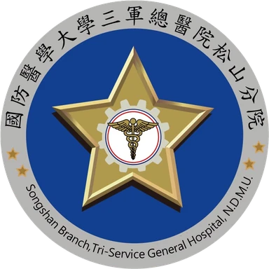
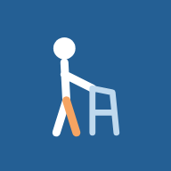
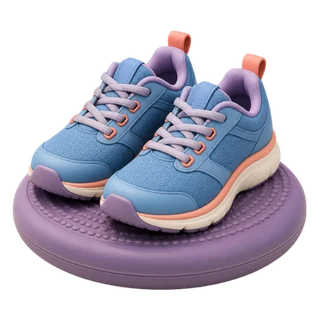
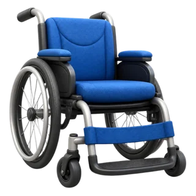
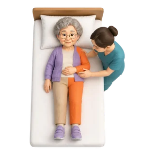
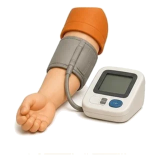

<!doctype html>
<html lang="zh-Hant">
<head>
<meta charset="utf-8">
<meta name="viewport" content="width=device-width,initial-scale=1,viewport-fit=cover">
<title>腦中風 PAC 衛教</title>
<meta name="robots" content="noindex,nofollow">
<meta name="description" content="給病人、家屬與看護的腦中風急性後期照護衛教｜國防醫學大學三軍總醫院松山分院">
<meta property="og:type" content="website">
<meta property="og:title" content="腦中風 PAC 衛教｜三軍總醫院松山分院">
<meta property="og:description" content="給病人、家屬與看護的急性後期照護衛教，五種語言、可朗讀、可離線使用。">
<meta property="og:image" content="https://huiting01682-png.github.io/index/img/og.jpg?v=v75-1151020">
<meta property="og:image:width" content="1200"><meta property="og:image:height" content="630">
<meta property="og:url" content="https://huiting01682-png.github.io/index/">
<meta name="twitter:card" content="summary_large_image">
<meta name="theme-color" content="#245F94">
<meta name="mobile-web-app-capable" content="yes">
<meta name="apple-mobile-web-app-capable" content="yes">
<meta name="apple-mobile-web-app-title" content="PAC 衛教">
<link rel="manifest" href="manifest.webmanifest">
<link rel="icon" type="image/png" href="icons/icon-192.png">
<link rel="apple-touch-icon" href="icons/apple-touch-icon.png">
<style>:root{color-scheme:light;padding:env(safe-area-inset-top,0px) 0 env(safe-area-inset-bottom,0px)}body{margin:0}img{max-width:100%}[hidden]{display:none!important}</style>
<style>
/* 版面概念：手機單欄 App——上方固定列（名稱＋字級）、中間內容、下方四個分頁；長輩可讀的大字與大按鍵 */
:root{
  --bg:#EEF3F8; --surface:#FFFFFF; --surface-2:#F4F8FB;
  --ink:#1B2559; --text:#27324A; --muted:#556178; --line:#D3DFEA;
  --primary:#245F94; --on-primary:#FFFFFF; --primary-soft:#E1EDF8;
  --ok:#0B7A57; --ok-soft:#DCF2E9;
  --alert:#B92335; --alert-soft:#FDECEE; --alert-line:#F0B5BC;
  --speak:#FFF1C2; --weak:#C9590F; --pic-soft:#CFE3F3;
  --tile-ink:#14213D;
  --tile-blue:#7FB3D9; --tile-teal:#7ECBC4; --tile-green:#86C5A0; --tile-orange:#EFA97A;
  --tile-pink:#E793A0; --tile-purple:#B49AD1; --tile-sky:#9CC9E8;
  --shadow:0 1px 2px rgba(27,37,89,.06),0 6px 18px rgba(27,37,89,.06);
  --font:"PingFang TC","Microsoft JhengHei","Noto Sans TC","Heiti TC",system-ui,-apple-system,"Segoe UI",sans-serif;
}
@media (prefers-color-scheme: dark){
  :root:not([data-theme="light"]){
    --bg:#140E09; --surface:#21170F; --surface-2:#2A1E14;
    --ink:#FFEBD2; --text:#F2DCC0; --muted:#CDAF8E; --line:#47331F;
    --primary:#FFB25E; --on-primary:#1A0F06; --primary-soft:#3D2814;
    --ok:#D7D86A; --ok-soft:#2F2E10;
    --alert:#FF7B66; --alert-soft:#3E150F; --alert-line:#88301F;
    --speak:#4D3510; --weak:#FF6A3D; --pic-accent:#F2E08A; --pic-soft:#4A321C;
    --tile-blue:#C99A6B; --tile-teal:#C9A35F; --tile-green:#B8AE5E; --tile-orange:#E9925A;
    --tile-pink:#E08A74; --tile-purple:#C58C7C; --tile-sky:#D3A877;
    --shadow:0 1px 2px rgba(0,0,0,.35),0 6px 18px rgba(0,0,0,.3);
    color-scheme:dark;
  }
}
:root[data-theme="dark"]{
  --bg:#140E09; --surface:#21170F; --surface-2:#2A1E14;
  --ink:#FFEBD2; --text:#F2DCC0; --muted:#CDAF8E; --line:#47331F;
  --primary:#FFB25E; --on-primary:#1A0F06; --primary-soft:#3D2814;
  --ok:#D7D86A; --ok-soft:#2F2E10;
  --alert:#FF7B66; --alert-soft:#3E150F; --alert-line:#88301F;
  --speak:#4D3510; --weak:#FF6A3D; --pic-accent:#F2E08A; --pic-soft:#4A321C;
  --tile-blue:#C99A6B; --tile-teal:#C9A35F; --tile-green:#B8AE5E; --tile-orange:#E9925A;
  --tile-pink:#E08A74; --tile-purple:#C58C7C; --tile-sky:#D3A877;
  --shadow:0 1px 2px rgba(0,0,0,.35),0 6px 18px rgba(0,0,0,.3);
  color-scheme:dark;
}
html{font-size:18px}
body{background:var(--bg);color:var(--text);font-family:var(--font);font-size:1rem;line-height:1.75;-webkit-text-size-adjust:100%}
*{box-sizing:border-box}
button,select{font:inherit;color:inherit}
button{cursor:pointer}
:focus-visible{outline:3px solid var(--primary);outline-offset:2px;border-radius:6px}
h1,h2,h3{color:var(--ink);line-height:1.35;margin:0;text-wrap:balance}
p{margin:0}
ul{margin:0;padding-left:1.3em}
li+li{margin-top:.35em}
a{color:var(--primary)}
svg.i{width:1.5em;height:1.5em;fill:none;stroke:currentColor;stroke-width:2;stroke-linecap:round;stroke-linejoin:round;flex:none}

.app{max-width:640px;margin-inline:auto}

/* 上方固定列（字級固定，不隨放大而擠壓） */
.bar{position:sticky;top:env(safe-area-inset-top,0px);z-index:5;background:var(--surface);border-bottom:1px solid var(--line);
  display:flex;flex-wrap:wrap;align-items:center;justify-content:space-between;gap:8px 12px;padding:10px 16px}
.brand{font-size:18px;font-weight:700;color:var(--ink);display:flex;align-items:center;gap:8px;min-width:0}
.chip{font-size:16px;font-weight:600;color:var(--primary);background:var(--primary-soft);border-radius:999px;padding:0 10px;line-height:1.6;white-space:nowrap}
.fs{display:flex;align-items:center;gap:6px;font-size:16px}
.fs span{color:var(--muted)}
.fs button{min-width:44px;min-height:40px;padding:0 8px;border:1px solid var(--line);background:var(--surface);border-radius:10px;font-size:16px}
.fs button[aria-pressed="true"]{background:var(--primary);border-color:var(--primary);color:var(--on-primary);font-weight:700}

main{padding-inline:16px;padding-block:20px calc(110px + env(safe-area-inset-bottom,0px));display:flex;flex-direction:column;gap:20px;min-width:0}
main > *{min-width:0}

/* 下方分頁 */
.tabs{position:fixed;left:0;right:0;bottom:0;z-index:6;background:var(--surface);border-top:1px solid var(--line);
  padding-bottom:env(safe-area-inset-bottom,0px)}
.tabs div{max-width:640px;margin-inline:auto;display:grid;grid-template-columns:repeat(4,1fr)}
.tabs button{border:0;background:none;padding:8px 4px 10px;display:flex;flex-direction:column;align-items:center;gap:2px;
  font-size:min(.9rem,20px);color:var(--muted);min-height:64px}
.tabs button[aria-current="page"]{color:var(--primary);font-weight:700}
.tabs button[aria-current="page"] svg{stroke-width:2.4}

/* 首頁 */
.intro h1{font-size:1.55rem}
.intro .chip{display:inline-block;margin-bottom:8px}
.intro p{margin-top:8px;color:var(--muted)}
.today{display:flex;align-items:center;gap:14px;width:100%;text-align:left;background:var(--primary);color:var(--on-primary);
  border:0;border-radius:16px;padding:16px;box-shadow:var(--shadow)}
.today b{display:block;font-size:1.1rem}
.today .meter{flex:1;min-width:0}
.track{height:10px;border-radius:999px;background:color-mix(in srgb,var(--on-primary) 28%,transparent);margin-top:8px;overflow:hidden}
.track i{display:block;height:100%;background:var(--on-primary);border-radius:999px}
.sec-h{font-size:1.15rem;margin-bottom:10px}
.list{background:var(--surface);border:1px solid var(--line);border-radius:16px;overflow:hidden;box-shadow:var(--shadow)}
.unit{display:grid;grid-template-columns:auto minmax(0,1fr) auto;gap:14px;align-items:center;width:100%;text-align:left;
  background:none;border:0;border-top:1px solid var(--line);padding:14px}
.unit:first-child{border-top:0}
.unit:active{background:var(--surface-2)}
.tile{width:52px;height:52px;border-radius:14px;display:grid;place-items:center;color:var(--tile-ink)}
.tile svg{width:28px;height:28px}
.t-blue{background:var(--tile-blue)}.t-teal{background:var(--tile-teal)}.t-green{background:var(--tile-green)}
.t-orange{background:var(--tile-orange)}.t-pink{background:var(--tile-pink)}.t-purple{background:var(--tile-purple)}.t-sky{background:var(--tile-sky)}
.unit b{display:block;color:var(--ink);font-size:1.05rem;line-height:1.4}
.unit small{display:block;color:var(--muted);font-size:.9rem;line-height:1.5;margin-top:2px}
.unit .go{color:var(--muted)}

/* 警訊區 */
.sos{background:var(--alert-soft);border:1px solid var(--alert-line);border-radius:16px;padding:16px}
.sos h2,.sos h3{color:var(--alert);font-size:1.15rem;display:flex;align-items:center;gap:8px}
.sos ol{list-style:none;margin:12px 0 0;padding:0;display:flex;flex-direction:column;gap:8px}
.sos ol li{margin:0;background:var(--surface);border-radius:12px;padding:10px 14px;display:grid;grid-template-columns:3.4rem minmax(0,1fr);gap:12px;align-items:center}
.sos ol b{display:block;color:var(--ink);font-size:1.1rem}
.sos ol span{display:block;line-height:1.5;color:var(--text)}
.sos .call{margin-top:12px;font-weight:700;color:var(--ink)}
.sos .call em{font-style:normal;color:var(--alert);font-size:1.5rem;font-variant-numeric:tabular-nums;padding-inline:4px}

.about{color:var(--muted);font-size:.9rem;display:flex;flex-direction:column;gap:8px}
.about h2{font-size:1rem;color:var(--ink)}
.about ul{display:flex;flex-direction:column;gap:4px}
.about li+li{margin-top:0}

/* 文章 */
.back{align-self:flex-start;border:0;background:none;color:var(--primary);font-weight:600;padding:6px 0;min-height:44px;display:flex;align-items:center;gap:4px}
.art-h{display:flex;flex-direction:column;gap:6px}
.art-h h1{font-size:1.5rem}
.art-h p{color:var(--muted);font-size:.9rem}
.speakbar{display:flex;flex-wrap:wrap;align-items:center;gap:10px 14px;background:var(--surface);border:1px solid var(--line);border-radius:14px;padding:12px}
.btn{border:1px solid var(--primary);background:var(--primary);color:var(--on-primary);font-weight:700;border-radius:12px;
  min-height:52px;padding:0 18px;display:inline-flex;align-items:center;justify-content:center;gap:8px}
.btn.ghost{background:var(--surface);color:var(--primary)}
.btn[disabled]{opacity:.45;cursor:default}
.speakbar label{display:flex;align-items:center;gap:8px;color:var(--muted);font-size:.9rem}
.speakbar select{min-height:44px;border:1px solid var(--line);border-radius:10px;background:var(--surface);padding:0 10px;font-size:1rem;color:var(--text)}
.speakbar .note{flex-basis:100%;color:var(--muted);font-size:.9rem}
.article{display:flex;flex-direction:column;gap:14px;max-width:34em}
.article h2{font-size:1.2rem;margin-top:10px;padding-top:14px;border-top:1px solid var(--line)}
.article h2:first-child{margin-top:0;padding-top:0;border-top:0}
.article .speaking{background:var(--speak);border-radius:6px;box-shadow:0 0 0 6px var(--speak)}
.key{background:var(--primary-soft);border-radius:14px;padding:14px 16px;display:flex;flex-direction:column;gap:8px}
.key h3{font-size:1.05rem}
.warn{background:var(--alert-soft);border:1px solid var(--alert-line);border-radius:14px;padding:14px 16px;display:flex;flex-direction:column;gap:8px}
.warn h3{font-size:1.05rem;color:var(--alert)}
dl.modes{margin:0;display:flex;flex-direction:column;gap:10px}
dl.modes div{background:var(--surface);border:1px solid var(--line);border-radius:12px;padding:12px 14px}
dl.modes dt{font-weight:700;color:var(--ink)}
dl.modes dd{margin:2px 0 0}

/* PAC 期程圖：0–12 週，同一比例尺 */
.weeks{background:var(--surface);border:1px solid var(--line);border-radius:14px;padding:16px 16px 12px}
.weeks .cap{font-weight:700;color:var(--ink);font-size:1rem;margin-bottom:12px}
.weeks .scale{position:relative;height:22px;border-radius:999px;background:var(--surface-2);border:1px solid var(--line);overflow:hidden}
.weeks .scale i{position:absolute;top:0;bottom:0}
.weeks .scale .base{left:0;width:50%;background:var(--primary)}
.weeks .scale .ext{left:50%;width:50%;background:repeating-linear-gradient(135deg,var(--tile-teal) 0 8px,transparent 8px 14px)}
.weeks .ticks{position:relative;height:3.6em;margin-top:6px;font-size:.9rem;line-height:1.3;font-variant-numeric:tabular-nums}
.weeks .ticks span{position:absolute;top:0;transform:translateX(-50%);text-align:center;color:var(--text);white-space:nowrap}
.weeks .ticks span::before{content:"";display:block;width:2px;height:8px;background:var(--muted);margin:0 auto 2px}
.weeks .ticks span:first-child{transform:none}
.weeks .ticks span:first-child::before{margin-left:0}
.weeks .ticks span:last-child{transform:translateX(-100%)}
.weeks .ticks span:last-child::before{margin-right:0}
.weeks .legend{display:flex;flex-wrap:wrap;gap:6px 18px;font-size:.9rem;color:var(--text)}
.weeks .legend span{display:flex;align-items:center;gap:8px}
.weeks .legend i{width:22px;height:12px;border-radius:4px;flex:none}
.weeks .legend .l1{background:var(--primary)}
.weeks .legend .l2{background:repeating-linear-gradient(135deg,var(--tile-teal) 0 5px,transparent 5px 9px);border:1px solid var(--line)}

/* 圖解：象形圖一律用主題色，橘色只代表「無力的那一側」 */
svg.pg{display:block;width:100%;max-width:5.6rem;height:auto;margin-inline:auto;fill:none;stroke:var(--ink);stroke-width:3.5;stroke-linecap:round;stroke-linejoin:round}
svg.pg .f{fill:var(--ink);stroke:none}
svg.pg .w{stroke:var(--weak)}
svg.pg .wf{fill:var(--weak);stroke:none}
svg.pg .s{stroke:var(--muted);stroke-width:2.5}
svg.pg .sf{fill:var(--pic-soft);stroke:none}
svg.pg .g{stroke:var(--ok)}
svg.pg .r{stroke:var(--alert)}
svg.pg .p{stroke:var(--pic-accent,var(--primary))}
svg.pg text{fill:var(--ink);stroke:none;font-size:7.5px;font-weight:700;font-family:var(--font)}
.pics{display:grid;gap:8px}
.pics.c2{grid-template-columns:repeat(2,minmax(0,1fr))}
.pics.c3{grid-template-columns:repeat(3,minmax(0,1fr))}
.pics.c4{grid-template-columns:repeat(2,minmax(0,1fr))}
@media (min-width:560px){.pics.c4{grid-template-columns:repeat(4,minmax(0,1fr))}}
.pics.flow{grid-template-columns:minmax(0,1fr) auto minmax(0,1fr) auto minmax(0,1fr);align-items:center;gap:4px}
.pics.flow > svg.i{color:var(--muted);width:1.1em;height:1.1em}
.pic{margin:0;background:var(--surface);border:1px solid var(--line);border-radius:14px;padding:10px 6px;display:flex;flex-direction:column;gap:6px;align-items:center;text-align:center;height:100%}
.pic figcaption{display:flex;flex-direction:column;line-height:1.4;text-wrap:balance}
.pic b{color:var(--ink);font-size:.95rem}
.pic span{font-size:.9rem;color:var(--text)}
.pic.ok{border:2px solid var(--ok)}
.pic.ok b{color:var(--ok)}
.pic.no{border:2px solid var(--alert)}
.pic.no b{color:var(--alert)}
.fig{margin:0;background:var(--surface);border:1px solid var(--line);border-radius:14px;padding:12px}
.fig svg.pg{max-width:22rem;stroke-width:2.2}
.fig svg.pg .s{stroke-width:1.4}
.fig figcaption{text-align:center;font-size:.9rem;color:var(--text);margin-top:6px}
dl.modes dt{display:flex;align-items:center;gap:10px}
dl.modes dt svg.pg{width:2.6rem;margin:0;flex:none}
.vh{position:absolute;width:1px;height:1px;overflow:hidden;clip-path:inset(50%);white-space:nowrap}

.pager{display:grid;grid-template-columns:repeat(auto-fit,minmax(150px,1fr));gap:10px}

/* 清單 */
.seg{display:grid;grid-template-columns:1fr 1fr;gap:6px;background:var(--surface);border:1px solid var(--line);border-radius:14px;padding:6px}
.seg button{border:0;background:none;border-radius:10px;min-height:48px;color:var(--muted);font-weight:600}
.seg button[aria-pressed="true"]{background:var(--primary);color:var(--on-primary)}
.prog{display:flex;flex-direction:column;gap:8px}
.prog .row{display:flex;justify-content:space-between;align-items:baseline;gap:12px;flex-wrap:wrap}
.prog b{color:var(--ink);font-size:1.15rem;font-variant-numeric:tabular-nums}
.prog .line{height:12px;border-radius:999px;background:var(--line);overflow:hidden}
.prog .line i{display:block;height:100%;background:var(--ok);border-radius:999px;transition:width .25s}
.checks{list-style:none;margin:0;padding:0}
.checks li{margin:0;border-top:1px solid var(--line)}
.checks li:first-child{border-top:0}
.checks label{display:grid;grid-template-columns:auto minmax(0,1fr);gap:14px;align-items:center;padding:14px;min-height:60px;cursor:pointer}
.checks input{appearance:none;-webkit-appearance:none;width:32px;height:32px;border:2px solid var(--muted);border-radius:9px;background:var(--surface);margin:0;display:grid;place-items:center;cursor:pointer}
.checks input:checked{background:var(--ok);border-color:var(--ok)}
.checks input:checked::after{content:"";width:9px;height:16px;border:solid var(--surface);border-width:0 3px 3px 0;transform:rotate(45deg) translate(-1px,-2px)}
.checks input:checked + span{color:var(--muted)}
.hint{color:var(--muted);font-size:.9rem}

/* 測驗 */
.quiz{background:var(--surface);border:1px solid var(--line);border-radius:16px;padding:18px;box-shadow:var(--shadow);display:flex;flex-direction:column;gap:16px}
.quiz .no{color:var(--muted);font-size:.9rem;font-variant-numeric:tabular-nums}
.quiz .q{font-size:1.2rem;font-weight:700;color:var(--ink);line-height:1.5}
.ans{display:grid;grid-template-columns:1fr 1fr;gap:10px}
.ans button{min-height:64px;border-radius:14px;border:2px solid var(--line);background:var(--surface);font-size:1.15rem;font-weight:700;color:var(--ink)}
.ans button.pick{border-color:var(--primary);background:var(--primary-soft)}
.ans button[disabled]{cursor:default}
.fb{border-radius:14px;padding:14px 16px;display:flex;flex-direction:column;gap:6px}
.fb.right{background:var(--ok-soft)}
.fb.wrong{background:var(--primary-soft)}
.fb b{color:var(--ink)}
.score{font-size:2.4rem;font-weight:800;color:var(--ink);line-height:1.1;font-variant-numeric:tabular-nums}
.score small{font-size:1.1rem;font-weight:600;color:var(--muted)}
.review{display:flex;flex-direction:column;gap:10px}
.review div{border-top:1px solid var(--line);padding-top:10px}
.linkbtn{border:0;background:none;color:var(--primary);font-weight:600;padding:6px 0;text-decoration:underline;text-align:left}

@media (prefers-reduced-motion: reduce){*{transition:none!important;scroll-behavior:auto!important}}

/* 多語言版調整 */
:root{--font:Arial,"Helvetica Neue",Helvetica,"PingFang TC","Microsoft JhengHei","Noto Sans TC","Heiti TC","Leelawadee UI","Thonburi","Noto Sans Thai",system-ui,-apple-system,"Segoe UI",sans-serif}
html:lang(th) body{line-height:1.9}
.bar{flex-wrap:nowrap}
.brand{display:none;white-space:nowrap;overflow:hidden;text-overflow:ellipsis}
@media (min-width:560px){.brand{display:block}}
.lang{display:flex;align-items:center;gap:6px;color:var(--muted);min-width:0}
.lang select{min-height:40px;min-width:0;border:1px solid var(--line);border-radius:10px;background:var(--surface);color:var(--text);font-size:16px;padding:0 8px}
.fs{flex:none}
.fs button{display:grid;place-items:center;min-width:42px;padding:0 6px}
.fs button span{color:inherit;line-height:1;font-weight:700}
.eyebrow{display:flex;flex-wrap:wrap;align-items:center;gap:8px;margin-bottom:8px;font-weight:700;color:var(--primary)}
.intro .eyebrow .chip{display:inline-block;margin-bottom:0}
.unit b,.unit small,.pic b,.pic span,.checks span,.quiz .q{overflow-wrap:anywhere}
.pic .num{font-style:normal;display:inline-grid;place-items:center;width:1.5em;height:1.5em;border-radius:50%;background:var(--primary);color:var(--on-primary);margin-right:.35em;font-size:.9em;line-height:1}
.pic.step b{display:flex;flex-direction:column;align-items:center;gap:4px}
.pic.step .num{margin-right:0}
.weeks .ticks{height:1.9em}
.weeks .legend .l3{width:2px;height:12px;background:var(--muted);border-radius:0;margin-inline:10px}
.tabs button span{text-align:center;line-height:1.25;overflow-wrap:anywhere}
.seg button{padding:8px 6px;line-height:1.3}
.today b{overflow-wrap:anywhere}
.ans button{padding:8px 6px;line-height:1.3}
.btn{padding:8px 14px;line-height:1.3;text-align:center}
.pager .btn{min-width:0;overflow-wrap:anywhere}
.pics.flow{gap:2px}
.pics.flow .pic{padding:8px 4px}
.pics.flow .pic b{font-size:.9rem}
.pics.flow > svg.i{width:.9em;height:.9em}
.pic b,.pic span{hyphens:auto}
.pics.flow .pic b{font-size:16px}
/* 英文、印尼文單字較長：手機上三欄圖卡改為一列一張（圖左字右） */
@media (max-width:559px){
  html:lang(en) .pics.c3,html:lang(id) .pics.c3{grid-template-columns:minmax(0,1fr)}
  html:lang(en) .pics.c3 .pic,html:lang(id) .pics.c3 .pic{flex-direction:row;align-items:center;text-align:left;gap:14px;padding:10px 14px}
  html:lang(en) .pics.c3 .pic svg.pg,html:lang(id) .pics.c3 .pic svg.pg{width:3.6rem;margin:0;flex:none}
  html:lang(en) .pics.c3 .pic figcaption,html:lang(id) .pics.c3 .pic figcaption{min-width:0}
  html:lang(en) .pics.c3 .pic.step b,html:lang(id) .pics.c3 .pic.step b{flex-direction:row;gap:8px}
}

/* ---------- 資源頁 ---------- */
.tabs div{grid-template-columns:repeat(5,minmax(0,1fr))}
.tabs button{padding-inline:2px}
.rescard{display:grid;grid-template-columns:auto minmax(0,1fr) auto;gap:14px;align-items:center;width:100%;text-align:left;
  background:var(--surface);border:1px solid var(--line);border-radius:16px;padding:14px;box-shadow:var(--shadow)}
.rescard b{display:block;color:var(--ink);font-size:1.05rem;line-height:1.4;overflow-wrap:anywhere}
.rescard small{display:block;color:var(--muted);font-size:.9rem;line-height:1.5;margin-top:2px;overflow-wrap:anywhere}
.rescard .go{color:var(--muted)}
.rfilter{display:flex;flex-direction:column;gap:10px;background:var(--surface);border:1px solid var(--line);border-radius:16px;padding:12px}
.rq{display:flex;align-items:center;gap:8px;border:2px solid var(--line);border-radius:12px;padding:0 6px 0 12px;background:var(--surface);min-height:52px;color:var(--muted)}
.rq:focus-within{border-color:var(--primary)}
.rq input{flex:1;min-width:0;border:0;background:none;font:inherit;font-size:1rem;color:var(--text);padding:10px 0;outline:none}
.rq input::-webkit-search-cancel-button{display:none}
.rclear{border:0;background:var(--primary-soft);color:var(--primary);font-weight:700;border-radius:10px;padding:6px 12px;min-height:40px;font-size:16px}
.rc{display:flex;align-items:center;gap:10px;color:var(--muted)}
.rc span{flex:none}
.rc select{flex:1;min-width:0;min-height:48px;border:1px solid var(--line);border-radius:12px;background:var(--surface);color:var(--text);font:inherit;font-size:1rem;padding:0 10px}
.rcount{font-weight:700;color:var(--ink);font-variant-numeric:tabular-nums}
.rlist{display:flex;flex-direction:column;gap:10px}
.rnone{background:var(--surface);border:1px dashed var(--line);border-radius:14px;padding:16px;color:var(--muted)}
.rcard{background:var(--surface);border:1px solid var(--line);border-radius:14px;overflow:hidden}
.rcard[open]{border-color:var(--primary)}
.rcard summary{list-style:none;cursor:pointer;display:grid;grid-template-columns:minmax(0,1fr) auto;column-gap:10px;row-gap:4px;padding:14px;align-items:start}
.rcard summary::-webkit-details-marker{display:none}
.rcard summary > *{grid-column:1}
.rcard .rmore{grid-column:2;grid-row:1 / span 4;align-self:center;color:var(--muted);transition:transform .2s}
.rcard[open] .rmore{transform:rotate(90deg)}
.rchips{display:flex;flex-wrap:wrap;gap:6px}
.rchip{font-size:.8rem;font-weight:700;line-height:1.6;padding:0 8px;border-radius:999px;background:var(--primary-soft);color:var(--primary)}
.rname{color:var(--ink);font-size:1.08rem;line-height:1.4;overflow-wrap:anywhere}
.rzh{color:var(--muted);font-size:.9rem;line-height:1.5}
.rwhat{color:var(--text);line-height:1.6;overflow-wrap:anywhere}
.rbody{border-top:1px solid var(--line);padding:12px 14px 14px;display:flex;flex-direction:column;gap:12px}
.rbody dl{margin:0;display:flex;flex-direction:column;gap:10px}
.rbody dt{font-weight:700;color:var(--ink);font-size:.95rem}
.rbody dd{margin:2px 0 0;overflow-wrap:anywhere}
.rnote{background:var(--primary-soft);border-radius:10px;padding:10px 12px;line-height:1.6}
.rnote b{color:var(--ink)}
.rtels h4{margin:0 0 6px;font-size:.95rem;color:var(--ink)}
.rtels ul{list-style:none;margin:0;padding:0;display:flex;flex-direction:column;gap:8px}
.rtels li{margin:0;background:var(--surface-2);border-radius:10px;padding:10px 12px;display:flex;flex-direction:column;gap:2px}
.rtels .tl{font-size:.92rem;color:var(--text);overflow-wrap:anywhere}
.rtels .num{display:inline-flex;align-items:center;gap:6px;font-weight:800;font-size:1.15rem;color:var(--primary);font-variant-numeric:tabular-nums;user-select:all;-webkit-user-select:all;text-decoration:none;flex-wrap:wrap}
.rtels .num svg.i{width:1em;height:1em}
.rtels .ext{font-weight:700;font-size:.95rem;color:var(--text)}
.rtels .addr{font-size:.9rem;color:var(--muted)}
.rlink{align-self:flex-start;display:inline-flex;align-items:center;gap:6px;font-weight:700;min-height:44px}
.rlink svg.i{width:1.1em;height:1.1em}
@media (prefers-reduced-motion: reduce){.rcard .rmore{transition:none}}
.golink{align-self:flex-start;gap:8px}
/* 出處 */
.srccard{margin-top:12px}
.unitsrc{margin:20px 0 4px;padding:14px 16px;border:1px solid var(--line);border-radius:14px;background:var(--surface);color:var(--muted);font-size:.92rem;line-height:1.6}
.unitsrc b{display:block;color:var(--ink);margin-bottom:4px}
.unitsrc ul{margin:0 0 6px;padding-left:1.2em;list-style:disc}
.unitsrc p{margin:4px 0}
.linkbtn{display:inline-flex;align-items:center;gap:4px;min-height:44px;padding:6px 0;border:0;background:none;color:var(--primary);font:inherit;font-weight:700;cursor:pointer}
.linkbtn svg{width:18px;height:18px}
.srcpage .cite{font-size:.9rem;color:var(--muted);overflow-wrap:anywhere;margin-top:8px}
.srcpage .srclinks{list-style:disc;padding-left:1.2em}
.srcpage a{overflow-wrap:anywhere}
.srcpage ul{display:flex;flex-direction:column;gap:6px}
/* 依病人狀況挑重點 */
.focusnote{margin:0 0 10px;color:var(--muted);font-size:.95rem;line-height:1.6}
.focusnote .linkbtn{min-height:auto;padding:0 4px}
details.others{margin-top:14px;border:1px solid var(--line);border-radius:14px;background:var(--surface)}
details.others summary{cursor:pointer;padding:14px 16px;font-weight:700;color:var(--ink);min-height:48px}
details.others .list{padding:0 10px 10px}
.recordnote{margin:12px 0;padding:12px 14px;border-radius:12px;background:var(--primary-soft);color:var(--ink);font-size:.95rem;line-height:1.6}
.t-orange{background:var(--tile-orange)}
/* 顯示模式按鈕（自動／日間／夜間） */
.themebtn{flex:none;display:grid;place-items:center;min-width:42px;min-height:40px;padding:0 6px;border:1px solid var(--line);border-radius:10px;background:var(--surface);color:var(--ink)}
.themebtn svg{width:22px;height:22px;fill:none;stroke:currentColor;stroke-width:2;stroke-linecap:round;stroke-linejoin:round}
:root[data-theme="dark"] .themebtn{color:var(--primary)}
@media (max-width:370px){.lang select{max-width:96px}.fs button{min-width:38px}}

/* 3D 情境插圖 */
.photos{display:grid;gap:10px;margin:2px 0}
.photos img{display:block;width:100%;height:auto;aspect-ratio:4/3;object-fit:cover;border-radius:14px;background:var(--line);box-shadow:0 1px 3px rgba(0,0,0,.12)}
@media (min-width:560px){.photos.two{grid-template-columns:repeat(2,minmax(0,1fr))}}
:root[data-theme="dark"] .photos img{filter:brightness(.82) sepia(.12)}
@media (prefers-color-scheme: dark){:root:not([data-theme="light"]) .photos img{filter:brightness(.82) sepia(.12)}}
/* ===== 115.10.17 皮克斯動畫風改版：圓體字、明亮暖色、立體圓角卡片、字色分層 ===== */
@font-face{font-family:"Huninn";src:url(fonts/huninn-sub.woff2) format("woff2");font-weight:100 900;font-display:swap}
@font-face{font-family:"Nunito";src:url(fonts/nunito-latin-400.woff2) format("woff2");font-weight:400;font-display:swap;unicode-range:U+0000-00FF,U+0131,U+0152-0153,U+02BB-02BC,U+02C6,U+02DA,U+02DC,U+2000-206F,U+20AC,U+2122,U+2191,U+2193,U+2212,U+2215}
@font-face{font-family:"Nunito";src:url(fonts/nunito-latin-800.woff2) format("woff2");font-weight:600 900;font-display:swap;unicode-range:U+0000-00FF,U+0131,U+0152-0153,U+02BB-02BC,U+02C6,U+02DA,U+02DC,U+2000-206F,U+20AC,U+2122,U+2191,U+2193,U+2212,U+2215}
@font-face{font-family:"Nunito";src:url(fonts/nunito-vietnamese-400.woff2) format("woff2");font-weight:400;font-display:swap;unicode-range:U+0102-0103,U+0110-0111,U+0128-0129,U+0168-0169,U+01A0-01A1,U+01AF-01B0,U+0300-0301,U+0303-0304,U+0308-0309,U+0323,U+0329,U+1EA0-1EF9,U+20AB}
@font-face{font-family:"Nunito";src:url(fonts/nunito-vietnamese-800.woff2) format("woff2");font-weight:600 900;font-display:swap;unicode-range:U+0102-0103,U+0110-0111,U+0128-0129,U+0168-0169,U+01A0-01A1,U+01AF-01B0,U+0300-0301,U+0303-0304,U+0308-0309,U+0323,U+0329,U+1EA0-1EF9,U+20AB}
@font-face{font-family:"Mitr";src:url(fonts/mitr-thai-400.woff2) format("woff2");font-weight:400;font-display:swap;unicode-range:U+0E01-0E5B,U+200C-200D,U+25CC}
@font-face{font-family:"Mitr";src:url(fonts/mitr-thai-600.woff2) format("woff2");font-weight:600 900;font-display:swap;unicode-range:U+0E01-0E5B,U+200C-200D,U+25CC}

:root{
  --font:"Nunito","Huninn","Mitr","PingFang TC","Microsoft JhengHei",system-ui,sans-serif;
  /* 天空藍＋暖奶油底，像動畫電影的晴天場景 */
  --bg:#FFF7EA; --surface:#FFFFFF; --surface-2:#FFF1DA;
  --ink:#123A73;      /* 大標：深海軍藍 */
  --text:#2B2F3A;     /* 內文：近黑灰，和標題明顯區分 */
  --muted:#5D6472;    /* 補充說明 */
  --line:#F0DEC2;
  --primary:#1F6FD1; --on-primary:#FFFFFF; --primary-soft:#E2EEFF;
  --accent:#FF9F1C;   /* 陽光橘：重點、勾選 */
  --ok:#14866D; --ok-soft:#DDF5EC; --ok-ink:#0B5E4C;
  --alert:#D6334B; --alert-soft:#FFE8EB; --alert-line:#F7B9C2; --alert-ink:#A11A30;
  --speak:#FFE6A8; --weak:#E8590C;
  --sky1:#5DB7FF; --sky2:#2E7FE0;
  --tile-blue:#5FA8F5; --tile-teal:#38C3B7; --tile-green:#6CCB6E; --tile-orange:#FFAA4C;
  --tile-pink:#FF8FA8; --tile-purple:#A88BF0; --tile-sky:#6FD0F7;
  --shadow:0 2px 0 rgba(18,58,115,.06),0 10px 24px -8px rgba(18,58,115,.22);
  --press:0 4px 0 #1553A3;
  --r:22px;
}
@media (prefers-color-scheme: dark){
  :root:not([data-theme="light"]){
    --bg:#160F09; --surface:#241910; --surface-2:#2E2015; --line:#4A3420;
    --ink:#FFD9A6; --text:#F5E3CC; --muted:#CDB08E;
    --primary:#FFB25E; --on-primary:#1A0F06; --primary-soft:#3D2814; --accent:#FFC46B;
    --ok:#D7D86A; --ok-soft:#2F2E10; --ok-ink:#E6E79A;
    --alert:#FF7B66; --alert-soft:#3E150F; --alert-line:#88301F; --alert-ink:#FFB2A4;
    --sky1:#7A4A22; --sky2:#4A2B12; --press:0 4px 0 #8A5A24;
  }
}
:root[data-theme="dark"]{
  --bg:#160F09; --surface:#241910; --surface-2:#2E2015; --line:#4A3420;
  --ink:#FFD9A6; --text:#F5E3CC; --muted:#CDB08E;
  --primary:#FFB25E; --on-primary:#1A0F06; --primary-soft:#3D2814; --accent:#FFC46B;
  --ok:#D7D86A; --ok-soft:#2F2E10; --ok-ink:#E6E79A;
  --alert:#FF7B66; --alert-soft:#3E150F; --alert-line:#88301F; --alert-ink:#FFB2A4;
  --sky1:#7A4A22; --sky2:#4A2B12; --press:0 4px 0 #8A5A24;
}
body{font-family:var(--font);letter-spacing:.01em}
h1,h2,h3{font-weight:800;letter-spacing:.02em}

/* 上方列：天空藍漸層＋院徽＋醫院名 */
/* 院徽與醫院名（會隨捲動離開），下方控制列固定在上 */
.masthead{background:linear-gradient(180deg,#2A7FE0,#3F9CF2);padding:12px 16px 6px}
:root[data-theme="dark"] .masthead{background:linear-gradient(180deg,#4A2B12,#7A4A22)}
:root[data-theme="dark"] .bar{background:linear-gradient(180deg,#7A4A22,#4A2B12)}
@media (prefers-color-scheme: dark){:root:not([data-theme="light"]) .masthead{background:linear-gradient(180deg,#4A2B12,#7A4A22)}:root:not([data-theme="light"]) .bar{background:linear-gradient(180deg,#7A4A22,#4A2B12)}}
.masthead .brand{display:flex!important;white-space:normal;overflow:visible;color:#fff;gap:12px;align-items:center}
.bar{background:linear-gradient(180deg,#3F9CF2,var(--sky2));border-bottom:0;color:#fff;box-shadow:0 6px 16px -10px rgba(0,0,0,.5);border-radius:0 0 22px 22px}
.brand .emblem{width:46px;height:46px;border-radius:50%;flex:none;background:#fff;box-shadow:0 2px 6px rgba(0,0,0,.25)}
.brand .bn{display:flex;flex-direction:column;line-height:1.25;min-width:0}
.brand .bn small{font-size:14px;font-weight:700;white-space:normal;text-shadow:0 1px 0 rgba(0,0,0,.2)}
.brand .bn b{font-size:19px;font-weight:800;text-shadow:0 2px 0 rgba(0,0,0,.18)}
.bar .lang,.bar .themebtn{color:#fff}
.bar .lang select{color:#1E2A3A;background:#fff;border-radius:999px;border:0}
.bar .themebtn{background:rgba(255,255,255,.18);border-radius:999px}
.bar .fs{background:rgba(255,255,255,.2);border-radius:999px;padding:3px}
.bar .fs button{color:#fff;border-radius:999px;border:0;background:transparent}
.bar .fs button[aria-pressed="true"]{background:#fff;color:var(--sky2);box-shadow:0 2px 0 rgba(0,0,0,.15)}

/* 首頁橫幅 */
.hero{display:block;width:100%;height:auto;aspect-ratio:16/9;object-fit:cover;border-radius:var(--r);box-shadow:var(--shadow);margin:2px 0 4px}
.intro h1{color:var(--ink);font-size:1.6rem;text-shadow:0 2px 0 rgba(255,159,28,.25)}
.intro p{color:var(--text)}
.eyebrow span:first-child{color:var(--primary);font-weight:800}
.chip{background:var(--accent);color:#3A2300;border:0;font-weight:800;border-radius:999px}

/* 卡片：圓角、柔和陰影、上緣高光 */
.unit,.rescard,.today,.pic,.key,.warn,.sos,.about,.box,.rcard,.quiz,.score,.checks li,.unitsrc{border-radius:var(--r)!important;box-shadow:var(--shadow);border-color:var(--line)}
.list .unit{margin-bottom:10px;border:1px solid var(--line)}
.unit b,.rescard b{color:var(--ink);font-weight:800}
.unit small,.rescard small{color:var(--muted)}
.tile{border-radius:18px;box-shadow:inset 0 -4px 0 rgba(0,0,0,.12),inset 0 3px 0 rgba(255,255,255,.45)}
.tile{overflow:visible}
.tile img{width:108%;height:auto;max-width:none;object-fit:contain;filter:drop-shadow(0 3px 3px rgba(0,0,0,.25))}
.go{color:var(--primary)}

/* 文章：標題、內文、說明三層字色 */
.art-h h1{color:var(--ink);font-size:1.55rem}
.art-h p{color:var(--muted)}
.article{color:var(--text)}
.article h2{color:var(--ink);font-size:1.28rem;border-top:0;padding-top:16px;display:flex;align-items:center;gap:10px}
.article h2::before{content:"";flex:none;width:10px;height:1.1em;border-radius:6px;background:linear-gradient(180deg,var(--accent),#FF6B3D)}
.key{background:var(--ok-soft);border:2px solid color-mix(in srgb,var(--ok) 30%,transparent)}
.key h3{color:var(--ok-ink)}
.warn{background:var(--alert-soft);border:2px solid var(--alert-line)}
.warn h3{color:var(--alert-ink)}
.hint,.note{color:var(--muted)}
.sec-h{color:var(--ink);font-weight:800}

/* 按鈕：立體果凍感 */
.btn{border-radius:999px;font-weight:800;box-shadow:var(--press);border:0;transition:transform .08s}
.btn:active{transform:translateY(3px);box-shadow:0 1px 0 #1553A3}
.btn.ghost{box-shadow:0 3px 0 var(--line)}

/* 圖解小圖示：3D 圖片 */
img.pg{display:block;width:100%;height:auto;max-width:6.4rem;aspect-ratio:1;object-fit:contain;margin-inline:auto;filter:drop-shadow(0 4px 4px rgba(18,58,115,.18))}
.pic{background:linear-gradient(180deg,#FFFFFF,#FFF6E8);border:1px solid var(--line)}
:root[data-theme="dark"] .pic{background:var(--surface)}
.pic b{color:var(--ink)}
.pic span{color:var(--muted)}

/* 下方分頁 */
.tabs{border-radius:22px 22px 0 0;box-shadow:0 -6px 16px -10px rgba(0,0,0,.35)}
.tabs button[aria-current="page"]{color:var(--primary);font-weight:800}

/* 情境動畫 */
.photos video,.photos img{border-radius:var(--r)}
.photos video{display:block;width:100%;height:auto;aspect-ratio:4/3;object-fit:cover;background:var(--line);box-shadow:var(--shadow)}
:root[data-theme="dark"] .photos video,:root[data-theme="dark"] .hero{filter:brightness(.82) sepia(.12)}
@media (prefers-color-scheme: dark){:root:not([data-theme="light"]) .photos video,:root:not([data-theme="light"]) .hero{filter:brightness(.82) sepia(.12)}}
@media (prefers-reduced-motion: reduce){.btn{transition:none}}

/* 動畫下方的分解步驟 */
.steps3d{list-style:none;margin:0;padding:0;display:grid;gap:8px}
.steps3d li{display:grid;grid-template-columns:96px 2.2em 1fr;align-items:center;gap:10px;background:var(--surface);border:1px solid var(--line);border-radius:16px;padding:6px 12px 6px 6px;box-shadow:var(--shadow);margin:0}
.steps3d img{width:96px;height:72px;object-fit:cover;border-radius:12px;display:block}
.steps3d i{font-style:normal;font-weight:800;color:#fff;background:linear-gradient(180deg,var(--accent),#FF6B3D);width:2em;height:2em;border-radius:50%;display:grid;place-items:center}
.steps3d span{color:var(--ink);font-weight:700;line-height:1.45}
:root[data-theme="dark"] .steps3d img{filter:brightness(.82) sepia(.12)}

/* 居家環境安全自我檢查 */
.slist{list-style:none;margin:0;padding:0;display:grid;gap:14px}
.sitem{background:var(--surface);border:2px solid var(--line);border-radius:20px;padding:14px;display:grid;gap:12px;box-shadow:0 4px 0 rgba(0,0,0,.05)}
.sitem.is-ok{border-color:var(--ok)}
.sitem.is-fix{border-color:var(--alert-line);background:var(--alert-soft)}
.sitem.is-na{opacity:.75}
.sq{display:grid;grid-template-columns:4.2rem 1fr;gap:12px;align-items:start}
.sq img.pg,.sq svg.pg{width:4.2rem;max-width:4.2rem;margin:0}
.sq b{display:block;font-size:1.08em;line-height:1.4;color:var(--ink)}
.sq p{margin:.3em 0 0;color:var(--muted);font-size:.92em;line-height:1.55}
.seg.seg3{grid-template-columns:1fr 1fr 1fr}
.seg3 .sv-ok[aria-pressed="true"]{background:var(--ok);color:#fff}
.seg3 .sv-fix[aria-pressed="true"]{background:var(--alert);color:#fff}
.seg3 .sv-na[aria-pressed="true"]{background:var(--muted);color:var(--surface)}
.sphoto{display:flex;flex-wrap:wrap;gap:10px;align-items:center}
.sphoto img{width:100%;max-height:16rem;object-fit:cover;border-radius:14px;border:1px solid var(--line)}
.sphoto .btn{flex:1 1 9rem;min-height:48px;cursor:pointer}
.sphoto label.btn:focus-within{outline:3px solid var(--primary);outline-offset:2px}
.sfix{margin:0;padding-inline-start:1.4em;display:grid;gap:10px}
.sfix b{display:block;color:var(--ink)}
.sfix span{color:var(--muted);font-size:.92em}
.sacts{display:grid;gap:10px;margin-top:14px}
.sacts .btn{width:100%;justify-content:center;text-align:center;text-decoration:none}
.sarea{margin-top:18px}
:root[data-theme="dark"] .seg3 button[aria-pressed="true"]{color:#1A0F06}
@media (prefers-color-scheme:dark){:root:not([data-theme="light"]) .seg3 button[aria-pressed="true"]{color:#1A0F06}}
.intro h1 .h1when{display:block;margin-top:.15em;font-size:.68em;font-weight:700;color:var(--muted);text-shadow:none;white-space:nowrap}

/* 資源地圖與交通 */
.rtransit,.rmapsec{margin-top:18px}
.rtransit>.btn{width:100%;justify-content:center;margin:6px 0 4px;text-decoration:none}
.rtransit h3{margin:14px 0 6px;color:var(--ink)}
.rmap{height:320px;border-radius:18px;overflow:hidden;border:2px solid var(--line);background:var(--surface-2,#FFF1DA);margin:10px 0}
.rmap iframe{width:100%;height:100%;border:0;display:block}
.rmap .mapoff{padding:16px}
.mchips{display:flex;flex-wrap:wrap;gap:8px;margin:6px 0 10px}
.mchip{display:inline-flex;align-items:center;gap:6px;min-height:42px;padding:6px 12px;border-radius:999px;border:1.5px solid var(--line);background:var(--surface);color:var(--text);font-weight:700;font-size:.92em}
.mchip[aria-pressed="true"]{background:var(--primary);border-color:var(--primary);color:var(--on-primary)}
.mdot{display:inline-block;width:12px;height:12px;border-radius:50%;flex:none;box-shadow:0 0 0 2px #fff}
.mlist{list-style:none;margin:0;padding:0;display:grid;gap:10px}
.mplace{display:grid;grid-template-columns:14px 1fr;gap:10px;align-items:start;background:var(--surface);border:1.5px solid var(--line);border-radius:16px;padding:12px}
.mplace.on{border-color:var(--primary);box-shadow:0 0 0 2px var(--primary-soft)}
.mplace .mdot{margin-top:6px}
.mplace b{display:block;color:var(--ink);line-height:1.4}
.maddr{display:block;color:var(--muted);font-size:.9em;line-height:1.5;margin-top:2px}
.macts{display:flex;flex-wrap:wrap;gap:8px;margin-top:8px}
.mroutes{display:flex;flex-wrap:wrap;gap:6px;margin-top:6px}
.mroutes span{min-width:2.6em;text-align:center;padding:3px 8px;border-radius:8px;background:var(--primary-soft);color:var(--ink);font-weight:800;font-size:.9em}
.btn.sm{min-height:42px;padding:6px 12px;font-size:.88em;text-decoration:none}
.shuttle .snext{font-size:1.25em;font-weight:800;color:var(--ink)}
.angle3d .angwrap{position:relative;max-width:12rem;margin-inline:auto}
.angle3d img.pg{max-width:12rem}
.angle3d .angtag{position:absolute;right:4px;top:8px;background:var(--primary);color:var(--on-primary);font-weight:800;border-radius:999px;padding:2px 10px;font-size:.95em}
/* 上方設定列：往下捲時自動收起，往上捲或回到頂端時再出現，不擋內容 */
.bar{transition:transform .25s ease}
.bar.hide{transform:translateY(calc(-100% - 12px))}
@media (prefers-reduced-motion: reduce){.bar{transition:none}}
.mroutes span.lf{background:var(--ok-soft);color:var(--ok-ink);box-shadow:inset 0 0 0 1.5px var(--ok)}
.mroutes span.lf i{font-style:normal;margin-right:2px}
.lfbox{margin-top:12px}.lfbox .btn{width:100%;justify-content:center;text-decoration:none}
.rmapbtn{display:flex;flex-direction:column;gap:10px;margin:-2px 0 12px}.rmapbtn .btn{flex:1;justify-content:center;text-decoration:none}
.rmap .mapcard{height:100%;display:flex;flex-direction:column;align-items:center;justify-content:center;gap:6px;padding:16px;text-align:center}
.mapcard svg{width:56px;height:56px}.mapcard b{font-size:1.1em}.mapcard .hint{margin:4px 0 0}
/* 心情溫度計 */
.thermo{width:30px;height:30px;color:var(--ink);flex:none;vertical-align:-6px;margin-right:6px}
.moodbtn{display:flex;align-items:center;gap:12px;width:100%;margin:6px 0 14px;padding:14px 16px;border-radius:18px;border:2px solid var(--alert-line);background:var(--alert-soft);color:var(--ink);text-align:left;font:inherit;cursor:pointer;box-shadow:var(--shadow)}
.moodbtn .thermo{width:40px;height:40px;margin:0}.moodbtn span{flex:1;display:flex;flex-direction:column;gap:2px}.moodbtn b{font-size:1.1em}.moodbtn small{color:var(--muted);font-size:.9em}
.mlist{list-style:none;padding:0;margin:0}.mq{background:var(--surface);border:1.5px solid var(--line);border-radius:16px;padding:12px;margin:10px 0}.mq p{margin:0 0 10px}
.mopts{display:grid;grid-template-columns:repeat(5,1fr);gap:6px}
.mopts button{display:flex;flex-direction:column;align-items:center;gap:2px;padding:8px 2px;border-radius:12px;border:1.5px solid var(--line);background:var(--surface-2,#FFF6E8);color:var(--ink);font:inherit;font-size:.82em;line-height:1.25;cursor:pointer;min-height:64px;word-break:break-word}
.mopts button em{font-style:normal;font-weight:800;font-size:1.35em}
.mopts button[aria-pressed="true"]{background:var(--primary);border-color:var(--primary);color:var(--on-primary)}
.mres{border-radius:16px;padding:14px;border:2px solid var(--line);background:var(--surface)}
.mres.lv0{border-color:#2E9E6B}.mres.lv1{border-color:#D9A400}.mres.lv2{border-color:#E8762C}.mres.lv3{border-color:#E5484D}
.mres h3{margin:10px 0 4px}.mscore{font-weight:800;font-size:1.15em;margin:0 0 10px}
.mbar{position:relative;display:flex;height:14px;border-radius:8px;overflow:visible}
.mbar i{display:block;height:100%}.mbar .b0{flex:6;background:#2E9E6B;border-radius:8px 0 0 8px}.mbar .b1{flex:4;background:#F2C230}.mbar .b2{flex:5;background:#E8762C}.mbar .b3{flex:6;background:#E5484D;border-radius:0 8px 8px 0}
.mbar b{position:absolute;top:-6px;width:6px;height:26px;margin-left:-3px;border-radius:3px;background:var(--ink);box-shadow:0 0 0 2px var(--surface)}
.mscale{position:relative;height:18px;font-size:.78em;color:var(--muted)}
.mscale span{position:absolute;transform:translateX(-50%)}.mscale span:nth-child(1){left:0;transform:none}.mscale span:nth-child(2){left:28.6%}.mscale span:nth-child(3){left:47.6%}.mscale span:nth-child(4){left:71.4%}.mscale span:nth-child(5){right:0;transform:none}
.mres+.box,.mres~.btn{margin-top:12px}.mcrisis .btn{width:100%;justify-content:center;text-decoration:none;margin-top:8px}
#mood-res .btn{width:100%;justify-content:center}
.mhist{list-style:none;padding:0;margin:0}.mhist li{display:flex;align-items:center;gap:10px;padding:8px 10px;border-left:6px solid var(--line);background:var(--surface);border-radius:10px;margin:6px 0}
.mhist li span,.mhist li b{white-space:nowrap}.mhist li b{min-width:4.5em}.mhist li small{color:var(--muted)}.mhist .lv0{border-color:#2E9E6B}.mhist .lv1{border-color:#F2C230}.mhist .lv2{border-color:#E8762C}.mhist .lv3{border-color:#E5484D}
/* 加到手機桌面 */
.instcard .tile img{width:100%;height:100%;border-radius:14px;object-fit:cover}
.iurl{display:flex;flex-wrap:wrap;align-items:center;gap:8px;background:var(--surface);border:1.5px solid var(--line);border-radius:16px;padding:12px;margin:12px 0}
.iurl span{width:100%;font-weight:800;color:var(--ink)}.iurl code{flex:1 1 180px;word-break:break-all;font-size:.9em;color:var(--muted)}
.itabs{display:grid;grid-template-columns:1fr 1fr;gap:8px;margin:14px 0}
.itabs button{padding:12px 6px;border-radius:14px;border:2px solid var(--line);background:var(--surface);color:var(--ink);font:inherit;font-weight:800;cursor:pointer}
.itabs button[aria-pressed="true"]{background:var(--primary);border-color:var(--primary);color:var(--on-primary)}
.isteps{list-style:none;padding:0;margin:12px 0;counter-reset:none}
.isteps li{display:flex;gap:14px;align-items:center;background:var(--surface);border:1.5px solid var(--line);border-radius:18px;padding:14px;margin:12px 0;box-shadow:var(--shadow)}
.itext{flex:1;display:flex;gap:10px;align-items:flex-start}.itext p{margin:0}
.itext>b{flex:none;width:34px;height:34px;border-radius:50%;background:var(--primary);color:var(--on-primary);display:grid;place-items:center;font-size:1.05em}
.phone{flex:none;width:112px;height:200px;border-radius:20px;background:#2B2B2E;padding:6px;box-shadow:0 4px 10px rgba(0,0,0,.18)}
.pscr{position:relative;width:100%;height:100%;border-radius:15px;background:#F4F1EC;overflow:hidden;display:flex;flex-direction:column;font-size:9px;color:#333}
.purl{position:relative;margin:8px 6px 0;padding:4px 18px 4px 6px;border-radius:8px;background:#E2DED7;white-space:nowrap;overflow:hidden;text-overflow:ellipsis;font-size:8px}
.purl .dots{position:absolute;right:2px;top:50%;transform:translateY(-50%);font-size:13px;font-weight:900;padding:0 4px;border-radius:6px}
.pbody{flex:1;margin:6px;border-radius:6px;background:repeating-linear-gradient(#fff 0 9px,#F4F1EC 9px 14px)}
.pbody.dim{opacity:.4}
.pbar{display:flex;justify-content:space-around;align-items:center;height:30px;background:#E9E5DE;font-size:15px;color:#3478F6}
.pbar span{display:grid;place-items:center;width:24px;height:24px;border-radius:8px}.pbar svg{width:16px;height:16px}
.psheet{position:absolute;left:0;right:0;bottom:0;background:#fff;border-radius:12px 12px 0 0;padding:8px 6px;display:flex;flex-direction:column;gap:5px;box-shadow:0 -3px 8px rgba(0,0,0,.15)}
.psheet i,.pmenu i{display:block;height:12px;border-radius:4px;background:#ECE8E1}
.psheet b,.pmenu b{display:flex;justify-content:space-between;align-items:center;padding:4px 5px;border-radius:6px;font-size:8.5px;line-height:1.2;background:#F4F1EC}
.psheet b em{font-style:normal;font-size:11px}
.pmenu{position:absolute;right:6px;top:30px;width:78%;background:#fff;border-radius:8px;padding:6px;display:flex;flex-direction:column;gap:5px;box-shadow:0 3px 10px rgba(0,0,0,.2);z-index:1}
.phome{display:grid;grid-template-columns:repeat(3,1fr);grid-auto-rows:46px;gap:8px;padding:14px 8px;background:linear-gradient(160deg,#9EC9E8,#F2C9A0)}
.phome span{border-radius:10px;background:rgba(255,255,255,.55);height:30px;align-self:start}
.phome .me{background:none;height:auto;display:flex;flex-direction:column;align-items:center;gap:2px;padding:2px;border-radius:10px}
.phome .me img{width:30px;height:30px;border-radius:8px}.phome .me small{font-size:7px;color:#222;white-space:nowrap}
.hl{outline:3px solid #E8762C;outline-offset:1px;animation:hlpulse 1.6s ease-in-out infinite}
@keyframes hlpulse{50%{outline-color:rgba(232,118,44,.35)}}
@media (prefers-reduced-motion:reduce){.hl{animation:none}}
@media (max-width:360px){.isteps li{flex-direction:column;align-items:stretch}.isteps .phone{align-self:center}}
.psheet b,.pmenu b{font-size:10px}.purl .dots{font-size:15px;right:3px}
.pdlgbar{display:flex;justify-content:space-between;align-items:center;padding:8px 6px 4px;font-size:10px;color:#3478F6}.pdlgbar b{padding:2px 5px;border-radius:6px}
.pdlg{display:flex;align-items:center;gap:6px;margin:4px 6px;padding:6px;background:#fff;border-radius:8px;font-size:9px}.pdlg img,.pbox img{width:26px;height:26px;border-radius:7px}
.pbox{position:absolute;left:8px;right:8px;top:50%;transform:translateY(-50%);background:#fff;border-radius:10px;padding:10px 8px;display:flex;flex-direction:column;align-items:center;gap:5px;font-size:9px;box-shadow:0 4px 12px rgba(0,0,0,.25)}
.pbox div{display:flex;justify-content:flex-end;gap:10px;width:100%;color:#1A73E8;font-size:10px}.pbox b{padding:1px 5px;border-radius:6px}
.isteps .phone{width:124px;height:214px}
.privbox h3{display:flex;align-items:center;gap:6px}.privbox h3 svg{width:22px;height:22px;flex:none}.about .privbox{margin:12px 0}
.mlinks{display:flex;flex-direction:column;gap:10px;margin:14px 0}.mlinks .btn{justify-content:center;text-decoration:none;text-align:center}
/* 復健小樹 */
.tree{display:flex;align-items:center;gap:14px;margin:12px 0;padding:14px;border-radius:var(--r);background:linear-gradient(160deg,var(--ok-soft),var(--surface));border:2px solid var(--line);box-shadow:var(--shadow)}
.treepic{flex:none;width:110px;height:110px;border-radius:50%;background:radial-gradient(circle at 50% 60%,#FFF6DA,#EAF6E3);display:grid;place-items:center;overflow:hidden}
.treepic img{width:96px;height:96px;object-fit:contain;transition:transform .5s}
.treepic.st0 img{filter:saturate(.25) brightness(1.05);transform:scale(.7)}
.treepic.pop img{animation:treepop .9s ease}
@keyframes treepop{30%{transform:scale(1.18) rotate(-4deg)}60%{transform:scale(.95) rotate(3deg)}}
@media (prefers-reduced-motion:reduce){.treepic.pop img{animation:none}}
.treeinfo{flex:1;min-width:0}.treeinfo h2{margin:0;font-size:1.1em;color:var(--ink)}.treeinfo p{margin:4px 0}
.treestage{color:var(--ok-ink);font-weight:800}
.treeinfo .line{height:10px;border-radius:6px;background:var(--surface-2,#FFF1DA);overflow:hidden;margin:6px 0}.treeinfo .line i{display:block;height:100%;background:var(--ok);border-radius:6px}
.treetoday{font-weight:700;color:var(--muted)}.treetoday.ok{color:var(--ok-ink)}
.todaytree{flex:none;width:52px;height:52px;border-radius:14px;background:#EAF6E3;display:grid;place-items:center}.todaytree img{width:46px;height:46px;object-fit:contain}
.treetoast{pointer-events:none;position:fixed;left:50%;bottom:96px;transform:translateX(-50%);z-index:60;background:var(--ok-ink,#1E6B47);color:#fff;padding:12px 18px;border-radius:999px;font-weight:800;box-shadow:0 6px 18px rgba(0,0,0,.2);transition:opacity .4s}
.treetoast.out{opacity:0}
@media (max-width:330px){.tree{flex-direction:column;text-align:center}}
.treemiss{margin:4px 0 0;padding-left:1.2em;font-size:.95em;color:var(--ink)}.treemiss li{margin:2px 0}
.checks li.treekey{border-color:var(--ok)!important;background:var(--ok-soft)}
.checks em.drop{font-style:normal;font-size:.78em;font-weight:800;color:#fff;background:var(--ok);border-radius:999px;padding:1px 8px;margin-left:4px;white-space:nowrap}
.checks em.drop::before{content:"💧 "}
/* 小樹加大＋微微搖動 */
.today .todaytree{width:84px;height:84px;border-radius:20px;background:radial-gradient(circle at 50% 65%,#FFF8E1,#E3F4DA);overflow:visible}
.today .todaytree img{width:80px;height:80px}
.today .nobr,.today .treedays{display:block;white-space:nowrap}
.today .treedays{font-weight:800;margin-top:2px}
.treepic{width:140px;height:140px}.treepic img{width:128px;height:128px}
.todaytree img,.treepic img{transform-origin:50% 92%;animation:treesway 3.6s ease-in-out infinite}
.treepic.st0 img{animation:none}
.treepic.pop img{animation:treepop .9s ease,treesway 3.6s ease-in-out .9s infinite}
@keyframes treesway{0%,100%{transform:rotate(-2.5deg)}50%{transform:rotate(2.5deg) translateY(-1px)}}
@media (prefers-reduced-motion:reduce){.todaytree img,.treepic img{animation:none!important}}
.today .nobr,.today .treedays{white-space:normal;text-wrap:balance}
.tree{flex-direction:column;align-items:stretch;text-align:left}
.tree .treepic{align-self:center;width:170px;height:170px}.tree .treepic img{width:156px;height:156px}
.tree .treeinfo h2,.tree .treestage{text-align:center}
.tree .treeinfo>p:nth-of-type(2){text-align:center}
/* 葉子飄落 */
.treepic,.todaytree{position:relative}
.treepic{overflow:hidden}
.treepic.st0 img{filter:saturate(.6) brightness(1.05);animation:treesway 3.6s ease-in-out infinite}
.leaf{position:absolute;top:-14px;width:12px;height:12px;background:linear-gradient(135deg,#9BD46A,#4E9F3D);border-radius:0 80% 0 80%;opacity:0;pointer-events:none;animation:leaffall 7s linear infinite}
.leaf.f1{left:28%;animation-delay:0s}.leaf.f2{left:62%;animation-delay:2.2s;width:10px;height:10px;background:linear-gradient(135deg,#C8E37A,#7DB046)}
.leaf.f3{left:45%;animation-delay:4.1s}.leaf.f4{left:75%;animation-delay:5.6s;width:9px;height:9px;background:linear-gradient(135deg,#F2C84B,#D9932B)}
.todaytree .leaf{width:8px;height:8px;top:-8px;animation-duration:6s}
@keyframes leaffall{0%{opacity:0;transform:translate(0,0) rotate(0)}10%{opacity:.95}50%{transform:translate(-14px,60px) rotate(140deg)}90%{opacity:.85}100%{opacity:0;transform:translate(10px,150px) rotate(300deg)}}
.todaytree .leaf{animation-name:leaffall2}
@keyframes leaffall2{0%{opacity:0;transform:translate(0,0) rotate(0)}15%{opacity:.95}60%{transform:translate(-8px,45px) rotate(160deg)}100%{opacity:0;transform:translate(6px,92px) rotate(300deg)}}
.today .todaytree{overflow:hidden}
@media (prefers-reduced-motion:reduce){.leaf{display:none}}
/* 比較表（手機上每列一張卡） */
.cmptbl{margin:14px 0;display:flex;flex-direction:column;gap:8px}
.cmprow{display:grid;grid-template-columns:5.2em 1fr 1fr;gap:6px;align-items:stretch}
.cmprow>*{padding:10px 8px;border-radius:12px;line-height:1.45}
.cmprow b{background:var(--surface-2,#FFF1DA);color:var(--ink);display:flex;align-items:center;font-size:.92em}
.cmprow .c0{background:#E3F0FB;color:#1B4F7A}.cmprow .c1{background:#FDEBDD;color:#8A4317}
.cmphead>*{font-weight:800;font-size:.9em;padding:8px}.cmphead>span:first-child{background:none}
:root[data-theme="dark"] .cmprow .c0{background:#1E3448;color:#CFE6FB}:root[data-theme="dark"] .cmprow .c1{background:#432A1C;color:#FBDCC6}
@media (prefers-color-scheme:dark){:root:not([data-theme="light"]) .cmprow .c0{background:#1E3448;color:#CFE6FB}:root:not([data-theme="light"]) .cmprow .c1{background:#432A1C;color:#FBDCC6}}
@media (max-width:380px){.cmprow{grid-template-columns:1fr 1fr}.cmprow b{grid-column:1/-1}.cmphead>span:first-child{display:none}}
/* 圖示清單 */
.icl{list-style:none;padding:0;margin:8px 0 0}
.icl li{display:flex;align-items:center;gap:12px;padding:8px 0;border-top:1px dashed var(--line)}
.icl li:first-child{border-top:0}
.iclpic{flex:none;width:58px;height:58px;border-radius:16px;background:rgba(255,255,255,.75);display:grid;place-items:center}
.iclpic .pg{width:52px;height:52px}
/* 小標＋細項列點 */
li.lio{list-style:none;margin-left:-1.1em}
.article ul li.lio::marker{content:""}
.lih{display:block;font-weight:700;color:var(--ink);line-height:1.45}
.lione{display:block;margin-top:.15em}
ul.lisub{margin:.25em 0 0;padding-left:1.15em}
ul.lisub li{margin:.1em 0;line-height:1.55}
ul.lisub li::marker{color:var(--primary)}
.icl li.lio{margin-left:0}
.ictx{flex:1;min-width:0}
.icl ul.lisub li{display:list-item;border:0;padding:0;gap:0;margin:.1em 0}
.icl li{align-items:flex-start}
.icl li .iclpic{margin-top:4px}
/* 衛教單元分類（可展開） */
.grphint{margin:2px 4px 10px;color:var(--muted);font-size:.92em}
.grps{display:flex;flex-direction:column;gap:12px}
details.grp{border-radius:var(--r);background:var(--surface);box-shadow:var(--shadow);border:2px solid transparent;overflow:hidden}
details.grp[open]{border-color:var(--primary-soft)}
details.grp > summary{list-style:none;display:flex;align-items:center;gap:14px;padding:14px 14px 14px 12px;cursor:pointer;min-height:84px;scroll-margin-top:90px}
details.grp > summary::-webkit-details-marker{display:none}
details.grp > summary .tile{flex:0 0 64px;width:64px;height:64px}
details.grp > summary .tile img{width:100%;height:100%;object-fit:contain}
.grpt{flex:1;min-width:0;display:flex;flex-direction:column;gap:2px}
.grpt b{font-size:1.12em;color:var(--ink);text-wrap:balance}
.grpt small{color:var(--muted);line-height:1.45;text-wrap:pretty}
.grpn{flex:0 0 auto;font-size:.82em;font-weight:700;color:var(--primary);background:var(--primary-soft);border-radius:999px;padding:3px 10px;white-space:nowrap}
.grpchev{flex:0 0 auto;display:flex;transition:transform .2s;color:var(--muted)}
details.grp[open] .grpchev{transform:rotate(90deg)}
details.grp > .list{padding:0 10px 2px;background:none;border:0;box-shadow:none;border-radius:0}
details.grp > .list .unit{box-shadow:none;border:1px solid var(--line)}
@media (max-width:380px){.grpn{display:none}}
@media (prefers-reduced-motion:reduce){.grpchev{transition:none}}
.iclpic.num{width:40px;height:40px;flex:0 0 40px;margin:2px 9px 0;border-radius:50%;background:var(--primary);color:var(--on-primary);font-weight:800;font-size:1.05em;display:flex;align-items:center;justify-content:center;box-shadow:none}
.warn .iclpic.num{background:var(--alert);color:#fff}
.article > ul.icl{background:var(--surface);border-radius:16px;padding:4px 14px;box-shadow:var(--shadow);margin:10px 0}
.iclpic.num.dot{background:var(--primary-soft);color:var(--primary)}
.iclpic.num.dot svg{width:22px;height:22px}
.warn .iclpic.num.dot{background:var(--alert-soft);color:var(--alert)}
/* 首頁小樹長大動畫：10 秒一輪，每階段約 1.6 秒，開花停留較久 */
.todaytree.growing img.g{position:absolute;left:2px;top:2px;opacity:0;animation:growstep 10s ease-in-out infinite}
.todaytree.growing img.g1{animation-delay:0s}
.todaytree.growing img.g2{animation-delay:1.6s}
.todaytree.growing img.g3{animation-delay:3.2s}
.todaytree.growing img.g4{animation-delay:4.8s}
.todaytree.growing img.g5{animation:growbloom 10s ease-in-out infinite}
@keyframes growstep{0%{opacity:0;transform:scale(.96)}3%{opacity:1;transform:scale(1)}16%{opacity:1}20%{opacity:0}100%{opacity:0}}
@keyframes growbloom{0%,62%{opacity:0;transform:scale(.92)}66%{opacity:1;transform:scale(1.06)}70%{transform:scale(1)}96%{opacity:1}100%{opacity:0}}
@media (prefers-reduced-motion:reduce){.todaytree.growing img.g{animation:none!important;opacity:0}.todaytree.growing img.g5{opacity:1}}
/* 挑重點卡併入衛教單元 */
.sec-h + .focuscard, .intro + .focuscard{margin:0 0 12px;border:2px solid var(--primary-soft)}
/* 資源分類（可展開） */
details.rgrp > .rlist{padding:0 10px 8px}
details.rgrp > .rlist .rcard{box-shadow:none;border:1px solid var(--line)}
details.rgrp .grpt b{font-size:1.15em}
#res-list > .grps{margin-top:12px}
details.rgrp .rcard .rchips{display:none}
@media (max-width:380px){details.rgrp .grpn{display:inline-block}}
.photos.vstack{display:flex;flex-direction:column;gap:10px}

.weeks .wnote{margin-top:6px;font-size:.92em;color:var(--muted);text-align:center}

/* ---------- 訓練營 ---------- */
.t-red{background:var(--alert-soft);color:var(--alert)}
.tricard{border:2px solid var(--alert-line)}
.tricard b{color:var(--alert)}
.onbcard{border:2px dashed var(--tile-orange)}
.onbcard.on{border:1px solid var(--line)}
.t3card{background:var(--surface);border:1px solid var(--line);border-radius:22px;padding:14px 14px 8px;margin:14px 0}
.t3card .sec-h{margin-top:0}
.t3row{display:grid;grid-template-columns:52px minmax(0,1fr) auto;gap:12px;align-items:center;width:100%;text-align:left;border:0;background:none;padding:10px 0;border-top:1px solid var(--line);color:var(--text)}
.t3row:first-of-type{border-top:0}
.t3ic{width:52px;height:52px;border-radius:14px;overflow:hidden;display:grid;place-items:center;background:var(--bg)}
.t3ic img{width:100%;height:100%;object-fit:cover}
.t3ic .t3n{font-weight:800;color:var(--primary);font-size:1.05rem}
.t3tx small{display:block;color:var(--muted);font-size:.85rem}
.t3tx b{display:block;color:var(--ink);line-height:1.35}
.t3st{display:inline-flex;align-items:center;gap:4px;color:var(--primary);font-weight:700;white-space:nowrap}
.t3st .i{width:18px;height:18px}
.t3row.done .t3st{color:var(--ok)}
.t3row.done .t3tx b{color:var(--muted);text-decoration:line-through}
.timg{display:block;width:100%;height:auto;border-radius:18px}
.simg{display:block;width:100%;max-width:420px;height:auto;border-radius:18px;margin:0 auto 12px}
.tico{width:120px!important;height:120px!important;object-fit:contain}
.onb{list-style:none;padding:0;margin:0;display:grid;gap:14px}
.onb li p{margin:0 0 8px}
.onbo{display:grid;grid-template-columns:repeat(auto-fit,minmax(100px,1fr));gap:8px}
.onbo button{min-height:52px;border-radius:14px;border:2px solid var(--line);background:var(--surface);color:var(--text);font-weight:600;padding:8px}
.onbo button[aria-pressed="true"]{border-color:var(--primary);background:var(--primary);color:var(--on-primary)}
.scenlist,.sklist{display:grid;gap:10px;margin-bottom:12px}
.scencard,.skrow{display:grid;grid-template-columns:72px minmax(0,1fr) auto;gap:12px;align-items:center;width:100%;text-align:left;border:1px solid var(--line);background:var(--surface);border-radius:18px;padding:8px 12px 8px 8px;color:var(--text)}
.scencard .scimg,.skrow .skimg{width:72px;height:60px;object-fit:cover;border-radius:12px}
.scencard .tico,.skrow .tico{width:60px!important;height:60px!important}
.sctx b,.sktx b{display:block;color:var(--ink);line-height:1.35}
.sctx small,.sktx small{display:inline-flex;align-items:center;gap:4px;color:var(--muted);font-size:.85rem;margin-top:2px}
.scencard.done small,.skrow.ok small{color:var(--ok)}
.scencard.done small .i,.skrow .skst .i{width:18px;height:18px;color:var(--ok)}
.skrow .ring{width:26px;height:26px;border-radius:50%;background:conic-gradient(var(--primary) calc(var(--p)*1%),var(--line) 0);display:block;position:relative}
.skrow .ring::after{content:"";position:absolute;inset:6px;border-radius:50%;background:var(--surface)}
.skrow.self .ring{background:conic-gradient(var(--tile-orange) 100%,var(--line) 0)}
.certcard.ready{border:2px solid var(--tile-orange)}
.scen{background:var(--surface);border:1px solid var(--line);border-radius:22px;padding:16px}
.sdots{display:flex;gap:6px;margin-bottom:12px}
.sdots i{flex:1;height:6px;border-radius:3px;background:var(--line)}
.sdots i.past{background:var(--ok)}
.sdots i.now{background:var(--primary)}
.stext{font-size:1.08em;line-height:1.6;color:var(--ink);margin:0 0 6px}
.sask{color:var(--muted);margin:0 0 10px;font-weight:700}
.sopts{display:grid;gap:10px}
.sopt{display:grid;grid-template-columns:36px minmax(0,1fr);gap:10px;align-items:center;text-align:left;min-height:56px;border:2px solid var(--line);background:var(--bg);border-radius:16px;padding:10px 12px;color:var(--text);line-height:1.45}
.sopt .sl{width:32px;height:32px;border-radius:50%;background:var(--surface);border:1px solid var(--line);display:grid;place-items:center;font-weight:800;color:var(--primary)}
.sopt:disabled{opacity:.55}
.sopt.pick{opacity:1}
.sopt.pick.good{border-color:var(--ok);background:var(--ok-soft)}
.sopt.pick.bad{border-color:var(--alert);background:var(--alert-soft)}
.sopt.pick.ok{border-color:var(--tile-orange);background:#FFF4E8}
:root[data-theme="dark"] .sopt.pick.ok{background:#3E2A12}
.sfb{margin-top:12px;border-radius:16px;padding:12px 14px;border:2px solid}
.sfb b{display:block;margin-bottom:4px}
.sfb p{margin:0 0 10px}
.sfb.good{border-color:var(--ok);background:var(--ok-soft)}.sfb.good b{color:var(--ok)}
.sfb.bad{border-color:var(--alert);background:var(--alert-soft)}.sfb.bad b{color:var(--alert)}
.sfb.ok{border-color:var(--tile-orange);background:#FFF4E8}.sfb.ok b{color:#B4571A}
:root[data-theme="dark"] .sfb.ok{background:#3E2A12}
.scen.end .score{font-size:1.2em;font-weight:800;color:var(--ink);margin-bottom:4px}
.skbox .checks{margin:8px 0 0}
.skver .passed{display:flex;gap:6px;align-items:center;color:var(--ok);font-weight:700}
.skver .passed .i{width:20px;height:20px}
.fld{display:block;margin:10px 0}
.fld span{display:block;font-size:.9rem;color:var(--muted);margin-bottom:4px}
.fld input{width:100%;min-height:48px;border:1px solid var(--line);border-radius:12px;padding:0 12px;font-size:1em;background:var(--surface);color:var(--text)}
.cert{margin:14px 0;background:#FFFDF7;border-radius:18px;padding:10px}
.cert .cborder{border:4px double #C99A3F;border-radius:14px;padding:22px 16px;text-align:center;color:#2B2B2B}
.cert img{width:96px;height:96px;margin:0 auto 6px}
.cert h2{margin:0 0 10px;color:#8A5A12;letter-spacing:.1em}
.cert .cname{font-size:1.5em;font-weight:800;margin:6px 0;border-bottom:2px solid #C99A3F;display:inline-block;padding:0 16px}
.cert p{margin:6px 0;line-height:1.6}
.cert .cdate,.cert .chosp{color:#6B5B3A;font-size:.95em}
.tri{border-radius:18px;padding:14px;margin:12px 0;border:2px solid}
.tri h2{margin:0 0 10px;font-size:1.1em}
.tri ul{list-style:none;margin:0;padding:0}
.tri li{padding:8px 0;border-top:1px solid rgba(0,0,0,.08)}
.tri li b{display:block;line-height:1.4}
.tri li small{display:block;color:var(--muted);margin-top:2px}
.tri.red{border-color:var(--alert);background:var(--alert-soft)}.tri.red h2{color:var(--alert)}
.tri.yellow{border-color:#E0A800;background:#FFF8DC}.tri.yellow h2{color:#8A6400}
.tri.green{border-color:var(--ok);background:var(--ok-soft)}.tri.green h2{color:var(--ok)}
:root[data-theme="dark"] .tri.yellow{background:#3A2F0A}:root[data-theme="dark"] .tri.yellow h2{color:#F0CC5A}
.btn.call{background:var(--alert);color:#fff;font-size:1.15em;min-height:60px;margin-bottom:8px}
.btn.ghost.call{background:none;color:var(--alert);border:2px solid var(--alert)}
.tritime{display:flex;align-items:center;gap:8px;margin:6px 0 10px}
.gate{display:grid;gap:10px;margin-bottom:14px}
.gbtn{display:grid;grid-template-columns:48px minmax(0,1fr);gap:12px;align-items:center;text-align:left;min-height:68px;border:2px solid var(--line);background:var(--surface);border-radius:18px;padding:10px 14px;color:var(--text);font-size:1.05em;font-weight:600}
.gbtn .gn{width:44px;height:44px;border-radius:50%;border:2px solid var(--line);display:grid;place-items:center;font-weight:800;color:var(--muted)}
.gbtn.on{border-color:var(--ok);background:var(--ok-soft)}
.gbtn.on .gn{background:var(--ok);border-color:var(--ok);color:#fff}
.gbtn.on .gn .i{width:24px;height:24px}
.gateno{text-align:center;font-weight:700}
.turnbox{background:var(--surface);border:1px solid var(--line);border-radius:22px;padding:14px;display:grid;gap:12px}
.trow{display:grid;gap:6px}
.trow .seg{grid-template-columns:repeat(3,1fr)}
.tst{min-height:56px;border-radius:16px;background:var(--bg);display:grid;place-items:center;text-align:center;padding:10px}
.tst b{font-size:1.2em;color:var(--ink)}
.tst span{color:var(--muted)}
.tst.due{background:var(--alert-soft);color:var(--alert)}
.tst.due b{color:var(--alert)}
.tlog,.bplog{list-style:none;padding:0;margin:0 0 12px}
.tlog li,.bplog li{display:flex;justify-content:space-between;align-items:center;padding:8px 12px;border-top:1px solid var(--line)}
.bplog li{border-left:6px solid var(--line);border-radius:6px;margin-bottom:4px;background:var(--surface)}
.bplog li.green{border-left-color:var(--ok)}
.bplog li.yellow{border-left-color:#E0A800}
.bplog li.red,.bplog li.low{border-left-color:var(--alert)}
.bpform{background:var(--surface);border:1px solid var(--line);border-radius:22px;padding:14px;display:grid;gap:10px}
.bpin{display:flex;gap:10px;align-items:center}
.bpin label{flex:1}
.bpin label span{display:block;font-size:.9rem;color:var(--muted);margin-bottom:4px}
.bpin input{width:100%;min-height:52px;border:1px solid var(--line);border-radius:12px;padding:0 12px;font-size:1.3em;text-align:center;background:var(--bg);color:var(--ink)}
.bplv{border-radius:18px;padding:14px;margin:12px 0;border:2px solid var(--line)}
.bplv b{font-size:1.6em;display:block}
.bplv p{margin:6px 0 8px}
.bplv.green{border-color:var(--ok);background:var(--ok-soft)}
.bplv.yellow{border-color:#E0A800;background:#FFF8DC}
:root[data-theme="dark"] .bplv.yellow{background:#3A2F0A}
.bplv.red,.bplv.low{border-color:var(--alert);background:var(--alert-soft)}
@media print{.bar,#tabs,.back,.btn,.hint,.intro,.sklist,.fld{display:none!important}.cert{margin:0}body{background:#fff}}

.onbgrid{display:grid;gap:10px;grid-template-columns:1fr 1fr}
.onbgrid.c3{grid-template-columns:1fr 1fr 1fr}
.onbcard{display:grid;grid-template-rows:auto auto;justify-items:center;gap:6px;min-height:150px;border:3px solid var(--line);background:var(--surface);border-radius:20px;padding:12px 8px;color:var(--ink);font-weight:700;font-size:1.02em;line-height:1.35;text-align:center}
.onbcard .onbimg,.onbcard .tico{width:88px!important;height:88px!important;object-fit:cover;border-radius:14px}
.onbcard .bodyfig{width:72px;height:96px}
.onbcard[aria-pressed="true"]{border-color:var(--primary);background:var(--primary-soft)}
.onbsum{list-style:none;margin:0 0 12px;padding:0;display:grid;gap:8px}
.onbsum button{display:grid;grid-template-columns:56px minmax(0,1fr) auto;gap:12px;align-items:center;width:100%;text-align:left;border:1px solid var(--line);background:var(--surface);border-radius:16px;padding:8px 12px;color:var(--text)}
.onbsum .onbimg,.onbsum .tico{width:56px!important;height:56px!important;object-fit:cover;border-radius:12px}
.onbsum .bodyfig{width:42px;height:56px}
.onbsum .ost small{display:block;color:var(--muted);font-size:.85rem}
.onbsum .ost b{display:block;color:var(--ink)}
.onbsum em{font-style:normal;color:var(--primary);font-weight:700}
@media (max-width:359px){.onbgrid.c3{grid-template-columns:1fr 1fr}}

.utrain{margin-top:18px}
.langnote{padding:10px 14px}
.progcard{background:var(--surface);border:1px solid var(--line);border-radius:22px;padding:14px;margin:14px 0}
.progcard .sec-h{margin-top:0}
.pgrid{display:grid;grid-template-columns:repeat(4,1fr);gap:8px}
.pcell{display:grid;justify-items:center;gap:4px;text-align:center}
.pcell .ring{width:44px;height:44px;border-radius:50%;background:conic-gradient(var(--primary) calc(var(--p)*1%),var(--line) 0);position:relative}
.pcell .ring::after{content:"";position:absolute;inset:7px;border-radius:50%;background:var(--surface)}
.pcell b{color:var(--ink);font-size:1.02em}
.pcell small{color:var(--muted);font-size:.78rem;line-height:1.2}

.rsec h4{margin:0 0 4px;font-size:.95rem;color:var(--ink)}
.rsec .icl{margin:0}
.rsec .icl li{padding:4px 0}
.rsec-warn .iclpic.num.dot{background:var(--alert-soft);color:var(--alert);border-color:var(--alert-line)}
.rsec-check .iclpic.num.dot{background:var(--ok-soft);color:var(--ok)}

ul.tl{margin:6px 0 0;padding-left:0;list-style:none;display:grid;gap:6px}
ul.tl li{position:relative;padding-left:22px;line-height:1.55}
ul.tl li::before{content:"";position:absolute;left:4px;top:.62em;width:9px;height:9px;border-radius:50%;background:var(--primary)}
.box.warn ul.tl li::before{background:var(--alert)}
.hint ul.tl li{color:var(--muted)}

.speakbar label{display:inline-flex;align-items:center;gap:6px;margin:6px 10px 0 0}
.speakbar select{max-width:200px}
.vtip{margin-top:8px;font-size:.95em}
.vtip summary{color:var(--primary);font-weight:700;cursor:pointer}
.vtip ul.tl{margin-top:8px}

.stepsbtn{margin:10px 0}
.st3{grid-template-columns:repeat(3,1fr);margin:0 0 12px}
.st3 button{font-size:.92em}
.stpre .stprebtn{display:grid;gap:8px;margin-top:10px}
.stno{margin:10px 0 0;color:var(--alert)}
.stcard{background:var(--surface);border:1px solid var(--line);border-radius:22px;padding:14px;margin-bottom:12px}
.sttop{display:grid;grid-template-columns:auto minmax(0,1fr);grid-template-rows:auto auto;column-gap:10px;align-items:center;margin-bottom:10px}
.stnum{grid-row:1/3;width:44px;height:44px;border-radius:50%;background:var(--primary);color:var(--on-primary);font-weight:800;font-size:1.25em;display:grid;place-items:center}
.sttop b{color:var(--ink);font-size:1.2em;line-height:1.3}
.sttop small{color:var(--muted)}
.stimgw{border-radius:16px;overflow:hidden;touch-action:pan-y}
.stimg{display:block;width:100%;height:auto}
.stchips{list-style:none;margin:12px 0 0;padding:0;display:flex;flex-wrap:wrap;gap:8px}
.stc{display:inline-flex;align-items:center;gap:6px;border-radius:999px;padding:7px 14px 7px 8px;font-weight:700;line-height:1.35;border:2px solid}
.stc .stk{width:24px;height:24px;border-radius:50%;display:grid;place-items:center;color:#fff;font-size:.85em;flex:0 0 24px}
.stc.do{border-color:var(--ok);background:var(--ok-soft);color:var(--ink)}
.stc.do .stk{background:var(--ok)}
.stc.dont{border-color:var(--alert);background:var(--alert-soft);color:var(--alert)}
.stc.dont .stk{background:var(--alert)}
.stdots{display:flex;justify-content:center;gap:8px;margin:14px 0 6px}
.stdots i{width:10px;height:10px;border-radius:50%;background:var(--line)}
.stdots i.on{background:var(--primary);width:26px;border-radius:5px}
.stnav{display:grid;grid-template-columns:1fr 1fr;gap:10px;margin-top:8px}
.drill{display:grid;grid-template-columns:1fr 1fr;gap:10px}
.dcard{display:grid;gap:6px;border:3px solid var(--line);background:var(--surface);border-radius:16px;padding:6px;color:var(--ink);font-weight:700;text-align:center;line-height:1.3}
.dcard .dimg{width:100%;height:auto;aspect-ratio:4/3;object-fit:cover;border-radius:10px}
.dcard em{font-style:normal;display:inline-grid;place-items:center;width:24px;height:24px;border-radius:50%;background:var(--ok);color:#fff;margin-right:4px;font-size:.85em}
.dcard.ok{border-color:var(--ok);background:var(--ok-soft);opacity:.85}
.dcard.shake{animation:shk .4s;border-color:var(--alert)}
@keyframes shk{0%,100%{transform:translateX(0)}25%{transform:translateX(-6px)}75%{transform:translateX(6px)}}
@media (prefers-reduced-motion:reduce){.dcard.shake{animation:none}}

.sos a.tel{text-decoration:none}
</style>
</head>
<body>
<div class="app">
  <div class="masthead"><div class="brand" id="brand"></div></div>
  <header class="bar">
    <label class="lang" for="lang"><svg class="i" viewBox="0 0 24 24" aria-hidden="true"><circle cx="12" cy="12" r="9"/><path d="M3 12h18M12 3c3 3.5 3 14.5 0 18M12 3c-3 3.5-3 14.5 0 18"/></svg><select id="lang"></select></label>
    <button type="button" class="themebtn" id="theme-btn" data-theme-cycle="1"></button>
    <div class="fs" role="group" id="fs">
      <button type="button" id="fs-s" data-fs="s"><span style="font-size:14px"></span></button>
      <button type="button" id="fs-m" data-fs="m"><span style="font-size:18px"></span></button>
      <button type="button" id="fs-l" data-fs="l"><span style="font-size:22px"></span></button>
    </div>
  </header>
  <main id="view"></main>
  <nav class="tabs" id="nav"><div id="tabs"></div></nav>
</div>

<script>window.__PAC_TEL_LINKS=true;</script>
<script>
(function(){
"use strict";

/* ---------- 圖示 ---------- */
var ICON={
  home:'<path d="M3 11l9-8 9 8"/><path d="M5 10v10h14V10"/><path d="M10 20v-6h4v6"/>',
  book:'<path d="M2 5h7a3 3 0 013 3v12a2 2 0 00-2-2H2z"/><path d="M22 5h-7a3 3 0 00-3 3v12a2 2 0 012-2h8z"/>',
  check:'<path d="M9 11l3 3 8-8"/><path d="M20 12v7a2 2 0 01-2 2H6a2 2 0 01-2-2V6a2 2 0 012-2h9"/>',
  camera:'<path d="M4 8h3l2-3h6l2 3h3a1 1 0 011 1v10a1 1 0 01-1 1H4a1 1 0 01-1-1V9a1 1 0 011-1z"/><circle cx="12" cy="13.5" r="3.5"/>',
  quiz:'<circle cx="12" cy="12" r="9"/><path d="M9.5 9.5a2.5 2.5 0 115 0c0 1.7-2.5 2-2.5 4"/><path d="M12 17h.01"/>',
  cal:'<rect x="3" y="5" width="18" height="16" rx="2"/><path d="M3 10h18M8 3v4M16 3v4"/>',
  gym:'<path d="M6 8v8M18 8v8M3 10v4M21 10v4M6 12h12"/>',
  bowl:'<path d="M4 11h16a8 8 0 01-16 0z"/><path d="M9 4c0 1.5 1.5 1.5 1.5 3M14 4c0 1.5 1.5 1.5 1.5 3"/>',
  shield:'<path d="M12 3l8 3v6c0 5-3.5 8-8 9-4.5-1-8-4-8-9V6z"/><path d="M9 12l2 2 4-4"/>',
  heart:'<path d="M12 20s-7-4.5-7-10a4 4 0 017-2.5A4 4 0 0119 10c0 5.5-7 10-7 10z"/>',
  chat:'<path d="M4 5h16v11H9l-5 4z"/>',
  alert:'<path d="M12 3l10 18H2z"/><path d="M12 10v5M12 18h.01"/>',
  play:'<path d="M7 5l12 7-12 7z"/>',
  stop:'<rect x="6" y="6" width="12" height="12" rx="1"/>',
  right:'<path d="M9 6l6 6-6 6"/>',
  left:'<path d="M15 6l-6 6 6 6"/>'
};
function ic(n){return '<svg class="i" viewBox="0 0 24 24" aria-hidden="true">'+ICON[n]+'</svg>';}


/* ---------- 象形圖（64 格） ---------- */
var SEAT='<path class="s" d="M15 22v32M15 44h22v10"/><circle class="f" cx="24" cy="13" r="5"/><path d="M24 20v20h18v14"/>';
var CAL='<rect x="10" y="14" width="44" height="40" rx="4"/><path d="M10 26h44M21 9v9M43 9v9"/>';
var BUBBLE='<path d="M10 12h44v28H30L18 52V40h-8z"/>';
var PIC={
  bed:'<path class="s" d="M8 28v26M8 44h48v10"/><rect class="sf" x="24" y="33" width="30" height="10" rx="4"/><circle class="f" cx="17" cy="37" r="5"/><path class="p" d="M46 10v12M40 16h12"/>',
  walkerFig:'<circle class="f" cx="24" cy="12" r="5"/><path d="M24 19l1 19-5 16M24 25l14 7"/><path class="w" d="M25 38l5 16"/><path class="s" d="M38 32v22M38 32l10 2 2 20M38 44h11"/>',
  house:'<path d="M8 30L32 10l24 20"/><path d="M14 27v27h36V27"/><path d="M27 54V40h10v14"/>',
  hospital:'<rect x="14" y="14" width="36" height="40" rx="3"/><path class="p" d="M32 21v12M26 27h12"/><path d="M27 54V43h10v11"/>',
  sun:'<circle cx="32" cy="32" r="9"/><path d="M32 10v6M32 48v6M10 32h6M48 32h6M16.500 16.500l4.200 4.200M43.300 43.300l4.200 4.200M16.500 47.500l4.200-4.200M43.300 20.700l4.200-4.200"/>',
  visit:'<path d="M8 30L32 10l24 20"/><path d="M14 27v27h36V27"/><circle class="f" cx="32" cy="34" r="4"/><path d="M32 40v9M26 44h12"/>',
  pt:'<path class="s" d="M10 32h44M13 32v22M51 32v22"/><circle class="f" cx="32" cy="11" r="5"/><path d="M32 18v19l-6 17M32 23l-10 9M32 23l10 9"/><path class="w" d="M32 37l6 17"/>',
  ot:'<path d="M23 12l-11 7 5 9 5-3v27h20V25l5 3 5-9-11-7c-2 5-16 5-18 0z"/><circle class="f" cx="32" cy="29" r="1.8"/><circle class="f" cx="32" cy="37" r="1.8"/><circle class="f" cx="32" cy="45" r="1.8"/>',
  st:BUBBLE+'<path class="p" d="M20 22h24M20 30h16"/>',
  armOk:SEAT+'<rect class="sf" x="28" y="31" width="17" height="7" rx="3.5"/><path class="w" d="M24 24l7 6h10"/>',
  armNo:SEAT+'<path class="w" d="M24 24l14-9"/><path class="r" d="M43 12l12-7M55 5h-6M55 5l-2.500 5.500"/>',
  eatOk:SEAT+'<path class="s" d="M38 33h20M54 33v21"/><path class="p" d="M43 26h12a6 6 0 01-12 0z"/><path d="M24 24l8 6 8-4"/>',
  eatNo:'<path class="s" d="M6 50h52M8 50v7M56 50v7"/><rect class="sf" x="6" y="38" width="16" height="8" rx="4"/><circle class="f" cx="16" cy="33" r="5"/><path d="M22 40l16 5h18M26 41l5-7"/><path class="p" d="M27 26h12a6 6 0 01-12 0z"/>',
  clock:'<circle cx="32" cy="32" r="20"/><path d="M32 20v12l8 6"/>',
  brush:'<path d="M10 50l26-20 14-11"/><path class="p" d="M38 22l5 7M43 18l5 7M48 14l5 7"/>',
  cheek:'<circle cx="32" cy="32" r="20"/><circle class="f" cx="25" cy="27" r="2"/><circle class="f" cx="39" cy="27" r="2"/><path d="M25 41q7 4 14 0"/><circle class="wf" cx="43" cy="37" r="5" opacity=".6"/>',
  step1:'<path class="s" d="M6 28v28M6 46h52v10"/><circle class="f" cx="20" cy="15" r="5"/><path d="M20 22l2 20h28M20 27l9 10"/>',
  step2:'<path class="s" d="M6 44h32v12M8 44v12"/><circle class="f" cx="30" cy="13" r="5"/><path d="M30 20v20h14v14M30 25l-6 14"/>',
  step3:'<path class="s" d="M6 44h24v12M8 44v12"/><circle class="f" cx="42" cy="10" r="5"/><path d="M42 17v20l-4 17M42 37l4 17M42 22l-9 12"/>',
  rail:'<path class="s" d="M8 16h48"/><path d="M18 16v16M46 16v16"/><path class="p" d="M10 34h44" stroke-width="6"/><path class="s" d="M27 48v-9M32 48v-9M37 48v-9"/>',
  mat:'<rect x="8" y="22" width="48" height="26" rx="5"/><path class="p" d="M17 31h30M17 39h30" stroke-dasharray="0 10"/>',
  lamp:'<path d="M22 28a10 10 0 1120 0c0 5-4 6-4 11H26c0-5-4-6-4-11z"/><path d="M27 45h10M29 51h6"/><path class="p" d="M32 6v4M10 26h4M50 26h4M15 11l3 3M49 11l-3 3"/>',
  path:'<path class="s" d="M14 54L24 12M50 54L40 12"/><path class="g" d="M32 48V22M25 29l7-8 7 8"/>',
  cal7:CAL+'<path class="p" d="M18 35h28M18 44h19" stroke-dasharray="0 9.330"/>',
  sunmoon:'<circle cx="20" cy="26" r="6"/><path d="M20 12v4M20 36v4M6 26h4M30 26h4M10 16l3 3M27 33l3 3M10 36l3-3M27 19l3-3"/><g class="p" transform="translate(34 24) scale(1.2)" stroke-width="2.9"><path d="M21 12.790A9 9 0 1111.210 3 7 7 0 0021 12.790z"/></g>',
  bp:'<rect x="8" y="16" width="36" height="32" rx="4"/><path class="p" d="M14 33h5l3-7 5 13 3-6h8"/><path class="s" d="M44 32h5c5 0 7 4 7 9v7"/>',
  face:'<circle cx="32" cy="32" r="21"/><circle class="f" cx="24" cy="27" r="2.2"/><circle class="f" cx="40" cy="27" r="2.2"/><path d="M21 39q6 6 12 3"/><path class="w" d="M33 42q5-2 10 3"/>',
  arms:'<circle class="f" cx="32" cy="11" r="5"/><path d="M32 18v22l-6 16M32 40l6 16M32 24H12"/><path class="w" d="M32 24l13 13"/>',
  speak:BUBBLE+'<path class="w" d="M19 27q3-6 6 0t6 0 6 0 6 0"/>',
  nosmoke:'<rect x="14" y="29" width="28" height="7" rx="2"/><path d="M47 29v7"/><path class="s" d="M46 23c0-4-4-4-4-8"/><circle class="r" cx="32" cy="32" r="23"/><path class="r" d="M15.700 15.700l32.600 32.600"/>',
  salt:'<path d="M24 24h16l3 30H21z"/><path d="M24 24a8 8 0 0116 0"/><path class="p" d="M29 18h.01M35 18h.01M32 13h.01"/>',
  leaf:'<path class="g" d="M14 50C14 28 28 14 50 14c0 22-14 36-36 36zM14 50l24-24"/>',
  walk:'<circle class="f" cx="34" cy="10" r="5"/><path d="M33 17l-2 19 8 18M31 36l-8 18M33 22l-9 8M33 22l9 7"/>',
  pills:'<g transform="rotate(-30 26 30)"><rect x="9" y="22" width="34" height="16" rx="8"/><path d="M26 22v16"/></g><circle class="p" cx="46" cy="46" r="9"/><path class="p" d="M40 46h12"/>',
  calcheck:CAL+'<path class="g" d="M22 40l7 7 13-13"/>',
  talk:'<circle class="f" cx="16" cy="34" r="6"/><path d="M5 56a11 11 0 0122 0"/><circle class="f" cx="48" cy="34" r="6"/><path d="M37 56a11 11 0 0122 0"/><path class="p" d="M20 8h24v14H34l-4 5v-5H20z"/>',
  card:'<rect x="10" y="14" width="44" height="36" rx="4"/><circle class="p" cx="23" cy="26" r="4"/><path class="p" d="M12 46l12-11 8 7 7-6 13 11"/>',
  cup:'<path d="M14 26h28v12a12 12 0 01-12 12h-4a12 12 0 01-12-12z"/><path d="M42 30h4a5 5 0 010 10h-4"/><path class="s" d="M22 18c0-3 3-3 3-6M32 18c0-3 3-3 3-6M10 56h36"/>',
  phone:'<g transform="translate(6 6) scale(2.17)" stroke-width="1.6"><path d="M22 16.900v3a2 2 0 01-2.200 2 19.800 19.800 0 01-8.600-3.100 19.500 19.500 0 01-6-6A19.800 19.800 0 012.100 4.200 2 2 0 014.100 2h3a2 2 0 012 1.700c.100 1 .400 1.900.700 2.800a2 2 0 01-.500 2.100L8.100 9.900a16 16 0 006 6l1.300-1.300a2 2 0 012.100-.400c.900.300 1.800.600 2.800.700a2 2 0 011.700 2z"/></g>',
  walker:'<path d="M18 56V24a8 8 0 018-8h12a8 8 0 018 8v32"/><path class="s" d="M18 36h28"/><path class="p" d="M14 56h8M42 56h8"/>',
  wheelchair:'<circle cx="28" cy="40" r="14"/><circle class="f" cx="28" cy="40" r="2"/><path d="M24 12l3 22h18l5 16h6M16 12h8"/><circle class="s" cx="47" cy="56" r="3"/>',
  cane:'<path d="M32 46V14a6 6 0 0112 0"/><path d="M22 46h20M22 46l-2 10M42 46l2 10M32 46v10"/>'
};


/* 新增象形圖：居家運動、輔具 */
PIC.bridge='<path class="s" d="M4 54h56"/><circle class="f" cx="9" cy="46" r="5"/><path d="M14 48l19-10 10-12 6 26"/><path class="p" d="M30 30V14M25 19l5-5 5 5"/>';
PIC.armraise='<path class="s" d="M4 56h56"/><circle class="f" cx="10" cy="48" r="5"/><path d="M15 50h40"/><path d="M20 49l3-31"/><path class="w" d="M25 49l1-31"/><circle class="f" cx="24.500" cy="15" r="3.500"/><path class="p" d="M38 30V12M33 17l5-5 5 5"/>';
PIC.ankle='<path d="M4 38h28"/><path d="M32 38l6-16"/><path class="s" d="M32 38l15 7" stroke-dasharray="3 4"/><path class="p" d="M44 14a18 18 0 016 26"/><path class="p" d="M47 37l3 4 4-3"/><path class="p" d="M42 12l3 3-4 2"/>';
PIC.sitstand='<path class="s" d="M6 44h20v12M8 44v12M8 44V24"/><circle class="f" cx="36" cy="13" r="5"/><path d="M34 20l-6 16 8 2v16M28 36l-6 18"/><path d="M33 25l9 8"/><path class="p" d="M50 40V22M45 27l5-5 5 5"/>';
PIC.shift='<path class="s" d="M15 24v30M15 44h22v10"/><circle class="f" cx="25" cy="15" r="5"/><path d="M25 22v18h16v14M25 27l9 7"/><path class="p" d="M8 6h36M13 2l-5 4 5 4M39 2l5 4-5 4"/>';
PIC.caneOk='<circle class="f" cx="28" cy="10" r="5"/><path d="M28 17v20l-5 17"/><path class="w" d="M28 37l5 17"/><path d="M28 22l-10 12"/><path class="w" d="M28 22l8 12"/><path class="g" d="M18 34v20M15 54h7"/>';
PIC.caneNo='<circle class="f" cx="28" cy="10" r="5"/><path d="M28 17v20l-5 17"/><path class="w" d="M28 37l5 17"/><path d="M28 22l-8 12"/><path class="w" d="M28 22l10 12"/><path class="r" d="M38 34v20M35 54h7"/>';
PIC.stairsUp='<path class="s" d="M4 58h14V46h14V34h14V22h14"/><rect class="f" x="35" y="27" width="10" height="5" rx="2.500"/><rect class="wf" x="21" y="39" width="10" height="5" rx="2.500"/><path class="p" d="M8 34L24 18M24 18h-8M24 18v8"/>';
PIC.stairsDown='<path class="s" d="M4 58h14V46h14V34h14V22h14"/><rect class="f" x="35" y="27" width="10" height="5" rx="2.500"/><rect class="wf" x="21" y="39" width="10" height="5" rx="2.500"/><path class="p" d="M24 14L8 30M8 30h8M8 30v-8"/>';
PIC.shower='<path class="s" d="M44 6v6M40 12h8"/><path class="p" d="M40 18v3M44 18v4M48 18v3"/><path d="M12 32h34"/><path d="M16 32l-3 22M42 32l3 22M22 32l-2 22M36 32l2 22"/><path class="p" d="M10 56h7M41 56h7"/>';
PIC.commode='<path d="M16 10v24h32M16 34v20M48 34v20"/><path class="p" d="M22 34v6a10 5 0 0020 0v-6"/><path d="M16 22h-4"/>';
PIC.afo='<path d="M24 6h14v36l14 6v8H20v-8l4-6z"/><path class="p" d="M24 16h14M24 28h14"/>';
ICON.walk='<circle cx="13" cy="4" r="2"/><path d="M12 8l-2 7 3 3v5M10 15l-3 8M12 9l4 3 3-1M12 9l-4 3"/>';
ICON.cane='<path d="M10 22V7a3 3 0 016 0"/><path d="M7 22h6"/>';
/* 第 10 篇：生活用品 */
PIC.towelwipe='<path class="s" d="M4 44h56"/><rect class="sf" x="20" y="38" width="22" height="6" rx="2"/><path d="M14 40l10-12M30 40l-4-12"/><path class="w" d="M30 40l-4-12"/><path class="p" d="M44 30h14M53 26l5 4-5 4M14 30H4"/><path class="p" d="M8 26l-4 4 4 4"/>';
PIC.clothespin='<path d="M22 54l8-30M42 54l-8-30"/><path class="p" d="M30 24l-6-16M34 24l6-16"/><circle cx="32" cy="38" r="5"/><path class="w" d="M14 12l8 6M50 12l-8 6"/>';
PIC.beancup='<path d="M22 30h22l-3 24H25z"/><circle class="f" cx="33" cy="20" r="3"/><path class="w" d="M42 8l-7 9M48 12l-11 8"/><circle class="f" cx="12" cy="52" r="2.500"/><circle class="f" cx="52" cy="52" r="2.500"/>';
PIC.counter='<path class="s" d="M4 30h30v26M8 30v26"/><circle class="f" cx="44" cy="10" r="5"/><path d="M44 17v20l-4 17"/><path class="w" d="M44 37l4 17"/><path d="M44 22l-12 8"/><path class="w" d="M44 23l-10 7"/><path class="p" d="M36 60h16M40 57l-4 3 4 3M48 57l4 3-4 3"/>';
PIC.mirror='<rect x="14" y="6" width="36" height="46" rx="18"/><path class="s" d="M32 52v8M24 60h16"/><circle class="f" cx="26" cy="24" r="2"/><circle class="f" cx="38" cy="24" r="2"/><path class="p" d="M24 34q8 7 16 0"/>';
PIC.naming='<path d="M8 30h20v6a10 10 0 01-10 10 10 10 0 01-10-10z"/><path d="M28 32h3a4 4 0 010 8h-3"/><path d="M44 20v28"/><ellipse cx="44" cy="15" rx="5" ry="7"/><path class="p" d="M20 8h24v10H36l-4 4v-4H20z"/>';
PIC.bell='<path d="M18 44h28l-4-6V26a10 10 0 00-20 0v12z"/><path d="M28 48a4 4 0 008 0"/><path class="p" d="M10 22a22 22 0 014-10M54 22a22 22 0 00-4-10"/>';
PIC.tape='<path class="s" d="M4 56h18V42h18V28h20"/><path class="p" d="M22 42h18" stroke-width="6"/><path class="p" d="M40 28h20" stroke-width="6"/><circle cx="14" cy="18" r="8"/><circle cx="14" cy="18" r="3"/>';
ICON.hand='<path d="M8 12V5a1.500 1.500 0 013 0v6M11 10V3.500a1.500 1.500 0 013 0V10M14 10V5a1.500 1.500 0 013 0v7"/><path d="M17 12v-1.500a1.500 1.500 0 013 0V15a7 7 0 01-7 7h-1a7 7 0 01-6-3.500L4 14a1.500 1.500 0 012.500-1.500L8 14V8"/>';
/* 第 11、12 篇：擺位、翻身、中風位置 */
PIC.posWeak='<path class="s" d="M4 56h56"/><rect class="sf" x="3" y="34" width="14" height="7" rx="3"/><circle class="f" cx="10" cy="29" r="5"/><rect class="sf" x="16" y="16" width="22" height="7" rx="3"/><path d="M15 32l22 2"/><path class="w" d="M18 34l2 16"/><path class="w" d="M37 35l20 4"/><rect class="sf" x="38" y="43" width="20" height="6" rx="3"/><path d="M37 33l8 9 12 2"/>';
PIC.posStrong='<path class="s" d="M4 56h56"/><rect class="sf" x="3" y="34" width="14" height="7" rx="3"/><circle class="f" cx="10" cy="29" r="5"/><rect class="sf" x="18" y="38" width="16" height="6" rx="3"/><path d="M15 32l22 2"/><path class="w" d="M19 33l8 5"/><path d="M17 34l-3 14"/><path d="M37 35l20 3"/><rect class="sf" x="38" y="43" width="20" height="6" rx="3"/><path class="w" d="M37 33l8 9 12 2"/>';
PIC.posBack='<path class="s" d="M4 56h56"/><rect class="sf" x="3" y="40" width="12" height="6" rx="3"/><circle class="f" cx="9" cy="35" r="5"/><rect class="sf" x="15" y="45" width="16" height="4" rx="2"/><rect class="sf" x="34" y="45" width="9" height="4" rx="2"/><path d="M15 42h24"/><path class="w" d="M18 44l14 0"/><path d="M39 42h17"/><path d="M57 42v-9"/><path class="s" d="M44 30q12-10 18 4" stroke-dasharray="3 3"/>';
PIC.posSit='<path class="s" d="M4 56h56M8 56V40l8-18"/><rect class="sf" x="12" y="26" width="8" height="12" rx="3"/><circle class="f" cx="24" cy="17" r="5"/><path d="M23 24l2 18h22"/><path class="s" d="M32 33h24M52 33v23"/><path d="M24 28l12 4"/><path class="w" d="M24 29l16 3"/>';
PIC.turn1='<path class="s" d="M4 52h56"/><circle class="f" cx="10" cy="40" r="5"/><path d="M15 44h40"/><path class="p" d="M28 10l-6 26"/><path class="p" d="M42 12l-4 26"/><path class="p" d="M16 34q8-4 14 4M34 36q6-4 12 2"/>';
PIC.turn2='<path class="s" d="M4 52h56"/><circle class="f" cx="10" cy="40" r="5"/><path d="M15 44h40"/><path class="w" d="M18 44l10-8 10 4"/><path class="g" d="M44 18l5 5 9-10"/>';
PIC.turn3='<path class="s" d="M4 56h56"/><rect class="sf" x="3" y="34" width="12" height="7" rx="3"/><circle class="f" cx="9" cy="29" r="5"/><path d="M14 33l26 4"/><path class="sf" d="M16 20l26 6v10L16 30z"/><path d="M40 37l18 2"/><path class="p" d="M50 18a10 10 0 01-6 12"/>';
PIC.turn4='<path class="s" d="M4 56h56"/><path d="M6 30l20 0"/><path d="M26 28l28 8"/><path class="w" d="M26 32l28 14"/><rect class="sf" x="34" y="34" width="20" height="6" rx="3" transform="rotate(20 44 37)"/>';
PIC.kneeNo='<path class="s" d="M4 52h56"/><circle class="f" cx="9" cy="40" r="5"/><path d="M14 44h18l10-10 14 10"/><rect class="sf" x="34" y="38" width="14" height="10" rx="2"/><path class="r" d="M46 8l12 12M58 8L46 20"/>';
PIC.footNo='<path class="s" d="M4 52h56"/><path d="M6 44h36"/><path d="M42 44l10 6"/><path class="s" d="M28 30h26v14"/><path class="p" d="M40 22v6M36 26l4 4 4-4"/><path class="r" d="M46 8l12 12M58 8L46 20"/>';
PIC.handNo='<path d="M14 40V26a4 4 0 018 0v-2a4 4 0 018 0v2a4 4 0 018 0v4a4 4 0 018 0v10a14 14 0 01-14 14h-4a14 14 0 01-14-14z"/><rect class="sf" x="18" y="34" width="28" height="9" rx="4"/><path class="r" d="M46 6l12 12M58 6L46 18"/>';
PIC.brainL='<ellipse cx="32" cy="30" rx="18" ry="22"/><path class="wf" d="M32 8a18 22 0 000 44z" opacity=".55"/><path d="M32 8v44"/><path class="s" d="M20 22q6 4 0 10M44 22q-6 4 0 10"/><path class="p" d="M26 58h12"/>';
PIC.brainR='<ellipse cx="32" cy="30" rx="18" ry="22"/><path class="wf" d="M32 8a18 22 0 010 44z" opacity=".55"/><path d="M32 8v44"/><path class="s" d="M20 22q6 4 0 10M44 22q-6 4 0 10"/><path class="p" d="M26 58h12"/>';
ICON.bed='<path d="M3 18V7M3 14h18v4M21 14v-3a3 3 0 00-3-3h-7v6"/><circle cx="7" cy="11" r="2"/>';
ICON.brain='<path d="M12 4a4 4 0 00-7 3 4 4 0 00-2 6 4 4 0 003 6 4 4 0 006 1V4zM12 4a4 4 0 017 3 4 4 0 012 6 4 4 0 01-3 6 4 4 0 01-6 1"/>';
/* 第 13 篇與站立運動 */
PIC.glass='<path d="M18 12h24l-3 42H21z"/><path class="p" d="M19.500 26h21"/><path class="p" d="M53 8c-3 5-4 7-4 9a4 4 0 008 0c0-2-1-4-4-9z"/>';
PIC.lunge='<path class="s" d="M4 28h18v28M8 28v28M4 58h56"/><circle class="f" cx="37" cy="10" r="5"/><path d="M38 17l2 17"/><path d="M40 34l-10 10v12"/><path class="w" d="M40 34l14 22"/><path d="M38 22l-16 6"/><path class="w" d="M38 23l-8 7"/>';
PIC.heelraise='<path class="s" d="M4 28h18v28M8 28v28M4 58h56"/><circle class="f" cx="40" cy="10" r="5"/><path d="M40 17v19"/><path d="M40 36l-2 16-4 4"/><path class="w" d="M40 36l2 16-4 4"/><path d="M40 22l-18 6"/><path class="w" d="M40 23l-10 7"/><path class="p" d="M54 48V30M49 35l5-5 5 5"/>';
PIC.hipturn='<path class="s" d="M8 30h48M12 30v26M52 30v26"/><circle class="f" cx="32" cy="9" r="5"/><path d="M32 16v20"/><path d="M32 36l-5 20"/><path class="w" d="M32 36l5 20"/><path d="M32 21l-12 9"/><path class="w" d="M32 21l12 9"/><path class="p" d="M18 42a14 5 0 0028 0"/><path class="p" d="M46 42l-1 6M46 42l-6 1"/>';
PIC.kneelift='<path class="s" d="M4 28h18v28M8 28v28M4 58h56"/><circle class="f" cx="42" cy="10" r="5"/><path d="M42 17v19"/><path d="M42 36v20"/><path class="w" d="M42 36l-10 3 2 13"/><path d="M42 22l-20 6"/><path class="w" d="M42 23l-10 7"/><path class="p" d="M54 50V32M49 37l5-5 5 5"/>';
ICON.care='<rect x="5" y="4" width="14" height="18" rx="2"/><path d="M9 3h6v3H9z"/><path d="M12 18l-3-3a2 2 0 013-2.600 2 2 0 013 2.600z"/>';
/* 第 14 篇：復健基本觀念；第 12 篇腦葉 */
PIC.evalStart='<rect x="14" y="10" width="36" height="46" rx="4"/><path class="s" d="M25 6h14v8H25z"/><path class="p" d="M21 24h22M21 33h22M21 42h14"/>';
PIC.evalMid='<rect x="14" y="10" width="36" height="46" rx="4"/><path class="s" d="M25 6h14v8H25z"/><path class="p" d="M21 26h22M21 40h22"/><circle class="f" cx="28" cy="26" r="3.500"/><circle class="f" cx="37" cy="40" r="3.500"/>';
PIC.evalEnd='<rect x="14" y="10" width="36" height="46" rx="4"/><path class="s" d="M25 6h14v8H25z"/><path class="g" d="M22 33l7 7 13-14"/>';
PIC.bal1='<path class="s" d="M4 58h56M14 42h26v16M18 42v16"/><circle class="f" cx="26" cy="12" r="5"/><path d="M26 19v21"/><path d="M26 40h14v16"/><path class="w" d="M27 40h12v16"/><path d="M26 25l6 13"/><path class="w" d="M26 25l9 12"/>';
PIC.bal3='<path class="s" d="M4 58h56"/><circle class="f" cx="38" cy="10" r="5"/><path d="M38 17v20"/><path d="M38 37l-6 19"/><path class="w" d="M38 37l6 19"/><path d="M38 22l-8 12"/><path class="w" d="M38 22l8 12"/><path class="p" d="M6 26h16M17 21l5 5-5 5"/>';
PIC.stretchOk='<path class="s" d="M4 50h56"/><path class="w" d="M10 44h22l16-14"/><circle cx="32" cy="44" r="3"/><path class="p" d="M44 18a18 18 0 0 1 10 14"/><path class="p" d="M54 32l-5-2M54 32l2-5"/><path class="p" d="M14 16v8M19 16v8"/>';
PIC.stretchNo='<path class="s" d="M4 50h56"/><path class="w" d="M10 44h22l16-14"/><circle cx="32" cy="44" r="3"/><path class="r" d="M40 14l6 6-4 2 6 6"/><path class="r" d="M46 6l12 12M58 6L46 18"/>';
PIC.lobeF='<path class="wf" d="M10 31A22 17 0 0 1 31 13L34 31L13 35Z" opacity=".6"/><ellipse cx="32" cy="30" rx="22" ry="17"/><path class="s" d="M30 13q1 9 4 18M13 36q17-4 36-2M46 16q0 9 2 18" stroke-width="2.500"/><circle cx="47" cy="49" r="6"/><path d="M40 46l2 12"/>';
PIC.lobeP='<path class="wf" d="M31 13A22 17 0 0 1 46 15L48 34L34 31Z" opacity=".6"/><ellipse cx="32" cy="30" rx="22" ry="17"/><path class="s" d="M30 13q1 9 4 18M13 36q17-4 36-2M46 16q0 9 2 18" stroke-width="2.500"/><circle cx="47" cy="49" r="6"/><path d="M40 46l2 12"/>';
PIC.lobeT='<path class="wf" d="M13 35L48 34L50 42A22 17 0 0 1 32 47A22 17 0 0 1 12 38Z" opacity=".6"/><ellipse cx="32" cy="30" rx="22" ry="17"/><path class="s" d="M30 13q1 9 4 18M13 36q17-4 36-2M46 16q0 9 2 18" stroke-width="2.500"/><circle cx="47" cy="49" r="6"/><path d="M40 46l2 12"/>';
PIC.lobeO='<path class="wf" d="M46 15A22 17 0 0 1 54 31A22 17 0 0 1 50 42L48 34Z" opacity=".6"/><ellipse cx="32" cy="30" rx="22" ry="17"/><path class="s" d="M30 13q1 9 4 18M13 36q17-4 36-2M46 16q0 9 2 18" stroke-width="2.500"/><circle cx="47" cy="49" r="6"/><path d="M40 46l2 12"/>';
ICON.steps='<path d="M3 20h5v-5h5v-5h5V5h3"/>';
/* 第 14 篇：三步法、手與手臂練習 */
PIC.mmThink='<circle class="f" cx="22" cy="34" r="6"/><path d="M22 41v15M22 46l-8 8"/><path class="w" d="M22 46l10 6"/><circle class="s" cx="32" cy="22" r="2"/><circle class="s" cx="37" cy="16" r="3"/><ellipse class="s" cx="49" cy="10" rx="11" ry="7"/><path class="p" d="M44 10h8M49 6l3 4-3 4" stroke-dasharray="0"/>';
PIC.mmTry='<path class="s" d="M4 50h56"/><path class="w" d="M8 44h26"/><path class="w" d="M34 44l12-4"/><path class="p" d="M50 30l2-4M54 36l4-2M50 42l4 2"/>';
PIC.mmAssist='<path class="s" d="M4 50h56"/><path class="w" d="M8 44h22l18-12"/><path d="M24 50q6 3 12 0M40 41q6 2 11-4"/><path class="p" d="M50 18a14 14 0 0 1 4 12M54 30l-4-1M54 30l2-4"/>';
PIC.hGrasp='<circle class="sf" cx="34" cy="34" r="12"/><path class="w" d="M14 52l8-10c2-3 4-12 10-12M22 42c4-12 18-14 22-6M24 46c6 4 16 4 20-6"/>';
PIC.hRelease='<path class="w" d="M20 56V34M20 34l-6-14M24 32l-2-20M30 32l2-20M34 34l6-16M36 40l10-6"/><path class="p" d="M44 46v10M40 52l4 4 4-4"/><circle class="sf" cx="44" cy="40" r="4"/>';
PIC.hReach='<path class="s" d="M4 46h56"/><path d="M42 30h12v16H42zM54 34h4v8h-4"/><path class="w" d="M6 40h18l10-4"/><path class="p" d="M26 26h10M32 22l4 4-4 4"/>';
PIC.hWrist='<path class="s" d="M4 46h56"/><path class="sf" d="M6 40h28v6H6z"/><path class="w" d="M34 42l14-14"/><path class="p" d="M52 40a16 16 0 0 0-4-18M48 22l-1 5M48 22l5 1"/>';
PIC.aFwd='<path class="s" d="M10 56V34h18v22M10 34V14"/><circle class="f" cx="22" cy="12" r="5"/><path d="M22 19v15h10v22"/><path class="w" d="M22 24h26"/><path class="p" d="M50 18h8M54 14l4 4-4 4"/>';
PIC.aUp='<path class="s" d="M10 56V34h18v22M10 34V14"/><circle class="f" cx="22" cy="12" r="5"/><path d="M22 19v15h10v22"/><path class="w" d="M22 24l18 4"/><path class="r" d="M30 21h30" stroke-dasharray="3 4"/><path class="p" d="M30 48a20 20 0 0 0 14-14M44 34l-5 0M44 34l0 5"/>';
PIC.aSide='<circle class="f" cx="32" cy="12" r="5"/><path d="M32 19v20M32 39l-6 17M32 39l6 17"/><path d="M32 24l-8 12"/><path class="w" d="M32 24l18 2"/><path class="r" d="M8 22h48" stroke-dasharray="3 4"/><path class="p" d="M48 40a14 14 0 0 0 4-10"/>';
/* 第 15 篇：恢復時間、木棒與插棒、垂足；第 3 篇吞嚥練習 */
PIC.tl1='<path class="s" d="M8 56h48"/><rect class="f" x="14" y="20" width="8" height="36" rx="2"/><rect class="sf" x="28" y="44" width="8" height="12" rx="2"/><rect class="sf" x="42" y="50" width="8" height="6" rx="2"/>';
PIC.tl2='<path class="s" d="M8 56h48"/><rect class="sf" x="14" y="20" width="8" height="36" rx="2"/><rect class="f" x="28" y="36" width="8" height="20" rx="2"/><rect class="sf" x="42" y="50" width="8" height="6" rx="2"/>';
PIC.tl3='<path class="s" d="M8 56h48"/><rect class="sf" x="14" y="20" width="8" height="36" rx="2"/><rect class="sf" x="28" y="36" width="8" height="20" rx="2"/><rect class="f" x="42" y="44" width="8" height="12" rx="2"/>';
PIC.tl4='<path class="s" d="M8 56h48"/><path class="p" d="M10 46q14-4 22-14t22-16"/><path class="p" d="M54 16l-6 0M54 16l-1 6"/><circle class="f" cx="32" cy="32" r="3"/>';
PIC.stickBar='<path class="s" d="M4 50h56"/><path class="sf" d="M10 30h44" stroke-width="5"/><path d="M18 46l2-16"/><path class="w" d="M46 46l-2-16"/><circle cx="20" cy="30" r="3"/><circle class="w" cx="44" cy="30" r="3"/><path class="p" d="M14 20h36M18 16l-4 4 4 4M46 16l4 4-4 4"/>';
PIC.pegBoard='<path class="s" d="M6 48l14-8h38l-14 8z"/><path d="M24 42v-14M32 42v-10M40 42v-16" stroke-width="5"/><path class="w" d="M48 30v-14" stroke-width="5"/><path class="p" d="M52 20v8M48 24l4 4 4-4"/>';
PIC.footUp='<path d="M20 8v34"/><path d="M20 42h24"/><path class="s" d="M8 52h48"/><path class="p" d="M50 30a10 10 0 0 0-6 8M50 30l-5 0M50 30l0 5"/>';
PIC.footDrop='<path d="M20 8v34"/><path class="w" d="M20 42l18 12"/><path class="s" d="M8 56h48"/><path class="p" d="M44 40v10M40 46l4 4 4-4"/>';
PIC.cheekPuff='<circle cx="32" cy="30" r="18"/><circle class="f" cx="25" cy="25" r="2"/><circle class="f" cx="39" cy="25" r="2"/><path class="p" d="M14 34a6 6 0 0 0 6 6M50 34a6 6 0 0 1-6 6"/><path d="M29 38h6"/>';
PIC.tongueMove='<circle cx="32" cy="30" r="18"/><circle class="f" cx="25" cy="25" r="2"/><circle class="f" cx="39" cy="25" r="2"/><path d="M25 36h14"/><path class="w" d="M28 36v6a4 4 0 0 0 8 0v-6"/><path class="p" d="M8 44h8M48 44h8"/>';
PIC.dryswallow='<path d="M20 10a14 14 0 0 1 24 0v14a12 12 0 0 1-24 0z"/><path d="M26 40v16M38 40v16"/><path class="p" d="M32 42v10M28 48l4 4 4-4"/>';
PIC.sitEat='<path class="s" d="M14 56V30M14 42h22v14"/><circle class="f" cx="24" cy="12" r="5"/><path d="M24 19v21h12v16"/><path d="M24 25l10 6"/><path class="g" d="M44 14l4 4 8-8"/>';

/* ---------- 語言包（由 pack-*.json 組入） ---------- */
var PACKS={"zh":{"code":"zh","name":"中文","htmlLang":"zh-Hant","speech":"zh-TW","locale":"zh-TW","glyph":"字","rangeWord":" 到 ","say":[["119","一一九"],["1966","一九六六"],["722","七二二"]],"ui":{"brand":"腦中風 PAC 衛教","trial":"試用版","tabHome":"首頁","tabLearn":"衛教","tabCheck":"清單","tabQuiz":"測驗","homeTitle":"中風後的黃金復健期","homeIntro":"給病人和家屬的急性後期照護衛教。每篇約 3 分鐘，可以用看的，也可以用聽的。","todayTitle":"今日照護清單","todayDone":"已完成 {n} / {m} 項","unitsHeading":"衛教單元","aboutTitle":"關於這份衛教","about":["這是試用版，內容上線前須由醫療團隊審閱。","內容是一般性說明，每位病人的情況不同，請以主治醫師和照護團隊的指示為準。","勾選紀錄只存在這支裝置，不會上傳，也不會記錄姓名或病歷資料。"],"sourcesLabel":"參考來源：","src1":"健保署急性後期整合照護計畫","src2":"國民健康署腦中風衛教","learnTitle":"衛教單元","learnIntro":"共 {n} 篇，想看哪一篇就點哪一篇。","back":"全部單元","unitMeta":"第 {i} 篇，共 {n} 篇","speak":"朗讀本篇","stop":"停止朗讀","rate":"朗讀速度","rateNormal":"正常","rateSlow":"慢速","noSpeech":"這個瀏覽器不支援語音朗讀，請改用閱讀的方式。","speechFail":"這台裝置目前無法朗讀，請改用閱讀的方式。","noVoice":"這台裝置沒有中文語音，請先看文字。手機（iPhone、Android）通常可以朗讀；電腦可以在系統的「語言」或「語音」設定加裝中文語音。","prev":"上一篇","next":"下一篇","toQuiz":"做小測驗","checkTitle":"照護清單","listDaily":"每日照護","listReady":"出院準備","progDone":"已完成 {n} / {m}","dailyHint":"{date}，每天重新計算","readyHint":"準備好一項就勾一項","clearAll":"全部取消勾選","privacy":"勾選紀錄只存在這支裝置，不會上傳，也不會記錄姓名或病歷資料。","quizTitle":"小測驗","quizIntro":"共 {n} 題是非題，看看重點記住了多少。","quizNo":"第 {i} 題，共 {n} 題","yes":"對","no":"不對","markOk":"○","right":"答對了。","correctIs":"正確答案是「{a}」。","nextQ":"下一題","seeResult":"看結果","resultTitle":"測驗結果","scoreOf":"/ {n} 題答對","reviewTitle":"可以再看一次的內容","correctAnswer":"正確答案：{a}。","readUnit":"閱讀「{t}」","allRight":"全部答對。這些重點請繼續用在每天的照護裡。","retry":"再測一次","weakNote":"圖解裡的橘色代表無力的那一側。","fontAria":"字級","fontS":"標準字","fontM":"大字","fontL":"特大字","langAria":"語言","listAria":"清單種類","navAria":"主選單","srcTitle":"出處與參考資料","srcHomeCard":"內容依據","srcHomeSub":"AHA/ASA 2026 成人中風復健與恢復指引","srcMain":"本 APP 的復健與照護內容，主要參考美國心臟協會／美國中風協會（AHA/ASA）2026 年發表的「成人中風復健與恢復指引」，再依臺灣的照護制度和用語，改寫成給病人和家屬看的衛教說明。","srcMainName":"成人中風復健與恢復指引（2026）","srcLinkFull":"看指引原文（英文）","srcLinkPatient":"指引的病人重點說明（英文）","srcOtherIntro":"下面這些內容不在這份指引的範圍內，另外參考：","srcOthers":["健保署急性後期整合照護計畫：PAC 的參加條件、期間、評估與照護模式","國民健康署腦中風衛教","2022 台灣高血壓治療指引：居家量血壓 722","AHA/ASA 2021 中風次級預防指引：血壓目標","台灣腦中風學會 2026「急性缺血性腦中風處置建議（PRISM）」：長期血壓、血脂目標與預防血栓的用藥","台灣腦中風學會 2026「急性缺血性腦中風 Tenecteplase（TNK）靜脈血栓溶解治療共識」：發作後 4.5 小時內的治療時限","AHA 2025 心肺復甦術與緊急心血管照護指引，及內政部消防署 2026 年異物哽塞急救宣導：先拍背 5 下、再腹部推壓 5 下，交替進行","AHA 高血壓危象說明：血壓 180/120","美國糖尿病學會：低血糖的處理","衛福部長照專線 1966、臺北市政府與相關機關公告：長照與友善服務資源","MedicoNotes「腦中風定位技巧」圖解（參考 Adams《神經病學原理》等教科書）：血管與症狀的對應","Kwakkel G, et al. Stroke 2003;34:2181-6：手臂功能恢復與時間（doi:10.1161/01.STR.0000087172.16305.CD）","Dunne TE, et al. Clin Nutr 2004;23:533-8：高對比餐具增加進食量（doi:10.1016/j.clnu.2003.09.015）","Villa-Berges E, et al. Occup Ther Int 2023：動作想像的系統性回顧（doi:10.1155/2023/3752889）","Adams and Victor's Principles of Neurology：腦區、血管與症狀的對應","Roach REJ, et al. Cochrane Database Syst Rev 2015：複方口服避孕藥與缺血性中風風險（doi:10.1002/14651858.CD011054.pub2）；AHA 2026 復健指引 7.8 節：重新開車前的駕駛評估","其他照護細節，例如翻身間隔、用藥注意事項和拍背，依臺灣一般的護理照護常規撰寫，並經院內醫師、復健與護理人員聯合審閱。"],"srcNote":"指引是給醫療人員用的建議，每位病人的情況不同，實際的治療請以主治醫師和照護團隊的指示為準。","unitSrcLabel":"本篇依據指引章節","unitSrcOther":"本篇部分內容另參考臺灣的制度或其他指引。","srcGo":"看出處","secs":{"2.1":"中風後復健照護的組織與照護層級","2.2":"急性住院期間的復健","3.1":"預防皮膚破損與關節攣縮","3.2":"預防靜脈血栓","3.3":"大小便功能障礙的治療","3.4":"偏癱肩痛的評估、預防與治療","3.5":"中風後中樞神經痛","3.6":"預防跌倒","3.7":"心理健康評估與中風後憂鬱、焦慮的處理（含情緒與行為）","3.8":"中風後骨質疏鬆","3.9":"睡眠與中風後疲勞","4.1":"失能與復健需求評估","4.2":"動作障礙、活動與行動能力評估","4.4":"認知與知覺評估","4.5":"感覺評估（觸覺、視力、聽力）","5.1":"身體活動","5.3":"痙攣的處理","5.4":"平衡與運動失調","5.5":"步態與行動能力","5.6":"上肢活動（含日常生活活動、觸覺與本體感覺）","5.7":"輔具、醫療器材、矯具與輪椅","5.8":"生活型態調整與管理","5.9":"視覺障礙的治療","5.10":"吞嚥篩檢、處理與營養","6.1":"認知障礙（含記憶）的非藥物治療","6.2":"後天溝通障礙（例如失語症）","6.3":"言語動作障礙：構音障礙與言語失用","6.4":"空間忽略（單側忽略）","7.1":"從復健到社區的醫療與復健連續性","7.2":"照顧者的參與及支持","7.3":"轉介社區資源","7.4":"社區復健與遠距復健","7.6":"休閒、娛樂與社交活動參與","7.7":"重返工作","7.8":"重新開車"},"focusTitle":"依病人狀況挑重點","focusHomeSub":"勾選病人的情況，只看最需要的單元","focusHomeOn":"已勾選 {n} 項，建議先看 {m} 篇","focusIntro":{"p":"勾選符合病人的情況，APP 會列出建議先看的單元","ul":["其他單元還是可以隨時看","勾選的內容只存在這支手機"]},"focusConds":["吞嚥困難、吃東西或喝水會嗆到","使用鼻胃管","右邊手腳無力（常見於左腦中風）","左邊手腳無力（常見於右腦中風）","說話或聽懂別人說話有困難","走路不穩，需要人扶或用輔具","大部分時間躺在床上","手不太能動，或手指很緊","心情低落、睡不好或很容易累","準備出院回家","照顧者覺得壓力很大","病人大約 65 歲以下（中青年）","病人大約 65 歲以上（長輩）"],"focusResult":"建議先看這 {n} 篇","focusNone":"還沒有勾選。勾選後，這裡會列出建議先看的單元。","focusNote":"這只是幫忙挑重點，不代表其他內容不重要。每位病人的情況不同，請以醫療團隊的建議為準。","focusClear":"清除勾選","focusLearn":"依照您勾選的病人狀況，建議先看下面這幾篇。","focusEdit":"修改勾選","focusOthers":"其他單元（{n} 篇）","quizRecord":"出院前測驗：答對 {n} / {m} 題，{date}。請把這個畫面給護理師看，以便登錄。","themeLabel":"顯示模式","themeAuto":"自動","themeDay":"日間","themeNight":"夜間","homeWhen":"（中風後約 3～6 個月）","unitGroups":[{"h":"認識中風與恢復","s":"什麼是 PAC、中風位置、恢復過程、不同年齡"},{"h":"復健與運動","s":"復健觀念、團隊合作、居家運動、生活用品練習"},{"h":"安全照顧技巧","s":"吞嚥、預防跌倒、擺位翻身、輔具"},{"h":"回家與預防再中風","s":"出院準備、每天照護、用藥和血壓、心情"}],"groupCount":"{n} 篇","groupHint":"點分類就能展開","voice":"語音","voiceAuto":"自動（挑最清楚的）","rateSlower":"更慢","voiceTipH":"聽不清楚？","voiceTip":["換一個語音試試，名稱有「Enhanced」「進階」「Google」的通常比較清楚","iPhone：設定 → 輔助使用 → 朗讀內容 → 聲音 → 中文，下載「進階」語音","Android：設定 → 一般 → 文字轉語音 → Google 語音服務 → 安裝「國語（台灣）」語音資料","把速度改成「慢速」或「更慢」","開外放或戴耳機，環境安靜一點"],"wipeBtn":"清除這支手機上的所有紀錄","wipeAsk":"會刪除病人狀況、情境與技能紀錄、血壓、照片、小樹天數等所有紀錄，無法復原。確定要清除？","wipeDone":"已清除所有紀錄"},"sos":{"title":"再中風的警訊","items":[["微笑","嘴角歪斜、臉兩邊不對稱"],["舉手","雙手平舉，一隻手無力下垂"],["說你好","說話不清楚、講不出來"]],"call":"出現任何一項，立刻撥 {n}，並記下發作時間。"},"caps":{"journey":[["急性治療",""],["PAC 復健",""],["回家",""]],"team":[["物理治療","走路與平衡"],["職能治療","日常活動"],["語言治療","說話與吞嚥"]],"arm":[["這樣做","用枕頭托住手臂"],["不要這樣","拉無力的手臂"]],"eat":[["這樣做","坐直，小口慢慢吃"],["不要這樣","躺著吃"]],"after":[["坐 30 分鐘","吃完不馬上躺"],["清潔口腔","每餐飯後"],["檢查臉頰","有沒有殘留"]],"steps":[["床上坐","30 秒"],["床邊坐","30 秒"],["站穩","30 秒再走"]],"safe":[["扶手","浴室、馬桶旁"],["防滑墊","浴室地面"],["小夜燈","晚上留一盞"],["走道淨空","收起雜物電線"]],"three":[["按時服藥",""],["每天量血壓",""],["按時回診",""]],"bp722":[["7 天","連續量"],["2 次","早晚各一次"],["2 遍","每次量兩遍"]],"life":[["不吸菸",""],["少鹽少油",""],["多吃蔬菜",""],["持續活動",""]],"talk":[["面對面","慢慢說、句子短"],["圖片和手勢","幫助表達"]],"rest":[["固定休息","照顧者也要吃飯、睡覺"],["撥 1966","詢問喘息服務"]],"devices":[["助行器",""],["輪椅",""],["四腳拐",""]],"angle":{"cap":"灌食時和灌食後，床頭抬高 30–45 度","aria":"灌食時床頭抬高 30 到 45 度"},"weeks":{"cap":"PAC 照護期程（週）","legend":["原則 3–6 週","評估後可延長一次，最長 12 週","每 2～3 週評估一次"],"aria":"PAC 照護期程：原則 3 到 6 週，可延長一次最長到 12 週，每 2～3 週評估一次；病情穩定後由團隊安排","note":"病情穩定後由團隊安排"},"exer1":[["抬臀","躺著抬起屁股"],["雙手上舉","先舉到肩膀高"],["腳踝運動","往上勾、往下踩"]],"exer2":[["坐到站","扶穩椅子再站"],["重心轉移","左右慢慢移動"],["走路","一定要有人陪"]],"cane":[["這樣做","拐杖拿在有力側"],["不要這樣","拿在無力側"]],"stairs":[["上樓","有力的腳先上"],["下樓","無力的腳先下"]],"homeaids":[["洗澡椅","坐著洗澡"],["便盆椅","放在床邊"],["足踝支架","每天看皮膚"]],"handtools":[["毛巾擦桌子","推出去、拉回來"],["曬衣夾","捏開再夾上"],["撿積木","放進杯子裡"]],"balancetools":[["穩固椅子","練習坐到站"],["扶流理台","重量左右移"]],"mindtools":[["照鏡子","練習做表情"],["說出名稱","杯子、湯匙"],["看月曆","每天看日期"]],"safetools":[["小鈴鐺","需要時叫人"],["彩色膠帶","貼在門檻邊"],["小夜燈","床到廁所的路"]],"posture":[["躺向無力側","肩膀往前、背後墊枕"],["躺向有力側","無力的手腳放枕頭上"],["平躺","肩膀下墊薄枕"],["坐在床上","背後撐穩、手放桌上"]],"turning":[["手放好","不壓在身下"],["托肩和屁股","不要拉手臂"],["背後墊枕","填滿空隙"],["兩腿夾枕","避免互相壓到"]],"donts":[["不要拉手臂","會傷到肩膀"],["不墊硬枕","膝蓋下面"],["不壓腳尖","被子要鬆"],["不塞硬物","除非治療師建議"]],"brain":[["左腦中風","右邊手腳無力"],["右腦中風","左邊手腳無力"]],"progress":[["坐穩",""],["站起來",""],["走路",""]],"homecare":[["量血壓","早晚固定時間"],["喝水","少量多次"],["腳踝運動","預防血栓"],["按時吃藥","不自己停藥"]],"standex":[["弓步","無力的腳在後"],["踮腳跟","慢慢踮、慢慢放"],["轉身","雙腳不動"],["抬膝蓋","不要抬太高"]],"evalflow":[["開始時","評估、訂計畫"],["過程中","再評估、調整"],["結束前","評估成果"]],"balance3":[["一級","坐穩、站穩"],["二級","移動重心不會倒"],["三級","輕推也能穩住"]],"stretch":[["慢慢拉","停一下、不痛"],["不要用力扳","會拉傷"]],"lobes":[["額葉","動作、做決定、個性"],["頂葉","感覺、位置判斷"],["顳葉","記憶、聽懂話"],["枕葉","看東西"]],"mindmove":[["想動","心裡想像動作"],["找動","自己試著用力"],["帶動","有人托著一起做"]],"handex":[["抓","握住軟球"],["放","手指張開"],["碰","伸手碰杯子"],["抬","手腕往上抬"]],"armex":[["前伸","往前拿東西"],["上抬","不超過肩膀"],["往旁邊打開","不超過肩膀"]],"legsteps":[["站起來",""],["移動重心",""],["抬腿",""],["跨步",""]],"timeline":[["0–3 個月","進步最快"],["3–6 個月","進步變慢"],["6–12 個月","仍可能進步"],["1 年後","練習仍有幫助"]],"stickex":[["雙手握棒","前伸、收回"],["插棒","看準、慢慢插"]],"footdrop":[["腳背往上勾","走路不拖地"],["腳尖往下垂","容易絆倒"]],"swallowex":[["鼓臉頰","嘟嘴、張嘴"],["動舌頭","伸、擺、抬"],["空吞","吞一次口水"],["坐直練","不要躺著練"]]},"units":[{"title":"認識 PAC 急性後期照護","desc":"什麼是 PAC、誰可以參加、照護多久","body":[{"t":"h","x":"什麼是急性後期照護"},{"t":"p","x":"中風的急性治療結束、病情穩定之後，有一段身體功能恢復比較快的時間。","ul":[{"h":"PAC 是什麼","x":["健保的「急性後期整合照護計畫」","簡稱 PAC"]},{"h":"PAC 做什麼","x":["在這段時間由跨專業團隊安排密集復健","幫助病人恢復生活自理能力，順利回家"]}]},{"t":"fig","id":"journey"},{"t":"key","h":"復健怎麼開始","ul":[{"h":"中風後的第一天","x":["24 小時內，不適合做高強度的下床活動","之後由醫療團隊依病情，一步一步安排下床和復健"]},{"h":"團隊合作，效果比較好","x":["醫師、護理師、治療師等跨專業團隊一起合作","出院後在家復健，也要由專業團隊評估和安排","家人照團隊的計畫陪著練，不是只靠家人自己帶著練"]}]},{"t":"h","x":"誰可以參加"},{"t":"p","x":"是否適合參加，由醫療團隊評估。主要條件如下："},{"t":"ul","x":[{"h":"急性腦中風發病後 1 個月內","x":["特殊情況可放寬到 40 天內"]},"中風後有中度到中重度的功能障礙。","病情已經穩定 72 小時以上。",{"h":"有復健潛能","x":["能配合學習","在支撐下可以坐滿 1 小時","願意主動參與復健"]}]},{"t":"h","x":"照護多久"},{"t":"p","x":"原則上是 3–6 週。","ul":[{"h":"可以延長一次","x":["團隊評估後如果還有需要","最長到 12 週"]},{"h":"定期評估","x":["期間每 2～3 週評估一次進步情形"]}]},{"t":"fig","id":"weeks"},{"t":"h","x":"三種照護模式"},{"t":"modes","x":[{"dt":"住院模式","dd":"住在醫院接受復健。高強度每天治療 3–5 次，一般強度每天 1–2 次。"},{"dt":"日間照護模式","dd":"白天到醫院復健，大約上午 9 點到下午 5 點。每天治療 2–4 次，晚上回家休息。"},{"dt":"居家模式","dd":"沒辦法住院、日間照護或到門診復健的病人，由治療師到家裡治療。每次 30–50 分鐘，每週 1–6 次。"}]},{"t":"p","x":"每家醫院提供的模式不同，請向 PAC 個案管理師確認。"},{"t":"h","x":"什麼時候結束"},{"t":"ul","x":["功能明顯進步，可以回家自己復健。","連續 2 次評估沒有進步。","病情變化，需要先接受其他治療。","已達 12 週上限。"]},{"t":"key","h":"PAC 結束，復健還沒結束","p":"","ul":[{"h":"恢復可能持續很久","x":["好幾個月到好幾年"]},{"h":"PAC 結束後繼續練習","x":["可以在門診、社區或家裡繼續練習"]},{"h":"可以重新評估","x":["功能有變化，或有新的目標時","請醫師重新評估，再安排復健"]}]},{"t":"key","h":"家屬可以做的事","ul":["請參加團隊的說明與討論，了解復健目標。","請跟著治療師和護理師學照顧技巧。","請及早和團隊討論出院後的安排。"]}]},{"title":"復健怎麼做","desc":"團隊成員、家屬怎麼幫忙、什麼時候要停下來","body":[{"t":"h","x":"復健團隊在做什麼"},{"t":"ul","x":[{"h":"物理治療","x":["練習翻身、坐、站、走路和平衡"]},{"h":"職能治療","x":["練習手的動作","練習穿衣、吃飯、上廁所等日常活動"]},{"h":"語言治療","x":["練習說話、理解，以及吞嚥"]}]},{"t":"fig","id":"team"},{"t":"p","x":"團隊裡還有醫師、護理師、營養師、藥師、心理師和社工師，有問題都可以提出來。"},{"t":"h","x":"病房裡的每一刻都是復健"},{"t":"p","x":"治療師教的動作，要用在每天的生活裡。","ul":[{"h":"自己做得到的，請讓他做","x":["例如洗臉、穿衣、吃飯"]},{"h":"家屬在旁邊看著","x":["必要時協助","不要全部代勞"]}]},{"t":"h","x":"保護無力的那一側"},{"t":"ul","x":[{"h":"扶病人起身或移動時","x":["不要拉無力那一側的手臂","以免肩膀受傷"]},{"h":"躺著或坐著時","x":["用枕頭把無力的手臂托好"]},{"h":"長時間臥床時","x":["大約每 2 小時協助翻身一次","實際間隔依護理師評估調整"]}]},{"t":"fig","id":"arm"},{"t":"weak"},{"t":"key","h":"肩膀痛要說出來","ul":[{"h":"中風後肩膀痛很常見","x":["肩膀痛、有凹陷（半脫位）或很緊時","請醫師和治療師評估"]},{"h":"支撐與減痛方法","x":["擺位用具或吊帶可以支撐肩膀，避免凹陷變嚴重","打針、電刺激等方法，可以幫助減輕肩膀痛","適不適合，請問醫療團隊"]},{"h":"出院前學會照顧","x":["請治療師教家屬怎麼擺放和活動無力的肩膀","並實際做給治療師看"]}]},{"t":"warn","h":"出現這些情形，請先停下來並告訴醫護人員","ul":["頭暈、臉色蒼白、冒冷汗","胸悶、呼吸很喘",{"h":"突然劇烈頭痛","x":["在醫院：立刻告訴醫護人員","在家：立刻撥 119"]},{"h":"手腳更無力、說話不清","x":["手腳比平常更無力，或說話突然不清楚","在醫院告訴醫護；在家立刻撥 119"]}]},{"t":"key","h":"進步有快有慢","p":"","ul":[{"h":"每個人恢復的速度不同","x":["團隊每 2～3 週評估一次","依結果調整復健內容"]},{"h":"練習要足夠才有效果","x":["練習的次數和強度要足夠","由治療師依病人的狀況安排"]}]}]},{"title":"吞嚥與飲食安全","desc":"嗆咳的警訊、安全進食的方法","body":[{"t":"h","x":"為什麼要注意吞嚥"},{"t":"p","x":"中風後常見吞嚥變差。","ul":[{"h":"嗆進氣管很危險","x":["食物或水嗆進氣管，可能造成吸入性肺炎"]},{"h":"有些人嗆到不會咳嗽","x":["所以要靠家屬一起觀察"]}]},{"t":"warn","h":"吞嚥有問題的警訊","ul":["吃東西或喝水時咳嗽、嗆到","吃完後聲音變得濕濕的、有痰音","食物含在嘴裡吞不下去，或從嘴角流出來","吃一餐要花很久的時間","反覆發燒、痰變多"],"p":"出現這些情形，請告訴護理師或語言治療師。"},{"t":"key","h":"先做吞嚥評估","ul":[{"h":"第一次吃喝或吃藥前","x":["中風後要先做吞嚥評估"]},{"h":"懷疑有吞嚥問題時","x":["醫師可能安排吞嚥攝影或內視鏡檢查","看看有沒有嗆進氣管","找出最安全的食物種類"]},{"h":"藥丸吞不下去時","x":["不要自己磨碎或想其他辦法","先問醫護人員或藥師"]},{"h":"注意吃太少、變瘦","x":["吞嚥不好的人容易吃太少、體重下降","請營養師一起評估"]}]},{"t":"h","x":"安全進食的方法"},{"t":"fig","id":"eat"},{"t":"ul","x":["病人完全清醒時才進食。","坐直再吃，姿勢依語言治療師教的方式調整。","小口慢慢吃，確定吞乾淨了再吃下一口。","餵食時，食物從有力的那一側放進嘴裡。",{"h":"吞完再空吞一次","x":["語言治療師如果有教，就照著做","嘴裡沒有食物，再吞一次口水"]},"吃飯時專心，不邊吃邊說話。","吃完後至少坐 30 分鐘再躺下。",{"h":"餐後清潔口腔","x":["檢查無力那一側的臉頰內","有沒有食物殘留"]}]},{"t":"fig","id":"after"},{"t":"warn","h":"吃東西嗆到時怎麼辦","ul":[{"h":"還能咳嗽、說話時","x":["立刻停止餵食，讓病人身體往前傾","鼓勵他自己用力咳嗽","這時不要拍背，也不要繼續餵"]},{"h":"嚴重嗆到：立刻撥 119","x":["咳不出聲、不能說話、不能呼吸或嘴唇發紫","先拍背 5 下，再壓肚子 5 下，輪流做（哈姆立克法）","直到東西吐出來或救護人員到達"]},{"h":"病人叫不醒時","x":["開始 CPR","照 119 人員的指示做"]},"建議家屬和看護去上 CPR 和哈姆立克法的課程。",{"h":"嗆到後幾天內","x":["發燒、一直咳嗽或呼吸很喘","請盡快就醫，可能是吸入性肺炎"]},"平穩之後，請語言治療師重新評估。"]},{"t":"h","x":"食物的軟硬與濃稠度"},{"t":"p","x":"食物要切多細、水要不要加增稠劑，請依語言治療師和營養師的建議，不要自己更改。"},{"t":"key","h":"使用鼻胃管的病人","ul":["灌食前先確認管子的位置和刻度。","灌食時把床頭抬高 30–45 度。","灌食後維持同樣姿勢至少 30 分鐘到 1 小時。"],"figBottom":"angle"},{"t":"h","x":"吞嚥練習"},{"t":"fig","id":"swallowex"},{"t":"p","x":"吞嚥練習要先經過語言治療師評估，再照計畫做。","ul":[{"h":"下面是常見的練習","x":["做哪些、做幾次，請先問語言治療師"]}]},{"t":"ul","x":["坐直或半坐著練習，不要躺著練。","臉頰：鼓起臉頰、嘟嘴、張嘴。","舌頭：往外伸、左右擺、往上抬。",{"h":"空吞","x":["嘴裡沒有食物，吞一次口水","口水很多、常常嗆到口水的人，先問語言治療師"]},"動作輕、慢，不要憋氣用力；累了就停。",{"h":"練習時出現這些情形","x":["嗆咳、呼吸很喘或臉色改變","馬上停下來，並告訴醫護人員"]}]},{"t":"key","h":"這些食物要先小心","ul":["清水和稀的湯最容易嗆到。",{"h":"乾、碎的食物","x":["乾的飯粒、堅果、菜葉、碎屑多的食物","也容易嗆到或卡住"]},{"h":"湯和顆粒混合、黏的食物","x":["稀飯、湯泡飯這類湯和顆粒混在一起的食物","湯圓、麻糬、年糕等黏的食物","也很容易嗆到或噎住"]},{"h":"能不能吃、怎麼調整","x":["例如加增稠劑或打成泥","照語言治療師和營養師的建議"]},"不要強迫餵、不要催促，也不要讓病人大口喝水。"]},{"t":"warn","h":"吞嚥要經過評估","ul":["不能只看吃了幾口沒事，就覺得吞嚥安全。",{"h":"這些情形要告訴醫護人員","x":["吃喝後聲音變得濕濕的、有咕嚕聲或變啞","吃完常常胸悶、呼吸變快","不明原因發燒"]}]}]},{"title":"預防跌倒","desc":"下床三步驟、病房與居家的安全重點","body":[{"t":"h","x":"中風後為什麼容易跌倒"},{"t":"p","x":"一側手腳無力、平衡變差、頭暈、急著上廁所，都會增加跌倒的機會。","ul":[{"h":"跌倒的影響","x":["可能造成骨折或頭部受傷","讓復健中斷"]}]},{"t":"key","h":"下床三步驟","figTop":"steps","ul":["先在床上坐起來，坐 30 秒。","把腳放下，在床邊再坐 30 秒。","站起來，站穩 30 秒，沒有頭暈再開始走。"]},{"t":"h","x":"住院期間"},{"t":"ul","x":[{"h":"下床、上廁所要有人陪","x":["需要幫忙請按呼叫鈴","不要勉強自己來"]},{"h":"床欄照護理師評估","x":["要不要拉起、拉幾邊，照護理師的評估","不要讓病人自己爬過床欄","床的高度調到最低，床輪固定"]},"常用的物品放在有力那一側、伸手拿得到的地方。",{"h":"穿合腳的防滑鞋","x":["不穿拖鞋","褲子不要太長"]},"地板濕了請通知工作人員。"]},{"t":"h","x":"坐輪椅與移位"},{"t":"ul","x":[{"h":"上下輪椅前","x":["先把兩邊的煞車固定","腳踏板收起來"]},{"h":"輪椅放在病人有力的一側","x":["靠近床邊斜放"]},{"h":"照顧者站在病人前面","x":["面對面，膝蓋護住病人無力側的膝蓋","雙手抓住腰帶或褲頭","不要拉手臂"]},"移位的方法請照治療師教的步驟做。"]},{"t":"h","x":"回家以後"},{"t":"ul","x":["浴室和馬桶旁加裝扶手，地上鋪防滑墊。","走道上的雜物、電線、小地毯收起來。","晚上留一盞小燈。"]},{"t":"key","h":"顏色和照明：讓家裡看得清楚","ul":[{"h":"家裡整體要夠亮","x":["長輩眼睛適應明暗較慢，需要更多光線","燈光要均勻，避免刺眼和反光","例如亮面地板、玻璃桌面"]},{"h":"重要位置用對比色標示","x":["階梯邊緣、門框、門檻、電燈開關、重要安全標示","例如黃配黑、紅配白","比較容易看清楚，預防跌倒"]},{"h":"臥室和客廳少用大面積暗色","x":["例如深藍、深紫","容易讓空間顯得陰暗"]},{"h":"碗盤和食物顏色對比要明顯","x":["例如白飯用深色或紅色、藍色的碗","看得清楚，比較吃得下，可以試試"]},{"h":"白天亮、晚上暗","x":["白天多到明亮的地方活動","晚上燈光調暗，幫助睡眠"]}]},{"t":"key","h":"防跌計畫","ul":[{"h":"請治療師評估跌倒風險","x":["依結果訂防跌計畫"]},{"h":"每年至少再評估一次","x":["回家後，請醫療團隊再評估","最近有跌倒或差點跌倒，要提早告訴團隊"]},{"h":"平衡運動可以減少跌倒","x":["問治療師是否適合練太極拳","或「邊走路邊做簡單的事」，例如邊走邊數數字","先在治療師指導下練"]},{"h":"中風後少活動，骨頭易疏鬆","x":["跌倒時更容易骨折","可以問醫師是否需要評估骨折的風險"]},{"h":"拐杖、助行器、足踝支架","x":["適合的輔具可以幫助平衡、減少跌倒","請治療師評估並調整好再使用"]}]},{"t":"fig","id":"safe"},{"t":"warn","h":"萬一跌倒了","ul":[{"h":"不要急著把病人拉起來","x":["先看他是否清醒、哪裡痛"]},"住院中請立刻按呼叫鈴。",{"h":"在家請撥 119","x":["如果撞到頭、痛到不能動","或意識不清楚"]}]}]},{"title":"預防再次中風","desc":"按時服藥、量血壓、認識再中風警訊","body":[{"t":"h","x":"中風過的人，要預防再發生"},{"t":"p","x":"中風過的人，再次中風的機會比一般人高。把血壓、血糖、血脂控制好，可以降低機會。"},{"t":"fig","id":"three"},{"t":"h","x":"按時服藥"},{"t":"ul","x":[{"h":"每天照醫師指示吃藥","x":["預防血栓的藥","控制血壓、血糖、血脂的藥"]},"不要因為覺得好多了就自己停藥或減藥。",{"h":"出血要儘快告訴醫師","x":["不容易止住的出血","解黑便或血便"]},{"h":"預防血栓的藥由醫師選擇","x":["依中風的原因選藥","有些人中風後一開始，短期同時吃兩種抗血小板藥","之後通常改回一種，什麼時候換由醫師決定"]},{"h":"有心房顫動的人","x":["醫師通常會開抗凝血藥預防再次中風","吃這類藥的人，要照醫師安排定期抽血","檢查肝和腎的功能"]},{"h":"中風後通常也要控制血脂","x":["有血管硬化問題的人","醫師可能把目標訂在 LDL 70 mg/dL 以下","LDL 是壞的膽固醇"]}]},{"t":"key","h":"量血壓「722」","figTop":"bp722","ul":["7：連續量 7 天。","2：早上起床後、晚上睡覺前各量一次。","2：每次量兩遍。",{"h":"把數字記下來","x":["回診時帶給醫師看"]},{"h":"血壓目標","x":["中風後一般建議低於 130/80 mmHg","高的數字低於 130、低的數字低於 80"]},{"h":"血壓要達到目標","x":["但太低又頭暈也不好","每個人的目標請依醫師指示","不要自己調整藥物"]},{"h":"量沒有中風影響的那隻手","x":["每次量同一隻手"]}],"p":""},{"t":"h","x":"生活習慣"},{"t":"fig","id":"life"},{"t":"ul","x":["不吸菸，少喝酒。","飲食少油、少糖、少鹽，多吃蔬菜和高纖食物。","依治療師的建議持續活動。","如果覺得心跳不規則、心悸或胸悶，請告訴醫師。","按時回診。",{"h":"每週至少 4 次中等強度運動","x":["身體可以的話，每次至少 10 分鐘","例如快走到有點喘但還能說話","做不到的人，有活動總比完全不動好"]},"開始運動前，請先問醫師或治療師適合的運動量。",{"h":"參考「地中海飲食」","x":["多吃蔬菜、水果、全穀、豆類、堅果和魚","用橄欖油等植物油取代豬油、奶油，少吃紅肉和加工食品","有吞嚥問題、糖尿病或腎臟病的人，請先問營養師"]}]},{"t":"sos"},{"t":"ul","x":["不要自己開車或騎車去醫院。","等救護車時，不要餵病人吃東西、喝水或吃藥。","不要等症狀自己好。",{"h":"越早到醫院越好","x":["打通血管的治療有時間限制","例如血栓溶解藥一般要在發作後 4.5 小時內使用","出現警訊要馬上撥 119，不要等"]}]}]},{"title":"情緒與溝通","desc":"中風後的情緒變化、怎麼和病人說話、照顧者的休息","body":[{"t":"h","x":"中風後的情緒變化"},{"t":"p","x":"中風後心情低落、容易哭或發脾氣，是常見的情形。","ul":[{"h":"不是病人不夠堅強","x":["和腦部受傷有關","也和生活突然改變有關"]}]},{"t":"warn","h":"情緒問題要早點發現","ul":["整天悶悶不樂，對什麼事都沒興趣","常常緊張、擔心、坐立不安","不想復健、不想說話","睡不好或吃不下","常說自己拖累家人",{"h":"任何時候都可能出現","x":["中風後憂鬱和焦慮很常見","不用等到持續很久才說"]},{"h":"定期做情緒篩檢","x":["住院期間、中風後大約 3 個月和 6 個月","以及之後的回診","還沒做過的話，可以主動請醫療團隊評估"]},{"h":"說話有困難的人也能評估","x":["有適合的評估方法"]},{"h":"憂鬱和焦慮可以治療","x":["醫師可能轉介精神科醫師或心理師","用心理治療或藥物","不要自己買藥吃"]},{"h":"病人說想死或想傷害自己","x":["請立刻告訴醫護人員","或撥 1925 安心專線（24 小時）","有立即危險時，撥 119"]}],"p":""},{"t":"key","h":"睡好也是復健","ul":[{"h":"固定時間睡覺和起床","x":["白天多起來活動","想睡可以小睡一下，但不要睡太久"]},{"h":"睡前少看手機和電視","x":["下午以後不喝咖啡、濃茶"]},{"h":"睡覺時打呼很大聲","x":["呼吸會停一下，或白天一直很想睡","可能是睡眠呼吸中止，請告訴醫師"]},{"h":"晚上一直睡不著","x":["或常常焦慮、心情低落，請告訴醫師","不要自己長期吃安眠藥或鎮靜的藥","也不要喝酒幫助睡眠"]}]},{"t":"key","h":"中風後容易累","p":"","ul":[{"h":"中風後疲勞很常見","x":["很容易累，休息了也不太會好"]},{"h":"請告訴醫療團隊","x":["有方法可以改善疲累和睡眠"]},"不要自己買提神或改善疲勞的藥。"]},{"t":"h","x":"和說話有困難的病人溝通"},{"t":"fig","id":"talk"},{"t":"ul","x":["面對面說話，速度放慢，句子短一點。","一次只說一件事。","多用可以回答「是」或「不是」的問題。","搭配手勢、圖片或實物。","給病人時間回答，不要急著替他說完。","用對大人說話的方式，不要當成小孩。",{"h":"病人好像聽不清楚時","x":["請安排聽力檢查"]},{"h":"說話很困難的人","x":["語言治療師可以教家人溝通技巧","也可以用溝通板、圖卡或平板等輔助方式"]}]},{"t":"key","h":"說話練習一步一步來","ul":[{"h":"依問題不同來練","x":["練什麼、怎麼練","先照語言治療師的建議"]},{"h":"如果治療師建議這樣練","x":["先練簡單的單字，例如「好」「水」","再練說出常用東西的名字，例如杯子、湯匙","最後練短句，例如「我要喝水」"]},{"h":"也可以先練聽懂簡單指令","x":["例如「舉手」「張嘴」","說的時候配合手勢示範","再跟著治療師慢慢說"]},{"h":"說話不清楚的人","x":["治療師可能會教他說慢一點、大聲一點","嘴巴張大一點"]},{"h":"每天練一點","x":["給他時間慢慢說，不要催，也不要一直糾正","說不出來時，可以用手指、用寫的或用圖卡","說對了就鼓勵他"]}]},{"t":"h","x":"照顧者也要照顧自己"},{"t":"ul","x":["家人輪流照顧，不要一個人全部承擔。","照顧者要有固定的休息和吃飯時間。",{"h":"從住院開始就可以學","x":["照顧者可以參加衛教和照顧技巧訓練","學完請示範給護理師或治療師看，確定學會"]},{"h":"撐不住、睡不好、心情低落","x":["可以找護理師或社工師談","也可以請團隊轉介照顧者支持團體"]},{"h":"覺得孤單、很少和人來往","x":["可以參加病友會或支持團體"]},{"h":"不好意思開口的問題","x":["性生活的改變、漏尿等，也很常見","可以放心問醫師或護理師"]}]},{"t":"fig","id":"rest"},{"t":"key","h":"長照專線 1966","p":"撥 1966 可以詢問喘息服務、居家服務等長期照顧資源。"}]},{"title":"出院返家準備","desc":"出院前要學會的事、居家環境、長照資源","body":[{"t":"h","x":"出院前要學會的事"},{"t":"ul","x":["安全地幫病人翻身、上下床和上下輪椅。","餵食或鼻胃管灌食的方法。","每一種藥的作用和服用時間。","在家要繼續做的復健動作。","如果有管路，例如鼻胃管或尿管，要學會照護方法。"]},{"t":"p","x":"沒把握的地方，出院前請護理師或治療師再教一次，並實際操作給他們看。"},{"t":"h","x":"居家環境"},{"t":"ul","x":[{"h":"床","x":["高度要方便上下","床邊留空間，讓輪椅可以靠近"]},{"h":"浴室和馬桶旁","x":["加裝扶手","地面防滑"]},{"h":"走道","x":["保持寬敞","收起雜物和電線"]}]},{"t":"fig","id":"safe"},{"t":"h","x":"輔具"},{"t":"fig","id":"devices"},{"t":"ul","x":[{"h":"先問治療師再準備","x":["需要哪一種輔具，例如助行器、輪椅或便盆椅"]},{"h":"輔具補助","x":["向各縣市長期照顧管理中心詢問"]}]},{"t":"h","x":"長照資源"},{"t":"ul","x":[{"h":"申請長照評估","x":["住院期間就可以請出院準備服務的護理師協助轉介","也可以自己撥 1966"]},{"h":"服務內容","x":["居家服務、居家復能","交通接送和喘息服務等"]}]},{"t":"key","h":"出院後","figTop":"three","ul":["記下回診日期和科別。",{"h":"按時服藥、量血壓","x":["先照 722 量 7 天給醫師看","之後照醫師指示的頻率量"]},"持續復健，不要中斷。"]},{"t":"key","h":"出院以後","ul":[{"h":"不方便常回醫院","x":["問醫療團隊能否視訊回診或視訊復健","或安排治療師到家裡"]},{"h":"不要自己決定重新開車或騎車","x":["有視力、注意力、判斷力或手腳問題的人","要先經過正式的駕駛能力評估","請問醫師怎麼安排"]},{"h":"想回去工作","x":["及早告訴醫療團隊","團隊可以評估能力，並轉介職業重建"]},{"h":"以前喜歡的活動","x":["例如唱歌、園藝、下棋或社團活動","告訴團隊，這些也可以成為復健的一部分"]},{"h":"回診時用「中風後問題檢查表」","x":["請醫師一起檢查：預防再中風、生活自理、活動","肌肉張力、疼痛、大小便、溝通、情緒、記憶和思考","生活參與、家人關係等，有問題就轉介適合的服務"]}]},{"t":"warn","h":"出現這些情形，請立刻就醫","ul":[{"h":"再中風的警訊","x":["嘴歪、單側手腳無力、說話不清楚","請撥 119"]},"發燒、咳嗽、痰變多",{"h":"意識不清楚，或叫不太醒","x":["立刻撥 119"]},"跌倒受傷",{"h":"抽搐","x":["立刻撥 119"]}]}]},{"title":"居家運動","desc":"回家後怎麼持續運動、怎麼保護肩膀、什麼時候要停","body":[{"t":"h","x":"回家後為什麼還要運動"},{"t":"p","x":"中風後的功能恢復需要持續練習。","ul":[{"h":"回家後如果都不動","x":["肌肉會變弱、關節會變緊","也比較容易跌倒"]},{"h":"每天固定運動","x":["才能維持復健的成果"]}]},{"t":"key","h":"開始運動之前","ul":[{"h":"照治療師的設計","x":["運動的種類和次數","照治療師為病人設計的方式做"]},{"h":"選精神好的時候","x":["不要剛吃飽就運動"]},{"h":"旁邊要有人看著","x":["周圍不要有雜物"]},{"h":"有量血壓的，先量一次","x":["血壓比平常高很多，或身體不舒服","先不要運動，並告訴醫護人員"]}]},{"t":"h","x":"躺在床上可以做的運動"},{"t":"fig","id":"exer1"},{"t":"ul","x":[{"h":"抬臀","x":["躺著，兩腳彎曲平踩在床上","慢慢把屁股抬起來，停幾秒再放下","不要憋氣；無力的腳如果會往旁邊倒，請家人扶住膝蓋"]},{"h":"雙手上舉","x":["兩手手指交握，用有力的手帶著無力的手","慢慢往上舉，先舉到肩膀的高度就好","想舉得更高，請先問治療師"]},{"h":"腳踝運動","x":["腳掌往上勾、再往下踩","可以幫助血液循環"]}]},{"t":"weak"},{"t":"h","x":"坐著和站著的運動"},{"t":"fig","id":"exer2"},{"t":"ul","x":[{"h":"坐到站","x":["坐在穩固、有扶手的椅子上，兩腳平踩、稍微往後收","身體往前傾再站起來，然後慢慢坐下","家人站在無力的那一側保護"]},{"h":"重心轉移","x":["坐著時，身體慢慢往左、往右移動","練習平衡"]},{"h":"走路","x":["一定要有人陪，陪的人站在無力那一側的稍後方","照治療師建議使用輔具","再慢慢增加走路的時間"]}]},{"t":"h","x":"扶著站的四個運動"},{"t":"fig","id":"standex"},{"t":"key","h":"先問治療師","p":"","ul":[{"h":"適合已經可以扶著站穩的人","x":["這四個運動要不要做、做幾次，先問治療師"]},{"h":"次數只是參考","x":["下面的次數可以從少一點開始"]},{"h":"做的時候胸痛、頭暈、很喘","x":["馬上停下來坐著休息"]}]},{"t":"ul","x":[{"h":"先扶穩、站好位置","x":["用有力的手扶穩桌子或扶手","無力的手能放桌上就放好，不要垂著或被拉扯","站在平穩處、穿防滑鞋，身後放椅子，累了直接坐下"]},{"h":"弓步（可做 8–10 次）","x":["有力的腳往前跨一小步；無力的腳留在後面","後腳跟踩平、膝蓋伸直不鎖死；前膝微彎，身體慢慢往前","停約 5 秒再慢慢回來，收腳站穩；後膝會軟就先不要做"]},{"h":"踮腳跟","x":["雙腳一起慢慢踮起腳跟，再慢慢放下","身體不要往前倒","8 次為一組，做 2 組"]},{"h":"轉身","x":["雙腳站穩不動，上半身慢慢轉向左邊，再慢慢轉向右邊","只轉到舒服的地方；頭跟著身體慢慢轉，覺得頭暈就停","每邊 10 次，做 2 組"]},{"h":"抬膝蓋","x":["無力的腳慢慢抬起膝蓋，再慢慢放下，不要抬太高","身體保持直立，不要往旁邊歪；站不穩時改坐在椅子上抬","8–12 次為一組，做 2 組"]},{"h":"全程不要憋氣","x":["家人站在無力的那一側保護"]}]},{"t":"key","h":"保護無力那一側的肩膀","ul":[{"h":"不要拉無力的手臂","x":["扶病人起身、翻身、移位或穿衣服時"]},{"h":"坐著時把無力的手撐好","x":["放在扶手、桌面或枕頭上"]},{"h":"不要用高處的拉繩或滑輪","x":["不要用掛在高處的拉繩或滑輪拉手臂練習"]},{"h":"手舉高時會痛就先停","x":["並告訴治療師"]}]},{"t":"warn","h":"出現這些情形，請立刻停止運動","ul":[{"h":"胸痛、胸悶、呼吸很喘","x":["馬上停下來","立刻撥 119"]},"頭暈、冒冷汗、臉色蒼白","關節或肌肉劇烈疼痛",{"h":"突然劇烈頭痛、看不清楚","x":["或跌倒撞到頭","請撥 119"]},{"h":"可能是再次中風","x":["手腳突然更無力、嘴歪或說話不清楚","請立刻撥 119"]}]},{"t":"key","h":"每天練，而且要練夠","p":"","ul":["每天固定時間運動。",{"h":"次數和強度要足夠","x":["練得夠才有效果","由治療師依病人的狀況安排，並慢慢增加","一天可以分成幾段練，中間休息"]},{"h":"在「清單」打勾","x":["勾選今天有沒有運動"]}]},{"t":"key","h":"運動要全面","ul":[{"h":"有氧和肌力都要練","x":["有氧運動讓心跳加快，例如走路、踩固定式腳踏車","還要做肌力運動","兩隻腳都要練，不只練有力的那一隻"]},{"h":"PAC 結束後","x":["可以問治療師是否適合參加社區的運動班"]}]}]},{"title":"輔具使用","desc":"拐杖、助行器、上下樓梯、輪椅與居家輔具","body":[{"t":"h","x":"先評估，再選輔具"},{"t":"p","x":"輔具要依病人的能力來選。","ul":[{"h":"先評估，再買或租","x":["請先讓治療師或輔具中心評估"]},{"h":"臺北市輔具中心","x":["可以評估、借用二手輔具"]},{"h":"輔具補助","x":["長照和身心障礙也有輔具補助"]}]},{"t":"golink","x":"查看臺北市輔具中心與補助","tab":"res","rescat":"clothing"},{"t":"h","x":"拐杖與助行器"},{"t":"fig","id":"cane"},{"t":"weak"},{"t":"ul","x":["拐杖要拿在有力的那一側手上。",{"h":"走路的順序","x":["拐杖和無力的腳一起往前","再跨出有力的腳"]},{"h":"使用助行器","x":["先把助行器往前放穩，無力的腳先走進去，再跨有力的腳","不要推著走","有輪子的助行器，請照治療師教的方法使用"]},{"h":"定期檢查底部橡膠墊","x":["拐杖和助行器底部的橡膠墊，磨損了就要換"]}]},{"t":"h","x":"上下樓梯"},{"t":"fig","id":"stairs"},{"t":"ul","x":["上樓：有力的腳先上，無力的腳再跟上。","下樓：無力的腳先下，有力的腳再跟下。","用有力的手扶著扶手，拐杖可以請家人幫忙拿。",{"h":"家人站在無力的那一側","x":["上樓時：站在病人後面低一階","下樓時：站在病人前面低一階"]},"沒有扶手的樓梯，請先讓治療師教過再走。"]},{"t":"key","h":"上下樓梯口訣","ul":["上樓有力先，下樓無力先。","上樓：有力的腳先上；下樓：無力的腳先下。","有用拐杖時，拐杖和無力的腳一起動。"]},{"t":"h","x":"輪椅"},{"t":"ul","x":[{"h":"上下輪椅前","x":["兩邊的煞車都要拉好","腳踏板收起來"]},{"h":"坐的姿勢","x":["屁股要坐到底，背靠好","無力的手放在扶手或桌板上"]},{"h":"長時間坐輪椅","x":["可以用減壓坐墊","照治療師教的方法定時改變姿勢，預防壓傷"]}]},{"t":"h","x":"居家輔具"},{"t":"fig","id":"homeaids"},{"t":"ul","x":[{"h":"洗澡椅","x":["坐著洗澡比較安全，椅腳要有防滑墊","用溫度計或手肘試水溫，避免燙傷","有力的那一側，感覺也可能變差"]},{"h":"便盆椅","x":["晚上可以放在床邊","減少走到廁所的距離"]},{"h":"足踝支架","x":["照治療師的指示穿戴","每天檢查皮膚有沒有發紅或破皮"]},{"h":"氣墊床","x":["長時間臥床的病人可以使用","還是要大約每 2 小時翻身一次，間隔依護理師評估"]},{"h":"腳尖下垂、走路容易拖地","x":["足踝支架或治療師使用的電刺激","可以幫助走路和平衡","適不適合，請治療師評估"]}]},{"t":"key","h":"步態訓練腰帶（走路訓練用）","ul":[{"h":"由治療師決定是否使用","x":["有些治療會用步態訓練腰帶幫忙穩住身體","治療師要教過怎麼穿"]},{"h":"腰帶不能取代旁人保護","x":["練習時還是要有人在旁邊保護"]},{"h":"鬆緊要適當","x":["鬆緊照治療師調整","避免勒到皮膚和血管"]},{"h":"練完就解開","x":["疼痛、手腳發麻、皮膚發紅，或肌肉變得很緊","就馬上取下"]},{"h":"家人要看皮膚有沒有壓紅","x":["感覺不好的人可能不會喊痛","它不是約束帶，不能用來綁在床上或椅子上","睡覺和沒人看著時不要穿"]}]},{"t":"warn","h":"使用輔具時，有這些情形請找治療師或輔具中心","ul":[{"h":"輔具鬆動、損壞或高度不合適","x":["先停止使用","修好或調整後再用"]},{"h":"使用後皮膚發紅或破皮","x":["先停止穿戴","並詢問治療師"]},{"h":"用了輔具還是常常差點跌倒","x":["不要自己停用輔具","走路時要有人在旁邊扶著","並請治療師重新評估"]}]}]},{"title":"生活用品變復健工具","desc":"用毛巾、杯子、曬衣夾、椅子在家練習，以及用家裡東西維護安全","body":[{"t":"h","x":"家裡的東西也能幫忙復健"},{"t":"p","x":"不一定要買器材。","ul":[{"h":"家裡現成的東西就能練","x":["毛巾、杯子、曬衣夾、穩固的椅子"]},{"h":"每天多用無力的手腳","x":["在生活中多用","再加上治療師安排的足量練習"]}]},{"t":"key","h":"開始之前","ul":[{"h":"先問治療師","x":["把想練的項目告訴治療師","請治療師確認適不適合、要練幾次"]},{"h":"病人要坐穩","x":["做手部和說話練習時","坐在有靠背、有扶手的椅子上"]},{"h":"旁邊要有人陪","x":["練習時不要催促病人"]},"會痛就停下來，不要勉強。"]},{"t":"h","x":"手和手臂"},{"t":"fig","id":"handtools"},{"t":"weak"},{"t":"ul","x":[{"h":"毛巾擦桌子","x":["坐在桌前，兩手壓在毛巾上","慢慢往前推、再拉回來，也可以畫圓","有力的手可以帶著無力的手一起動"]},{"h":"曬衣夾","x":["用無力的手的拇指和食指捏開曬衣夾","夾在杯緣或紙盒邊，再拿下來"]},{"h":"撿東西放進杯子","x":["用手指撿起大顆積木或鈕扣，放進杯子","練習時旁邊一定要有人看著","吞嚥、記性或判斷力差：不要用豆子等食物，改用大積木"]},"翻撲克牌或翻書頁：練習手指的細小動作。",{"h":"擰毛巾","x":["在臉盆上方，雙手一起把濕毛巾擰乾","水不要太燙，地上的水要擦乾","手指很緊、張不開的人，先問治療師"]}]},{"t":"h","x":"坐站與平衡"},{"t":"fig","id":"balancetools"},{"t":"ul","x":[{"h":"坐到站","x":["用穩固、不會滑動、有扶手的椅子，可以靠牆放","不要用有輪子或會旋轉的椅子","家人站在無力的那一側，扶著腰部，不要拉無力的手臂"]},{"h":"扶著流理台或穩固的桌子站","x":["先關掉爐火、收好刀子，家人站在無力側保護","雙手扶穩，無力的手扶不住時，請家人幫忙放好","練習站一下，再慢慢把身體重量移到左腳、再移到右腳"]},{"h":"不要扶會滑動或不穩的東西","x":["例如推車、曬衣架或椅背"]}]},{"t":"h","x":"說話、臉部和頭腦"},{"t":"fig","id":"mindtools"},{"t":"ul","x":[{"h":"照鏡子做表情","x":["對著鏡子練習微笑、嘟嘴、鼓起臉頰","看看兩邊是否一樣"]},{"h":"說出物品名稱","x":["拿起杯子、湯匙、毛巾","請病人說出名字和用途"]},{"h":"看月曆、唸報紙","x":["每天一起看日期","唸新聞標題或廣告上的大字","常漏看某一邊：在那一邊畫有顏色的線，提醒從那裡開始讀"]},{"h":"做家事","x":["摺毛巾、把襪子配對，都是很好的練習"]},{"h":"需要專門的訓練","x":["記性、注意力或判斷力變差，或常常忽略某一邊","請職能治療師或語言治療師安排","家裡的練習是輔助，不能取代治療師的訓練"]}]},{"t":"p","x":"有吞嚥問題的病人，用吸管喝水或練習吹氣之前，請先問語言治療師。"},{"t":"h","x":"用家裡的東西維護安全"},{"t":"fig","id":"safetools"},{"t":"ul","x":[{"h":"小鈴鐺或哨子","x":["放在有力的那一側、病人看得到的地方","需要幫忙時可以叫人"]},{"h":"手機","x":["設定緊急聯絡人","把常用電話寫成大字，貼在旁邊"]},{"h":"有顏色的膠帶","x":["貼在門檻、台階邊緣和電燈開關","比較看得清楚"]},"小夜燈：放在床到廁所的路上。",{"h":"洗澡前試水溫","x":["用溫度計或手肘試","有力的那一側，感覺也可能變差","避免燙傷"]},{"h":"常用的東西放好","x":["平常放在看得到、伸手拿得到的地方","不要放太高或太低","練習時照治療師安排，慢慢移到容易忽略的那一邊"]}]},{"t":"warn","h":"練習時要注意","ul":[{"h":"小東西練完要收好","x":["鈕扣、積木、硬幣不要留在病人身邊","避免誤吞"]},{"h":"用穩固的東西練習","x":["不要用會滑、會滾或容易倒的東西"]},{"h":"不要用裝水的寶特瓶當啞鈴","x":["用來舉手臂，可能拉傷無力那一側的肩膀","除非治療師同意"]},{"h":"立刻停止，撥 119","x":["胸痛、呼吸很喘、冒冷汗","或突然嘴歪、手舉不起來、說話不清楚","記下發生的時間"]},{"h":"只是頭暈","x":["先坐下或躺下休息","沒有好轉再聯絡醫護人員"]}]}]},{"title":"擺位與翻身","desc":"躺和坐的正確姿勢、翻身四步驟、常見錯誤","body":[{"t":"h","x":"擺位也是治療的一部分"},{"t":"p","x":"中風後躺著或坐著的姿勢，會影響肩膀、關節和皮膚。","ul":[{"h":"正確的擺位","x":["保護無力的肩膀","預防關節變緊、腳掌下垂和壓傷"]},{"h":"擺位也是治療的一部分","x":["不只是為了舒服"]}]},{"t":"fig","id":"posture"},{"t":"weak"},{"t":"key","h":"躺向無力的那一側","ul":[{"h":"把無力的肩膀帶到前面","x":["從背後托住肩胛骨，輕輕往前帶","不要拉手臂，也不要壓在身體下面"]},{"h":"無力的手往前伸","x":["手肘伸直、手心朝上","放在床上或枕頭上"]},"無力的腳在下面，稍微彎曲。","背後用枕頭撐住，避免身體往後倒。","有力的腳往前彎曲，放在枕頭上。",{"h":"讓無力側得到感覺刺激","x":["肩膀如果會痛，請調整姿勢","並告訴治療師"]}]},{"t":"key","h":"躺向有力的那一側","ul":["無力的手往前伸，放在胸前的枕頭上。","無力的腳彎曲往前，放在枕頭上，不要懸空。","背後可以墊枕頭，避免身體往後倒。"]},{"t":"key","h":"平躺","ul":[{"h":"無力的肩膀下墊薄枕頭","x":["手臂稍微離開身體，手肘伸直","放在枕頭上"]},{"h":"無力側屁股下可墊小枕頭","x":["避免腳往外倒"]},{"h":"膝蓋下面不要長時間墊高","x":["可以在小腿下面墊枕頭","讓腳跟懸空、不碰到床"]},"被子不要壓住腳尖。",{"h":"平躺的時間不要太久","x":["要和側躺輪流"]}]},{"t":"key","h":"坐在床上","ul":[{"h":"坐在床上只適合短時間","x":["不要半躺半坐，容易往下滑、壓傷屁股","能下床時，改坐有扶手的椅子"]},{"h":"背後用枕頭撐穩","x":["身體坐正，不要歪向一邊"]},{"h":"前面放餐桌板","x":["兩手都放在桌板上"]},"坐的時間依治療師建議慢慢增加。","頭暈就讓病人躺平，並告訴醫護人員。"]},{"t":"key","h":"預防關節變緊","ul":[{"h":"休息用的足踝支架","x":["躺著時，治療師可能建議穿","預防腳踝變緊"]},{"h":"無力手臂的擺法","x":["在不痛的範圍內","稍微往外打開、往外轉（手心朝上）","手肘伸直擺放"]},"要不要用、怎麼擺，照治療師的指導。"]},{"t":"h","x":"翻身的四個步驟"},{"t":"fig","id":"turning"},{"t":"ul","x":[{"h":"先放好無力的手臂","x":["不要壓在身體下面","翻完再檢查手的位置"]},{"h":"托住肩膀和屁股一起翻","x":["把身體抬起來移動，不要拖","不要拉無力的手臂"]},{"h":"側躺後用枕頭墊好","x":["身體稍微往後靠","背後和腰部用枕頭墊滿空隙","不要讓身體懸空、扭著睡"]},{"h":"兩腿之間夾一個枕頭","x":["腳跟、腳踝和膝蓋內側不要互相壓到"]}]},{"t":"p","x":"大約每 2 小時翻身一次，實際間隔依護理師評估。","ul":[{"h":"翻身後檢查骨頭突出處","x":["例如屁股、腳跟和腳踝，看看皮膚有沒有發紅","發紅的地方不要按摩"]},{"h":"皮膚保持清潔、乾爽","x":["太乾可以擦乳液","尿布濕了或大便後，要馬上清洗、更換"]},{"h":"吃得夠、蛋白質足夠","x":["也能幫助預防壓傷","有腎臟病或飲食限制的人，吃多少請問營養師"]}]},{"t":"h","x":"這些錯誤不要做"},{"t":"fig","id":"donts"},{"t":"warn","h":"家屬和看護常見的錯誤","ul":["不要拉無力的手臂。","膝蓋下面不要長時間墊硬的或很高的枕頭。","被子不要壓住腳尖。","手裡不要塞硬的東西，除非治療師建議。","不要整天只平躺。",{"h":"不要忽略皮膚","x":["發紅的地方按壓後不會褪色，請告訴護理師"]}]}]},{"title":"中風位置與練習順序","desc":"左腦、右腦中風的常見困難，以及一步一步的練習","body":[{"t":"h","x":"中風的位置不同，困難也不同"},{"t":"p","x":"大腦分成左右兩邊。一邊受傷，通常是另一邊的手腳無力。","ul":[{"h":"受傷位置不同，困難也不同","x":["不論是腦梗塞或腦出血","常見的困難不一定每一項都會出現","病人實際的情形，請問主治醫師或治療師"]},{"h":"容易哭、容易生氣或心情低落","x":["不論哪一邊中風都可能發生","這是中風造成的，請告訴醫護人員"]}]},{"t":"fig","id":"brain"},{"t":"key","h":"左腦中風：右邊手腳無力","ul":[{"h":"常見說話或理解困難","x":["例如想說說不出來","或聽不懂別人的話"]},"計算、讀和寫也可能變差。",{"h":"和病人說話要慢","x":["句子要短","搭配手勢和圖片"]},"依治療師的建議，鼓勵病人用右手做日常動作。"]},{"t":"unitlink","x":"看「情緒與溝通」","unit":"u6"},{"t":"key","h":"右腦中風：左邊手腳無力","ul":[{"h":"可能會忽略左邊","x":["例如只吃盤子右邊的食物","或撞到左邊的門框"]},"距離和空間感可能變差。","做事可能比較急、比較衝動。",{"h":"病人可能覺得自己做得到","x":["但實際上需要幫忙","所以更容易跌倒"]},{"h":"下床和走路一定要有人陪","x":["站起來前先扶穩","避免往左邊倒"]},"提醒病人注意左邊的方法，請照治療師的指導。"]},{"t":"key","h":"腦幹或小腦中風","ul":[{"h":"腦幹負責呼吸、心跳、吞嚥等","x":["腦幹中風後常有吞嚥困難，喝水容易嗆到","有些人嗆到了也不會咳","吃東西和喝水的方法，照語言治療師的評估"]},"常見頭暈、平衡變差、走路不穩。","可能有吞嚥困難、說話不清楚，或看東西有兩個影子。",{"h":"無力的位置可能不一樣","x":["腦幹中風可能兩邊都無力","或臉和身體無力的那一邊不一樣"]},{"h":"起身動作要慢","x":["預防跌倒","吞嚥問題請語言治療師評估"]}]},{"t":"h","x":"大腦各區負責的事"},{"t":"p","x":"一次中風常常影響好幾個區域，下面只是常見的情形，不一定都會出現。"},{"t":"fig","id":"lobes"},{"t":"ul","x":[{"h":"額葉：動作、計畫決定、個性","x":["受傷時可能無力、做事沒有計畫","或個性改變、比較衝動"]},{"h":"頂葉：感覺和空間判斷","x":["受傷時可能感覺變差、抓不準距離","或忽略某一邊","右邊受傷時比較常見，會忽略左邊"]},{"h":"顳葉：記憶和聽懂別人說話","x":["受傷時可能記性變差、想不起最近的人和事","左邊受傷時，可能聽不懂別人的話"]},{"h":"枕葉：看東西","x":["受傷時，兩眼都可能看不到同一邊的東西","不是一隻眼睛看不到；也可能看不清楚","平常說話、放常用的東西，在看得到的那一邊","練習時照治療師安排，慢慢移到容易忽略的那一邊"]},{"h":"小腦：平衡和協調","x":["請看本頁「腦幹或小腦中風」"]}]},{"t":"key","h":"看東西有問題時","p":"","ul":[{"h":"安排視力和視野檢查","x":["看東西缺一邊、有兩個影子或看不清楚時"]},{"h":"依結果安排訓練","x":["治療師可以安排練習轉頭和用眼睛掃視"]}]},{"t":"h","x":"不同的血管阻塞，症狀也不同"},{"t":"p","x":"腦部由幾條主要的血管供應血液。","ul":[{"h":"哪一條阻塞，症狀就不同","x":["會影響它負責的區域","下面是常見的情形"]},{"h":"病人是哪一條血管","x":["請問主治醫師"]}]},{"t":"ul","x":[{"h":"大腦中動脈：最常見","x":["對側的臉和手比腳更無力，也可能感覺變差","左腦：常有說話或理解困難","右腦：常有忽略一邊的情形"]},{"h":"大腦前動脈","x":["對側的腳比手更無力","也可能比較被動、做事提不起勁、反應變慢","或控制不住小便"]},{"h":"大腦後動脈","x":["兩眼都看不到同一邊（阻塞的對側）的東西","左邊阻塞時，有些人看得到字卻讀不懂"]},{"h":"後腦循環（腦幹、小腦的血管）","x":["可能頭暈、走路不穩、吞嚥困難、聲音沙啞","或看東西有兩個影子","有時一邊臉和另一邊身體冷熱痛感變差，或一邊眼皮稍垂"]},{"h":"知道是哪一條血管","x":["可以幫助家屬了解病人的困難","練習重點仍然照治療師的安排"]}]},{"t":"h","x":"復健要一步一步來"},{"t":"fig","id":"progress"},{"t":"ul","x":["先坐穩，再練站起來，再練走路。",{"h":"腳無力的人","x":["先扶著穩固、不會滑動的椅子練站","再練走路","不要自己上下樓梯"]},{"h":"手的練習先大後小","x":["先拿大杯子、大積木，再練扣扣子","手指累了就休息"]},{"h":"練習時不要憋氣","x":["不要用力拉扯關節","疼痛、抽筋、胸悶、頭暈或冒冷汗時就停下來"]},"照治療師的計畫一步一步練習，不要自己跳過步驟。"]},{"t":"unitlink","x":"看「居家運動」","unit":"u8"}]},{"title":"回家後每天的照護重點","desc":"量血壓血糖、喝水、預防腳的血栓、排痰、吃藥回診、什麼時候要就醫","body":[{"t":"h","x":"回家後，每天都要注意的事"},{"t":"p","x":"出院不代表照護結束。","ul":[{"h":"回家後每天做這些事","x":["照醫師指示量血壓、喝足夠的水、多活動","按時吃藥、按時回診"]},{"h":"這樣做的好處","x":["降低再次中風和其他併發症的機會"]}]},{"t":"fig","id":"homecare"},{"t":"h","x":"血壓和血糖：穩定最重要"},{"t":"key","h":"每天固定時間量","ul":[{"h":"早晚各量一次血壓","x":["早上：起床、上完廁所後，吃早餐和吃藥前","晚上：睡覺前","每次都記下來"]},{"h":"量沒有中風影響的手","x":["每次量同一隻手"]},{"h":"有糖尿病的人","x":["照醫師指示的時間量血糖","並且記下來"]},{"h":"血壓目標","x":["中風後一般建議低於 130/80 mmHg","每個人的目標由醫師決定"]},{"h":"不是越低越好","x":["血壓要控制在醫師訂的目標內","比平常低很多，又頭暈、快要昏倒：告訴醫師"]},"不要自己加藥、減藥或停藥。"]},{"t":"warn","h":"量血壓時遇到這些情形","ul":[{"h":"180/120 以上又不舒服","x":["高的數字 180 以上，或低的數字 120 以上","頭痛、胸痛、呼吸很喘、看不清楚、說話不清楚","意識混亂，或手腳突然無力：立刻撥 119"]},{"h":"180/120 以上沒不舒服","x":["坐著休息幾分鐘後，再量一次","還是這麼高：當天聯絡醫師或就醫","不要自己多吃降血壓藥"]},{"h":"高於醫師給的目標","x":["但沒有到 180/120","照常吃藥、記下來","回診時告訴醫師"]},{"h":"可能是血糖太低","x":["冒冷汗、發抖、心跳很快","頭暈或意識不清楚","有血糖機就先量"]},{"h":"血糖低於 70 mg/dL","x":["病人清醒、能安全吞嚥：吃含糖食物","方法照醫師或衛教師教的；吞嚥困難照語言治療師的稠度","15 分鐘後再量一次"]},{"h":"意識不清、叫不醒、吞不好","x":["不要餵任何東西","立刻撥 119"]}]},{"t":"unitlink","x":"看「量血壓 722」","unit":"u5"},{"t":"h","x":"少量多次喝水"},{"t":"ul","x":[{"h":"少量多次喝","x":["水分不足時血液會變濃，要喝足夠的水","一次喝一點，一天分很多次喝"]},{"h":"有心臟病、腎臟病","x":["或醫師有限制喝水量的人","照醫師指示的量喝"]},{"h":"有吞嚥困難的人","x":["水要不要加增稠劑、要多稠","照語言治療師的建議"]},{"h":"喝加增稠劑的水的人","x":["常常不知不覺喝太少","家人要幫忙留意喝了多少"]},"喝水時坐直，慢慢喝。",{"h":"可能是水喝不夠","x":["尿量變少、尿的顏色很深、嘴唇很乾","請告訴醫護人員"]}]},{"t":"unitlink","x":"看「吞嚥與飲食安全」","unit":"u3"},{"t":"h","x":"預防腳的血栓"},{"t":"p","x":"躺著或坐著不動太久，腳的血液流得慢，容易形成血栓（血塊）。"},{"t":"ul","x":[{"h":"常做腳踝運動","x":["躺著或久坐時：腳尖往上勾，再往下踩，慢慢做","無力的腳可以由家人幫忙動"]},{"h":"能下床以後","x":["照治療師的計畫多下床活動"]},{"h":"不要自己買彈性襪穿","x":["一般的彈性襪不能預防中風後腳的血栓"]},{"h":"定時充氣的腿部加壓套","x":["住院中行動很不方便的人，可能用來預防血栓","要不要使用由醫療團隊決定"]},{"h":"醫師因其他原因要穿彈性襪","x":["每天脫下來","檢查皮膚有沒有破皮或發紅"]}]},{"t":"warn","h":"可能是血栓的警訊","ul":[{"h":"一隻腳出現這些情形","x":["突然腫起來、會痛、發紅，或摸起來熱熱的","不要按摩這隻腳，當天就醫","晚上或假日請去急診"]},"突然胸痛、呼吸很喘或咳出血：立刻撥 119。"]},{"t":"key","h":"大小便的問題","ul":[{"h":"漏尿、急尿、解不出來、便秘","x":["中風後很常見，請告訴護理師","並說明中風前的大小便習慣","護理師可能用超音波看膀胱裡有沒有剩下的尿"]},{"h":"有尿管的人","x":["請問醫護人員什麼時候可以拔掉","不要放太久"]},{"h":"漏尿的人","x":["照護理師訂的時間，定時提醒上廁所","可以問是否適合做骨盆底肌肉運動"]}]},{"t":"key","h":"中風後的疼痛","p":"","ul":[{"h":"可能是中風後的神經痛","x":["中風那一側燒灼、刺痛、像冰一樣冷的痛","或輕輕碰到就很痛"]},{"h":"請告訴醫師","x":["這種痛有藥物和其他方法可以減輕"]},{"h":"不要忍著","x":["也不要自己買止痛藥吃"]}]},{"t":"h","x":"幫忙把痰咳出來"},{"t":"ul","x":[{"h":"常常翻身、多坐起來","x":["能坐起來時就多坐","痰比較容易咳出來"]},"鼓勵病人深呼吸，再用力咳。",{"h":"拍背前先學過","x":["先請護理師或治療師教過，確認病人適合再做","吃預防血栓的藥、骨質疏鬆、骨折","或胸部開過刀的人，先問醫師"]},{"h":"拍背的方法","x":["吃飯或灌食後 1 小時內不要拍","手掌拱成杯狀，拍在背部肋骨的地方","避開脊椎和腰部"]},{"h":"要就醫或撥 119","x":["痰變多、變黃或變綠、發燒，或吃東西常嗆到：請就醫","呼吸很喘、嘴唇發紫：立刻撥 119"]}]},{"t":"unitlink","x":"看「擺位與翻身」","unit":"u11"},{"t":"h","x":"按時吃藥，按時回診"},{"t":"ul","x":[{"h":"不要自己停藥、減藥或換藥","x":["預防血栓的藥","控制血壓、血脂、血糖的藥","就算覺得好了也一樣"]},{"h":"吃預防血栓的藥時","x":["解黑色大便、尿有血、牙齦或鼻子流血止不住、很多瘀青","有這些情形：請告訴醫師","吐血或解大量血便：立刻撥 119"]},{"h":"看牙、開刀、檢查前","x":["先告訴醫師正在吃預防血栓的藥"]},{"h":"回診時醫師可能安排","x":["抽血：例如血糖、血脂、凝血功能","或做腦部、血管的檢查"]},"回診時帶著血壓、血糖紀錄和藥袋。",{"h":"菸和酒","x":["不抽菸，也遠離二手菸","不喝酒，或照醫師建議少量喝"]}]},{"t":"h","x":"吃得清淡、均衡"},{"t":"ul","x":[{"h":"少鹽","x":["少用醬油和沾醬","少吃醃漬食物、加工食品","泡麵的湯不要喝"]},"少油：少吃油炸食物和肥肉。","每餐要有蛋白質，例如魚、蛋、豆腐、瘦肉。",{"h":"多吃蔬菜","x":["主食可以換成部分全穀類，例如糙米"]},{"h":"不要自己改用低鈉鹽","x":["腎臟病或吃某些降血壓藥的人可能不適合","先問醫師或營養師"]},{"h":"吃 warfarin 的人","x":["warfarin 是抗凝血藥","深綠色蔬菜每天吃的量要差不多","不要突然多吃或少吃"]},{"h":"照專業人員的建議吃","x":["有糖尿病或腎臟病：照營養師的建議","食物的軟硬度：照語言治療師的建議"]}]},{"t":"h","x":"心情和安全也要顧"},{"t":"p","x":"情緒穩定、避免跌倒，同樣是回家後很重要的事。"},{"t":"unitlink","x":"看「預防跌倒」","unit":"u4"},{"t":"unitlink","x":"看「情緒與溝通」","unit":"u6"},{"t":"h","x":"什麼時候要立刻撥 119"},{"t":"sos"},{"t":"warn","h":"出現這些情形，也要立刻撥 119","ul":["突然劇烈頭痛。","突然看不清楚，或看東西有兩個影子。","突然頭暈、站不穩或走路不穩。",{"h":"臉、手或腳突然無力、發麻","x":["包括原本就無力的那一側突然變得更無力"]},"突然意識不清楚、叫不醒，或全身抽搐。",{"h":"記下最後正常的時間","x":["最後一次看到病人正常是幾點","就算症狀很快消失，也要撥 119"]},{"h":"等救護車時","x":["不要給病人吃東西、喝水或吃藥","不要自己開車去醫院"]}]}]},{"title":"復健的基本觀念","desc":"先評估、肌力分級、平衡、肌肉緊繃、關節活動、走路、儀器治療、練習量","body":[{"t":"h","x":"復健從評估開始"},{"t":"p","x":"PAC 期間，治療團隊會評估病人的能力，依結果訂計畫、調整練習。","ul":[{"h":"什麼時候評估","x":["剛開始","過程中，大約每 2～3 週一次","結束前"]},{"h":"先評估、再練習","x":["不要只憑感覺自己加練或換動作"]}]},{"t":"fig","id":"evalflow"},{"t":"h","x":"肌力分成 0 到 5 級"},{"t":"p","x":"治療師常用 0 到 5 級描述肌肉的力量。知道病人在第幾級，比較能理解治療師為什麼這樣安排練習。"},{"t":"key","h":"肌力分級","ul":[{"h":"0 級","x":["看不到、也摸不到肌肉在用力"]},{"h":"1 級","x":["看得到或摸得到肌肉微微用力","但關節動不了"]},{"h":"2 級","x":["手腳放在床面上可以平平地移動","但抬不起來（對抗不了地心引力）"]},{"h":"3 級","x":["可以自己抬起來，動完整個範圍","但別人輕輕一壓就撐不住"]},{"h":"4 級","x":["抬起來後，別人用一些力量壓，還撐得住","但比正常弱"]},{"h":"5 級","x":["正常的力量"]}]},{"t":"p","x":"練習要配合目前的級數。","ul":[{"h":"力量很小時","x":["多由治療師或家人協助活動"]},{"h":"可以自己動以後","x":["再練習自己動"]},{"h":"要不要加阻力或重量","x":["照治療師的安排，不要自己加"]},{"h":"級數由治療師評估","x":["家屬不要自己用力壓病人的手腳來測試","治療師也可能用其他方法評估中風後的動作"]}]},{"t":"h","x":"平衡分成三級"},{"t":"fig","id":"balance3"},{"t":"ul","x":[{"h":"一級","x":["不用扶，可以自己坐穩或站穩"]},{"h":"二級","x":["自己伸手拿東西時，也不會倒","身體往前後左右傾的時候，也不會倒"]},{"h":"三級","x":["被輕輕推一下，也能穩住"]},{"h":"坐和站都分這三級","x":["通常先練坐，再練站"]},{"h":"先穩、再動，最後練抗外力","x":["輕推的練習只由治療師做","家屬不要自己推病人"]},"防跌倒永遠是第一。"]},{"t":"unitlink","x":"看「預防跌倒」","unit":"u4"},{"t":"h","x":"肌肉很緊時，要慢慢拉"},{"t":"p","x":"中風後，無力的手腳有時會變得很緊、很硬，彎不過來或伸不直。","ul":["這是肌肉張力太高，醫護人員常叫它「痙攣」。","這和抽筋、癲癇發作不一樣。"]},{"t":"fig","id":"stretch"},{"t":"ul","x":[{"h":"拉的時候要慢","x":["拉到有點緊的地方停住一下，再慢慢放鬆","停多久照治療師的建議"]},{"h":"會痛就停","x":["不要用力扳，以免拉傷肌肉或關節"]},{"h":"這些時候肌肉可能更緊","x":["天冷、緊張、疼痛","便秘或尿道發炎"]},"肌肉突然變得比平常緊很多，請告訴醫護人員。",{"h":"肌肉很緊、影響生活時","x":["影響穿衣、清潔、擺位或走路時","可以問醫師是否適合打針放鬆肌肉等治療"]},{"h":"副木、貼布不要自己買來用","x":["不建議用來預防手腕和手指的肌肉張力變高（痙攣）","手腕已變緊、彎不動時，治療師可能另外評估是否用副木","要用時，照治療師的指示"]}]},{"t":"h","x":"關節活動：慢、輕、穩"},{"t":"ul","x":[{"h":"照治療師教的順序活動","x":["常見從靠近身體的關節開始","肩膀、手肘、手腕、手指"]},{"h":"慢、輕、穩，不痛的範圍內","x":["不要硬拉","病人說不出來時，看他的表情","皺眉、縮手、叫出聲或身體變緊，就要停下來"]},{"h":"托住，不要拉手","x":["幫無力的手臂活動時","一手托住手肘，一手托住手腕"]},{"h":"肩膀舉多高照治療師教的","x":["沒有特別說明時，先不要舉超過肩膀","不要用繩子或滑輪把手臂拉高"]}]},{"t":"h","x":"走路先練重心"},{"t":"ul","x":["先能站穩，再練跨步。",{"h":"練習把重量移到無力的腳","x":["扶著穩固的桌子或扶手，在有人保護下","把身體的重量慢慢移過去","膝蓋站不穩或往後頂直時，請治療師教怎麼做"]},"跨步時，腳跟先著地。",{"h":"無力的腳往外畫圈時","x":["請治療師教正確的走法","需要時，照治療師建議使用輔具或足踝支架"]},{"h":"練走路一定要有人陪","x":["站在無力那一側稍微後面的地方"]},{"h":"在地面上實際練習","x":["建議會走路的人，在地面上練走路、跨步和平衡","用跑步機或機器練走路，並沒有比較好","不需要為了復健特地買跑步機或機器"]}]},{"t":"unitlink","x":"看「輔具使用」","unit":"u9"},{"t":"h","x":"儀器治療要對症"},{"t":"p","x":"電療、熱敷、冷敷、超音波等儀器，治療師會依病人的情況和時期選擇，不是每個人都需要。"},{"t":"ul","x":[{"h":"不要自己買電療器材","x":["沒有治療師建議，不要買來在家使用","裝心律調節器的人更不能自己用"]},{"h":"用熱、用冰之前，先問治療師","x":["中風那一側常感覺變差，對冷熱不敏感","燙到或凍傷了，病人也可能說不出來","熱敷、電熱毯、暖暖包易燙傷，冰敷可能凍傷"]}]},{"t":"h","x":"練習要量力而行"},{"t":"ul","x":[{"h":"次數和強度夠，才有效果","x":["由治療師依病人的狀況安排，並慢慢增加","一天可以分成幾段練，中間休息","不要累到喘不過氣"]},{"h":"隔天很累，表示練太多","x":["隔天還是很累、很痠痛，或比較沒力氣","要減量，並告訴治療師"]},{"h":"不要為了快點好而加練","x":["照治療師的計畫慢慢增加"]},{"h":"練習時不舒服，馬上停","x":["頭暈、胸悶、很喘、冒冷汗","馬上停下來休息，並告訴醫護人員"]}]},{"t":"key","h":"復健也是在練大腦","p":"","ul":[{"h":"中風是大腦受傷","x":["大腦可以靠反覆練習，重新學會控制動作"]},{"h":"所以練習時要專心","x":["反覆做正確的動作","在安全的情況下，鼓勵病人多用無力的那一側"]},"硬扳手腳不會讓大腦學會。"]},{"t":"h","x":"動作練習三步驟：想動、找動、帶動"},{"t":"fig","id":"mindmove"},{"t":"ul","x":[{"h":"想動","x":["先在心裡想著無力的手腳正在做動作","例如想著手往前伸","要搭配實際練習，照治療師指導"]},{"h":"找動","x":["自己試著用力","找找看哪裡能動一點點，例如手指或手腕"]},{"h":"帶動","x":["自己動不了的部分，由治療師或家人托著","帶著做完整個動作，病人同時一起用力","只能托著，不要拉無力的手"]},"每個步驟做多少、怎麼帶，照治療師教的方法。"]},{"t":"h","x":"手和手臂的練習"},{"t":"fig","id":"handex"},{"t":"ul","x":[{"h":"抓","x":["握住軟球或捲起來的毛巾"]},{"h":"放","x":["把手指張開，放下手裡的東西"]},{"h":"碰","x":["伸手去碰桌上的杯子或其他目標","手臂沒力時，可以讓手在桌面上滑過去，或有人托著"]},{"h":"抬","x":["前臂放在桌上，手腕往上抬，再慢慢放下"]},{"h":"手指很緊、握拳張不開","x":["不要一直練抓握","先慢慢把手指和手腕伸直，多練把手張開","問治療師適合的練法"]}]},{"t":"fig","id":"armex"},{"t":"ul","x":[{"h":"前伸","x":["坐穩，手往前伸，像要拿前面的東西"]},{"h":"上抬、往旁邊打開","x":["先請治療師教過再做","家人一手托住手肘、一手托住手腕","慢慢帶著做，不要拉手"]},{"h":"先不要舉超過肩膀","x":["沒有治療師說可以，往上或往旁邊都一樣","肩膀痛或手發麻就停"]},{"h":"有力的手不要自己綁住","x":["不要自己綁起來，逼病人用無力的手","這種方法只適合部分病人，要由治療師安排"]}]},{"t":"h","x":"腳的練習順序"},{"t":"fig","id":"legsteps"},{"t":"ul","x":[{"h":"一步一步來","x":["先坐得穩，再練站","站起來 → 扶著移動重心 → 抬腿 → 跨步","前一步穩了再練下一步"]},{"h":"抬腿時最容易跌倒","x":["抬腿時是用一隻腳站","一定要扶著固定的扶手或穩固的桌子"]},{"h":"練習時一定要有人陪","x":["陪在無力的那一側","照治療師建議使用助行器或支架"]}]},{"t":"unitlink","x":"看「居家運動」","unit":"u8"}]},{"title":"恢復過程與手腳練習","desc":"恢復的時間、為什麼手比較慢、木棒與插棒練習、腳尖下垂","body":[{"t":"h","x":"恢復需要一段時間"},{"t":"fig","id":"timeline"},{"t":"ul","x":[{"h":"前 3 個月進步最明顯","x":["之後進步變慢","持續練習，仍可能慢慢進步"]},{"h":"1 年以後","x":["持續練習還是有幫助","可以維持和改善功能"]},{"h":"每個人恢復速度不一樣","x":["不要和別人比較","照治療師的計畫持續練習"]},{"h":"正式復健結束後","x":["恢復還會繼續","建議定期回診評估","有新的困難或目標，可以再接受一段復健"]}]},{"t":"key","h":"每天穩住三件事","p":"","ul":["規律吃飯、好好休息、每天練習",{"h":"吃東西、喝水會嗆或會咳","x":["吃喝前先經過語言治療師評估"]},{"h":"說話不清楚","x":["也可以請語言治療師幫忙練習"]},{"h":"突然說話不清楚或比原本更嚴重","x":["馬上撥 119"]}]},{"t":"unitlink","x":"看「吞嚥與飲食安全」","unit":"u3"},{"t":"h","x":"為什麼腳先會走，手卻比較慢？"},{"t":"p","x":"手通常恢復得比較慢，手指又更慢。","ul":[{"h":"動作大小不同","x":["走路用的是比較大的動作","手和手指要做細小、精準的動作"]},"這是常見的情形，不代表手沒有希望"]},{"t":"key","h":"不要只練走路","ul":[{"h":"每天也要練手","x":["手不練，就算走得穩","手的細小動作也很難恢復"]},{"h":"先放鬆","x":["慢慢伸展，讓很緊的肌肉放鬆"]},{"h":"再活動","x":["肩膀、手肘、手腕、手指都要動到"]},{"h":"再出力","x":["練習自己抬手、抓握"]},{"h":"不要硬扳手","x":["休息時把手放在枕頭上撐好","手指自然張開","不要讓手一直垂著或捲著"]},{"h":"兩種方法都要練","x":["手的恢復因人而異","治療師也會教用另一隻手或輔具完成日常生活"]}]},{"t":"unitlink","x":"看「擺位與翻身」","unit":"u11"},{"t":"h","x":"用木棒和插棒練手"},{"t":"fig","id":"stickex"},{"t":"ul","x":[{"h":"雙手握棒","x":["坐穩，雙手握住木棒","慢慢往前伸，再慢慢收回，也可以左右慢慢移動","家裡可以用擀麵棍或捲起來的毛巾代替"]},{"h":"無力的手也要一起出力","x":["不要只靠有力的手帶動","無力的手握不住時，請家人幫忙扶著"]},{"h":"不要拉扯無力的手臂","x":["肩膀沒力、會痛或肩膀有凹陷時","手先不要舉過肩膀","要舉多高先問治療師"]},{"h":"插棒","x":["先選粗的木棍，比較容易成功","眼睛看著孔，手慢慢靠近，穩住手腕再插進去","家裡可以練把粗吸管放進杯子裡"]},{"h":"練習次數","x":["從每組 8 到 12 次、一天 2 組開始","做得穩了，再依治療師的建議慢慢增加","量力而行"]}]},{"t":"warn","h":"練手時要注意","ul":["肩膀痛、手發麻、頭暈、胸悶或很喘：馬上停下來。","手很緊、痙攣明顯時，先暫停，不要硬練。","不要硬扳手指和手腕，也不要憋氣用力。","全程坐穩，旁邊要有人看著。"]},{"t":"h","x":"腳尖往下垂（垂足）"},{"t":"fig","id":"footdrop"},{"t":"ul","x":[{"h":"原因","x":["把腳背往上勾的肌肉沒有力","小腿後面的肌肉又常常太緊"]},{"h":"腳尖長時間朝下","x":["腳跟後面的筋會慢慢變短","腳踝變緊，之後更難改善"]},"走路時腳尖容易拖地，容易絆倒。"]},{"t":"key","h":"怎麼預防","ul":[{"h":"躺著時","x":["被子不要壓住腳尖","擺位照治療師教的方法"]},{"h":"每天活動腳踝，把腳背往上勾","x":["自己做不到時，請家人托住腳跟慢慢幫忙","覺得緊就停住，不要用力壓","腳踝很僵硬或會一直抖動時，先問治療師"]},{"h":"小腿突然腫起來","x":["或會痛、發紅、摸起來熱熱的","不要做這個運動，並告訴醫護人員"]},{"h":"穿足踝支架和包腳、防滑的鞋","x":["照治療師的建議穿","脫下支架後看看皮膚","紅了很久沒退，要告訴治療師"]}]},{"t":"unitlink","x":"看「輔具使用」","unit":"u9"}]},{"title":"不同年齡的照護重點","desc":"中風不只發生在長輩身上：中青年和長者各有不同的需要","body":[{"t":"p","x":"中風不只發生在長輩身上，不同年齡要面對的問題不一樣。","ul":[{"h":"年輕人和中年人也可能中風","x":["下面依年齡分開說明"]},{"h":"不論幾歲，原則都一樣","x":["持續復健","預防再次中風","照顧好心情"]}]},{"t":"tbl","head":["中青年（約 65 歲以下）","長輩（約 65 歲以上）"],"rows":[["生活重心","工作、家庭、經濟","慢性病、很多種藥"],["常見困擾","容易累、注意力不集中、心情壓力","跌倒、吃錯藥、記性變差"],["要問醫師的事","開車、懷孕與避孕、回職場","用藥整合、骨質、視力和聽力"],["可以找的資源","勞工局職業重建、社工師、病友會","長照 1966、喘息服務、預立醫療照護諮商"]]},{"t":"h","x":"中青年（大約 65 歲以下）"},{"t":"p","x":"中青年中風後，常同時面對工作、家庭和經濟的壓力，也希望生活儘快恢復原樣。"},{"t":"key","h":"工作與經濟","ul":[{"h":"想回去工作","x":["復健期間就告訴醫療團隊","請治療師依工作內容安排練習"]},{"h":"慢慢回到原本的工作","x":["和公司討論縮短工時","或調整工作內容"]},{"h":"找工作、調整職務","x":["找各縣市勞工局","身心障礙者職業重建服務"]},{"h":"請假、理賠、收入減少","x":["可以請社工師協助"]}]},{"t":"key","h":"身體和生活","ul":[{"h":"容易累、不專心、記性差","x":["很常見，看起來恢復很好的人也會有","告訴醫療團隊，不要硬撐"]},{"h":"重新開車、騎機車前","x":["先請醫師評估","有影響開車的問題，要做正式駕駛評估"]},{"h":"性生活、懷孕、避孕","x":["都可以直接問醫師","含雌激素的避孕藥會增加中風風險，先和醫師討論"]},{"h":"年輕人中風，要找原因","x":["醫師可能安排更多檢查：血管、心臟、血液","按時回診，照醫師建議吃藥"]}]},{"t":"key","h":"家庭和心情","ul":[{"h":"家裡有孩子","x":["用孩子聽得懂的話說明發生什麼事","讓孩子幫忙一些小事"]},{"h":"心情低落、焦慮、怕拖累家人","x":["這是常見的反應","可以請醫療團隊轉介心理師或身心科"]},{"h":"參加病友會","x":["認識年齡相近、經驗類似的人"]},{"h":"長照不只給老人","x":["領有身心障礙證明的失能者，不論年齡","都可以撥 1966 申請評估"]}]},{"t":"h","x":"長輩（大約 65 歲以上）"},{"t":"p","x":"長輩中風後，常同時有其他慢性病，跌倒、吃錯藥、記性變差的風險也比較高。"},{"t":"key","h":"用藥和慢性病","ul":[{"h":"藥很多種，回診全部帶去","x":["包括保健食品和中藥","給醫師或藥師看，避免重複或互相影響"]},{"h":"按時吃藥","x":["用藥盒或手機提醒","請家人幫忙確認"]},{"h":"不要自己停藥或加藥","x":["起身頭暈：先坐下休息，告訴醫師"]}]},{"t":"key","h":"跌倒、營養和感官","ul":[{"h":"骨頭容易疏鬆，跌倒易骨折","x":["參考「預防跌倒」篇","做居家環境安全自我檢查"]},{"h":"胃口差、變瘦、肌肉變少","x":["請營養師評估，蛋白質要吃夠","有腎臟病的人，吃多少先問營養師"]},{"h":"定期檢查視力和聽力","x":["看不清、聽不清，會影響復健和溝通"]},{"h":"突然混亂、不認得人","x":["或白天很想睡、晚上很吵","可能是感染、脫水或藥物引起，請儘快告訴醫護人員"]}]},{"t":"key","h":"記性和照顧安排","ul":[{"h":"記性、判斷力變差","x":["請醫師評估","多留意家裡的瓦斯、門鎖和錢財"]},{"h":"照顧者也要被照顧","x":["照顧者常是年紀也大的配偶","注意自己的身體和休息，善用長照 1966 和喘息服務"]},{"h":"預立醫療照護諮商","x":["趁身體和頭腦還清楚時","和家人、醫師談以後想要的照顧方式"]}]}]}],"daily":["今天的復健課都有參加","自己做得到的事自己做（洗臉、穿衣、吃飯）","吃飯時坐直、小口慢吃，吃完坐 30 分鐘","餐後清潔口腔，檢查有沒有食物殘留","下床前先坐 30 秒、站 30 秒，並有人陪","臥床時約每 2 小時翻身（依護理師評估），無力的手臂有枕頭托著","今天的藥都按時吃了","量血壓並記錄","今天有和病人聊天、鼓勵他","照顧者自己有休息和吃飯","今天有照治療師教的方式做居家運動","今天有用家裡的東西練習手部動作","翻身後有檢查屁股、腳跟等骨頭突出處的皮膚","今天有少量多次喝水（醫師有限制喝水量的人，照醫師指示）","躺著或久坐時，有做腳踝運動","今天練習時有中間休息，沒有練到過度疲累","今天除了走路，也有練手"],"ready":["會安全地協助上下床、上下輪椅","會餵食或鼻胃管灌食","知道每種藥的作用和服用時間","會做居家復健動作","已依治療師建議準備輔具","家裡已加裝扶手、鋪防滑墊、收好雜物","已撥 1966 或請護理師轉介長照評估","知道回診日期和科別","知道再中風的警訊和什麼時候要撥 119","家裡有血壓計，並且會記錄","知道拐杖拿哪一側，以及上下樓梯的方法","家裡已準備叫人用的小鈴鐺，門檻已貼上有顏色的膠帶","會正確擺位，也會協助翻身","知道腳的血栓警訊，以及回診時要帶血壓、血糖紀錄和藥袋","知道病人目前的肌力和平衡程度，以及治療師建議的練習量"],"quiz":[{"q":"中風病情穩定後，及早開始復健，比較有機會恢復功能。","why":"病情穩定後的這段時間恢復較快，PAC 就是在這段時間安排密集復健。"},{"q":"為了讓病人多休息，穿衣、吃飯最好都由家屬代勞。","why":"病人自己做得到的事請讓他自己做，這也是復健的一部分。家屬在旁邊看著、必要時協助就好。"},{"q":"扶病人起身時，不可以拉他無力那一側的手臂。","why":"拉無力那一側的手臂容易讓肩膀受傷。"},{"q":"病人吃飯時偶爾咳一下沒關係，不用告訴醫護人員。","why":"吃東西或喝水時咳嗽是吞嚥有問題的警訊，請告訴護理師或語言治療師。"},{"q":"餵食時，食物要從病人有力的那一側放進嘴裡。","why":"從有力的那一側放入，比較容易咀嚼和吞嚥，也比較不會殘留。"},{"q":"半夜想上廁所，為了不吵醒家屬，病人可以自己慢慢走去。","why":"下床和上廁所都要有人陪。住院中請按呼叫鈴，不要勉強自己來。"},{"q":"血壓穩定、沒有不舒服，就可以自己把藥停掉。","why":"血壓穩定是因為有按時服藥。要不要調整藥物，請由醫師決定。"},{"q":"突然嘴歪、一隻手無力或說話不清楚，先休息觀察半天再說。","why":"這是再中風的警訊。出現任何一項請立刻撥 119，並記下發作時間。"},{"q":"PAC 照護期間，團隊每 2～3 週會評估一次進步情形。","why":"團隊在收案、每 2～3 週和結案時都會評估，並依結果調整復健內容。"},{"q":"照顧者也需要休息，可以撥 1966 詢問喘息服務。","why":"照顧是長期的事。1966 長照專線可以詢問喘息服務和居家服務等資源。"},{"q":"拐杖要拿在無力的那一側，才能幫助無力的腳。","why":"拐杖要拿在有力的那一側。走路時，拐杖和無力的腳一起往前。"},{"q":"運動時突然胸痛或頭暈，應該立刻停止運動。","why":"頭暈、冒冷汗，要立刻停止運動、坐下休息。胸痛、胸悶、呼吸很喘，或手腳突然更無力，請立刻撥 119。"},{"q":"練習撿鈕扣或積木後，可以把它們留在病人身邊，方便隨時練習。","why":"小東西練完要收好，避免病人誤吞。"},{"q":"幫病人翻身時，可以拉他無力的手臂把身體帶過去。","why":"拉無力的手臂會傷到肩膀。要先托住肩膀和屁股一起翻。"},{"q":"病人吃東西嗆到，但還能咳嗽、說話時，應該用力拍他的背。","why":"還能咳嗽時，要讓病人身體往前傾、自己用力咳嗽，不要拍背。咳不出聲音、不能說話或不能呼吸時，才要撥 119，並輪流拍背和壓肚子。"},{"q":"覺得血壓有點高時，可以自己多吃一顆降血壓藥。","why":"不要自己加藥、減藥或停藥。血壓要達到醫師訂的目標，但也不是越低越好；有問題請問醫師。"},{"q":"病人一隻腳突然腫起來、會痛，應該用力按摩讓它消腫。","why":"這可能是血栓的警訊，不要按摩，請當天就醫。突然胸痛、呼吸很喘時，立刻撥 119。"},{"q":"躺著或久坐時，常常做腳尖上勾、往下踩的腳踝運動，可以幫助預防腳的血栓。","why":"腳踝運動可以讓腳的血液流動，幫助預防血栓。無力的腳可以由家人幫忙動。"},{"q":"病人的手腳肌肉很緊時，用力把它扳直，效果比較好。","why":"用力扳會拉傷肌肉或關節。要慢慢拉，停一下再放鬆，會痛就停。"},{"q":"復健練得越多越好，所以可以自己加倍練習。","why":"練習量和強度要足夠才有效，但要由治療師依病人的狀況安排、慢慢增加。自己突然加倍練，容易太累或受傷。"},{"q":"中風那一側感覺變差時，用熱敷或暖暖包容易燙傷。","why":"感覺變差時對冷熱不敏感，燙到了也可能不知道。要用之前先問治療師。"},{"q":"手指很緊、握拳張不開的人，應該整天用力捏球練習。","why":"手指很緊時，只練用力抓握不一定適合，也不要一次練太久。先慢慢把手指伸直、多練張開，並問治療師適合的練法。"},{"q":"中風後腳已經會走了，手恢復得比較慢，就表示手沒有希望，可以只練走路。","why":"手恢復得比較慢是常見的情形。手不練，細小動作很難恢復，每天也要練手。"},{"q":"病人吃了幾口都沒有嗆到，就表示吞嚥已經安全，不需要評估。","why":"有些人食物或水跑進氣管也不會咳（無聲吸入）。吞嚥是否安全要經過語言治療師評估。"},{"q":"為了預防手腕和手指的肌肉張力變高（痙攣），家屬可以自己買副木或貼布給病人用。","why":"副木或貼布不建議用來預防手腕和手指的肌肉張力變高。要不要用副木、怎麼用，由治療師評估和指導。"}],"res":{"ui":{"tab":"資源","title":"臺北市友善服務","intro":"給中風病人和家屬的食、衣、住、行、醫療、長照與補助資源。點開每一項，可以看申請方式和電話。","searchLabel":"搜尋","searchPh":"輸入關鍵字，例如：送餐、輪椅、松山","catLabel":"類別","catAll":"全部類別","count":"共 {n} 項","none":"找不到符合的服務。請換個關鍵字，或選「全部類別」。","clear":"清除","who":"誰可以用","how":"怎麼申請","phone":"電話","ext":"轉","web":"官方網頁","note":"請注意","zhName":"中文名稱","tip1999":"1999 是臺北市民當家熱線，在臺北市用市話或手機都可以撥。在外縣市請改撥 02-2720-8889。","checked":"資料查證日期：115 年 10 月 14 日。服務內容和金額可能變動，申請前請先打電話確認。","homeCard":"臺北市友善服務","homeCardSub":"送餐、輔具、交通接送、長照、補助","listTitle":"服務項目與申請方式"},"cats":{"medical":"醫療","care":"長照","food":"食","clothing":"衣・輔具","housing":"住","transport":"行","money":"經濟補助","caregiver":"照顧者支持"},"order":["medical","care","food","clothing","housing","transport","money","caregiver"],"items":[{"id":"er119","cats":["medical"],"name":"懷疑中風：立刻撥 119","agency":"臺北市政府消防局；衛生福利部","what":"突然嘴歪、單側手腳無力、說話不清楚，立刻撥 119","who":["所有人"],"how":["撥 119，說清楚地址、症狀和發作時間","不要自己開車或騎車送醫"],"note":["救護人員會送到能處理急性中風的醫院","臺北市急救責任醫院名單，可看衛福部公告"],"tels":[{"label":"緊急救護","tel":"119","ext":"","addr":""}],"url":"https://www.mohw.gov.tw/dl-97025-23d029a4-14c2-4ae9-a057-7a32d3885839.html"},{"id":"pac","cats":["medical"],"name":"腦中風急性後期整合照護（PAC）","agency":"衛生福利部中央健康保險署","what":"中風穩定後，到合作醫院做一段時間密集復健，有住院、日間照護、居家三種模式","who":["急性中風發作後 1 個月內","中度到中重度功能障礙","病情穩定且有復健潛能","由醫療團隊評估"],"how":["住院時請醫療團隊或出院準備小組評估並轉介","可承作的醫院可在健保署網站查詢"],"note":["照護期間原則 3–6 週，最長 12 週"],"tels":[{"label":"健保諮詢服務專線","tel":"0800-030-598","ext":"","addr":""}],"url":"https://www.nhi.gov.tw/ch/cp-5499-734a5-2898-1.html"},{"id":"catastrophic","cats":["medical","money"],"name":"重大傷病（急性腦血管疾病）","agency":"衛生福利部中央健康保險署","what":"急性中風屬重大傷病，發作後 1 個月內相關就醫免健保部分負擔","who":["急性腦血管疾病的病人","效期為發作後 1 個月內"],"how":["不用另外申請，由醫師認定","1 個月內轉院，請原醫院開診斷證明書","證明書要寫確診日期，帶到下一家醫院"],"note":["1 個月後仍有後遺症，可另申請身心障礙證明或長照"],"tels":[{"label":"健保諮詢服務專線","tel":"0800-030-598","ext":"","addr":""}],"url":"https://www.nhi.gov.tw/ch/cp-13699-f25bd-2957-1.html"},{"id":"homemed","cats":["medical"],"name":"居家醫療（健保居家醫療照護整合計畫）","agency":"衛生福利部中央健康保險署","what":"醫師、護理師等到家看病、開藥和照護，給很難出門就醫的病人","who":["住在家裡","因失能或疾病很難外出就醫","醫師評估有醫療需求"],"how":["問原本看診的醫院或診所有沒有居家醫療","也可請長照管理中心轉介","或打健保諮詢專線"],"note":[],"tels":[{"label":"健保諮詢服務專線","tel":"0800-030-598","ext":"","addr":""}],"url":"https://www.nhi.gov.tw/ch/cp-5195-2e804-2875-1.html"},{"id":"disacert","cats":["medical","money"],"name":"身心障礙證明（身心障礙鑑定）","agency":"臺北市政府社會局、衛生局；戶籍地區公所","what":"中風後留下長期功能障礙，可申請鑑定取得身心障礙證明","who":["中風後留下長期功能障礙的人","由指定醫院鑑定"],"how":["準備申請書、身分證影本、印章","3 個月內 1 吋照片 3 張","到戶籍地區公所申請","再到指定醫院鑑定"],"note":["拿到證明後才能申請身障補助、復康巴士、停車證等","臥床無法出門，可申請到宅鑑定","什麼時候適合申請，請問主治醫師"],"tels":[{"label":"社會局身心障礙者福利科","tel":"1999","ext":"1358、1617、6964","addr":""}],"url":"https://dosw.gov.taipei/cp.aspx?n=26BB4C5F2992FAFB"},{"id":"ltc1966","cats":["care"],"name":"長照服務專線 1966／臺北市長期照顧管理中心","agency":"衛生福利部；臺北市政府衛生局","what":"申請長照服務的總窗口，照管專員會到家評估並核定等級與服務","who":["住在臺北市、需要別人照顧，且符合一項：","65 歲以上，或 55 歲以上原住民","有身心障礙證明或失智症","或 PAC 收案的病人"],"how":["撥 1966，或上臺北市長期照顧資訊網申請","住院中可直接找醫院的出院準備小組"],"note":[],"tels":[{"label":"長照服務專線","tel":"1966","ext":"","addr":""},{"label":"臺北市長期照顧管理中心","tel":"02-2537-1099","ext":"","addr":"臺北市中山區錦州街233號1樓"},{"label":"松山區健康服務中心（就近詢問）","tel":"02-2767-1757","ext":"","addr":""}],"url":"https://ltc.health.gov.taipei/tplcPublic/"},{"id":"discharge","cats":["care"],"name":"出院準備銜接長照服務","agency":"臺北市政府衛生局；衛生福利部","what":"住院期間醫院先完成長照評估並安排服務，回家後很快能開始使用","who":["住院後生活能力變差","回家需要長照服務"],"how":["住院時告訴醫院的出院準備個管師或社工"],"note":["回家後可接續居家服務、輔具或交通接送"],"tels":[{"label":"長照服務專線","tel":"1966","ext":"","addr":""}],"url":"https://health.gov.taipei/News_Content.aspx?n=BB5A41BA1E6CA260&sms=72544237BBE4C5F6&s=51A8504C99587CA7"},{"id":"homecare","cats":["care"],"name":"長照居家服務（居服員到家）","agency":"臺北市政府衛生局、社會局；衛生福利部","what":"照顧服務員到家協助洗澡、穿衣、吃飯、吃藥、翻身、上下床和陪同就醫","who":["經長照管理中心評估","長照需要等級 2 級以上","已請外籍看護的家庭原則上不能用","外籍看護返鄉、離境等空窗期，有證明可用"],"how":["撥 1966 申請","評估後由個案管理員安排服務單位"],"note":["政府補助大部分費用","自付比例依家庭經濟狀況，以長照管理中心核定為準"],"tels":[{"label":"長照服務專線","tel":"1966","ext":"","addr":""}],"url":"https://dosw.gov.taipei/cp.aspx?n=D46C608F5B4E3D8D"},{"id":"daycare","cats":["care"],"name":"長照日間照顧（日照中心）","agency":"臺北市政府社會局、衛生局","what":"白天送病人到日照中心，有人照顧、有午餐、午休和活動，傍晚回家","who":["長照需要等級 2 級以上","且為 65 歲以上、有身心障礙證明或失智症","或 55 歲以上原住民、PAC 收案的病人"],"how":["撥 1966 或上臺北市長期照顧資訊網申請","評估後由個案管理員媒合日照中心"],"note":[],"tels":[{"label":"長照服務專線","tel":"1966","ext":"","addr":""}],"url":"https://dosw.gov.taipei/cp.aspx?n=3E3C1D86A51BF473"},{"id":"reable","cats":["care"],"name":"長照專業服務（居家復能）","agency":"衛生福利部；臺北市長期照顧管理中心","what":"治療師、護理師或營養師到家，短期教病人自己做日常動作","who":["經長照管理中心評估的長照個案"],"how":["向 1966 或個案管理員提出"],"note":["也教家屬和看護照顧技巧，如移位、進食、居家安全","同一個訓練目標原則上 6 個月內完成"],"tels":[{"label":"長照服務專線","tel":"1966","ext":"","addr":""}],"url":"https://1966.gov.tw/LTC/cp-6451-70123-207.html"},{"id":"respite","cats":["care","caregiver"],"name":"長照喘息服務","agency":"衛生福利部；臺北市長期照顧管理中心","what":"讓照顧的家人或看護休息：照服員到家、短暫住機構或白天去日照中心","who":["長照需要等級 2–8 級","家裡有照顧者","已請外籍看護的家庭也可以用"],"how":["撥 1966 申請評估","個案管理員安排服務"],"note":["每年可用額度以長照管理中心核定為準"],"tels":[{"label":"長照服務專線","tel":"1966","ext":"","addr":""}],"url":"https://1966.gov.tw/LTC/np-6454-207.html"},{"id":"meals","cats":["food"],"name":"失能者營養餐飲服務（送餐到家）","agency":"臺北市政府社會局；臺北市長期照顧管理中心","what":"無法自己買飯、煮飯的失能者，有人把餐點送到家","who":["65 歲以上失能長者、55 歲以上失能原住民","失智症者、失能的身心障礙者","PAC 照護對象","已有人備餐或白天有人照顧的，可能不核定"],"how":["撥 1966 或上臺北市長期照顧資訊網申請","由長照管理中心評估"],"note":["低收入戶和中低收入戶的餐費由政府補助","一般家庭每餐自付多少，請電話詢問"],"tels":[{"label":"長照服務專線","tel":"1966","ext":"","addr":""},{"label":"社會局業務聯絡窗口","tel":"1999","ext":"1669、1665","addr":""}],"url":"https://dosw.gov.taipei/cp.aspx?n=8AC319BAED528FB5"},{"id":"dining","cats":["food"],"name":"社區照顧關懷據點（共餐）","agency":"臺北市政府社會局","what":"社區裡的據點，有共餐和健康課程，讓長輩出門和人一起吃飯","who":["60 歲以上長者"],"how":["在社會局網站找住家附近、有供餐的據點","再直接打電話詢問"],"note":["各據點的時間和收費不同","行動不便的人能不能參加，請先問據點"],"tels":[{"label":"社會局老人福利科","tel":"1999","ext":"6966～6968","addr":""}],"url":"https://dosw.gov.taipei/News_Content.aspx?n=222C9779823FA161&sms=E2A8B6B533500CB0&s=10DED4DB1CD357DC"},{"id":"nutrition","cats":["food"],"name":"臺北市社區營養推廣中心（營養諮詢）","agency":"臺北市政府衛生局","what":"營養師一對一免費諮詢，可到現場或視訊，適合吃不下、體重一直掉的長輩","who":["65 歲以上長者"],"how":["打預約專線或加官方 LINE 預約"],"note":["吞嚥困難的飲食問題，請先問醫院的語言治療師或營養師"],"tels":[{"label":"營養諮詢預約專線","tel":"02-2303-1297","ext":"","addr":""}],"url":"https://health.gov.taipei/cp.aspx?n=DB71E3DF2CB595C4&s=CB031B7D0A1607E9"},{"id":"aidcenter","cats":["clothing"],"name":"臺北市輔具中心","agency":"臺北市政府社會局（委託民間單位辦理）","what":"提供輔具諮詢、評估、維修、二手輔具短期借用，也受理輔具補助申請","who":["住在臺北市的身心障礙者","有長照資格的人和家屬"],"how":["先打電話預約評估或借用","再帶證件到中心"],"note":["各中心開放時間不同，出發前請先打電話確認"],"tels":[{"label":"西區輔具中心","tel":"02-2523-7902","ext":"","addr":"臺北市中山區長安西路5巷2號"},{"label":"南區輔具中心","tel":"02-2720-7364","ext":"","addr":"臺北市信義區大道路116號3樓之2（廣慈衛福大樓）"},{"label":"合宜輔具中心","tel":"02-7713-7760","ext":"","addr":"臺北市中山區玉門街1號（臺北悠活村）"}],"url":"https://tpap.taipei/app37/cognitionView/index"},{"id":"ltcaids","cats":["clothing","housing"],"name":"長照輔具及居家無障礙環境改善","agency":"衛生福利部；臺北市長期照顧管理中心","what":"長照補助購買或租用輔具，也補助裝扶手、斜坡和浴室改善","who":["長照需要等級 2 級以上","經評估需要輔具","已請外籍看護的家庭也可以用"],"how":["撥 1966 申請長照","評估後到輔具中心做輔具評估","到長照特約廠商購買或租用，只付自付額"],"note":["輔具例如輪椅、助行器、氣墊床","額度每 3 年給一次","先評估再購買，先買後申請可能不補助"],"tels":[{"label":"長照服務專線","tel":"1966","ext":"","addr":""}],"url":"https://1966.gov.tw/LTC/np-6453-207.html"},{"id":"disaids","cats":["clothing","money"],"name":"身心障礙者輔具費用補助","agency":"衛生福利部社會及家庭署；臺北市政府社會局","what":"有身心障礙證明的人買輔具可依品項申請補助，和長照輔具是不同制度","who":["有身心障礙證明","符合品項規定"],"how":["向輔具中心或社會局申請","需要評估的品項，先評估、核定後才能買"],"note":["和長照輔具能不能同時申請，請問輔具中心"],"tels":[{"label":"社會局身心障礙者福利科","tel":"1999","ext":"1358、1617、6964","addr":""}],"url":"https://laws.gov.taipei/law/LawSearch/LawExport/FL002581?type=0"},{"id":"residential","cats":["housing","money"],"name":"住宿式服務機構使用者補助","agency":"衛生福利部；臺北市政府社會局、衛生局","what":"住在長照機構、護理之家或身障住宿機構的人，可申請住宿費補助","who":["住在符合資格的機構","長照需要等級 4 級以上","或有中度以上身心障礙證明"],"how":["依機構種類，向社會局或衛生局申請","可先打 1966 詢問"],"note":[],"tels":[{"label":"長照服務專線","tel":"1966","ext":"","addr":""},{"label":"社會局老人福利科（老人福利機構）","tel":"1999","ext":"6966","addr":""},{"label":"社會局身心障礙者福利科（身障住宿機構）","tel":"1999","ext":"6963","addr":""},{"label":"衛生局長期照護科（護理之家、長照機構）","tel":"1999","ext":"1877","addr":""}],"url":"https://1966.gov.tw/LTC/cp-6457-69925-207.html"},{"id":"socialhousing","cats":["housing"],"name":"臺北市社會住宅","agency":"臺北市政府都市發展局；臺北市住宅及都市更新中心","what":"社會住宅招租時保留一部分給弱勢家庭，有些社宅也有無障礙住宅","who":["符合社宅承租資格的家庭","身心障礙者、65 歲以上長者等弱勢家庭，可申請保留戶"],"how":["注意都市發展局或住宅及都市更新中心的招租公告","在受理期間申請","以公開抽籤決定順序"],"note":["每案保留戶數和條件不同，以招租公告為準"],"tels":[{"label":"臺北市民當家熱線","tel":"1999","ext":"","addr":""}],"url":"https://udd.gov.taipei/"},{"id":"rehabbus","cats":["transport"],"name":"臺北市復康巴士","agency":"臺北市政府交通局公共運輸處","what":"載身心障礙者的無障礙小巴，可連輪椅一起上車，用來就醫或外出","who":["有臺北市身心障礙證明、住在臺北市","可以有 1 位陪同者"],"how":["打預約專線或上網訂車","每天 8:00–17:00 受理","搭車前 3 到 5 天開放預約"],"note":[],"tels":[{"label":"預約專線","tel":"0809-080650","ext":"","addr":""},{"label":"語音訂車專線","tel":"0800-065165","ext":"","addr":""}],"url":"https://0809080650.gov.taipei/"},{"id":"ltcride","cats":["transport","care"],"name":"長照交通接送（就醫接送）","agency":"臺北市政府社會局","what":"長照提供的交通車，接送失能者往返家裡和醫院、診所，用於看病或復健","who":["住在臺北市，長照需要等級 2 級以上","包括 PAC 收案的病人","已請外籍看護的家庭也可以申請"],"how":["先撥 1966 申請長照","核定後用網路或 LINE 預約","LINE 帳號 @taipeicareride","最晚搭車前一天預約"],"note":[],"tels":[{"label":"長照服務專線","tel":"1966","ext":"","addr":""}],"url":"https://www.dosw.gov.taipei/cp.aspx?n=1847C5A001C1DC3C"},{"id":"wctaxi","cats":["transport"],"name":"通用計程車（可載輪椅）","agency":"臺北市政府交通局公共運輸處","what":"有斜板或升降設備的計程車，坐輪椅也可以直接上車","who":["所有人","特別適合坐輪椅的人"],"how":["撥叫車專線，接通後按 3","會轉到通用計程車隊","手機請撥 55850"],"note":[],"tels":[{"label":"免付費叫車專線（市話）","tel":"0800-055850","ext":"","addr":""},{"label":"手機叫車","tel":"55850","ext":"","addr":""}],"url":"https://pto.gov.taipei/cp.aspx?n=00988479A42B11C4"},{"id":"seniortaxi","cats":["transport"],"name":"敬老愛心計程車","agency":"臺北市政府交通局公共運輸處","what":"用臺北市敬老卡或愛心卡搭計程車，每趟可折抵部分車資","who":["持有臺北市敬老卡或愛心卡的本人"],"how":["撥叫車專線後按 0，說要搭敬老愛心計程車","下車時刷卡付費","手機請撥 55850"],"note":[],"tels":[{"label":"免付費叫車專線（市話）","tel":"0800-055850","ext":"","addr":""},{"label":"手機叫車","tel":"55850","ext":"","addr":""}],"url":"https://pto.gov.taipei/News.aspx?n=2C4297730779B67A&sms=49DFD0964E3C4294"},{"id":"easycard","cats":["transport"],"name":"敬老卡、愛心卡、愛心陪伴卡","agency":"臺北市政府社會局；各區公所","what":"臺北市發給長者和身心障礙者的乘車優惠卡，身心障礙者的必要陪伴者可辦陪伴卡","who":["設籍並住在臺北市的長者或身心障礙者","陪伴卡：第一、二類身心障礙者的必要陪伴者 1 人"],"how":["帶申請書、照片、身分證或身心障礙證明","到任何一個區公所申請","可以請別人代辦"],"note":[],"tels":[{"label":"社會局","tel":"1999","ext":"6966～6968","addr":""}],"url":"https://laws.gov.taipei/law/LawSearch/LawExport/FL038239?type=0"},{"id":"parking","cats":["transport"],"name":"身心障礙者專用停車位識別證","agency":"臺北市政府社會局","what":"可停身障專用停車格的識別證，停車時放在擋風玻璃前","who":["設籍臺北市、經評估行動不便的身心障礙者","家人也可以代為申請","每人限一張"],"how":["到市政府聯合服務中心申請","線上申請：台北服務通 service.taipei","或郵寄申請"],"note":[],"tels":[{"label":"社會局身心障礙者福利科","tel":"1999","ext":"1358、1617、6964","addr":""}],"url":"https://www.dosw.gov.taipei/cp.aspx?n=411918B6262745BE"},{"id":"disallow","cats":["money"],"name":"身心障礙者生活補助","agency":"臺北市政府社會局；戶籍地區公所","what":"家庭經濟不寬裕的身心障礙者，每月可領生活補助","who":["設籍並住在臺北市","有身心障礙證明","家庭收入和財產在標準以下"],"how":["帶身分證、申請書和存摺封面影本","到戶籍地區公所社會課申請"],"note":["要先有身心障礙證明","收入和財產標準每年調整，請電話確認"],"tels":[{"label":"社會局身心障礙者福利科","tel":"1999","ext":"1358、1617、6964","addr":""}],"url":"https://dosw.gov.taipei/News_Content.aspx?n=91F35523B74F69AC&s=8D79133341A528E3"},{"id":"carerallow","cats":["money","caregiver"],"name":"中低收入老人特別照顧津貼","agency":"臺北市政府社會局；各區老人服務中心","what":"家人在家全心照顧重度失能的長輩而不能工作，每月可領照顧津貼","who":["長輩領中低收入老人生活津貼","重度以上失能，由家人照顧","沒有請看護、沒有用居家服務或日照"],"how":["打電話給住家所在區的老人服務中心","由他們協助申請"],"note":["資格和金額可能調整，申請前請先電話確認"],"tels":[{"label":"松山老人服務中心","tel":"02-2768-5636","ext":"","addr":""},{"label":"信義老人服務中心","tel":"02-8787-0300","ext":"","addr":""},{"label":"大安老人服務中心","tel":"02-2708-6255","ext":"","addr":""},{"label":"中山老人住宅暨服務中心","tel":"02-2542-0006","ext":"","addr":""},{"label":"內湖老人服務中心","tel":"02-2632-5560","ext":"","addr":""},{"label":"南港老人服務中心","tel":"02-2653-5311","ext":"","addr":""},{"label":"中正老人服務中心","tel":"02-2381-4571","ext":"","addr":""},{"label":"大同老人服務中心","tel":"02-2592-9808","ext":"","addr":""},{"label":"萬華老人服務中心","tel":"02-2361-0666","ext":"","addr":""},{"label":"文山老人服務中心","tel":"02-2234-4893","ext":"","addr":""},{"label":"士林老人服務中心","tel":"02-2838-1571","ext":"","addr":""},{"label":"北投老人服務中心","tel":"02-2892-9702","ext":"","addr":""}],"url":"https://elders.gov.taipei/News_Content.aspx?n=40A74DAD56B74FC0&sms=21884AF41A49B03F&s=451E3C675205415B"},{"id":"hospcarer","cats":["money"],"name":"住院看護補助","agency":"臺北市政府社會局","what":"經濟困難的市民急病住院，可申請補助請看護的費用","who":["臺北市低收入戶","符合中低收入老人生活津貼資格的人","或社會局輔導中的個案"],"how":["住院時先問醫院社工","或打電話給社會局詢問"],"note":["補助金額和天數請電話確認"],"tels":[{"label":"社會局社會工作科","tel":"02-2720-8889","ext":"1633","addr":""}],"url":"https://elders.gov.taipei/News_Content.aspx?n=40A74DAD56B74FC0&sms=21884AF41A49B03F&s=46DFDD2811FCC6DD"},{"id":"relief","cats":["money"],"name":"急難救助","agency":"臺北市政府社會局；社會福利服務中心、區公所","what":"家人突然重病或受傷、生活一下子撐不下去，可申請一次性救助金","who":["設籍臺北市","最近 3 個月內家人重病、受傷","或主要賺錢的人無法工作等情形"],"how":["帶證明文件到社會福利服務中心或戶籍地區公所申請"],"note":[],"tels":[{"label":"社會局社會救助科","tel":"1999","ext":"1609","addr":""}],"url":"https://dosw.gov.taipei/cp.aspx?n=0BF751F1B9F07AA1"},{"id":"relief2","cats":["money"],"name":"急難紓困（原馬上關懷）","agency":"臺北市政府社會局；區公所","what":"家人重傷病治療 1 個月以上且無法工作，或為了照顧家人而失業，可儘快領到紓困金","who":["最近 3 個月內發生上述困難的家庭","同一件事原則上申請一次"],"how":["到區公所申請"],"note":[],"tels":[{"label":"社會局社會救助科","tel":"1999","ext":"1609","addr":""}],"url":"https://dosw.gov.taipei/cp.aspx?n=7011FE50261D43B5"},{"id":"carersupport","cats":["caregiver"],"name":"家庭照顧者支持服務據點與關懷專線","agency":"臺北市政府社會局；衛生福利部","what":"照顧者累了、不知道怎麼照顧時可以找的地方：照顧技巧課程、紓壓活動、支持團體、心理協談","who":["長照家庭和身心障礙者家庭的照顧者","家裡有請外籍看護的家人也可以用"],"how":["依住的行政區，打電話給對應的據點","想先聊聊照顧壓力，可打關懷專線"],"note":["上課時可以安排臨時照顧"],"tels":[{"label":"家庭照顧者關懷專線（全國）","tel":"0800-507272","ext":"","addr":""},{"label":"中山區、松山區、南港區據點","tel":"02-7703-1972","ext":"","addr":"臺北市中山區建國北路二段129號7樓"},{"label":"信義區據點","tel":"02-2578-0285","ext":"217、218","addr":""},{"label":"大安區據點","tel":"02-2367-6646","ext":"8536、8721","addr":""},{"label":"中正區、內湖區據點","tel":"02-2311-4678","ext":"","addr":""},{"label":"文山區據點","tel":"02-2234-2199","ext":"","addr":""},{"label":"萬華區、大同區據點（長照家庭）","tel":"02-2308-5739","ext":"","addr":""},{"label":"大同區據點（身障家庭）","tel":"02-2550-6658","ext":"","addr":""},{"label":"北投區、士林區據點","tel":"02-2838-1571","ext":"214","addr":""}],"url":"https://dosw.gov.taipei/cp.aspx?n=70898293C7B4ABE5"},{"id":"foreignhire","cats":["caregiver"],"name":"聘請外籍看護與 1955 專線","agency":"勞動部勞動力發展署；臺北市長期照顧管理中心","what":"想請外籍看護，要先確認病人符合資格；雇主和外籍看護有問題都可打 1955","who":["病人經指定醫院評估需要全日照顧","或符合特定身心障礙等條件","年滿 80 歲可免醫療評估"],"how":["到指定醫院評估","把資料送到臺北市長期照顧管理中心","再依流程向勞動部申請"],"note":["1955 全天 24 小時、免付費","1955 有多國語言服務，包括印尼語、越南語和泰語"],"tels":[{"label":"1955 勞工諮詢申訴專線（24 小時）","tel":"1955","ext":"","addr":""},{"label":"直接聘僱聯合服務中心","tel":"02-6613-0811","ext":"","addr":""}],"url":"https://dhsc.wda.gov.tw/Industry?MenuId=fea6ae19-627e-4418-8662-bc2b2e85977d"},{"id":"foreignltc","cats":["caregiver","care"],"name":"有請外籍看護的家庭可以用的長照服務","agency":"衛生福利部；臺北市長期照顧管理中心","what":"有外籍看護的家庭也可用專業服務、交通接送、輔具、居家無障礙改善和喘息服務","who":["家裡有外籍看護","病人長照需要等級 2 級以上","外籍看護返鄉、離境空窗期，有證明可用全部長照服務"],"how":["撥 1966，請長照管理中心到家評估"],"note":["外籍看護休假時，可以申請喘息服務"],"tels":[{"label":"長照服務專線","tel":"1966","ext":"","addr":""}],"url":"https://1966.gov.tw/Ltc/cp-6460-69943-207.html"}],"map":{"title":"地圖：本院附近的服務地點","intro":"地圖先顯示本院。按清單裡的「在地圖上看」，地圖會換到那個地點；按「導航」用手機地圖帶路。","c_all":"全部","c_hosp":"本院","c_transit":"捷運・公車","c_aid":"輔具","c_ltc":"長照","c_carer":"照顧者支持","c_daycare":"日照","c_dining":"共餐據點","c_social":"社福・健康","nav":"導航","web":"官方網站","hours":"時間","realtime":"查即時到站","offline":"沒有網路時無法顯示地圖，下面的地址和電話仍可使用。","transitTitle":"怎麼來本院","fromHere":"從我的位置到本院（含公車即時時間）","mrt":"捷運","bus":"公車","shuttleTitle":"交通車班次","next":"下一班 {t}（還有 {m} 分鐘）","noMore":"今天已沒有班次","count":"共 {n} 個地點","checked":"地點資料於 115 年 10 月查證；出發前建議先打電話確認時間。","show":"在地圖上看","realtimeNote":"站在公車站附近打開，可以看到每一路公車還要幾分鐘到。","parking":"停車：","lfTitle":"友善（低地板）公車","lfNote":"有 ♿ 的路線有低地板公車行駛：車門沒有台階，有斜坡板，可以推輪椅、助行器上車。不是每一班都是低地板車，出發前請用「查即時到站」或「低地板公車即時動態」看下一班是不是。","lfTips":"上車時可以請司機放下斜坡板；坐輪椅請停在車上的輪椅區，並把煞車鎖好。","lfLink":"低地板公車即時動態","openMap":"用 Google 地圖開啟","blocked":"這個畫面不能直接顯示地圖。請按下面的「用 Google 地圖開啟」或「導航」。"}},"safety":{"ui":{"title":"居家環境安全自我檢查","intro":"回家前或剛回家時，一項一項檢查家裡。每一項都可以拍照留存，照片只存在這支手機，不會上傳。","homeCard":"居家環境安全自我檢查","homeCardSub":"逐項拍照檢查，照片只存在手機","unitLink":"開始居家環境自我檢查","ok":"符合","fix":"需要改善","na":"不適用","take":"拍照","retake":"重拍","del":"刪除照片","progress":"已檢查 {n} / {m} 項，{k} 項需要改善","fixTitle":"需要改善的項目","fixNone":"目前沒有需要改善的項目。","share":"分享檢查結果","shareNote":"可以自己選擇傳給家人或個管師。","save":"儲存照片到手機","clear":"清除照片和紀錄","clearAsk":"確定要清除這支手機上的檢查照片和紀錄嗎？","privacy":"照片只存在這支手機的瀏覽器裡，不會上傳。換手機、清除瀏覽器資料或刪除 APP 後，照片會消失；需要保存，請按「儲存照片到手機」。","line":"開啟醫院 LINE 官方帳號","lineNote":"需要專業人員協助時，可以自己選擇把照片傳給個管師。","photoFail":"無法讀取照片，請再試一次。","shareTitle":"居家環境安全自我檢查結果","checkedOn":"檢查日期：{d}"},"areas":[{"h":"浴室","items":[{"id":"s1","q":"浴室地面有防滑墊或防滑條","tip":["浴室地面濕滑，最容易跌倒","鋪防滑墊或貼防滑條","隨時保持地面乾燥"]},{"id":"s2","q":"馬桶旁和洗澡的地方有扶手","tip":["坐下、起身、轉身時扶著扶手","扶手要鎖在牆上，最好裝在有力的那一側","不要用吸盤式扶手","不要扶毛巾架、洗手台或門把，承受不了體重"]},{"id":"s3","q":"有洗澡椅，可以坐著洗澡","tip":["站著洗頭、洗腳容易頭暈或滑倒","坐在有靠背的洗澡椅上洗","無力的那一側常常感覺變差","水溫先用有力那一側的手試過，避免燙傷"]},{"id":"s14","q":"浴室門不反鎖，家人可以從外面打開","tip":["在浴室跌倒時，家人要能馬上進去","門不要反鎖","門往內開時，人倒在門後會推不開","可改成拉門或往外開"]}]},{"h":"臥室","items":[{"id":"s4","q":"坐在床邊時，雙腳可以平踩在地上","tip":["床太高或太低都不好起身","坐在床邊時雙腳平踩地面","膝蓋約成直角最好"]},{"id":"s5","q":"床邊有小夜燈，或伸手就能開燈","tip":["晚上起床先開燈","在床邊坐一下","不頭暈再站起來"]},{"id":"s6","q":"手機、水、眼鏡、叫人鈴放在有力的那一側，伸手就拿得到","tip":["放在有力的那一側、看得到的地方","不用彎腰或站起來就拿得到","減少一個人起身拿東西時跌倒"]},{"id":"s15","q":"晚上起身不方便時，床邊有便盆椅或尿壺","tip":["晚上急著上廁所最容易跌倒","床邊放便盆椅或尿壺，少走一段路"]}]},{"h":"走道與客廳","items":[{"id":"s7","q":"走道上沒有電線、雜物，小地毯沒有翹起","tip":["收起電線和雜物","小地毯拿走，或用止滑墊固定好"]},{"id":"s8","q":"從床到廁所的路上，晚上也看得清楚","tip":["沿路放小夜燈或感應燈","晚上上廁所不用摸黑"]},{"id":"s9","q":"常坐的椅子穩固、有扶手，高度適中","tip":["太低、太軟的沙發很難站起來","選有扶手的椅子","坐下時膝蓋約成直角"]}]},{"h":"門口與樓梯","items":[{"id":"s10","q":"門檻有明顯標示，或已加斜坡","tip":["門檻邊貼彩色膠帶，容易看到、不易絆倒","能拆掉門檻或加斜坡更好"]},{"id":"s11","q":"樓梯兩邊都有扶手，每一階的邊緣看得清楚","tip":["上下樓都要能用有力那一側的手扶","兩邊最好都裝扶手","樓梯照明要足夠","階梯邊緣可貼顏色明顯的止滑條"]}]},{"h":"輔具與鞋子","items":[{"id":"s12","q":"助行器、拐杖的橡膠腳墊沒有磨平；輪椅煞車正常","tip":["腳墊磨平容易打滑，要更換","輪椅停下來就先煞車","不確定時請問治療師或輔具中心"]},{"id":"s13","q":"穿包腳、防滑、合腳的鞋子","tip":["不要穿拖鞋或只穿襪子走路","鞋子包住腳跟、鞋底防滑，才走得穩"]}]}]},"mood":{"title":"心情溫度計","sub":"簡式健康量表（BSRS-5）","unitBtn":"用 1 分鐘看看這一星期的心情","goBtn":"做心情溫度計","intro":"想一想最近一星期（包括今天），下面這些情形讓你困擾的程度，選最接近的答案。病人和照顧者都可以做。結果只是參考，不是診斷。","aphasia":"說話或理解有困難的病人，自己作答可能不準，可以由家人陪著做，或請醫療團隊評估。","opts":["完全沒有","輕微","中等程度","厲害","非常厲害"],"items":["睡眠困難，例如不容易睡著、容易醒或太早醒","感覺緊張不安","覺得容易苦惱或動怒","感覺憂鬱、心情低落","覺得比不上別人"],"extraH":"另外一題（請照實回答）","extra":"有自殺的想法","resTitle":"結果","progress":"已回答 {n} / 6 題","notDone":"6 題都回答後，會顯示結果。","score":"前 5 題總分：{s} 分（滿分 20 分）","lv":[["0～5 分：身心適應良好","心情大致穩定。繼續規律作息、適度活動，多和家人聊聊。"],["6～9 分：輕度情緒困擾","建議找家人或朋友談談，說出心裡的感受，也可以告訴護理師。"],["10～14 分：中度情緒困擾","建議告訴醫療團隊，請他們安排心理師或身心科評估。"],["15 分以上：重度情緒困擾","需要多一點關心。請盡快告訴醫療團隊，安排身心科（精神科）評估和治療。"]],"crisisH":"請現在就找人幫忙","crisis":["有想死或傷害自己的念頭時，請不要一個人承擔","現在就告訴身邊的家人或醫護人員","也可以撥 1925 安心專線（24 小時、免費）","有立即危險時請撥 119"],"call1925":"撥打 1925 安心專線","call119":"撥打 119","q6low":"偶爾有不想活的念頭，也請告訴家人或醫護人員，或撥 1925 安心專線談一談。","save":"記錄這次結果","saved":"已記錄","histTitle":"這支手機上的紀錄","pts":"{s} 分","histNote":"建議中風後約 3 個月、6 個月，或心情有變化時再做一次，和之前比較。","clear":"清除紀錄","clearAsk":"確定要清除這支手機上的心情溫度計紀錄嗎？","helpH":"可以求助的地方","help":["1925 安心專線：24 小時，免費","1995 生命線、1980 張老師：有人陪你談","1955 勞動部專線：24 小時，外籍看護可以用母語諮詢","有立即危險時，撥 119"],"privacy":"答案不會上傳。按「記錄這次結果」時，只會把日期和總分存在這支手機。","src":"量表：李明濱教授等編製「簡式健康量表（BSRS-5）」。結果判讀依衛生福利部「非精神醫療單位病人自殺防範作業指引」。","lkIntro":{"p":"心情溫度計（簡式健康量表）1 分鐘看看這一星期的心情","ul":["請用下面的官方工具檢測","病人和照顧者都可以做","結果只是參考，不是診斷"]},"lkLang":"官方檢測目前只有中文。看不懂中文時，可以請家人或醫護人員幫忙念題目。","lkWeb":"線上檢測（國民健康署）","lkIos":"下載心情溫度計 APP（iPhone）","lkAnd":"下載心情溫度計 APP（Android）","lkWhenH":"什麼時候要做、做完怎麼辦","lkWhen":["中風後約 3 個月、6 個月，或心情有變化時做一次。","總分 6～9 分：找家人朋友談談，也可以告訴護理師。","總分 10 分以上，或有自殺的想法：請告訴醫療團隊，安排心理師或身心科評估。"],"lkSrc":"簡式健康量表（BSRS-5）由李明濱教授等編製，台灣自殺防治學會推廣。檢測工具由國民健康署與台灣自殺防治學會提供。"},"install":{"homeCard":"加到手機桌面","homeSub":"像 APP 一樣一按就打開，沒網路也能看","title":"加到手機桌面","appName":"PAC 衛教","intro":{"p":"把這個衛教 APP 加到手機桌面，一按圖示就能打開","ul":["不用再找網址","看過的內容沒有網路也能看","不用下載，也不用註冊"]},"doneH":"已經加好了","done":"你現在就是從手機桌面打開的，不用再加一次。","quick":"這支手機可以直接安裝：","quickBtn":"直接加到桌面","copy":"複製網址","copied":"已複製","iosTab":"iPhone","andTab":"Android 手機","iosBrH":"iPhone 請用 Safari","iosBr":"Safari 是 iPhone 內建的上網程式，圖示是藍色的指南針，通常在主畫面最下排。找不到時，在主畫面中間往下滑，輸入「Safari」。","andBrH":"Android 請用 Chrome","andBr":"Chrome 是 Android 手機常見的上網程式，圖示是紅、黃、綠三色的圓圈，中間有藍色圓點。","iosAdd":"加入主畫面","andAdd":"加到主畫面","ios":["用 Safari 打開這個網址，按畫面下方的「分享」按鈕（方框加往上的箭頭）。新版 iPhone 要先按右下角「⋯」，再按「分享」。","往下滑，按「加入主畫面」。","按右上角「新增」。","手機桌面就會出現「PAC 衛教」圖示，以後按它就能打開。"],"android":["用 Chrome 打開這個網址，按右上角「⋮」（三個點）。","按「加到主畫面」或「安裝應用程式」。","按「安裝」或「新增」。","手機桌面就會出現「PAC 衛教」圖示，以後按它就能打開。"],"lineH":"從 LINE 打開的要先換瀏覽器","line":["在 LINE 裡點開網址，是 LINE 裡面的小視窗，找不到「加入主畫面」","iPhone：按畫面上的選單，選「用 Safari 開啟」","Android：按選單，選「用 Chrome 開啟」或「以其他應用程式開啟」","再照上面的步驟做"],"whyH":"加到桌面的好處","why":["一按就打開，全螢幕，沒有網址列。","看過的內容沒有網路也能看。","內容更新時，打開就會自動換成新版。","不會收集個人資料；檢查照片、心情紀錄只存在自己的手機。"],"urlLabel":"這個 APP 的網址","mAdd":"新增","mInstall":"安裝","mCancel":"取消"},"privacy":{"title":"隱私與安全說明","items":["不用註冊、不用登入，不會要求您的姓名、病歷號或電話。","不收集、不上傳任何個人資料，也沒有使用追蹤程式。","照片、檢查結果、心情紀錄只存在您自己的手機，醫院看不到。換手機或清除瀏覽器資料後會消失。","網址使用 https 加密連線。","「資源」頁的地圖由 Google 地圖提供，開啟時會連線到 Google。","外部連結會開啟政府機關、醫院或醫學會的官方網站。"]},"tree":{"title":"我的復健小樹","stages":["還是一顆種子","發芽了","長出新葉","長出花苞","開花了"],"days":"已經照顧 {n} 天","next":"再照顧 {k} 天，小樹會長到下一個階段","max":"已經開花了！繼續每天照顧，讓花一直開","todayOk":"今天已經幫小樹澆水了","todayTodo":"今天完成下面這幾項，就能幫小樹澆水：","note":["每天完成 3 項：按時吃藥、量血壓、參加復健課","完成就能幫小樹澆水，小樹會慢慢長大","沒有復健課的日子，照治療師教的方式做居家運動也算","漏掉一天也沒關係，小樹不會枯萎，累積的天數都會留著","紀錄只存在這支手機"],"water":"今天澆水成功！","grow":"小樹長大了：{s}","keyTag":"澆水","rehabOr":"參加今天的復健課（沒有課的日子，做居家運動也算）"}},"en":{"code":"en","name":"English","htmlLang":"en","speech":"en-US","locale":"en-GB","glyph":"A","rangeWord":" to ","say":[["119","one one nine"],["1966","one nine six six"],["722","seven two two"]],"ui":{"brand":"Stroke PAC Education","trial":"Trial version","tabHome":"Home","tabLearn":"Learn","tabCheck":"Checklist","tabQuiz":"Quiz","homeTitle":"The golden period for rehabilitation after a stroke","homeIntro":"Post-acute care education for patients and families. Each unit takes about 3 minutes. You can read it or listen to it.","todayTitle":"Today's care checklist","todayDone":"Done: {n} / {m} items","unitsHeading":"Education units","aboutTitle":"About this education material","about":["This is a trial version. The medical team must review the content before it goes online.","The content is general information. Every patient is different. Please follow the instructions of your attending doctor and care team.","Your check marks are saved only on this device. They are not uploaded, and no names or medical record data are recorded.","This translation is a draft and has not yet been reviewed by a native-speaking healthcare professional."],"sourcesLabel":"Sources: ","src1":"National Health Insurance Administration, Post-Acute Care (PAC) program","src2":"Health Promotion Administration, stroke education","learnTitle":"Education units","learnIntro":"{n} units in total. Tap any unit you want to read.","back":"All units","unitMeta":"Unit {i} of {n}","speak":"Read this unit aloud","stop":"Stop reading aloud","rate":"Reading speed","rateNormal":"Normal","rateSlow":"Slow","noSpeech":"This browser cannot read text aloud. Please read the text instead.","speechFail":"This device cannot read aloud right now. Please read the text instead.","noVoice":"This device has no English voice. Please read the text for now. Phones (iPhone, Android) can usually read aloud; on a computer, add an English voice in the system language or speech settings.","prev":"Previous","next":"Next","toQuiz":"Take the quiz","checkTitle":"Care checklists","listDaily":"Daily care","listReady":"Discharge preparation","progDone":"Done: {n} / {m}","dailyHint":"{date}. Starts again every day","readyHint":"Check each item when it is ready","clearAll":"Uncheck all","privacy":"Your check marks are saved only on this device. They are not uploaded, and no names or medical record data are recorded.","quizTitle":"Quiz","quizIntro":"{n} true-or-false questions. See how many key points you remember.","quizNo":"Question {i} of {n}","yes":"True","no":"False","markOk":"✓","right":"Correct.","correctIs":"The correct answer is \"{a}\".","nextQ":"Next question","seeResult":"See result","resultTitle":"Quiz result","scoreOf":"/ {n} correct","reviewTitle":"Content you can read again","correctAnswer":"Correct answer: {a}.","readUnit":"Read \"{t}\"","allRight":"All correct. Please keep using these key points in everyday care.","retry":"Try again","weakNote":"In the illustrations, orange marks the weak side.","fontAria":"Text size","fontS":"Standard text","fontM":"Large text","fontL":"Extra large text","langAria":"Language","listAria":"Checklist type","navAria":"Main menu","srcTitle":"Sources and references","srcHomeCard":"Where the content comes from","srcHomeSub":"AHA/ASA 2026 Guideline for Adult Stroke Rehabilitation and Recovery","srcMain":"The rehabilitation and care content in this app is mainly based on the Guideline for Adult Stroke Rehabilitation and Recovery published in 2026 by the American Heart Association / American Stroke Association (AHA/ASA). It has been rewritten as health education for patients and families, following Taiwan's care system and terms.","srcMainName":"Guideline for Adult Stroke Rehabilitation and Recovery (2026)","srcLinkFull":"Read the full guideline (English)","srcLinkPatient":"Key points of the guideline for patients (English)","srcOtherIntro":"The content below is outside the scope of this guideline and is based on other sources:","srcOthers":["National Health Insurance Administration Post-Acute Care program: who can join PAC, how long it lasts, assessment and models of care","Health Promotion Administration stroke health education","2022 Taiwan Hypertension Guidelines: home blood pressure measurement 722","AHA/ASA 2021 Guideline for the Secondary Prevention of Stroke: blood pressure targets","Taiwan Stroke Society 2026 \"Practical Recommendations in Acute Ischemic Stroke Management (PRISM)\": long-term blood pressure and blood lipid targets, and medicines that prevent blood clots","Taiwan Stroke Society 2026 \"Consensus on Intravenous Thrombolysis with Tenecteplase (TNK) for Acute Ischemic Stroke\": the time limit for treatment within 4.5 hours after the symptoms start","AHA 2025 Guidelines for CPR and Emergency Cardiovascular Care, and the 2026 choking first-aid guidance from the National Fire Agency (Taiwan): 5 back blows first, then 5 abdominal thrusts, alternating","AHA information on hypertensive crisis: blood pressure 180/120","American Diabetes Association: treating low blood sugar","Ministry of Health and Welfare long-term care hotline 1966, and notices from the Taipei City Government and related agencies: long-term care and friendly service resources","MedicoNotes \"Stroke localization\" illustrated notes (based on textbooks such as Adams' Principles of Neurology): which blood vessel matches which symptoms","Kwakkel G, et al. Stroke 2003;34:2181-6: recovery of arm function over time (doi:10.1161/01.STR.0000087172.16305.CD)","Dunne TE, et al. Clin Nutr 2004;23:533-8: high-contrast tableware increases food intake (doi:10.1016/j.clnu.2003.09.015)","Villa-Berges E, et al. Occup Ther Int 2023: systematic review of motor imagery (doi:10.1155/2023/3752889)","Adams and Victor's Principles of Neurology: brain areas, blood vessels and matching symptoms","Roach REJ, et al. Cochrane Database Syst Rev 2015: combined oral contraceptives and the risk of ischemic stroke (doi:10.1002/14651858.CD011054.pub2); AHA 2026 rehabilitation guideline section 7.8: driving assessment before driving again","Other care details, such as how often to turn the patient, medicine precautions and back patting, are written following common nursing practice in Taiwan and have been jointly reviewed by the hospital's doctors, rehabilitation staff and nurses."],"srcNote":"The guideline gives advice for health professionals. Every patient is different. For actual treatment, follow the instructions of the attending doctor and the care team.","unitSrcLabel":"Guideline sections this unit is based on","unitSrcOther":"Some content in this unit is also based on Taiwan's systems or other guidelines.","srcGo":"See sources","secs":{"2.1":"Organization of Poststroke Rehabilitation Care (Levels of Care)","2.2":"Rehabilitation Interventions in the Inpatient Acute Hospital Setting","3.1":"Prevention of Skin Breakdown and Contractures","3.2":"Venous Thromboembolism (VTE) Prevention","3.3":"Treatment of Bladder and Bowel Dysfunction","3.4":"Assessment, Prevention, and Treatment of Hemiplegic Shoulder Pain","3.5":"Central Post Stroke Pain","3.6":"Prevention of Falls","3.7":"Mental Health Assessment and Treatment of Poststroke Depression and Anxiety, Including Emotional and Behavioral State","3.8":"Poststroke Osteoporosis","3.9":"Sleep and Poststroke Fatigue","4.1":"Assessment of Disability and Rehabilitation Needs","4.2":"Assessment of Motor Impairment, Activity, and Mobility","4.4":"Assessment of Cognition and Perception","4.5":"Assessment of Sensory Impairments, Including Touch, Vision, and Hearing","5.1":"Physical Activity","5.3":"Management of Spasticity","5.4":"Balance and Ataxia","5.5":"Gait and Mobility","5.6":"Upper Extremity Activity, Including ADLs, IADLs, Touch, and Proprioception","5.7":"Adaptive Equipment, Durable Medical Devices, Orthotics, and Wheelchairs","5.8":"Lifestyle Modification and Management","5.9":"Treatment and Interventions for Visual Impairments","5.10":"Dysphagia Screening, Management, and Nutritional Support","6.1":"Nonpharmacological Therapies for Cognitive Impairment, Including Memory","6.2":"Acquired Communication Disorders","6.3":"Motor Speech Disorders: Dysarthria and Apraxia of Speech","6.4":"Spatial Neglect","7.1":"Ensuring Medical and Rehabilitation Continuity Through the Rehabilitation Process and Into the Community","7.2":"Caregiver Engagement and Support","7.3":"Referral to Community Resources","7.4":"Community Rehabilitation and Telerehabilitation","7.6":"Recreational, Leisure, and Social Activity Participation","7.7":"Return to Work","7.8":"Return to Driving"},"focusTitle":"Key topics for this patient","focusHomeSub":"Tick the patient's conditions to see the units they need most","focusHomeOn":"{n} ticked, {m} units to read first","focusIntro":{"p":"Tick what fits the patient, and the app will list the units to read first","ul":["You can still read the other units at any time","Your ticks are saved only on this phone"]},"focusConds":["Trouble swallowing, or coughing/choking when eating or drinking","Uses a nasogastric tube","Weakness in the right arm and leg (often after a left-brain stroke)","Weakness in the left arm and leg (often after a right-brain stroke)","Trouble speaking or understanding others","Unsteady walking, needs someone's help or a walking aid","Stays in bed most of the time","Hand barely moves, or fingers are very tight","Feels low, sleeps poorly, or tires easily","Getting ready to go home from hospital","The caregiver feels very stressed","Patient is under about 65 (younger or middle-aged adult)","Patient is about 65 or older (older adult)"],"focusResult":"Read these {n} units first","focusNone":"Nothing ticked yet. After you tick, the units to read first will show here.","focusNote":"This only helps you pick key topics. It does not mean other content is unimportant. Every patient is different, so follow the advice of the care team.","focusClear":"Clear ticks","focusLearn":"Based on the patient's conditions you ticked, read these units first.","focusEdit":"Change ticks","focusOthers":"Other units ({n})","quizRecord":"Quiz before going home: {n} / {m} correct ({date}). Please show this screen to the nurse so it can be recorded.","themeLabel":"Display mode","themeAuto":"Auto","themeDay":"Day","themeNight":"Night","homeWhen":"(about the first 3–6 months)","unitGroups":[{"h":"Understanding stroke and recovery","s":"What PAC is, stroke location, recovery, different ages"},{"h":"Rehabilitation and exercise","s":"Basic ideas, the rehab team, home exercise, practice with everyday items"},{"h":"Safe care skills","s":"Swallowing, fall prevention, positioning, assistive devices"},{"h":"Going home and preventing another stroke","s":"Getting ready to go home, daily care, medicines and blood pressure, mood"}],"groupCount":"{n} units","groupHint":"Tap a topic to open it","voice":"Voice","voiceAuto":"Automatic (clearest)","rateSlower":"Slower","voiceTipH":"Hard to hear?","voiceTip":["Try another voice; names with Enhanced, Premium or Google are usually clearer","iPhone: Settings → Accessibility → Spoken Content → Voices → download an Enhanced voice","Android: Settings → General → Text-to-speech → Google Speech Services → install voice data","Switch the speed to Slow or Slower","Use the speaker or earphones in a quiet place"],"wipeBtn":"Erase all records on this phone","wipeAsk":"This deletes the patient profile, scenario and skill records, blood pressure, photos, tree days and everything else. It cannot be undone. Erase?","wipeDone":"All records erased"},"sos":{"title":"Warning signs of another stroke","items":[["Smile","The mouth is crooked, or the two sides of the face do not match"],["Raise both arms","Hold both arms out straight. One arm is weak and drops"],["Say hello","Speech is unclear, or the words do not come out"]],"call":"If any one of these happens, call {n} right away and write down the time it started."},"caps":{"journey":[["Acute treatment",""],["PAC rehab",""],["Going home",""]],"team":[["Physical therapy","Walking and balance"],["Occupational therapy","Daily activities"],["Speech therapy","Speaking and swallowing"]],"arm":[["Do this","Support arm with a pillow"],["Do not do this","Pull the weak arm"]],"eat":[["Do this","Sit up. Small, slow bites"],["Do not do this","Eat lying down"]],"after":[["Sit 30 minutes","Do not lie down right away"],["Clean the mouth","After every meal"],["Check the cheeks","For leftover food"]],"steps":[["Sit up in bed","30 seconds"],["Sit on edge of bed","30 seconds"],["Stand steady","30 seconds, then walk"]],"safe":[["Grab bars","Bathroom, beside toilet"],["Non-slip mat","Bathroom floor"],["Night light","Leave one on at night"],["Clear walkways","Remove clutter and cords"]],"three":[["Medicine on time",""],["Blood pressure daily",""],["Follow-up visits",""]],"bp722":[["7 days","In a row"],["2 times a day","Morning and night"],["2 readings","Each time"]],"life":[["No smoking",""],["Less salt and oil",""],["More vegetables",""],["Keep active",""]],"talk":[["Face to face","Slow, short sentences"],["Pictures, gestures","Help to communicate"]],"rest":[["Regular rest","Caregivers eat, sleep too"],["Call 1966","Ask about respite care"]],"devices":[["Walker",""],["Wheelchair",""],["Quad cane",""]],"angle":{"cap":"During and after tube feeding, raise the head of the bed 30–45 degrees","aria":"During tube feeding, the head of the bed is raised 30 to 45 degrees"},"weeks":{"cap":"PAC care period (weeks)","legend":["As a rule, 3–6 weeks","Can be extended once after assessment, up to 12 weeks","Assessment every 2–3 weeks"],"aria":"PAC care period: as a rule 3 to 6 weeks, can be extended once up to 12 weeks, with an assessment every 2–3 weeks; arranged by the care team once the condition is stable","note":"Arranged by the care team once the condition is stable"},"exer1":[["Hip lift","Lift bottom, lying down"],["Raise both arms","Shoulder height first"],["Ankle exercise","Foot up, then down"]],"exer2":[["Sit to stand","Hold chair, then stand"],["Weight shifting","Slowly left and right"],["Walking","Always with someone"]],"cane":[["Do this","Cane on strong side"],["Do not do this","Cane on weak side"]],"stairs":[["Going up","Strong leg first"],["Going down","Weak leg first"]],"homeaids":[["Shower chair","Sit to bathe"],["Commode chair","Beside the bed"],["Ankle-foot brace","Check skin daily"]],"handtools":[["Towel wipe","Push out, pull back"],["Clothes peg","Squeeze open, clip on"],["Pick up blocks","Put them in a cup"]],"balancetools":[["Steady chair","Practice sit to stand"],["Hold the counter","Shift weight side to side"]],"mindtools":[["Mirror","Practice making faces"],["Say the name","Cup, spoon"],["Calendar","Check the date daily"]],"safetools":[["Small bell","Call for help"],["Colored tape","On door sill edges"],["Night light","Bed to toilet path"]],"posture":[["On the weak side","Shoulder forward, pillows"],["On the strong side","Weak arm, leg on pillows"],["On the back","Thin pillow under shoulder"],["Sitting in bed","Back firm, hands on table"]],"turning":[["Place the arm","Not under the body"],["Hold shoulder & hip","Do not pull the arm"],["Pillow behind","Fill the gaps"],["Pillow between legs","No pressure on each other"]],"donts":[["No arm pulling","It hurts the shoulder"],["No hard pillow","Under the knees"],["Toes free","Keep the blanket loose"],["Nothing hard","Unless therapist advises"]],"brain":[["Left-brain stroke","Weak right arm and leg"],["Right-brain stroke","Weak left arm and leg"]],"progress":[["Sit steadily",""],["Stand up",""],["Walk",""]],"homecare":[["Blood pressure","Morning and night, same time"],["Drink water","Small sips, many times"],["Ankle exercise","Prevents blood clots"],["Take medicine","Do not stop on your own"]],"standex":[["Lunge","Weak leg behind"],["Heel raise","Up slowly, down slowly"],["Turning","Feet stay still"],["Knee raise","Do not lift too high"]],"evalflow":[["At the start","Assess, make a plan"],["During care","Reassess, adjust"],["Before the end","Check results"]],"balance3":[["Level 1","Sit or stand steadily"],["Level 2","Shift weight, no fall"],["Level 3","Steady when pushed lightly"]],"stretch":[["Stretch slowly","Hold briefly, no pain"],["Do not force","Can cause injury"]],"lobes":[["Frontal lobe","Action, decisions, character"],["Parietal lobe","Feeling, sense of space"],["Temporal lobe","Memory, understanding speech"],["Occipital lobe","Seeing"]],"mindmove":[["Imagine","Picture the movement"],["Try","Try to move it yourself"],["Assisted","Do it together with support"]],"handex":[["Grip","Hold a soft ball"],["Let go","Open the fingers"],["Touch","Reach to touch a cup"],["Lift","Lift the wrist up"]],"armex":[["Reach forward","Take something in front"],["Lift up","Not above shoulder"],["Open to the side","Not above shoulder"]],"legsteps":[["Stand up",""],["Shift weight",""],["Lift the leg",""],["Take a step",""]],"timeline":[["0–3 months","Fastest progress"],["3–6 months","Progress slows"],["6–12 months","Can still improve"],["After 1 year","Practice still helps"]],"stickex":[["Hold a stick","Reach forward, bring back"],["Pegs","Aim, put in slowly"]],"footdrop":[["Foot pulled up","No dragging when walking"],["Toes point down","Easy to trip"]],"swallowex":[["Puff cheeks","Pucker, open mouth"],["Move tongue","Out, side, up"],["Dry swallow","Swallow saliva once"],["Sit upright","Do not lie down"]]},"units":[{"title":"About PAC post-acute care","desc":"What PAC is, who can join, how long care lasts","body":[{"t":"h","x":"What is post-acute care"},{"t":"p","x":"After the acute treatment for a stroke ends and the patient's condition is stable, there is a period when body functions recover faster.","ul":[{"h":"What PAC is","x":["The National Health Insurance (NHI) Post-Acute Care program","Called PAC for short"]},{"h":"What PAC does","x":["During this period, a team of different professionals arranges intensive rehabilitation","It helps the patient regain self-care in daily life and go home smoothly"]}]},{"t":"fig","id":"journey"},{"t":"key","h":"How rehab starts","ul":[{"h":"The first day after a stroke","x":["Within 24 hours, high-intensity out-of-bed activity is not suitable","After that, the care team plans getting out of bed and rehab step by step, based on the patient's condition"]},{"h":"Teamwork works better","x":["A team of different professionals, such as doctors, nurses and therapists, works together","Rehab at home after discharge should also be assessed and planned by the care team","Family members help the patient practice by following the team's plan; it is not up to the family alone"]}]},{"t":"h","x":"Who can join"},{"t":"p","x":"The medical team assesses whether a patient is suitable. The main conditions are:"},{"t":"ul","x":[{"h":"Within 1 month after an acute stroke","x":["In special cases, this can be extended to within 40 days"]},"After the stroke, the patient has moderate to moderately severe loss of function.","The patient's condition has been stable for 72 hours or more.",{"h":"Has potential for rehabilitation","x":["Can cooperate and learn","Can sit with support for a full 1 hour","Is willing to take an active part in rehabilitation"]}]},{"t":"h","x":"How long care lasts"},{"t":"p","x":"As a rule, it is 3–6 weeks.","ul":[{"h":"Can be extended once","x":["If the team's assessment shows there is still a need","Up to 12 weeks at most"]},{"h":"Regular assessments","x":["During this time, progress is assessed every 2–3 weeks"]}]},{"t":"fig","id":"weeks"},{"t":"h","x":"Three models of care"},{"t":"modes","x":[{"dt":"Inpatient model","dd":"The patient stays in the hospital for rehabilitation. High intensity: 3–5 therapy sessions a day. Regular intensity: 1–2 sessions a day."},{"dt":"Day care model","dd":"Come to the hospital for rehab during the day, about 9 am to 5 pm. 2–4 therapy sessions a day, then home to rest at night."},{"dt":"Home model","dd":"For patients who cannot use inpatient care, day care or outpatient rehabilitation, a therapist comes to the home to give therapy. Each session is 30–50 minutes, 1–6 times a week."}]},{"t":"p","x":"Each hospital offers different models. Please check with the PAC case manager."},{"t":"h","x":"When it ends"},{"t":"ul","x":["Function has clearly improved, and the patient can go home and do rehabilitation on their own.","No progress in 2 assessments in a row.","The patient's condition changes, and other treatment is needed first.","The 12-week limit has been reached."]},{"t":"key","h":"PAC ends, but rehabilitation does not","p":"","ul":[{"h":"Recovery can take a long time","x":["Many months or even years"]},{"h":"Keep practicing after PAC","x":["At an outpatient clinic, in the community or at home"]},{"h":"You can ask for a new assessment","x":["If function changes, or there is a new goal","Ask the doctor to assess again and arrange more rehabilitation"]}]},{"t":"key","h":"What family members can do","ul":["Please join the team briefings and discussions to understand the rehab goals.","Please learn care skills from the therapists and nurses.","Please discuss post-discharge plans with the team early."]}]},{"title":"How rehabilitation is done","desc":"The team members, how family can help, when to stop","body":[{"t":"h","x":"What the rehabilitation team does"},{"t":"ul","x":[{"h":"Physical therapy","x":["Practice turning over, sitting, standing, walking and balance"]},{"h":"Occupational therapy","x":["Practice hand movements","Practice daily activities such as dressing, eating and using the toilet"]},{"h":"Speech therapy","x":["Practice speaking, understanding and swallowing"]}]},{"t":"fig","id":"team"},{"t":"p","x":"The team also includes doctors, nurses, dietitians, pharmacists, psychologists and social workers. You can bring any question to them."},{"t":"h","x":"Every moment in the ward is rehabilitation"},{"t":"p","x":"The movements the therapist teaches should be used in everyday life.","ul":[{"h":"Let the patient do what he or she can do alone","x":["Such as washing the face, dressing and eating"]},{"h":"Family members stay close and watch","x":["Help when needed","Do not do everything for the patient"]}]},{"t":"h","x":"Protect the weak side"},{"t":"ul","x":[{"h":"When helping the patient get up or move","x":["Do not pull the arm on the weak side","So that the shoulder is not injured"]},{"h":"When lying down or sitting","x":["Support the weak arm well with a pillow"]},{"h":"When staying in bed for a long time","x":["Help the patient turn over about every 2 hours","The nurse will advise the right interval"]}]},{"t":"fig","id":"arm"},{"t":"weak"},{"t":"key","h":"Speak up about shoulder pain","ul":[{"h":"Shoulder pain is common after a stroke","x":["If the shoulder hurts, has a gap (partial dislocation) or is very tight","Ask the doctor and therapist to assess it"]},{"h":"Support and pain relief","x":["Positioning supports or a sling can support the shoulder and keep the gap from getting worse","Injections, electrical stimulation and other methods can help reduce shoulder pain","Ask the medical team whether they are suitable"]},{"h":"Learn before discharge","x":["Ask the therapist to teach family members how to position and move the weak shoulder","Show the therapist that you can do it"]}]},{"t":"warn","h":"If any of these happen, stop first and tell the medical staff","ul":["Dizziness, pale face, cold sweat","Chest tightness, or very short of breath",{"h":"Sudden severe headache","x":["In hospital: tell the medical staff right away","At home: call 119 right away"]},{"h":"Weaker arms or legs, or unclear speech","x":["Arms or legs weaker than usual, or speech suddenly becomes unclear","In hospital, tell the staff; at home, call 119 right away"]}]},{"t":"key","h":"Progress can be fast or slow","p":"","ul":[{"h":"Each person recovers at a different speed","x":["The team assesses the patient every 2–3 weeks","The rehabilitation is adjusted based on the results"]},{"h":"Enough practice is needed","x":["Practice works only when there is enough of it and it is hard enough","The therapist plans this based on the patient's condition"]}]}]},{"title":"Swallowing and safe eating","desc":"Warning signs of choking, ways to eat safely","body":[{"t":"h","x":"Why swallowing needs attention"},{"t":"p","x":"Swallowing often becomes worse after a stroke.","ul":[{"h":"Food or water in the airway is dangerous","x":["It may cause aspiration pneumonia (a lung infection)"]},{"h":"Some patients do not cough when they choke","x":["So family members need to help watch"]}]},{"t":"warn","h":"Warning signs of a swallowing problem","ul":["Coughing or choking when eating or drinking water","After eating, the voice sounds wet, as if there is phlegm","Food stays in the mouth and cannot be swallowed, or leaks out from the corner of the mouth","A meal takes a very long time to finish","Fever again and again, or more phlegm"],"p":"If any of these happen, please tell the nurse or speech therapist."},{"t":"key","h":"Swallowing check first","ul":[{"h":"Before the first food, drink or medicine","x":["After a stroke, the patient needs a swallowing check first"]},{"h":"If a swallowing problem is suspected","x":["The doctor may arrange a swallowing X-ray video or a camera (endoscope) exam","To see whether food or drink goes into the airway","To find the safest types of food"]},{"h":"If the patient cannot swallow pills","x":["Do not crush them or try other ways on your own","Ask the nurse, doctor or pharmacist first"]},{"h":"Watch for eating too little and weight loss","x":["People with swallowing problems often eat too little and lose weight","Ask a dietitian to help assess this"]}]},{"t":"h","x":"Ways to eat safely"},{"t":"fig","id":"eat"},{"t":"ul","x":["The patient should eat only when fully awake.","Sit upright before eating. Adjust the position the way the speech therapist taught.","Take small bites and eat slowly. Make sure everything is swallowed before the next bite.","When feeding the patient, put the food into the mouth from the strong side.",{"h":"Swallow again after swallowing","x":["If the speech therapist taught this, do it","Swallow saliva once more with no food in the mouth"]},"Pay attention during meals. Do not talk while eating.","After eating, sit for at least 30 minutes before lying down.",{"h":"Clean the mouth after meals","x":["Check inside the cheek on the weak side","Look for leftover food"]}]},{"t":"fig","id":"after"},{"t":"warn","h":"What to do if the patient chokes while eating","ul":[{"h":"If the patient can still cough or speak","x":["Stop feeding right away and have the patient lean forward","Encourage him or her to cough hard","Do NOT pat the back at this time, and do not continue feeding"]},{"h":"Severe choking: call 119 right away","x":["Cannot cough (no sound), speak or breathe, or the lips turn purple","First 5 back blows, then 5 abdominal thrusts, and keep alternating (the Heimlich maneuver)","Until the object comes out or the ambulance team arrives"]},{"h":"If the patient cannot be woken up","x":["Start CPR","Follow the instructions of the 119 staff"]},"Family members and caregivers should take a CPR and Heimlich maneuver class.",{"h":"In the days after choking","x":["Fever, constant coughing or very hard breathing","See a doctor as soon as possible; it may be aspiration pneumonia"]},"When the patient is stable, ask the speech therapist to check swallowing again."]},{"t":"h","x":"How soft and how thick food should be"},{"t":"p","x":"How finely to cut the food and whether to add thickener to water: please follow the advice of the speech therapist and dietitian. Do not change it yourself."},{"t":"key","h":"Patients with a feeding tube (nasogastric tube)","ul":["Before feeding, first check the position of the tube and its length mark.","During feeding, raise the head of the bed 30–45 degrees.","After feeding, keep the same position for at least 30 minutes to 1 hour."],"figBottom":"angle"},{"t":"h","x":"Swallowing practice"},{"t":"fig","id":"swallowex"},{"t":"p","x":"A speech therapist must check the patient first before swallowing practice. Then follow the plan.","ul":[{"h":"Below are common exercises","x":["Ask the speech therapist first which ones to do and how many times"]}]},{"t":"ul","x":["Practice sitting upright or half sitting up. Do not practice lying down.","Cheeks: Puff out the cheeks, pucker the lips, open the mouth.","Tongue: Stick it out, move it left and right, lift it up.",{"h":"Dry swallow","x":["With no food in the mouth, swallow saliva once","If the patient has a lot of saliva or often chokes on it, ask the speech therapist first"]},"Move gently and slowly. Do not hold your breath and push hard. Stop when tired.",{"h":"If these happen during practice","x":["Choking or coughing, very short of breath, or the face changes color","Stop right away and tell the medical staff"]}]},{"t":"key","h":"Be careful with these foods first","ul":["Plain water and thin soup are the easiest to choke on.",{"h":"Dry and crumbly foods","x":["Dry rice, nuts, leafy vegetables, and crumbly foods","Can also cause choking or get stuck"]},{"h":"Liquid mixed with pieces, and sticky foods","x":["Foods that mix liquid and pieces, like rice porridge or rice in soup","Sticky foods like glutinous rice balls, mochi, and rice cake","Also easily cause choking"]},{"h":"Whether to eat them and how to change them","x":["Such as adding thickener or blending into a puree","Follow the speech therapist's and dietitian's advice"]},"Do not force-feed, do not rush the patient, and do not let the patient drink big gulps of water."]},{"t":"warn","h":"Swallowing must be checked","ul":["Do not think swallowing is safe just because a few bites went fine.",{"h":"Tell the medical staff if you notice","x":["After eating or drinking, the voice sounds wet, gurgly, or hoarse","The chest often feels tight or breathing gets fast after eating","A fever with no clear cause"]}]}]},{"title":"Preventing falls","desc":"Three steps for getting out of bed, key safety points in the ward and at home","body":[{"t":"h","x":"Why falls are more likely after a stroke"},{"t":"p","x":"Weakness in the arm and leg on one side, poorer balance, dizziness and rushing to the toilet all increase the chance of falling.","ul":[{"h":"What a fall can do","x":["May cause a broken bone or a head injury","Can interrupt rehabilitation"]}]},{"t":"key","h":"Three steps for getting out of bed","figTop":"steps","ul":["First sit up in bed and sit for 30 seconds.","Put your feet down and sit on the edge of the bed for another 30 seconds.","Stand up and stand steady for 30 seconds. Start walking only if there is no dizziness."]},{"t":"h","x":"During the hospital stay"},{"t":"ul","x":[{"h":"Have someone with you to get out of bed or go to the toilet","x":["Press the call bell if you need help","Do not try to do it alone"]},{"h":"Bed rails: follow the nurse's assessment","x":["Whether to raise the rails, and on how many sides, follows the nurse's assessment","Do not let the patient climb over the bed rails alone","Set the bed to its lowest height and lock the bed wheels"]},"Put often-used items on the strong side, within easy reach.",{"h":"Wear non-slip shoes that fit well","x":["Do not wear slippers","Pants should not be too long"]},"If the floor is wet, please tell the staff."]},{"t":"h","x":"Using a wheelchair and transferring"},{"t":"ul","x":[{"h":"Before getting in or out of the wheelchair","x":["First lock the brakes on both sides","Fold up the footrests"]},{"h":"Place the wheelchair on the patient's stronger side","x":["Close to the bed and at an angle"]},{"h":"The caregiver stands in front of the patient","x":["Face to face, with a knee guarding the knee on the patient's weaker side","Hold the gait belt or waistband with both hands","Do not pull the arms"]},"When transferring the patient, follow the steps the therapist taught."]},{"t":"h","x":"After going home"},{"t":"ul","x":["Install grab bars in the bathroom and beside the toilet, and put non-slip mats on the floor.","Put away clutter, electric cords and small rugs from the walkways.","Leave a small light on at night."]},{"t":"key","h":"Color and lighting: make the home easy to see","ul":[{"h":"Keep the whole home bright","x":["Older eyes adjust to light changes more slowly and need more light","Use even lighting and avoid glare and reflections","For example from shiny floors or glass tabletops"]},{"h":"Mark key spots with high-contrast colors","x":["Stair edges, door frames, door sills, light switches and important safety signs","For example yellow with black or red with white","Easier to see and helps prevent falls"]},{"h":"Avoid large dark areas in the bedroom and living room","x":["Such as dark blue or dark purple","They can make the space feel gloomy"]},{"h":"Make dishes contrast clearly with the food","x":["For example, serve white rice in a dark, red or blue bowl","Food that is easy to see may be easier to eat. It is worth a try"]},{"h":"Bright by day, dim at night","x":["During the day, spend time in bright places","At night, dim the lights to help sleep"]}]},{"t":"key","h":"A plan to prevent falls","ul":[{"h":"Ask the therapist to assess the risk of falling","x":["Make a fall prevention plan based on the results"]},{"h":"Assess again at least once a year","x":["After going home, ask the medical team to assess again","If the patient has recently fallen or almost fallen, tell the team sooner"]},{"h":"Balance exercise can reduce falls","x":["Ask the therapist whether tai chi is suitable","Or practice doing a simple task while walking, for example counting numbers while walking","Practice first with the therapist's guidance"]},{"h":"Moving less after a stroke makes bones weak","x":["A fall is more likely to cause a broken bone","Ask the doctor whether the risk of broken bones should be assessed"]},{"h":"Cane, walker or ankle-foot brace","x":["The right one can help with balance and lower the risk of falls","Ask the therapist to check and adjust it before use"]}]},{"t":"fig","id":"safe"},{"t":"warn","h":"If a fall happens","ul":[{"h":"Do not rush to pull the patient up","x":["First check whether the patient is awake and where it hurts"]},"In the hospital, press the call bell right away.",{"h":"At home, call 119","x":["If the patient hit the head or is in too much pain to move","Or is not fully conscious"]}]}]},{"title":"Preventing another stroke","desc":"Taking medicine on time, measuring blood pressure, knowing the warning signs of another stroke","body":[{"t":"h","x":"People who have had a stroke need to prevent another one"},{"t":"p","x":"People who have had a stroke have a higher chance of another stroke than other people. Keeping blood pressure, blood sugar and blood lipids (fats) under good control can lower this chance."},{"t":"fig","id":"three"},{"t":"h","x":"Take medicine on time"},{"t":"ul","x":[{"h":"Take medicines every day as the doctor instructed","x":["Medicines that prevent blood clots","Medicines that control blood pressure, blood sugar and blood lipids (fats)"]},"Do not stop or reduce the medicine yourself just because you feel much better.",{"h":"Tell the doctor about bleeding as soon as possible","x":["Bleeding that is hard to stop","Black or bloody stools"]},{"h":"The doctor chooses the medicine that prevents blood clots","x":["Based on the cause of the stroke","Some people take two antiplatelet medicines together for a short time at the start after a stroke","Then they usually go back to one. The doctor decides when to change"]},{"h":"People with atrial fibrillation (an irregular heartbeat)","x":["The doctor usually prescribes a blood thinner (anticoagulant) to prevent another stroke","People taking this kind of medicine should have regular blood tests, as the doctor arranges","To check how the liver and kidneys are working"]},{"h":"Blood lipids (fats) usually also need to be controlled after a stroke","x":["For people with hardening of the arteries","The doctor may set the LDL target below 70 mg/dL","LDL is the bad cholesterol"]}]},{"t":"key","h":"Measuring blood pressure: \"722\"","figTop":"bp722","ul":["7: measure for 7 days in a row.","2: measure once after getting up in the morning and once before going to bed at night.","2: take 2 readings each time.",{"h":"Write the numbers down","x":["Bring them to show the doctor at the follow-up visit"]},{"h":"Blood pressure target","x":["After a stroke, usually advised to be below 130/80 mmHg","Top number below 130, bottom number below 80"]},{"h":"Blood pressure should reach the target","x":["But too low with dizziness is not good either","Each person's target depends on the doctor's instructions","Do not change the medicine yourself"]},{"h":"Measure on the arm not affected by the stroke","x":["Use the same arm every time"]}],"p":""},{"t":"h","x":"Daily habits"},{"t":"fig","id":"life"},{"t":"ul","x":["Do not smoke. Drink less alcohol.","Eat less oil, sugar and salt. Eat more vegetables and high-fiber foods.","Keep active as the therapist advises.","If you feel an irregular heartbeat, a pounding heart (palpitations) or chest tightness, please tell the doctor.","Go to follow-up visits on time.",{"h":"Moderate exercise at least 4 times a week","x":["If the body allows, at least 10 minutes each time","For example, walking fast until you are a little out of breath but can still talk","If this is too much, some activity is still better than none"]},"Before starting, ask the doctor or therapist how much exercise is right.",{"h":"You can follow the \"Mediterranean diet\"","x":["Eat more vegetables, fruit, whole grains, beans, nuts and fish","Use plant oils such as olive oil instead of lard or butter, and eat less red meat and processed food","People with swallowing problems, diabetes or kidney disease should ask a dietitian first"]}]},{"t":"sos"},{"t":"ul","x":["Do not drive a car or ride a scooter to the hospital yourself.","While waiting for the ambulance, do not give the patient food, water or medicine.","Do not wait for the symptoms to go away on their own.",{"h":"The sooner the patient gets to the hospital, the better","x":["Treatments that reopen the blood vessel have a time limit","For example, clot-dissolving medicine is generally used within 4.5 hours after the symptoms start","So if you see a warning sign, call 119 right away. Do not wait"]}]}]},{"title":"Emotions and communication","desc":"Mood changes after a stroke, how to talk with the patient, rest for the caregiver","body":[{"t":"h","x":"Mood changes after a stroke"},{"t":"p","x":"After a stroke, it is common to feel low, cry easily or get angry easily.","ul":[{"h":"It does not mean the patient is not strong enough","x":["It is related to the injury to the brain","And to the sudden change in life"]}]},{"t":"warn","h":"Find mood problems early","ul":["Feeling down all day, with no interest in anything","Often nervous, worried or restless","Does not want to do rehabilitation or talk","Cannot sleep well or cannot eat","Often says he or she is a burden to the family",{"h":"Can appear at any time","x":["Depression and anxiety are common after a stroke","You do not need to wait until they have lasted a long time to speak up"]},{"h":"Regular mood checks are advised","x":["For example during the hospital stay, about 3 months and 6 months after the stroke","And at later follow-up visits","If the patient has not had one yet, you can ask the medical team for an assessment"]},{"h":"Assessment is possible even with speech difficulty","x":["There are suitable assessment methods for people who have difficulty speaking"]},{"h":"Depression and anxiety can be treated","x":["The doctor may refer the patient to a psychiatrist or psychologist","For talk therapy or medicine","Do not buy medicine on your own"]},{"h":"If the patient talks about wanting to die or self-harm","x":["Tell the medical staff right away","Or call the 1925 Mental Health Support Line (24 hours)","If there is immediate danger, call 119"]}],"p":""},{"t":"key","h":"Good sleep is also rehabilitation","ul":[{"h":"Go to bed and get up at the same times every day","x":["Be up and active more during the day","A short nap is fine if sleepy, but do not sleep too long"]},{"h":"Use the phone and TV less before bed","x":["Do not drink coffee or strong tea after noon"]},{"h":"Very loud snoring during sleep","x":["Breathing that stops for a moment, or feeling sleepy all day","May be signs of sleep apnea. Please tell the doctor"]},{"h":"Lying awake at night","x":["Or often feeling anxious or low: tell the doctor","Do not take sleeping pills or calming medicine on your own for a long time","Do not drink alcohol to help sleep"]}]},{"t":"key","h":"Tiredness after a stroke","p":"","ul":[{"h":"Poststroke fatigue is common","x":["It is easy to get tired, and rest does not help much"]},{"h":"Tell the medical team","x":["There are ways to improve tiredness and sleep"]},"Do not buy medicine for energy or tiredness on your own."]},{"t":"h","x":"Communicating with a patient who has difficulty speaking"},{"t":"fig","id":"talk"},{"t":"ul","x":["Speak face to face, slow down, and use shorter sentences.","Say only one thing at a time.","Use more questions that can be answered with \"yes\" or \"no\".","Use gestures, pictures or real objects together with your words.","Give the patient time to answer. Do not rush to finish the sentence for the patient.","Speak the way you speak to an adult. Do not treat the patient like a child.",{"h":"If the patient does not seem to hear well","x":["Arrange a hearing test"]},{"h":"If speaking is very hard","x":["A speech therapist can teach the family ways to communicate","And can suggest aids such as a communication board, picture cards or a tablet"]}]},{"t":"key","h":"Practice speaking step by step","ul":[{"h":"Practice depends on the type of problem","x":["What to practice and how","Follow the speech therapist's advice first"]},{"h":"If the therapist advises this way","x":["First practice simple words, such as \"yes\" or \"water\"","Next, practice saying the names of common things, such as cup or spoon","Last, practice short sentences, such as \"I want water\""]},{"h":"You can also first practice understanding simple commands","x":["Such as \"Raise your hand\" or \"Open your mouth\"","Show the action with a gesture while you say it","Then the patient can slowly practice speaking along with the therapist"]},{"h":"If speech is unclear","x":["The therapist may teach them to speak slower and louder","And to open the mouth wider"]},{"h":"Practice a little every day","x":["Give the patient time to speak slowly. Do not rush them, and do not keep correcting them","If they cannot say it, they can point, write, or use picture cards","Praise them when they get it right"]}]},{"t":"h","x":"Caregivers need to take care of themselves too"},{"t":"ul","x":["Family members should take turns giving care. One person should not carry it all alone.","Caregivers need regular times to rest and to eat.",{"h":"Learning can start from the hospital stay","x":["Caregivers can join health education and care skills training","After learning, show the nurse or therapist to make sure you have learned it"]},{"h":"Cannot cope, cannot sleep well or feel low","x":["Talk with a nurse or social worker","You can also ask the team to refer you to a caregiver support group"]},{"h":"Feeling lonely or rarely seeing other people","x":["The patient can join a stroke patient group or support group"]},{"h":"Problems that feel hard to talk about","x":["Changes in sex life, leaking urine and similar problems are also common","It is fine to ask the doctor or nurse"]}]},{"t":"fig","id":"rest"},{"t":"key","h":"Long-term care hotline 1966","p":"Call 1966 to ask about long-term care resources such as respite care (someone else gives care for a short time so the caregiver can rest) and home care services."}]},{"title":"Getting ready for discharge and going home","desc":"What to learn before discharge, the home environment, long-term care resources","body":[{"t":"h","x":"What to learn before discharge"},{"t":"ul","x":["How to safely help the patient turn over, get in and out of bed, and get in and out of the wheelchair.","How to feed the patient, or how to feed through a feeding tube (nasogastric tube).","What each medicine does and when to take it.","The rehabilitation exercises to continue at home.","If the patient has a tube, such as a feeding tube (nasogastric tube) or a urinary catheter, learn how to care for it."]},{"t":"p","x":"For anything you are not sure about, ask the nurse or therapist to teach you again before discharge, and do it yourself while they watch."},{"t":"h","x":"The home environment"},{"t":"ul","x":[{"h":"Bed","x":["The height should make it easy to get in and out","Leave space beside the bed so a wheelchair can come close"]},{"h":"Bathroom and beside the toilet","x":["Install grab bars","Make the floor non-slip"]},{"h":"Walkways","x":["Keep them wide","Put away clutter and electric cords"]}]},{"t":"fig","id":"safe"},{"t":"h","x":"Assistive devices"},{"t":"fig","id":"devices"},{"t":"ul","x":[{"h":"Ask the therapist first, then get it","x":["Which assistive device is needed, such as a walker, a wheelchair or a commode chair"]},{"h":"Subsidies for assistive devices","x":["Ask the long-term care management center of your city or county"]}]},{"t":"h","x":"Long-term care resources"},{"t":"ul","x":[{"h":"Apply for a long-term care assessment","x":["While still in the hospital, ask the discharge planning nurse to help with a referral","You can also call 1966 yourself"]},{"h":"Services","x":["Home care, home-based reablement (training to do daily activities again)","Transport and respite care"]}]},{"t":"key","h":"After discharge","figTop":"three","ul":["Write down the dates and departments of the follow-up visits.",{"h":"Take medicine on time and measure blood pressure","x":["First follow 722: measure for 7 days and show the doctor","After that, measure as often as the doctor tells you"]},"Keep doing rehabilitation. Do not stop."]},{"t":"key","h":"After discharge","ul":[{"h":"Hard to come to the hospital often","x":["Ask the medical team about video follow-up visits or video rehabilitation","or about a therapist visiting your home"]},{"h":"Do not decide on your own to drive or ride again","x":["People with problems with vision, attention, judgment, or the arms or legs","must first have a formal driving evaluation","Ask the doctor how to arrange it"]},{"h":"Want to go back to work","x":["Tell the medical team early","The team can assess abilities and refer to vocational rehabilitation"]},{"h":"Activities the patient used to enjoy","x":["Such as singing, gardening, playing chess or club activities","Tell the team: these can also become part of rehabilitation"]},{"h":"Use the \"Post-Stroke Checklist\" at follow-up visits","x":["Ask the doctor to check together: preventing another stroke, self-care, moving around","muscle tightness, pain, bladder and bowel, communication, mood, memory and thinking","taking part in life, and family relationships. If there is a problem, the doctor can refer you to the right service"]}]},{"t":"warn","h":"If any of these happen, get medical care right away","ul":[{"h":"Warning signs of another stroke","x":["Crooked mouth, weakness in the arm or leg on one side, unclear speech","Call 119"]},"Fever, cough, more phlegm",{"h":"Not fully conscious, or hard to wake up","x":["Call 119 right away"]},"Injury from a fall",{"h":"Convulsions (seizures)","x":["Call 119 right away"]}]}]},{"title":"Home exercise","desc":"How to keep exercising at home, how to protect the shoulder, and when to stop","body":[{"t":"h","x":"Why keep exercising at home"},{"t":"p","x":"After a stroke, getting function back takes ongoing practice.","ul":[{"h":"If the patient does not move at home","x":["The muscles get weaker and the joints get stiff","Falls are also more likely"]},{"h":"Exercise every day at set times","x":["This is needed to keep the gains from rehabilitation"]}]},{"t":"key","h":"Before you start exercising","ul":[{"h":"Follow the therapist's plan","x":["The types of exercise and the number of times","Do them the way the therapist planned them for the patient"]},{"h":"Choose a time when the patient feels alert","x":["Do not exercise right after a full meal"]},{"h":"Someone stays nearby and watches","x":["Keep the area around clear of clutter"]},{"h":"If you measure blood pressure, measure it once first","x":["If it is much higher than usual, or the patient feels unwell","Do not exercise for now, and tell the medical staff"]}]},{"t":"h","x":"Exercises you can do lying in bed"},{"t":"fig","id":"exer1"},{"t":"ul","x":[{"h":"Hip lift","x":["Lie on the back with both knees bent and both feet flat on the bed","Slowly lift the bottom up, hold for a few seconds, then lower it","Do not hold your breath. If the weak leg falls to the side, ask a family member to hold the knee"]},{"h":"Raising both arms","x":["Hold the hands together with the fingers locked, and let the strong hand lead the weak hand","Slowly lift both up. At first, lift only to shoulder height","To lift higher, ask the therapist first"]},{"h":"Ankle exercise","x":["Pull the foot up, then push it down","This helps blood flow"]}]},{"t":"weak"},{"t":"h","x":"Exercises sitting and standing"},{"t":"fig","id":"exer2"},{"t":"ul","x":[{"h":"Sit to stand","x":["Sit in a steady chair with armrests. Put both feet flat on the floor and move them back a little","Lean forward, then stand up. Then sit down slowly","A family member stands on the weak side to protect the patient"]},{"h":"Weight shifting","x":["While sitting, slowly move the body to the left and to the right","This works on balance"]},{"h":"Walking","x":["Someone must always go with the patient, standing on the weak side, a little behind","Use an assistive device as the therapist advises","Then slowly increase the walking time"]}]},{"t":"h","x":"4 exercises standing with support"},{"t":"fig","id":"standex"},{"t":"key","h":"Ask the therapist first","p":"","ul":[{"h":"For people who can already stand steadily while holding on","x":["Ask the therapist first whether to do these 4 exercises and how many times"]},{"h":"The numbers are only a guide","x":["You can start with fewer than the numbers below"]},{"h":"Chest pain, dizziness or very hard breathing during exercise","x":["Stop right away and sit down to rest"]}]},{"t":"ul","x":[{"h":"Hold on and stand steady first","x":["Hold a table or handrail firmly with the strong hand","If the weak hand can rest on the table, place it there. Do not let it hang down or get pulled","Stand on a flat, steady floor, wear non-slip shoes, and put a chair behind the patient to sit down when tired"]},{"h":"Lunge (8–10 times)","x":["Take a small step forward with the strong leg. Keep the weak leg behind","Back heel flat, knee straight but not locked. Bend the front knee a little and slowly move the body forward","Hold for about 5 seconds, slowly come back and bring the feet together. If the back knee gives way, do not do this yet"]},{"h":"Heel raise","x":["Slowly lift both heels together, then slowly lower them","Do not lean the body forward","2 sets of 8"]},{"h":"Turning","x":["Keep both feet still. Slowly turn the upper body to the left, then slowly to the right","Only turn as far as is comfortable. Let the head turn slowly with the body. Stop if you feel dizzy","10 times each side, 2 sets"]},{"h":"Knee raise","x":["Slowly lift the knee of the weak leg, then slowly lower it. Do not lift too high","Keep the body upright and do not lean to the side. If standing is not steady, do it sitting on a chair","2 sets of 8–12"]},{"h":"Do not hold your breath at any time","x":["A family member stands on the weak side to protect the patient"]}]},{"t":"key","h":"Protect the shoulder on the weak side","ul":[{"h":"Do not pull the weak arm","x":["When helping the patient get up, turn over, move, or get dressed"]},{"h":"When sitting, support the weak arm well","x":["Rest it on an armrest, table or pillow"]},{"h":"Do not use a rope or pulley hung up high","x":["Do not use it to pull the arm for exercise"]},{"h":"If raising the arm hurts, stop for now","x":["Tell the therapist"]}]},{"t":"warn","h":"Stop exercising right away if any of these happen","ul":[{"h":"Chest pain, chest tightness, or very short of breath","x":["Stop right away","Call 119 right away"]},"Dizziness, cold sweat, or a pale face","Severe pain in a joint or muscle",{"h":"A sudden, severe headache, or not being able to see clearly","x":["Or a fall with a hit to the head","Call 119"]},{"h":"This may be another stroke","x":["An arm or leg suddenly gets weaker, the mouth is crooked, or speech is unclear","Call 119 right away"]}]},{"t":"key","h":"Practice every day, and practice enough","p":"","ul":["Exercise at a set time every day.",{"h":"Enough practice, hard enough","x":["Practice works only when there is enough of it","The therapist plans this based on the patient's condition and increases it slowly","You can split practice into several parts in one day, with rest in between"]},{"h":"Tick it in the \"Checklist\"","x":["Tick whether you exercised today"]}]},{"t":"key","h":"Exercise all-round","ul":[{"h":"Train both aerobic fitness and strength","x":["Aerobic exercise makes the heart beat faster, such as walking or riding an exercise bike","Also do strength exercise","Train both legs, not only the strong one"]},{"h":"After PAC ends","x":["Ask the therapist whether a community exercise class is suitable"]}]}]},{"title":"Using assistive devices","desc":"Canes, walkers, stairs, wheelchairs and aids for the home","body":[{"t":"h","x":"Get an assessment first, then choose a device"},{"t":"p","x":"Assistive devices should be chosen to match what the patient can do.","ul":[{"h":"Assessment first, then buy or rent","x":["Please have a therapist or an Assistive Device Center assess the patient first"]},{"h":"Taipei City's Assistive Device Centers","x":["Can do assessments and lend used devices"]},{"h":"Subsidies for assistive devices","x":["Long-term care and disability programs also give subsidies"]}]},{"t":"golink","x":"See Taipei Assistive Device Centers and subsidies","tab":"res","rescat":"clothing"},{"t":"h","x":"Canes and walkers"},{"t":"fig","id":"cane"},{"t":"weak"},{"t":"ul","x":["Hold the cane in the hand on the strong side.",{"h":"Walking order","x":["Move the cane and the weak leg forward together","Then step forward with the strong leg"]},{"h":"Using a walker","x":["First put the walker forward and make sure it is steady. Step into it with the weak leg first, then the strong leg","Do not push it along as you walk","For a walker with wheels, use it the way the therapist taught"]},{"h":"Check the rubber tips regularly","x":["Replace the rubber tips on the bottom of the cane and walker when they are worn"]}]},{"t":"h","x":"Going up and down stairs"},{"t":"fig","id":"stairs"},{"t":"ul","x":["Going up: the strong leg goes up first, then the weak leg follows.","Going down: the weak leg goes down first, then the strong leg follows.","Hold the handrail with the strong hand. A family member can help carry the cane.",{"h":"The family member stands on the weak side","x":["Going up: stand behind the patient, one step lower","Going down: stand in front of the patient, one step lower"]},"If the stairs have no handrail, have the therapist teach you first before using them."]},{"t":"key","h":"Stairs rule to remember","ul":["Up with the strong, down with the weak.","Going up: the strong leg goes first. Going down: the weak leg goes first.","If you use a cane, move it together with the weak leg."]},{"t":"h","x":"Wheelchairs"},{"t":"ul","x":[{"h":"Before getting in or out of the wheelchair","x":["Lock the brakes on both sides","Fold up the footrests"]},{"h":"Sitting position","x":["Sit all the way back in the seat, with the back resting against the backrest","Put the weak arm on the armrest or the lap tray"]},{"h":"Sitting in a wheelchair for a long time","x":["Use a pressure-relief cushion","Change position regularly as the therapist taught, to prevent pressure sores"]}]},{"t":"h","x":"Aids for the home"},{"t":"fig","id":"homeaids"},{"t":"ul","x":[{"h":"Shower chair","x":["Sitting down to bathe is safer. The chair legs should have non-slip pads","Test the water temperature with a thermometer or your elbow, to avoid burns","Feeling may be reduced on the strong side too"]},{"h":"Commode chair","x":["At night it can go beside the bed","So the patient does not have to walk as far to the toilet"]},{"h":"Ankle-foot brace","x":["Wear it as the therapist instructs","Check the skin every day for redness or broken skin"]},{"h":"Air mattress","x":["Patients who stay in bed for a long time can use one","They still need turning about every 2 hours; the nurse will advise the interval"]},{"h":"Toes drop and the foot drags when walking","x":["An ankle-foot brace or electrical stimulation used by the therapist","can help walking and balance","Ask the therapist whether it is suitable"]}]},{"t":"key","h":"Gait belt (for walking training)","ul":[{"h":"The therapist decides whether to use it","x":["Some therapy uses a gait belt to help keep the body steady","The therapist teaches how to put it on"]},{"h":"A gait belt does not replace someone standing by","x":["Someone must still stay nearby to protect the patient during practice"]},{"h":"Not too tight","x":["The therapist adjusts how tight it should be","So it does not squeeze the skin and blood vessels"]},{"h":"Take it off after practice","x":["If there is pain, numb hands or feet, red skin, or muscles become very tight","Remove it right away"]},{"h":"Family members should check the skin for red pressure marks","x":["Patients with poor feeling may not say it hurts","It is not a restraint. Never use it to tie the patient to a bed or chair","Do not use it during sleep or when no one is watching"]}]},{"t":"warn","h":"When using assistive devices, contact the therapist or Assistive Device Center if any of these happen","ul":[{"h":"The device is loose, broken, or the wrong height","x":["Stop using it first","Use it again only after it is repaired or adjusted"]},{"h":"Red or broken skin after use","x":["Stop wearing it first","Ask the therapist"]},{"h":"Still often nearly falling, even with the device","x":["Do not stop using the device on your own","When walking, someone must stay beside the patient and hold on to them","Ask the therapist for a new assessment"]}]}]},{"title":"Everyday items as rehab tools","desc":"Practice at home with a towel, cup, clothes pegs and a chair, and use home items to stay safe","body":[{"t":"h","x":"Things at home can help with rehabilitation"},{"t":"p","x":"You do not have to buy equipment.","ul":[{"h":"Use things you already have at home","x":["Towels, cups, clothes pegs and a steady chair"]},{"h":"Use the weak arm and leg more every day","x":["Use them often in daily life","Plus enough practice, as planned by the therapist"]}]},{"t":"key","h":"Before you start","ul":[{"h":"Ask the therapist first","x":["Tell the therapist what you want to practice","Ask if it is suitable and how many times to do it"]},{"h":"The patient must sit steadily","x":["For hand and speech practice","In a chair with a backrest and armrests"]},{"h":"Someone must stay with the patient","x":["Do not rush the patient during practice"]},"If it hurts, stop. Do not force it."]},{"t":"h","x":"Hands and arms"},{"t":"fig","id":"handtools"},{"t":"weak"},{"t":"ul","x":[{"h":"Wiping the table with a towel","x":["Sit at a table. Press both hands on a towel","Slowly push it forward, then pull it back. You can also move it in circles","The strong hand can help move the weak hand"]},{"h":"Clothes pegs","x":["Use the thumb and index finger of the weak hand to squeeze a clothes peg open","Clip it onto the edge of a cup or a paper box, then take it off"]},{"h":"Picking things up into a cup","x":["Use the fingers to pick up large building blocks or buttons and put them into a cup","Someone must always watch during this practice","With swallowing problems, or poor memory or judgment: do not use food items like beans. Use large building blocks instead"]},"Turning over playing cards or book pages: This practices small finger movements.",{"h":"Wringing a towel","x":["Over a washbasin, use both hands together to wring out a wet towel","The water should not be too hot. Wipe up any water on the floor","If the fingers are very tight and cannot open, ask the therapist first"]}]},{"t":"h","x":"Sitting, standing and balance"},{"t":"fig","id":"balancetools"},{"t":"ul","x":[{"h":"Sit to stand","x":["Use a steady chair that does not slide and has armrests. You can put it against a wall","Do not use a chair with wheels or one that turns","The family member stands on the weak side and holds the patient's waist. Do not pull on the weak arm"]},{"h":"Standing while holding the kitchen counter or a steady table","x":["First turn off the stove and put knives away. The family member stands on the weak side to protect the patient","Hold on firmly with both hands. If the weak hand cannot hold on, ask a family member to help place it","Practice standing for a while, then slowly move the body weight onto the left leg, then onto the right leg"]},{"h":"Do not hold on to things that can slide or are not steady","x":["Such as carts, clothes drying racks or the back of a chair"]}]},{"t":"h","x":"Speech, face and thinking"},{"t":"fig","id":"mindtools"},{"t":"ul","x":[{"h":"Making faces in a mirror","x":["Practice smiling, pursing the lips and puffing out the cheeks","Check if both sides look the same"]},{"h":"Naming things","x":["Pick up a cup, a spoon or a towel","Ask the patient to say its name and what it is used for"]},{"h":"Reading the calendar and the newspaper","x":["Look at the date together every day","Read news headlines or the large words in advertisements","Often missing things on one side: draw a colored line on that side to remind them to start reading from there"]},{"h":"Doing housework","x":["Folding towels and matching socks are all good practice"]},{"h":"When special training is needed","x":["Memory, attention or judgment gets worse, or the patient often ignores one side","Ask the occupational therapist or speech therapist to arrange it","Practice at home helps, but it cannot replace training with the therapist"]}]},{"t":"p","x":"For patients with swallowing problems, ask the speech therapist first before drinking with a straw or practicing blowing."},{"t":"h","x":"Using things at home to stay safe"},{"t":"fig","id":"safetools"},{"t":"ul","x":[{"h":"A small bell or whistle","x":["Put it on the strong side, where the patient can see it","So the patient can call someone when help is needed"]},{"h":"Mobile phone","x":["Set up emergency contacts","Write often-used phone numbers in large print and stick them next to the phone"]},{"h":"Colored tape","x":["Stick it on door sills, the edges of steps and light switches","So they are easier to see"]},"Night light: Put it along the way from the bed to the toilet.",{"h":"Test the water temperature before bathing","x":["Use a thermometer or your elbow","Feeling may be reduced on the strong side too","To avoid burns"]},{"h":"Place things the patient often uses well","x":["Usually where the patient can see them and reach them","Not too high or too low","For practice, follow the therapist's plan and slowly move them to the side the patient tends to miss"]}]},{"t":"warn","h":"Be careful during practice","ul":[{"h":"Put small things away after practice","x":["Do not leave buttons, building blocks and coins near the patient","So the patient does not swallow them by mistake"]},{"h":"Practice with steady things","x":["Do not use things that slide, roll or fall over easily"]},{"h":"Do not use a plastic bottle filled with water as a dumbbell","x":["Lifting the arm with it can strain the shoulder on the weak side","Unless the therapist says it is OK"]},{"h":"Stop right away and call 119","x":["Chest pain, very hard breathing or a cold sweat","Or suddenly the mouth droops, an arm cannot be lifted or speech is unclear","Write down the time it started"]},{"h":"Only dizziness","x":["First sit or lie down to rest","If it does not get better, contact the medical staff"]}]}]},{"title":"Positioning and turning","desc":"Correct lying and sitting positions, 4 steps for turning, common mistakes","body":[{"t":"h","x":"Positioning is part of treatment"},{"t":"p","x":"After a stroke, the way the patient lies or sits affects the shoulder, joints and skin.","ul":[{"h":"Correct positioning","x":["Protects the weak shoulder","Helps prevent stiff joints, foot drop and pressure sores"]},{"h":"Positioning is also part of treatment","x":["It is not only for comfort"]}]},{"t":"fig","id":"posture"},{"t":"weak"},{"t":"key","h":"Lying on the weak side","ul":[{"h":"Bring the weak shoulder forward","x":["Support the shoulder blade from behind and bring it forward gently","Do not pull the arm. Do not let the shoulder be trapped under the body"]},{"h":"Put the weak arm out in front","x":["Elbow straight, palm up","On the bed or a pillow"]},"The weak leg is underneath, slightly bent.","Put a pillow behind the back so the body does not roll backward.","Bend the strong leg forward and rest it on a pillow.",{"h":"This position gives the weak side more feeling (sensory input)","x":["If the shoulder hurts, change the position","And tell the therapist"]}]},{"t":"key","h":"Lying on the strong side","ul":["Put the weak arm out in front, on a pillow in front of the chest.","Bend the weak leg forward and rest it on a pillow. Do not let it hang in the air.","You can put a pillow behind the back so the body does not roll backward."]},{"t":"key","h":"Lying on the back","ul":[{"h":"A thin pillow under the weak shoulder","x":["Keep the arm a little away from the body, elbow straight","Resting on a pillow"]},{"h":"You can put a small pillow under the buttock on the weak side","x":["So the leg does not fall outward"]},{"h":"Do not keep the knees raised on a pillow for a long time","x":["You can put a pillow under the lower legs","So the heels are lifted and do not touch the bed"]},"Do not let the blanket press down on the toes.",{"h":"Do not lie on the back for too long","x":["Change between lying on the back and lying on the side"]}]},{"t":"key","h":"Sitting up in bed","ul":[{"h":"Sit up in bed only for a short time","x":["Do not half-lie, half-sit: the patient slides down easily and the buttocks can get pressure sores","When the patient can get out of bed, sit in a chair with armrests instead"]},{"h":"Support the back firmly with pillows","x":["Sit straight. Do not lean to one side"]},{"h":"Put an over-bed table in front","x":["With both hands on the table"]},"Increase sitting time slowly, as the therapist advises.","If the patient feels dizzy, lay the patient flat and tell the nurse or doctor."]},{"t":"key","h":"Prevent stiff joints","ul":[{"h":"Resting ankle-foot brace","x":["When lying down, the therapist may suggest wearing one","To keep the ankle from getting stiff"]},{"h":"How to place the weak arm","x":["Within a pain-free range","Slightly out to the side and turned outward (palm up)","With the elbow straight"]},"Whether to use these and how to position, follow the therapist's guidance."]},{"t":"h","x":"4 steps for turning"},{"t":"fig","id":"turning"},{"t":"ul","x":[{"h":"First place the weak arm well","x":["So it is not trapped under the body","After turning, check the arm position again"]},{"h":"Support the shoulder and buttock and turn them together","x":["Lift the body to move it. Do not drag it","Do not pull the weak arm"]},{"h":"After turning onto the side, support with pillows","x":["Let the body lean back a little","Fill the gaps behind the back and waist with pillows","Do not leave the body unsupported or twisted"]},{"h":"Put a pillow between the legs","x":["So the heels, ankles and inner knees do not press on each other"]}]},{"t":"p","x":"Turn the patient about every 2 hours. The nurse will decide the exact time.","ul":[{"h":"After turning, check the skin over bony areas","x":["Such as the buttocks, heels and ankles, for redness","Do not massage red areas"]},{"h":"Keep the skin clean and dry","x":["If it is too dry, use lotion","Wash and change the diaper right away when it is wet or after a bowel movement"]},{"h":"Eat enough food with enough protein","x":["This also helps prevent pressure injuries","People with kidney disease or a special diet should ask the dietitian how much to eat"]}]},{"t":"h","x":"Do not make these mistakes"},{"t":"fig","id":"donts"},{"t":"warn","h":"Common mistakes by family and caregivers","ul":["Do not pull the weak arm.","Do not keep a hard or very high pillow under the knees for a long time.","Do not let the blanket press down on the toes.","Do not put hard things in the hand, unless the therapist advises it.","Do not let the patient lie on the back all day.",{"h":"Do not ignore the skin","x":["If a red area does not fade when you press it, tell the nurse"]}]}]},{"title":"Stroke location and practice order","desc":"Common problems after a left-brain or right-brain stroke, and step-by-step practice","body":[{"t":"h","x":"Different stroke locations cause different problems"},{"t":"p","x":"The brain has a left side and a right side. When one side is injured, the arm and leg on the other side usually become weak.","ul":[{"h":"Each stroke location has its own common problems","x":["Whether it is a blocked blood vessel or bleeding in the brain","Not every problem will happen","For the patient's own situation, please ask the attending doctor or therapist"]},{"h":"Crying easily, getting angry easily or feeling low","x":["A stroke on either side can cause this","This is caused by the stroke. Please tell the doctor or nurse"]}]},{"t":"fig","id":"brain"},{"t":"key","h":"Left-brain stroke: weak right arm and leg","ul":[{"h":"Problems with speaking or understanding are common","x":["For example, the patient wants to speak but cannot","Or cannot understand what others say"]},"Doing arithmetic, reading and writing may also become harder.",{"h":"Speak to the patient slowly","x":["In short sentences","Use gestures and pictures"]},"As the therapist advises, encourage the patient to use the right hand in daily activities."]},{"t":"unitlink","x":"See \"Emotions and communication\"","unit":"u6"},{"t":"key","h":"Right-brain stroke: weak left arm and leg","ul":[{"h":"The patient may ignore the left side","x":["For example, eats only the food on the right side of the plate","Or bumps into door frames on the left"]},"The sense of distance and space may become worse.","The patient may act in a hurry or more impulsively.",{"h":"The patient may think he or she can do things alone","x":["But actually needs help","So falls happen more easily"]},{"h":"Someone must always be with the patient when getting out of bed and walking","x":["Before standing up, hold on to something steady","So the patient does not fall to the left"]},"To remind the patient to pay attention to the left side, follow the therapist's instructions."]},{"t":"key","h":"Brainstem or cerebellum stroke","ul":[{"h":"The brainstem controls important functions such as breathing, heartbeat and swallowing","x":["After a brainstem stroke, swallowing problems are common and the patient may choke easily when drinking","Some people do not cough even when they choke","For how to eat and drink, follow the speech therapist's assessment"]},"Dizziness, poor balance and unsteady walking are common.","There may be swallowing problems, unclear speech, or double vision.",{"h":"The weak side may differ","x":["A brainstem stroke may cause weakness on both sides","Or weakness of the face on a different side from the body"]},{"h":"Move slowly when getting up","x":["To prevent falls","Ask the speech therapist to check swallowing problems"]}]},{"t":"h","x":"What each part of the brain does"},{"t":"p","x":"One stroke often affects several areas. Below are only common problems. Not all of them will happen."},{"t":"fig","id":"lobes"},{"t":"ul","x":[{"h":"Frontal lobe: movement, planning and making decisions, personality","x":["When injured, the patient may be weak or do things without a plan","Or have personality changes and act more impulsively"]},{"h":"Parietal lobe: feeling and judging space","x":["When injured, the patient may have less feeling or misjudge distance","Or ignore one side","More common when the right side of the brain is injured, so the left side is ignored"]},{"h":"Temporal lobe: memory and understanding speech","x":["When injured, memory may get worse and the patient may not remember recent people and events","When the left side of the brain is injured, the patient may not understand what others say"]},{"h":"Occipital lobe: seeing","x":["When injured, both eyes may be unable to see things on the same side","The problem is not in just one eye. Vision may also be unclear","Day to day, talk to the patient and place often-used things on the side the patient can see","For practice, follow the therapist's plan and slowly move to the side the patient tends to miss"]},{"h":"Cerebellum: balance and coordination","x":["See \"Brainstem or cerebellum stroke\" on this page"]}]},{"t":"key","h":"If there are vision problems","p":"","ul":[{"h":"Arrange a vision and visual field test","x":["If one side of what the patient sees is missing, they see double, or they cannot see clearly"]},{"h":"Training based on the results","x":["The therapist can plan training to practice turning the head and scanning with the eyes"]}]},{"t":"h","x":"Different blocked blood vessels cause different problems"},{"t":"p","x":"Several main blood vessels bring blood to the brain.","ul":[{"h":"The blocked vessel decides the problems","x":["The area it supplies is affected","Below are common patterns"]},{"h":"Which blood vessel is affected in the patient","x":["Please ask the attending doctor"]}]},{"t":"ul","x":[{"h":"Middle cerebral artery: the most common","x":["The face and arm on the other side are weaker than the leg, and feeling may also become worse","Left-brain stroke: often problems with speaking or understanding","Right-brain stroke: often ignoring one side"]},{"h":"Anterior cerebral artery","x":["The leg on the other side is weaker than the arm","The patient may also become more passive, lack drive to do things or respond more slowly","Or be unable to control urine"]},{"h":"Posterior cerebral artery","x":["Both eyes cannot see things on the same side (the side opposite the blockage)","When the left side is blocked, some people can see words but cannot read them"]},{"h":"Back of the brain (blood vessels of the brainstem and cerebellum)","x":["There may be dizziness, unsteady walking, swallowing problems or a hoarse voice","Or double vision","Sometimes one side of the face and the other side of the body feel less heat, cold or pain, or one eyelid droops slightly"]},{"h":"Knowing which blood vessel is affected","x":["Helps the family understand the patient's difficulties","Still follow the therapist's plan for what to practice"]}]},{"t":"h","x":"Rehabilitation goes step by step"},{"t":"fig","id":"progress"},{"t":"ul","x":["First sit steadily, then practice standing up, then practice walking.",{"h":"If the leg is weak","x":["First practice standing while holding a steady chair that does not slide","Then practice walking","Do not go up or down stairs alone"]},{"h":"Hand practice: big objects first, then small ones","x":["For example, first hold a big cup or big blocks, then practice buttoning","Rest when the fingers are tired"]},{"h":"Do not hold your breath during practice","x":["Do not pull hard on the joints","Stop if there is pain, cramps, chest tightness, dizziness or cold sweat"]},"Practice step by step according to the therapist's plan. Do not skip steps on your own."]},{"t":"unitlink","x":"See \"Home exercise\"","unit":"u8"}]},{"title":"Daily care at home","desc":"Blood pressure and blood sugar, drinking water, preventing blood clots in the legs, clearing phlegm, medicine and follow-up visits, when to get medical help","body":[{"t":"h","x":"Things to watch every day at home"},{"t":"p","x":"Going home does not mean care is over.","ul":[{"h":"Do these every day at home","x":["Measure blood pressure as the doctor advises, drink enough water, keep active","Take medicine on time and go to follow-up visits"]},{"h":"Why it matters","x":["Lowers the chance of another stroke and other problems"]}]},{"t":"fig","id":"homecare"},{"t":"h","x":"Blood pressure and blood sugar: keep them steady"},{"t":"key","h":"Measure at the same times every day","ul":[{"h":"Measure blood pressure morning and night","x":["Morning: after getting up and using the toilet, before breakfast and medicine","Night: before bed","Write the numbers down every time"]},{"h":"Use the arm not affected by the stroke","x":["Use the same arm every time"]},{"h":"People with diabetes","x":["Measure blood sugar at the times the doctor tells you","Write it down"]},{"h":"Blood pressure target","x":["After a stroke, usually advised to be below 130/80 mmHg","The doctor decides each person's target"]},{"h":"Lower is not always better","x":["Keep blood pressure within the doctor's target","Much lower than usual, with dizziness or feeling faint: tell the doctor"]},"Do not add, reduce or stop medicine yourself."]},{"t":"warn","h":"If you see these when measuring blood pressure","ul":[{"h":"Blood pressure 180/120 mmHg or higher, with symptoms","x":["Top number 180 or higher, or bottom number 120 or higher","Headache, chest pain, very hard breathing, blurred vision, unclear speech","Confusion, or sudden weakness in an arm or leg: call 119 right away"]},{"h":"Blood pressure 180/120 mmHg or higher, no symptoms","x":["Sit and rest for a few minutes, then measure again","Still this high: contact the doctor or see a doctor the same day","Do not take extra blood pressure medicine yourself"]},{"h":"Above the doctor's target","x":["But not as high as 180/120","Take medicine as usual and write it down","Tell the doctor at the follow-up visit"]},{"h":"Blood sugar may be too low","x":["Cold sweat, shaking, a fast heartbeat","Dizziness or confusion","If you have a blood sugar meter, measure first"]},{"h":"Blood sugar below 70 mg/dL","x":["The patient is awake and can swallow safely: give sugary food","Give it the way the doctor or diabetes educator taught; for swallowing problems, use the thickness the speech therapist advised","Measure again after 15 minutes"]},{"h":"Confused, cannot be woken up, or cannot swallow well","x":["Do not feed anything","Call 119 right away"]}]},{"t":"unitlink","x":"See \"Measuring blood pressure: 722\"","unit":"u5"},{"t":"h","x":"Drink small amounts, many times a day"},{"t":"ul","x":[{"h":"Drink small amounts, often","x":["Without enough water, the blood gets thicker, so drink enough","Drink a little at a time, many times a day"]},{"h":"Heart disease or kidney disease","x":["Or the doctor limits how much you drink","Drink the amount the doctor tells you"]},{"h":"Swallowing problems","x":["Whether to add thickener to water, and how thick","Follow the speech therapist's advice"]},{"h":"Drinking water with thickener","x":["People often drink too little without noticing","Family members should help keep track of how much they drink"]},"Sit up straight and drink slowly.",{"h":"May not be drinking enough","x":["Less urine, very dark urine or very dry lips","Please tell the nurse or doctor"]}]},{"t":"unitlink","x":"See \"Swallowing and safe eating\"","unit":"u3"},{"t":"h","x":"Preventing blood clots in the legs"},{"t":"p","x":"When a person lies or sits still for too long, blood in the legs moves slowly. A blood clot can form more easily."},{"t":"ul","x":[{"h":"Do ankle exercises often","x":["When lying down or sitting for a long time: pull the toes up, then push them down, slowly","A family member can help move the weak leg"]},{"h":"Once the patient can get out of bed","x":["Get up and move more, following the therapist's plan"]},{"h":"Do not buy elastic stockings to wear on your own","x":["Ordinary elastic stockings do not prevent blood clots in the legs after a stroke"]},{"h":"Leg sleeves that fill with air at set times","x":["For people in the hospital who have great difficulty moving, the medical team may use them to prevent blood clots","The medical team decides whether to use them"]},{"h":"If the doctor asks for elastic stockings for another reason","x":["Take them off every day","Check the skin for breaks or redness"]}]},{"t":"warn","h":"Warning signs of a possible blood clot","ul":[{"h":"One leg shows these signs","x":["Suddenly swollen, painful, red or warm to the touch","Do not massage this leg; see a doctor the same day","At night or on holidays, go to the emergency room"]},"Sudden chest pain, very hard breathing, or coughing up blood: call 119 right away."]},{"t":"key","h":"Bladder and bowel problems","ul":[{"h":"Leaking urine, sudden urges, unable to pass urine, constipation","x":["Common after a stroke; tell the nurse","Describe the patient's bladder and bowel habits before the stroke","The nurse may use ultrasound to see whether urine is left in the bladder"]},{"h":"Urinary catheter","x":["Ask the medical staff when it can be removed","It should not stay in too long"]},{"h":"Leaking urine","x":["Remind the patient to use the toilet at the set times planned by the nurse","Ask whether pelvic floor muscle exercises are suitable"]}]},{"t":"key","h":"Pain after a stroke","p":"","ul":[{"h":"May be nerve pain after a stroke","x":["Burning, stabbing or icy cold pain on the side affected by the stroke","Or it hurts a lot from a light touch"]},{"h":"Tell the doctor","x":["Medicine and other methods can reduce this pain"]},{"h":"Do not just put up with it","x":["Do not buy pain medicine on your own"]}]},{"t":"h","x":"Helping to cough up phlegm"},{"t":"ul","x":[{"h":"Turn often and sit up more","x":["When the patient can sit up, sit up more","This makes it easier to cough up phlegm"]},"Encourage the patient to take a deep breath, then cough hard.",{"h":"Learn before patting the back","x":["Have a nurse or therapist teach you first and check that it is suitable for the patient","If the patient takes medicine that prevents blood clots, or has osteoporosis (weak bones) or a broken bone","Or has had chest surgery: ask the doctor first"]},{"h":"How to pat the back","x":["Do not pat within 1 hour after eating or tube feeding","Cup your hand and pat over the ribs on the back","Avoid the spine and the lower back"]},{"h":"See a doctor or call 119","x":["More phlegm, yellow or green phlegm, fever, or often choking when eating: see a doctor","Very hard breathing or purple lips: call 119 right away"]}]},{"t":"unitlink","x":"See \"Positioning and turning\"","unit":"u11"},{"t":"h","x":"Take medicine on time, go to follow-up visits on time"},{"t":"ul","x":[{"h":"Do not stop, reduce or change medicine yourself","x":["Medicine that prevents blood clots","Medicine that controls blood pressure, blood lipids (fats) and blood sugar","Even if you feel better"]},{"h":"When taking medicine that prevents blood clots","x":["Black stools, blood in the urine, bleeding gums or a nosebleed that will not stop, many bruises on the body","If any of these happen: tell the doctor","Vomiting blood or passing a lot of blood in the stool: call 119 right away"]},{"h":"Before dental care, surgery or medical tests","x":["Tell the doctor that the patient takes medicine that prevents blood clots"]},{"h":"At follow-up visits, the doctor may order","x":["Blood tests: for example blood sugar, blood lipids, blood clotting","Or tests of the brain and blood vessels"]},"Bring the blood pressure and blood sugar records and the medicine bags to follow-up visits.",{"h":"Smoking and alcohol","x":["Do not smoke, and stay away from secondhand smoke","Do not drink alcohol, or drink only a little as the doctor advises"]}]},{"t":"h","x":"Eat light, balanced meals"},{"t":"ul","x":[{"h":"Less salt","x":["Use less soy sauce and dipping sauce","Eat less pickled food and processed food","Do not drink the soup of instant noodles"]},"Less fat: eat less fried food and fatty meat.","Have protein at every meal, such as fish, eggs, tofu or lean meat.",{"h":"Eat more vegetables","x":["Part of the rice or other staple food can be whole grains, such as brown rice"]},{"h":"Do not switch to low-sodium salt on your own","x":["It may not be suitable for people with kidney disease or people taking some blood pressure medicines","Ask the doctor or dietitian first"]},{"h":"People taking warfarin","x":["Warfarin is a blood thinner","Eat about the same amount of dark green vegetables every day","Do not suddenly eat much more or much less"]},{"h":"Follow the professionals' advice","x":["Diabetes or kidney disease: eat as the dietitian advises","How soft or hard food should be: follow the speech therapist's advice"]}]},{"t":"h","x":"Mood and safety matter too"},{"t":"p","x":"Keeping a calm mood and preventing falls are also very important after going home."},{"t":"unitlink","x":"See \"Preventing falls\"","unit":"u4"},{"t":"unitlink","x":"See \"Emotions and communication\"","unit":"u6"},{"t":"h","x":"When to call 119 right away"},{"t":"sos"},{"t":"warn","h":"If any of these happen, also call 119 right away","ul":["A sudden, very bad headache.","Suddenly cannot see clearly, or sees double.","Sudden dizziness, cannot stand steadily or walk steadily.",{"h":"The face, an arm or a leg suddenly becomes weak or numb","x":["This includes the weak side suddenly becoming weaker"]},"Suddenly confused, cannot be woken up, or has a seizure (shaking of the whole body).",{"h":"Write down when the patient was last normal","x":["The last time the patient was known to be normal","Even if the symptoms go away quickly, still call 119"]},{"h":"While waiting for the ambulance","x":["Do not give the patient food, water or medicine","Do not drive to the hospital yourself"]}]}]},{"title":"Basic ideas of rehabilitation","desc":"Assessment first, muscle strength grades, balance, tight muscles, joint movement, walking, machine treatments, how much to practice","body":[{"t":"h","x":"Rehabilitation starts with an assessment"},{"t":"p","x":"During PAC, the care team checks the patient's abilities, and makes the plan and adjusts the practice based on the results.","ul":[{"h":"When the checks happen","x":["At the start","During care, about once every 2–3 weeks","Before the end"]},{"h":"Assess first, then practice","x":["Do not add extra practice or change exercises just because of how you feel"]}]},{"t":"fig","id":"evalflow"},{"t":"h","x":"Muscle strength has grades 0 to 5"},{"t":"p","x":"Therapists often use grades 0 to 5 to describe muscle strength. If you know the patient's grade, it is easier to understand why the therapist plans the practice this way."},{"t":"key","h":"Muscle strength grades","ul":[{"h":"Grade 0","x":["You cannot see or feel the muscle working at all"]},{"h":"Grade 1","x":["You can see or feel the muscle work a little","But the joint does not move"]},{"h":"Grade 2","x":["The arm or leg can slide along the bed","But cannot lift up (it cannot work against gravity)"]},{"h":"Grade 3","x":["The patient can lift it up alone through the full range of movement","But cannot hold when someone presses down lightly"]},{"h":"Grade 4","x":["After lifting it up, the patient can hold against some pressing force","But is weaker than normal"]},{"h":"Grade 5","x":["Normal strength"]}]},{"t":"p","x":"Practice should match the current grade.","ul":[{"h":"When strength is very low","x":["The therapist or family mostly helps move the arm or leg"]},{"h":"When the patient can move it alone","x":["Practice moving it alone"]},{"h":"Whether to add resistance or weights","x":["The therapist decides; do not add them yourself"]},{"h":"The therapist checks the grade","x":["Family members should not press on the patient's arm or leg themselves to test it","The therapist may also use other ways to check movement after a stroke"]}]},{"t":"h","x":"Balance has three levels"},{"t":"fig","id":"balance3"},{"t":"ul","x":[{"h":"Level 1","x":["The patient can sit or stand steadily alone, without holding on"]},{"h":"Level 2","x":["The patient does not fall when reaching for things","Or when leaning forward, back or to the sides"]},{"h":"Level 3","x":["The patient can stay steady even when pushed lightly"]},{"h":"Sitting and standing both have these three levels","x":["Usually sitting is practiced first, then standing"]},{"h":"First be steady, then move, then resist outside force","x":["Only the therapist does the light-push practice","Family members should not push the patient themselves"]},"Preventing falls always comes first."]},{"t":"unitlink","x":"See \"Preventing falls\"","unit":"u4"},{"t":"h","x":"When muscles are tight, stretch slowly"},{"t":"p","x":"After a stroke, the weak arm or leg sometimes becomes very tight and stiff, and cannot bend or cannot straighten.","ul":["This is muscle tone that is too high. Doctors and nurses often call it \"spasticity\".","It is not the same as a muscle cramp or a seizure."]},{"t":"fig","id":"stretch"},{"t":"ul","x":[{"h":"Stretch slowly","x":["Stop for a moment where it feels a little tight, then slowly relax","How long to hold depends on the therapist's advice"]},{"h":"Stop if it hurts","x":["Do not force it, or you may injure the muscle or joint"]},{"h":"Muscles may get tighter at these times","x":["In cold weather, or with stress or pain","With constipation or a urinary tract infection"]},"If the muscles suddenly become much tighter than usual, tell the doctor or nurse.",{"h":"When tight muscles affect daily life","x":["If they make dressing, cleaning, positioning or walking hard","Ask the doctor whether treatments such as injections to relax the muscles are suitable"]},{"h":"Do not buy splints or tape to use on your own","x":["They are not recommended to prevent muscle tightness (spasticity) in the wrist and fingers","If the wrist is already tight and hard to bend, the therapist may check whether a splint is needed","If one is used, follow the therapist's instructions"]}]},{"t":"h","x":"Joint movement: slow, gentle, steady"},{"t":"ul","x":[{"h":"Follow the order the therapist taught","x":["A common way is to start with the joints closest to the body","Shoulder, elbow, wrist, then fingers"]},{"h":"Slow, gentle, steady, without pain","x":["Do not pull hard","If the patient cannot tell you, watch the face and body","If the patient frowns, pulls the hand back, cries out or tenses up, stop"]},{"h":"Support, do not pull the hand","x":["When helping move the weak arm","Support the elbow with one hand and the wrist with the other"]},{"h":"Raise the arm only as high as the therapist taught","x":["If there are no special instructions, do not raise the arm above shoulder height for now","Do not use a rope or pulley to pull the arm up"]}]},{"t":"h","x":"Before walking, practice shifting weight"},{"t":"ul","x":["First stand steadily, then practice stepping.",{"h":"Practice moving weight onto the weak leg","x":["Hold a steady table or handrail, with someone protecting the patient","Slowly move body weight onto the weak leg","If the knee is unsteady or locks backward, ask the therapist how to practice"]},"When stepping, put the heel down first.",{"h":"If the weak leg swings out in a circle","x":["Ask the therapist to teach the right way to walk","If needed, use a walking aid or ankle brace as the therapist advises"]},{"h":"Someone must always be with the patient during walking practice","x":["Standing a little behind on the weak side"]},{"h":"Practice on real ground","x":["For people who can walk, practice walking, stepping and balance on real ground","Walking practice on a treadmill or machine is not better","There is no need to buy a treadmill or machine for rehab"]}]},{"t":"unitlink","x":"See \"Using assistive devices\"","unit":"u9"},{"t":"h","x":"Machine treatments must fit the need"},{"t":"p","x":"The therapist chooses treatments such as electrical stimulation, heat packs, cold packs and ultrasound based on the patient's condition and stage of recovery. Not everyone needs them."},{"t":"ul","x":[{"h":"Do not buy electrical stimulation devices on your own","x":["Without the therapist's advice, do not buy them to use at home","People with a pacemaker must never use them on their own"]},{"h":"Ask the therapist before using heat or cold","x":["The side affected by the stroke often has less feeling and does not sense heat or cold well","The patient may not be able to tell you about a burn or frostbite","Heat packs, electric blankets and hand warmers can easily cause burns, and ice packs can cause frostbite"]}]},{"t":"h","x":"Practice within the patient's limits"},{"t":"ul","x":[{"h":"Practice works only when there is enough of it and it is hard enough","x":["The therapist plans this based on the patient's condition and increases it slowly","You can split practice into several parts in one day, with rest in between","Do not practice until out of breath"]},{"h":"Very tired the next day means too much","x":["If the patient is still very tired or sore the next day, or feels weaker","Do less, and tell the therapist"]},{"h":"Do not add extra practice to get better faster","x":["Increase slowly, following the therapist's plan"]},{"h":"Feeling unwell during practice: stop at once","x":["Dizziness, chest tightness, being very short of breath or a cold sweat","Stop at once, rest, and tell the doctor or nurse"]}]},{"t":"key","h":"Rehabilitation also trains the brain","p":"","ul":[{"h":"A stroke is an injury to the brain","x":["With repeated practice, the brain can learn again how to control movement"]},{"h":"So focus during practice","x":["Repeat the correct movements","When it is safe, encourage the patient to use the weak side more"]},"Forcing the arm or leg does not help the brain learn."]},{"t":"h","x":"3 steps for movement practice: Imagine, Try, Assisted"},{"t":"fig","id":"mindmove"},{"t":"ul","x":[{"h":"Imagine","x":["First picture in your mind that the weak arm or leg is doing the movement","For example, the hand reaching forward","Combine it with real practice, as the therapist guides"]},{"h":"Try","x":["Try to move with your own effort","Look for any part that can move a little, such as the fingers or wrist"]},{"h":"Assisted","x":["For the parts the patient cannot move alone, the therapist or a family member supports them","They help finish the whole movement, while the patient also tries at the same time","Only support it. Do not pull the weak arm"]},"How much to do in each step, and how to help, follows what the therapist teaches."]},{"t":"h","x":"Hand and arm practice"},{"t":"fig","id":"handex"},{"t":"ul","x":[{"h":"Grip","x":["Hold a soft ball or a rolled-up towel"]},{"h":"Let go","x":["Open the fingers and put down the thing in the hand"]},{"h":"Touch","x":["Reach out to touch a cup or another target on the table","If the arm is weak, the hand can slide across the table, or someone can support it"]},{"h":"Lift","x":["Rest the forearm on the table, lift the wrist up, then slowly lower it"]},{"h":"Very tight fingers, fist cannot open","x":["Do not keep practicing gripping","First slowly straighten the fingers and wrist, and practice opening the hand more","Ask the therapist which exercises are right"]}]},{"t":"fig","id":"armex"},{"t":"ul","x":[{"h":"Reach forward","x":["Sit steadily and reach the hand forward, as if taking something in front"]},{"h":"Lift up and open to the side","x":["Do these only after the therapist has taught you","The family member supports the elbow with one hand and the wrist with the other","Slowly help move the arm. Do not pull the hand"]},{"h":"Do not raise the arm above shoulder height for now","x":["Unless the therapist says it is OK, either up or to the side","Stop if the shoulder hurts or the hand feels numb"]},{"h":"Do not tie up the strong hand yourself","x":["Do not do this to force the patient to use the weak hand","This method only suits some patients and must be arranged by the therapist"]}]},{"t":"h","x":"Order of leg practice"},{"t":"fig","id":"legsteps"},{"t":"ul","x":[{"h":"One step at a time","x":["First sit steadily, then practice standing","Stand up → shift weight while holding on → lift the leg → take a step","Move to the next step only when the one before is steady"]},{"h":"Lifting a leg is when falls happen most easily","x":["The patient stands on one leg","Always hold a fixed handrail or a steady table"]},{"h":"Someone must always be there during practice","x":["Staying on the weak side","Use a walker or brace as the therapist advises"]}]},{"t":"unitlink","x":"See \"Home exercise\"","unit":"u8"}]},{"title":"Recovery and arm and leg practice","desc":"How long recovery takes, why the hand is slower, stick and peg practice, foot drop","body":[{"t":"h","x":"Recovery takes time"},{"t":"fig","id":"timeline"},{"t":"ul","x":[{"h":"Progress is clearest in the first 3 months","x":["After that, progress slows down","With continued practice, the patient may still slowly improve"]},{"h":"After 1 year","x":["Practice still helps","It can keep and improve what the patient can do"]},{"h":"Each person recovers at a different speed","x":["Do not compare with others","Keep practicing as the therapist plans"]},{"h":"After formal rehab ends","x":["Recovery continues","Regular follow-up check-ups are recommended","If there are new difficulties or goals, the patient can have another period of rehab"]}]},{"t":"key","h":"3 things to keep steady every day","p":"","ul":["Eat regular meals, rest well, and practice every day",{"h":"Choking or coughing when eating or drinking","x":["A speech therapist must check the patient before eating or drinking"]},{"h":"Unclear speech","x":["A speech therapist can also help with practice"]},{"h":"Speech suddenly unclear or worse than before","x":["Call 119 right away"]}]},{"t":"unitlink","x":"See \"Swallowing and safe eating\"","unit":"u3"},{"t":"h","x":"Why can the leg walk first while the hand is slower?"},{"t":"p","x":"The hand usually recovers more slowly, and the fingers even more slowly.","ul":[{"h":"Different kinds of movement","x":["Walking uses bigger movements","The hand and fingers need small, exact movements"]},"This is common. It does not mean there is no hope for the hand."]},{"t":"key","h":"Do not practice only walking","ul":[{"h":"Practice the hand every day too","x":["If the hand is not practiced, even when walking is steady","its small movements are hard to get back"]},{"h":"First relax","x":["Stretch slowly to loosen very tight muscles"]},{"h":"Then move","x":["Move the shoulder, elbow, wrist, and fingers"]},{"h":"Then use strength","x":["Practice lifting the arm and gripping by yourself"]},{"h":"Do not force the hand open","x":["When resting, support the hand on a pillow","Let the fingers stay naturally open","Do not let the hand hang down or stay curled up"]},{"h":"Practice both ways","x":["Hand recovery is different for each person","The therapist will also teach how to do daily tasks with the other hand or with aids"]}]},{"t":"unitlink","x":"See \"Positioning and turning\"","unit":"u11"},{"t":"h","x":"Hand practice with a stick and pegs"},{"t":"fig","id":"stickex"},{"t":"ul","x":[{"h":"Two hands on a stick","x":["Sit steadily and hold a stick with both hands","Slowly reach forward, then slowly bring it back; you can also slowly move it left and right","At home, use a rolling pin or a rolled-up towel instead"]},{"h":"The weak hand must also use strength","x":["Do not let the strong hand do all the work","If the weak hand cannot hold on, a family member can help hold it"]},{"h":"Do not pull the weak arm","x":["If the shoulder is weak, hurts, or has a gap (dip) in it","do not raise the hand above the shoulder for now","Ask the therapist how high to lift"]},{"h":"Pegs","x":["Start with thick pegs; they are easier","Look at the hole, move the hand slowly toward it, keep the wrist steady, then put the peg in","At home, practice putting thick straws into a cup"]},{"h":"How many times","x":["Start with 8 to 12 times per set, 2 sets a day","When steady, slowly do more as the therapist advises","Do only what the patient can manage"]}]},{"t":"warn","h":"Be careful when practicing the hand","ul":["Shoulder pain, numb hand, dizziness, chest tightness, or very short of breath: stop right away.","If the hand is very tight or spasticity is strong, pause first. Do not force the practice.","Do not force the fingers or wrist open. Do not hold your breath and push hard.","Sit steadily the whole time, with someone watching nearby."]},{"t":"h","x":"Toes point down (foot drop)"},{"t":"fig","id":"footdrop"},{"t":"ul","x":[{"h":"Cause","x":["The muscles that pull the top of the foot up are weak","The calf muscles are often too tight"]},{"h":"Toes pointing down for a long time","x":["The tendon behind the heel slowly gets shorter","The ankle gets stiff and is harder to improve later"]},"When walking, the toes drag on the floor easily, so the patient trips easily."]},{"t":"key","h":"How to prevent it","ul":[{"h":"When lying down","x":["Do not let the blanket press on the toes","Position the patient as the therapist teaches"]},{"h":"Move the ankle every day, pulling the top of the foot up","x":["If the patient cannot do it alone, a family member holds the heel and helps slowly","Stop when it feels tight. Do not press hard","If the ankle is very stiff or keeps shaking, ask the therapist first"]},{"h":"If the calf suddenly becomes swollen","x":["or painful, red, or warm to the touch","Do not do this exercise, and tell the medical staff"]},{"h":"Wear the ankle brace and closed, non-slip shoes","x":["As the therapist advises","After taking off the brace, check the skin","If redness stays for a long time, tell the therapist"]}]},{"t":"unitlink","x":"See \"Using assistive devices\"","unit":"u9"}]},{"title":"Care needs at different ages","desc":"Stroke does not only happen to older people: younger and older adults have different needs","body":[{"t":"p","x":"Stroke does not only happen to older people. People of different ages face different problems.","ul":[{"h":"Young and middle-aged adults can have a stroke too","x":["Each age group is explained separately below"]},{"h":"At any age, the basics are the same","x":["Keep up rehabilitation","Prevent another stroke","Take care of your mood"]}]},{"t":"tbl","head":["Younger and middle-aged (under about 65)","Older adults (about 65 and older)"],"rows":[["Main focus","Work, family, money","Long-term illnesses, many medicines"],["Common problems","Tiredness, poor concentration, stress","Falls, medicine mistakes, memory problems"],["Ask the doctor about","Driving, pregnancy and birth control, returning to work","Reviewing all medicines, bones, vision and hearing"],["Where to get help","Vocational rehabilitation, social worker, support groups","Long-term care 1966, respite care, advance care planning"]]},{"t":"h","x":"Younger and middle-aged adults (under about 65)"},{"t":"p","x":"Younger and middle-aged adults often face pressure from work, family and money at the same time, and hope to get back to their old life quickly."},{"t":"key","h":"Work and money","ul":[{"h":"Want to go back to work","x":["Tell the care team during rehabilitation","Therapists can plan practice based on your job"]},{"h":"Return to work step by step","x":["Talk with your employer about shorter hours","or changed duties"]},{"h":"Finding a job or changing duties","x":["Contact your city or county labor department","Vocational rehabilitation service for people with disabilities"]},{"h":"Sick leave, insurance, loss of income","x":["A social worker can help"]}]},{"t":"key","h":"Body and daily life","ul":[{"h":"Tiredness, poor focus, memory problems","x":["Common, even in people who seem to have recovered well","Tell the care team and do not push too hard"]},{"h":"Before driving or riding a scooter again","x":["Ask your doctor for an assessment first","If a problem may affect driving, have a formal driving assessment"]},{"h":"Sex life, pregnancy, birth control","x":["You can ask your doctor directly","Birth control pills with estrogen raise the risk of stroke, so talk with your doctor first"]},{"h":"Young stroke: finding the cause","x":["The doctor may order more tests: blood vessels, heart, blood","Go to follow-up visits and take medicines as advised"]}]},{"t":"key","h":"Family and mood","ul":[{"h":"Children at home","x":["Explain what happened in words they understand","Let them help with small tasks"]},{"h":"Feeling down, anxious or like a burden","x":["This is a common reaction","Ask the care team for a referral to a psychologist or psychiatrist"]},{"h":"Join a stroke support group","x":["Meet people of a similar age with similar experiences"]},{"h":"Long-term care is not only for older people","x":["People with a disability certificate who need care, at any age","can call 1966 to apply for an assessment"]}]},{"t":"h","x":"Older adults (about 65 and older)"},{"t":"p","x":"Older adults often have other long-term illnesses as well, and a higher risk of falls, medicine mistakes and memory problems after a stroke."},{"t":"key","h":"Medicines and long-term illnesses","ul":[{"h":"Many medicines: bring them all to visits","x":["Including supplements and herbal medicines","Show the doctor or pharmacist to avoid double doses or interactions"]},{"h":"Take medicines on time","x":["Use a pill box or phone reminders","Ask family to help check"]},{"h":"Do not stop or add medicines on your own","x":["Dizzy when getting up: sit down, rest and tell your doctor"]}]},{"t":"key","h":"Falls, nutrition and senses","ul":[{"h":"Weaker bones break easily in a fall","x":["See the fall prevention section","Do the home safety self-check"]},{"h":"Poor appetite, weight or muscle loss","x":["Ask a dietitian for an assessment and eat enough protein","With kidney disease, ask the dietitian how much to eat"]},{"h":"Check vision and hearing regularly","x":["Poor sight or hearing affects rehabilitation and communication"]},{"h":"Sudden confusion, not recognizing people","x":["Or very sleepy by day and restless at night","May be caused by infection, dehydration or medicines; tell the care team as soon as possible"]}]},{"t":"key","h":"Memory and care planning","ul":[{"h":"Memory or judgment getting worse","x":["Ask the doctor for an assessment","Watch the gas, door locks and money at home"]},{"h":"Caregivers need care too","x":["The caregiver is often an older spouse","Watch their own health and rest; use long-term care 1966 and respite services"]},{"h":"Advance care planning","x":["While body and mind are still clear","Talk with family and the doctor about the care you want in the future"]}]}]}],"daily":["Joined all of today's rehabilitation sessions","The patient did the things he or she can do alone (washing the face, dressing, eating)","Sat upright at meals, took small bites slowly, and sat for 30 minutes after eating","Cleaned the mouth after meals and checked for leftover food","Before getting out of bed, sat for 30 seconds and stood for 30 seconds, with someone there","In bed, turned over about every 2 hours (as the nurse advises), with the weak arm supported by a pillow","Took all of today's medicine on time","Measured blood pressure and wrote it down","Talked with the patient and encouraged the patient today","The caregiver rested and ate","Did the home exercises today the way the therapist taught","Practiced hand movements with things at home today","After turning, checked the skin over bony areas such as the buttocks and heels","Drank small amounts of water many times today (if the doctor limits water, followed the doctor's instructions)","Did ankle exercises while lying down or sitting for a long time","Rested during today's practice and did not get too tired","Besides walking, practiced the hand today"],"ready":["Can safely help the patient get in and out of bed and the wheelchair","Can feed the patient, or feed through a feeding tube (nasogastric tube)","Know what each medicine does and when to take it","Can do the home rehabilitation exercises","Have prepared assistive devices as the therapist advised","Grab bars and non-slip mats are installed at home, and clutter is put away","Have called 1966 or asked the nurse for a referral for a long-term care assessment","Know the dates and departments of the follow-up visits","Know the warning signs of another stroke and when to call 119","Have a blood pressure monitor at home and know how to record the readings","Know which side to hold the cane on, and how to go up and down stairs","A small bell for calling for help is ready at home, and colored tape is on the door sills","Can position the patient correctly and help with turning","Know the warning signs of a blood clot in the leg, and to bring blood pressure and blood sugar records and medicine bags to follow-up visits","Know the patient's current muscle strength and balance level, and how much practice the therapist advises"],"quiz":[{"q":"After a stroke, once the condition is stable, starting rehabilitation early gives a better chance of recovering function.","why":"Recovery is faster in the period after the condition becomes stable. PAC arranges intensive rehabilitation during this period."},{"q":"To let the patient rest more, it is best for family members to do the dressing and feeding for the patient.","why":"Please let the patient do the things he or she can do alone. This is also part of rehabilitation. Family members only need to stay close and watch, and help when needed."},{"q":"When helping the patient get up, you must not pull the arm on the weak side.","why":"Pulling the arm on the weak side can easily injure the shoulder."},{"q":"It is fine if the patient coughs once in a while during meals. There is no need to tell the medical staff.","why":"Coughing when eating or drinking water is a warning sign of a swallowing problem. Please tell the nurse or speech therapist."},{"q":"When feeding the patient, the food should be put into the mouth from the strong side.","why":"Food put in from the strong side is easier to chew and swallow, and less food is left in the mouth."},{"q":"If the patient needs the toilet in the middle of the night, the patient can walk there slowly alone so that the family is not woken up.","why":"Someone must be with the patient when getting out of bed and going to the toilet. In the hospital, press the call bell. Do not try to do it alone."},{"q":"If blood pressure is stable and the patient feels fine, the patient can stop taking the medicine on his or her own.","why":"Blood pressure is stable because the medicine is taken on time. Whether to change the medicine is for the doctor to decide."},{"q":"If the mouth suddenly becomes crooked, one arm becomes weak or speech becomes unclear, the patient should first rest and wait half a day to see if it gets better.","why":"These are warning signs of another stroke. If any one of them happens, call 119 right away and write down the time it started."},{"q":"During PAC care, the team assesses the patient's progress every 2–3 weeks.","why":"The team assesses the patient at the start of the program, every 2–3 weeks and at the end of the program, and adjusts the rehabilitation based on the results."},{"q":"Caregivers also need rest. They can call 1966 to ask about respite care.","why":"Caregiving is long-term work. You can call the 1966 long-term care hotline to ask about resources such as respite care and home care services."},{"q":"The cane should be held on the weak side, so that it can help the weak leg.","why":"The cane should be held on the strong side. When walking, the cane and the weak leg move forward together."},{"q":"If chest pain or dizziness starts suddenly during exercise, stop exercising right away.","why":"Dizziness or cold sweat: stop exercising right away and sit down to rest. Chest pain, chest tightness, being very short of breath, or an arm or leg suddenly getting weaker: call 119 right away."},{"q":"After practicing with buttons or building blocks, you can leave them near the patient so the patient can practice any time.","why":"Put small things away after practice, so the patient does not swallow them by mistake."},{"q":"When turning the patient, you can pull the weak arm to move the body over.","why":"Pulling the weak arm can injure the shoulder. Support the shoulder and buttock and turn them together."},{"q":"If the patient chokes while eating but can still cough and speak, you should pat the back hard.","why":"If the patient can still cough, have the patient lean forward and cough hard. Do not pat the back. Only when the patient cannot cough (no sound), cannot speak or cannot breathe: call 119, and alternate back blows and abdominal thrusts."},{"q":"If blood pressure feels a little high, you can take an extra blood pressure pill on your own.","why":"Do not add, reduce or stop medicine yourself. Blood pressure should reach the doctor's target, but lower is not always better. If you have questions, ask the doctor."},{"q":"If one of the patient's legs suddenly becomes swollen and painful, you should massage it hard to bring the swelling down.","why":"This may be a warning sign of a blood clot. Do not massage it. See a doctor the same day. If there is sudden chest pain or very hard breathing, call 119 right away."},{"q":"When lying down or sitting for a long time, doing ankle exercises often (pulling the toes up and pushing them down) can help prevent blood clots in the legs.","why":"Ankle exercises keep the blood in the legs moving and help prevent blood clots. A family member can help move the weak leg."},{"q":"When the patient's arm or leg muscles are very tight, forcing them straight works better.","why":"Forcing can injure the muscles or joints. Stretch slowly, hold for a moment, then relax. Stop if it hurts."},{"q":"The more rehab practice, the better, so you can double the practice on your own.","why":"Practice works only when there is enough of it and it is hard enough, but the therapist should plan it based on the patient's condition and increase it slowly. Suddenly doubling practice on your own can make the patient too tired or cause injury."},{"q":"When the side affected by the stroke has less feeling, heat packs or hand warmers can easily cause burns.","why":"With less feeling, the patient does not sense heat or cold well and may not notice a burn. Ask the therapist before using them."},{"q":"If the fingers are very tight and the fist cannot open, the patient should squeeze a ball hard all day.","why":"When the fingers are very tight, only practicing hard gripping may not be right, and do not practice too long at one time. First slowly straighten the fingers, practice opening the hand more, and ask the therapist which exercises are right."},{"q":"After a stroke, if the leg can already walk but the hand recovers more slowly, it means there is no hope for the hand, so practice only walking.","why":"It is common for the hand to recover more slowly. If the hand is not practiced, its small movements are hard to get back. Practice the hand every day too."},{"q":"If the patient did not choke after a few bites, swallowing is already safe and no check is needed.","why":"Some people do not cough even when food or water goes into the windpipe (silent aspiration). A speech therapist must check whether swallowing is safe."},{"q":"To prevent muscle tightness (spasticity) in the wrist and fingers, family members can buy splints or tape on their own for the patient to use.","why":"Splints or tape are not recommended to prevent muscle tightness in the wrist and fingers. Whether to use a splint and how to use it should be checked and guided by the therapist."}],"res":{"ui":{"tab":"Services","title":"Taipei support services","intro":"Help for stroke patients and families: food, clothing, housing, transport, medical care, long-term care and financial help. Tap each item to see how to apply and who to call.","searchLabel":"Search","searchPh":"Type a word, e.g. meals, wheelchair, Songshan","catLabel":"Category","catAll":"All categories","count":"{n} items","none":"No matching services. Try another word, or choose \"All categories\".","clear":"Clear","who":"Who can use it","how":"How to apply","phone":"Phone","ext":"ext.","web":"Official website","note":"Please note","zhName":"Chinese name","tip1999":"1999 is the Taipei City hotline. In Taipei, you can call it from a landline or a mobile phone. Outside Taipei, call 02-2720-8889 instead.","checked":"Information checked on 2026-10-14 (ROC year 115). Services and amounts may change. Please call to check before you apply.","homeCard":"Taipei support services","homeCardSub":"Meals, aids, rides, long-term care, financial help","listTitle":"Services and how to apply"},"cats":{"medical":"Medical","care":"Long-term care","food":"Food","clothing":"Clothing & aids","housing":"Housing","transport":"Transport","money":"Financial help","caregiver":"Caregiver support"},"order":["medical","care","food","clothing","housing","transport","money","caregiver"],"items":[{"id":"er119","cats":["medical"],"name":"Possible stroke: call 119 now","agency":"Taipei City Fire Department; Ministry of Health and Welfare","what":"If the mouth suddenly droops, one side is suddenly weak or speech is suddenly unclear, call 119 right away","who":["Everyone"],"how":["Call 119 and clearly say the address, the symptoms and the time they started","Do not drive a car or ride a scooter to the hospital yourself"],"note":["The ambulance team takes the patient to a hospital that can treat acute stroke","For the list of emergency responsibility hospitals in Taipei, see the Ministry of Health and Welfare's list"],"tels":[{"label":"Emergency ambulance","tel":"119","ext":"","addr":""}],"url":"https://www.mohw.gov.tw/dl-97025-23d029a4-14c2-4ae9-a057-7a32d3885839.html"},{"id":"pac","cats":["medical"],"name":"Post-acute care for stroke (PAC)","agency":"National Health Insurance Administration, Ministry of Health and Welfare","what":"After the stroke is stable, a period of intensive rehabilitation at a partner hospital; inpatient, day care or home-based","who":["Within 1 month after an acute stroke","Moderate to moderately severe loss of function","Medically stable and can still improve with rehabilitation","The medical team does the assessment"],"how":["While in hospital, ask the medical team or the discharge planning team to assess and help with the referral","Hospitals that offer PAC are listed on the National Health Insurance Administration website"],"note":["Care usually lasts 3–6 weeks, and 12 weeks at most"],"tels":[{"label":"NHI information hotline","tel":"0800-030-598","ext":"","addr":""}],"url":"https://www.nhi.gov.tw/ch/cp-5499-734a5-2898-1.html"},{"id":"catastrophic","cats":["medical","money"],"name":"Catastrophic illness status (acute cerebrovascular disease)","agency":"National Health Insurance Administration, Ministry of Health and Welfare","what":"Acute stroke counts as a catastrophic illness; for 1 month after the stroke, no NHI co-payment for stroke-related care","who":["Patients with acute cerebrovascular disease (stroke)","Valid for 1 month after the stroke"],"how":["No need to apply; the doctor decides","If moving to another hospital within 1 month, ask the first hospital for a medical certificate","The certificate must show the date of diagnosis; take it to the next hospital"],"note":["If problems remain after 1 month, you can apply separately for a disability certificate or long-term care"],"tels":[{"label":"NHI information hotline","tel":"0800-030-598","ext":"","addr":""}],"url":"https://www.nhi.gov.tw/ch/cp-13699-f25bd-2957-1.html"},{"id":"homemed","cats":["medical"],"name":"Home medical care (NHI Integrated Home Health Care Program)","agency":"National Health Insurance Administration, Ministry of Health and Welfare","what":"Doctors, nurses and other staff come to the home to see the patient, prescribe medicine and give care, for those who find it very hard to go out","who":["Lives at home","Finds it very hard to go out for medical care because of disability or illness","Assessed by a doctor as needing medical care"],"how":["Ask the hospital or clinic the patient already goes to whether it offers home medical care","You can also ask the Long-term Care Management Center for a referral","Or call the NHI information hotline"],"note":[],"tels":[{"label":"NHI information hotline","tel":"0800-030-598","ext":"","addr":""}],"url":"https://www.nhi.gov.tw/ch/cp-5195-2e804-2875-1.html"},{"id":"disacert","cats":["medical","money"],"name":"Disability certificate (disability assessment)","agency":"Department of Social Welfare and Department of Health, Taipei City Government; District Office where the household is registered","what":"If the stroke leaves a long-term loss of function, you can apply for an assessment to get a disability certificate","who":["People with a long-term loss of function after a stroke","The assessment is done at a designated hospital"],"how":["Prepare the application form, a copy of the ID card and a personal seal (name stamp)","3 photos (1-inch size) taken in the last 3 months","Apply at the District Office where the household is registered","Then go to a designated hospital for the assessment"],"note":["Only with the certificate can you apply for disability subsidies, the Rehabus, a parking permit and other benefits","People who are bedbound and cannot go out can apply for an assessment at home","Ask the attending doctor when is the right time to apply"],"tels":[{"label":"Dept. of Social Welfare, Disability Welfare Division","tel":"1999","ext":"1358、1617、6964","addr":""}],"url":"https://dosw.gov.taipei/cp.aspx?n=26BB4C5F2992FAFB"},{"id":"ltc1966","cats":["care"],"name":"Long-term care hotline 1966 / Taipei City Long-term Care Management Center","agency":"Ministry of Health and Welfare; Department of Health, Taipei City Government","what":"The main place to apply for long-term care; a care manager visits the home, assesses and decides the care level and services","who":["Lives in Taipei, needs care from others, and meets one of these:","Age 65 or older, or Indigenous people age 55 or older","Has a disability certificate or dementia","Or is a patient accepted into PAC"],"how":["Call 1966, or apply on the Taipei City long-term care information website","If in hospital, go directly to the hospital's discharge planning team"],"note":[],"tels":[{"label":"Long-term care hotline","tel":"1966","ext":"","addr":""},{"label":"Taipei City Long-term Care Management Center","tel":"02-2537-1099","ext":"","addr":"臺北市中山區錦州街233號1樓"},{"label":"Songshan District Health Center (for local questions)","tel":"02-2767-1757","ext":"","addr":""}],"url":"https://ltc.health.gov.taipei/tplcPublic/"},{"id":"discharge","cats":["care"],"name":"Discharge planning linked to long-term care","agency":"Department of Health, Taipei City Government; Ministry of Health and Welfare","what":"While still in hospital, the hospital completes the long-term care assessment and arranges services, so help starts soon after going home","who":["Can do fewer daily tasks than before after the hospital stay","Needs long-term care services at home"],"how":["While in hospital, tell the hospital's discharge planning case manager or social worker"],"note":["After going home, help such as home services, assistive devices or transport can start"],"tels":[{"label":"Long-term care hotline","tel":"1966","ext":"","addr":""}],"url":"https://health.gov.taipei/News_Content.aspx?n=BB5A41BA1E6CA260&sms=72544237BBE4C5F6&s=51A8504C99587CA7"},{"id":"homecare","cats":["care"],"name":"Long-term care home services (a care worker comes to the home)","agency":"Department of Health and Department of Social Welfare, Taipei City Government; Ministry of Health and Welfare","what":"A care worker comes to the home to help with bathing, dressing, eating, taking medicine, turning in bed, getting in and out of bed and medical visits","who":["Assessed by the Long-term Care Management Center","Long-term care level 2 or higher","Families who already hire a foreign caregiver generally cannot use it","During gaps, such as when the foreign caregiver goes home on leave or leaves Taiwan, it can be used with proof"],"how":["Call 1966 to apply","After the assessment, the case manager arranges a service provider"],"note":["The government pays most of the cost","Your share depends on the family's financial situation, as decided by the Long-term Care Management Center"],"tels":[{"label":"Long-term care hotline","tel":"1966","ext":"","addr":""}],"url":"https://dosw.gov.taipei/cp.aspx?n=D46C608F5B4E3D8D"},{"id":"daycare","cats":["care"],"name":"Long-term care day care (day care center)","agency":"Department of Social Welfare and Department of Health, Taipei City Government","what":"During the day the patient goes to a day care center with staff, lunch, a rest time and activities, and goes home in the late afternoon","who":["Long-term care level 2 or higher","And age 65 or older, has a disability certificate or dementia","Or Indigenous people age 55 or older, or patients accepted into PAC"],"how":["Call 1966 or apply on the Taipei City long-term care information website","After the assessment, the case manager finds a matching day care center"],"note":[],"tels":[{"label":"Long-term care hotline","tel":"1966","ext":"","addr":""}],"url":"https://dosw.gov.taipei/cp.aspx?n=3E3C1D86A51BF473"},{"id":"reable","cats":["care"],"name":"Long-term care professional services (home reablement)","agency":"Ministry of Health and Welfare; Taipei City Long-term Care Management Center","what":"A therapist, nurse or dietitian comes to the home for a short period to teach the patient to do daily tasks on their own","who":["Long-term care clients assessed by the Long-term Care Management Center"],"how":["Ask through 1966 or your case manager"],"note":["They also teach family members and caregivers care skills, such as moving the patient, eating and home safety","Each training goal is usually completed within 6 months"],"tels":[{"label":"Long-term care hotline","tel":"1966","ext":"","addr":""}],"url":"https://1966.gov.tw/LTC/cp-6451-70123-207.html"},{"id":"respite","cats":["care","caregiver"],"name":"Long-term care respite services","agency":"Ministry of Health and Welfare; Taipei City Long-term Care Management Center","what":"Gives the family member or caregiver a break: a care worker comes to the home, or the patient stays in a facility for a short time or goes to day care","who":["Long-term care level 2–8","A caregiver at home","Families who hire a foreign caregiver can also use it"],"how":["Call 1966 to apply for an assessment","The case manager makes the arrangements"],"note":["The amount you can use each year is decided by the Long-term Care Management Center"],"tels":[{"label":"Long-term care hotline","tel":"1966","ext":"","addr":""}],"url":"https://1966.gov.tw/LTC/np-6454-207.html"},{"id":"meals","cats":["food"],"name":"Meal service for people who need help with daily activities (home delivery)","agency":"Department of Social Welfare, Taipei City Government; Taipei City Long-term Care Management Center","what":"People who need help with daily activities and cannot buy or cook meals can have meals delivered to the home","who":["Age 65 or older needing help with daily activities, or Indigenous people age 55 or older needing such help","People with dementia, or people with disabilities who need help with daily activities","People receiving PAC","If someone already prepares meals or looks after the person during the day, it may not be approved"],"how":["Call 1966 or apply on the Taipei City long-term care information website","The Long-term Care Management Center does the assessment"],"note":["For low-income and middle-to-low-income households, the government helps pay for the meals","For other families, call to ask how much you pay for each meal"],"tels":[{"label":"Long-term care hotline","tel":"1966","ext":"","addr":""},{"label":"Department of Social Welfare contact","tel":"1999","ext":"1669、1665","addr":""}],"url":"https://dosw.gov.taipei/cp.aspx?n=8AC319BAED528FB5"},{"id":"dining","cats":["food"],"name":"Community care centers (shared meals)","agency":"Department of Social Welfare, Taipei City Government","what":"Community centers with shared meals and health classes, so older people can go out and eat with others","who":["Older adults age 60 or older"],"how":["On the Department of Social Welfare website, find a center near your home that serves meals","Then call it directly"],"note":["Times and fees are different at each center","If the person has trouble moving around, ask the center first whether they can join"],"tels":[{"label":"Dept. of Social Welfare, Senior Welfare Division","tel":"1999","ext":"6966～6968","addr":""}],"url":"https://dosw.gov.taipei/News_Content.aspx?n=222C9779823FA161&sms=E2A8B6B533500CB0&s=10DED4DB1CD357DC"},{"id":"nutrition","cats":["food"],"name":"Taipei City Community Nutrition Promotion Center (nutrition advice)","agency":"Department of Health, Taipei City Government","what":"Free one-to-one advice from a dietitian, in person or by video call, for older people who cannot eat enough or keep losing weight","who":["Older adults age 65 or older"],"how":["Call the booking line or add the official LINE account to book"],"note":["For eating problems caused by trouble swallowing, ask the hospital's speech therapist or dietitian first"],"tels":[{"label":"Nutrition advice booking line","tel":"02-2303-1297","ext":"","addr":""}],"url":"https://health.gov.taipei/cp.aspx?n=DB71E3DF2CB595C4&s=CB031B7D0A1607E9"},{"id":"aidcenter","cats":["clothing"],"name":"Taipei City Assistive Device Centers","agency":"Department of Social Welfare, Taipei City Government (run by private organizations under contract)","what":"Advice, assessments, repairs and short-term loans of used assistive devices; also accepts applications for device subsidies","who":["People with disabilities who live in Taipei","People eligible for long-term care, and their families"],"how":["First call to book an assessment or a loan","Then bring your documents to the center"],"note":["Each center has different opening hours; call to check before you go"],"tels":[{"label":"West District Assistive Device Center","tel":"02-2523-7902","ext":"","addr":"臺北市中山區長安西路5巷2號"},{"label":"South District Assistive Device Center","tel":"02-2720-7364","ext":"","addr":"臺北市信義區大道路116號3樓之2（廣慈衛福大樓）"},{"label":"Heyi Assistive Device Center","tel":"02-7713-7760","ext":"","addr":"臺北市中山區玉門街1號（臺北悠活村）"}],"url":"https://tpap.taipei/app37/cognitionView/index"},{"id":"ltcaids","cats":["clothing","housing"],"name":"Long-term care assistive devices and home accessibility improvements","agency":"Ministry of Health and Welfare; Taipei City Long-term Care Management Center","what":"Long-term care helps pay to buy or rent assistive devices, and for handrails, ramps and bathroom improvements","who":["Long-term care level 2 or higher","Assessed as needing assistive devices","Families who hire a foreign caregiver can also use it"],"how":["Call 1966 to apply for long-term care","After that assessment, go to an assistive device center for a device assessment","Buy or rent from a long-term care contracted supplier and pay only your own share"],"note":["Devices such as wheelchairs, walkers and air mattresses","The amount is given once every 3 years","Get the assessment first, then buy; if you buy first, you may not get the subsidy"],"tels":[{"label":"Long-term care hotline","tel":"1966","ext":"","addr":""}],"url":"https://1966.gov.tw/LTC/np-6453-207.html"},{"id":"disaids","cats":["clothing","money"],"name":"Assistive device subsidy for people with disabilities","agency":"Social and Family Affairs Administration, Ministry of Health and Welfare; Department of Social Welfare, Taipei City Government","what":"People with a disability certificate who buy assistive devices can apply for a subsidy by item; a different program from long-term care devices","who":["Has a disability certificate","Meets the rules for the item"],"how":["Apply at an assistive device center or the Department of Social Welfare","For items that need an assessment, be assessed and approved before you buy"],"note":["Ask the assistive device center whether you can apply for this and long-term care devices at the same time"],"tels":[{"label":"Dept. of Social Welfare, Disability Welfare Division","tel":"1999","ext":"1358、1617、6964","addr":""}],"url":"https://laws.gov.taipei/law/LawSearch/LawExport/FL002581?type=0"},{"id":"residential","cats":["housing","money"],"name":"Subsidy for people living in residential care facilities","agency":"Ministry of Health and Welfare; Department of Social Welfare and Department of Health, Taipei City Government","what":"People living in a long-term care facility, nursing home or residential facility for people with disabilities can apply for a subsidy for the cost of living there","who":["Lives in an eligible facility","Long-term care level 4 or higher","Or has a disability certificate at the moderate level or higher"],"how":["Apply to the Department of Social Welfare or the Department of Health, depending on the type of facility","You can call 1966 first to ask"],"note":[],"tels":[{"label":"Long-term care hotline","tel":"1966","ext":"","addr":""},{"label":"Dept. of Social Welfare, Senior Welfare Division (senior care facilities)","tel":"1999","ext":"6966","addr":""},{"label":"Dept. of Social Welfare, Disability Welfare Division (residential facilities for people with disabilities)","tel":"1999","ext":"6963","addr":""},{"label":"Dept. of Health, Long-term Care Division (nursing homes, long-term care facilities)","tel":"1999","ext":"1877","addr":""}],"url":"https://1966.gov.tw/LTC/cp-6457-69925-207.html"},{"id":"socialhousing","cats":["housing"],"name":"Taipei City social housing","agency":"Department of Urban Development, Taipei City Government; Taipei Housing and Urban Regeneration Center","what":"When social housing opens for rent, some units are kept for disadvantaged families; some social housing also has accessible units","who":["Families that meet the rules to rent social housing","Disadvantaged families, such as people with disabilities or adults age 65 or older, can apply for the units kept for them"],"how":["Watch for rental announcements from the Department of Urban Development or the Taipei Housing and Urban Regeneration Center","Apply during the application period","The order is decided by a public lottery"],"note":["The number of units kept and the conditions differ for each project; the rental announcement has the final rules"],"tels":[{"label":"Taipei City hotline","tel":"1999","ext":"","addr":""}],"url":"https://udd.gov.taipei/"},{"id":"rehabbus","cats":["transport"],"name":"Taipei City Rehabus (accessible minibus)","agency":"Public Transportation Office, Department of Transportation, Taipei City Government","what":"Accessible minibuses for people with disabilities; you can get on in your wheelchair, for medical visits or going out","who":["Has a Taipei City disability certificate and lives in Taipei","1 companion can ride along"],"how":["Call the booking line or book online","Bookings are taken every day from 8:00 to 17:00","Booking opens 3 to 5 days before the ride"],"note":[],"tels":[{"label":"Booking line","tel":"0809-080650","ext":"","addr":""},{"label":"Voice booking line","tel":"0800-065165","ext":"","addr":""}],"url":"https://0809080650.gov.taipei/"},{"id":"ltcride","cats":["transport","care"],"name":"Long-term care transport (rides to medical visits)","agency":"Department of Social Welfare, Taipei City Government","what":"Long-term care vehicles that take people who need help with daily activities between home and a hospital or clinic, for medical visits or rehabilitation","who":["Lives in Taipei, long-term care level 2 or higher","Including patients accepted into PAC","Families who hire a foreign caregiver can also apply"],"how":["First call 1966 to apply for long-term care","After approval, book online or on LINE","LINE account: @taipeicareride","Book no later than the day before the ride"],"note":[],"tels":[{"label":"Long-term care hotline","tel":"1966","ext":"","addr":""}],"url":"https://www.dosw.gov.taipei/cp.aspx?n=1847C5A001C1DC3C"},{"id":"wctaxi","cats":["transport"],"name":"Universal taxi (takes wheelchairs)","agency":"Public Transportation Office, Department of Transportation, Taipei City Government","what":"Taxis with a ramp or a lift, so people can get in while sitting in a wheelchair","who":["Everyone","Especially good for wheelchair users"],"how":["Call the taxi booking line and press 3 after it connects","You are transferred to the universal taxi fleet","From a mobile phone, call 55850"],"note":[],"tels":[{"label":"Free taxi booking line (landline)","tel":"0800-055850","ext":"","addr":""},{"label":"Taxi booking from a mobile phone","tel":"55850","ext":"","addr":""}],"url":"https://pto.gov.taipei/cp.aspx?n=00988479A42B11C4"},{"id":"seniortaxi","cats":["transport"],"name":"Senior Card and Disability Card taxi","agency":"Public Transportation Office, Department of Transportation, Taipei City Government","what":"Use a Taipei City Senior Card or Disability Card to take a taxi; part of the fare is covered on each ride","who":["Only the person who holds the Taipei City Senior Card or Disability Card"],"how":["Call the taxi booking line, press 0 and say you want a Senior Card and Disability Card taxi","Tap your card to pay when you get out","From a mobile phone, call 55850"],"note":[],"tels":[{"label":"Free taxi booking line (landline)","tel":"0800-055850","ext":"","addr":""},{"label":"Taxi booking from a mobile phone","tel":"55850","ext":"","addr":""}],"url":"https://pto.gov.taipei/News.aspx?n=2C4297730779B67A&sms=49DFD0964E3C4294"},{"id":"easycard","cats":["transport"],"name":"Senior Card, Disability Card and Companion Card","agency":"Department of Social Welfare, Taipei City Government; District Offices","what":"Travel discount cards Taipei City gives to older adults and people with disabilities; a necessary companion can get a Companion Card","who":["Older adults or people with disabilities who are registered residents of Taipei and live in Taipei","Companion Card: 1 necessary companion of a person with a Category 1 or Category 2 disability"],"how":["Bring the application form, a photo, and the ID card or disability certificate","Apply at any District Office","Someone else can apply for you"],"note":[],"tels":[{"label":"Department of Social Welfare","tel":"1999","ext":"6966～6968","addr":""}],"url":"https://laws.gov.taipei/law/LawSearch/LawExport/FL038239?type=0"},{"id":"parking","cats":["transport"],"name":"Parking permit for people with disabilities","agency":"Department of Social Welfare, Taipei City Government","what":"A permit for parking in spaces for people with disabilities; put it behind the front windshield when you park","who":["People with disabilities who are registered residents of Taipei and assessed as having trouble moving around","A family member can apply for them","Only one permit per person"],"how":["Apply at the Taipei City Hall Joint Service Center","Online: Taipei City online service website, service.taipei","Or apply by mail"],"note":[],"tels":[{"label":"Dept. of Social Welfare, Disability Welfare Division","tel":"1999","ext":"1358、1617、6964","addr":""}],"url":"https://www.dosw.gov.taipei/cp.aspx?n=411918B6262745BE"},{"id":"disallow","cats":["money"],"name":"Living allowance for people with disabilities","agency":"Department of Social Welfare, Taipei City Government; District Office where the household is registered","what":"People with disabilities whose families have limited money can get a living allowance every month","who":["Registered resident of Taipei and lives in Taipei","Has a disability certificate","Family income and assets are below the set limits"],"how":["Bring the ID card, the application form and a copy of the bank passbook cover","Apply at the Social Affairs Section of the District Office where the household is registered"],"note":["You must have a disability certificate first","The income and asset limits change every year; please call to check"],"tels":[{"label":"Dept. of Social Welfare, Disability Welfare Division","tel":"1999","ext":"1358、1617、6964","addr":""}],"url":"https://dosw.gov.taipei/News_Content.aspx?n=91F35523B74F69AC&s=8D79133341A528E3"},{"id":"carerallow","cats":["money","caregiver"],"name":"Special care allowance for middle-to-low-income older adults","agency":"Department of Social Welfare, Taipei City Government; District Senior Service Centers","what":"A family member who stays home to care full-time for an older person with severe disability and cannot work can get a care allowance every month","who":["The older person receives the middle-to-low-income senior living allowance","Has severe or very severe disability and is cared for by a family member","No hired caregiver, home services or day care"],"how":["Call the senior service center in the district where you live","They will help you apply"],"note":["Eligibility and amounts may change; please call to check before you apply"],"tels":[{"label":"Songshan Senior Service Center","tel":"02-2768-5636","ext":"","addr":""},{"label":"Xinyi Senior Service Center","tel":"02-8787-0300","ext":"","addr":""},{"label":"Da'an Senior Service Center","tel":"02-2708-6255","ext":"","addr":""},{"label":"Zhongshan Senior Housing and Service Center","tel":"02-2542-0006","ext":"","addr":""},{"label":"Neihu Senior Service Center","tel":"02-2632-5560","ext":"","addr":""},{"label":"Nangang Senior Service Center","tel":"02-2653-5311","ext":"","addr":""},{"label":"Zhongzheng Senior Service Center","tel":"02-2381-4571","ext":"","addr":""},{"label":"Datong Senior Service Center","tel":"02-2592-9808","ext":"","addr":""},{"label":"Wanhua Senior Service Center","tel":"02-2361-0666","ext":"","addr":""},{"label":"Wenshan Senior Service Center","tel":"02-2234-4893","ext":"","addr":""},{"label":"Shilin Senior Service Center","tel":"02-2838-1571","ext":"","addr":""},{"label":"Beitou Senior Service Center","tel":"02-2892-9702","ext":"","addr":""}],"url":"https://elders.gov.taipei/News_Content.aspx?n=40A74DAD56B74FC0&sms=21884AF41A49B03F&s=451E3C675205415B"},{"id":"hospcarer","cats":["money"],"name":"Subsidy for a hired caregiver during a hospital stay","agency":"Department of Social Welfare, Taipei City Government","what":"Taipei residents with financial difficulties who are in hospital because of a sudden serious illness can apply for help with the cost of a caregiver","who":["Low-income households in Taipei","People eligible for the middle-to-low-income senior living allowance","Or people the Department of Social Welfare is already helping (its open cases)"],"how":["While in hospital, first ask the hospital social worker","Or call the Department of Social Welfare"],"note":["Call to check the subsidy amount and the number of days"],"tels":[{"label":"Dept. of Social Welfare, Social Work Division","tel":"02-2720-8889","ext":"1633","addr":""}],"url":"https://elders.gov.taipei/News_Content.aspx?n=40A74DAD56B74FC0&sms=21884AF41A49B03F&s=46DFDD2811FCC6DD"},{"id":"relief","cats":["money"],"name":"Emergency assistance","agency":"Department of Social Welfare, Taipei City Government; Social Welfare Service Centers, District Offices","what":"When a family member suddenly becomes seriously ill or injured and the family cannot get by, you can apply for a one-time payment","who":["Registered resident of Taipei","In the last 3 months, a family member became seriously ill or injured","Or the main earner can no longer work, or a similar situation"],"how":["Bring the proof documents to a Social Welfare Service Center or the District Office where the household is registered"],"note":[],"tels":[{"label":"Dept. of Social Welfare, Social Assistance Division","tel":"1999","ext":"1609","addr":""}],"url":"https://dosw.gov.taipei/cp.aspx?n=0BF751F1B9F07AA1"},{"id":"relief2","cats":["money"],"name":"Emergency relief (formerly \"Immediate Care\")","agency":"Department of Social Welfare, Taipei City Government; District Offices","what":"If a family member is seriously injured or ill, needs treatment for 1 month or more and cannot work, or someone lost their job to care for a family member, the family can get relief money quickly","who":["Families who had one of the problems above in the last 3 months","Generally, you can apply only once for the same event"],"how":["Apply at the District Office"],"note":[],"tels":[{"label":"Dept. of Social Welfare, Social Assistance Division","tel":"1999","ext":"1609","addr":""}],"url":"https://dosw.gov.taipei/cp.aspx?n=7011FE50261D43B5"},{"id":"carersupport","cats":["caregiver"],"name":"Family caregiver support centers and caregiver helpline","agency":"Department of Social Welfare, Taipei City Government; Ministry of Health and Welfare","what":"A place to turn to when caregivers are tired or do not know how to give care: care skills classes, stress relief activities, support groups and counseling","who":["Caregivers in long-term care families and in families of people with disabilities","Family members in homes with a foreign caregiver can also use it"],"how":["Call the center for the district where you live","If you want to talk about caregiving stress first, call the helpline"],"note":["Temporary care for the patient can be arranged while you attend classes"],"tels":[{"label":"Family caregiver helpline (nationwide)","tel":"0800-507272","ext":"","addr":""},{"label":"Center for Zhongshan, Songshan and Nangang districts","tel":"02-7703-1972","ext":"","addr":"臺北市中山區建國北路二段129號7樓"},{"label":"Center for Xinyi District","tel":"02-2578-0285","ext":"217、218","addr":""},{"label":"Center for Da'an District","tel":"02-2367-6646","ext":"8536、8721","addr":""},{"label":"Center for Zhongzheng and Neihu districts","tel":"02-2311-4678","ext":"","addr":""},{"label":"Center for Wenshan District","tel":"02-2234-2199","ext":"","addr":""},{"label":"Center for Wanhua and Datong districts (long-term care families)","tel":"02-2308-5739","ext":"","addr":""},{"label":"Center for Datong District (families of people with disabilities)","tel":"02-2550-6658","ext":"","addr":""},{"label":"Center for Beitou and Shilin districts","tel":"02-2838-1571","ext":"214","addr":""}],"url":"https://dosw.gov.taipei/cp.aspx?n=70898293C7B4ABE5"},{"id":"foreignhire","cats":["caregiver"],"name":"Hiring a foreign caregiver and the 1955 hotline","agency":"Workforce Development Agency, Ministry of Labor; Taipei City Long-term Care Management Center","what":"To hire a foreign caregiver, first check that the patient is eligible; employers and foreign caregivers can both call 1955 with any problem","who":["The patient is assessed by a designated hospital as needing full-day care","Or meets certain conditions, such as certain disabilities","People age 80 or older do not need the medical assessment"],"how":["Get the assessment at a designated hospital","Send the documents to the Taipei City Long-term Care Management Center","Then apply to the Ministry of Labor by following the process"],"note":["1955 is free and open 24 hours","1955 has service in many languages, including Indonesian, Vietnamese and Thai"],"tels":[{"label":"1955 Labor Consultation and Complaint Hotline (24 hours)","tel":"1955","ext":"","addr":""},{"label":"Direct Hiring Service Center","tel":"02-6613-0811","ext":"","addr":""}],"url":"https://dhsc.wda.gov.tw/Industry?MenuId=fea6ae19-627e-4418-8662-bc2b2e85977d"},{"id":"foreignltc","cats":["caregiver","care"],"name":"Long-term care services for families with a foreign caregiver","agency":"Ministry of Health and Welfare; Taipei City Long-term Care Management Center","what":"Families with a foreign caregiver can also use professional services, transport, assistive devices, home accessibility improvements and respite services","who":["The family has a foreign caregiver","The patient is at long-term care level 2 or higher","During gaps, such as when the foreign caregiver goes home on leave or leaves Taiwan, all long-term care services can be used with proof"],"how":["Call 1966 and ask the Long-term Care Management Center to come to the home for an assessment"],"note":["When the foreign caregiver is on leave, you can apply for respite services"],"tels":[{"label":"Long-term care hotline","tel":"1966","ext":"","addr":""}],"url":"https://1966.gov.tw/Ltc/cp-6460-69943-207.html"}],"map":{"title":"Map: services near our hospital","intro":"The map shows our hospital first. Tap “Show on map” in the list to move the map there. Tap “Directions” to get directions in your phone’s map app.","c_all":"All","c_hosp":"Hospital","c_transit":"MRT & bus","c_aid":"Assistive devices","c_ltc":"Long-term care","c_carer":"Caregiver support","c_daycare":"Day care","c_dining":"Community meals","c_social":"Social & health","nav":"Directions","web":"Official site","hours":"Hours","realtime":"Live arrivals","offline":"The map needs an internet connection. The addresses and phone numbers below still work.","transitTitle":"Getting to the hospital","fromHere":"From where I am to the hospital (with live bus times)","mrt":"MRT","bus":"Bus","shuttleTitle":"Shuttle times","next":"Next shuttle {t} (in {m} min)","noMore":"No more shuttles today","count":"{n} places","checked":"Locations checked 2026/10 (Taiwan year 115/10). Please call to confirm hours before you go.","show":"Show on map","realtimeNote":"Open it near the bus stop to see how many minutes until each bus arrives.","parking":"Parking: ","lfTitle":"Accessible (low-floor) buses","lfNote":"Routes marked ♿ run low-floor buses: no steps at the door and a ramp, so wheelchairs and walkers can get on. Not every bus on these routes is low-floor, so check the next bus with “Live arrivals” or “Low-floor bus live info” before you go.","lfTips":"When boarding, you can ask the driver to lower the ramp. Wheelchair users should park in the wheelchair area on the bus and lock the brakes.","lfLink":"Low-floor bus live info","openMap":"Open in Google Maps","blocked":"The map can't be shown here. Tap “Open in Google Maps” or “Directions” below."}},"safety":{"ui":{"title":"Home Safety Self-Check","intro":"When you are about to go home, or just got home, check the house one item at a time. You can take a photo of each item. Photos stay only on this phone and are not uploaded.","homeCard":"Home Safety Self-Check","homeCardSub":"Check item by item and take photos. Photos stay on the phone.","unitLink":"Start the home safety self-check","ok":"OK","fix":"Needs fixing","na":"Not applicable","take":"Take photo","retake":"Retake","del":"Delete photo","progress":"Checked {n} of {m} items, {k} need fixing","fixTitle":"Items that need fixing","fixNone":"No items need fixing right now.","share":"Share results","shareNote":"You choose whether to send them to family or the case manager.","save":"Save photos to phone","clear":"Clear photos and records","clearAsk":"Are you sure you want to clear the check photos and records on this phone?","privacy":"Photos are stored only in this phone's browser and are not uploaded. If you change phones, clear browser data, or delete the app, the photos will be lost. To keep them, tap \"Save photos to phone\".","line":"Open the hospital's LINE official account","lineNote":"If you need help from a professional, you can choose to send the photos to the case manager.","photoFail":"Cannot read the photo. Please try again.","shareTitle":"Home Safety Self-Check Results","checkedOn":"Date checked: {d}"},"areas":[{"h":"Bathroom","items":[{"id":"s1","q":"The bathroom floor has a non-slip mat or non-slip strips","tip":["Bathroom floors are wet and slippery, and falls happen here most often","Use a non-slip mat or stick on non-slip strips","Keep the floor dry"]},{"id":"s2","q":"There are grab bars next to the toilet and in the shower area","tip":["Hold the grab bar when sitting down, standing up, and turning","Grab bars must be screwed into the wall, ideally on the strong side","Do not use suction-cup grab bars","Do not hold a towel rack, sink or door handle; they cannot hold body weight"]},{"id":"s3","q":"There is a shower chair, so you can wash while sitting","tip":["Standing to wash hair or feet can cause dizziness or slipping","Sit on a shower chair with a back","The weak side often cannot feel well","Test the water temperature first with the hand on the strong side to avoid burns"]},{"id":"s14","q":"The bathroom door is not locked from inside, so family can open it from outside","tip":["If someone falls in the bathroom, family must be able to get in right away","Do not lock the door","If the door opens inward, a person who fell behind it can block it","Change it to a sliding door or one that opens outward"]}]},{"h":"Bedroom","items":[{"id":"s4","q":"When sitting on the edge of the bed, both feet rest flat on the floor","tip":["A bed that is too high or too low makes it hard to get up","When sitting on the edge, both feet should be flat on the floor","Knees bent at about a right angle is best"]},{"id":"s5","q":"There is a night light by the bed, or the light can be turned on by reaching","tip":["At night, turn on the light first","Sit on the edge of the bed for a moment","Stand up only when not dizzy"]},{"id":"s6","q":"Phone, water, glasses and call bell are on the strong side, within easy reach","tip":["Keep them on the strong side where they can be seen","No need to bend over or stand up to reach them","This lowers the risk of falling when someone gets up alone to fetch things"]},{"id":"s15","q":"If getting up at night is hard, there is a commode chair or urinal by the bed","tip":["Rushing to the toilet at night is when falls happen most","A commode chair or urinal by the bed means a shorter walk"]}]},{"h":"Hallway and living room","items":[{"id":"s7","q":"No cords or clutter in the hallway, and small rugs do not curl up","tip":["Put cords and clutter away","Remove small rugs, or fix them with a non-slip pad"]},{"id":"s8","q":"The way from the bed to the toilet is easy to see at night","tip":["Put night lights or sensor lights along the way","No need to walk in the dark to the toilet at night"]},{"id":"s9","q":"The chair used most is stable, has armrests, and is the right height","tip":["A sofa that is too low or too soft is hard to stand up from","Choose a chair with armrests","Knees should bend at about a right angle when sitting"]}]},{"h":"Entrance and stairs","items":[{"id":"s10","q":"Door thresholds are clearly marked, or a ramp has been added","tip":["Put colored tape on the threshold edge so it is easier to see and less likely to cause a trip","Removing the threshold or adding a ramp is even better"]},{"id":"s11","q":"Stairs have handrails on both sides, and the edge of each step is easy to see","tip":["Going up and down, the hand on the strong side should be able to hold a handrail","Handrails on both sides are best","Keep the stairs well lit","Put brightly colored non-slip strips on the step edges"]}]},{"h":"Assistive devices and shoes","items":[{"id":"s12","q":"Rubber tips on the walker and cane are not worn flat; wheelchair brakes work","tip":["Worn-flat tips slip easily and should be replaced","Always lock the wheelchair brakes when it stops","If not sure, ask the therapist or the assistive device center"]},{"id":"s13","q":"Wear closed, non-slip shoes that fit well","tip":["Do not walk in slippers or in socks only","Shoes that cover the heel and have non-slip soles help you walk steadily"]}]}]},"mood":{"title":"Mood thermometer","sub":"Brief Symptom Rating Scale (BSRS-5)","unitBtn":"Check your mood this week in about 1 minute","goBtn":"Take the mood thermometer","intro":"Think about the past week (including today). How much has each of these bothered you? Choose the closest answer. Both patients and caregivers can use it. The result is for reference only, not a diagnosis.","aphasia":"If the patient has trouble speaking or understanding, the answers may not be accurate. A family member can help, or ask the care team for an assessment.","opts":["Not at all","A little","Moderately","A lot","Extremely"],"items":["Trouble sleeping, such as falling asleep, waking up often or waking too early","Feeling tense or uneasy","Feeling easily upset or angry","Feeling depressed or low","Feeling inferior to others"],"extraH":"One more question (please answer honestly)","extra":"Thoughts of suicide","resTitle":"Result","progress":"Answered {n} / 6","notDone":"The result appears after all 6 questions are answered.","score":"Total of the first 5 questions: {s} (out of 20)","lv":[["0–5: Coping well","Your mood is mostly stable. Keep a regular routine, stay active and talk with your family."],["6–9: Mild distress","Talk with family or friends about how you feel. You can also tell the nurse."],["10–14: Moderate distress","Tell the care team and ask for an assessment by a psychologist or psychiatrist."],["15 or more: Severe distress","You need extra care. Tell the care team soon and ask for a psychiatric assessment and treatment."]],"crisisH":"Please get help now","crisis":["If you have thoughts of dying or hurting yourself, you do not have to face this alone","Tell a family member or the care team now","You can also call the 1925 Mental Health Hotline (24 hours, free)","If there is immediate danger, call 119"],"call1925":"Call 1925 hotline","call119":"Call 119","q6low":"Even if you only sometimes feel you do not want to live, please tell your family or the care team, or call the 1925 hotline to talk.","save":"Save this result","saved":"Saved","histTitle":"Records on this phone","pts":"{s} points","histNote":"Take it again about 3 months and 6 months after the stroke, or when your mood changes, and compare.","clear":"Clear records","clearAsk":"Clear the mood thermometer records on this phone?","helpH":"Where to get help","help":["1925 Mental Health Hotline: 24 hours, free","1995 Lifeline, 1980 Teacher Chang: someone to talk to","1955 Ministry of Labor hotline: 24 hours, foreign caregivers can talk in their own language","In immediate danger, call 119"],"privacy":"Your answers are not uploaded. When you tap “Save this result”, only the date and total score are saved on this phone.","src":"Scale: Brief Symptom Rating Scale (BSRS-5) by Prof. Ming-Been Lee and colleagues. Interpretation follows the Ministry of Health and Welfare guideline on suicide prevention for patients in non-psychiatric units.","lkIntro":{"p":"The mood thermometer (Brief Symptom Rating Scale) checks your mood over the past week in about 1 minute","ul":["Please use the official tools below","Both patients and caregivers can use them","The result is for reference only, not a diagnosis"]},"lkLang":"The official test is currently in Chinese only. If you cannot read Chinese, ask a family member or the care team to read the questions to you.","lkWeb":"Online test (Health Promotion Administration)","lkIos":"Get the mood thermometer app (iPhone)","lkAnd":"Get the mood thermometer app (Android)","lkWhenH":"When to take it and what to do next","lkWhen":["Take it about 3 months and 6 months after the stroke, or when your mood changes.","Total 6–9: talk with family or friends. You can also tell the nurse.","Total 10 or more, or any thoughts of suicide: tell the care team and ask for an assessment by a psychologist or psychiatrist."],"lkSrc":"The Brief Symptom Rating Scale (BSRS-5) was developed by Prof. Ming-Been Lee and colleagues and is promoted by the Taiwanese Society of Suicidology. The test tools are provided by the Health Promotion Administration and the Taiwanese Society of Suicidology."},"install":{"homeCard":"Add to your phone's home screen","homeSub":"Open it like an app with one tap, even offline","title":"Add to your home screen","appName":"PAC","intro":{"p":"Add this education app to your phone's home screen, then one tap on the icon opens it","ul":["No need to find the link again","Pages you have opened also work without internet","No download or sign-up needed"]},"doneH":"Already added","done":"You opened this from your home screen, so there is no need to add it again.","quick":"This phone can install it directly:","quickBtn":"Add to home screen now","copy":"Copy link","copied":"Copied","iosTab":"iPhone","andTab":"Android phone","iosBrH":"On iPhone, use Safari","iosBr":"Safari is the iPhone's built-in web browser. Its icon is a blue compass, usually in the bottom row of the home screen. If you cannot find it, swipe down in the middle of the home screen and type “Safari”.","andBrH":"On Android, use Chrome","andBr":"Chrome is the common web browser on Android phones. Its icon is a red, yellow and green circle with a blue dot in the middle.","iosAdd":"Add to Home Screen","andAdd":"Add to Home screen","ios":["Open this link in Safari and tap the “Share” button at the bottom (a square with an arrow pointing up). On newer iPhones, tap “⋯” at the bottom right first, then “Share”.","Scroll down and tap “Add to Home Screen”.","Tap “Add” at the top right.","The “PAC” icon appears on your home screen. Tap it to open the app."],"android":["Open this link in Chrome and tap “⋮” (three dots) at the top right.","Tap “Add to Home screen” or “Install app”.","Tap “Install” or “Add”.","The “PAC” icon appears on your home screen. Tap it to open the app."],"lineH":"Opened from LINE? Switch browsers first","line":["A link opened in LINE shows in a small window inside LINE, where “Add to Home Screen” is not available","iPhone: tap the menu and choose “Open in Safari”","Android: tap the menu and choose “Open in Chrome” or “Open with another app”","Then follow the steps above"],"whyH":"Why add it","why":["Opens with one tap, full screen, with no address bar.","Pages you have opened work without internet.","When the content is updated, the new version loads automatically.","No personal data is collected. Safety-check photos and mood records stay on your own phone."],"urlLabel":"Link to this app","mAdd":"Add","mInstall":"Install","mCancel":"Cancel"},"privacy":{"title":"Privacy and security","items":["No sign-up or log-in. The app never asks for your name, medical record number or phone number.","No personal data is collected or uploaded, and no tracking tools are used.","Photos, check results and mood records stay only on your own phone. The hospital cannot see them. They disappear if you change phones or clear browser data.","The site uses an encrypted https connection.","The map on the Services page is provided by Google Maps, so opening it connects to Google.","External links open official websites of government agencies, hospitals or medical societies."]},"tree":{"title":"My recovery plant","stages":["Still a seed","It has sprouted","New leaves","A flower bud","It is blooming"],"days":"Cared for {n} days","next":"{k} more days of care and the plant reaches the next stage","max":"It is blooming! Keep caring every day so the flowers stay.","todayOk":"You watered the plant today","todayTodo":"Finish these items today to water the plant:","note":["Complete 3 items each day: medicines on time, blood pressure, rehab classes","Each completed day waters the plant, and it slowly grows","On days with no rehab class, the home exercises your therapist taught also count","Missing a day is fine: the plant will not wilt, and the days you have saved stay","Records stay only on this phone"],"water":"Plant watered today!","grow":"Your plant grew: {s}","keyTag":"Water","rehabOr":"Attend today's rehab classes (on days with no class, doing home exercises also counts)"}},"id":{"code":"id","name":"Indonesia","htmlLang":"id","speech":"id-ID","locale":"id-ID","glyph":"A","rangeWord":" sampai ","say":[["119","satu satu sembilan"],["1966","satu sembilan enam enam"],["722","tujuh dua dua"]],"ui":{"brand":"Edukasi Stroke PAC","trial":"Versi uji coba","tabHome":"Beranda","tabLearn":"Materi","tabCheck":"Daftar","tabQuiz":"Kuis","homeTitle":"Masa emas rehabilitasi setelah stroke","homeIntro":"Edukasi perawatan pasca-akut untuk pasien dan keluarga. Setiap materi sekitar 3 menit. Bisa dibaca, bisa juga didengarkan.","todayTitle":"Daftar perawatan hari ini","todayDone":"Selesai {n} / {m} hal","unitsHeading":"Materi edukasi","aboutTitle":"Tentang materi edukasi ini","about":["Ini versi uji coba. Sebelum diluncurkan, isinya harus diperiksa oleh tim medis.","Isinya adalah penjelasan umum. Keadaan setiap pasien berbeda. Ikutilah petunjuk dokter penanggung jawab dan tim perawatan.","Catatan centang hanya disimpan di perangkat ini. Catatan tidak diunggah. Nama dan data rekam medis juga tidak dicatat.","Terjemahan ini masih berupa draf dan belum diperiksa oleh tenaga kesehatan penutur asli."],"sourcesLabel":"Sumber rujukan:","src1":"Program Perawatan Pasca-Akut (PAC), Badan Asuransi Kesehatan Nasional Taiwan (NHI)","src2":"Edukasi stroke, Badan Promosi Kesehatan Taiwan (HPA)","learnTitle":"Materi edukasi","learnIntro":"Ada {n} materi. Ketuk materi yang ingin Anda baca.","back":"Semua materi","unitMeta":"Materi {i} dari {n}","speak":"Bacakan materi ini","stop":"Hentikan pembacaan","rate":"Kecepatan pembacaan","rateNormal":"Normal","rateSlow":"Lambat","noSpeech":"Browser ini tidak mendukung pembacaan dengan suara. Silakan baca teksnya.","speechFail":"Perangkat ini sedang tidak bisa membacakan dengan suara. Silakan baca teksnya.","noVoice":"Perangkat ini tidak punya suara bahasa Indonesia. Silakan baca teksnya dulu. HP (iPhone, Android) biasanya bisa membacakan; di komputer, tambahkan suara bahasa Indonesia di pengaturan bahasa atau suara sistem.","prev":"Sebelumnya","next":"Berikutnya","toQuiz":"Kerjakan kuis","checkTitle":"Daftar perawatan","listDaily":"Perawatan harian","listReady":"Persiapan pulang","progDone":"Selesai {n} / {m}","dailyHint":"{date}, dihitung ulang setiap hari","readyHint":"Centang setiap hal yang sudah siap","clearAll":"Hapus semua centang","privacy":"Catatan centang hanya disimpan di perangkat ini. Catatan tidak diunggah. Nama dan data rekam medis juga tidak dicatat.","quizTitle":"Kuis","quizIntro":"Ada {n} soal benar atau salah. Lihat seberapa banyak hal penting yang Anda ingat.","quizNo":"Soal {i} dari {n}","yes":"Benar","no":"Salah","markOk":"✓","right":"Jawaban Anda benar.","correctIs":"Jawaban yang benar adalah “{a}”.","nextQ":"Soal berikutnya","seeResult":"Lihat hasil","resultTitle":"Hasil kuis","scoreOf":"/ {n} soal dijawab benar","reviewTitle":"Materi yang bisa dibaca lagi","correctAnswer":"Jawaban yang benar: {a}.","readUnit":"Baca “{t}”","allRight":"Semua jawaban benar. Teruslah gunakan hal-hal penting ini dalam perawatan setiap hari.","retry":"Ulangi kuis","weakNote":"Pada gambar ilustrasi, warna oranye menandai sisi yang lemah.","fontAria":"Ukuran huruf","fontS":"Huruf standar","fontM":"Huruf besar","fontL":"Huruf sangat besar","langAria":"Bahasa","listAria":"Jenis daftar","navAria":"Menu utama","srcTitle":"Sumber dan bahan rujukan","srcHomeCard":"Dasar isi materi","srcHomeSub":"Pedoman AHA/ASA 2026 tentang rehabilitasi dan pemulihan stroke pada orang dewasa","srcMain":"Isi rehabilitasi dan perawatan di APP ini terutama merujuk pada \"Pedoman Rehabilitasi dan Pemulihan Stroke pada Orang Dewasa\" yang diterbitkan tahun 2026 oleh Asosiasi Jantung Amerika / Asosiasi Stroke Amerika (AHA/ASA). Isinya lalu ditulis ulang sesuai sistem perawatan dan istilah di Taiwan, menjadi penjelasan edukasi untuk pasien dan keluarga.","srcMainName":"Pedoman Rehabilitasi dan Pemulihan Stroke pada Orang Dewasa (2026)","srcLinkFull":"Lihat teks asli pedoman (bahasa Inggris)","srcLinkPatient":"Ringkasan pedoman untuk pasien (bahasa Inggris)","srcOtherIntro":"Isi berikut tidak termasuk dalam pedoman ini, jadi merujuk ke sumber lain:","srcOthers":["Program Perawatan Terpadu Pasca-Akut dari Badan Asuransi Kesehatan Nasional Taiwan: syarat ikut PAC, lama program, penilaian, dan model perawatan","Edukasi stroke dari Badan Promosi Kesehatan Taiwan (HPA)","Pedoman Pengobatan Hipertensi Taiwan 2022: cara mengukur tekanan darah di rumah 722","Pedoman AHA/ASA 2021 tentang pencegahan stroke berulang: target tekanan darah","Taiwan Stroke Society 2026 \"Practical Recommendations in Acute Ischemic Stroke Management (PRISM)\": target jangka panjang tekanan darah dan lemak darah, serta obat pencegah gumpalan darah","Taiwan Stroke Society 2026 \"Consensus on Intravenous Thrombolysis with Tenecteplase (TNK) for Acute Ischemic Stroke\": batas waktu pengobatan dalam 4,5 jam setelah gejala mulai","Pedoman AHA 2025 untuk CPR dan Perawatan Kardiovaskular Darurat, serta panduan pertolongan tersedak 2026 dari National Fire Agency (Taiwan): 5 tepukan punggung dulu, lalu 5 tekanan perut, bergantian","Penjelasan AHA tentang krisis hipertensi: tekanan darah 180/120","Asosiasi Diabetes Amerika (ADA): penanganan gula darah rendah","Saluran telepon perawatan jangka panjang 1966 dari Kementerian Kesehatan dan Kesejahteraan Taiwan, serta pengumuman Pemerintah Kota Taipei dan instansi terkait: sumber daya perawatan jangka panjang dan layanan ramah","MedicoNotes, gambar penjelasan \"Stroke localization\" (merujuk buku teks seperti Adams' Principles of Neurology): hubungan pembuluh darah dan gejala","Kwakkel G, et al. Stroke 2003;34:2181-6: pemulihan fungsi lengan dan waktu (doi:10.1161/01.STR.0000087172.16305.CD)","Dunne TE, et al. Clin Nutr 2004;23:533-8: alat makan berwarna kontras menambah jumlah makanan yang dimakan (doi:10.1016/j.clnu.2003.09.015)","Villa-Berges E, et al. Occup Ther Int 2023: tinjauan sistematis tentang latihan membayangkan gerakan (motor imagery) (doi:10.1155/2023/3752889)","Adams and Victor's Principles of Neurology: hubungan bagian otak, pembuluh darah, dan gejala","Roach REJ, et al. Cochrane Database Syst Rev 2015: pil KB kombinasi dan risiko stroke iskemik (doi:10.1002/14651858.CD011054.pub2); pedoman rehabilitasi AHA 2026 bagian 7.8: penilaian mengemudi sebelum mengemudi lagi","Detail perawatan lain, misalnya jarak waktu membalik badan, hal yang perlu diperhatikan saat minum obat, dan menepuk punggung, ditulis sesuai kebiasaan perawatan umum di Taiwan dan sudah diperiksa bersama oleh dokter, tim rehabilitasi, dan perawat rumah sakit."],"srcNote":"Pedoman ini adalah saran untuk tenaga kesehatan. Keadaan setiap pasien berbeda. Untuk pengobatan yang sebenarnya, ikutilah petunjuk dokter penanggung jawab dan tim perawatan.","unitSrcLabel":"Bab pedoman yang menjadi dasar materi ini","unitSrcOther":"Sebagian isi materi ini juga merujuk pada sistem di Taiwan atau pedoman lain.","srcGo":"Lihat sumber","secs":{"2.1":"Organisasi dan tingkat layanan perawatan rehabilitasi setelah stroke","2.2":"Rehabilitasi selama rawat inap fase akut","3.1":"Mencegah kerusakan kulit dan kekakuan sendi","3.2":"Mencegah bekuan darah di pembuluh vena","3.3":"Pengobatan gangguan buang air kecil dan besar","3.4":"Penilaian, pencegahan, dan pengobatan nyeri bahu pada sisi yang lemah","3.5":"Nyeri saraf pusat setelah stroke","3.6":"Mencegah jatuh","3.7":"Penilaian kesehatan jiwa dan penanganan depresi serta kecemasan setelah stroke (termasuk emosi dan perilaku)","3.8":"Tulang keropos (osteoporosis) setelah stroke","3.9":"Tidur dan kelelahan setelah stroke","4.1":"Penilaian disabilitas dan kebutuhan rehabilitasi","4.2":"Penilaian gangguan gerak, aktivitas, dan kemampuan berpindah","4.4":"Penilaian kemampuan berpikir (kognitif) dan persepsi","4.5":"Penilaian indra (rasa raba, penglihatan, pendengaran)","5.1":"Aktivitas fisik","5.3":"Penanganan otot kaku (spastisitas)","5.4":"Keseimbangan dan gerakan tidak terkoordinasi (ataksia)","5.5":"Cara berjalan dan kemampuan berpindah","5.6":"Aktivitas lengan dan tangan (termasuk kegiatan sehari-hari, rasa raba, dan rasa posisi tubuh)","5.7":"Alat bantu, alat kesehatan, penyangga (ortosis), dan kursi roda","5.8":"Perubahan dan pengelolaan gaya hidup","5.9":"Pengobatan gangguan penglihatan","5.10":"Pemeriksaan menelan, penanganan, dan gizi","6.1":"Pengobatan tanpa obat untuk gangguan berpikir (termasuk ingatan)","6.2":"Gangguan komunikasi yang didapat (misalnya afasia)","6.3":"Gangguan gerak bicara: disartria dan apraksia bicara","6.4":"Mengabaikan satu sisi ruang (neglect satu sisi)","7.1":"Kesinambungan layanan medis dan rehabilitasi dari rehabilitasi sampai ke komunitas","7.2":"Keterlibatan dan dukungan bagi perawat keluarga","7.3":"Rujukan ke sumber daya komunitas","7.4":"Rehabilitasi di komunitas dan rehabilitasi jarak jauh","7.6":"Ikut serta dalam kegiatan santai, hiburan, dan sosial","7.7":"Kembali bekerja","7.8":"Kembali mengemudi"},"focusTitle":"Materi utama sesuai kondisi","focusHomeSub":"Centang kondisi pasien, lihat materi yang paling dibutuhkan","focusHomeOn":"{n} dicentang, {m} materi disarankan dibaca dulu","focusIntro":{"p":"Centang kondisi yang sesuai dengan pasien, aplikasi akan menampilkan materi yang sebaiknya dibaca dulu","ul":["Materi lain tetap bisa dibaca kapan saja","Centang Anda hanya disimpan di HP ini"]},"focusConds":["Sulit menelan, atau tersedak saat makan atau minum","Memakai selang makan (selang NGT)","Tangan dan kaki kanan lemah (sering setelah stroke di otak kiri)","Tangan dan kaki kiri lemah (sering setelah stroke di otak kanan)","Sulit berbicara atau sulit memahami ucapan orang lain","Jalan tidak stabil, perlu dipegangi atau memakai alat bantu","Sebagian besar waktu berbaring di tempat tidur","Tangan sulit digerakkan, atau jari-jari sangat kaku","Suasana hati sedih, sulit tidur, atau mudah lelah","Bersiap pulang dari rumah sakit","Pendamping merasa sangat tertekan","Pasien berusia di bawah sekitar 65 tahun (dewasa muda atau paruh baya)","Pasien berusia sekitar 65 tahun ke atas (lansia)"],"focusResult":"Sebaiknya baca {n} materi ini dulu","focusNone":"Belum ada yang dicentang. Setelah dicentang, materi yang disarankan akan muncul di sini.","focusNote":"Ini hanya membantu memilih hal penting, bukan berarti materi lain tidak penting. Kondisi setiap pasien berbeda, ikuti saran tim medis.","focusClear":"Hapus centang","focusLearn":"Sesuai kondisi pasien yang Anda centang, sebaiknya baca materi berikut dulu.","focusEdit":"Ubah centang","focusOthers":"Materi lain ({n})","quizRecord":"Kuis sebelum pulang: benar {n} / {m} soal ({date}). Tunjukkan layar ini kepada perawat untuk dicatat.","themeLabel":"Mode tampilan","themeAuto":"Otomatis","themeDay":"Siang","themeNight":"Malam","homeWhen":"(sekitar 3–6 bulan pertama)","unitGroups":[{"h":"Mengenal stroke dan pemulihan","s":"Apa itu PAC, lokasi stroke, proses pemulihan, usia yang berbeda"},{"h":"Rehabilitasi dan latihan","s":"Konsep dasar, tim rehabilitasi, latihan di rumah, latihan dengan barang sehari-hari"},{"h":"Keterampilan merawat dengan aman","s":"Menelan, mencegah jatuh, posisi dan miring, alat bantu"},{"h":"Pulang dan mencegah stroke berulang","s":"Persiapan pulang, perawatan harian, obat dan tekanan darah, perasaan"}],"groupCount":"{n} materi","groupHint":"Ketuk topik untuk membukanya","voice":"Suara","voiceAuto":"Otomatis (paling jelas)","rateSlower":"Lebih lambat","voiceTipH":"Kurang jelas?","voiceTip":["Coba suara lain; nama dengan Enhanced, Premium atau Google biasanya lebih jelas","iPhone: Pengaturan → Aksesibilitas → Konten Lisan → Suara → unduh suara Enhanced","Android: Setelan → Umum → Text-to-speech → Layanan Ucapan Google → pasang data suara","Ubah kecepatan ke Lambat atau Lebih lambat","Pakai speaker atau earphone di tempat yang tenang"],"wipeBtn":"Hapus semua catatan di ponsel ini","wipeAsk":"Ini akan menghapus profil pasien, catatan skenario dan keterampilan, tekanan darah, foto, hari pohon, dan semuanya. Tidak bisa dibatalkan. Hapus?","wipeDone":"Semua catatan sudah dihapus"},"sos":{"title":"Tanda peringatan stroke berulang","items":[["Senyum","Sudut mulut miring, kedua sisi wajah tidak sama"],["Angkat kedua tangan","Kedua tangan diangkat lurus ke depan, satu tangan lemah dan turun"],["Ucapkan halo","Bicara tidak jelas atau tidak bisa bicara"]],"call":"Jika ada salah satu tanda ini, segera telepon {n} dan catat waktu mulai gejalanya."},"caps":{"journey":[["Pengobatan akut",""],["Rehab PAC",""],["Pulang ke rumah",""]],"team":[["Fisioterapi","Berjalan dan keseimbangan"],["Terapi okupasi","Kegiatan sehari-hari"],["Terapi wicara","Bicara dan menelan"]],"arm":[["Lakukan ini","Topang lengan pakai bantal"],["Jangan begini","Menarik lengan yang lemah"]],"eat":[["Lakukan ini","Tegak, suapan kecil, pelan"],["Jangan begini","Makan sambil berbaring"]],"after":[["Duduk 30 menit","Jangan langsung berbaring"],["Bersihkan mulut","Setiap selesai makan"],["Periksa pipi","Ada sisa makanan?"]],"steps":[["Di tempat tidur","Duduk 30 detik"],["Di tepi tempat tidur","Duduk 30 detik"],["Berdiri mantap","30 detik, baru jalan"]],"safe":[["Pegangan","Kamar mandi, dekat kloset"],["Alas antiselip","Lantai kamar mandi"],["Lampu malam","Nyalakan satu saat malam"],["Jalur bebas barang","Rapikan barang dan kabel"]],"three":[["Obat tepat waktu",""],["Tensi setiap hari",""],["Kontrol terjadwal",""]],"bp722":[["7 hari","Ukur berturut-turut"],["2 kali","Sekali pagi, sekali malam"],["Ukur 2 kali","Setiap kali mengukur"]],"life":[["Tidak merokok",""],["Irit garam, minyak",""],["Makan banyak sayur",""],["Terus bergerak",""]],"talk":[["Berhadapan","Pelan, kalimat pendek"],["Gambar dan isyarat","Bantu sampaikan maksud"]],"rest":[["Istirahat teratur","Pendamping pun makan, tidur"],["Telepon 1966","Tanya layanan respite"]],"devices":[["Walker",""],["Kursi roda",""],["Tongkat kaki empat",""]],"angle":{"cap":"Saat dan setelah memberi makan lewat selang, naikkan bagian kepala tempat tidur 30–45 derajat","aria":"Saat memberi makan lewat selang, bagian kepala tempat tidur dinaikkan 30 sampai 45 derajat"},"weeks":{"cap":"Lama perawatan PAC (minggu)","legend":["Pada dasarnya 3–6 minggu","Setelah dinilai, bisa diperpanjang satu kali, paling lama 12 minggu","Dinilai setiap 2–3 minggu"],"aria":"Lama perawatan PAC: pada dasarnya 3 sampai 6 minggu, bisa diperpanjang satu kali sampai paling lama 12 minggu, dinilai setiap 2–3 minggu; diatur oleh tim setelah kondisi stabil","note":"Diatur oleh tim setelah kondisi stabil"},"exer1":[["Angkat pinggul","Berbaring, angkat bokong"],["Angkat tangan","Dulu setinggi bahu saja"],["Gerak engkel kaki","Tarik naik, tekan turun"]],"exer2":[["Duduk ke berdiri","Pegang kursi, baru berdiri"],["Pindah berat badan","Geser pelan ke kiri, kanan"],["Berjalan","Harus ada yang menemani"]],"cane":[["Lakukan ini","Tongkat di sisi yang kuat"],["Jangan begini","Di sisi yang lemah"]],"stairs":[["Naik tangga","Kaki yang kuat naik dulu"],["Turun tangga","Kaki yang lemah turun dulu"]],"homeaids":[["Kursi mandi","Mandi sambil duduk"],["Kursi toilet","Di samping tempat tidur"],["Penyangga kaki","Periksa kulit setiap hari"]],"handtools":[["Lap meja","Dorong, tarik kembali"],["Jepit jemuran","Buka, lalu jepitkan"],["Pungut balok","Masukkan ke gelas"]],"balancetools":[["Kursi kokoh","Latihan duduk ke berdiri"],["Pegang meja dapur","Geser berat kiri-kanan"]],"mindtools":[["Lihat cermin","Latihan berekspresi"],["Sebut nama","Gelas, sendok"],["Lihat kalender","Lihat tanggal tiap hari"]],"safetools":[["Lonceng kecil","Panggil saat perlu"],["Selotip warna","Tempel di ambang pintu"],["Lampu malam","Jalan tidur ke toilet"]],"posture":[["Ke sisi lemah","Bahu maju, ganjal punggung"],["Ke sisi kuat","Sisi lemah di atas bantal"],["Telentang","Bantal tipis di bawah bahu"],["Duduk di kasur","Bersandar, tangan di meja"]],"turning":[["Atur tangan","Jangan tertindih badan"],["Topang bahu+bokong","Jangan tarik lengan"],["Bantal di punggung","Isi celah"],["Kaki jepit bantal","Agar tidak saling menekan"]],"donts":[["Jangan tarik lengan","Bisa melukai bahu"],["Tanpa bantal keras","Di bawah lutut"],["Jari kaki bebas","Selimut harus longgar"],["Tanpa benda keras","Kecuali saran terapis"]],"brain":[["Stroke otak kiri","Tangan & kaki kanan lemah"],["Stroke otak kanan","Tangan & kaki kiri lemah"]],"progress":[["Duduk stabil",""],["Berdiri",""],["Berjalan",""]],"homecare":[["Ukur tensi","Pagi dan malam, jam tetap"],["Minum air","Sedikit tapi sering"],["Gerak engkel kaki","Cegah gumpalan darah"],["Minum obat teratur","Jangan berhenti sendiri"]],"standex":[["Langkah ke depan","Kaki yang lemah di belakang"],["Jinjit","Naik pelan, turun pelan"],["Memutar badan","Kedua kaki tetap diam"],["Angkat lutut","Jangan terlalu tinggi"]],"evalflow":[["Di awal","Menilai, membuat rencana"],["Selama terapi","Menilai lagi, mengubah"],["Sebelum selesai","Menilai hasil"]],"balance3":[["Tingkat 1","Duduk/berdiri stabil"],["Tingkat 2","Condong tetap tidak jatuh"],["Tingkat 3","Didorong pelan tetap stabil"]],"stretch":[["Regangkan pelan","Tahan sebentar, tidak nyeri"],["Jangan dipaksa","Bisa cedera"]],"lobes":[["Lobus depan","Gerak, keputusan, sifat"],["Lobus atas","Rasa, perkiraan posisi"],["Lobus samping","Ingatan, paham ucapan"],["Lobus belakang","Melihat"]],"mindmove":[["Bayangkan","Bayangkan gerakan dalam hati"],["Coba sendiri","Coba bergerak sendiri"],["Dibantu","Ditopang, bergerak bersama"]],"handex":[["Genggam","Genggam bola lembut"],["Lepas","Buka jari-jari"],["Sentuh","Sentuh gelas"],["Angkat","Angkat pergelangan tangan"]],"armex":[["Ke depan","Ambil barang di depan"],["Angkat ke atas","Tidak lebih tinggi dari bahu"],["Buka ke samping","Tidak lebih tinggi dari bahu"]],"legsteps":[["Berdiri",""],["Pindah berat badan",""],["Angkat kaki",""],["Melangkah",""]],"timeline":[["0–3 bulan","Kemajuan paling cepat"],["3–6 bulan","Kemajuan melambat"],["6–12 bulan","Masih mungkin membaik"],["Setelah 1 tahun","Latihan tetap bermanfaat"]],"stickex":[["Pegang tongkat","Dorong ke depan, tarik"],["Pasak","Lihat lubang, pelan-pelan"]],"footdrop":[["Angkat punggung kaki","Kaki tidak terseret"],["Ujung kaki terkulai","Mudah tersandung"]],"swallowex":[["Gembungkan pipi","Monyong, buka mulut"],["Gerakkan lidah","Julur, geser, angkat"],["Menelan kosong","Telan air liur 1 kali"],["Duduk tegak","Jangan sambil berbaring"]]},"units":[{"title":"Mengenal PAC, perawatan pasca-akut","desc":"Apa itu PAC, siapa yang bisa ikut, berapa lama perawatannya","body":[{"t":"h","x":"Apa itu perawatan pasca-akut"},{"t":"p","x":"Setelah pengobatan akut stroke selesai dan kondisi pasien stabil, ada masa ketika fungsi tubuh pulih lebih cepat.","ul":[{"h":"Apa itu PAC","x":["Program Perawatan Pasca-Akut dari Asuransi Kesehatan Nasional Taiwan (NHI)","Disingkat PAC"]},{"h":"Apa yang dilakukan PAC","x":["Pada masa ini, tim dari berbagai profesi mengatur rehabilitasi yang intensif","Tujuannya membantu pasien kembali mampu mengurus diri sendiri sehari-hari dan pulang dengan lancar"]}]},{"t":"fig","id":"journey"},{"t":"key","h":"Cara memulai rehabilitasi","ul":[{"h":"Hari pertama setelah stroke","x":["Dalam 24 jam, pasien belum cocok turun dari tempat tidur untuk melakukan aktivitas berat","Setelah itu, tim medis akan mengatur turun dari tempat tidur dan rehabilitasi selangkah demi selangkah sesuai kondisi pasien"]},{"h":"Kerja tim hasilnya lebih baik","x":["Tim dari berbagai profesi, seperti dokter, perawat, dan terapis, bekerja bersama","Rehabilitasi di rumah setelah pulang juga harus dinilai dan diatur oleh tim profesional","Keluarga menemani latihan sesuai rencana tim, bukan melatih pasien sendiri tanpa arahan"]}]},{"t":"h","x":"Siapa yang bisa ikut"},{"t":"p","x":"Tim medis menilai apakah pasien cocok untuk ikut. Syarat utamanya sebagai berikut:"},{"t":"ul","x":[{"h":"Dalam 1 bulan setelah serangan stroke akut","x":["Pada keadaan khusus, bisa dilonggarkan sampai dalam 40 hari"]},"Setelah stroke, ada gangguan fungsi tingkat sedang sampai sedang-berat.","Kondisi sudah stabil selama 72 jam atau lebih.",{"h":"Punya potensi rehabilitasi","x":["Bisa bekerja sama untuk belajar","Bisa duduk selama 1 jam penuh dengan ditopang","Mau ikut rehabilitasi secara aktif"]}]},{"t":"h","x":"Berapa lama perawatannya"},{"t":"p","x":"Pada dasarnya 3–6 minggu.","ul":[{"h":"Bisa diperpanjang satu kali","x":["Jika setelah dinilai tim masih diperlukan","Paling lama sampai 12 minggu"]},{"h":"Penilaian berkala","x":["Selama itu, kemajuan pasien dinilai setiap 2–3 minggu"]}]},{"t":"fig","id":"weeks"},{"t":"h","x":"Tiga model perawatan"},{"t":"modes","x":[{"dt":"Model rawat inap","dd":"Pasien tinggal di rumah sakit untuk rehabilitasi. Intensitas tinggi: terapi 3–5 kali sehari. Intensitas biasa: terapi 1–2 kali sehari."},{"dt":"Model perawatan siang hari","dd":"Datang ke rumah sakit untuk rehabilitasi di siang hari, sekitar pukul 9 pagi sampai 5 sore. 2–4 sesi terapi sehari, malam pulang ke rumah untuk istirahat."},{"dt":"Model di rumah","dd":"Untuk pasien yang tidak bisa rawat inap, ikut perawatan siang hari, atau datang ke rawat jalan untuk rehabilitasi. Terapis datang ke rumah untuk memberikan terapi. Setiap kali 30–50 menit, 1–6 kali seminggu."}]},{"t":"p","x":"Model yang tersedia di setiap rumah sakit berbeda. Silakan pastikan kepada manajer kasus PAC."},{"t":"h","x":"Kapan perawatan berakhir"},{"t":"ul","x":["Fungsi pasien maju dengan jelas, sehingga bisa pulang dan melakukan rehabilitasi sendiri.","Tidak ada kemajuan pada 2 kali penilaian berturut-turut.","Kondisi penyakit berubah dan pasien perlu menjalani pengobatan lain lebih dahulu.","Sudah mencapai batas 12 minggu."]},{"t":"key","h":"PAC selesai, rehabilitasi belum selesai","p":"","ul":[{"h":"Pemulihan bisa berlangsung lama","x":["Berbulan-bulan sampai bertahun-tahun"]},{"h":"Lanjutkan latihan setelah PAC","x":["Di poliklinik, di komunitas, atau di rumah"]},{"h":"Bisa dinilai ulang","x":["Jika kemampuan berubah atau ada tujuan baru","Minta dokter menilai ulang dan mengatur rehabilitasi lagi"]}]},{"t":"key","h":"Yang bisa dilakukan keluarga","ul":["Ikutilah penjelasan dan diskusi tim untuk memahami tujuan rehabilitasi.","Pelajari keterampilan merawat dari terapis dan perawat.","Bicarakan rencana setelah pulang dengan tim sejak awal."]}]},{"title":"Cara menjalani rehabilitasi","desc":"Anggota tim, cara keluarga membantu, kapan harus berhenti","body":[{"t":"h","x":"Apa yang dikerjakan tim rehabilitasi"},{"t":"ul","x":[{"h":"Fisioterapi","x":["Latihan membalik badan, duduk, berdiri, berjalan, dan keseimbangan"]},{"h":"Terapi okupasi","x":["Latihan gerakan tangan","Latihan kegiatan sehari-hari seperti berpakaian, makan, dan ke toilet"]},{"h":"Terapi wicara","x":["Latihan berbicara, memahami, dan menelan"]}]},{"t":"fig","id":"team"},{"t":"p","x":"Di tim juga ada dokter, perawat, ahli gizi, apoteker, psikolog, dan pekerja sosial. Jika ada pertanyaan, silakan sampaikan."},{"t":"h","x":"Setiap saat di kamar rawat adalah rehabilitasi"},{"t":"p","x":"Gerakan yang diajarkan terapis harus dipakai dalam kehidupan sehari-hari.","ul":[{"h":"Hal yang bisa dilakukan sendiri, biarkan pasien melakukannya","x":["Misalnya mencuci muka, berpakaian, dan makan"]},{"h":"Keluarga mengawasi di dekatnya","x":["Membantu bila perlu","Jangan mengerjakan semuanya untuk pasien"]}]},{"t":"h","x":"Lindungi sisi yang lemah"},{"t":"ul","x":[{"h":"Saat membantu pasien bangun atau berpindah","x":["Jangan menarik lengan di sisi yang lemah","Supaya bahu tidak cedera"]},{"h":"Saat pasien berbaring atau duduk","x":["Topang lengan yang lemah dengan bantal"]},{"h":"Jika pasien lama berbaring di tempat tidur","x":["Bantu membalik badannya kira-kira setiap 2 jam","Jarak waktunya disesuaikan dengan penilaian perawat"]}]},{"t":"fig","id":"arm"},{"t":"weak"},{"t":"key","h":"Sampaikan jika bahu terasa sakit","ul":[{"h":"Nyeri bahu sangat sering terjadi setelah stroke","x":["Jika bahu sakit, ada cekungan di bahu (bahu bergeser sebagian/subluksasi), atau bahu sangat kaku","Minta dokter dan terapis memeriksanya"]},{"h":"Cara menopang dan mengurangi nyeri","x":["Alat penyangga posisi atau gendongan lengan (sling) bisa menopang bahu supaya cekungan tidak makin parah","Suntikan, stimulasi listrik, dan cara lain bisa membantu mengurangi nyeri bahu","Cocok atau tidak, tanyakan kepada tim medis"]},{"h":"Belajar sebelum pulang","x":["Minta terapis mengajari keluarga cara meletakkan dan menggerakkan bahu sisi yang lemah","Lalu peragakan langsung di depan terapis"]}]},{"t":"warn","h":"Jika ada keadaan berikut, berhenti dahulu dan beri tahu tenaga medis","ul":["Pusing, wajah pucat, keringat dingin","Dada terasa tertekan, napas sangat terengah-engah",{"h":"Sakit kepala hebat yang tiba-tiba","x":["Di rumah sakit: segera beri tahu tenaga medis","Di rumah: segera telepon 119"]},{"h":"Tangan dan kaki lebih lemah, atau bicara tidak jelas","x":["Tangan dan kaki lebih lemah dari biasanya, atau bicara tiba-tiba menjadi tidak jelas","Di rumah sakit beri tahu tenaga medis; di rumah segera telepon 119"]}]},{"t":"key","h":"Kemajuan bisa cepat, bisa lambat","p":"","ul":[{"h":"Kecepatan pemulihan setiap orang berbeda","x":["Tim menilai setiap 2–3 minggu sekali","Isi rehabilitasi disesuaikan dengan hasilnya"]},{"h":"Latihan harus cukup supaya ada hasil","x":["Jumlah dan intensitas latihan harus cukup","Terapis yang mengaturnya sesuai keadaan pasien"]}]}]},{"title":"Menelan dan keamanan makan","desc":"Tanda peringatan tersedak, cara makan yang aman","body":[{"t":"h","x":"Mengapa menelan perlu diperhatikan"},{"t":"p","x":"Setelah stroke, kemampuan menelan sering menurun.","ul":[{"h":"Tersedak ke saluran napas itu berbahaya","x":["Jika makanan atau air masuk ke saluran napas, bisa terjadi radang paru-paru (pneumonia aspirasi)"]},{"h":"Sebagian pasien tidak batuk saat tersedak","x":["Jadi keluarga perlu ikut mengamati"]}]},{"t":"warn","h":"Tanda peringatan gangguan menelan","ul":["Batuk atau tersedak saat makan atau minum air","Setelah makan, suara menjadi basah dan terdengar berdahak","Makanan tertahan di mulut dan tidak bisa ditelan, atau keluar dari sudut mulut","Satu kali makan memakan waktu sangat lama","Demam berulang, dahak bertambah banyak"],"p":"Jika ada keadaan ini, beri tahu perawat atau terapis wicara."},{"t":"key","h":"Lakukan penilaian menelan lebih dulu","ul":[{"h":"Sebelum pertama kali makan, minum, atau minum obat","x":["Setelah stroke, harus dilakukan penilaian menelan lebih dulu"]},{"h":"Jika ada dugaan masalah menelan","x":["Dokter mungkin mengatur pemeriksaan menelan dengan rontgen video atau endoskopi","Untuk melihat apakah ada makanan atau minuman yang masuk ke saluran napas","Untuk mencari jenis makanan yang paling aman"]},{"h":"Jika pil tidak bisa ditelan","x":["Jangan menggerus sendiri atau mencari cara lain","Tanyakan dulu kepada dokter, perawat, atau apoteker"]},{"h":"Waspadai makan terlalu sedikit dan berat badan turun","x":["Orang yang sulit menelan mudah makan terlalu sedikit dan berat badannya turun","Minta ahli gizi ikut menilai"]}]},{"t":"h","x":"Cara makan yang aman"},{"t":"fig","id":"eat"},{"t":"ul","x":["Pasien makan hanya saat sudah benar-benar sadar dan terjaga.","Duduk tegak dahulu, baru makan. Atur posisi sesuai cara yang diajarkan terapis wicara.","Makan dengan suapan kecil dan pelan-pelan. Pastikan makanan sudah tertelan habis sebelum suapan berikutnya.","Saat menyuapi, masukkan makanan ke mulut dari sisi yang kuat.",{"h":"Setelah menelan, telan sekali lagi","x":["Jika terapis wicara mengajarkannya, lakukan sesuai ajaran itu","Tanpa makanan di mulut, telan ludah sekali lagi"]},"Saat makan, pusatkan perhatian pada makan. Jangan makan sambil berbicara.","Setelah makan, duduk paling sedikit 30 menit sebelum berbaring.",{"h":"Bersihkan mulut setelah makan","x":["Periksa bagian dalam pipi pada sisi yang lemah","Apakah ada sisa makanan"]}]},{"t":"fig","id":"after"},{"t":"warn","h":"Apa yang harus dilakukan jika tersedak saat makan","ul":[{"h":"Jika pasien masih bisa batuk dan bicara","x":["Segera hentikan pemberian makan, condongkan badan pasien ke depan","Dorong pasien untuk batuk sekuat tenaga sendiri","Saat ini jangan menepuk punggung, dan jangan lanjutkan memberi makan"]},{"h":"Tersedak berat: segera telepon 119","x":["Batuk tidak bersuara, tidak bisa bicara atau bernapas, atau bibir membiru","Tepuk punggung 5 kali dulu, lalu tekan perut 5 kali, terus bergantian (manuver Heimlich)","Sampai benda keluar atau petugas ambulans datang"]},{"h":"Jika pasien tidak bisa dibangunkan","x":["Mulai CPR","Ikuti petunjuk petugas 119"]},"Keluarga dan pendamping disarankan ikut kursus CPR dan manuver Heimlich.",{"h":"Dalam beberapa hari setelah tersedak","x":["Jika muncul demam, batuk terus-menerus, atau napas sangat sesak","Segera ke dokter, ini mungkin pneumonia aspirasi"]},"Setelah kondisi stabil, minta terapis wicara menilai ulang kemampuan menelan."]},{"t":"h","x":"Kelunakan dan kekentalan makanan"},{"t":"p","x":"Seberapa halus makanan harus dipotong dan apakah air perlu diberi pengental, ikutilah saran terapis wicara dan ahli gizi. Jangan mengubahnya sendiri."},{"t":"key","h":"Pasien yang memakai selang makan (selang NGT)","ul":["Sebelum memberi makan lewat selang, pastikan dahulu posisi selang dan tanda ukurannya.","Saat memberi makan lewat selang, naikkan bagian kepala tempat tidur 30–45 derajat.","Setelah memberi makan lewat selang, pertahankan posisi yang sama paling sedikit 30 menit sampai 1 jam."],"figBottom":"angle"},{"t":"h","x":"Latihan menelan"},{"t":"fig","id":"swallowex"},{"t":"p","x":"Latihan menelan harus dinilai dulu oleh terapis wicara, lalu dilakukan sesuai rencana.","ul":[{"h":"Di bawah ini latihan yang umum","x":["Latihan mana dan berapa kali, tanyakan dulu kepada terapis wicara"]}]},{"t":"ul","x":["Latihan sambil duduk tegak atau setengah duduk. Jangan latihan sambil berbaring.","Pipi: gembungkan pipi, monyongkan bibir, buka mulut.","Lidah: julurkan keluar, gerakkan ke kiri dan kanan, angkat ke atas.",{"h":"Menelan kosong","x":["Tanpa makanan di mulut, telan air liur satu kali","Jika air liur sangat banyak atau sering tersedak air liur, tanya terapis wicara dulu"]},"Gerakan pelan dan lembut. Jangan menahan napas saat mengeluarkan tenaga. Jika lelah, berhenti.",{"h":"Jika ini terjadi saat latihan","x":["Tersedak atau batuk, sangat sesak napas, atau warna wajah berubah","Segera berhenti dan beri tahu perawat atau staf medis"]}]},{"t":"key","h":"Hati-hati dengan makanan ini","ul":["Air putih dan sup yang encer paling mudah membuat tersedak.",{"h":"Makanan kering dan banyak remah","x":["Butir nasi yang kering, kacang, daun sayur, dan makanan yang banyak remahnya","Juga mudah membuat tersedak atau tersangkut"]},{"h":"Campuran kuah dan butiran, serta makanan lengket","x":["Makanan campuran kuah dan butiran, seperti bubur nasi atau nasi dicampur kuah","Makanan lengket seperti bola ketan, mochi, dan kue keranjang (kue beras ketan)","Juga sangat mudah membuat tersedak atau tercekik"]},{"h":"Boleh dimakan atau tidak, dan cara mengubahnya","x":["Misalnya diberi pengental atau diblender halus","Ikuti saran terapis wicara dan ahli gizi"]},"Jangan memaksa menyuapi, jangan menyuruh cepat-cepat, dan jangan biarkan pasien minum air dengan tegukan besar."]},{"t":"warn","h":"Menelan harus dinilai","ul":["Jangan menganggap menelan sudah aman hanya karena beberapa suap tidak ada masalah.",{"h":"Beri tahu perawat atau staf medis jika","x":["Setelah makan atau minum, suara menjadi basah, ada bunyi berdeguk, atau menjadi serak","Setelah makan sering dada sesak atau napas menjadi cepat","Demam tanpa sebab jelas"]}]}]},{"title":"Mencegah jatuh","desc":"Tiga langkah turun dari tempat tidur, hal penting keamanan di kamar rawat dan di rumah","body":[{"t":"h","x":"Mengapa mudah jatuh setelah stroke"},{"t":"p","x":"Tangan dan kaki di satu sisi lemah, keseimbangan menurun, pusing, dan terburu-buru ke toilet. Semua ini menambah kemungkinan jatuh.","ul":[{"h":"Akibat jatuh","x":["Bisa menyebabkan patah tulang atau cedera kepala","Rehabilitasi bisa terhenti"]}]},{"t":"key","h":"Tiga langkah turun dari tempat tidur","figTop":"steps","ul":["Bangun dan duduk dahulu di atas tempat tidur selama 30 detik.","Turunkan kaki, lalu duduk lagi di tepi tempat tidur selama 30 detik.","Berdiri, lalu berdiri dengan mantap selama 30 detik. Jika tidak pusing, baru mulai berjalan."]},{"t":"h","x":"Selama dirawat di rumah sakit"},{"t":"ul","x":[{"h":"Turun dari tempat tidur dan ke toilet harus selalu ditemani","x":["Jika perlu bantuan, tekan bel panggil","Jangan memaksakan diri melakukannya sendiri"]},{"h":"Pagar tempat tidur: ikuti penilaian perawat","x":["Perlu dinaikkan atau tidak, dan berapa sisi, ikuti penilaian perawat","Jangan biarkan pasien memanjat pagar tempat tidur sendiri","Atur tinggi tempat tidur ke posisi paling rendah, dan kunci roda tempat tidur"]},"Letakkan barang yang sering dipakai di sisi yang kuat, di tempat yang bisa dijangkau tangan.",{"h":"Pakai sepatu antiselip yang pas di kaki","x":["Jangan pakai sandal","Celana jangan terlalu panjang"]},"Jika lantai basah, beri tahu petugas."]},{"t":"h","x":"Duduk di kursi roda dan berpindah"},{"t":"ul","x":[{"h":"Sebelum naik ke atau turun dari kursi roda","x":["Kunci dahulu rem di kedua sisi","Lipat pijakan kaki"]},{"h":"Letakkan kursi roda di sisi pasien yang lebih kuat","x":["Dekat tempat tidur dan agak miring"]},{"h":"Pendamping berdiri di depan pasien","x":["Berhadapan, dengan lutut menjaga lutut pasien di sisi yang lemah","Kedua tangan memegang sabuk atau pinggang celana","Jangan menarik lengan"]},"Untuk cara berpindah, ikuti langkah-langkah yang diajarkan terapis."]},{"t":"h","x":"Setelah pulang ke rumah"},{"t":"ul","x":["Pasang pegangan di kamar mandi dan di samping kloset. Pasang alas antiselip di lantai.","Singkirkan barang-barang, kabel listrik, dan karpet kecil dari jalur jalan.","Nyalakan satu lampu kecil pada malam hari."]},{"t":"key","h":"Warna dan pencahayaan: agar rumah mudah dilihat","ul":[{"h":"Buat seluruh rumah cukup terang","x":["Mata lansia lebih lambat menyesuaikan diri dengan perubahan cahaya dan butuh lebih banyak cahaya","Gunakan cahaya yang merata, hindari silau dan pantulan","Misalnya dari lantai mengkilap atau meja kaca"]},{"h":"Tandai tempat penting dengan warna kontras","x":["Tepi anak tangga, kusen pintu, ambang pintu, saklar lampu, dan tanda keselamatan penting","Misalnya kuning dengan hitam atau merah dengan putih","Lebih mudah dilihat dan membantu mencegah jatuh"]},{"h":"Hindari warna gelap di area luas kamar tidur dan ruang keluarga","x":["Seperti biru tua atau ungu tua","Ruangan jadi terasa suram"]},{"h":"Warna piring dan makanan harus kontras","x":["Misalnya nasi putih dalam mangkuk berwarna gelap, merah, atau biru","Makanan yang jelas terlihat lebih mudah dimakan, boleh dicoba"]},{"h":"Terang di siang hari, redup di malam hari","x":["Siang hari, lebih sering beraktivitas di tempat yang terang","Malam hari, redupkan lampu untuk membantu tidur"]}]},{"t":"key","h":"Rencana pencegahan jatuh","ul":[{"h":"Minta terapis menilai risiko jatuh","x":["Buat rencana pencegahan jatuh sesuai hasilnya"]},{"h":"Nilai ulang paling sedikit sekali setahun","x":["Setelah pulang, minta tim medis menilai ulang","Jika baru-baru ini jatuh atau hampir jatuh, beri tahu tim lebih awal"]},{"h":"Latihan keseimbangan bisa mengurangi jatuh","x":["Tanyakan kepada terapis apakah cocok berlatih tai chi","Atau latihan \"berjalan sambil melakukan hal sederhana\", misalnya berjalan sambil menghitung angka","Berlatihlah dulu dengan bimbingan terapis"]},{"h":"Setelah stroke, kurang bergerak membuat tulang mudah keropos","x":["Lebih mudah patah saat jatuh","Tanyakan kepada dokter apakah perlu menilai risiko patah tulang"]},{"h":"Tongkat, walker, atau penyangga pergelangan kaki","x":["Yang cocok bisa membantu keseimbangan dan mengurangi jatuh","Minta terapis menilai dan menyesuaikannya dulu sebelum dipakai"]}]},{"t":"fig","id":"safe"},{"t":"warn","h":"Jika pasien jatuh","ul":[{"h":"Jangan terburu-buru menarik pasien untuk bangun","x":["Lihat dahulu apakah pasien sadar dan bagian mana yang sakit"]},"Jika sedang dirawat di rumah sakit, segera tekan bel panggil.",{"h":"Di rumah, telepon 119","x":["Jika kepala pasien terbentur atau sakit sampai tidak bisa bergerak","Atau kesadarannya menurun"]}]}]},{"title":"Mencegah stroke berulang","desc":"Minum obat tepat waktu, mengukur tekanan darah, mengenal tanda peringatan stroke berulang","body":[{"t":"h","x":"Orang yang pernah stroke perlu mencegah stroke terjadi lagi"},{"t":"p","x":"Orang yang pernah stroke lebih besar kemungkinannya terkena stroke lagi dibandingkan orang pada umumnya. Mengendalikan tekanan darah (tensi), gula darah, dan lemak darah dengan baik bisa menurunkan kemungkinan itu."},{"t":"fig","id":"three"},{"t":"h","x":"Minum obat tepat waktu"},{"t":"ul","x":[{"h":"Minum obat setiap hari sesuai petunjuk dokter","x":["Obat pencegah gumpalan darah","Obat pengendali tekanan darah, gula darah, dan lemak darah"]},"Jangan menghentikan atau mengurangi obat sendiri karena merasa sudah jauh lebih baik.",{"h":"Perdarahan: secepatnya beri tahu dokter","x":["Perdarahan yang sulit berhenti","Tinja berwarna hitam atau tinja berdarah"]},{"h":"Dokter memilih obat pencegah gumpalan darah","x":["Sesuai penyebab stroke","Sebagian orang, di awal setelah stroke, minum dua macam obat antiplatelet sekaligus untuk waktu singkat","Lalu biasanya kembali ke satu macam saja. Kapan diganti, dokter yang memutuskan"]},{"h":"Orang yang punya fibrilasi atrium (detak jantung tidak teratur)","x":["Dokter biasanya memberi obat pengencer darah (antikoagulan) untuk mencegah stroke lagi","Orang yang minum obat jenis ini perlu tes darah secara rutin sesuai jadwal dari dokter","Untuk memeriksa fungsi hati dan ginjal"]},{"h":"Setelah stroke, biasanya lemak darah juga perlu dikendalikan","x":["Untuk orang yang punya masalah pengerasan pembuluh darah","Dokter mungkin menetapkan target LDL di bawah 70 mg/dL","LDL adalah kolesterol jahat"]}]},{"t":"key","h":"Mengukur tekanan darah “722”","figTop":"bp722","ul":["7: ukur selama 7 hari berturut-turut.","2: ukur satu kali setelah bangun pagi dan satu kali sebelum tidur malam.","2: setiap kali mengukur, ukur dua kali.",{"h":"Catat angkanya","x":["Bawa saat kontrol untuk ditunjukkan kepada dokter"]},{"h":"Target tekanan darah","x":["Setelah stroke, biasanya dianjurkan di bawah 130/80 mmHg","Angka atas di bawah 130, angka bawah di bawah 80"]},{"h":"Tekanan darah harus mencapai target","x":["Tetapi terlalu rendah sampai pusing juga tidak baik","Target setiap orang ikuti petunjuk dokter","Jangan mengubah obat sendiri"]},{"h":"Ukur di lengan yang tidak terkena stroke","x":["Selalu di lengan yang sama"]}],"p":""},{"t":"h","x":"Kebiasaan hidup"},{"t":"fig","id":"life"},{"t":"ul","x":["Tidak merokok, kurangi minuman beralkohol.","Makan dengan sedikit minyak, sedikit gula, dan sedikit garam. Perbanyak sayur dan makanan berserat tinggi.","Terus bergerak aktif sesuai saran terapis.","Jika merasa detak jantung tidak teratur, berdebar-debar, atau dada terasa tertekan, beri tahu dokter.","Kontrol ke dokter sesuai jadwal.",{"h":"Olahraga intensitas sedang paling sedikit 4 kali seminggu","x":["Jika tubuh mampu, setiap kali paling sedikit 10 menit","Misalnya jalan cepat sampai agak terengah-engah tetapi masih bisa bicara","Jika belum bisa, bergerak sedikit tetap lebih baik daripada tidak bergerak sama sekali"]},"Sebelum mulai, tanyakan dulu kepada dokter atau terapis berapa banyak olahraga yang cocok.",{"h":"Bisa mengikuti pola \"diet Mediterania\"","x":["Banyak makan sayur, buah, biji-bijian utuh, kacang-kacangan, kacang (seperti almon), dan ikan","Pakai minyak nabati seperti minyak zaitun sebagai pengganti lemak babi dan mentega; kurangi daging merah dan makanan olahan","Pasien yang punya masalah menelan, diabetes, atau penyakit ginjal, tanyakan dulu kepada ahli gizi"]}]},{"t":"sos"},{"t":"ul","x":["Jangan menyetir mobil atau mengendarai motor sendiri ke rumah sakit.","Saat menunggu ambulans, jangan beri pasien makanan, minuman, atau obat.","Jangan menunggu gejala hilang sendiri.",{"h":"Makin cepat sampai di rumah sakit, makin baik","x":["Pengobatan untuk membuka kembali pembuluh darah ada batas waktunya","Contohnya, obat penghancur gumpalan darah umumnya diberikan dalam 4,5 jam setelah gejala mulai","Jadi, jika muncul tanda peringatan, segera telepon 119. Jangan menunggu"]}]}]},{"title":"Emosi dan komunikasi","desc":"Perubahan emosi setelah stroke, cara berbicara dengan pasien, istirahat bagi pendamping pasien","body":[{"t":"h","x":"Perubahan emosi setelah stroke"},{"t":"p","x":"Setelah stroke, suasana hati yang murung, mudah menangis, atau mudah marah adalah hal yang sering terjadi.","ul":[{"h":"Ini bukan karena pasien kurang tegar","x":["Hal ini berkaitan dengan cedera pada otak","Dan dengan perubahan hidup yang tiba-tiba"]}]},{"t":"warn","h":"Kenali masalah emosi sejak dini","ul":["Murung sepanjang hari, tidak berminat pada apa pun","Sering tegang, khawatir, atau gelisah","Tidak mau rehabilitasi, tidak mau berbicara","Tidur tidak nyenyak atau tidak nafsu makan","Sering berkata bahwa dirinya membebani keluarga",{"h":"Bisa muncul kapan saja","x":["Depresi dan kecemasan sangat sering terjadi setelah stroke","Tidak perlu menunggu lama baru disampaikan"]},{"h":"Sebaiknya emosi diperiksa secara rutin","x":["Misalnya selama dirawat di rumah sakit, sekitar 3 bulan dan 6 bulan setelah stroke","Dan saat kontrol berikutnya","Jika belum pernah diperiksa, mintalah tim medis menilainya"]},{"h":"Orang yang sulit berbicara juga bisa dinilai","x":["Ada cara penilaian yang cocok"]},{"h":"Depresi dan kecemasan bisa diobati","x":["Dokter mungkin merujuk ke dokter jiwa (psikiater) atau psikolog","Untuk terapi bicara (psikoterapi) atau obat","Jangan membeli obat sendiri"]},{"h":"Jika pasien berkata ingin mati atau ingin menyakiti diri sendiri","x":["Segera beri tahu dokter atau perawat","Atau telepon layanan telepon kesehatan jiwa 1925 (24 jam)","Jika ada bahaya langsung, telepon 119"]}],"p":""},{"t":"key","h":"Tidur nyenyak juga bagian dari rehabilitasi","ul":[{"h":"Tidur dan bangun pada jam yang sama","x":["Siang hari lebih banyak bangun dan bergerak","Jika mengantuk boleh tidur sebentar, tetapi jangan terlalu lama"]},{"h":"Sebelum tidur, kurangi melihat HP dan TV","x":["Setelah tengah hari, jangan minum kopi atau teh kental"]},{"h":"Mendengkur sangat keras saat tidur","x":["Napas berhenti sebentar, atau siang hari terus sangat mengantuk","Mungkin ada henti napas saat tidur (sleep apnea). Beri tahu dokter"]},{"h":"Malam hari terus tidak bisa tidur","x":["Atau sering cemas atau sedih: beri tahu dokter","Jangan minum obat tidur atau obat penenang sendiri dalam waktu lama","Jangan minum alkohol supaya bisa tidur"]}]},{"t":"key","h":"Mudah lelah setelah stroke","p":"","ul":[{"h":"Kelelahan pasca-stroke sangat sering terjadi","x":["Pasien sangat mudah lelah, dan tidak banyak berkurang walaupun sudah istirahat"]},{"h":"Beri tahu tim medis","x":["Ada cara untuk mengurangi lelah dan memperbaiki tidur"]},"Jangan membeli sendiri obat penambah tenaga atau obat untuk mengatasi lelah."]},{"t":"h","x":"Berkomunikasi dengan pasien yang sulit berbicara"},{"t":"fig","id":"talk"},{"t":"ul","x":["Berbicaralah berhadapan, lebih pelan, dengan kalimat yang lebih pendek.","Sampaikan satu hal saja setiap kali.","Lebih sering gunakan pertanyaan yang bisa dijawab “ya” atau “tidak”.","Sertai dengan isyarat tangan, gambar, atau benda nyata.","Beri pasien waktu untuk menjawab. Jangan terburu-buru menyelesaikan ucapannya.","Berbicaralah seperti kepada orang dewasa. Jangan memperlakukan pasien seperti anak kecil.",{"h":"Jika pasien seperti kurang jelas mendengar","x":["Minta pemeriksaan pendengaran"]},{"h":"Untuk pasien yang sangat sulit bicara","x":["Terapis wicara bisa mengajari keluarga cara berkomunikasi","Bisa juga memakai alat bantu seperti papan komunikasi, kartu gambar, atau tablet"]}]},{"t":"key","h":"Latihan bicara selangkah demi selangkah","ul":[{"h":"Latihan bicara berbeda sesuai masalahnya","x":["Apa yang dilatih dan bagaimana caranya","Ikuti saran terapis wicara dulu"]},{"h":"Jika terapis menyarankan cara ini","x":["Mulai dari kata sederhana, misalnya \"ya\", \"air\"","Lalu latih menyebut nama benda sehari-hari, misalnya gelas, sendok","Terakhir latih kalimat pendek, misalnya \"saya mau minum\""]},{"h":"Boleh juga mulai dengan latihan memahami perintah sederhana","x":["Misalnya \"angkat tangan\" atau \"buka mulut\"","Saat mengucapkannya, tunjukkan juga dengan gerakan tangan","Lalu pasien mengikuti terapis berbicara pelan-pelan"]},{"h":"Untuk pasien yang bicaranya tidak jelas","x":["Terapis mungkin mengajari dia bicara lebih pelan dan lebih keras","Dan membuka mulut lebih lebar"]},{"h":"Latih sedikit setiap hari","x":["Beri dia waktu untuk bicara pelan-pelan. Jangan buru-buru, dan jangan terus membetulkan","Jika tidak bisa mengucapkan, boleh menunjuk, menulis, atau memakai kartu gambar","Jika benar, beri dia pujian"]}]},{"t":"h","x":"Orang yang merawat pasien (pendamping) juga perlu menjaga diri sendiri"},{"t":"ul","x":["Anggota keluarga merawat secara bergantian. Jangan satu orang menanggung semuanya.","Perawat keluarga harus punya waktu istirahat dan makan yang tetap.",{"h":"Bisa belajar sejak pasien dirawat di rumah sakit","x":["Perawat keluarga sudah bisa ikut edukasi dan pelatihan cara merawat","Setelah belajar, peragakan di depan perawat atau terapis untuk memastikan sudah bisa"]},{"h":"Merasa tidak sanggup lagi, tidak bisa tidur, atau sedih","x":["Bicaralah dengan perawat atau pekerja sosial","Bisa juga minta tim merujuk ke kelompok dukungan bagi perawat keluarga"]},{"h":"Merasa kesepian atau jarang bergaul dengan orang lain","x":["Pasien bisa ikut perkumpulan sesama pasien atau kelompok dukungan"]},{"h":"Masalah yang membuat malu untuk dibicarakan","x":["Perubahan kehidupan seksual, mengompol, dan masalah serupa juga sering terjadi","Jangan ragu bertanya kepada dokter atau perawat"]}]},{"t":"fig","id":"rest"},{"t":"key","h":"Saluran telepon perawatan jangka panjang 1966","p":"Telepon 1966 untuk bertanya tentang sumber daya perawatan jangka panjang, seperti layanan pengganti sementara bagi pendamping (respite) dan layanan di rumah."}]},{"title":"Persiapan pulang dari rumah sakit","desc":"Hal yang harus dikuasai sebelum pulang, lingkungan rumah, sumber daya perawatan jangka panjang","body":[{"t":"h","x":"Hal yang harus dikuasai sebelum pulang"},{"t":"ul","x":["Membantu pasien membalik badan, naik-turun tempat tidur, dan naik-turun kursi roda dengan aman.","Cara menyuapi atau memberi makan lewat selang makan (selang NGT).","Kegunaan setiap obat dan waktu minumnya.","Gerakan rehabilitasi yang harus diteruskan di rumah.","Jika ada selang, misalnya selang makan (selang NGT) atau selang kencing (kateter urine), pelajari cara merawatnya."]},{"t":"p","x":"Untuk hal yang belum Anda yakini, sebelum pulang mintalah perawat atau terapis mengajarkannya sekali lagi, lalu praktikkan langsung di depan mereka."},{"t":"h","x":"Lingkungan rumah"},{"t":"ul","x":[{"h":"Tempat tidur","x":["Tingginya harus memudahkan naik dan turun","Sisakan ruang di samping tempat tidur agar kursi roda bisa mendekat"]},{"h":"Kamar mandi dan samping kloset","x":["Pasang pegangan","Lantai harus antiselip"]},{"h":"Jalur jalan","x":["Jaga tetap lapang","Singkirkan barang-barang dan kabel listrik"]}]},{"t":"fig","id":"safe"},{"t":"h","x":"Alat bantu"},{"t":"fig","id":"devices"},{"t":"ul","x":[{"h":"Tanyakan terapis dulu, baru siapkan","x":["Alat bantu mana yang diperlukan, misalnya alat bantu jalan (walker), kursi roda, atau kursi toilet (commode)"]},{"h":"Bantuan biaya alat bantu","x":["Tanyakan ke Pusat Manajemen Perawatan Jangka Panjang di tiap kabupaten atau kota"]}]},{"t":"h","x":"Sumber daya perawatan jangka panjang"},{"t":"ul","x":[{"h":"Mengajukan penilaian perawatan jangka panjang","x":["Sejak masih dirawat di rumah sakit, mintalah perawat layanan persiapan pulang membantu merujuk","Anda juga bisa menelepon 1966 sendiri"]},{"h":"Jenis layanan","x":["Layanan di rumah, pemulihan kemampuan di rumah","Antar-jemput, dan layanan pengganti sementara bagi pendamping (respite), dan lain-lain"]}]},{"t":"key","h":"Setelah pulang dari rumah sakit","figTop":"three","ul":["Catat tanggal kontrol dan poli (bagian) yang dituju.",{"h":"Minum obat tepat waktu dan ukur tekanan darah","x":["Mula-mula ikuti 722: ukur selama 7 hari dan tunjukkan ke dokter","Setelah itu, ukur sesering yang dianjurkan dokter"]},"Teruskan rehabilitasi, jangan terputus."]},{"t":"key","h":"Setelah pulang dari rumah sakit","ul":[{"h":"Sulit sering datang ke rumah sakit","x":["Tanyakan kepada tim medis apakah bisa kontrol atau rehabilitasi lewat video","atau terapis datang ke rumah"]},{"h":"Jangan memutuskan sendiri untuk menyetir atau mengendarai motor lagi","x":["Orang yang punya masalah penglihatan, perhatian, kemampuan menilai, atau tangan dan kaki","harus lebih dulu menjalani penilaian resmi kemampuan mengemudi","Tanyakan kepada dokter cara mengaturnya"]},{"h":"Ingin kembali bekerja","x":["Beri tahu tim medis sedini mungkin","Tim bisa menilai kemampuan dan merujuk ke layanan rehabilitasi kerja"]},{"h":"Kegiatan yang dulu disukai pasien","x":["Misalnya menyanyi, berkebun, main catur, atau kegiatan perkumpulan","Ceritakan kepada tim, kegiatan ini juga bisa menjadi bagian dari rehabilitasi"]},{"h":"Saat kontrol, pakai \"Daftar Periksa Pasca-Stroke (Post-Stroke Checklist)\"","x":["Minta dokter memeriksa bersama: pencegahan stroke berulang, merawat diri sendiri, bergerak","kekakuan otot, nyeri, buang air kecil dan besar, komunikasi, perasaan, daya ingat dan berpikir","ikut serta dalam kehidupan sehari-hari, hubungan dengan keluarga, dan lain-lain. Jika ada masalah, dokter akan merujuk ke layanan yang sesuai"]}]},{"t":"warn","h":"Jika ada keadaan berikut, segera cari pertolongan medis","ul":[{"h":"Tanda peringatan stroke berulang","x":["Mulut miring, tangan dan kaki di satu sisi lemah, bicara tidak jelas","Telepon 119"]},"Demam, batuk, dahak bertambah banyak",{"h":"Kesadaran menurun, atau sulit dibangunkan","x":["Segera telepon 119"]},"Jatuh dan cedera",{"h":"Kejang","x":["Segera telepon 119"]}]}]},{"title":"Olahraga di rumah","desc":"Cara terus berolahraga setelah pulang, cara melindungi bahu, kapan harus berhenti","body":[{"t":"h","x":"Mengapa tetap perlu berolahraga setelah pulang"},{"t":"p","x":"Setelah stroke, fungsi tubuh pulih dengan latihan yang terus-menerus.","ul":[{"h":"Jika di rumah pasien tidak bergerak sama sekali","x":["Otot menjadi lemah, sendi menjadi kaku","Pasien juga lebih mudah jatuh"]},{"h":"Berolahraga setiap hari secara rutin","x":["Ini bisa menjaga hasil rehabilitasi"]}]},{"t":"key","h":"Sebelum mulai berolahraga","ul":[{"h":"Ikuti rancangan terapis","x":["Jenis gerakan dan berapa kali melakukannya","Ikuti cara yang dibuat terapis untuk pasien"]},{"h":"Pilih waktu saat pasien segar","x":["Jangan berolahraga tepat setelah makan kenyang"]},{"h":"Harus ada orang yang mengawasi di dekatnya","x":["Sekitarnya bebas dari barang-barang"]},{"h":"Jika biasa mengukur tekanan darah, ukur dulu satu kali","x":["Jika jauh lebih tinggi dari biasanya, atau badan terasa tidak enak","Jangan berolahraga dulu, dan beri tahu tenaga medis"]}]},{"t":"h","x":"Gerakan yang bisa dilakukan sambil berbaring di tempat tidur"},{"t":"fig","id":"exer1"},{"t":"ul","x":[{"h":"Angkat pinggul","x":["Berbaring, kedua kaki ditekuk dan telapak kaki menapak rata di tempat tidur","Pelan-pelan angkat bokong, tahan beberapa detik, lalu turunkan","Jangan menahan napas. Jika kaki yang lemah jatuh ke samping, minta keluarga memegangi lututnya"]},{"h":"Angkat kedua tangan","x":["Jari kedua tangan saling menggenggam, tangan yang kuat menuntun tangan yang lemah","Pelan-pelan diangkat ke atas. Mula-mula cukup sampai setinggi bahu","Jika ingin mengangkat lebih tinggi, tanyakan dulu kepada terapis"]},{"h":"Gerak pergelangan kaki","x":["Telapak kaki ditarik ke atas, lalu ditekan ke bawah","Gerakan ini membantu peredaran darah"]}]},{"t":"weak"},{"t":"h","x":"Gerakan sambil duduk dan berdiri"},{"t":"fig","id":"exer2"},{"t":"ul","x":[{"h":"Dari duduk ke berdiri","x":["Duduk di kursi yang kokoh dan punya sandaran tangan. Kedua telapak kaki menapak rata, sedikit ditarik ke belakang","Condongkan badan ke depan, lalu berdiri. Setelah itu duduk kembali pelan-pelan","Keluarga berdiri di sisi yang lemah untuk menjaga"]},{"h":"Memindahkan berat badan","x":["Saat duduk, gerakkan badan pelan-pelan ke kiri dan ke kanan","Untuk melatih keseimbangan"]},{"h":"Berjalan","x":["Harus selalu ada yang menemani. Pendamping berdiri di sisi yang lemah, sedikit di belakang pasien","Pakai alat bantu sesuai saran terapis","Lalu tambah waktu berjalan sedikit demi sedikit"]}]},{"t":"h","x":"Empat latihan sambil berdiri berpegangan"},{"t":"fig","id":"standex"},{"t":"key","h":"Tanya terapis dulu","p":"","ul":[{"h":"Untuk orang yang sudah bisa berdiri stabil sambil berpegangan","x":["Empat latihan ini boleh dilakukan atau tidak, dan berapa kali, tanya terapis dulu"]},{"h":"Jumlahnya hanya contoh","x":["Jumlah di bawah boleh dimulai dari lebih sedikit"]},{"h":"Saat latihan terasa nyeri dada, pusing, atau sangat sesak napas","x":["Segera berhenti dan duduk istirahat"]}]},{"t":"ul","x":[{"h":"Berpegangan dan berdiri stabil dulu","x":["Tangan yang kuat berpegangan erat pada meja atau pegangan","Jika tangan yang lemah bisa diletakkan di meja, letakkan dengan baik. Jangan biarkan tergantung atau tertarik","Berdiri di tempat yang rata, pakai sepatu antiselip, dan taruh kursi di belakang supaya bisa langsung duduk jika lelah"]},{"h":"Langkah ke depan (bisa 8–10 kali)","x":["Kaki yang kuat melangkah kecil ke depan, kaki yang lemah tetap di belakang","Tumit belakang menapak rata, lutut lurus tetapi jangan dikunci. Lutut depan sedikit ditekuk, badan pelan-pelan maju","Tahan sekitar 5 detik, pelan-pelan kembali, tarik kaki dan berdiri stabil. Jika lutut kaki belakang lemas, jangan lakukan dulu"]},{"h":"Jinjit","x":["Kedua kaki bersama-sama pelan-pelan mengangkat tumit, lalu pelan-pelan turunkan","Badan jangan jatuh ke depan","8 kali satu set, lakukan 2 set"]},{"h":"Memutar badan","x":["Kedua kaki tetap diam. Badan atas pelan-pelan diputar ke kiri, lalu pelan-pelan ke kanan","Hanya sampai terasa nyaman. Kepala ikut berputar pelan bersama badan. Jika pusing, berhenti","Setiap sisi 10 kali, lakukan 2 set"]},{"h":"Angkat lutut","x":["Kaki yang lemah pelan-pelan mengangkat lutut, lalu pelan-pelan turunkan. Jangan angkat terlalu tinggi","Badan tetap tegak, jangan miring ke samping. Jika tidak stabil, lakukan sambil duduk di kursi","8–12 kali satu set, lakukan 2 set"]},{"h":"Jangan menahan napas selama latihan","x":["Keluarga berdiri di sisi yang lemah untuk menjaga"]}]},{"t":"key","h":"Lindungi bahu di sisi yang lemah","ul":[{"h":"Jangan menarik lengan yang lemah","x":["Saat membantu pasien bangun, membalik badan, berpindah, atau berpakaian"]},{"h":"Saat duduk, topang tangan yang lemah dengan baik","x":["Letakkan di sandaran tangan, di atas meja, atau di atas bantal"]},{"h":"Jangan memakai tali atau katrol yang digantung di tempat tinggi","x":["Jangan dipakai untuk berlatih menarik lengan"]},{"h":"Jika sakit saat tangan diangkat tinggi, berhenti dulu","x":["Beri tahu terapis"]}]},{"t":"warn","h":"Jika ada keadaan ini, segera hentikan olahraga","ul":[{"h":"Nyeri dada, dada terasa sesak, napas sangat terengah-engah","x":["Segera berhenti","Segera telepon 119"]},"Pusing, keluar keringat dingin, wajah pucat","Sendi atau otot sangat sakit",{"h":"Tiba-tiba sakit kepala hebat, atau penglihatan kabur","x":["Atau jatuh dan kepala terbentur","Telepon 119"]},{"h":"Mungkin stroke berulang","x":["Tangan dan kaki tiba-tiba lebih lemah, mulut miring, atau bicara tidak jelas","Segera telepon 119"]}]},{"t":"key","h":"Latihan setiap hari, dan harus cukup","p":"","ul":["Berolahraga setiap hari pada jam yang sama.",{"h":"Jumlah dan intensitas harus cukup","x":["Harus cukup supaya ada hasil","Terapis yang mengaturnya sesuai keadaan pasien, lalu ditambah pelan-pelan","Latihan dalam sehari boleh dibagi beberapa kali, dengan istirahat di antaranya"]},{"h":"Centang di \"Daftar\"","x":["Centang apakah hari ini sudah berolahraga"]}]},{"t":"key","h":"Olahraga harus lengkap","ul":[{"h":"Latih aerobik dan kekuatan otot","x":["Olahraga aerobik membuat jantung berdetak lebih cepat, misalnya berjalan atau mengayuh sepeda statis","Juga latihan kekuatan otot","Kedua kaki harus dilatih, bukan hanya kaki yang kuat"]},{"h":"Setelah PAC selesai","x":["Tanyakan kepada terapis apakah pasien cocok ikut kelas olahraga di komunitas"]}]}]},{"title":"Memakai alat bantu","desc":"Tongkat, walker, naik-turun tangga, kursi roda, dan alat bantu di rumah","body":[{"t":"h","x":"Dinilai dulu, baru pilih alat bantu"},{"t":"p","x":"Alat bantu harus dipilih sesuai kemampuan pasien.","ul":[{"h":"Dinilai dulu, baru beli atau sewa","x":["Mintalah terapis atau Pusat Alat Bantu menilai dulu"]},{"h":"Pusat Alat Bantu di Kota Taipei","x":["Bisa melakukan penilaian dan meminjamkan alat bantu bekas"]},{"h":"Bantuan biaya alat bantu","x":["Ada dari program perawatan jangka panjang dan untuk penyandang disabilitas"]}]},{"t":"golink","x":"Lihat Pusat Alat Bantu dan bantuan biaya di Kota Taipei","tab":"res","rescat":"clothing"},{"t":"h","x":"Tongkat dan walker"},{"t":"fig","id":"cane"},{"t":"weak"},{"t":"ul","x":["Tongkat dipegang dengan tangan di sisi yang kuat.",{"h":"Urutan berjalan","x":["Tongkat dan kaki yang lemah maju bersama-sama","Lalu kaki yang kuat melangkah"]},{"h":"Memakai walker (alat bantu jalan)","x":["Letakkan walker ke depan dulu sampai stabil. Kaki yang lemah melangkah masuk lebih dulu, lalu kaki yang kuat","Jangan berjalan sambil mendorong walker","Untuk walker beroda, pakailah sesuai cara yang diajarkan terapis"]},{"h":"Periksa karet bagian bawah secara rutin","x":["Karet di bagian bawah tongkat dan walker harus diganti jika sudah aus"]}]},{"t":"h","x":"Naik dan turun tangga"},{"t":"fig","id":"stairs"},{"t":"ul","x":["Naik tangga: kaki yang kuat naik dulu, lalu kaki yang lemah menyusul.","Turun tangga: kaki yang lemah turun dulu, lalu kaki yang kuat menyusul.","Tangan yang kuat berpegangan pada pegangan tangga. Tongkat bisa dibawakan oleh keluarga.",{"h":"Keluarga berdiri di sisi yang lemah","x":["Saat naik: berdiri di belakang pasien, satu anak tangga lebih rendah","Saat turun: berdiri di depan pasien, satu anak tangga lebih rendah"]},"Untuk tangga tanpa pegangan, mintalah terapis mengajari dulu sebelum menaikinya."]},{"t":"key","h":"Rumus naik turun tangga","ul":["Naik dengan kaki yang kuat, turun dengan kaki yang lemah.","Naik tangga: kaki yang kuat lebih dulu. Turun tangga: kaki yang lemah lebih dulu.","Jika memakai tongkat, gerakkan tongkat bersama kaki yang lemah."]},{"t":"h","x":"Kursi roda"},{"t":"ul","x":[{"h":"Sebelum naik atau turun dari kursi roda","x":["Kunci rem di kedua sisi","Lipat pijakan kaki"]},{"h":"Posisi duduk","x":["Bokong duduk sampai ke belakang, punggung bersandar dengan baik","Tangan yang lemah diletakkan di sandaran tangan atau papan meja"]},{"h":"Lama duduk di kursi roda","x":["Bisa memakai bantalan duduk antitekanan","Ubah posisi duduk secara teratur sesuai cara yang diajarkan terapis, untuk mencegah luka tekan"]}]},{"t":"h","x":"Alat bantu di rumah"},{"t":"fig","id":"homeaids"},{"t":"ul","x":[{"h":"Kursi mandi","x":["Mandi sambil duduk lebih aman. Kaki kursi harus memakai alas antiselip","Cek suhu air dengan termometer atau siku, supaya tidak tersiram air panas","Rasa di sisi yang kuat juga bisa berkurang"]},{"h":"Kursi toilet (commode)","x":["Pada malam hari bisa diletakkan di samping tempat tidur","Supaya pasien tidak perlu berjalan jauh ke toilet"]},{"h":"Penyangga kaki dan pergelangan kaki","x":["Pakai sesuai petunjuk terapis","Setiap hari periksa apakah kulit menjadi merah atau lecet"]},{"h":"Kasur angin","x":["Bisa dipakai pasien yang lama berbaring di tempat tidur","Badan tetap harus dibalik kira-kira setiap 2 jam; jaraknya sesuai penilaian perawat"]},{"h":"Ujung kaki turun dan kaki mudah terseret saat berjalan","x":["Penyangga pergelangan kaki atau stimulasi listrik yang dipakai terapis","bisa membantu berjalan dan keseimbangan","Cocok atau tidak, minta terapis menilainya"]}]},{"t":"key","h":"Sabuk latihan berjalan (gait belt)","ul":[{"h":"Terapis yang memutuskan apakah dipakai","x":["Beberapa terapi memakai sabuk latihan berjalan untuk membantu menahan tubuh supaya stabil","Terapis harus sudah mengajarkan cara memakainya"]},{"h":"Sabuk ini tidak menggantikan orang yang menjaga","x":["Saat latihan tetap harus ada orang di samping untuk menjaga"]},{"h":"Kekencangan harus pas","x":["Kekencangannya diatur oleh terapis","Supaya tidak menjepit kulit dan pembuluh darah"]},{"h":"Lepaskan setelah latihan selesai","x":["Jika nyeri, tangan atau kaki kesemutan, kulit merah, atau otot menjadi sangat kaku","Segera lepaskan"]},{"h":"Keluarga harus memeriksa apakah kulit merah karena tertekan","x":["Pasien yang kurang bisa merasakan mungkin tidak mengeluh sakit","Sabuk ini bukan alat pengikat; tidak boleh dipakai untuk mengikat pasien ke tempat tidur atau kursi","Jangan dipakai saat tidur atau saat tidak ada yang mengawasi"]}]},{"t":"warn","h":"Saat memakai alat bantu, jika ada keadaan ini, hubungi terapis atau Pusat Alat Bantu","ul":[{"h":"Alat bantu longgar, rusak, atau tingginya tidak pas","x":["Berhenti memakai dulu","Pakai lagi setelah diperbaiki atau disetel"]},{"h":"Setelah dipakai, kulit menjadi merah atau lecet","x":["Berhenti memakai dulu","Tanyakan kepada terapis"]},{"h":"Sudah memakai alat bantu tetapi masih sering hampir jatuh","x":["Jangan berhenti memakai alat bantu atas keputusan sendiri","Saat berjalan harus ada orang di samping yang memegangi","Mintalah terapis menilai ulang"]}]}]},{"title":"Barang sehari-hari untuk rehabilitasi","desc":"Latihan di rumah dengan handuk, gelas, jepit jemuran, dan kursi, serta menjaga keamanan dengan barang di rumah","body":[{"t":"h","x":"Barang di rumah juga bisa membantu rehabilitasi"},{"t":"p","x":"Tidak harus membeli alat.","ul":[{"h":"Pakai barang yang sudah ada di rumah","x":["Handuk, gelas, jepit jemuran, dan kursi yang kokoh"]},{"h":"Setiap hari lebih sering memakai tangan dan kaki yang lemah","x":["Sering dipakai dalam kegiatan sehari-hari","Ditambah latihan yang cukup sesuai rencana terapis"]}]},{"t":"key","h":"Sebelum mulai","ul":[{"h":"Tanya terapis dulu","x":["Beri tahu terapis latihan yang ingin dilakukan","Minta terapis memastikan apakah cocok dan berapa kali harus dilakukan"]},{"h":"Pasien harus duduk dengan mantap","x":["Saat latihan tangan dan latihan bicara","Di kursi yang ada sandaran punggung dan sandaran tangan"]},{"h":"Harus ada orang yang menemani di samping","x":["Saat latihan, jangan membuat pasien terburu-buru"]},"Jika terasa sakit, berhenti. Jangan memaksakan diri."]},{"t":"h","x":"Tangan dan lengan"},{"t":"fig","id":"handtools"},{"t":"weak"},{"t":"ul","x":[{"h":"Mengelap meja dengan handuk","x":["Duduk di depan meja, kedua tangan menekan handuk","Dorong pelan ke depan dan tarik kembali. Bisa juga membuat gerakan melingkar","Tangan yang kuat boleh membantu menggerakkan tangan yang lemah"]},{"h":"Jepit jemuran","x":["Pakai ibu jari dan jari telunjuk tangan yang lemah untuk membuka jepit jemuran","Jepitkan di pinggir gelas atau kotak kertas, lalu lepaskan lagi"]},{"h":"Memungut barang ke dalam gelas","x":["Pungut balok mainan besar atau kancing dengan jari, lalu masukkan ke dalam gelas","Saat latihan, harus selalu ada orang yang mengawasi di samping","Ada masalah menelan, atau daya ingat dan daya pikir menurun: jangan memakai makanan seperti kacang. Pakai balok mainan besar saja"]},"Membalik kartu remi atau membalik halaman buku: untuk melatih gerakan jari yang halus.",{"h":"Memeras handuk","x":["Di atas baskom, peras handuk basah dengan kedua tangan bersama-sama","Air jangan terlalu panas. Air di lantai harus dilap sampai kering","Jika jari sangat kaku dan tidak bisa dibuka, tanya terapis dulu"]}]},{"t":"h","x":"Duduk ke berdiri dan keseimbangan"},{"t":"fig","id":"balancetools"},{"t":"ul","x":[{"h":"Duduk ke berdiri","x":["Pakai kursi yang kokoh, tidak bergeser, dan ada sandaran tangan. Kursi boleh diletakkan menempel ke dinding","Jangan pakai kursi beroda atau kursi yang bisa berputar","Keluarga berdiri di sisi yang lemah dan memegang pinggang pasien. Jangan menarik lengan yang lemah"]},{"h":"Berdiri sambil berpegangan pada meja dapur atau meja yang kokoh","x":["Matikan kompor dulu dan simpan pisau. Keluarga berdiri di sisi yang lemah untuk menjaga","Kedua tangan berpegangan dengan mantap. Jika tangan yang lemah tidak bisa berpegangan, minta keluarga membantu meletakkannya","Latihan berdiri sebentar, lalu pindahkan berat badan pelan-pelan ke kaki kiri, lalu ke kaki kanan"]},{"h":"Jangan berpegangan pada barang yang bisa bergeser atau tidak stabil","x":["Misalnya troli, rak jemuran, atau sandaran kursi"]}]},{"t":"h","x":"Bicara, wajah, dan otak"},{"t":"fig","id":"mindtools"},{"t":"ul","x":[{"h":"Membuat ekspresi di depan cermin","x":["Latihan tersenyum, memonyongkan bibir, dan menggembungkan pipi","Lihat apakah kedua sisi sama"]},{"h":"Menyebut nama barang","x":["Ambil gelas, sendok, atau handuk","Minta pasien menyebut nama dan kegunaannya"]},{"h":"Melihat kalender dan membaca koran","x":["Setiap hari lihat tanggal bersama","Baca judul berita atau huruf besar di iklan","Sering tidak melihat satu sisi: beri garis berwarna di sisi itu, sebagai tanda untuk mulai membaca dari sana"]},{"h":"Mengerjakan pekerjaan rumah","x":["Melipat handuk dan memasangkan kaus kaki adalah latihan yang baik"]},{"h":"Jika perlu latihan khusus","x":["Daya ingat, perhatian, atau kemampuan menilai menurun, atau pasien sering mengabaikan satu sisi","Minta terapis okupasi atau terapis wicara mengatur latihan khusus","Latihan di rumah hanya membantu, tidak bisa menggantikan latihan dari terapis"]}]},{"t":"p","x":"Pasien yang punya masalah menelan, tanya terapis wicara dulu sebelum minum dengan sedotan atau latihan meniup."},{"t":"h","x":"Menjaga keamanan dengan barang di rumah"},{"t":"fig","id":"safetools"},{"t":"ul","x":[{"h":"Lonceng kecil atau peluit","x":["Letakkan di sisi yang kuat, di tempat yang bisa dilihat pasien","Pasien bisa memanggil orang saat perlu bantuan"]},{"h":"Ponsel","x":["Atur kontak darurat","Tulis nomor telepon yang sering dipakai dengan huruf besar dan tempel di dekatnya"]},{"h":"Selotip berwarna","x":["Tempel di ambang pintu, pinggir anak tangga, dan sakelar lampu","Supaya lebih jelas terlihat"]},"Lampu malam: letakkan di jalan dari tempat tidur ke toilet.",{"h":"Cek suhu air sebelum mandi","x":["Cek dengan termometer atau siku","Rasa di sisi yang kuat juga bisa berkurang","Supaya kulit tidak melepuh karena air panas"]},{"h":"Letak barang yang sering dipakai","x":["Biasanya di tempat yang bisa dilihat dan dijangkau pasien","Jangan terlalu tinggi atau terlalu rendah","Saat latihan, ikuti pengaturan terapis dan pindahkan perlahan ke sisi yang sering terlewat"]}]},{"t":"warn","h":"Perhatikan saat latihan","ul":[{"h":"Simpan barang kecil setelah latihan","x":["Kancing, balok mainan, dan koin jangan ditinggal di dekat pasien","Supaya tidak tertelan"]},{"h":"Pakai barang yang kokoh untuk latihan","x":["Jangan pakai barang yang licin, mudah menggelinding, atau mudah jatuh"]},{"h":"Jangan pakai botol plastik berisi air sebagai barbel","x":["Mengangkat lengan dengan botol itu bisa membuat bahu di sisi yang lemah cedera","Kecuali terapis mengizinkan"]},{"h":"Segera berhenti, telepon 119","x":["Nyeri dada, napas sangat terengah-engah, keluar keringat dingin","Atau tiba-tiba mulut miring, tangan tidak bisa diangkat, bicara tidak jelas","Catat waktu kejadiannya"]},{"h":"Jika hanya pusing","x":["Duduk atau berbaring dulu untuk istirahat","Jika tidak membaik, hubungi dokter atau perawat"]}]}]},{"title":"Posisi tubuh dan memiringkan badan","desc":"Posisi berbaring dan duduk yang benar, 4 langkah memiringkan badan, kesalahan yang sering terjadi","body":[{"t":"h","x":"Posisi tubuh juga bagian dari pengobatan"},{"t":"p","x":"Setelah stroke, posisi saat berbaring atau duduk memengaruhi bahu, sendi, dan kulit.","ul":[{"h":"Posisi yang benar","x":["Melindungi bahu yang lemah","Mencegah sendi menjadi kaku, telapak kaki terkulai, dan luka tekan"]},{"h":"Posisi tubuh juga bagian dari pengobatan","x":["Bukan hanya supaya nyaman"]}]},{"t":"fig","id":"posture"},{"t":"weak"},{"t":"key","h":"Berbaring miring ke sisi yang lemah","ul":[{"h":"Bawa bahu yang lemah ke depan","x":["Topang tulang belikat dari belakang, lalu bawa pelan-pelan ke depan","Jangan menarik lengan, dan jangan biarkan bahu tertindih badan"]},{"h":"Tangan yang lemah diluruskan ke depan","x":["Siku lurus, telapak tangan menghadap ke atas","Diletakkan di kasur atau bantal"]},"Kaki yang lemah berada di bawah, sedikit ditekuk.","Topang punggung dengan bantal supaya badan tidak jatuh ke belakang.","Kaki yang kuat ditekuk ke depan dan diletakkan di atas bantal.",{"h":"Posisi ini memberi rangsangan rasa pada sisi yang lemah","x":["Jika bahu terasa sakit, ubah posisinya","Dan beri tahu terapis"]}]},{"t":"key","h":"Berbaring miring ke sisi yang kuat","ul":["Tangan yang lemah diluruskan ke depan, diletakkan di atas bantal di depan dada.","Kaki yang lemah ditekuk ke depan dan diletakkan di atas bantal, jangan dibiarkan menggantung.","Punggung boleh diganjal bantal supaya badan tidak jatuh ke belakang."]},{"t":"key","h":"Berbaring telentang","ul":[{"h":"Taruh bantal tipis di bawah bahu yang lemah","x":["Lengan sedikit dijauhkan dari badan, siku lurus","Diletakkan di atas bantal"]},{"h":"Boleh ganjal bantal kecil di bawah bokong pada sisi yang lemah","x":["Supaya kaki tidak jatuh ke arah luar"]},{"h":"Jangan mengganjal bagian bawah lutut terlalu lama","x":["Boleh taruh bantal di bawah betis","Supaya tumit menggantung dan tidak menyentuh kasur"]},"Selimut jangan menekan ujung jari kaki.",{"h":"Jangan berbaring telentang terlalu lama","x":["Gantian dengan berbaring miring"]}]},{"t":"key","h":"Duduk di tempat tidur","ul":[{"h":"Duduk di tempat tidur hanya untuk waktu singkat","x":["Jangan setengah berbaring setengah duduk, karena badan mudah melorot dan bokong bisa luka tekan","Jika sudah bisa turun dari tempat tidur, duduklah di kursi yang ada sandaran tangannya"]},{"h":"Topang punggung dengan bantal sampai stabil","x":["Badan duduk tegak, jangan miring ke satu sisi"]},{"h":"Pasang meja makan tempat tidur di depan","x":["Kedua tangan diletakkan di atas meja"]},"Lama duduk ditambah pelan-pelan sesuai saran terapis.","Jika pasien pusing, baringkan pasien telentang dan beri tahu dokter atau perawat."]},{"t":"key","h":"Mencegah sendi menjadi kaku","ul":[{"h":"Penyangga pergelangan kaki untuk istirahat","x":["Saat berbaring, terapis mungkin menyarankan memakainya","Supaya pergelangan kaki tidak menjadi kaku"]},{"h":"Cara meletakkan lengan yang lemah","x":["Selama tidak terasa sakit","Sedikit terbuka ke samping dan diputar ke luar (telapak tangan menghadap ke atas)","Dengan siku lurus"]},"Perlu dipakai atau tidak, dan cara meletakkannya, ikuti petunjuk terapis."]},{"t":"h","x":"4 langkah memiringkan badan"},{"t":"fig","id":"turning"},{"t":"ul","x":[{"h":"Letakkan dulu lengan yang lemah dengan baik","x":["Jangan sampai tertindih badan","Setelah selesai, periksa lagi posisi tangan"]},{"h":"Topang bahu dan bokong, lalu miringkan bersamaan","x":["Angkat badan saat memindahkan, jangan diseret","Jangan menarik lengan yang lemah"]},{"h":"Setelah berbaring miring, ganjal dengan bantal","x":["Badan sedikit bersandar ke belakang","Isi celah di punggung dan pinggang dengan bantal","Jangan biarkan badan menggantung atau tidur dalam posisi terpelintir"]},{"h":"Jepit satu bantal di antara kedua kaki","x":["Tumit, mata kaki, dan bagian dalam lutut jangan saling menekan"]}]},{"t":"p","x":"Miringkan badan kira-kira setiap 2 jam sekali. Jarak waktu yang sebenarnya mengikuti penilaian perawat.","ul":[{"h":"Setelah memiringkan badan, periksa bagian tulang yang menonjol","x":["Misalnya bokong, tumit, dan mata kaki, apakah kulitnya merah","Jangan memijat bagian yang merah"]},{"h":"Jaga kulit tetap bersih dan kering","x":["Jika kulit terlalu kering, boleh dioles losion","Jika popok basah atau setelah buang air besar, segera bersihkan dan ganti"]},{"h":"Makan cukup dan cukup protein","x":["Juga membantu mencegah luka tekan","Orang dengan penyakit ginjal atau pantangan makanan, tanyakan ahli gizi berapa banyak boleh makan"]}]},{"t":"h","x":"Jangan lakukan kesalahan ini"},{"t":"fig","id":"donts"},{"t":"warn","h":"Kesalahan yang sering dilakukan keluarga dan pendamping","ul":["Jangan menarik lengan yang lemah.","Jangan mengganjal bagian bawah lutut dengan bantal yang keras atau sangat tinggi dalam waktu lama.","Selimut jangan menekan ujung jari kaki.","Jangan menaruh benda keras di genggaman tangan, kecuali disarankan terapis.","Jangan biarkan pasien hanya berbaring telentang sepanjang hari.",{"h":"Jangan abaikan kulit","x":["Jika bagian yang merah tidak memudar setelah ditekan, beri tahu perawat"]}]}]},{"title":"Letak stroke dan urutan latihan","desc":"Kesulitan yang sering muncul pada stroke otak kiri dan otak kanan, serta latihan langkah demi langkah","body":[{"t":"h","x":"Letak stroke berbeda, kesulitannya juga berbeda"},{"t":"p","x":"Otak terbagi menjadi sisi kiri dan sisi kanan. Jika satu sisi otak rusak, biasanya tangan dan kaki di sisi yang berlawanan menjadi lemah.","ul":[{"h":"Letak cedera berbeda, kesulitan yang sering muncul juga berbeda","x":["Baik penyumbatan pembuluh darah otak maupun perdarahan otak","Tidak semua kesulitan pasti muncul","Untuk kondisi pasien yang sebenarnya, tanyakan kepada dokter penanggung jawab atau terapis"]},{"h":"Mudah menangis, mudah marah, atau sedih","x":["Bisa terjadi pada stroke di sisi mana pun","Ini akibat stroke. Beri tahu tenaga kesehatan"]}]},{"t":"fig","id":"brain"},{"t":"key","h":"Stroke otak kiri: tangan dan kaki kanan lemah","ul":[{"h":"Sering ada kesulitan berbicara atau memahami","x":["Misalnya ingin bicara tetapi kata-katanya tidak keluar","Atau tidak mengerti ucapan orang lain"]},"Kemampuan berhitung, membaca, dan menulis juga bisa menurun.",{"h":"Bicaralah kepada pasien dengan pelan","x":["Dengan kalimat pendek","Dibantu gerakan tangan dan gambar"]},"Sesuai saran terapis, dorong pasien memakai tangan kanan untuk kegiatan sehari-hari."]},{"t":"unitlink","x":"Lihat \"Emosi dan komunikasi\"","unit":"u6"},{"t":"key","h":"Stroke otak kanan: tangan dan kaki kiri lemah","ul":[{"h":"Pasien mungkin mengabaikan sisi kiri","x":["Misalnya hanya makan makanan di sisi kanan piring","Atau menabrak kusen pintu di sebelah kiri"]},"Kemampuan memperkirakan jarak dan ruang bisa menurun.","Pasien mungkin lebih terburu-buru dan lebih impulsif (bertindak tanpa berpikir) saat melakukan sesuatu.",{"h":"Pasien mungkin merasa bisa melakukannya sendiri","x":["Padahal sebenarnya perlu bantuan","Sehingga lebih mudah jatuh"]},{"h":"Saat turun dari tempat tidur dan berjalan, harus selalu ada orang yang menemani","x":["Sebelum berdiri, pegang pasien dengan kuat","Supaya tidak jatuh ke arah kiri"]},"Cara mengingatkan pasien untuk memperhatikan sisi kiri, ikuti petunjuk terapis."]},{"t":"key","h":"Stroke batang otak atau otak kecil","ul":[{"h":"Batang otak mengatur fungsi penting seperti bernapas, detak jantung, dan menelan","x":["Setelah stroke batang otak, sering ada kesulitan menelan dan mudah tersedak saat minum","Ada orang yang tersedak tetapi tidak batuk","Cara makan dan minum ikuti penilaian terapis wicara"]},"Sering ada pusing, keseimbangan menurun, dan jalan tidak stabil.","Mungkin ada kesulitan menelan, bicara tidak jelas, atau penglihatan ganda (melihat satu benda menjadi dua).",{"h":"Sisi yang lemah bisa berbeda","x":["Stroke batang otak bisa membuat kedua sisi lemah","Atau sisi wajah yang lemah berbeda dengan sisi badan yang lemah"]},{"h":"Bangun dan bergerak harus pelan-pelan","x":["Untuk mencegah jatuh","Masalah menelan perlu dinilai oleh terapis wicara"]}]},{"t":"h","x":"Tugas setiap bagian otak"},{"t":"p","x":"Satu kali stroke sering mengenai beberapa bagian otak. Di bawah ini hanya keadaan yang sering terjadi, tidak semuanya pasti muncul."},{"t":"fig","id":"lobes"},{"t":"ul","x":[{"h":"Lobus depan (frontal): gerakan, membuat rencana dan keputusan, kepribadian","x":["Jika cedera, pasien bisa lemah atau melakukan sesuatu tanpa rencana","Atau kepribadiannya berubah dan lebih impulsif"]},{"h":"Lobus atas (parietal): rasa dan perkiraan ruang","x":["Jika cedera, rasa di kulit bisa berkurang atau sulit memperkirakan jarak","Atau mengabaikan satu sisi","Lebih sering jika sisi kanan otak cedera, pasien mengabaikan sisi kiri"]},{"h":"Lobus samping (temporal): ingatan dan memahami ucapan orang lain","x":["Jika cedera, daya ingat bisa menurun, sulit mengingat orang dan kejadian yang baru saja terjadi","Jika otak sisi kiri cedera, pasien mungkin tidak mengerti ucapan orang lain"]},{"h":"Lobus belakang (oksipital): melihat","x":["Jika cedera, kedua mata mungkin tidak bisa melihat benda di sisi yang sama","Bukan hanya satu mata yang tidak bisa melihat. Penglihatan juga bisa kabur","Sehari-hari, ajak bicara dan letakkan barang yang sering dipakai di sisi yang bisa dia lihat","Saat latihan, ikuti pengaturan terapis dan pindah perlahan ke sisi yang sering terlewat"]},{"h":"Otak kecil: keseimbangan dan koordinasi","x":["Lihat bagian \"Stroke batang otak atau otak kecil\" di halaman ini"]}]},{"t":"key","h":"Jika ada masalah penglihatan","p":"","ul":[{"h":"Minta pemeriksaan penglihatan dan lapang pandang","x":["Jika pasien melihat benda seperti hilang sebagian, melihat dobel, atau tidak bisa melihat jelas"]},{"h":"Latihan sesuai hasilnya","x":["Terapis bisa mengatur latihan menoleh dan menggerakkan mata untuk memindai sekeliling"]}]},{"t":"h","x":"Pembuluh darah yang tersumbat berbeda, gejalanya juga berbeda"},{"t":"p","x":"Otak mendapat darah dari beberapa pembuluh darah utama.","ul":[{"h":"Pembuluh mana yang tersumbat, gejalanya pun berbeda","x":["Bagian otak yang dialirinya akan terganggu","Berikut keadaan yang sering terjadi"]},{"h":"Pembuluh darah mana yang terkena pada pasien","x":["Tanyakan kepada dokter penanggung jawab"]}]},{"t":"ul","x":[{"h":"Arteri otak tengah (middle cerebral artery): paling sering","x":["Wajah dan tangan di sisi yang berlawanan lebih lemah daripada kaki, dan rasa di kulit juga bisa berkurang","Otak kiri terkena: sering ada kesulitan bicara atau memahami ucapan","Otak kanan terkena: pasien sering mengabaikan satu sisi"]},{"h":"Arteri otak depan (anterior cerebral artery)","x":["Kaki di sisi yang berlawanan lebih lemah daripada tangan","Pasien juga bisa menjadi lebih pasif, tidak bersemangat melakukan sesuatu, lebih lambat merespons","Atau tidak bisa menahan buang air kecil"]},{"h":"Arteri otak belakang (posterior cerebral artery)","x":["Kedua mata tidak bisa melihat benda di sisi yang sama (sisi yang berlawanan dengan sumbatan)","Jika yang tersumbat sisi kiri, ada orang yang bisa melihat tulisan tetapi tidak bisa membacanya"]},{"h":"Peredaran darah otak bagian belakang (pembuluh darah batang otak dan otak kecil)","x":["Bisa ada pusing, jalan tidak stabil, kesulitan menelan, suara serak","Atau penglihatan ganda (melihat satu benda menjadi dua)","Kadang satu sisi wajah dan sisi badan yang lain kurang bisa merasakan panas, dingin, atau sakit, atau satu kelopak mata sedikit turun"]},{"h":"Mengetahui pembuluh darah mana yang terkena","x":["Membantu keluarga memahami kesulitan pasien","Latihan tetap ikuti rencana dari terapis"]}]},{"t":"h","x":"Rehabilitasi harus langkah demi langkah"},{"t":"fig","id":"progress"},{"t":"ul","x":["Pertama latihan duduk stabil, lalu latihan berdiri, lalu latihan berjalan.",{"h":"Jika kaki lemah","x":["Latihan berdiri dulu sambil berpegangan pada kursi yang kokoh dan tidak bergeser","Baru latihan berjalan","Jangan naik-turun tangga sendiri"]},{"h":"Latihan tangan: dari benda besar, lalu benda kecil","x":["Misalnya memegang gelas besar dan balok mainan besar dulu, baru latihan mengancingkan baju","Jika jari lelah, istirahat"]},{"h":"Saat latihan jangan menahan napas","x":["Jangan menarik sendi dengan kuat","Berhenti jika terasa nyeri, kram, dada sesak, pusing, atau keluar keringat dingin"]},"Latihan langkah demi langkah sesuai rencana terapis. Jangan melewatkan langkah sendiri."]},{"t":"unitlink","x":"Lihat \"Olahraga di rumah\"","unit":"u8"}]},{"title":"Perawatan harian di rumah","desc":"Ukur tekanan darah dan gula darah, minum air, cegah gumpalan darah di kaki, keluarkan dahak, minum obat dan kontrol, kapan harus ke dokter","body":[{"t":"h","x":"Hal yang harus diperhatikan setiap hari di rumah"},{"t":"p","x":"Pulang dari rumah sakit bukan berarti perawatan selesai.","ul":[{"h":"Lakukan ini setiap hari di rumah","x":["Ukur tekanan darah sesuai anjuran dokter, minum cukup air, banyak bergerak","Minum obat tepat waktu dan kontrol sesuai jadwal"]},{"h":"Manfaatnya","x":["Mengurangi risiko stroke berulang dan komplikasi lain"]}]},{"t":"fig","id":"homecare"},{"t":"h","x":"Tekanan darah dan gula darah: yang penting stabil"},{"t":"key","h":"Ukur pada jam yang sama setiap hari","ul":[{"h":"Ukur tekanan darah pagi dan malam","x":["Pagi: setelah bangun dan buang air kecil, sebelum sarapan dan minum obat","Malam: sebelum tidur","Catat hasilnya setiap kali"]},{"h":"Ukur di lengan yang tidak terkena stroke","x":["Selalu ukur di lengan yang sama"]},{"h":"Pasien diabetes","x":["Ukur gula darah pada jam yang ditentukan dokter","Catat hasilnya"]},{"h":"Target tekanan darah","x":["Setelah stroke, biasanya dianjurkan di bawah 130/80 mmHg","Target setiap orang ditentukan oleh dokter"]},{"h":"Makin rendah belum tentu makin baik","x":["Tekanan darah harus sesuai target dokter","Jauh lebih rendah dari biasanya, dan pusing atau hampir pingsan: beri tahu dokter"]},"Jangan menambah, mengurangi, atau menghentikan obat sendiri."]},{"t":"warn","h":"Jika saat mengukur tekanan darah terjadi hal ini","ul":[{"h":"Tekanan darah 180/120 mmHg atau lebih, dan ada keluhan","x":["Angka atas 180 atau lebih, atau angka bawah 120 atau lebih","Sakit kepala, nyeri dada, sangat sesak napas, penglihatan kabur, bicara tidak jelas","Bingung, atau tangan/kaki tiba-tiba lemah: segera telepon 119"]},{"h":"Tekanan darah 180/120 mmHg atau lebih, tanpa keluhan","x":["Duduk istirahat beberapa menit, lalu ukur lagi","Masih setinggi itu: hubungi dokter atau pergi ke dokter pada hari yang sama","Jangan menambah obat tekanan darah sendiri"]},{"h":"Lebih tinggi dari target dokter","x":["Tetapi belum sampai 180/120","Minum obat seperti biasa dan catat hasilnya","Beri tahu dokter saat kontrol"]},{"h":"Mungkin gula darah terlalu rendah","x":["Keringat dingin, gemetar, jantung berdebar cepat","Pusing, atau bingung/kesadaran menurun","Jika ada alat cek gula darah, ukur dulu"]},{"h":"Gula darah di bawah 70 mg/dL","x":["Pasien sadar dan bisa menelan dengan aman: beri makanan atau minuman manis","Ikuti cara yang diajarkan dokter atau edukator; pasien yang sulit menelan ikuti kekentalan dari terapis wicara","Ukur lagi setelah 15 menit"]},{"h":"Bingung atau kesadaran menurun, tidak bisa dibangunkan, atau tidak bisa menelan dengan baik","x":["Jangan beri makan atau minum apa pun","Segera telepon 119"]}]},{"t":"unitlink","x":"Lihat \"Mengukur tekanan darah 722\"","unit":"u5"},{"t":"h","x":"Minum air sedikit-sedikit tapi sering"},{"t":"ul","x":[{"h":"Minum sedikit-sedikit tapi sering","x":["Jika kurang minum, darah menjadi kental, jadi minum air yang cukup","Minum sedikit setiap kali, tetapi sering sepanjang hari"]},{"h":"Penyakit jantung atau penyakit ginjal","x":["Atau minumnya dibatasi oleh dokter","Minum sesuai jumlah dari dokter"]},{"h":"Pasien yang sulit menelan","x":["Apakah air perlu diberi pengental dan seberapa kental","Ikuti saran terapis wicara"]},{"h":"Pasien yang minum air dengan pengental","x":["Sering minum terlalu sedikit tanpa sadar","Keluarga perlu ikut memperhatikan berapa banyak yang diminum"]},"Saat minum, duduk tegak dan minum pelan-pelan.",{"h":"Mungkin kurang minum","x":["Air kencing berkurang, warnanya sangat gelap, atau bibir sangat kering","Beri tahu dokter atau perawat"]}]},{"t":"unitlink","x":"Lihat \"Menelan dan keamanan makan\"","unit":"u3"},{"t":"h","x":"Mencegah gumpalan darah di kaki"},{"t":"p","x":"Jika terlalu lama berbaring atau duduk tanpa bergerak, darah di kaki mengalir lambat dan mudah membentuk gumpalan darah."},{"t":"ul","x":[{"h":"Sering latihan pergelangan kaki","x":["Saat berbaring atau lama duduk: tarik ujung jari kaki ke atas, lalu tekan ke bawah, pelan-pelan","Kaki yang lemah boleh dibantu digerakkan oleh keluarga"]},{"h":"Setelah bisa turun dari tempat tidur","x":["Lebih sering turun dan bergerak sesuai rencana terapis"]},{"h":"Jangan membeli dan memakai stoking elastis sendiri","x":["Stoking elastis biasa TIDAK bisa mencegah bekuan darah di kaki setelah stroke"]},{"h":"Sarung tekan kaki yang mengembang secara berkala","x":["Untuk pasien rawat inap yang sangat sulit bergerak, tim medis mungkin memakainya untuk mencegah bekuan darah","Perlu dipakai atau tidak, tim medis yang memutuskan"]},{"h":"Jika dokter menyuruh memakai stoking elastis karena alasan lain","x":["Lepaskan setiap hari","Periksa apakah kulit lecet atau merah"]}]},{"t":"warn","h":"Tanda bahaya gumpalan darah","ul":[{"h":"Satu kaki mengalami tanda ini","x":["Tiba-tiba bengkak, sakit, merah, atau terasa hangat","Jangan pijat kaki itu; pergi ke dokter pada hari yang sama","Jika malam hari atau hari libur, pergi ke IGD"]},"Tiba-tiba nyeri dada, sangat sesak napas, atau batuk darah: segera telepon 119."]},{"t":"key","h":"Masalah buang air kecil dan besar","ul":[{"h":"Mengompol, tidak bisa menahan kencing, sulit kencing, sembelit","x":["Sering terjadi setelah stroke; beri tahu perawat","Jelaskan kebiasaan buang air sebelum stroke","Perawat mungkin memakai USG untuk melihat apakah masih ada sisa air kencing di kandung kemih"]},{"h":"Memakai selang kencing (kateter)","x":["Tanyakan kepada dokter atau perawat kapan bisa dilepas","Jangan dipasang terlalu lama"]},{"h":"Sering mengompol","x":["Ingatkan pasien ke toilet secara teratur sesuai jadwal dari perawat","Tanyakan apakah cocok melakukan latihan otot dasar panggul"]}]},{"t":"key","h":"Nyeri setelah stroke","p":"","ul":[{"h":"Mungkin nyeri saraf setelah stroke","x":["Nyeri seperti terbakar, tertusuk, atau dingin seperti es di sisi tubuh yang terkena stroke","Atau sangat sakit walau hanya disentuh pelan"]},{"h":"Beri tahu dokter","x":["Nyeri ini bisa dikurangi dengan obat dan cara lain"]},{"h":"Jangan ditahan","x":["Jangan membeli obat pereda nyeri sendiri"]}]},{"t":"h","x":"Membantu mengeluarkan dahak"},{"t":"ul","x":[{"h":"Sering ubah posisi dan lebih sering duduk","x":["Jika bisa duduk, lebih sering duduk","Dahak jadi lebih mudah keluar"]},"Ajak pasien menarik napas dalam, lalu batuk dengan kuat.",{"h":"Belajar dulu sebelum menepuk punggung","x":["Minta diajari dulu oleh perawat atau terapis, dan pastikan pasien boleh ditepuk","Pasien yang minum obat pencegah gumpalan darah, ada pengeroposan tulang, patah tulang","Atau pernah operasi dada: tanya dokter dulu"]},{"h":"Cara menepuk punggung","x":["Jangan menepuk dalam 1 jam setelah makan atau makan lewat selang","Bentuk telapak tangan seperti mangkuk, tepuk di bagian tulang rusuk punggung","Hindari tulang belakang dan pinggang"]},{"h":"Pergi ke dokter atau telepon 119","x":["Dahak bertambah banyak, berwarna kuning atau hijau, demam, atau sering tersedak saat makan: pergi ke dokter","Sangat sesak napas atau bibir membiru: segera telepon 119"]}]},{"t":"unitlink","x":"Lihat \"Posisi tubuh dan memiringkan badan\"","unit":"u11"},{"t":"h","x":"Minum obat tepat waktu, kontrol sesuai jadwal"},{"t":"ul","x":[{"h":"Jangan menghentikan, mengurangi, atau mengganti obat sendiri","x":["Obat pencegah gumpalan darah","Obat tekanan darah, lemak darah, dan gula darah","Walaupun merasa sudah sehat"]},{"h":"Saat minum obat pencegah gumpalan darah","x":["BAB berwarna hitam, air kencing berdarah, gusi berdarah atau mimisan tidak berhenti, banyak memar di badan","Jika ada hal ini: beri tahu dokter","Muntah darah atau BAB berdarah banyak: segera telepon 119"]},{"h":"Sebelum ke dokter gigi, operasi, atau pemeriksaan","x":["Beri tahu dokter bahwa pasien sedang minum obat pencegah gumpalan darah"]},{"h":"Saat kontrol, dokter mungkin meminta","x":["Tes darah: misalnya gula darah, lemak darah, pembekuan darah","Atau pemeriksaan otak dan pembuluh darah"]},"Saat kontrol, bawa catatan tekanan darah, catatan gula darah, dan kantong obat.",{"h":"Rokok dan alkohol","x":["Jangan merokok dan jauhi asap rokok orang lain","Jangan minum alkohol, atau minum sedikit saja sesuai saran dokter"]}]},{"t":"h","x":"Makan tidak asin, tidak berminyak, dan seimbang"},{"t":"ul","x":[{"h":"Kurangi garam","x":["Kurangi kecap dan saus cocolan","Kurangi makanan asinan dan makanan olahan","Jangan minum kuah mi instan"]},"Kurangi minyak: kurangi gorengan dan daging berlemak.","Setiap kali makan harus ada protein, misalnya ikan, telur, tahu, atau daging tanpa lemak.",{"h":"Banyak makan sayur","x":["Sebagian nasi putih bisa diganti biji-bijian utuh, misalnya beras merah"]},{"h":"Jangan mengganti sendiri ke garam rendah natrium","x":["Mungkin tidak cocok untuk pasien penyakit ginjal atau yang minum obat tekanan darah tertentu","Tanya dokter atau ahli gizi dulu"]},{"h":"Pasien yang minum warfarin","x":["Warfarin adalah obat pengencer darah","Makan sayur hijau tua dalam jumlah yang kira-kira sama setiap hari","Jangan tiba-tiba makan jauh lebih banyak atau lebih sedikit"]},{"h":"Ikuti saran tenaga kesehatan","x":["Diabetes atau penyakit ginjal: makan sesuai saran ahli gizi","Kelembutan makanan: ikuti saran terapis wicara"]}]},{"t":"h","x":"Jaga juga perasaan dan keselamatan"},{"t":"p","x":"Perasaan yang tenang dan mencegah jatuh juga sangat penting setelah pulang ke rumah."},{"t":"unitlink","x":"Lihat \"Mencegah jatuh\"","unit":"u4"},{"t":"unitlink","x":"Lihat \"Emosi dan komunikasi\"","unit":"u6"},{"t":"h","x":"Kapan harus segera telepon 119"},{"t":"sos"},{"t":"warn","h":"Jika ada keadaan ini, juga segera telepon 119","ul":["Tiba-tiba sakit kepala yang sangat hebat.","Tiba-tiba penglihatan kabur, atau melihat benda menjadi dua.","Tiba-tiba pusing, tidak bisa berdiri dengan stabil, atau jalan tidak stabil.",{"h":"Wajah, tangan, atau kaki tiba-tiba lemah atau kesemutan","x":["Termasuk sisi yang lemah tiba-tiba menjadi lebih lemah"]},"Tiba-tiba bingung atau kesadarannya menurun, tidak bisa dibangunkan, atau kejang di seluruh badan.",{"h":"Catat waktu terakhir pasien normal","x":["Jam terakhir pasien terlihat masih normal","Walaupun gejala cepat hilang, tetap telepon 119"]},{"h":"Sambil menunggu ambulans","x":["Jangan beri pasien makan, minum, atau obat","Jangan mengantar sendiri ke rumah sakit dengan mobil"]}]}]},{"title":"Dasar-dasar rehabilitasi","desc":"Penilaian dulu, tingkat kekuatan otot, keseimbangan, otot kaku, gerak sendi, berjalan, terapi dengan alat, jumlah latihan","body":[{"t":"h","x":"Rehabilitasi dimulai dari penilaian"},{"t":"p","x":"Selama PAC, tim terapi menilai kemampuan pasien, lalu membuat dan mengubah rencana dan latihan sesuai hasilnya.","ul":[{"h":"Kapan dinilai","x":["Di awal","Selama terapi, kira-kira setiap 2–3 minggu sekali","Sebelum selesai"]},{"h":"Nilai dulu, baru berlatih","x":["Jangan menambah latihan atau mengganti gerakan sendiri hanya berdasarkan perasaan"]}]},{"t":"fig","id":"evalflow"},{"t":"h","x":"Kekuatan otot dibagi tingkat 0 sampai 5"},{"t":"p","x":"Terapis sering memakai tingkat 0 sampai 5 untuk menjelaskan kekuatan otot. Jika tahu pasien ada di tingkat berapa, Anda lebih mudah mengerti mengapa terapis mengatur latihan seperti itu."},{"t":"key","h":"Tingkat kekuatan otot","ul":[{"h":"Tingkat 0","x":["Otot tidak terlihat dan tidak teraba bergerak sama sekali"]},{"h":"Tingkat 1","x":["Otot terlihat atau teraba sedikit bergerak","Tetapi sendi tidak bisa bergerak"]},{"h":"Tingkat 2","x":["Tangan atau kaki bisa digeser mendatar di atas kasur","Tetapi tidak bisa diangkat (tidak bisa melawan gaya berat)"]},{"h":"Tingkat 3","x":["Bisa diangkat sendiri sampai gerakan penuh","Tetapi jika ditekan pelan oleh orang lain, tidak bisa menahan"]},{"h":"Tingkat 4","x":["Setelah diangkat, masih bisa menahan saat orang lain menekan dengan agak kuat","Tetapi lebih lemah dari normal"]},{"h":"Tingkat 5","x":["Kekuatan normal"]}]},{"t":"p","x":"Latihan harus sesuai tingkat saat ini.","ul":[{"h":"Jika kekuatannya sangat kecil","x":["Gerakan lebih banyak dibantu oleh terapis atau keluarga"]},{"h":"Setelah pasien bisa bergerak sendiri","x":["Baru latih bergerak sendiri"]},{"h":"Perlu tambah beban atau tahanan atau tidak","x":["Ikuti rencana terapis, jangan tambah sendiri"]},{"h":"Tingkat kekuatan dinilai oleh terapis","x":["Keluarga jangan menekan tangan atau kaki pasien sendiri untuk menguji kekuatannya","Terapis juga mungkin memakai cara lain untuk menilai gerakan setelah stroke"]}]},{"t":"h","x":"Keseimbangan dibagi 3 tingkat"},{"t":"fig","id":"balance3"},{"t":"ul","x":[{"h":"Tingkat 1","x":["Tanpa berpegangan, bisa duduk atau berdiri dengan stabil sendiri"]},{"h":"Tingkat 2","x":["Saat mengulurkan tangan mengambil barang sendiri, tetap tidak jatuh","Saat badan condong ke depan, belakang, kiri, atau kanan, tetap tidak jatuh"]},{"h":"Tingkat 3","x":["Jika didorong pelan, tetap bisa bertahan stabil"]},{"h":"Duduk dan berdiri sama-sama dibagi 3 tingkat ini","x":["Biasanya latih duduk dulu, baru latih berdiri"]},{"h":"Stabil dulu, lalu bergerak, terakhir latih menahan dorongan","x":["Latihan didorong pelan hanya dilakukan oleh terapis","Keluarga jangan mendorong pasien sendiri"]},"Mencegah jatuh selalu yang paling utama."]},{"t":"unitlink","x":"Lihat \"Mencegah jatuh\"","unit":"u4"},{"t":"h","x":"Jika otot sangat kaku, regangkan pelan-pelan"},{"t":"p","x":"Setelah stroke, tangan atau kaki yang lemah kadang menjadi sangat kaku dan keras, sulit ditekuk atau tidak bisa diluruskan.","ul":["Ini karena tegangan otot terlalu tinggi. Tenaga kesehatan sering menyebutnya \"spastisitas\" (otot terlalu kaku/tegang).","Ini berbeda dengan kram otot, dan juga berbeda dengan kejang atau serangan epilepsi."]},{"t":"fig","id":"stretch"},{"t":"ul","x":[{"h":"Regangkan pelan-pelan","x":["Saat terasa agak tegang, tahan sebentar, lalu lepaskan pelan-pelan","Berapa lama ditahan, ikuti saran terapis"]},{"h":"Jika terasa nyeri, berhenti","x":["Jangan menarik atau menekuk dengan paksa, supaya otot atau sendi tidak cedera"]},{"h":"Saat-saat otot bisa menjadi lebih kaku","x":["Saat cuaca dingin, tegang, atau nyeri","Saat sembelit atau ada infeksi saluran kencing"]},"Jika otot tiba-tiba jauh lebih kaku dari biasanya, beri tahu tenaga kesehatan.",{"h":"Jika otot sangat kaku dan mengganggu kegiatan","x":["Mengganggu berpakaian, membersihkan badan, mengatur posisi, atau berjalan","Tanyakan kepada dokter apakah cocok mendapat suntikan untuk melemaskan otot atau pengobatan lain"]},{"h":"Jangan membeli dan memakai bidai atau plester sendiri","x":["Bidai (splint) atau plester (taping) tidak disarankan untuk mencegah otot pergelangan tangan dan jari menjadi kaku (spastisitas)","Jika pergelangan tangan sudah kaku dan tidak bisa ditekuk, terapis mungkin menilai apakah perlu memakai bidai","Jika dipakai, ikuti petunjuk terapis"]}]},{"t":"h","x":"Gerak sendi: pelan, lembut, stabil"},{"t":"ul","x":[{"h":"Ikuti urutan yang diajarkan terapis","x":["Cara yang sering dipakai adalah mulai dari sendi yang dekat badan","Bahu, siku, pergelangan tangan, jari"]},{"h":"Pelan, lembut, stabil, dalam batas tidak nyeri","x":["Jangan menarik dengan paksa","Jika pasien tidak bisa bicara, lihat wajahnya","Jika mengerutkan dahi, menarik tangan, berteriak, atau badannya menjadi kaku, segera berhenti"]},{"h":"Topang, jangan menarik tangannya","x":["Saat membantu menggerakkan lengan yang lemah","Satu tangan menopang siku, satu tangan menopang pergelangan tangan"]},{"h":"Seberapa tinggi bahu diangkat, ikuti ajaran terapis","x":["Jika tidak ada petunjuk khusus, jangan angkat lebih tinggi dari bahu dulu","Jangan menarik lengan ke atas dengan tali atau katrol"]}]},{"t":"h","x":"Sebelum berjalan, latih memindahkan berat badan"},{"t":"ul","x":["Bisa berdiri stabil dulu, baru latih melangkah.",{"h":"Latih memindahkan berat badan ke kaki yang lemah","x":["Berpegangan pada meja atau pegangan yang kokoh, dengan orang yang menjaga","Pindahkan berat badan pelan-pelan ke kaki yang lemah","Jika lutut tidak stabil atau terdorong ke belakang sampai terkunci lurus, minta terapis mengajari caranya"]},"Saat melangkah, tumit menyentuh lantai lebih dulu.",{"h":"Jika kaki yang lemah berayun melingkar ke luar","x":["Minta terapis mengajari cara berjalan yang benar","Jika perlu, pakai alat bantu atau penyangga pergelangan kaki sesuai saran terapis"]},{"h":"Latihan berjalan harus selalu ditemani","x":["Pendamping berdiri di sisi yang lemah, sedikit di belakang pasien"]},{"h":"Berlatih langsung di lantai","x":["Untuk pasien yang bisa berjalan, disarankan berlatih berjalan, melangkah, dan keseimbangan langsung di lantai","Latihan jalan dengan treadmill atau mesin tidak lebih baik","Tidak perlu membeli treadmill atau mesin khusus untuk rehabilitasi"]}]},{"t":"unitlink","x":"Lihat \"Memakai alat bantu\"","unit":"u9"},{"t":"h","x":"Terapi dengan alat harus sesuai kebutuhan"},{"t":"p","x":"Alat seperti terapi listrik, kompres hangat, kompres dingin, dan ultrasound dipilih oleh terapis sesuai kondisi dan tahap pemulihan pasien. Tidak semua orang memerlukannya."},{"t":"ul","x":[{"h":"Jangan membeli alat terapi listrik sendiri","x":["Tanpa saran terapis, jangan membelinya untuk dipakai di rumah","Orang yang memakai alat pacu jantung sama sekali tidak boleh memakainya sendiri"]},{"h":"Tanyakan terapis dulu sebelum memakai panas atau dingin","x":["Sisi yang terkena stroke sering kurang bisa merasa, tidak peka terhadap panas dan dingin","Jika terbakar atau kedinginan sampai luka, pasien mungkin tidak bisa mengatakannya","Kompres hangat, selimut listrik, dan penghangat tempel mudah menyebabkan luka bakar; kompres es juga bisa menyebabkan luka karena dingin"]}]},{"t":"h","x":"Latihan sesuai kemampuan"},{"t":"ul","x":[{"h":"Jumlah dan intensitas latihan harus cukup supaya ada hasil","x":["Terapis yang mengaturnya sesuai keadaan pasien, lalu ditambah pelan-pelan","Latihan dalam sehari boleh dibagi beberapa kali, dengan istirahat di antaranya","Jangan sampai terlalu lelah dan napas terengah-engah"]},{"h":"Keesokan harinya sangat lelah berarti terlalu banyak","x":["Jika keesokan harinya masih sangat lelah, sangat pegal, atau lebih lemah","Kurangi latihan dan beri tahu terapis"]},{"h":"Jangan menambah latihan sendiri supaya cepat sembuh","x":["Tambah pelan-pelan sesuai rencana terapis"]},{"h":"Jika tidak enak badan saat latihan, segera berhenti","x":["Pusing, dada sesak, sangat sesak napas, atau keluar keringat dingin","Segera berhenti dan istirahat, lalu beri tahu tenaga kesehatan"]}]},{"t":"key","h":"Rehabilitasi juga melatih otak","p":"","ul":[{"h":"Stroke adalah cedera pada otak","x":["Dengan latihan berulang-ulang, otak bisa belajar lagi mengendalikan gerakan"]},{"h":"Jadi saat latihan harus fokus","x":["Ulangi gerakan yang benar","Dalam keadaan aman, dorong pasien lebih sering memakai sisi yang lemah"]},"Menarik tangan atau kaki dengan paksa tidak membuat otak belajar."]},{"t":"h","x":"3 langkah latihan gerak: bayangkan, coba sendiri, dibantu"},{"t":"fig","id":"mindmove"},{"t":"ul","x":[{"h":"Bayangkan","x":["Dalam hati, bayangkan tangan atau kaki yang lemah sedang bergerak","Misalnya bayangkan tangan menjangkau ke depan","Harus disertai latihan nyata, sesuai arahan terapis"]},{"h":"Coba sendiri","x":["Pasien mencoba mengeluarkan tenaga sendiri","Cari bagian mana yang bisa bergerak sedikit, misalnya jari atau pergelangan tangan"]},{"h":"Dibantu","x":["Bagian yang belum bisa bergerak sendiri ditopang oleh terapis atau keluarga","Gerakan dibantu sampai selesai, sambil pasien ikut mengeluarkan tenaga","Hanya menopang, jangan menarik tangan yang lemah"]},"Berapa banyak setiap langkah dan cara membantunya, ikuti cara yang diajarkan terapis."]},{"t":"h","x":"Latihan tangan dan lengan"},{"t":"fig","id":"handex"},{"t":"ul","x":[{"h":"Genggam","x":["Genggam bola lembut atau handuk yang digulung"]},{"h":"Lepas","x":["Buka jari-jari, lepaskan barang di tangan"]},{"h":"Sentuh","x":["Ulurkan tangan untuk menyentuh gelas atau benda lain di meja","Jika lengan belum kuat, tangan boleh digeser di atas meja, atau ada orang yang menopang"]},{"h":"Angkat","x":["Letakkan lengan bawah di meja, angkat pergelangan tangan ke atas, lalu turunkan pelan-pelan"]},{"h":"Jari sangat kaku, kepalan tidak bisa dibuka","x":["Jangan terus berlatih menggenggam","Luruskan jari dan pergelangan tangan pelan-pelan dulu, lebih banyak latih membuka tangan","Tanyakan latihan yang cocok kepada terapis"]}]},{"t":"fig","id":"armex"},{"t":"ul","x":[{"h":"Menjangkau ke depan","x":["Duduk stabil, ulurkan tangan ke depan seperti mau mengambil barang di depan"]},{"h":"Mengangkat ke atas dan membuka ke samping","x":["Lakukan hanya setelah diajari terapis","Keluarga menopang siku dengan satu tangan dan pergelangan tangan dengan tangan lain","Bantu bergerak pelan-pelan, jangan menarik tangan"]},{"h":"Jangan angkat lengan lebih tinggi dari bahu dulu","x":["Jika terapis belum mengizinkan, baik ke atas maupun ke samping","Berhenti jika bahu nyeri atau tangan kesemutan atau mati rasa"]},{"h":"Jangan mengikat tangan yang kuat sendiri","x":["Jangan lakukan ini untuk memaksa pasien memakai tangan yang lemah","Cara ini hanya cocok untuk sebagian pasien dan harus diatur oleh terapis"]}]},{"t":"h","x":"Urutan latihan kaki"},{"t":"fig","id":"legsteps"},{"t":"ul","x":[{"h":"Satu per satu","x":["Duduk stabil dulu, baru latih berdiri","Berdiri → berpegangan sambil memindahkan berat badan → angkat kaki → melangkah","Setelah langkah sebelumnya stabil, baru latih langkah berikutnya"]},{"h":"Saat mengangkat kaki paling mudah jatuh","x":["Pasien berdiri dengan satu kaki","Harus berpegangan pada pegangan yang terpasang tetap atau meja yang kokoh"]},{"h":"Saat berlatih harus selalu ada orang yang menjaga","x":["Penjaga berada di sisi yang lemah","Pakai alat bantu jalan atau penyangga sesuai saran terapis"]}]},{"t":"unitlink","x":"Lihat \"Olahraga di rumah\"","unit":"u8"}]},{"title":"Proses pemulihan dan latihan tangan-kaki","desc":"Lama pemulihan, kenapa tangan lebih lambat, latihan tongkat kayu dan pasak, telapak kaki terkulai","body":[{"t":"h","x":"Pemulihan butuh waktu"},{"t":"fig","id":"timeline"},{"t":"ul","x":[{"h":"Kemajuan paling jelas pada 3 bulan pertama","x":["Setelah itu kemajuan melambat","Jika terus berlatih, masih mungkin membaik perlahan"]},{"h":"Setelah 1 tahun","x":["Terus berlatih tetap bermanfaat","Untuk menjaga dan memperbaiki fungsi"]},{"h":"Kecepatan pulih setiap orang berbeda","x":["Jangan membandingkan dengan orang lain","Terus berlatih sesuai rencana terapis"]},{"h":"Setelah rehabilitasi resmi selesai","x":["Pemulihan masih terus berlanjut","Sebaiknya kontrol dan dinilai secara rutin","Jika ada kesulitan atau tujuan baru, pasien bisa menjalani rehabilitasi lagi untuk beberapa waktu"]}]},{"t":"key","h":"Jaga 3 hal setiap hari","p":"","ul":["Makan teratur, cukup istirahat, berlatih setiap hari",{"h":"Tersedak atau batuk saat makan atau minum","x":["Minta terapis wicara menilai dulu sebelum makan atau minum"]},{"h":"Bicara tidak jelas","x":["Terapis wicara juga bisa membantu latihan bicara"]},{"h":"Tiba-tiba bicara tidak jelas atau lebih parah dari sebelumnya","x":["Segera telepon 119"]}]},{"t":"unitlink","x":"Lihat \"Menelan dan keamanan makan\"","unit":"u3"},{"t":"h","x":"Kenapa kaki sudah bisa berjalan, tetapi tangan lebih lambat?"},{"t":"p","x":"Tangan biasanya pulih lebih lambat, dan jari lebih lambat lagi.","ul":[{"h":"Jenis gerakan berbeda","x":["Berjalan memakai gerakan yang besar","Tangan dan jari harus melakukan gerakan kecil dan tepat"]},"Ini hal yang umum. Bukan berarti tangan tidak ada harapan."]},{"t":"key","h":"Jangan hanya berlatih berjalan","ul":[{"h":"Latih tangan juga setiap hari","x":["Jika tangan tidak dilatih, walaupun sudah bisa berjalan stabil","gerakan kecil tangan sulit pulih"]},{"h":"Lemaskan dulu","x":["Regangkan pelan-pelan supaya otot yang kaku menjadi lemas"]},{"h":"Lalu gerakkan","x":["Bahu, siku, pergelangan tangan, dan jari semua harus digerakkan"]},{"h":"Lalu keluarkan tenaga","x":["Latih mengangkat tangan dan menggenggam sendiri"]},{"h":"Jangan memaksa menarik tangan","x":["Saat istirahat, letakkan tangan di atas bantal","Jari terbuka dengan alami","Jangan biarkan tangan terus tergantung atau menggulung"]},{"h":"Keduanya perlu dilatih","x":["Pemulihan tangan berbeda pada setiap orang","Terapis juga akan mengajarkan cara memakai tangan yang kuat atau alat bantu untuk kegiatan sehari-hari"]}]},{"t":"unitlink","x":"Lihat \"Posisi tubuh dan memiringkan badan\"","unit":"u11"},{"t":"h","x":"Latihan tangan dengan tongkat kayu dan pasak"},{"t":"fig","id":"stickex"},{"t":"ul","x":[{"h":"Dua tangan memegang tongkat","x":["Duduk stabil, pegang tongkat kayu dengan dua tangan","Dorong ke depan pelan-pelan, lalu tarik kembali pelan-pelan; bisa juga digerakkan ke kiri dan kanan pelan-pelan","Di rumah bisa memakai penggiling adonan atau handuk yang digulung"]},{"h":"Tangan yang lemah juga harus ikut mengeluarkan tenaga","x":["Jangan hanya digerakkan oleh tangan yang kuat","Jika tangan yang lemah tidak bisa menggenggam, minta keluarga membantu memegangnya"]},{"h":"Jangan menarik lengan yang lemah","x":["Jika bahu tidak bertenaga, nyeri, atau ada cekungan di bahu","jangan angkat tangan lebih tinggi dari bahu dulu","Tanyakan kepada terapis boleh diangkat setinggi apa"]},{"h":"Pasak","x":["Pilih kayu yang besar dulu, lebih mudah berhasil","Mata melihat lubang, tangan mendekat pelan-pelan, tahan pergelangan tangan supaya stabil, lalu masukkan","Di rumah bisa latihan memasukkan sedotan besar ke dalam gelas"]},{"h":"Jumlah latihan","x":["Mulai dari 8 sampai 12 kali per set, 2 set sehari","Setelah stabil, tambah pelan-pelan sesuai saran terapis","Sesuaikan dengan kemampuan"]}]},{"t":"warn","h":"Perhatikan saat latihan tangan","ul":["Bahu nyeri, tangan kesemutan, pusing, dada sesak, atau sangat terengah-engah: segera berhenti.","Jika tangan sangat kaku atau spastisitas (otot terlalu kaku) jelas, berhenti dulu. Jangan memaksa berlatih.","Jangan memaksa menarik jari dan pergelangan tangan. Jangan menahan napas saat mengeluarkan tenaga.","Selalu duduk stabil, dan harus ada orang yang mengawasi di samping."]},{"t":"h","x":"Ujung kaki terkulai ke bawah (telapak kaki terkulai)"},{"t":"fig","id":"footdrop"},{"t":"ul","x":[{"h":"Penyebab","x":["Otot yang mengangkat punggung kaki ke atas tidak bertenaga","Otot betis bagian belakang sering terlalu kaku"]},{"h":"Ujung kaki lama menghadap ke bawah","x":["Urat di belakang tumit lama-lama memendek","Pergelangan kaki menjadi kaku, dan nanti lebih sulit diperbaiki"]},"Saat berjalan, ujung kaki mudah terseret di lantai dan mudah tersandung."]},{"t":"key","h":"Cara mencegah","ul":[{"h":"Saat berbaring","x":["Selimut jangan menekan ujung kaki","Atur posisi sesuai cara yang diajarkan terapis"]},{"h":"Gerakkan pergelangan kaki setiap hari, tarik punggung kaki ke atas","x":["Jika tidak bisa sendiri, keluarga menopang tumit dan membantu pelan-pelan","Jika terasa kaku, berhenti di situ, jangan menekan dengan kuat","Jika pergelangan kaki sangat kaku atau terus gemetar, tanya terapis dulu"]},{"h":"Jika betis tiba-tiba bengkak","x":["atau nyeri, merah, atau terasa hangat saat disentuh","Jangan lakukan latihan ini, dan beri tahu perawat atau staf medis"]},{"h":"Pakai penyangga pergelangan kaki dan sepatu tertutup yang tidak licin","x":["Sesuai saran terapis","Setelah penyangga dilepas, periksa kulit","Jika kulit merah lama tidak hilang, beri tahu terapis"]}]},{"t":"unitlink","x":"Lihat \"Memakai alat bantu\"","unit":"u9"}]},{"title":"Kebutuhan perawatan di usia yang berbeda","desc":"Stroke tidak hanya terjadi pada lansia: usia muda dan lansia punya kebutuhan yang berbeda","body":[{"t":"p","x":"Stroke tidak hanya terjadi pada lansia. Masalah yang dihadapi berbeda menurut usia.","ul":[{"h":"Orang muda dan paruh baya juga bisa terkena stroke","x":["Dijelaskan terpisah menurut usia di bawah"]},{"h":"Berapa pun usianya, prinsipnya tetap sama","x":["Rehabilitasi","Pencegahan stroke berulang","Menjaga suasana hati"]}]},{"t":"tbl","head":["Dewasa muda dan paruh baya (di bawah sekitar 65 tahun)","Lansia (sekitar 65 tahun ke atas)"],"rows":[["Fokus utama","Pekerjaan, keluarga, keuangan","Penyakit kronis, banyak obat"],["Masalah umum","Mudah lelah, sulit konsentrasi, stres","Jatuh, salah minum obat, daya ingat menurun"],["Tanyakan ke dokter","Menyetir, kehamilan dan KB, kembali bekerja","Meninjau semua obat, tulang, penglihatan dan pendengaran"],["Tempat minta bantuan","Rehabilitasi kerja, pekerja sosial, kelompok pasien","Perawatan jangka panjang 1966, layanan istirahat sementara, perencanaan perawatan lanjutan"]]},{"t":"h","x":"Dewasa muda dan paruh baya (di bawah sekitar 65 tahun)"},{"t":"p","x":"Setelah stroke, orang dewasa muda dan paruh baya sering menghadapi tekanan pekerjaan, keluarga, dan keuangan sekaligus, dan sering ingin cepat kembali ke kehidupan semula."},{"t":"key","h":"Pekerjaan dan keuangan","ul":[{"h":"Ingin kembali bekerja","x":["Beri tahu tim medis selama rehabilitasi","Agar terapis menyusun latihan sesuai pekerjaan Anda"]},{"h":"Kembali bekerja secara bertahap","x":["Bicarakan dengan perusahaan untuk mengurangi jam kerja","atau menyesuaikan tugas"]},{"h":"Mencari kerja atau menyesuaikan tugas","x":["Hubungi dinas tenaga kerja kota atau kabupaten","Layanan rehabilitasi kerja bagi penyandang disabilitas"]},{"h":"Cuti, klaim asuransi, penghasilan berkurang","x":["Pekerja sosial dapat membantu"]}]},{"t":"key","h":"Tubuh dan kehidupan sehari-hari","ul":[{"h":"Mudah lelah, sulit berkonsentrasi, mudah lupa","x":["Sangat umum, bahkan pada orang yang tampak sudah pulih","Beri tahu tim medis, jangan memaksakan diri"]},{"h":"Sebelum menyetir mobil atau naik motor lagi","x":["Minta penilaian dokter terlebih dahulu","Jika ada masalah yang bisa memengaruhi mengemudi, lakukan penilaian mengemudi resmi"]},{"h":"Kehidupan seksual, kehamilan, KB","x":["Bisa langsung ditanyakan ke dokter","Pil KB yang mengandung estrogen meningkatkan risiko stroke, jadi bicarakan dulu dengan dokter"]},{"h":"Stroke di usia muda: mencari penyebab","x":["Dokter mungkin melakukan pemeriksaan tambahan: pembuluh darah, jantung, darah","Datang kontrol sesuai jadwal dan minum obat sesuai anjuran dokter"]}]},{"t":"key","h":"Keluarga dan suasana hati","ul":[{"h":"Ada anak di rumah","x":["Jelaskan apa yang terjadi dengan kata-kata yang mereka pahami","Biarkan mereka membantu hal-hal kecil"]},{"h":"Merasa sedih, cemas, atau membebani keluarga","x":["Ini reaksi yang umum","Minta tim medis merujuk ke psikolog atau dokter jiwa"]},{"h":"Ikut kelompok sesama penderita stroke","x":["Bertemu orang seusia dengan pengalaman serupa"]},{"h":"Perawatan jangka panjang bukan hanya untuk lansia","x":["Penyandang disabilitas yang memiliki kartu disabilitas dan membutuhkan perawatan, berapa pun usianya","bisa menelepon 1966 untuk mengajukan penilaian"]}]},{"t":"h","x":"Lansia (sekitar 65 tahun ke atas)"},{"t":"p","x":"Setelah stroke, lansia sering juga memiliki penyakit kronis lain, dan risiko jatuh, salah minum obat, serta daya ingat menurun lebih tinggi."},{"t":"key","h":"Obat dan penyakit kronis","ul":[{"h":"Banyak jenis obat: bawa semua saat kontrol","x":["Termasuk suplemen dan obat herbal","Tunjukkan kepada dokter atau apoteker untuk menghindari obat ganda atau saling memengaruhi"]},{"h":"Minum obat tepat waktu","x":["Gunakan kotak obat atau pengingat di HP","Minta keluarga membantu memeriksa"]},{"h":"Jangan menghentikan atau menambah obat sendiri","x":["Pusing saat bangun: duduk dan istirahat dulu, lalu beri tahu dokter"]}]},{"t":"key","h":"Jatuh, gizi, dan indra","ul":[{"h":"Tulang mudah keropos, mudah patah saat jatuh","x":["Lihat bagian pencegahan jatuh","Lakukan pemeriksaan keamanan rumah"]},{"h":"Nafsu makan turun, berat badan turun, otot mengecil","x":["Minta ahli gizi menilai dan makan cukup protein","Penderita penyakit ginjal tanyakan jumlahnya kepada ahli gizi"]},{"h":"Periksa penglihatan dan pendengaran secara rutin","x":["Kurang jelas melihat atau mendengar akan memengaruhi rehabilitasi dan komunikasi"]},{"h":"Tiba-tiba bingung, tidak mengenali orang","x":["Atau sangat mengantuk di siang hari dan gelisah di malam hari","Bisa disebabkan infeksi, dehidrasi, atau obat; segera beri tahu tenaga medis"]}]},{"t":"key","h":"Daya ingat dan rencana perawatan","ul":[{"h":"Daya ingat atau penilaian memburuk","x":["Minta dokter menilai","Perhatikan kompor gas, kunci pintu, dan uang di rumah"]},{"h":"Pendamping juga perlu diperhatikan","x":["Pendamping sering kali pasangan yang juga sudah tua","Perhatikan kesehatan dan istirahat pendamping; manfaatkan perawatan jangka panjang 1966 dan layanan istirahat sementara"]},{"h":"Perencanaan perawatan lanjutan","x":["Selagi tubuh dan pikiran masih jernih","Bicarakan dengan keluarga dan dokter tentang perawatan yang diinginkan di masa depan"]}]}]}],"daily":["Hari ini ikut semua sesi rehabilitasi","Hal yang bisa dilakukan sendiri, dilakukan sendiri (mencuci muka, berpakaian, makan)","Saat makan duduk tegak, suapan kecil dan pelan-pelan; setelah makan duduk 30 menit","Setelah makan, mulut dibersihkan dan diperiksa apakah ada sisa makanan","Sebelum turun dari tempat tidur, duduk 30 detik, berdiri 30 detik, dan ada yang menemani","Saat berbaring di tempat tidur, badan dibalik kira-kira setiap 2 jam (sesuai penilaian perawat), dan lengan yang lemah ditopang bantal","Semua obat hari ini sudah diminum tepat waktu","Tekanan darah diukur dan dicatat","Hari ini sudah mengobrol dengan pasien dan menyemangatinya","Pendamping pasien sendiri sudah istirahat dan makan","Hari ini sudah melakukan olahraga di rumah sesuai cara yang diajarkan terapis","Hari ini sudah latihan gerakan tangan dengan barang di rumah","Setelah memiringkan badan, sudah memeriksa kulit di tulang yang menonjol seperti bokong dan tumit","Hari ini minum air sedikit-sedikit tapi sering (jika dokter membatasi minum, ikuti petunjuk dokter)","Saat berbaring atau lama duduk, sudah melakukan latihan pergelangan kaki","Hari ini saat latihan ada waktu istirahat, dan tidak berlatih sampai terlalu lelah","Hari ini selain berjalan, juga berlatih tangan"],"ready":["Bisa membantu pasien naik-turun tempat tidur dan kursi roda dengan aman","Bisa menyuapi atau memberi makan lewat selang makan (selang NGT)","Tahu kegunaan setiap obat dan waktu minumnya","Bisa melakukan gerakan rehabilitasi di rumah","Alat bantu sudah disiapkan sesuai saran terapis","Di rumah sudah dipasang pegangan dan alas antiselip, dan barang-barang sudah dirapikan","Sudah menelepon 1966 atau meminta perawat merujuk ke penilaian perawatan jangka panjang","Tahu tanggal kontrol dan poli (bagian) yang dituju","Tahu tanda peringatan stroke berulang dan kapan harus menelepon 119","Di rumah ada alat pengukur tekanan darah (tensimeter), dan bisa mencatat hasilnya","Tahu tongkat dipegang di sisi mana, dan cara naik-turun tangga","Di rumah sudah ada lonceng kecil untuk memanggil orang, dan ambang pintu sudah ditempel selotip berwarna","Bisa mengatur posisi tubuh dengan benar dan membantu memiringkan badan","Tahu tanda bahaya gumpalan darah di kaki, dan saat kontrol membawa catatan tekanan darah, gula darah, serta kantong obat","Tahu tingkat kekuatan otot dan keseimbangan pasien saat ini, serta jumlah latihan yang disarankan terapis"],"quiz":[{"q":"Setelah kondisi stroke stabil, memulai rehabilitasi sejak dini memberi peluang lebih besar untuk memulihkan fungsi.","why":"Pada masa setelah kondisi stabil, pemulihan berlangsung lebih cepat. PAC mengatur rehabilitasi intensif pada masa ini."},{"q":"Agar pasien lebih banyak beristirahat, berpakaian dan makan sebaiknya semuanya dikerjakan oleh keluarga.","why":"Hal yang bisa dilakukan pasien sendiri, biarkan pasien melakukannya sendiri. Ini juga bagian dari rehabilitasi. Keluarga cukup mengawasi di dekatnya dan membantu bila perlu."},{"q":"Saat membantu pasien bangun, lengan di sisi yang lemah tidak boleh ditarik.","why":"Menarik lengan di sisi yang lemah mudah membuat bahu cedera."},{"q":"Jika pasien sesekali batuk saat makan, itu tidak apa-apa dan tidak perlu diberitahukan kepada tenaga medis.","why":"Batuk saat makan atau minum air adalah tanda peringatan gangguan menelan. Beri tahu perawat atau terapis wicara."},{"q":"Saat menyuapi, makanan harus dimasukkan ke mulut pasien dari sisi yang kuat.","why":"Jika dimasukkan dari sisi yang kuat, makanan lebih mudah dikunyah dan ditelan, dan lebih jarang tersisa di mulut."},{"q":"Jika ingin ke toilet tengah malam, pasien boleh berjalan pelan-pelan sendiri supaya tidak membangunkan keluarga.","why":"Turun dari tempat tidur dan ke toilet harus selalu ditemani. Selama dirawat di rumah sakit, tekan bel panggil. Jangan memaksakan diri melakukannya sendiri."},{"q":"Jika tekanan darah stabil dan tidak ada keluhan, obat boleh dihentikan sendiri.","why":"Tekanan darah stabil karena obat diminum tepat waktu. Perlu atau tidaknya obat diubah, biarkan dokter yang memutuskan."},{"q":"Jika tiba-tiba mulut miring, satu tangan lemah, atau bicara tidak jelas, sebaiknya istirahat dan amati dahulu selama setengah hari.","why":"Ini tanda peringatan stroke berulang. Jika ada salah satu tanda, segera telepon 119 dan catat waktu mulai gejalanya."},{"q":"Selama perawatan PAC, tim menilai kemajuan pasien setiap 2–3 minggu.","why":"Tim melakukan penilaian saat pasien masuk program, setiap 2–3 minggu, dan saat program selesai, lalu menyesuaikan isi rehabilitasi menurut hasilnya."},{"q":"Pendamping pasien juga perlu beristirahat dan bisa menelepon 1966 untuk bertanya tentang layanan pengganti sementara bagi pendamping (respite).","why":"Merawat adalah pekerjaan jangka panjang. Saluran telepon perawatan jangka panjang 1966 bisa dihubungi untuk bertanya tentang sumber daya seperti layanan pengganti sementara bagi pendamping (respite) dan layanan di rumah."},{"q":"Tongkat harus dipegang di sisi yang lemah, supaya bisa membantu kaki yang lemah.","why":"Tongkat harus dipegang di sisi yang kuat. Saat berjalan, tongkat dan kaki yang lemah maju bersama-sama."},{"q":"Jika saat berolahraga tiba-tiba nyeri dada atau pusing, olahraga harus segera dihentikan.","why":"Jika pusing atau keluar keringat dingin, segera hentikan olahraga dan duduk beristirahat. Jika ada nyeri dada, dada terasa tertekan, napas sangat terengah-engah, atau tangan dan kaki tiba-tiba lebih lemah, segera telepon 119."},{"q":"Setelah latihan memungut kancing atau balok mainan, barang itu boleh ditinggal di dekat pasien supaya bisa dipakai latihan kapan saja.","why":"Barang kecil harus disimpan setelah latihan, supaya tidak tertelan pasien."},{"q":"Saat memiringkan badan pasien, boleh menarik lengan yang lemah untuk membawa badannya.","why":"Menarik lengan yang lemah bisa melukai bahu. Topang bahu dan bokong dulu, lalu miringkan bersamaan."},{"q":"Jika pasien tersedak saat makan tetapi masih bisa batuk dan bicara, punggungnya harus ditepuk dengan kuat.","why":"Jika masih bisa batuk, condongkan badan pasien ke depan dan biarkan pasien batuk sekuat tenaga sendiri. Jangan menepuk punggung. Baru jika batuk tidak bersuara, tidak bisa bicara, atau tidak bisa bernapas, telepon 119, lalu bergantian tepuk punggung dan tekan perut."},{"q":"Jika tekanan darah terasa agak tinggi, boleh minum 1 tablet obat tekanan darah tambahan sendiri.","why":"Jangan menambah, mengurangi, atau menghentikan obat sendiri. Tekanan darah harus sesuai target dokter, tetapi makin rendah belum tentu makin baik. Jika ada masalah, tanya dokter."},{"q":"Jika satu kaki pasien tiba-tiba bengkak dan sakit, kaki itu harus dipijat dengan kuat supaya bengkaknya hilang.","why":"Ini mungkin tanda bahaya gumpalan darah. Jangan dipijat. Pergi ke dokter pada hari yang sama. Jika tiba-tiba nyeri dada atau sangat sesak napas, segera telepon 119."},{"q":"Saat berbaring atau lama duduk, sering melakukan latihan pergelangan kaki (ujung kaki ditarik ke atas, lalu ditekan ke bawah) bisa membantu mencegah gumpalan darah di kaki.","why":"Latihan pergelangan kaki membuat darah di kaki mengalir, jadi membantu mencegah gumpalan darah. Kaki yang lemah boleh dibantu digerakkan oleh keluarga."},{"q":"Jika otot tangan atau kaki pasien sangat kaku, lebih baik diluruskan dengan paksa.","why":"Meluruskan dengan paksa bisa mencederai otot atau sendi. Regangkan pelan-pelan, tahan sebentar, lalu lepaskan. Jika nyeri, berhenti."},{"q":"Makin banyak latihan rehabilitasi makin baik, jadi boleh menggandakan latihan sendiri.","why":"Jumlah dan intensitas latihan harus cukup supaya ada hasil, tetapi terapis yang mengaturnya sesuai keadaan pasien dan menambahnya pelan-pelan. Jika tiba-tiba menggandakan latihan sendiri, pasien mudah terlalu lelah atau cedera."},{"q":"Jika sisi yang terkena stroke kurang bisa merasa, kompres hangat atau penghangat tempel mudah menyebabkan luka bakar.","why":"Jika rasa berkurang, pasien tidak peka terhadap panas dan dingin, dan mungkin tidak sadar sudah terbakar. Tanyakan terapis dulu sebelum memakainya."},{"q":"Orang yang jarinya sangat kaku dan kepalan tangannya tidak bisa dibuka harus berlatih meremas bola dengan kuat sepanjang hari.","why":"Jika jari sangat kaku, hanya berlatih menggenggam dengan kuat belum tentu cocok, dan jangan berlatih terlalu lama sekaligus. Luruskan jari pelan-pelan dulu, lebih banyak latih membuka tangan, dan tanyakan latihan yang cocok kepada terapis."},{"q":"Setelah stroke, kaki sudah bisa berjalan tetapi tangan pulih lebih lambat. Artinya tangan tidak ada harapan, jadi cukup berlatih berjalan saja.","why":"Tangan pulih lebih lambat adalah hal yang umum. Jika tangan tidak dilatih, gerakan kecil sulit pulih. Latih tangan juga setiap hari."},{"q":"Pasien makan beberapa suap tanpa tersedak, artinya menelan sudah aman dan tidak perlu dinilai.","why":"Ada orang yang tidak batuk walaupun makanan atau air masuk ke saluran napas (aspirasi diam). Aman atau tidaknya menelan harus dinilai oleh terapis wicara."},{"q":"Untuk mencegah otot pergelangan tangan dan jari menjadi kaku (spastisitas), keluarga boleh membeli sendiri bidai (splint) atau plester (taping) untuk dipakai pasien.","why":"Bidai atau plester tidak disarankan untuk mencegah otot pergelangan tangan dan jari menjadi kaku. Perlu memakai bidai atau tidak, dan cara memakainya, dinilai dan diajarkan oleh terapis."}],"res":{"ui":{"tab":"Layanan","title":"Layanan bantuan di Kota Taipei","intro":"Bantuan untuk pasien stroke dan keluarga: makanan, pakaian, tempat tinggal, transportasi, medis, perawatan jangka panjang, dan bantuan uang. Buka setiap layanan untuk melihat cara mendaftar dan nomor telepon.","searchLabel":"Cari","searchPh":"Ketik kata kunci, misalnya: antar makanan, kursi roda, Songshan","catLabel":"Kategori","catAll":"Semua kategori","count":"Ada {n} layanan","none":"Layanan tidak ditemukan. Coba kata kunci lain, atau pilih \"Semua kategori\".","clear":"Hapus","who":"Siapa yang bisa memakai","how":"Cara mendaftar","phone":"Telepon","ext":"ekst.","web":"Situs resmi","note":"Perhatian","zhName":"Nama dalam bahasa Mandarin","tip1999":"1999 adalah hotline warga Kota Taipei. Di Kota Taipei, nomor ini bisa ditelepon dari telepon rumah atau HP. Dari luar Kota Taipei, teleponlah 02-2720-8889.","checked":"Data diperiksa pada tanggal 14-10-115 kalender Taiwan (14 Oktober 2026). Isi layanan dan jumlah uang bisa berubah. Sebelum mendaftar, silakan telepon dulu untuk memastikan.","homeCard":"Layanan bantuan di Kota Taipei","homeCardSub":"Antar makanan, alat bantu, antar-jemput, perawatan jangka panjang, bantuan uang","listTitle":"Layanan dan cara mengajukan"},"cats":{"medical":"Medis","care":"Perawatan jangka panjang","food":"Makanan","clothing":"Pakaian & alat bantu","housing":"Tempat tinggal","transport":"Transportasi","money":"Bantuan keuangan","caregiver":"Dukungan pendamping"},"order":["medical","care","food","clothing","housing","transport","money","caregiver"],"items":[{"id":"er119","cats":["medical"],"name":"Curiga stroke: segera telepon 119","agency":"Dinas Pemadam Kebakaran Pemerintah Kota Taipei; Kementerian Kesehatan dan Kesejahteraan Taiwan","what":"Jika tiba-tiba mulut miring, satu sisi tubuh lemah, atau bicara tidak jelas, segera telepon 119","who":["Semua orang"],"how":["Telepon 119, sebutkan dengan jelas alamat, gejala, dan jam gejala mulai muncul","Jangan membawa pasien ke rumah sakit sendiri dengan mobil atau motor"],"note":["Petugas ambulans akan membawa pasien ke rumah sakit yang bisa menangani stroke akut","Daftar rumah sakit gawat darurat yang bertanggung jawab di Kota Taipei bisa dilihat di pengumuman Kementerian Kesehatan dan Kesejahteraan"],"tels":[{"label":"Ambulans gawat darurat","tel":"119","ext":"","addr":""}],"url":"https://www.mohw.gov.tw/dl-97025-23d029a4-14c2-4ae9-a057-7a32d3885839.html"},{"id":"pac","cats":["medical"],"name":"Perawatan terpadu pasca-akut untuk stroke (PAC)","agency":"Badan Asuransi Kesehatan Nasional, Kementerian Kesehatan dan Kesejahteraan Taiwan","what":"Setelah kondisi stroke stabil, rehabilitasi intensif selama waktu tertentu di rumah sakit yang bekerja sama; ada model rawat inap, perawatan siang hari, dan di rumah","who":["Dalam 1 bulan setelah serangan stroke akut","Gangguan fungsi tingkat sedang sampai sedang-berat","Kondisi stabil dan punya potensi untuk rehabilitasi","Penilaian dilakukan oleh tim medis"],"how":["Saat masih dirawat inap, minta tim medis atau tim persiapan pulang untuk menilai dan membantu merujuk","Rumah sakit yang melayani program ini bisa dicari di situs Badan Asuransi Kesehatan Nasional"],"note":["Lama perawatan pada prinsipnya 3–6 minggu, paling lama 12 minggu"],"tels":[{"label":"Saluran konsultasi Asuransi Kesehatan Nasional","tel":"0800-030-598","ext":"","addr":""}],"url":"https://www.nhi.gov.tw/ch/cp-5499-734a5-2898-1.html"},{"id":"catastrophic","cats":["medical","money"],"name":"Penyakit berat dan cedera serius (penyakit pembuluh darah otak akut)","agency":"Badan Asuransi Kesehatan Nasional, Kementerian Kesehatan dan Kesejahteraan Taiwan","what":"Stroke akut termasuk \"penyakit berat dan cedera serius\"; dalam 1 bulan setelah serangan, pengobatan yang berhubungan dengan stroke bebas biaya bagian sendiri (co-payment)","who":["Pasien penyakit pembuluh darah otak akut","Berlaku dalam 1 bulan setelah serangan"],"how":["Tidak perlu mendaftar sendiri; dokter yang menetapkan","Jika pindah rumah sakit dalam 1 bulan, minta surat keterangan diagnosis dari rumah sakit pertama","Surat harus mencantumkan tanggal diagnosis; bawa ke rumah sakit berikutnya"],"note":["Jika setelah 1 bulan masih ada gejala sisa, bisa mendaftar terpisah untuk sertifikat disabilitas atau perawatan jangka panjang"],"tels":[{"label":"Saluran konsultasi Asuransi Kesehatan Nasional","tel":"0800-030-598","ext":"","addr":""}],"url":"https://www.nhi.gov.tw/ch/cp-13699-f25bd-2957-1.html"},{"id":"homemed","cats":["medical"],"name":"Layanan medis di rumah (Program Terpadu Perawatan Medis di Rumah, Asuransi Kesehatan Nasional)","agency":"Badan Asuransi Kesehatan Nasional, Kementerian Kesehatan dan Kesejahteraan Taiwan","what":"Dokter, perawat, dan tenaga lain datang ke rumah untuk memeriksa, memberi obat, dan merawat, bagi pasien yang sangat sulit keluar rumah untuk berobat","who":["Tinggal di rumah","Sangat sulit keluar untuk berobat karena tidak mampu mengurus diri sendiri atau karena penyakit","Menurut penilaian dokter memang perlu layanan medis"],"how":["Tanyakan ke rumah sakit atau klinik tempat pasien biasa berobat apakah ada layanan medis di rumah","Bisa juga minta rujukan dari Pusat Manajemen Perawatan Jangka Panjang","Atau telepon saluran konsultasi Asuransi Kesehatan Nasional"],"note":[],"tels":[{"label":"Saluran konsultasi Asuransi Kesehatan Nasional","tel":"0800-030-598","ext":"","addr":""}],"url":"https://www.nhi.gov.tw/ch/cp-5195-2e804-2875-1.html"},{"id":"disacert","cats":["medical","money"],"name":"Sertifikat disabilitas (penilaian disabilitas)","agency":"Dinas Sosial dan Dinas Kesehatan Pemerintah Kota Taipei; Kantor Distrik sesuai alamat domisili terdaftar","what":"Jika setelah stroke ada gangguan fungsi jangka panjang, bisa mendaftar penilaian untuk mendapat sertifikat disabilitas","who":["Orang yang mengalami gangguan fungsi jangka panjang setelah stroke","Penilaian dilakukan di rumah sakit yang ditunjuk"],"how":["Siapkan formulir pendaftaran, fotokopi KTP Taiwan, dan stempel nama","3 lembar foto ukuran 1 inci yang dibuat dalam 3 bulan terakhir","Daftar di Kantor Distrik sesuai alamat domisili terdaftar","Lalu jalani penilaian di rumah sakit yang ditunjuk"],"note":["Setelah ada sertifikat, barulah bisa mendaftar bantuan disabilitas, bus Fukang (bus khusus penyandang disabilitas), kartu parkir, dan layanan lain","Pasien yang terbaring di tempat tidur dan tidak bisa keluar rumah bisa minta penilaian di rumah","Kapan waktu yang tepat untuk mendaftar, silakan tanya dokter yang merawat"],"tels":[{"label":"Dinas Sosial, Bagian Kesejahteraan Penyandang Disabilitas","tel":"1999","ext":"1358、1617、6964","addr":""}],"url":"https://dosw.gov.taipei/cp.aspx?n=26BB4C5F2992FAFB"},{"id":"ltc1966","cats":["care"],"name":"Saluran telepon perawatan jangka panjang 1966 / Pusat Manajemen Perawatan Jangka Panjang Kota Taipei","agency":"Kementerian Kesehatan dan Kesejahteraan Taiwan; Dinas Kesehatan Kota Taipei","what":"Tempat utama untuk mendaftar perawatan jangka panjang; petugas manajemen perawatan datang ke rumah untuk menilai, lalu menetapkan tingkat dan layanan","who":["Tinggal di Kota Taipei, perlu dirawat orang lain, dan memenuhi salah satu syarat ini:","Usia 65 tahun ke atas, atau orang asli (pribumi) Taiwan usia 55 tahun ke atas","Punya sertifikat disabilitas atau menderita demensia","Atau pasien yang diterima dalam program PAC"],"how":["Telepon 1966, atau daftar di situs informasi perawatan jangka panjang Kota Taipei","Jika pasien masih dirawat inap, bisa langsung menghubungi tim persiapan pulang di rumah sakit"],"note":[],"tels":[{"label":"Saluran telepon perawatan jangka panjang","tel":"1966","ext":"","addr":""},{"label":"Pusat Manajemen Perawatan Jangka Panjang Kota Taipei","tel":"02-2537-1099","ext":"","addr":"臺北市中山區錦州街233號1樓"},{"label":"Pusat Layanan Kesehatan Distrik Songshan (untuk bertanya di dekat rumah)","tel":"02-2767-1757","ext":"","addr":""}],"url":"https://ltc.health.gov.taipei/tplcPublic/"},{"id":"discharge","cats":["care"],"name":"Persiapan pulang dan sambungan ke layanan perawatan jangka panjang","agency":"Dinas Kesehatan Kota Taipei; Kementerian Kesehatan dan Kesejahteraan Taiwan","what":"Selama dirawat inap, rumah sakit lebih dulu menyelesaikan penilaian perawatan jangka panjang dan mengatur layanan, sehingga bantuan bisa segera dimulai setelah pulang","who":["Kemampuan hidup sehari-hari menurun setelah dirawat inap","Perlu layanan perawatan jangka panjang setelah pulang"],"how":["Saat dirawat inap, beri tahu manajer kasus persiapan pulang atau pekerja sosial di rumah sakit"],"note":["Setelah pulang, bantuan seperti layanan di rumah, alat bantu, atau antar-jemput bisa segera dimulai"],"tels":[{"label":"Saluran telepon perawatan jangka panjang","tel":"1966","ext":"","addr":""}],"url":"https://health.gov.taipei/News_Content.aspx?n=BB5A41BA1E6CA260&sms=72544237BBE4C5F6&s=51A8504C99587CA7"},{"id":"homecare","cats":["care"],"name":"Layanan perawatan jangka panjang di rumah (petugas perawatan datang ke rumah)","agency":"Dinas Kesehatan dan Dinas Sosial Pemerintah Kota Taipei; Kementerian Kesehatan dan Kesejahteraan Taiwan","what":"Petugas perawatan datang ke rumah untuk membantu mandi, berpakaian, makan, minum obat, membalikkan badan, naik-turun tempat tidur, dan menemani berobat","who":["Sudah dinilai oleh Pusat Manajemen Perawatan Jangka Panjang","Tingkat kebutuhan perawatan jangka panjang level 2 atau lebih","Keluarga yang sudah mempekerjakan perawat asing pada prinsipnya tidak bisa memakainya","Saat ada masa kosong, misalnya perawat asing pulang kampung atau sudah keluar dari Taiwan, bisa dipakai jika ada bukti"],"how":["Telepon 1966 untuk mendaftar","Setelah penilaian, manajer kasus akan mengatur lembaga pemberi layanan"],"note":["Pemerintah membayar sebagian besar biaya","Bagian yang dibayar sendiri tergantung keadaan ekonomi keluarga, sesuai keputusan Pusat Manajemen Perawatan Jangka Panjang"],"tels":[{"label":"Saluran telepon perawatan jangka panjang","tel":"1966","ext":"","addr":""}],"url":"https://dosw.gov.taipei/cp.aspx?n=D46C608F5B4E3D8D"},{"id":"daycare","cats":["care"],"name":"Perawatan siang hari jangka panjang (pusat perawatan siang)","agency":"Dinas Sosial dan Dinas Kesehatan Pemerintah Kota Taipei","what":"Pada siang hari pasien diantar ke pusat perawatan siang; ada yang merawat, makan siang, tidur siang, dan kegiatan, lalu sore hari pulang","who":["Tingkat kebutuhan perawatan jangka panjang level 2 atau lebih","Dan usia 65 tahun ke atas, punya sertifikat disabilitas, atau menderita demensia","Atau orang asli (pribumi) Taiwan usia 55 tahun ke atas, atau diterima dalam program PAC"],"how":["Telepon 1966 atau daftar di situs informasi perawatan jangka panjang Kota Taipei","Setelah penilaian, manajer kasus akan mencarikan pusat perawatan siang yang cocok"],"note":[],"tels":[{"label":"Saluran telepon perawatan jangka panjang","tel":"1966","ext":"","addr":""}],"url":"https://dosw.gov.taipei/cp.aspx?n=3E3C1D86A51BF473"},{"id":"reable","cats":["care"],"name":"Layanan profesional perawatan jangka panjang (pemulihan kemampuan di rumah)","agency":"Kementerian Kesehatan dan Kesejahteraan Taiwan; Pusat Manajemen Perawatan Jangka Panjang Kota Taipei","what":"Terapis, perawat, atau ahli gizi datang ke rumah dalam waktu singkat untuk mengajari pasien melakukan kegiatan sehari-hari sendiri","who":["Pasien perawatan jangka panjang yang sudah dinilai oleh Pusat Manajemen Perawatan Jangka Panjang"],"how":["Ajukan ke 1966 atau ke manajer kasus"],"note":["Juga mengajari keluarga dan perawat asing cara merawat, misalnya memindahkan pasien, cara makan, dan keamanan di rumah","Satu tujuan latihan yang sama pada prinsipnya diselesaikan dalam 6 bulan"],"tels":[{"label":"Saluran telepon perawatan jangka panjang","tel":"1966","ext":"","addr":""}],"url":"https://1966.gov.tw/LTC/cp-6451-70123-207.html"},{"id":"respite","cats":["care","caregiver"],"name":"Layanan pengganti sementara bagi pendamping (respite) perawatan jangka panjang","agency":"Kementerian Kesehatan dan Kesejahteraan Taiwan; Pusat Manajemen Perawatan Jangka Panjang Kota Taipei","what":"Agar keluarga atau perawat asing yang merawat bisa beristirahat: petugas perawatan datang ke rumah, pasien tinggal sebentar di lembaga, atau ke pusat perawatan siang","who":["Tingkat kebutuhan perawatan jangka panjang level 2–8","Di rumah ada pendamping","Keluarga yang sudah mempekerjakan perawat asing juga bisa memakainya"],"how":["Telepon 1966 untuk mendaftar penilaian","Manajer kasus akan mengatur layanannya"],"note":["Jatah layanan yang bisa dipakai setiap tahun sesuai keputusan Pusat Manajemen Perawatan Jangka Panjang"],"tels":[{"label":"Saluran telepon perawatan jangka panjang","tel":"1966","ext":"","addr":""}],"url":"https://1966.gov.tw/LTC/np-6454-207.html"},{"id":"meals","cats":["food"],"name":"Layanan makanan bergizi untuk orang yang tidak mampu mengurus diri sendiri (antar makanan ke rumah)","agency":"Dinas Sosial Pemerintah Kota Taipei; Pusat Manajemen Perawatan Jangka Panjang Kota Taipei","what":"Orang yang tidak mampu mengurus diri sendiri dan tidak bisa membeli atau memasak makanan bisa mendapat makanan yang diantar ke rumah","who":["Lansia usia 65 tahun ke atas yang tidak mampu mengurus diri, atau orang asli (pribumi) Taiwan usia 55 tahun ke atas yang tidak mampu mengurus diri","Penderita demensia, atau penyandang disabilitas yang tidak mampu mengurus diri","Pasien program PAC","Jika sudah ada yang menyiapkan makanan atau ada yang merawat pada siang hari, mungkin tidak disetujui"],"how":["Telepon 1966 atau daftar di situs informasi perawatan jangka panjang Kota Taipei","Pusat Manajemen Perawatan Jangka Panjang akan menilai"],"note":["Untuk keluarga berpenghasilan rendah dan menengah ke bawah, pemerintah membantu biaya makanan","Untuk keluarga biasa, berapa yang dibayar sendiri setiap kali makan, silakan tanya lewat telepon"],"tels":[{"label":"Saluran telepon perawatan jangka panjang","tel":"1966","ext":"","addr":""},{"label":"Kontak layanan Dinas Sosial","tel":"1999","ext":"1669、1665","addr":""}],"url":"https://dosw.gov.taipei/cp.aspx?n=8AC319BAED528FB5"},{"id":"dining","cats":["food"],"name":"Pos layanan kepedulian komunitas (makan bersama)","agency":"Dinas Sosial Pemerintah Kota Taipei","what":"Pos di lingkungan sekitar rumah dengan kegiatan makan bersama dan kelas kesehatan, supaya lansia keluar rumah dan makan bersama orang lain","who":["Lansia usia 60 tahun ke atas"],"how":["Cari pos dekat rumah yang menyediakan makanan di situs Dinas Sosial","Lalu telepon langsung pos tersebut untuk bertanya"],"note":["Jam dan biaya setiap pos berbeda","Apakah orang yang sulit bergerak bisa ikut, silakan tanya pos tersebut lebih dulu"],"tels":[{"label":"Dinas Sosial, Bagian Kesejahteraan Lansia","tel":"1999","ext":"6966～6968","addr":""}],"url":"https://dosw.gov.taipei/News_Content.aspx?n=222C9779823FA161&sms=E2A8B6B533500CB0&s=10DED4DB1CD357DC"},{"id":"nutrition","cats":["food"],"name":"Pusat Promosi Gizi Komunitas Kota Taipei (konsultasi gizi)","agency":"Dinas Kesehatan Kota Taipei","what":"Konsultasi gratis satu lawan satu dengan ahli gizi, datang langsung atau lewat video, cocok untuk lansia yang sulit makan atau berat badannya terus turun","who":["Lansia usia 65 tahun ke atas"],"how":["Buat janji lewat saluran janji temu, atau tambahkan akun LINE resmi lalu buat janji"],"note":["Untuk masalah makanan karena sulit menelan, silakan tanya dulu terapis wicara atau ahli gizi di rumah sakit"],"tels":[{"label":"Saluran janji temu konsultasi gizi","tel":"02-2303-1297","ext":"","addr":""}],"url":"https://health.gov.taipei/cp.aspx?n=DB71E3DF2CB595C4&s=CB031B7D0A1607E9"},{"id":"aidcenter","cats":["clothing"],"name":"Pusat Alat Bantu Kota Taipei","agency":"Dinas Sosial Pemerintah Kota Taipei (dijalankan oleh lembaga swasta atas tugas dari pemerintah)","what":"Konsultasi, penilaian, perbaikan, dan pinjaman alat bantu bekas untuk waktu singkat; juga menerima pendaftaran bantuan biaya alat bantu","who":["Penyandang disabilitas yang tinggal di Kota Taipei","Orang yang memenuhi syarat perawatan jangka panjang, dan keluarganya"],"how":["Telepon dulu untuk membuat janji penilaian atau peminjaman","Lalu datang ke pusat dengan membawa kartu identitas"],"note":["Jam buka setiap pusat berbeda; sebelum berangkat, telepon dulu untuk memastikan"],"tels":[{"label":"Pusat Alat Bantu Wilayah Barat","tel":"02-2523-7902","ext":"","addr":"臺北市中山區長安西路5巷2號"},{"label":"Pusat Alat Bantu Wilayah Selatan","tel":"02-2720-7364","ext":"","addr":"臺北市信義區大道路116號3樓之2（廣慈衛福大樓）"},{"label":"Pusat Alat Bantu Heyi","tel":"02-7713-7760","ext":"","addr":"臺北市中山區玉門街1號（臺北悠活村）"}],"url":"https://tpap.taipei/app37/cognitionView/index"},{"id":"ltcaids","cats":["clothing","housing"],"name":"Alat bantu perawatan jangka panjang dan perbaikan rumah agar bebas hambatan","agency":"Kementerian Kesehatan dan Kesejahteraan Taiwan; Pusat Manajemen Perawatan Jangka Panjang Kota Taipei","what":"Program perawatan jangka panjang membantu biaya membeli atau menyewa alat bantu, juga biaya memasang pegangan, jalan landai, dan perbaikan kamar mandi","who":["Tingkat kebutuhan perawatan jangka panjang level 2 atau lebih","Menurut penilaian memerlukan alat bantu","Keluarga yang sudah mempekerjakan perawat asing juga bisa memakainya"],"how":["Telepon 1966 untuk mendaftar perawatan jangka panjang","Setelah penilaian, lakukan penilaian alat bantu di Pusat Alat Bantu","Beli atau sewa di toko rekanan perawatan jangka panjang; hanya bayar bagian yang harus dibayar sendiri"],"note":["Alat bantu misalnya kursi roda, alat bantu jalan, dan kasur angin","Jatah bantuan diberikan sekali setiap 3 tahun","Lakukan penilaian dulu, baru membeli; jika membeli dulu, mungkin tidak mendapat bantuan"],"tels":[{"label":"Saluran telepon perawatan jangka panjang","tel":"1966","ext":"","addr":""}],"url":"https://1966.gov.tw/LTC/np-6453-207.html"},{"id":"disaids","cats":["clothing","money"],"name":"Bantuan biaya alat bantu untuk penyandang disabilitas","agency":"Badan Urusan Sosial dan Keluarga, Kementerian Kesehatan dan Kesejahteraan Taiwan; Dinas Sosial Pemerintah Kota Taipei","what":"Orang dengan sertifikat disabilitas yang membeli alat bantu bisa mendaftar bantuan biaya sesuai jenis barang; program ini berbeda dari alat bantu perawatan jangka panjang","who":["Punya sertifikat disabilitas","Memenuhi aturan untuk jenis barang tersebut"],"how":["Daftar ke Pusat Alat Bantu atau Dinas Sosial","Barang yang perlu penilaian harus dinilai dan disetujui dulu, baru boleh dibeli"],"note":["Apakah bisa mendaftar bersamaan dengan alat bantu perawatan jangka panjang, silakan tanya Pusat Alat Bantu"],"tels":[{"label":"Dinas Sosial, Bagian Kesejahteraan Penyandang Disabilitas","tel":"1999","ext":"1358、1617、6964","addr":""}],"url":"https://laws.gov.taipei/law/LawSearch/LawExport/FL002581?type=0"},{"id":"residential","cats":["housing","money"],"name":"Bantuan biaya untuk penghuni lembaga perawatan berasrama","agency":"Kementerian Kesehatan dan Kesejahteraan Taiwan; Dinas Sosial dan Dinas Kesehatan Pemerintah Kota Taipei","what":"Orang yang tinggal di lembaga perawatan jangka panjang, panti perawatan (nursing home), atau lembaga berasrama untuk penyandang disabilitas bisa mendaftar bantuan biaya tinggal","who":["Tinggal di lembaga yang memenuhi syarat","Tingkat kebutuhan perawatan jangka panjang level 4 atau lebih","Atau punya sertifikat disabilitas tingkat sedang atau lebih berat"],"how":["Sesuai jenis lembaga, daftar ke Dinas Sosial atau Dinas Kesehatan","Bisa telepon 1966 dulu untuk bertanya"],"note":[],"tels":[{"label":"Saluran telepon perawatan jangka panjang","tel":"1966","ext":"","addr":""},{"label":"Dinas Sosial, Bagian Kesejahteraan Lansia (lembaga kesejahteraan lansia)","tel":"1999","ext":"6966","addr":""},{"label":"Dinas Sosial, Bagian Kesejahteraan Penyandang Disabilitas (lembaga berasrama untuk penyandang disabilitas)","tel":"1999","ext":"6963","addr":""},{"label":"Dinas Kesehatan, Bagian Perawatan Jangka Panjang (panti perawatan, lembaga perawatan jangka panjang)","tel":"1999","ext":"1877","addr":""}],"url":"https://1966.gov.tw/LTC/cp-6457-69925-207.html"},{"id":"socialhousing","cats":["housing"],"name":"Rumah sosial Kota Taipei","agency":"Dinas Pembangunan Kota Pemerintah Kota Taipei; Pusat Perumahan dan Pembaruan Kota Taipei","what":"Saat rumah sosial dibuka untuk disewa, sebagian unit disediakan khusus untuk keluarga rentan; sebagian rumah sosial juga punya unit bebas hambatan","who":["Keluarga yang memenuhi syarat menyewa rumah sosial","Keluarga rentan, seperti penyandang disabilitas dan lansia usia 65 tahun ke atas, bisa mendaftar unit yang disediakan khusus"],"how":["Perhatikan pengumuman penyewaan dari Dinas Pembangunan Kota atau Pusat Perumahan dan Pembaruan Kota","Daftar dalam masa pendaftaran","Urutan ditentukan dengan undian terbuka"],"note":["Jumlah unit khusus dan syaratnya berbeda untuk setiap proyek; ikuti pengumuman penyewaan"],"tels":[{"label":"Hotline warga Kota Taipei","tel":"1999","ext":"","addr":""}],"url":"https://udd.gov.taipei/"},{"id":"rehabbus","cats":["transport"],"name":"Bus Fukang Kota Taipei (bus khusus disabilitas)","agency":"Kantor Transportasi Umum, Dinas Perhubungan Pemerintah Kota Taipei","what":"Bus kecil bebas hambatan untuk penyandang disabilitas; bisa naik bersama kursi roda, untuk berobat atau bepergian","who":["Punya sertifikat disabilitas Kota Taipei dan tinggal di Kota Taipei","Boleh membawa 1 orang pendamping"],"how":["Pesan lewat saluran pemesanan atau lewat internet","Pesanan diterima setiap hari pukul 8:00–17:00","Pemesanan dibuka 3 sampai 5 hari sebelum hari naik bus"],"note":[],"tels":[{"label":"Saluran pemesanan","tel":"0809-080650","ext":"","addr":""},{"label":"Saluran pemesanan dengan suara otomatis","tel":"0800-065165","ext":"","addr":""}],"url":"https://0809080650.gov.taipei/"},{"id":"ltcride","cats":["transport","care"],"name":"Antar-jemput perawatan jangka panjang (antar-jemput berobat)","agency":"Dinas Sosial Pemerintah Kota Taipei","what":"Mobil dari program perawatan jangka panjang untuk mengantar-jemput orang yang tidak mampu mengurus diri antara rumah dan rumah sakit atau klinik, untuk berobat atau rehabilitasi","who":["Tinggal di Kota Taipei, tingkat kebutuhan perawatan jangka panjang level 2 atau lebih","Termasuk pasien yang diterima dalam program PAC","Keluarga yang sudah mempekerjakan perawat asing juga bisa mendaftar"],"how":["Telepon 1966 dulu untuk mendaftar perawatan jangka panjang","Setelah disetujui, pesan lewat internet atau LINE","Akun LINE: @taipeicareride","Pesan paling lambat satu hari sebelum naik mobil"],"note":[],"tels":[{"label":"Saluran telepon perawatan jangka panjang","tel":"1966","ext":"","addr":""}],"url":"https://www.dosw.gov.taipei/cp.aspx?n=1847C5A001C1DC3C"},{"id":"wctaxi","cats":["transport"],"name":"Taksi universal (bisa membawa kursi roda)","agency":"Kantor Transportasi Umum, Dinas Perhubungan Pemerintah Kota Taipei","what":"Taksi dengan papan landai atau alat pengangkat; orang yang duduk di kursi roda bisa langsung naik","who":["Semua orang","Terutama cocok untuk orang yang memakai kursi roda"],"how":["Telepon saluran pemesanan taksi, setelah tersambung tekan 3","Akan dihubungkan ke armada taksi universal","Dari HP, teleponlah 55850"],"note":[],"tels":[{"label":"Saluran pemesanan taksi gratis (telepon rumah)","tel":"0800-055850","ext":"","addr":""},{"label":"Pesan taksi dari HP","tel":"55850","ext":"","addr":""}],"url":"https://pto.gov.taipei/cp.aspx?n=00988479A42B11C4"},{"id":"seniortaxi","cats":["transport"],"name":"Taksi untuk lansia dan penyandang disabilitas","agency":"Kantor Transportasi Umum, Dinas Perhubungan Pemerintah Kota Taipei","what":"Naik taksi dengan Kartu Lansia atau Kartu Kasih (kartu penyandang disabilitas) Kota Taipei; setiap perjalanan memotong sebagian ongkos","who":["Pemilik Kartu Lansia atau Kartu Kasih Kota Taipei, untuk dirinya sendiri"],"how":["Telepon saluran pemesanan taksi, tekan 0, dan katakan ingin naik taksi untuk lansia dan penyandang disabilitas","Saat turun, bayar dengan menempelkan kartu","Dari HP, teleponlah 55850"],"note":[],"tels":[{"label":"Saluran pemesanan taksi gratis (telepon rumah)","tel":"0800-055850","ext":"","addr":""},{"label":"Pesan taksi dari HP","tel":"55850","ext":"","addr":""}],"url":"https://pto.gov.taipei/News.aspx?n=2C4297730779B67A&sms=49DFD0964E3C4294"},{"id":"easycard","cats":["transport"],"name":"Kartu Lansia, Kartu Kasih, dan Kartu Pendamping Kasih","agency":"Dinas Sosial Pemerintah Kota Taipei; semua Kantor Distrik","what":"Kartu potongan harga transportasi dari Kota Taipei untuk lansia dan penyandang disabilitas; pendamping yang diperlukan bisa membuat Kartu Pendamping Kasih","who":["Lansia atau penyandang disabilitas yang terdaftar sebagai penduduk dan tinggal di Kota Taipei","Kartu Pendamping Kasih: 1 orang pendamping yang diperlukan oleh penyandang disabilitas kategori pertama atau kedua"],"how":["Bawa formulir pendaftaran, foto, KTP Taiwan atau sertifikat disabilitas","Daftar di Kantor Distrik mana saja","Boleh diwakilkan kepada orang lain"],"note":[],"tels":[{"label":"Dinas Sosial","tel":"1999","ext":"6966～6968","addr":""}],"url":"https://laws.gov.taipei/law/LawSearch/LawExport/FL038239?type=0"},{"id":"parking","cats":["transport"],"name":"Kartu tanda parkir khusus penyandang disabilitas","agency":"Dinas Sosial Pemerintah Kota Taipei","what":"Kartu tanda untuk parkir di tempat parkir khusus penyandang disabilitas; saat parkir, letakkan di balik kaca depan supaya terlihat","who":["Penyandang disabilitas yang terdaftar sebagai penduduk Kota Taipei dan menurut penilaian sulit bergerak","Keluarga juga bisa mendaftar atas nama pasien","Setiap orang hanya boleh satu kartu"],"how":["Daftar di Pusat Layanan Terpadu Balai Kota","Online: situs layanan online Kota Taipei, service.taipei","Atau daftar lewat pos"],"note":[],"tels":[{"label":"Dinas Sosial, Bagian Kesejahteraan Penyandang Disabilitas","tel":"1999","ext":"1358、1617、6964","addr":""}],"url":"https://www.dosw.gov.taipei/cp.aspx?n=411918B6262745BE"},{"id":"disallow","cats":["money"],"name":"Bantuan biaya hidup untuk penyandang disabilitas","agency":"Dinas Sosial Pemerintah Kota Taipei; Kantor Distrik sesuai alamat domisili terdaftar","what":"Penyandang disabilitas dari keluarga yang ekonominya kurang mampu bisa menerima bantuan biaya hidup setiap bulan","who":["Terdaftar sebagai penduduk dan tinggal di Kota Taipei","Punya sertifikat disabilitas","Penghasilan dan harta keluarga di bawah batas standar"],"how":["Bawa KTP Taiwan, formulir pendaftaran, dan fotokopi halaman depan buku tabungan","Daftar di bagian sosial Kantor Distrik sesuai alamat domisili terdaftar"],"note":["Harus punya sertifikat disabilitas lebih dulu","Batas penghasilan dan harta berubah setiap tahun; silakan telepon untuk memastikan"],"tels":[{"label":"Dinas Sosial, Bagian Kesejahteraan Penyandang Disabilitas","tel":"1999","ext":"1358、1617、6964","addr":""}],"url":"https://dosw.gov.taipei/News_Content.aspx?n=91F35523B74F69AC&s=8D79133341A528E3"},{"id":"carerallow","cats":["money","caregiver"],"name":"Tunjangan perawatan khusus untuk lansia berpenghasilan menengah ke bawah","agency":"Dinas Sosial Pemerintah Kota Taipei; Pusat Layanan Lansia di setiap distrik","what":"Anggota keluarga yang merawat lansia dengan ketergantungan berat di rumah sepenuhnya sehingga tidak bisa bekerja, bisa menerima tunjangan perawatan setiap bulan","who":["Lansia menerima tunjangan hidup lansia berpenghasilan menengah ke bawah","Tidak mampu mengurus diri tingkat berat atau lebih, dan dirawat oleh keluarga","Tidak mempekerjakan perawat bayaran (termasuk perawat asing), tidak memakai layanan di rumah atau perawatan siang hari"],"how":["Telepon Pusat Layanan Lansia di distrik tempat tinggal","Mereka akan membantu pendaftaran"],"note":["Syarat dan jumlah uang bisa berubah; sebelum mendaftar, telepon dulu untuk memastikan"],"tels":[{"label":"Pusat Layanan Lansia Songshan","tel":"02-2768-5636","ext":"","addr":""},{"label":"Pusat Layanan Lansia Xinyi","tel":"02-8787-0300","ext":"","addr":""},{"label":"Pusat Layanan Lansia Da'an","tel":"02-2708-6255","ext":"","addr":""},{"label":"Pusat Perumahan dan Layanan Lansia Zhongshan","tel":"02-2542-0006","ext":"","addr":""},{"label":"Pusat Layanan Lansia Neihu","tel":"02-2632-5560","ext":"","addr":""},{"label":"Pusat Layanan Lansia Nangang","tel":"02-2653-5311","ext":"","addr":""},{"label":"Pusat Layanan Lansia Zhongzheng","tel":"02-2381-4571","ext":"","addr":""},{"label":"Pusat Layanan Lansia Datong","tel":"02-2592-9808","ext":"","addr":""},{"label":"Pusat Layanan Lansia Wanhua","tel":"02-2361-0666","ext":"","addr":""},{"label":"Pusat Layanan Lansia Wenshan","tel":"02-2234-4893","ext":"","addr":""},{"label":"Pusat Layanan Lansia Shilin","tel":"02-2838-1571","ext":"","addr":""},{"label":"Pusat Layanan Lansia Beitou","tel":"02-2892-9702","ext":"","addr":""}],"url":"https://elders.gov.taipei/News_Content.aspx?n=40A74DAD56B74FC0&sms=21884AF41A49B03F&s=451E3C675205415B"},{"id":"hospcarer","cats":["money"],"name":"Bantuan biaya perawat bayaran saat rawat inap","agency":"Dinas Sosial Pemerintah Kota Taipei","what":"Warga kota yang kesulitan ekonomi dan dirawat inap karena sakit mendadak bisa mendaftar bantuan biaya menyewa perawat bayaran (penjaga pasien)","who":["Keluarga berpenghasilan rendah Kota Taipei","Orang yang memenuhi syarat tunjangan hidup lansia berpenghasilan menengah ke bawah","Atau kasus yang sedang didampingi Dinas Sosial"],"how":["Saat dirawat inap, tanya dulu pekerja sosial rumah sakit","Atau telepon Dinas Sosial untuk bertanya"],"note":["Jumlah bantuan dan jumlah hari, silakan tanyakan lewat telepon"],"tels":[{"label":"Dinas Sosial, Bagian Pekerjaan Sosial","tel":"02-2720-8889","ext":"1633","addr":""}],"url":"https://elders.gov.taipei/News_Content.aspx?n=40A74DAD56B74FC0&sms=21884AF41A49B03F&s=46DFDD2811FCC6DD"},{"id":"relief","cats":["money"],"name":"Bantuan darurat","agency":"Dinas Sosial Pemerintah Kota Taipei; Pusat Layanan Kesejahteraan Sosial dan Kantor Distrik","what":"Jika anggota keluarga tiba-tiba sakit berat atau cedera dan kehidupan keluarga sulit bertahan, bisa mendaftar uang bantuan satu kali","who":["Terdaftar sebagai penduduk Kota Taipei","Dalam 3 bulan terakhir anggota keluarga sakit berat atau cedera","Atau pencari nafkah utama tidak bisa bekerja, atau keadaan serupa"],"how":["Bawa dokumen bukti, daftar di Pusat Layanan Kesejahteraan Sosial atau Kantor Distrik sesuai alamat domisili terdaftar"],"note":[],"tels":[{"label":"Dinas Sosial, Bagian Bantuan Sosial","tel":"1999","ext":"1609","addr":""}],"url":"https://dosw.gov.taipei/cp.aspx?n=0BF751F1B9F07AA1"},{"id":"relief2","cats":["money"],"name":"Bantuan darurat cepat (dulu bernama \"Kepedulian Segera\")","agency":"Dinas Sosial Pemerintah Kota Taipei; Kantor Distrik","what":"Jika anggota keluarga sakit atau cedera berat, dirawat 1 bulan atau lebih dan tidak bisa bekerja, atau kehilangan pekerjaan karena merawat keluarga, bisa cepat menerima uang bantuan","who":["Keluarga yang mengalami kesulitan di atas dalam 3 bulan terakhir","Untuk kejadian yang sama, pada prinsipnya hanya bisa mendaftar satu kali"],"how":["Daftar di Kantor Distrik"],"note":[],"tels":[{"label":"Dinas Sosial, Bagian Bantuan Sosial","tel":"1999","ext":"1609","addr":""}],"url":"https://dosw.gov.taipei/cp.aspx?n=7011FE50261D43B5"},{"id":"carersupport","cats":["caregiver"],"name":"Pos layanan dukungan untuk pendamping keluarga dan saluran telepon kepedulian","agency":"Dinas Sosial Pemerintah Kota Taipei; Kementerian Kesehatan dan Kesejahteraan Taiwan","what":"Tempat yang bisa dihubungi saat pendamping lelah atau tidak tahu cara merawat: kelas keterampilan merawat, kegiatan melepas stres, kelompok dukungan, dan konseling psikologis","who":["Pendamping dari keluarga yang memakai perawatan jangka panjang dan keluarga penyandang disabilitas","Anggota keluarga yang mempekerjakan perawat asing juga bisa memakainya"],"how":["Sesuai distrik tempat tinggal, telepon pos yang sesuai","Jika ingin bercerita dulu tentang beban merawat, telepon saluran kepedulian"],"note":["Selama ikut kelas, bisa diatur perawatan sementara untuk pasien"],"tels":[{"label":"Saluran kepedulian untuk pendamping keluarga (seluruh Taiwan)","tel":"0800-507272","ext":"","addr":""},{"label":"Pos Distrik Zhongshan, Songshan, dan Nangang","tel":"02-7703-1972","ext":"","addr":"臺北市中山區建國北路二段129號7樓"},{"label":"Pos Distrik Xinyi","tel":"02-2578-0285","ext":"217、218","addr":""},{"label":"Pos Distrik Da'an","tel":"02-2367-6646","ext":"8536、8721","addr":""},{"label":"Pos Distrik Zhongzheng dan Neihu","tel":"02-2311-4678","ext":"","addr":""},{"label":"Pos Distrik Wenshan","tel":"02-2234-2199","ext":"","addr":""},{"label":"Pos Distrik Wanhua dan Datong (keluarga perawatan jangka panjang)","tel":"02-2308-5739","ext":"","addr":""},{"label":"Pos Distrik Datong (keluarga penyandang disabilitas)","tel":"02-2550-6658","ext":"","addr":""},{"label":"Pos Distrik Beitou dan Shilin","tel":"02-2838-1571","ext":"214","addr":""}],"url":"https://dosw.gov.taipei/cp.aspx?n=70898293C7B4ABE5"},{"id":"foreignhire","cats":["caregiver"],"name":"Mempekerjakan perawat asing dan saluran 1955","agency":"Badan Pengembangan Tenaga Kerja, Kementerian Tenaga Kerja Taiwan; Pusat Manajemen Perawatan Jangka Panjang Kota Taipei","what":"Jika ingin mempekerjakan perawat asing, pastikan dulu pasien memenuhi syarat; majikan atau perawat asing yang punya masalah bisa menelepon 1955","who":["Pasien menurut penilaian rumah sakit yang ditunjuk perlu dirawat sepanjang hari","Atau memenuhi syarat tertentu seperti jenis disabilitas tertentu","Usia 80 tahun ke atas bisa bebas dari penilaian medis"],"how":["Jalani penilaian di rumah sakit yang ditunjuk","Kirim dokumen ke Pusat Manajemen Perawatan Jangka Panjang Kota Taipei","Lalu ikuti prosedur untuk mendaftar ke Kementerian Tenaga Kerja"],"note":["1955 buka 24 jam dan gratis","1955 punya layanan berbagai bahasa, termasuk bahasa Indonesia, bahasa Vietnam, dan bahasa Thai"],"tels":[{"label":"Saluran konsultasi dan pengaduan pekerja 1955 (24 jam)","tel":"1955","ext":"","addr":""},{"label":"Pusat Layanan Terpadu Perekrutan Langsung","tel":"02-6613-0811","ext":"","addr":""}],"url":"https://dhsc.wda.gov.tw/Industry?MenuId=fea6ae19-627e-4418-8662-bc2b2e85977d"},{"id":"foreignltc","cats":["caregiver","care"],"name":"Layanan perawatan jangka panjang untuk keluarga yang mempekerjakan perawat asing","agency":"Kementerian Kesehatan dan Kesejahteraan Taiwan; Pusat Manajemen Perawatan Jangka Panjang Kota Taipei","what":"Keluarga yang punya perawat asing juga bisa memakai layanan profesional, antar-jemput, alat bantu, perbaikan rumah bebas hambatan, dan layanan pengganti sementara (respite)","who":["Di rumah ada perawat asing","Tingkat kebutuhan perawatan jangka panjang pasien level 2 atau lebih","Saat ada masa kosong, misalnya perawat asing pulang kampung atau sudah keluar dari Taiwan, semua layanan perawatan jangka panjang bisa dipakai jika ada bukti"],"how":["Telepon 1966 dan minta Pusat Manajemen Perawatan Jangka Panjang datang ke rumah untuk menilai"],"note":["Saat perawat asing libur, bisa mendaftar layanan pengganti sementara (respite)"],"tels":[{"label":"Saluran telepon perawatan jangka panjang","tel":"1966","ext":"","addr":""}],"url":"https://1966.gov.tw/Ltc/cp-6460-69943-207.html"}],"map":{"title":"Peta: layanan di sekitar rumah sakit","intro":"Peta menampilkan rumah sakit lebih dulu. Ketuk “Lihat di peta” di daftar untuk pindah ke tempat itu. Ketuk “Petunjuk arah” untuk dipandu aplikasi peta di HP.","c_all":"Semua","c_hosp":"Rumah sakit","c_transit":"MRT & bus","c_aid":"Alat bantu","c_ltc":"Perawatan jangka panjang","c_carer":"Dukungan pendamping","c_daycare":"Penitipan siang","c_dining":"Makan bersama","c_social":"Sosial & kesehatan","nav":"Petunjuk arah","web":"Situs resmi","hours":"Jam","realtime":"Cek bus datang","offline":"Peta perlu internet. Alamat dan nomor telepon di bawah tetap bisa dipakai.","transitTitle":"Cara ke rumah sakit","fromHere":"Dari lokasi saya ke rumah sakit (dengan waktu bus langsung)","mrt":"MRT","bus":"Bus","shuttleTitle":"Jadwal mobil antar-jemput","next":"Berikutnya {t} ({m} menit lagi)","noMore":"Hari ini sudah tidak ada","count":"{n} tempat","checked":"Data lokasi dicek 2026/10 (tahun Taiwan 115/10). Telepon dulu untuk memastikan jam buka sebelum pergi.","show":"Lihat di peta","realtimeNote":"Buka di dekat halte untuk melihat berapa menit lagi tiap bus datang.","parking":"Parkir: ","lfTitle":"Bus ramah (lantai rendah)","lfNote":"Rute bertanda ♿ memakai bus lantai rendah: pintu tanpa tangga dan ada papan landai, jadi kursi roda dan walker bisa naik. Tidak semua bus di rute ini lantai rendah, jadi cek bus berikutnya dengan “Cek bus datang” atau “Info langsung bus lantai rendah” sebelum berangkat.","lfTips":"Saat naik, minta sopir menurunkan papan landai. Pengguna kursi roda parkir di area kursi roda di bus dan kunci remnya.","lfLink":"Info langsung bus lantai rendah","openMap":"Buka di Google Maps","blocked":"Peta tidak bisa tampil di sini. Tekan “Buka di Google Maps” atau “Petunjuk arah” di bawah."}},"safety":{"ui":{"title":"Pemeriksaan Mandiri Keselamatan Rumah","intro":"Sebelum pulang atau saat baru tiba di rumah, periksa rumah satu per satu. Setiap poin bisa difoto. Foto hanya disimpan di ponsel ini dan tidak diunggah.","homeCard":"Pemeriksaan Mandiri Keselamatan Rumah","homeCardSub":"Periksa dan foto satu per satu. Foto hanya disimpan di ponsel.","unitLink":"Mulai pemeriksaan keselamatan rumah","ok":"Sesuai","fix":"Perlu diperbaiki","na":"Tidak berlaku","take":"Ambil foto","retake":"Foto ulang","del":"Hapus foto","progress":"Sudah diperiksa {n} dari {m} poin, {k} perlu diperbaiki","fixTitle":"Poin yang perlu diperbaiki","fixNone":"Saat ini tidak ada poin yang perlu diperbaiki.","share":"Bagikan hasil pemeriksaan","shareNote":"Anda bebas memilih untuk mengirimnya ke keluarga atau manajer kasus.","save":"Simpan foto ke ponsel","clear":"Hapus foto dan catatan","clearAsk":"Yakin ingin menghapus foto dan catatan pemeriksaan di ponsel ini?","privacy":"Foto hanya disimpan di browser ponsel ini dan tidak diunggah. Jika ganti ponsel, menghapus data browser, atau menghapus aplikasi, foto akan hilang. Jika ingin menyimpannya, tekan \"Simpan foto ke ponsel\".","line":"Buka akun resmi LINE rumah sakit","lineNote":"Jika butuh bantuan tenaga profesional, Anda bebas memilih untuk mengirim foto ke manajer kasus.","photoFail":"Foto tidak bisa dibaca. Silakan coba lagi.","shareTitle":"Hasil Pemeriksaan Mandiri Keselamatan Rumah","checkedOn":"Tanggal pemeriksaan: {d}"},"areas":[{"h":"Kamar mandi","items":[{"id":"s1","q":"Lantai kamar mandi memakai keset anti-licin atau strip anti-licin","tip":["Lantai kamar mandi basah dan licin, paling mudah membuat jatuh","Pasang keset anti-licin atau tempel strip anti-licin","Jaga lantai tetap kering"]},{"id":"s2","q":"Ada pegangan di dekat toilet dan di tempat mandi","tip":["Berpegangan saat duduk, berdiri, dan berbalik","Pegangan harus dipasang dengan sekrup ke dinding, sebaiknya di sisi yang kuat","Jangan pakai pegangan model pengisap (suction)","Jangan berpegangan pada gantungan handuk, wastafel, atau gagang pintu; tidak kuat menahan berat badan"]},{"id":"s3","q":"Ada kursi mandi, sehingga bisa mandi sambil duduk","tip":["Berdiri saat keramas atau mencuci kaki mudah membuat pusing atau terpeleset","Duduklah di kursi mandi yang punya sandaran","Sisi yang lemah sering kurang bisa merasa","Coba dulu suhu air dengan tangan di sisi yang kuat agar tidak melepuh"]},{"id":"s14","q":"Pintu kamar mandi tidak dikunci dari dalam, keluarga bisa membukanya dari luar","tip":["Jika jatuh di kamar mandi, keluarga harus bisa langsung masuk","Jangan kunci pintu","Jika pintu membuka ke dalam, orang yang jatuh di belakang pintu bisa menghalangi","Ganti dengan pintu geser atau yang membuka ke luar"]}]},{"h":"Kamar tidur","items":[{"id":"s4","q":"Saat duduk di tepi tempat tidur, kedua telapak kaki menapak rata di lantai","tip":["Tempat tidur yang terlalu tinggi atau terlalu rendah menyulitkan untuk bangun","Saat duduk di tepi tempat tidur, kedua kaki menapak rata di lantai","Lutut tertekuk sekitar siku-siku paling baik"]},{"id":"s5","q":"Ada lampu tidur di samping tempat tidur, atau lampu bisa dinyalakan dengan sekali menjangkau","tip":["Saat bangun malam hari, nyalakan lampu dulu","Duduk sebentar di tepi tempat tidur","Berdiri jika sudah tidak pusing"]},{"id":"s6","q":"Ponsel, air, kacamata, dan bel panggil ada di sisi yang kuat, mudah dijangkau","tip":["Taruh di sisi yang kuat dan terlihat","Bisa diambil tanpa perlu membungkuk atau berdiri","Ini mengurangi risiko jatuh saat bangun sendiri untuk mengambil barang"]},{"id":"s15","q":"Jika sulit bangun di malam hari, ada kursi toilet (commode) atau urinal di samping tempat tidur","tip":["Terburu-buru ke toilet di malam hari adalah saat yang paling sering membuat jatuh","Kursi toilet (commode) atau urinal di samping tempat tidur membuat jarak jalan lebih pendek"]}]},{"h":"Lorong dan ruang tamu","items":[{"id":"s7","q":"Tidak ada kabel atau barang berserakan di lorong, dan karpet kecil tidak terangkat","tip":["Rapikan kabel dan barang berserakan","Singkirkan karpet kecil, atau rekatkan dengan alas anti-slip"]},{"id":"s8","q":"Jalan dari tempat tidur ke toilet terlihat jelas di malam hari","tip":["Pasang lampu tidur atau lampu sensor di sepanjang jalan","Ke toilet malam hari tidak perlu meraba dalam gelap"]},{"id":"s9","q":"Kursi yang paling sering dipakai kokoh, punya sandaran tangan, dan tingginya pas","tip":["Sofa yang terlalu rendah atau terlalu empuk sulit untuk berdiri","Pilih kursi dengan sandaran tangan","Saat duduk, lutut tertekuk sekitar siku-siku"]}]},{"h":"Pintu masuk dan tangga","items":[{"id":"s10","q":"Ambang pintu diberi tanda yang jelas, atau sudah dipasang tanjakan (ramp)","tip":["Tempel selotip berwarna di tepi ambang pintu agar lebih mudah terlihat dan tidak mudah tersandung","Lebih baik lagi jika ambang dibongkar atau dipasang tanjakan (ramp)"]},{"id":"s11","q":"Tangga punya pegangan di kedua sisi, dan tepi setiap anak tangga terlihat jelas","tip":["Saat naik dan turun, tangan di sisi yang kuat harus bisa berpegangan","Sebaiknya ada pegangan di kedua sisi","Pastikan tangga cukup terang","Tempel strip anti-licin berwarna mencolok di tepi anak tangga"]}]},{"h":"Alat bantu dan sepatu","items":[{"id":"s12","q":"Karet penyangga walker dan tongkat tidak aus; rem kursi roda berfungsi","tip":["Karet yang sudah aus rata mudah tergelincir dan harus diganti","Kursi roda berhenti, langsung kunci rem","Jika ragu, tanyakan kepada terapis atau pusat alat bantu"]},{"id":"s13","q":"Memakai sepatu tertutup, anti-licin, dan pas di kaki","tip":["Jangan berjalan dengan sandal atau hanya memakai kaus kaki","Sepatu yang menutup tumit dan bertapak anti-licin membuat langkah lebih stabil"]}]}]},"mood":{"title":"Termometer suasana hati","sub":"Skala Gejala Singkat (BSRS-5)","unitBtn":"Cek suasana hati minggu ini dalam sekitar 1 menit","goBtn":"Isi termometer suasana hati","intro":"Pikirkan satu minggu terakhir (termasuk hari ini). Seberapa besar hal-hal di bawah ini mengganggu Anda? Pilih jawaban yang paling dekat. Pasien dan pendamping boleh mengisi. Hasilnya hanya sebagai acuan, bukan diagnosis.","aphasia":"Jika pasien sulit bicara atau memahami, jawabannya mungkin kurang tepat. Keluarga bisa menemani, atau minta tim medis menilai.","opts":["Tidak sama sekali","Sedikit","Sedang","Berat","Sangat berat"],"items":["Sulit tidur, misalnya susah tertidur, mudah terbangun atau bangun terlalu pagi","Merasa tegang atau gelisah","Mudah merasa susah hati atau marah","Merasa sedih atau murung","Merasa lebih rendah dari orang lain"],"extraH":"Satu pertanyaan lagi (jawablah dengan jujur)","extra":"Ada pikiran untuk bunuh diri","resTitle":"Hasil","progress":"Sudah dijawab {n} / 6","notDone":"Hasil muncul setelah 6 pertanyaan dijawab.","score":"Total 5 pertanyaan pertama: {s} (dari 20)","lv":[["0–5: Penyesuaian baik","Suasana hati cukup stabil. Tetap atur rutinitas, bergerak secukupnya, dan sering mengobrol dengan keluarga."],["6–9: Gangguan emosi ringan","Bicarakan perasaan Anda dengan keluarga atau teman. Anda juga bisa memberi tahu perawat."],["10–14: Gangguan emosi sedang","Beri tahu tim medis dan minta penilaian oleh psikolog atau dokter jiwa."],["15 atau lebih: Gangguan emosi berat","Perlu perhatian lebih. Segera beri tahu tim medis untuk penilaian dan pengobatan oleh dokter jiwa."]],"crisisH":"Segera cari bantuan","crisis":["Jika ada pikiran ingin mati atau menyakiti diri, jangan menanggungnya sendiri","Segera beri tahu keluarga atau tenaga medis","Bisa juga telepon 1925 (24 jam, gratis)","Jika ada bahaya langsung, telepon 119"],"call1925":"Telepon 1925","call119":"Telepon 119","q6low":"Walaupun hanya kadang-kadang merasa tidak ingin hidup, beri tahu keluarga atau tenaga medis, atau telepon 1925 untuk bicara.","save":"Simpan hasil ini","saved":"Tersimpan","histTitle":"Catatan di HP ini","pts":"{s} poin","histNote":"Isi lagi sekitar 3 bulan dan 6 bulan setelah stroke, atau saat suasana hati berubah, lalu bandingkan.","clear":"Hapus catatan","clearAsk":"Hapus catatan termometer suasana hati di HP ini?","helpH":"Tempat minta bantuan","help":["1925 Layanan kesehatan jiwa: 24 jam, gratis","1995 Lifeline, 1980 Teacher Chang: ada yang menemani bicara","1955 Layanan Kementerian Tenaga Kerja: 24 jam, pendamping asing bisa bicara dalam bahasa sendiri","Jika ada bahaya langsung, telepon 119"],"privacy":"Jawaban tidak diunggah. Saat menekan “Simpan hasil ini”, hanya tanggal dan total skor yang disimpan di HP ini.","src":"Skala: Brief Symptom Rating Scale (BSRS-5) oleh Prof. Ming-Been Lee dan rekan. Penilaian mengikuti pedoman Kementerian Kesehatan dan Kesejahteraan Taiwan tentang pencegahan bunuh diri pasien di unit non-psikiatri.","lkIntro":{"p":"Termometer suasana hati (Skala Gejala Singkat) membantu melihat suasana hati seminggu terakhir dalam sekitar 1 menit","ul":["Silakan pakai alat resmi di bawah","Pasien dan pendamping boleh mengisi","Hasilnya hanya sebagai acuan, bukan diagnosis"]},"lkLang":"Tes resmi saat ini hanya dalam bahasa Mandarin. Jika tidak bisa membaca bahasa Mandarin, minta keluarga atau tenaga medis membacakan pertanyaannya.","lkWeb":"Tes online (Badan Promosi Kesehatan)","lkIos":"Unduh aplikasi termometer suasana hati (iPhone)","lkAnd":"Unduh aplikasi termometer suasana hati (Android)","lkWhenH":"Kapan diisi dan apa yang dilakukan setelahnya","lkWhen":["Isi sekitar 3 bulan dan 6 bulan setelah stroke, atau saat suasana hati berubah.","Total 6–9: bicarakan dengan keluarga atau teman. Anda juga bisa memberi tahu perawat.","Total 10 atau lebih, atau ada pikiran bunuh diri: beri tahu tim medis dan minta penilaian oleh psikolog atau dokter jiwa."],"lkSrc":"Skala Gejala Singkat (BSRS-5) disusun oleh Prof. Ming-Been Lee dan rekan, dan dipromosikan oleh Taiwanese Society of Suicidology. Alat tes disediakan oleh Badan Promosi Kesehatan dan Taiwanese Society of Suicidology."},"install":{"homeCard":"Tambahkan ke layar utama HP","homeSub":"Buka seperti aplikasi dengan satu sentuhan, juga tanpa internet","title":"Tambahkan ke layar utama","appName":"PAC","intro":{"p":"Tambahkan aplikasi edukasi ini ke layar utama HP, cukup sentuh ikonnya untuk membuka","ul":["Tidak perlu mencari tautan lagi","Halaman yang sudah dibuka tetap bisa dilihat tanpa internet","Tidak perlu unduh atau daftar"]},"doneH":"Sudah ditambahkan","done":"Anda membukanya dari layar utama, jadi tidak perlu menambahkan lagi.","quick":"HP ini bisa langsung memasang:","quickBtn":"Tambahkan ke layar utama sekarang","copy":"Salin tautan","copied":"Tersalin","iosTab":"iPhone","andTab":"HP Android","iosBrH":"Di iPhone, pakai Safari","iosBr":"Safari adalah peramban bawaan iPhone. Ikonnya kompas biru, biasanya di baris paling bawah layar utama. Jika tidak ketemu, usap ke bawah di tengah layar utama lalu ketik “Safari”.","andBrH":"Di Android, pakai Chrome","andBr":"Chrome adalah peramban yang umum di HP Android. Ikonnya lingkaran merah, kuning, dan hijau dengan titik biru di tengah.","iosAdd":"Tambah ke Layar Utama","andAdd":"Tambahkan ke Layar utama","ios":["Buka tautan ini di Safari, lalu tekan tombol “Bagikan” di bawah (kotak dengan panah ke atas). Di iPhone versi baru, tekan “⋯” di kanan bawah dulu, lalu “Bagikan”.","Gulir ke bawah dan tekan “Tambah ke Layar Utama”.","Tekan “Tambah” di kanan atas.","Ikon “PAC” muncul di layar utama. Sentuh ikon itu untuk membuka."],"android":["Buka tautan ini di Chrome, lalu tekan “⋮” (tiga titik) di kanan atas.","Tekan “Tambahkan ke Layar utama” atau “Instal aplikasi”.","Tekan “Instal” atau “Tambahkan”.","Ikon “PAC” muncul di layar utama. Sentuh ikon itu untuk membuka."],"lineH":"Dibuka dari LINE? Ganti peramban dulu","line":["Tautan yang dibuka di LINE tampil di jendela kecil di dalam LINE, dan di sana tidak ada “Tambah ke Layar Utama”","iPhone: tekan menu lalu pilih “Buka di Safari”","Android: tekan menu lalu pilih “Buka di Chrome” atau “Buka dengan aplikasi lain”","Kemudian ikuti langkah di atas"],"whyH":"Manfaatnya","why":["Terbuka dengan satu sentuhan, layar penuh, tanpa bilah alamat.","Halaman yang sudah dibuka bisa dilihat tanpa internet.","Saat isi diperbarui, versi baru otomatis terbuka.","Tidak mengumpulkan data pribadi. Foto pemeriksaan rumah dan catatan suasana hati hanya tersimpan di HP Anda."],"urlLabel":"Tautan aplikasi ini","mAdd":"Tambah","mInstall":"Instal","mCancel":"Batal"},"privacy":{"title":"Privasi dan keamanan","items":["Tidak perlu daftar atau masuk. Aplikasi tidak meminta nama, nomor rekam medis, atau nomor telepon Anda.","Tidak mengumpulkan atau mengunggah data pribadi, dan tidak memakai alat pelacak.","Foto, hasil pemeriksaan, dan catatan suasana hati hanya tersimpan di HP Anda. Rumah sakit tidak bisa melihatnya. Data akan hilang jika ganti HP atau menghapus data peramban.","Situs memakai koneksi terenkripsi https.","Peta di halaman Layanan disediakan oleh Google Maps, jadi saat dibuka akan terhubung ke Google.","Tautan luar membuka situs resmi instansi pemerintah, rumah sakit, atau perhimpunan medis."]},"tree":{"title":"Tanaman pemulihanku","stages":["Masih biji","Sudah bertunas","Daun baru","Kuncup bunga","Sudah berbunga"],"days":"Sudah dirawat {n} hari","next":"Rawat {k} hari lagi, tanaman akan naik ke tahap berikutnya","max":"Sudah berbunga! Terus rawat setiap hari agar bunga tetap mekar.","todayOk":"Hari ini tanaman sudah disiram","todayTodo":"Selesaikan hal-hal ini hari ini untuk menyiram tanaman:","note":["Setiap hari selesaikan 3 hal: minum obat tepat waktu, mengukur tekanan darah, ikut kelas rehabilitasi","Setiap hari yang selesai, tanaman tersiram dan perlahan tumbuh","Di hari tanpa kelas rehabilitasi, latihan di rumah sesuai ajaran terapis juga dihitung","Terlewat sehari tidak apa-apa: tanaman tidak layu dan hari yang sudah terkumpul tetap tersimpan","Catatan hanya tersimpan di HP ini"],"water":"Tanaman berhasil disiram hari ini!","grow":"Tanamanmu tumbuh: {s}","keyTag":"Siram","rehabOr":"Ikut kelas rehabilitasi hari ini (di hari tanpa kelas, latihan di rumah juga dihitung)"}},"vi":{"code":"vi","name":"Tiếng Việt","htmlLang":"vi","speech":"vi-VN","locale":"vi-VN","glyph":"A","rangeWord":" đến ","say":[["119","một một chín"],["1966","một chín sáu sáu"],["722","bảy hai hai"]],"ui":{"brand":"Hướng dẫn đột quỵ PAC","trial":"Bản dùng thử","tabHome":"Trang chủ","tabLearn":"Bài học","tabCheck":"Danh sách","tabQuiz":"Câu hỏi","homeTitle":"Giai đoạn vàng để phục hồi sau đột quỵ","homeIntro":"Hướng dẫn chăm sóc sau giai đoạn cấp dành cho người bệnh và gia đình. Mỗi bài khoảng 3 phút, có thể đọc hoặc nghe.","todayTitle":"Danh sách chăm sóc hôm nay","todayDone":"Đã xong {n} / {m} việc","unitsHeading":"Các bài học","aboutTitle":"Về tài liệu hướng dẫn này","about":["Đây là bản dùng thử. Nội dung phải được đội ngũ y tế xem xét trước khi đưa vào sử dụng.","Nội dung chỉ là hướng dẫn chung. Tình trạng của mỗi người bệnh khác nhau, xin làm theo chỉ dẫn của bác sĩ điều trị và đội ngũ chăm sóc.","Các dấu đánh chọn chỉ được lưu trên thiết bị này, không được tải lên, cũng không ghi lại họ tên hay hồ sơ bệnh án.","Bản dịch này là bản nháp, chưa được nhân viên y tế nói tiếng Việt bản ngữ xem xét."],"sourcesLabel":"Nguồn tham khảo:","src1":"Chương trình Chăm sóc Tích hợp Sau giai đoạn cấp (PAC) của Cục Bảo hiểm Y tế Quốc gia Đài Loan","src2":"Tài liệu hướng dẫn về đột quỵ của Cục Sức khỏe Quốc dân Đài Loan (HPA)","learnTitle":"Các bài học","learnIntro":"Có {n} bài. Muốn xem bài nào thì bấm vào bài đó.","back":"Tất cả bài học","unitMeta":"Bài {i} trong {n} bài","speak":"Nghe đọc bài này","stop":"Dừng đọc","rate":"Tốc độ đọc","rateNormal":"Bình thường","rateSlow":"Chậm","noSpeech":"Trình duyệt này không hỗ trợ đọc thành tiếng. Xin hãy tự đọc chữ.","speechFail":"Thiết bị này hiện không đọc thành tiếng được. Xin hãy tự đọc chữ.","noVoice":"Thiết bị này không có giọng đọc tiếng Việt. Vui lòng đọc chữ trước. Điện thoại (iPhone, Android) thường đọc được; trên máy tính, hãy cài thêm giọng tiếng Việt trong phần cài đặt ngôn ngữ hoặc giọng nói của hệ thống.","prev":"Bài trước","next":"Bài sau","toQuiz":"Làm câu hỏi ôn tập","checkTitle":"Danh sách chăm sóc","listDaily":"Chăm sóc hằng ngày","listReady":"Chuẩn bị xuất viện","progDone":"Đã xong {n} / {m}","dailyHint":"{date}, mỗi ngày tính lại từ đầu","readyHint":"Chuẩn bị xong việc nào thì đánh dấu việc đó","clearAll":"Bỏ chọn tất cả","privacy":"Các dấu đánh chọn chỉ được lưu trên thiết bị này, không được tải lên, cũng không ghi lại họ tên hay hồ sơ bệnh án.","quizTitle":"Câu hỏi ôn tập","quizIntro":"Có {n} câu đúng/sai. Hãy xem bạn nhớ được bao nhiêu điểm chính.","quizNo":"Câu {i} trong {n} câu","yes":"Đúng","no":"Sai","markOk":"✓","right":"Bạn trả lời đúng.","correctIs":"Đáp án đúng là “{a}”.","nextQ":"Câu tiếp theo","seeResult":"Xem kết quả","resultTitle":"Kết quả","scoreOf":"/ {n} câu trả lời đúng","reviewTitle":"Nội dung nên xem lại","correctAnswer":"Đáp án đúng: {a}.","readUnit":"Đọc bài “{t}”","allRight":"Bạn trả lời đúng tất cả. Xin tiếp tục áp dụng những điểm chính này vào việc chăm sóc hằng ngày.","retry":"Làm lại","weakNote":"Trong hình minh họa, màu cam là bên yếu.","fontAria":"Cỡ chữ","fontS":"Chữ chuẩn","fontM":"Chữ lớn","fontL":"Chữ rất lớn","langAria":"Ngôn ngữ","listAria":"Loại danh sách","navAria":"Menu chính","srcTitle":"Nguồn và tài liệu tham khảo","srcHomeCard":"Cơ sở nội dung","srcHomeSub":"Hướng dẫn phục hồi chức năng và hồi phục sau đột quỵ ở người lớn của AHA/ASA 2026","srcMain":"Nội dung phục hồi chức năng và chăm sóc trong APP này chủ yếu tham khảo “Hướng dẫn phục hồi chức năng và hồi phục sau đột quỵ ở người lớn” do Hội Tim mạch Hoa Kỳ / Hội Đột quỵ Hoa Kỳ (AHA/ASA) công bố năm 2026, rồi viết lại thành tài liệu hướng dẫn cho người bệnh và gia đình theo chế độ chăm sóc và cách dùng từ ở Đài Loan.","srcMainName":"Hướng dẫn phục hồi chức năng và hồi phục sau đột quỵ ở người lớn (2026)","srcLinkFull":"Xem bản gốc của hướng dẫn (tiếng Anh)","srcLinkPatient":"Tóm tắt ý chính của hướng dẫn dành cho người bệnh (tiếng Anh)","srcOtherIntro":"Những nội dung dưới đây không nằm trong phạm vi của hướng dẫn này, được tham khảo thêm từ:","srcOthers":["Chương trình Chăm sóc Tích hợp Sau giai đoạn cấp của Cục Bảo hiểm Y tế Quốc gia Đài Loan: điều kiện tham gia PAC, thời gian, đánh giá và mô hình chăm sóc","Tài liệu hướng dẫn về đột quỵ của Cục Sức khỏe Quốc dân Đài Loan","Hướng dẫn điều trị tăng huyết áp Đài Loan 2022: đo huyết áp tại nhà theo nguyên tắc 722","Hướng dẫn phòng ngừa đột quỵ thứ phát AHA/ASA 2021: mục tiêu huyết áp","Taiwan Stroke Society 2026 \"Practical Recommendations in Acute Ischemic Stroke Management (PRISM)\": mục tiêu lâu dài về huyết áp, mỡ máu và thuốc phòng cục máu đông","Taiwan Stroke Society 2026 \"Consensus on Intravenous Thrombolysis with Tenecteplase (TNK) for Acute Ischemic Stroke\": giới hạn thời gian điều trị trong vòng 4.5 giờ sau khi bắt đầu có triệu chứng","Hướng dẫn CPR và Cấp cứu Tim mạch AHA 2025, và hướng dẫn sơ cứu hóc dị vật năm 2026 của National Fire Agency (Đài Loan): vỗ lưng 5 cái trước, rồi ấn bụng 5 cái, làm xen kẽ","Tài liệu của AHA về cơn tăng huyết áp nguy kịch: huyết áp 180/120","Hiệp hội Đái tháo đường Hoa Kỳ: xử trí hạ đường huyết","Đường dây chăm sóc dài hạn 1966 của Bộ Y tế và Phúc lợi Đài Loan, thông báo của Chính quyền thành phố Đài Bắc và các cơ quan liên quan: nguồn lực chăm sóc dài hạn và dịch vụ thân thiện","MedicoNotes, hình minh họa \"Stroke localization\" (tham khảo các sách giáo khoa như Adams' Principles of Neurology): mối liên hệ giữa mạch máu và triệu chứng","Kwakkel G, et al. Stroke 2003;34:2181-6: sự hồi phục chức năng tay theo thời gian (doi:10.1161/01.STR.0000087172.16305.CD)","Dunne TE, et al. Clin Nutr 2004;23:533-8: bát đĩa có màu tương phản giúp ăn được nhiều hơn (doi:10.1016/j.clnu.2003.09.015)","Villa-Berges E, et al. Occup Ther Int 2023: tổng quan hệ thống về tập tưởng tượng vận động (motor imagery) (doi:10.1155/2023/3752889)","Adams and Victor's Principles of Neurology: mối liên hệ giữa vùng não, mạch máu và triệu chứng","Roach REJ, et al. Cochrane Database Syst Rev 2015: thuốc tránh thai kết hợp và nguy cơ đột quỵ thiếu máu (doi:10.1002/14651858.CD011054.pub2); hướng dẫn phục hồi chức năng AHA 2026 mục 7.8: đánh giá lái xe trước khi lái lại","Các chi tiết chăm sóc khác, như khoảng cách giữa các lần trở mình, lưu ý khi dùng thuốc và vỗ lưng, được viết theo quy trình điều dưỡng thông thường tại Đài Loan và đã được bác sĩ, nhân viên phục hồi chức năng và điều dưỡng của bệnh viện cùng xem xét."],"srcNote":"Hướng dẫn là khuyến nghị dành cho nhân viên y tế. Tình trạng của mỗi người bệnh khác nhau; việc điều trị thực tế xin làm theo chỉ dẫn của bác sĩ điều trị và đội ngũ chăm sóc.","unitSrcLabel":"Bài này dựa trên các chương của hướng dẫn","unitSrcOther":"Một phần nội dung bài này còn tham khảo chế độ của Đài Loan hoặc các hướng dẫn khác.","srcGo":"Xem nguồn","secs":{"2.1":"Tổ chức chăm sóc phục hồi chức năng sau đột quỵ và các tuyến chăm sóc","2.2":"Phục hồi chức năng trong thời gian nằm viện giai đoạn cấp","3.1":"Phòng ngừa tổn thương da và co rút khớp","3.2":"Phòng ngừa huyết khối tĩnh mạch","3.3":"Điều trị rối loạn chức năng đại tiện, tiểu tiện","3.4":"Đánh giá, phòng ngừa và điều trị đau vai bên liệt","3.5":"Đau trung ương sau đột quỵ","3.6":"Phòng ngừa té ngã","3.7":"Đánh giá sức khỏe tâm thần và xử trí trầm cảm, lo âu sau đột quỵ (gồm cảm xúc và hành vi)","3.8":"Loãng xương sau đột quỵ","3.9":"Giấc ngủ và mệt mỏi sau đột quỵ","4.1":"Đánh giá khuyết tật và nhu cầu phục hồi chức năng","4.2":"Đánh giá rối loạn vận động, hoạt động và khả năng di chuyển","4.4":"Đánh giá nhận thức và tri giác","4.5":"Đánh giá cảm giác (xúc giác, thị lực, thính lực)","5.1":"Hoạt động thể chất","5.3":"Xử trí co cứng cơ","5.4":"Thăng bằng và mất điều hòa vận động","5.5":"Dáng đi và khả năng di chuyển","5.6":"Hoạt động chi trên (gồm sinh hoạt hằng ngày, xúc giác và cảm giác bản thể)","5.7":"Dụng cụ hỗ trợ, thiết bị y tế, nẹp chỉnh hình và xe lăn","5.8":"Điều chỉnh và quản lý lối sống","5.9":"Điều trị rối loạn thị giác","5.10":"Sàng lọc nuốt, xử trí và dinh dưỡng","6.1":"Điều trị không dùng thuốc cho suy giảm nhận thức (gồm trí nhớ)","6.2":"Rối loạn giao tiếp mắc phải (ví dụ mất ngôn ngữ)","6.3":"Rối loạn vận động lời nói: loạn vận ngôn và mất dụng ngôn","6.4":"Lãng quên không gian (lãng quên một bên)","7.1":"Tính liên tục của chăm sóc y tế và phục hồi chức năng từ bệnh viện về cộng đồng","7.2":"Sự tham gia và hỗ trợ của người chăm sóc","7.3":"Giới thiệu đến nguồn lực cộng đồng","7.4":"Phục hồi chức năng tại cộng đồng và từ xa","7.6":"Tham gia hoạt động thư giãn, giải trí và giao tiếp xã hội","7.7":"Trở lại làm việc","7.8":"Lái xe trở lại"},"focusTitle":"Bài cần xem theo tình trạng","focusHomeSub":"Đánh dấu tình trạng người bệnh để chỉ xem bài cần nhất","focusHomeOn":"Đã chọn {n} mục, nên xem trước {m} bài","focusIntro":{"p":"Đánh dấu những tình trạng giống người bệnh, ứng dụng sẽ liệt kê các bài nên xem trước","ul":["Các bài khác vẫn xem được bất cứ lúc nào","Phần đánh dấu chỉ lưu trên điện thoại này"]},"focusConds":["Khó nuốt, bị sặc khi ăn hoặc uống","Đang dùng ống thông mũi dạ dày","Tay chân bên phải yếu (thường gặp khi đột quỵ não trái)","Tay chân bên trái yếu (thường gặp khi đột quỵ não phải)","Khó nói hoặc khó hiểu người khác nói","Đi lại không vững, cần người đỡ hoặc dùng dụng cụ hỗ trợ","Phần lớn thời gian nằm trên giường","Tay khó cử động, hoặc ngón tay co cứng","Buồn bã, ngủ không ngon hoặc rất dễ mệt","Chuẩn bị xuất viện về nhà","Người chăm sóc thấy rất căng thẳng","Người bệnh dưới khoảng 65 tuổi (người trẻ hoặc trung niên)","Người bệnh khoảng 65 tuổi trở lên (người cao tuổi)"],"focusResult":"Nên xem trước {n} bài này","focusNone":"Chưa đánh dấu mục nào. Sau khi đánh dấu, các bài nên xem trước sẽ hiện ở đây.","focusNote":"Đây chỉ giúp chọn điểm chính, không có nghĩa các nội dung khác không quan trọng. Mỗi người bệnh mỗi khác, hãy làm theo lời khuyên của nhân viên y tế.","focusClear":"Bỏ đánh dấu","focusLearn":"Theo tình trạng người bệnh bạn đã đánh dấu, nên xem trước các bài dưới đây.","focusEdit":"Sửa đánh dấu","focusOthers":"Các bài khác ({n} bài)","quizRecord":"Câu hỏi ôn tập trước khi xuất viện: đúng {n} / {m} câu ({date}). Hãy đưa màn hình này cho điều dưỡng xem để ghi nhận.","themeLabel":"Chế độ hiển thị","themeAuto":"Tự động","themeDay":"Ban ngày","themeNight":"Ban đêm","homeWhen":"(khoảng 3–6 tháng đầu)","unitGroups":[{"h":"Hiểu về đột quỵ và hồi phục","s":"PAC là gì, vị trí đột quỵ, quá trình hồi phục, các độ tuổi"},{"h":"Phục hồi chức năng và vận động","s":"Khái niệm cơ bản, nhóm phục hồi, tập tại nhà, tập với đồ dùng hằng ngày"},{"h":"Kỹ năng chăm sóc an toàn","s":"Nuốt, phòng té ngã, tư thế và trở mình, dụng cụ hỗ trợ"},{"h":"Về nhà và phòng đột quỵ tái phát","s":"Chuẩn bị xuất viện, chăm sóc hằng ngày, thuốc và huyết áp, cảm xúc"}],"groupCount":"{n} bài","groupHint":"Bấm vào chủ đề để mở","voice":"Giọng đọc","voiceAuto":"Tự động (rõ nhất)","rateSlower":"Chậm hơn","voiceTipH":"Nghe không rõ?","voiceTip":["Thử giọng khác; tên có Enhanced, Premium hoặc Google thường rõ hơn","iPhone: Cài đặt → Trợ năng → Nội dung đọc → Giọng nói → tải giọng Enhanced","Android: Cài đặt → Chung → Chuyển văn bản sang giọng nói → Dịch vụ giọng nói Google → cài dữ liệu giọng","Đổi tốc độ sang Chậm hoặc Chậm hơn","Mở loa ngoài hoặc đeo tai nghe ở nơi yên tĩnh"],"wipeBtn":"Xóa toàn bộ dữ liệu trên điện thoại này","wipeAsk":"Sẽ xóa tình trạng bệnh nhân, bản ghi tình huống và kỹ năng, huyết áp, ảnh, số ngày cây và mọi dữ liệu khác. Không thể khôi phục. Xóa?","wipeDone":"Đã xóa toàn bộ dữ liệu"},"sos":{"title":"Dấu hiệu cảnh báo đột quỵ tái phát","items":[["Cười","Miệng méo, hai bên mặt không cân đối"],["Giơ hai tay","Giơ ngang hai tay, một tay yếu và rơi xuống"],["Nói xin chào","Nói không rõ, không nói ra được"]],"call":"Có bất kỳ dấu hiệu nào, hãy gọi {n} ngay và ghi lại giờ bắt đầu có triệu chứng."},"caps":{"journey":[["Điều trị cấp tính",""],["Tập phục hồi PAC",""],["Về nhà",""]],"team":[["Vật lý trị liệu","Đi lại và thăng bằng"],["Hoạt động trị liệu","Sinh hoạt hằng ngày"],["Ngôn ngữ trị liệu","Nói và nuốt"]],"arm":[["Làm như thế này","Dùng gối đỡ cánh tay"],["Đừng làm thế này","Kéo cánh tay bên yếu"]],"eat":[["Làm như thế này","Ngồi thẳng, ăn chậm, ít một"],["Đừng làm thế này","Ăn khi đang nằm"]],"after":[["Ngồi 30 phút","Ăn xong không nằm ngay"],["Vệ sinh miệng","Sau mỗi bữa ăn"],["Kiểm tra má","Còn sót thức ăn không"]],"steps":[["Ngồi trên giường","30 giây"],["Ngồi mép giường","30 giây"],["Đứng vững","30 giây rồi mới đi"]],"safe":[["Tay vịn","Phòng tắm, cạnh bồn cầu"],["Thảm chống trượt","Sàn phòng tắm"],["Đèn ngủ nhỏ","Để một đèn ban đêm"],["Lối đi thoáng","Cất đồ đạc, dây điện"]],"three":[["Uống thuốc đúng giờ",""],["Đo huyết áp mỗi ngày",""],["Tái khám đúng hẹn",""]],"bp722":[["7 ngày","Đo liên tục"],["2 lần","Sáng một lần, tối một lần"],["2 lượt","Mỗi lần đo hai lượt"]],"life":[["Không hút thuốc",""],["Ít muối, ít dầu mỡ",""],["Ăn nhiều rau",""],["Duy trì vận động",""]],"talk":[["Mặt đối mặt","Nói chậm, câu ngắn"],["Hình ảnh, cử chỉ","Giúp diễn đạt"]],"rest":[["Giờ nghỉ cố định","Người chăm sóc cần ăn, ngủ"],["Gọi 1966","Hỏi về chăm sóc thay thế"]],"devices":[["Khung tập đi",""],["Xe lăn",""],["Gậy bốn chân",""]],"angle":{"cap":"Khi cho ăn qua ống và sau khi cho ăn, nâng đầu giường cao 30–45 độ","aria":"Khi cho ăn qua ống, nâng đầu giường cao 30 đến 45 độ"},"weeks":{"cap":"Thời gian chăm sóc PAC (tuần)","legend":["Về nguyên tắc 3–6 tuần","Sau khi đánh giá có thể kéo dài một lần, tối đa 12 tuần","Đánh giá 2–3 tuần một lần"],"aria":"Thời gian chăm sóc PAC: về nguyên tắc 3 đến 6 tuần, có thể kéo dài một lần, tối đa đến 12 tuần, đánh giá 2–3 tuần một lần, do đội ngũ sắp xếp sau khi bệnh ổn định","note":"Đội ngũ sắp xếp sau khi bệnh ổn định"},"exer1":[["Nâng mông","Nằm, nâng mông lên"],["Giơ hai tay","Lúc đầu giơ ngang vai"],["Tập cổ chân","Kéo lên, đạp xuống"]],"exer2":[["Ngồi sang đứng","Vịn chắc ghế rồi đứng"],["Chuyển trọng tâm","Từ từ dịch trái, phải"],["Đi bộ","Phải có người đi cùng"]],"cane":[["Làm như thế này","Cầm gậy ở bên khỏe"],["Đừng làm thế này","Cầm gậy ở bên yếu"]],"stairs":[["Lên cầu thang","Chân bên khỏe lên trước"],["Xuống cầu thang","Chân bên yếu xuống trước"]],"homeaids":[["Ghế tắm","Ngồi để tắm"],["Ghế bô","Đặt cạnh giường"],["Nẹp cổ chân","Xem da mỗi ngày"]],"handtools":[["Lau bàn bằng khăn","Đẩy ra, kéo về"],["Kẹp phơi đồ","Bóp mở rồi kẹp vào"],["Nhặt khối xếp hình","Bỏ vào cốc"]],"balancetools":[["Ghế chắc chắn","Tập ngồi sang đứng"],["Vịn bệ bếp","Dồn sức nặng trái, phải"]],"mindtools":[["Soi gương","Tập làm nét mặt"],["Nói tên đồ vật","Cốc, thìa"],["Xem lịch","Mỗi ngày xem ngày tháng"]],"safetools":[["Chuông nhỏ","Gọi người khi cần"],["Băng keo màu","Dán ở ngưỡng cửa"],["Đèn ngủ nhỏ","Từ giường đến nhà vệ sinh"]],"posture":[["Nằm về bên yếu","Vai ra trước, gối sau lưng"],["Nằm về bên khỏe","Tay chân yếu đặt trên gối"],["Nằm ngửa","Gối mỏng dưới vai"],["Ngồi trên giường","Lưng tựa chắc, tay lên bàn"]],"turning":[["Đặt tay đúng chỗ","Không đè dưới người"],["Đỡ vai và mông","Không kéo cánh tay"],["Gối sau lưng","Chèn kín khoảng trống"],["Gối giữa hai chân","Để chân không đè lên nhau"]],"donts":[["Không kéo tay","Sẽ làm đau vai"],["Không kê gối cứng","Dưới đầu gối"],["Không đè mũi chân","Chăn phải để lỏng"],["Không nhét đồ cứng","Trừ khi chuyên viên khuyên"]],"brain":[["Đột quỵ não trái","Tay chân bên phải yếu"],["Đột quỵ não phải","Tay chân bên trái yếu"]],"progress":[["Ngồi vững",""],["Đứng lên",""],["Đi lại",""]],"homecare":[["Đo huyết áp","Sáng tối, giờ cố định"],["Uống nước","Ít một, nhiều lần"],["Tập cổ chân","Phòng cục máu đông"],["Uống thuốc đúng giờ","Không tự ngưng thuốc"]],"standex":[["Bước chùng chân","Chân bên yếu ở sau"],["Nhón gót","Nhón chậm, hạ chậm"],["Xoay người","Hai chân đứng yên"],["Nâng đầu gối","Không nâng quá cao"]],"evalflow":[["Lúc bắt đầu","Đánh giá, lập kế hoạch"],["Trong quá trình","Đánh giá lại, điều chỉnh"],["Trước khi kết thúc","Đánh giá kết quả"]],"balance3":[["Mức 1","Tự ngồi vững, đứng vững"],["Mức 2","Dời trọng tâm không ngã"],["Mức 3","Đẩy nhẹ vẫn vững"]],"stretch":[["Kéo giãn từ từ","Giữ một lúc, không đau"],["Không bẻ mạnh","Sẽ bị tổn thương"]],"lobes":[["Thùy trán","Cử động, quyết định, cá tính"],["Thùy đỉnh","Cảm giác, vị trí"],["Thùy thái dương","Trí nhớ, hiểu lời nói"],["Thùy chẩm","Nhìn"]],"mindmove":[["Tưởng tượng","Nghĩ động tác trong đầu"],["Tự thử","Tự cố dùng sức"],["Có người giúp","Có người đỡ, cùng làm"]],"handex":[["Nắm","Nắm bóng mềm"],["Thả","Mở ngón tay ra"],["Chạm","Đưa tay chạm cốc"],["Nâng","Nâng cổ tay lên"]],"armex":[["Đưa ra trước","Với lấy đồ phía trước"],["Nâng lên","Không cao quá vai"],["Dang sang bên","Không cao quá vai"]],"legsteps":[["Đứng lên",""],["Chuyển trọng tâm",""],["Nhấc chân",""],["Bước",""]],"timeline":[["0–3 tháng","Tiến bộ nhanh nhất"],["3–6 tháng","Tiến bộ chậm lại"],["6–12 tháng","Vẫn có thể tiến bộ"],["Sau 1 năm","Tập vẫn có ích"]],"stickex":[["Hai tay cầm gậy","Đưa ra, kéo về"],["Cắm que","Nhìn kỹ, cắm từ từ"]],"footdrop":[["Kéo mu bàn chân lên","Đi không lê chân"],["Mũi chân rủ xuống","Dễ bị vấp ngã"]],"swallowex":[["Phồng má","Chu môi, há miệng"],["Cử động lưỡi","Thè, đưa, nâng"],["Nuốt khan","Nuốt nước bọt 1 lần"],["Ngồi thẳng tập","Không nằm tập"]]},"units":[{"title":"Tìm hiểu về PAC, chăm sóc sau giai đoạn cấp","desc":"PAC là gì, ai được tham gia, chăm sóc trong bao lâu","body":[{"t":"h","x":"Chăm sóc sau giai đoạn cấp là gì"},{"t":"p","x":"Sau khi việc điều trị cấp tính cho đột quỵ kết thúc và bệnh đã ổn định, có một khoảng thời gian chức năng cơ thể hồi phục khá nhanh.","ul":[{"h":"PAC là gì","x":["Chương trình Chăm sóc Tích hợp Sau giai đoạn cấp của Bảo hiểm Y tế Toàn dân Đài Loan (NHI)","Được gọi tắt là PAC"]},{"h":"PAC làm gì","x":["Trong khoảng thời gian này, đội ngũ gồm nhiều chuyên ngành sắp xếp tập phục hồi chức năng tích cực","Giúp người bệnh lấy lại khả năng tự lo sinh hoạt và về nhà thuận lợi"]}]},{"t":"fig","id":"journey"},{"t":"key","h":"Bắt đầu phục hồi chức năng như thế nào","ul":[{"h":"Ngày đầu tiên sau đột quỵ","x":["Trong vòng 24 giờ, không nên cho người bệnh ra khỏi giường để vận động mạnh","Sau đó, đội ngũ y tế sẽ dựa vào bệnh tình để sắp xếp từng bước việc ra khỏi giường và tập phục hồi chức năng"]},{"h":"Phối hợp đội ngũ thì hiệu quả hơn","x":["Đội ngũ nhiều chuyên ngành cùng phối hợp, gồm bác sĩ, điều dưỡng, chuyên viên trị liệu…","Sau khi xuất viện, việc tập ở nhà cũng cần đội ngũ chuyên môn đánh giá và sắp xếp","Người nhà tập cùng người bệnh theo kế hoạch của đội ngũ, không chỉ dựa vào người nhà tự hướng dẫn"]}]},{"t":"h","x":"Ai được tham gia"},{"t":"p","x":"Người bệnh có phù hợp để tham gia hay không là do đội ngũ y tế đánh giá. Các điều kiện chính như sau:"},{"t":"ul","x":[{"h":"Trong vòng 1 tháng sau khi bị đột quỵ não cấp","x":["Trường hợp đặc biệt có thể nới rộng đến trong vòng 40 ngày"]},"Sau đột quỵ có suy giảm chức năng ở mức trung bình đến trung bình nặng.","Bệnh đã ổn định từ 72 giờ trở lên.",{"h":"Có khả năng phục hồi","x":["Có thể phối hợp và học theo hướng dẫn","Ngồi được đủ 1 giờ khi được đỡ","Sẵn lòng chủ động tham gia tập phục hồi chức năng"]}]},{"t":"h","x":"Chăm sóc trong bao lâu"},{"t":"p","x":"Về nguyên tắc là 3–6 tuần.","ul":[{"h":"Có thể kéo dài một lần","x":["Sau khi đội ngũ y tế đánh giá, nếu vẫn còn cần","Tối đa đến 12 tuần"]},{"h":"Đánh giá định kỳ","x":["Trong thời gian này, cứ 2–3 tuần đánh giá mức tiến bộ một lần"]}]},{"t":"fig","id":"weeks"},{"t":"h","x":"Ba hình thức chăm sóc"},{"t":"modes","x":[{"dt":"Hình thức nội trú","dd":"Ở lại bệnh viện để tập phục hồi chức năng. Cường độ cao: mỗi ngày trị liệu 3–5 lần. Cường độ thông thường: mỗi ngày 1–2 lần."},{"dt":"Hình thức chăm sóc ban ngày","dd":"Ban ngày đến bệnh viện tập phục hồi, khoảng 9 giờ sáng đến 5 giờ chiều. Mỗi ngày 2–4 lượt trị liệu, tối về nhà nghỉ."},{"dt":"Hình thức tại nhà","dd":"Với người bệnh không thể nằm viện, không thể tham gia chăm sóc ban ngày hoặc không thể đến phòng khám ngoại trú để tập phục hồi chức năng, chuyên viên trị liệu sẽ đến nhà để trị liệu. Mỗi lần 30–50 phút, mỗi tuần 1–6 lần."}]},{"t":"p","x":"Mỗi bệnh viện cung cấp các hình thức khác nhau, xin hỏi lại người quản lý ca bệnh PAC cho chắc."},{"t":"h","x":"Khi nào kết thúc"},{"t":"ul","x":["Chức năng tiến bộ rõ rệt, có thể về nhà tự tập phục hồi chức năng.","2 lần đánh giá liên tiếp không có tiến bộ.","Bệnh thay đổi, cần điều trị khác trước.","Đã đến giới hạn tối đa 12 tuần."]},{"t":"key","h":"PAC kết thúc, nhưng phục hồi chức năng vẫn chưa kết thúc","p":"","ul":[{"h":"Hồi phục có thể kéo dài","x":["Nhiều tháng đến nhiều năm"]},{"h":"Tiếp tục tập sau PAC","x":["Ở phòng khám ngoại trú, ở cộng đồng hoặc ở nhà"]},{"h":"Có thể đánh giá lại","x":["Khi chức năng có thay đổi, hoặc có mục tiêu mới","Nhờ bác sĩ đánh giá lại và sắp xếp phục hồi chức năng tiếp"]}]},{"t":"key","h":"Những việc gia đình có thể làm","ul":["Hãy tham gia các buổi giải thích và thảo luận của nhóm để hiểu mục tiêu phục hồi.","Hãy học kỹ năng chăm sóc từ kỹ thuật viên và điều dưỡng.","Hãy bàn sớm với nhóm về kế hoạch sau khi xuất viện."]}]},{"title":"Tập phục hồi chức năng như thế nào","desc":"Các thành viên trong đội ngũ, gia đình giúp như thế nào, khi nào cần dừng lại","body":[{"t":"h","x":"Đội ngũ phục hồi chức năng làm gì"},{"t":"ul","x":[{"h":"Vật lý trị liệu","x":["Tập lật người, ngồi, đứng, đi lại và giữ thăng bằng"]},{"h":"Hoạt động trị liệu","x":["Tập các động tác của tay","Tập các sinh hoạt hằng ngày như mặc quần áo, ăn cơm, đi vệ sinh"]},{"h":"Ngôn ngữ trị liệu","x":["Tập nói, tập hiểu lời nói và tập nuốt"]}]},{"t":"fig","id":"team"},{"t":"p","x":"Trong đội ngũ còn có bác sĩ, điều dưỡng, chuyên viên dinh dưỡng, dược sĩ, chuyên viên tâm lý và nhân viên công tác xã hội. Có thắc mắc gì cũng có thể hỏi."},{"t":"h","x":"Mỗi giây phút trong phòng bệnh đều là tập phục hồi chức năng"},{"t":"p","x":"Những động tác chuyên viên trị liệu dạy cần được dùng trong sinh hoạt hằng ngày.","ul":[{"h":"Việc tự làm được, xin hãy để người bệnh tự làm","x":["Ví dụ rửa mặt, mặc quần áo, ăn cơm"]},{"h":"Người nhà ở bên cạnh trông chừng","x":["Giúp khi cần thiết","Đừng làm thay tất cả"]}]},{"t":"h","x":"Bảo vệ bên yếu"},{"t":"ul","x":[{"h":"Khi đỡ người bệnh ngồi dậy hoặc di chuyển","x":["Không kéo cánh tay bên yếu","Để tránh làm tổn thương vai"]},{"h":"Khi nằm hoặc ngồi","x":["Dùng gối đỡ chắc cánh tay bên yếu"]},{"h":"Khi nằm trên giường lâu","x":["Cứ khoảng 2 giờ giúp người bệnh lật người một lần","Khoảng cách thời gian điều chỉnh theo đánh giá của điều dưỡng"]}]},{"t":"fig","id":"arm"},{"t":"weak"},{"t":"key","h":"Đau vai thì phải nói ra","ul":[{"h":"Đau vai sau đột quỵ rất thường gặp","x":["Khi vai đau, vai bị lõm xuống (bán trật khớp) hoặc rất cứng","Xin nhờ bác sĩ và chuyên viên trị liệu đánh giá"]},{"h":"Cách đỡ vai và giảm đau","x":["Dụng cụ đặt tư thế hoặc đai đeo có thể đỡ vai, tránh để chỗ lõm nặng thêm","Tiêm thuốc, kích thích điện và các cách khác có thể giúp giảm đau vai","Có phù hợp hay không, xin hỏi đội ngũ y tế"]},{"h":"Học trước khi xuất viện","x":["Nhờ chuyên viên trị liệu dạy người nhà cách đặt và cử động vai bên yếu","Rồi tự làm lại cho chuyên viên trị liệu xem"]}]},{"t":"warn","h":"Nếu có những biểu hiện sau, xin dừng lại trước và báo cho nhân viên y tế","ul":["Chóng mặt, mặt tái nhợt, vã mồ hôi lạnh","Tức ngực, thở rất gấp",{"h":"Đột ngột đau đầu dữ dội","x":["Ở bệnh viện: báo ngay cho nhân viên y tế","Ở nhà: gọi 119 ngay"]},{"h":"Tay chân yếu hơn hoặc nói không rõ","x":["Tay chân yếu hơn bình thường, hoặc đột nhiên nói không rõ","Ở bệnh viện báo nhân viên y tế; ở nhà gọi 119 ngay"]}]},{"t":"key","h":"Tiến bộ có nhanh có chậm","p":"","ul":[{"h":"Tốc độ hồi phục của mỗi người khác nhau","x":["Đội ngũ đánh giá 2–3 tuần một lần","Điều chỉnh nội dung tập theo kết quả"]},{"h":"Tập phải đủ thì mới có hiệu quả","x":["Số lần tập và cường độ tập phải đủ","Chuyên viên trị liệu sẽ sắp xếp theo tình trạng của người bệnh"]}]}]},{"title":"Nuốt và ăn uống an toàn","desc":"Dấu hiệu cảnh báo bị sặc, cách ăn an toàn","body":[{"t":"h","x":"Vì sao cần chú ý việc nuốt"},{"t":"p","x":"Sau đột quỵ, khả năng nuốt thường kém đi.","ul":[{"h":"Sặc vào khí quản rất nguy hiểm","x":["Thức ăn hoặc nước bị sặc vào khí quản có thể gây viêm phổi do hít sặc"]},{"h":"Có người bệnh bị sặc mà không ho","x":["Vì vậy cần người nhà cùng quan sát"]}]},{"t":"warn","h":"Dấu hiệu cảnh báo có vấn đề về nuốt","ul":["Ho, sặc khi ăn hoặc uống nước","Sau khi ăn, giọng nói nghe ướt, có tiếng đờm","Ngậm thức ăn trong miệng không nuốt xuống được, hoặc thức ăn chảy ra ở khóe miệng","Ăn một bữa mất rất nhiều thời gian","Sốt nhiều lần, đờm nhiều hơn"],"p":"Nếu có những biểu hiện này, xin báo cho điều dưỡng hoặc chuyên viên ngôn ngữ trị liệu."},{"t":"key","h":"Đánh giá nuốt trước","ul":[{"h":"Trước lần đầu ăn, uống nước hoặc uống thuốc","x":["Sau đột quỵ, phải đánh giá khả năng nuốt trước"]},{"h":"Khi nghi ngờ có vấn đề về nuốt","x":["Bác sĩ có thể cho chụp X-quang khi nuốt hoặc nội soi","Để xem thức ăn có bị sặc vào khí quản không","Và tìm loại thức ăn an toàn nhất"]},{"h":"Khi không nuốt được viên thuốc","x":["Đừng tự nghiền thuốc hay tự tìm cách khác","Hãy hỏi nhân viên y tế hoặc dược sĩ trước"]},{"h":"Chú ý ăn quá ít, sụt cân","x":["Người nuốt kém dễ ăn quá ít và sụt cân","Xin nhờ chuyên viên dinh dưỡng cùng đánh giá"]}]},{"t":"h","x":"Cách ăn an toàn"},{"t":"fig","id":"eat"},{"t":"ul","x":["Chỉ ăn khi người bệnh hoàn toàn tỉnh táo.","Ngồi thẳng rồi mới ăn, điều chỉnh tư thế theo cách chuyên viên ngôn ngữ trị liệu đã dạy.","Ăn từng miếng nhỏ, chậm rãi, chắc chắn đã nuốt hết rồi mới ăn miếng tiếp theo.","Khi đút ăn, đưa thức ăn vào miệng từ bên khỏe.",{"h":"Nuốt xong thì nuốt khan thêm một lần","x":["Nếu chuyên viên ngôn ngữ trị liệu đã dạy, thì làm theo","Trong miệng không còn thức ăn, nuốt nước bọt thêm một lần"]},"Tập trung khi ăn, không vừa ăn vừa nói chuyện.","Ăn xong ngồi ít nhất 30 phút rồi mới nằm xuống.",{"h":"Vệ sinh miệng sau bữa ăn","x":["Kiểm tra bên trong má bên yếu","Xem có còn sót thức ăn không"]}]},{"t":"fig","id":"after"},{"t":"warn","h":"Phải làm gì khi bị sặc lúc ăn","ul":[{"h":"Khi người bệnh vẫn còn ho được, nói được","x":["Ngừng đút ăn ngay, cho người bệnh cúi người về phía trước","Khuyến khích người bệnh tự ho thật mạnh","Lúc này không được vỗ lưng, cũng không được tiếp tục đút ăn"]},{"h":"Hóc nặng: gọi 119 ngay","x":["Ho không ra tiếng, không nói được, không thở được hoặc môi tím tái","Vỗ lưng 5 cái trước, rồi ấn bụng 5 cái, cứ làm xen kẽ (thủ thuật Heimlich)","Cho đến khi dị vật được tống ra ngoài hoặc nhân viên cấp cứu đến nơi"]},{"h":"Khi gọi người bệnh không tỉnh","x":["Bắt đầu làm CPR","Làm theo hướng dẫn của nhân viên 119"]},"Người nhà và người chăm sóc nên đi học lớp CPR và thủ thuật Heimlich.",{"h":"Trong vài ngày sau khi bị sặc","x":["Nếu bị sốt, ho mãi không dứt hoặc thở rất mệt","Xin đi khám càng sớm càng tốt, vì có thể là viêm phổi do hít sặc"]},"Sau khi tình trạng ổn định, xin để chuyên viên ngôn ngữ trị liệu đánh giá lại."]},{"t":"h","x":"Độ mềm cứng và độ đặc của thức ăn"},{"t":"p","x":"Thức ăn cần cắt nhỏ đến mức nào, nước có cần thêm chất làm đặc hay không, xin làm theo lời khuyên của chuyên viên ngôn ngữ trị liệu và chuyên viên dinh dưỡng, đừng tự ý thay đổi."},{"t":"key","h":"Người bệnh dùng ống thông mũi dạ dày (ống cho ăn)","ul":["Trước khi cho ăn qua ống, kiểm tra vị trí và vạch đánh dấu của ống.","Khi cho ăn qua ống, nâng đầu giường cao 30–45 độ.","Sau khi cho ăn qua ống, giữ nguyên tư thế đó ít nhất 30 phút đến 1 giờ."],"figBottom":"angle"},{"t":"h","x":"Tập nuốt"},{"t":"fig","id":"swallowex"},{"t":"p","x":"Trước khi tập nuốt, phải được chuyên viên ngôn ngữ trị liệu đánh giá, rồi tập theo kế hoạch.","ul":[{"h":"Dưới đây là các bài tập thường gặp","x":["Tập bài nào, tập mấy lần, hãy hỏi chuyên viên ngôn ngữ trị liệu trước"]}]},{"t":"ul","x":["Ngồi thẳng hoặc nửa ngồi khi tập, không nằm tập.","Má: phồng má, chu môi, há miệng.","Lưỡi: thè ra, đưa sang trái phải, nâng lên.",{"h":"Nuốt khan","x":["Trong miệng không có thức ăn, nuốt nước bọt một lần","Người có nhiều nước bọt, hay bị sặc nước bọt, hãy hỏi chuyên viên ngôn ngữ trị liệu trước"]},"Làm nhẹ nhàng, chậm rãi, không nín thở để dùng sức. Mệt thì dừng.",{"h":"Nếu khi tập có các dấu hiệu này","x":["Bị sặc ho, thở rất mệt hoặc sắc mặt thay đổi","Dừng lại ngay, và báo cho nhân viên y tế"]}]},{"t":"key","h":"Cẩn thận với các loại thức ăn này","ul":["Nước lọc và canh loãng dễ bị sặc nhất.",{"h":"Thức ăn khô, nhiều vụn","x":["Hạt cơm khô, các loại hạt, lá rau, thức ăn có nhiều vụn","Cũng dễ bị sặc hoặc bị mắc nghẹn"]},{"h":"Thức ăn lẫn nước và hạt, thức ăn dẻo dính","x":["Thức ăn có nước lẫn với hạt như cháo loãng, cơm chan canh","Thức ăn dẻo dính như chè trôi nước (bánh trôi), bánh mochi, bánh nếp (bánh tổ)","Cũng rất dễ bị sặc hoặc bị nghẹn"]},{"h":"Có ăn được không, cần thay đổi thế nào","x":["Ví dụ thêm chất làm đặc hoặc xay nhuyễn","Hãy làm theo lời khuyên của chuyên viên ngôn ngữ trị liệu và chuyên viên dinh dưỡng"]},"Không ép ăn, không giục, cũng không để người bệnh uống từng ngụm nước lớn."]},{"t":"warn","h":"Nuốt phải được đánh giá","ul":["Không thể chỉ thấy ăn vài miếng không sao mà cho rằng nuốt đã an toàn.",{"h":"Những trường hợp phải báo cho nhân viên y tế","x":["Sau khi ăn uống, giọng nói nghe ướt, có tiếng ọc ọc hoặc bị khàn","Ăn xong hay tức ngực, thở nhanh","Bị sốt không rõ lý do"]}]}]},{"title":"Phòng ngừa té ngã","desc":"Ba bước xuống giường, các điểm an toàn chính ở phòng bệnh và ở nhà","body":[{"t":"h","x":"Vì sao sau đột quỵ dễ té ngã"},{"t":"p","x":"Tay chân một bên yếu, thăng bằng kém đi, chóng mặt, vội đi vệ sinh đều làm tăng khả năng té ngã.","ul":[{"h":"Hậu quả của té ngã","x":["Có thể gây gãy xương hoặc chấn thương đầu","Làm việc tập phục hồi chức năng bị gián đoạn"]}]},{"t":"key","h":"Ba bước xuống giường","figTop":"steps","ul":["Trước tiên ngồi dậy trên giường, ngồi 30 giây.","Thả chân xuống, ngồi ở mép giường thêm 30 giây.","Đứng dậy, đứng vững 30 giây, không chóng mặt rồi mới bắt đầu đi."]},{"t":"h","x":"Trong thời gian nằm viện"},{"t":"ul","x":[{"h":"Xuống giường và đi vệ sinh đều phải có người đi cùng","x":["Cần giúp thì xin bấm chuông gọi","Đừng cố tự làm"]},{"h":"Thanh chắn giường: theo đánh giá của điều dưỡng","x":["Có kéo lên không, kéo mấy bên, theo đánh giá của điều dưỡng","Không để người bệnh tự trèo qua thanh chắn giường","Hạ giường xuống mức thấp nhất, khóa bánh xe giường"]},"Đồ thường dùng để ở bên khỏe, nơi với tay lấy được.",{"h":"Mang giày chống trượt vừa chân","x":["Không mang dép lê","Quần không nên quá dài"]},"Sàn nhà bị ướt thì xin báo cho nhân viên."]},{"t":"h","x":"Ngồi xe lăn và chuyển chỗ"},{"t":"ul","x":[{"h":"Trước khi lên xuống xe lăn","x":["Khóa phanh hai bên trước","Gập chỗ để chân lên"]},{"h":"Đặt xe lăn ở bên khỏe của người bệnh","x":["Sát giường và để chéo"]},{"h":"Người chăm sóc đứng trước mặt người bệnh","x":["Mặt đối mặt, dùng đầu gối giữ đầu gối bên yếu của người bệnh","Hai tay nắm đai lưng hoặc lưng quần","Không kéo tay"]},"Cách chuyển chỗ xin làm theo các bước chuyên viên trị liệu đã dạy."]},{"t":"h","x":"Sau khi về nhà"},{"t":"ul","x":["Lắp thêm tay vịn trong phòng tắm và bên cạnh bồn cầu, trải thảm chống trượt trên sàn.","Cất đồ đạc lặt vặt, dây điện, thảm nhỏ trên lối đi.","Buổi tối để một ngọn đèn nhỏ."]},{"t":"key","h":"Màu sắc và ánh sáng: giúp nhìn rõ trong nhà","ul":[{"h":"Cả nhà cần đủ sáng","x":["Mắt người cao tuổi thích nghi với thay đổi ánh sáng chậm hơn và cần nhiều ánh sáng hơn","Dùng ánh sáng đều, tránh chói và phản chiếu","Ví dụ từ sàn bóng hoặc mặt bàn kính"]},{"h":"Đánh dấu chỗ quan trọng bằng màu tương phản","x":["Mép bậc cầu thang, khung cửa, ngưỡng cửa, công tắc đèn và các biển an toàn quan trọng","Ví dụ vàng với đen hoặc đỏ với trắng","Dễ nhìn hơn và giúp phòng ngã"]},{"h":"Phòng ngủ, phòng khách tránh mảng màu tối lớn","x":["Như xanh đậm, tím đậm","Dễ làm không gian u tối"]},{"h":"Màu bát đĩa và thức ăn phải tương phản rõ","x":["Ví dụ cơm trắng đựng trong bát màu sẫm, đỏ hoặc xanh dương","Nhìn rõ thì dễ ăn hơn, có thể thử"]},{"h":"Ban ngày sáng, ban đêm tối","x":["Ban ngày hoạt động nhiều ở nơi sáng sủa","Ban đêm vặn đèn tối bớt để dễ ngủ"]}]},{"t":"key","h":"Kế hoạch phòng té ngã","ul":[{"h":"Nhờ chuyên viên trị liệu đánh giá nguy cơ té ngã","x":["Lập kế hoạch phòng té ngã theo kết quả"]},{"h":"Mỗi năm đánh giá lại ít nhất một lần","x":["Sau khi về nhà, nhờ đội ngũ y tế đánh giá lại","Gần đây có té ngã hoặc suýt té ngã thì phải báo sớm cho đội ngũ"]},{"h":"Bài tập thăng bằng có thể giúp giảm té ngã","x":["Hỏi chuyên viên trị liệu xem có hợp tập Thái Cực Quyền không","Hoặc bài tập “vừa đi vừa làm một việc đơn giản”, ví dụ vừa đi vừa đếm số","Lúc đầu hãy tập dưới sự hướng dẫn của chuyên viên trị liệu"]},{"h":"Sau đột quỵ ít vận động, xương dễ bị loãng","x":["Khi té ngã càng dễ gãy xương","Có thể hỏi bác sĩ xem có cần đánh giá nguy cơ gãy xương không"]},{"h":"Gậy, khung tập đi hoặc nẹp cổ chân","x":["Loại phù hợp có thể giúp giữ thăng bằng và giảm té ngã","Hãy nhờ chuyên viên trị liệu đánh giá và điều chỉnh xong rồi mới dùng"]}]},{"t":"fig","id":"safe"},{"t":"warn","h":"Nếu lỡ bị té ngã","ul":[{"h":"Đừng vội kéo người bệnh dậy","x":["Trước tiên xem người bệnh có tỉnh táo không, đau ở đâu"]},"Nếu đang nằm viện, xin bấm chuông gọi ngay.",{"h":"Ở nhà, xin gọi 119","x":["Nếu bị đập đầu, đau đến mức không cử động được","Hoặc không tỉnh táo"]}]}]},{"title":"Phòng ngừa đột quỵ tái phát","desc":"Uống thuốc đúng giờ, đo huyết áp, nhận biết dấu hiệu cảnh báo đột quỵ tái phát","body":[{"t":"h","x":"Người đã từng đột quỵ cần phòng ngừa bị lại"},{"t":"p","x":"Người đã từng đột quỵ có khả năng bị đột quỵ lần nữa cao hơn người bình thường. Kiểm soát tốt huyết áp, đường huyết và mỡ máu có thể làm giảm khả năng này."},{"t":"fig","id":"three"},{"t":"h","x":"Uống thuốc đúng giờ"},{"t":"ul","x":[{"h":"Uống thuốc mỗi ngày theo chỉ dẫn của bác sĩ","x":["Thuốc phòng cục máu đông","Các thuốc kiểm soát huyết áp, đường huyết, mỡ máu"]},"Đừng vì thấy khỏe hơn nhiều mà tự ý ngừng thuốc hoặc giảm thuốc.",{"h":"Chảy máu: báo cho bác sĩ càng sớm càng tốt","x":["Chảy máu khó cầm","Đi ngoài phân đen hoặc phân có máu"]},{"h":"Bác sĩ chọn thuốc phòng cục máu đông","x":["Tùy theo nguyên nhân gây đột quỵ","Một số người, lúc đầu sau đột quỵ, sẽ uống cùng lúc hai loại thuốc chống kết tập tiểu cầu trong thời gian ngắn","Sau đó thường đổi lại chỉ uống một loại; khi nào đổi là do bác sĩ quyết định"]},{"h":"Người bị rung nhĩ (tim đập không đều)","x":["Thường được bác sĩ kê thuốc chống đông máu để phòng đột quỵ lần nữa","Người uống loại thuốc này cần thử máu định kỳ theo lịch bác sĩ hẹn","Để kiểm tra chức năng gan và thận"]},{"h":"Sau đột quỵ, thường cũng phải kiểm soát mỡ máu","x":["Người có vấn đề xơ cứng mạch máu","Bác sĩ có thể đặt mục tiêu LDL dưới 70 mg/dL","LDL là cholesterol xấu"]}]},{"t":"key","h":"Đo huyết áp “722”","figTop":"bp722","ul":["7: đo liên tục 7 ngày.","2: buổi sáng sau khi thức dậy và buổi tối trước khi đi ngủ, mỗi buổi đo một lần.","2: mỗi lần đo hai lượt.",{"h":"Ghi lại các con số","x":["Khi tái khám mang cho bác sĩ xem"]},{"h":"Mục tiêu huyết áp","x":["Sau đột quỵ, thường khuyên giữ dưới 130/80 mmHg","Số trên dưới 130, số dưới dưới 80"]},{"h":"Huyết áp cần đạt mức mục tiêu","x":["Nhưng quá thấp lại chóng mặt cũng không tốt","Mức cần đạt của mỗi người xin theo chỉ dẫn của bác sĩ","Không tự ý điều chỉnh thuốc"]},{"h":"Đo ở tay không bị ảnh hưởng do đột quỵ","x":["Lần nào cũng đo cùng một tay"]}],"p":""},{"t":"h","x":"Thói quen sinh hoạt"},{"t":"fig","id":"life"},{"t":"ul","x":["Không hút thuốc, hạn chế uống rượu bia.","Ăn ít dầu mỡ, ít đường, ít muối, ăn nhiều rau và thực phẩm giàu chất xơ.","Duy trì vận động theo lời khuyên của chuyên viên trị liệu.","Nếu thấy tim đập không đều, hồi hộp đánh trống ngực hoặc tức ngực, xin báo cho bác sĩ.","Tái khám đúng hẹn.",{"h":"Mỗi tuần tập ít nhất 4 lần ở mức vừa phải","x":["Nếu sức khỏe cho phép, mỗi lần ít nhất 10 phút","Ví dụ đi bộ nhanh đến mức hơi thở gấp nhưng vẫn nói chuyện được","Người không làm được như vậy thì vận động một chút vẫn tốt hơn là hoàn toàn không vận động"]},"Trước khi bắt đầu, hãy hỏi bác sĩ hoặc chuyên viên trị liệu về mức tập phù hợp.",{"h":"Có thể tham khảo \"chế độ ăn Địa Trung Hải\"","x":["Ăn nhiều rau, trái cây, ngũ cốc nguyên hạt, các loại đậu, hạt và cá","Dùng dầu thực vật như dầu ô liu thay cho mỡ heo, bơ; ăn ít thịt đỏ và thực phẩm chế biến sẵn","Người có vấn đề nuốt, bệnh tiểu đường hoặc bệnh thận, hãy hỏi chuyên viên dinh dưỡng trước"]}]},{"t":"sos"},{"t":"ul","x":["Đừng tự lái ô tô hoặc đi xe máy đến bệnh viện.","Trong lúc chờ xe cấp cứu, đừng cho người bệnh ăn, uống nước hay uống thuốc.","Đừng chờ triệu chứng tự hết.",{"h":"Đến bệnh viện càng sớm càng tốt","x":["Các cách điều trị làm thông lại mạch máu đều có giới hạn thời gian","Ví dụ thuốc làm tan cục máu đông thường phải dùng trong vòng 4.5 giờ sau khi bắt đầu có triệu chứng","Vì vậy, khi thấy dấu hiệu cảnh báo, hãy gọi 119 ngay, đừng chờ"]}]}]},{"title":"Cảm xúc và giao tiếp","desc":"Thay đổi cảm xúc sau đột quỵ, cách nói chuyện với người bệnh, việc nghỉ ngơi của người chăm sóc","body":[{"t":"h","x":"Thay đổi cảm xúc sau đột quỵ"},{"t":"p","x":"Sau đột quỵ, tâm trạng buồn chán, dễ khóc hoặc dễ nổi nóng là điều thường gặp.","ul":[{"h":"Không phải do người bệnh không đủ mạnh mẽ","x":["Điều này liên quan đến tổn thương não","Và cả việc cuộc sống thay đổi đột ngột"]}]},{"t":"warn","h":"Phát hiện sớm vấn đề cảm xúc","ul":["Buồn rầu cả ngày, không còn hứng thú với việc gì","Thường căng thẳng, lo lắng, bồn chồn không yên","Không muốn tập phục hồi chức năng, không muốn nói chuyện","Ngủ không ngon hoặc không ăn nổi","Thường nói mình là gánh nặng cho gia đình",{"h":"Có thể xuất hiện bất cứ lúc nào","x":["Trầm cảm và lo âu sau đột quỵ rất thường gặp","Không cần đợi kéo dài lâu mới nói"]},{"h":"Nên sàng lọc cảm xúc định kỳ","x":["Ví dụ khi nằm viện, khoảng 3 tháng và 6 tháng sau đột quỵ","Và những lần tái khám sau đó","Nếu chưa được sàng lọc, có thể chủ động nhờ đội ngũ y tế đánh giá"]},{"h":"Người khó nói chuyện cũng đánh giá được","x":["Có cách đánh giá phù hợp"]},{"h":"Trầm cảm và lo âu có thể điều trị được","x":["Bác sĩ có thể chuyển đến bác sĩ tâm thần hoặc chuyên viên tâm lý","Điều trị bằng tâm lý trị liệu hoặc thuốc","Không tự mua thuốc uống"]},{"h":"Khi người bệnh nói muốn chết hoặc muốn tự làm hại bản thân","x":["Hãy báo ngay cho nhân viên y tế","Hoặc gọi đường dây hỗ trợ sức khỏe tâm thần 1925 (24 giờ)","Khi có nguy hiểm trước mắt, gọi 119"]}],"p":""},{"t":"key","h":"Ngủ ngon cũng là tập phục hồi","ul":[{"h":"Đi ngủ và thức dậy vào giờ cố định","x":["Ban ngày dậy hoạt động nhiều hơn","Buồn ngủ thì có thể chợp mắt một chút, nhưng không ngủ quá lâu"]},{"h":"Trước khi ngủ, ít xem điện thoại và ti vi","x":["Từ buổi chiều trở đi, không uống cà phê, trà đặc"]},{"h":"Khi ngủ ngáy rất to","x":["Có lúc ngưng thở, hoặc ban ngày lúc nào cũng buồn ngủ","Có thể là ngưng thở khi ngủ. Xin báo cho bác sĩ"]},{"h":"Ban đêm cứ mất ngủ","x":["Hoặc thường lo âu, tâm trạng buồn bã: xin báo cho bác sĩ","Không tự uống thuốc ngủ hay thuốc an thần lâu dài","Cũng không uống rượu để dễ ngủ"]}]},{"t":"key","h":"Sau đột quỵ dễ mệt","p":"","ul":[{"h":"Mệt mỏi sau đột quỵ rất thường gặp","x":["Rất dễ mệt, nghỉ ngơi rồi cũng không đỡ nhiều"]},{"h":"Xin báo cho đội ngũ y tế","x":["Có cách giúp cải thiện tình trạng mệt và giấc ngủ"]},"Không tự mua thuốc tăng tỉnh táo hay thuốc chống mệt mỏi."]},{"t":"h","x":"Giao tiếp với người bệnh gặp khó khăn khi nói"},{"t":"fig","id":"talk"},{"t":"ul","x":["Nói chuyện mặt đối mặt, nói chậm lại, câu ngắn hơn.","Mỗi lần chỉ nói một việc.","Dùng nhiều câu hỏi có thể trả lời “có” hoặc “không”.","Kết hợp cử chỉ, hình ảnh hoặc đồ vật thật.","Cho người bệnh thời gian trả lời, đừng vội nói thay cho hết câu.","Nói chuyện theo cách nói với người lớn, đừng coi người bệnh như trẻ con.",{"h":"Khi người bệnh có vẻ nghe không rõ","x":["Hãy cho đi kiểm tra thính lực"]},{"h":"Với người nói chuyện rất khó khăn","x":["Chuyên viên ngôn ngữ trị liệu có thể dạy người nhà cách giao tiếp","Cũng có thể dùng bảng giao tiếp, thẻ hình hoặc máy tính bảng để hỗ trợ"]}]},{"t":"key","h":"Tập nói từng bước một","ul":[{"h":"Tập nói tùy theo vấn đề của mỗi người","x":["Tập gì, tập thế nào","Trước hết hãy theo lời khuyên của chuyên viên ngôn ngữ trị liệu"]},{"h":"Nếu chuyên viên trị liệu khuyên tập như sau","x":["Trước tiên tập từ đơn giản, ví dụ “Vâng”, “Nước”","Sau đó tập nói tên đồ vật hay dùng, ví dụ cái cốc, cái thìa","Cuối cùng tập câu ngắn, ví dụ “Tôi muốn uống nước”"]},{"h":"Cũng có thể tập hiểu những lệnh đơn giản trước","x":["Ví dụ “Giơ tay lên”, “Há miệng ra”","Khi nói, làm động tác mẫu bằng tay cùng lúc","Rồi từ từ nói theo chuyên viên trị liệu"]},{"h":"Người nói không rõ","x":["Chuyên viên trị liệu có thể dạy họ nói chậm hơn, to hơn","Mở miệng rộng hơn"]},{"h":"Mỗi ngày tập một chút","x":["Cho họ thời gian nói từ từ, không giục, cũng không sửa liên tục","Khi không nói ra được, có thể chỉ tay, viết ra hoặc dùng thẻ hình","Nói đúng thì khen ngợi họ"]}]},{"t":"h","x":"Người chăm sóc cũng cần chăm sóc bản thân"},{"t":"ul","x":["Người nhà thay phiên nhau chăm sóc, đừng để một người gánh hết.","Người chăm sóc cần có giờ nghỉ ngơi và giờ ăn uống cố định.",{"h":"Ngay từ khi nằm viện đã có thể học","x":["Người chăm sóc có thể tham gia hướng dẫn sức khỏe và tập huấn kỹ năng chăm sóc","Học xong, hãy làm lại cho điều dưỡng hoặc chuyên viên trị liệu xem để chắc chắn đã học được"]},{"h":"Cảm thấy không chịu nổi, ngủ không ngon hoặc buồn bã","x":["Có thể nói chuyện với điều dưỡng hoặc nhân viên công tác xã hội","Cũng có thể nhờ đội ngũ giới thiệu nhóm hỗ trợ người chăm sóc"]},{"h":"Cảm thấy cô đơn, ít giao tiếp với người khác","x":["Có thể tham gia hội người bệnh hoặc nhóm hỗ trợ"]},{"h":"Những vấn đề khó nói","x":["Thay đổi trong đời sống tình dục, rò rỉ nước tiểu và những vấn đề tương tự cũng rất thường gặp","Cứ yên tâm hỏi bác sĩ hoặc điều dưỡng"]}]},{"t":"fig","id":"rest"},{"t":"key","h":"Đường dây chăm sóc dài hạn 1966","p":"Gọi 1966 để hỏi về các nguồn hỗ trợ chăm sóc dài hạn như dịch vụ chăm sóc thay thế tạm thời, dịch vụ chăm sóc tại nhà."}]},{"title":"Chuẩn bị xuất viện về nhà","desc":"Những việc cần học trước khi xuất viện, môi trường trong nhà, nguồn hỗ trợ chăm sóc dài hạn","body":[{"t":"h","x":"Những việc cần học được trước khi xuất viện"},{"t":"ul","x":["Giúp người bệnh lật người, lên xuống giường và lên xuống xe lăn một cách an toàn.","Cách đút ăn hoặc cho ăn qua ống thông mũi dạ dày.","Tác dụng và giờ uống của từng loại thuốc.","Các động tác phục hồi chức năng cần tiếp tục tập ở nhà.","Nếu có ống thông, ví dụ ống thông mũi dạ dày hoặc ống thông tiểu, cần học cách chăm sóc."]},{"t":"p","x":"Những chỗ chưa chắc chắn, trước khi xuất viện xin nhờ điều dưỡng hoặc chuyên viên trị liệu dạy lại một lần nữa, và tự tay làm cho họ xem."},{"t":"h","x":"Môi trường trong nhà"},{"t":"ul","x":[{"h":"Giường","x":["Chiều cao thuận tiện cho việc lên xuống","Bên cạnh giường chừa chỗ để xe lăn có thể vào sát"]},{"h":"Phòng tắm và bên cạnh bồn cầu","x":["Lắp thêm tay vịn","Sàn chống trượt"]},{"h":"Lối đi","x":["Giữ rộng rãi","Cất đồ đạc lặt vặt và dây điện"]}]},{"t":"fig","id":"safe"},{"t":"h","x":"Dụng cụ hỗ trợ"},{"t":"fig","id":"devices"},{"t":"ul","x":[{"h":"Hỏi chuyên viên trị liệu trước rồi mới chuẩn bị","x":["Cần loại dụng cụ hỗ trợ nào, ví dụ khung tập đi, xe lăn hoặc ghế bô"]},{"h":"Trợ cấp dụng cụ hỗ trợ","x":["Hỏi Trung tâm Quản lý Chăm sóc Dài hạn của các huyện, thành phố"]}]},{"t":"h","x":"Nguồn hỗ trợ chăm sóc dài hạn"},{"t":"ul","x":[{"h":"Xin đánh giá chăm sóc dài hạn","x":["Ngay trong thời gian nằm viện có thể nhờ điều dưỡng của dịch vụ chuẩn bị xuất viện giúp giới thiệu","Cũng có thể tự gọi 1966"]},{"h":"Các dịch vụ","x":["Dịch vụ chăm sóc tại nhà, phục hồi khả năng sinh hoạt tại nhà","Đưa đón đi lại và dịch vụ chăm sóc thay thế tạm thời, v.v."]}]},{"t":"key","h":"Sau khi xuất viện","figTop":"three","ul":["Ghi lại ngày tái khám và chuyên khoa.",{"h":"Uống thuốc đúng giờ, đo huyết áp","x":["Trước tiên đo theo 722 trong 7 ngày rồi đưa bác sĩ xem","Sau đó đo theo tần suất bác sĩ dặn"]},"Tiếp tục tập phục hồi chức năng, không gián đoạn."]},{"t":"key","h":"Sau khi xuất viện","ul":[{"h":"Khó đến bệnh viện thường xuyên","x":["Hỏi đội ngũ y tế xem có thể tái khám hoặc tập phục hồi chức năng qua video không","hoặc sắp xếp chuyên viên trị liệu đến nhà"]},{"h":"Không tự quyết định lái ô tô hay chạy xe máy lại","x":["Người có vấn đề về thị lực, sự chú ý, khả năng phán đoán hoặc tay chân","phải được đánh giá khả năng lái xe chính thức trước","Xin hỏi bác sĩ cách sắp xếp"]},{"h":"Muốn đi làm lại","x":["Xin báo sớm cho đội ngũ y tế","Đội ngũ có thể đánh giá khả năng và giới thiệu đến dịch vụ phục hồi nghề nghiệp"]},{"h":"Những hoạt động người bệnh từng thích","x":["Ví dụ ca hát, làm vườn, chơi cờ hoặc sinh hoạt câu lạc bộ","Hãy kể cho đội ngũ biết, những việc này cũng có thể trở thành một phần của phục hồi chức năng"]},{"h":"Khi tái khám, dùng \"Bảng kiểm tra sau đột quỵ (Post-Stroke Checklist)\"","x":["Nhờ bác sĩ cùng kiểm tra: phòng ngừa đột quỵ tái phát, tự chăm sóc bản thân, vận động","trương lực cơ, đau, đại tiểu tiện, giao tiếp, cảm xúc, trí nhớ và suy nghĩ","tham gia đời sống, quan hệ gia đình…; nếu có vấn đề sẽ được chuyển đến dịch vụ phù hợp"]}]},{"t":"warn","h":"Nếu có những biểu hiện sau, xin đi khám ngay","ul":[{"h":"Dấu hiệu cảnh báo đột quỵ tái phát","x":["Méo miệng, yếu tay chân một bên, nói không rõ","Xin gọi 119"]},"Sốt, ho, đờm nhiều hơn",{"h":"Không tỉnh táo, hoặc gọi khó tỉnh","x":["Gọi 119 ngay"]},"Té ngã bị thương",{"h":"Co giật","x":["Gọi 119 ngay"]}]}]},{"title":"Tập vận động tại nhà","desc":"Cách tiếp tục tập sau khi về nhà, cách bảo vệ vai, khi nào cần dừng lại","body":[{"t":"h","x":"Vì sao về nhà vẫn cần tập vận động"},{"t":"p","x":"Sau đột quỵ, muốn phục hồi chức năng thì cần tập luyện liên tục.","ul":[{"h":"Về nhà mà không vận động","x":["Cơ sẽ yếu đi, khớp sẽ cứng lại","Cũng dễ té ngã hơn"]},{"h":"Tập đều đặn mỗi ngày","x":["Mới giữ được kết quả phục hồi chức năng"]}]},{"t":"key","h":"Trước khi bắt đầu tập","ul":[{"h":"Làm theo thiết kế của chuyên viên trị liệu","x":["Loại bài tập và số lần tập","Làm theo cách chuyên viên trị liệu đã thiết kế cho người bệnh"]},{"h":"Chọn lúc người bệnh tỉnh táo, khỏe khoắn","x":["Không tập ngay sau khi vừa ăn no"]},{"h":"Phải có người ở bên cạnh trông chừng","x":["Xung quanh không để đồ đạc vướng víu"]},{"h":"Nếu có đo huyết áp, xin đo một lần trước","x":["Khi huyết áp cao hơn bình thường nhiều, hoặc cơ thể thấy khó chịu","Tạm thời chưa tập và báo cho nhân viên y tế"]}]},{"t":"h","x":"Bài tập khi nằm trên giường"},{"t":"fig","id":"exer1"},{"t":"ul","x":[{"h":"Nâng mông","x":["Nằm ngửa, co hai chân, bàn chân đặt phẳng trên giường","Từ từ nâng mông lên, giữ vài giây rồi hạ xuống","Không nín thở. Nếu chân bên yếu bị đổ sang một bên, xin người nhà giữ đầu gối"]},{"h":"Giơ hai tay lên","x":["Đan các ngón tay của hai bàn tay vào nhau, dùng tay bên khỏe kéo tay bên yếu","Từ từ giơ lên, lúc đầu chỉ giơ đến ngang vai","Muốn giơ cao hơn, xin hỏi chuyên viên trị liệu trước"]},{"h":"Tập cổ chân","x":["Kéo bàn chân hướng lên trên, rồi đạp xuống dưới","Giúp máu lưu thông"]}]},{"t":"weak"},{"t":"h","x":"Bài tập khi ngồi và đứng"},{"t":"fig","id":"exer2"},{"t":"ul","x":[{"h":"Từ ngồi sang đứng","x":["Ngồi trên ghế chắc chắn, có tay vịn, hai bàn chân đặt phẳng và hơi thu về phía sau","Người nghiêng về phía trước rồi đứng lên, sau đó từ từ ngồi xuống","Người nhà đứng ở bên yếu để bảo vệ"]},{"h":"Chuyển trọng tâm","x":["Khi ngồi, từ từ dịch người sang trái, sang phải","Để tập thăng bằng"]},{"h":"Đi bộ","x":["Nhất định phải có người đi cùng, người đi cùng đứng hơi lùi phía sau ở bên yếu","Dùng dụng cụ hỗ trợ theo lời khuyên của chuyên viên trị liệu","Rồi từ từ tăng thời gian đi bộ"]}]},{"t":"h","x":"Bốn bài tập khi đứng có vịn"},{"t":"fig","id":"standex"},{"t":"key","h":"Hỏi chuyên viên trị liệu trước","p":"","ul":[{"h":"Dành cho người đã đứng vững được khi có vịn","x":["Bốn bài tập này có nên tập không, tập mấy lần, hãy hỏi chuyên viên trị liệu trước"]},{"h":"Số lần chỉ để tham khảo","x":["Số lần dưới đây có thể bắt đầu với ít lần hơn"]},{"h":"Khi tập mà đau ngực, chóng mặt, thở rất mệt","x":["Dừng ngay, ngồi xuống nghỉ"]}]},{"t":"ul","x":[{"h":"Vịn chắc và đứng vững trước","x":["Dùng tay bên khỏe vịn chắc vào bàn hoặc tay vịn","Nếu tay bên yếu đặt lên bàn được thì đặt cho ngay ngắn, không để tay buông thõng hay bị kéo giật","Chỗ đứng phải bằng phẳng, chắc chắn, mang giày chống trượt, đặt một cái ghế phía sau, mệt thì ngồi xuống ngay"]},{"h":"Bước chùng chân (có thể làm 8–10 lần)","x":["Chân bên khỏe bước lên trước một bước nhỏ, chân bên yếu để ở phía sau","Gót chân sau đặt phẳng, đầu gối duỗi thẳng nhưng không khóa cứng. Đầu gối chân trước hơi gập, người từ từ ngả về trước","Giữ khoảng 5 giây, từ từ trở lại, thu chân về, đứng vững. Nếu đầu gối chân sau bị khuỵu, tạm thời chưa tập bài này"]},{"h":"Nhón gót","x":["Hai chân cùng từ từ nhón gót lên, rồi từ từ hạ xuống","Người không ngả về phía trước","8 lần là một hiệp, làm 2 hiệp"]},{"h":"Xoay người","x":["Hai chân đứng yên, phần thân trên từ từ xoay sang trái, rồi từ từ xoay sang phải","Chỉ xoay đến chỗ thấy thoải mái. Đầu xoay chậm theo người, thấy chóng mặt thì dừng","Mỗi bên 10 lần, làm 2 hiệp"]},{"h":"Nâng đầu gối","x":["Chân bên yếu từ từ nâng đầu gối lên, rồi từ từ hạ xuống. Không nâng quá cao","Người giữ thẳng, không nghiêng sang bên. Khi đứng không vững, đổi sang ngồi trên ghế để nâng","8–12 lần là một hiệp, làm 2 hiệp"]},{"h":"Suốt lúc tập không nín thở","x":["Người nhà đứng ở bên yếu để bảo vệ"]}]},{"t":"key","h":"Bảo vệ vai bên yếu","ul":[{"h":"Không kéo cánh tay bên yếu","x":["Khi đỡ người bệnh ngồi dậy, trở mình, chuyển chỗ hoặc mặc quần áo"]},{"h":"Khi ngồi, đỡ chắc tay bên yếu","x":["Đặt lên tay vịn, mặt bàn hoặc gối"]},{"h":"Không dùng dây kéo hoặc ròng rọc treo trên cao","x":["Không dùng để kéo tay tập luyện"]},{"h":"Giơ tay lên cao mà bị đau thì dừng lại trước","x":["Báo cho chuyên viên trị liệu"]}]},{"t":"warn","h":"Khi có những biểu hiện sau, xin dừng tập ngay","ul":[{"h":"Đau ngực, tức ngực, thở rất gấp","x":["Dừng lại ngay","Gọi 119 ngay"]},"Chóng mặt, vã mồ hôi lạnh, mặt tái nhợt","Đau dữ dội ở khớp hoặc cơ",{"h":"Đột ngột đau đầu dữ dội, nhìn không rõ","x":["Hoặc té ngã bị đập đầu","Xin gọi 119"]},{"h":"Có thể là đột quỵ tái phát","x":["Tay chân đột ngột yếu hơn, méo miệng hoặc nói không rõ","Xin gọi 119 ngay"]}]},{"t":"key","h":"Tập mỗi ngày, và tập cho đủ","p":"","ul":["Tập vận động vào giờ cố định mỗi ngày.",{"h":"Số lần và cường độ phải đủ","x":["Tập đủ thì mới có hiệu quả","Chuyên viên trị liệu sẽ sắp xếp theo tình trạng người bệnh và tăng dần từ từ","Có thể chia ra tập nhiều lần trong ngày, giữa các lần thì nghỉ"]},{"h":"Đánh dấu trong mục “Danh sách”","x":["Đánh dấu xem hôm nay đã tập chưa"]}]},{"t":"key","h":"Tập luyện cần toàn diện","ul":[{"h":"Tập cả aerobic và sức cơ","x":["Bài tập aerobic làm tim đập nhanh hơn, ví dụ đi bộ, đạp xe đạp tại chỗ","Và bài tập tăng sức cơ","Phải tập cả hai chân, không chỉ tập chân khỏe"]},{"h":"Sau khi kết thúc PAC","x":["Có thể hỏi chuyên viên trị liệu xem có phù hợp tham gia lớp tập thể dục ở cộng đồng không"]}]}]},{"title":"Sử dụng dụng cụ hỗ trợ","desc":"Gậy, khung tập đi, lên xuống cầu thang, xe lăn và dụng cụ hỗ trợ trong nhà","body":[{"t":"h","x":"Đánh giá trước, rồi mới chọn dụng cụ hỗ trợ"},{"t":"p","x":"Dụng cụ hỗ trợ phải chọn theo khả năng của người bệnh.","ul":[{"h":"Đánh giá trước, rồi mới mua hoặc thuê","x":["Xin để chuyên viên trị liệu hoặc Trung tâm Dụng cụ Hỗ trợ đánh giá trước"]},{"h":"Trung tâm Dụng cụ Hỗ trợ của Đài Bắc","x":["Có thể đánh giá và cho mượn dụng cụ hỗ trợ đã qua sử dụng"]},{"h":"Trợ cấp dụng cụ hỗ trợ","x":["Chăm sóc dài hạn và chương trình cho người khuyết tật cũng có trợ cấp"]}]},{"t":"golink","x":"Xem Trung tâm Dụng cụ Hỗ trợ Đài Bắc và trợ cấp","tab":"res","rescat":"clothing"},{"t":"h","x":"Gậy và khung tập đi"},{"t":"fig","id":"cane"},{"t":"weak"},{"t":"ul","x":["Cầm gậy ở tay bên khỏe.",{"h":"Thứ tự khi đi","x":["Gậy và chân bên yếu cùng đưa lên trước","Sau đó mới bước chân bên khỏe"]},{"h":"Dùng khung tập đi","x":["Đặt khung tập đi lên phía trước cho vững, chân bên yếu bước vào trước, sau đó bước chân bên khỏe","Không đẩy khung mà đi","Khung tập đi có bánh xe, xin dùng theo cách chuyên viên trị liệu đã hướng dẫn"]},{"h":"Kiểm tra định kỳ miếng cao su ở đáy","x":["Miếng cao su ở đáy gậy và khung tập đi bị mòn thì phải thay"]}]},{"t":"h","x":"Lên xuống cầu thang"},{"t":"fig","id":"stairs"},{"t":"ul","x":["Lên cầu thang: chân bên khỏe bước lên trước, chân bên yếu theo sau.","Xuống cầu thang: chân bên yếu bước xuống trước, chân bên khỏe theo sau.","Dùng tay bên khỏe vịn tay vịn, có thể nhờ người nhà cầm giúp gậy.",{"h":"Người nhà đứng ở bên yếu","x":["Khi lên cầu thang: đứng phía sau người bệnh, thấp hơn một bậc","Khi xuống cầu thang: đứng phía trước người bệnh, thấp hơn một bậc"]},"Cầu thang không có tay vịn, xin để chuyên viên trị liệu hướng dẫn trước rồi mới đi."]},{"t":"key","h":"Câu dễ nhớ khi lên xuống cầu thang","ul":["Lên bằng chân khỏe, xuống bằng chân yếu.","Lên cầu thang: chân khỏe bước trước. Xuống cầu thang: chân yếu bước trước.","Nếu dùng gậy, đưa gậy cùng lúc với chân yếu."]},{"t":"h","x":"Xe lăn"},{"t":"ul","x":[{"h":"Trước khi lên xuống xe lăn","x":["Phải khóa phanh cả hai bên","Gập chỗ để chân lên"]},{"h":"Tư thế ngồi","x":["Mông phải ngồi sát vào trong, lưng tựa chắc","Tay bên yếu đặt trên tay vịn hoặc bàn gắn trên xe"]},{"h":"Ngồi xe lăn lâu","x":["Có thể dùng đệm ngồi giảm áp lực","Thay đổi tư thế đúng giờ theo cách chuyên viên trị liệu đã hướng dẫn, để phòng ngừa tổn thương do tì đè"]}]},{"t":"h","x":"Dụng cụ hỗ trợ trong nhà"},{"t":"fig","id":"homeaids"},{"t":"ul","x":[{"h":"Ghế tắm","x":["Ngồi tắm an toàn hơn, chân ghế phải có miếng chống trượt","Thử nhiệt độ nước bằng nhiệt kế hoặc khuỷu tay, để tránh bị bỏng","Bên khỏe cũng có thể bị giảm cảm giác"]},{"h":"Ghế bô","x":["Buổi tối có thể đặt cạnh giường","Để bớt quãng đường đi đến nhà vệ sinh"]},{"h":"Nẹp cổ chân","x":["Đeo theo đúng chỉ dẫn của chuyên viên trị liệu","Mỗi ngày kiểm tra da có bị đỏ hoặc trầy xước không"]},{"h":"Đệm hơi","x":["Người bệnh nằm giường lâu ngày có thể dùng","Vẫn phải trở mình khoảng mỗi 2 giờ; khoảng cách theo đánh giá của điều dưỡng"]},{"h":"Rủ bàn chân, khi đi dễ kéo lê mũi chân","x":["Nẹp cổ chân hoặc kích thích điện do chuyên viên trị liệu thực hiện","có thể giúp đi lại và giữ thăng bằng","Có phù hợp hay không, hãy để chuyên viên trị liệu đánh giá"]}]},{"t":"key","h":"Đai hỗ trợ tập đi (gait belt)","ul":[{"h":"Có dùng hay không do chuyên viên trị liệu quyết định","x":["Một số buổi trị liệu dùng đai hỗ trợ tập đi để giúp giữ vững thân người","Phải được dạy cách mang trước"]},{"h":"Đai không thay thế người đứng bên cạnh bảo vệ","x":["Khi tập vẫn phải có người ở bên cạnh bảo vệ"]},{"h":"Độ chặt vừa phải","x":["Độ chặt do chuyên viên trị liệu điều chỉnh","Tránh siết vào da và mạch máu"]},{"h":"Tập xong thì tháo ra","x":["Nếu bị đau, tay chân bị tê, da bị đỏ hoặc cơ trở nên rất căng","Hãy tháo ra ngay"]},{"h":"Người nhà phải xem da có bị đỏ do đè ép không","x":["Người bị giảm cảm giác có thể không kêu đau","Đây không phải đai trói; không được dùng để buộc người bệnh vào giường hoặc ghế","Khi ngủ và khi không có người trông, không mang đai"]}]},{"t":"warn","h":"Khi dùng dụng cụ hỗ trợ, có những tình huống sau xin liên hệ chuyên viên trị liệu hoặc Trung tâm Dụng cụ Hỗ trợ","ul":[{"h":"Dụng cụ hỗ trợ bị lỏng, hư hỏng hoặc chiều cao không phù hợp","x":["Tạm ngừng sử dụng","Sửa xong hoặc chỉnh lại rồi mới dùng"]},{"h":"Sau khi dùng, da bị đỏ hoặc trầy xước","x":["Tạm ngừng mang","Hỏi ý kiến chuyên viên trị liệu"]},{"h":"Đã dùng dụng cụ hỗ trợ mà vẫn thường suýt té ngã","x":["Không tự ý ngừng dùng dụng cụ hỗ trợ","Khi đi phải có người đứng bên cạnh đỡ","Xin chuyên viên trị liệu đánh giá lại"]}]}]},{"title":"Đồ dùng hằng ngày thành dụng cụ tập phục hồi","desc":"Tập ở nhà với khăn, cốc, kẹp phơi đồ, ghế, và dùng đồ trong nhà để giữ an toàn","body":[{"t":"h","x":"Đồ trong nhà cũng giúp tập phục hồi chức năng"},{"t":"p","x":"Không nhất thiết phải mua dụng cụ.","ul":[{"h":"Dùng đồ có sẵn trong nhà","x":["Khăn, cốc, kẹp phơi đồ, ghế chắc chắn"]},{"h":"Mỗi ngày dùng nhiều tay chân bên yếu","x":["Dùng nhiều trong sinh hoạt","Cộng thêm lượng tập đủ theo sắp xếp của chuyên viên trị liệu"]}]},{"t":"key","h":"Trước khi bắt đầu","ul":[{"h":"Hỏi chuyên viên trị liệu trước","x":["Nói với chuyên viên trị liệu những bài muốn tập","Xin xác nhận có phù hợp không và nên tập bao nhiêu lần"]},{"h":"Người bệnh phải ngồi vững","x":["Khi tập tay và tập nói","Trên ghế có tựa lưng và có tay vịn"]},{"h":"Phải có người ở bên cạnh","x":["Khi tập, đừng hối thúc người bệnh"]},"Thấy đau thì dừng lại, đừng cố gắng quá sức."]},{"t":"h","x":"Bàn tay và cánh tay"},{"t":"fig","id":"handtools"},{"t":"weak"},{"t":"ul","x":[{"h":"Lau bàn bằng khăn","x":["Ngồi trước bàn, đặt hai tay lên khăn","Từ từ đẩy ra trước rồi kéo về, cũng có thể vẽ vòng tròn","Tay bên khỏe có thể dẫn tay bên yếu cùng cử động"]},{"h":"Kẹp phơi đồ","x":["Dùng ngón cái và ngón trỏ của tay bên yếu bóp mở kẹp","Kẹp vào miệng cốc hoặc cạnh hộp giấy, rồi gỡ ra"]},{"h":"Nhặt đồ bỏ vào cốc","x":["Dùng ngón tay nhặt khối xếp hình hoặc cúc áo loại to, bỏ vào cốc","Khi tập nhất định phải có người ở bên cạnh trông chừng","Người có vấn đề về nuốt, hay quên, hoặc khả năng phán đoán kém đi: không dùng đồ ăn được như hạt đậu, hãy đổi sang khối xếp hình loại to"]},"Lật bài tây hoặc lật trang sách: tập các cử động nhỏ của ngón tay.",{"h":"Vắt khăn","x":["Giữ khăn phía trên chậu rửa mặt, dùng cả hai tay vắt khô khăn ướt","Nước không được quá nóng, nước rơi trên sàn phải lau khô","Người có ngón tay rất cứng, không mở ra được thì hỏi chuyên viên trị liệu trước"]}]},{"t":"h","x":"Ngồi, đứng và thăng bằng"},{"t":"fig","id":"balancetools"},{"t":"ul","x":[{"h":"Ngồi sang đứng","x":["Tập với ghế chắc chắn, không trượt, có tay vịn. Có thể đặt ghế sát tường","Không dùng ghế có bánh xe hoặc ghế xoay","Người nhà đứng ở bên yếu, đỡ ở eo, không kéo cánh tay bên yếu"]},{"h":"Vịn bệ bếp hoặc bàn chắc chắn để đứng","x":["Trước hết tắt bếp, cất dao đi. Người nhà đứng ở bên yếu để bảo vệ","Hai tay vịn chắc. Khi tay bên yếu không vịn được, xin người nhà giúp đặt tay vào đúng chỗ","Tập đứng một lúc, rồi từ từ dồn sức nặng cơ thể sang chân trái, rồi sang chân phải"]},{"h":"Không vịn vào đồ dễ trượt hoặc không vững","x":["Ví dụ xe đẩy, giá phơi đồ hoặc lưng ghế"]}]},{"t":"h","x":"Nói, khuôn mặt và trí não"},{"t":"fig","id":"mindtools"},{"t":"ul","x":[{"h":"Soi gương làm nét mặt","x":["Nhìn vào gương tập cười, chu môi, phồng má","Xem hai bên mặt có giống nhau không"]},{"h":"Nói tên đồ vật","x":["Cầm cốc, thìa, khăn lên","Mời người bệnh nói tên và công dụng"]},{"h":"Xem lịch, đọc báo","x":["Mỗi ngày cùng xem ngày tháng","Đọc tiêu đề tin tức hoặc chữ to trên tờ quảng cáo","Người hay bỏ sót một bên khi nhìn: kẻ một đường có màu ở bên đó, nhắc bắt đầu đọc từ chỗ đó"]},{"h":"Làm việc nhà","x":["Gấp khăn, xếp tất thành từng đôi, đều là những bài tập rất tốt"]},{"h":"Khi cần bài tập chuyên biệt","x":["Người bị giảm trí nhớ, sự chú ý hoặc khả năng phán đoán, hoặc thường bỏ quên một bên","Nhờ chuyên viên hoạt động trị liệu hoặc chuyên viên ngôn ngữ trị liệu sắp xếp","Bài tập ở nhà chỉ để hỗ trợ, không thể thay thế buổi tập với chuyên viên trị liệu"]}]},{"t":"p","x":"Người bệnh có vấn đề về nuốt, trước khi uống nước bằng ống hút hoặc tập thổi hơi, xin hỏi chuyên viên ngôn ngữ trị liệu trước."},{"t":"h","x":"Dùng đồ trong nhà để giữ an toàn"},{"t":"fig","id":"safetools"},{"t":"ul","x":[{"h":"Chuông nhỏ hoặc còi","x":["Đặt ở bên khỏe, chỗ người bệnh nhìn thấy","Để gọi người khi cần giúp"]},{"h":"Điện thoại","x":["Cài đặt số liên lạc khẩn cấp","Viết các số điện thoại hay dùng bằng chữ to và dán bên cạnh"]},{"h":"Băng keo màu","x":["Dán ở ngưỡng cửa, mép bậc thềm và công tắc đèn","Để dễ nhìn thấy hơn"]},"Đèn ngủ nhỏ: đặt trên lối đi từ giường đến nhà vệ sinh.",{"h":"Thử nhiệt độ nước trước khi tắm","x":["Thử bằng nhiệt kế hoặc khuỷu tay","Bên khỏe cũng có thể bị giảm cảm giác","Để tránh bị bỏng"]},{"h":"Chỗ để đồ hay dùng","x":["Bình thường đặt ở chỗ người bệnh nhìn thấy và với tay lấy được","Không để quá cao hoặc quá thấp","Khi tập, theo sắp xếp của chuyên viên trị liệu, dần dần chuyển sang bên dễ bị bỏ qua"]}]},{"t":"warn","h":"Những điều cần chú ý khi tập","ul":[{"h":"Tập xong phải cất đồ nhỏ đi","x":["Cúc áo, khối xếp hình, đồng xu: không để lại bên cạnh người bệnh","Để tránh nuốt nhầm"]},{"h":"Dùng đồ chắc chắn để tập","x":["Không dùng đồ dễ trượt, dễ lăn hoặc dễ đổ"]},{"h":"Không dùng chai nhựa đựng nước làm tạ","x":["Nâng cánh tay bằng chai có thể làm căng cơ, tổn thương vai bên yếu","Trừ khi chuyên viên trị liệu đồng ý"]},{"h":"Dừng ngay, gọi 119","x":["Đau ngực, rất khó thở, vã mồ hôi lạnh","Hoặc đột ngột bị méo miệng, không giơ tay lên được, nói không rõ","Ghi lại thời gian xảy ra"]},{"h":"Nếu chỉ bị chóng mặt","x":["Ngồi xuống hoặc nằm xuống nghỉ trước","Nếu không đỡ thì liên lạc với nhân viên y tế"]}]}]},{"title":"Đặt tư thế và trở mình","desc":"Tư thế nằm và ngồi đúng, 4 bước trở mình, những lỗi thường gặp","body":[{"t":"h","x":"Đặt tư thế cũng là một phần của điều trị"},{"t":"p","x":"Sau đột quỵ, tư thế nằm hoặc ngồi sẽ ảnh hưởng đến vai, khớp và da.","ul":[{"h":"Đặt tư thế đúng","x":["Giúp bảo vệ vai bên yếu","Phòng ngừa khớp bị cứng, bàn chân bị rủ xuống và bị loét do tì đè"]},{"h":"Đặt tư thế cũng là một phần của điều trị","x":["Không chỉ để thoải mái"]}]},{"t":"fig","id":"posture"},{"t":"weak"},{"t":"key","h":"Nằm nghiêng về bên yếu","ul":[{"h":"Đưa vai bên yếu ra phía trước","x":["Đỡ xương bả vai từ phía sau, nhẹ nhàng đưa ra phía trước","Không kéo cánh tay, cũng không để vai bị đè dưới người"]},{"h":"Tay bên yếu duỗi ra phía trước","x":["Khuỷu tay thẳng, lòng bàn tay ngửa lên","Đặt trên giường hoặc trên gối"]},"Chân bên yếu ở phía dưới, hơi co lại.","Dùng gối chèn sau lưng để người không bị ngã ra sau.","Chân bên khỏe co ra phía trước, đặt trên gối.",{"h":"Tư thế này giúp bên yếu nhận được kích thích cảm giác","x":["Nếu vai bị đau, xin điều chỉnh tư thế","Và báo cho chuyên viên trị liệu"]}]},{"t":"key","h":"Nằm nghiêng về bên khỏe","ul":["Tay bên yếu duỗi ra phía trước, đặt trên gối ở trước ngực.","Chân bên yếu co lại ra phía trước, đặt trên gối, không để chân bị treo lơ lửng.","Có thể chèn gối sau lưng để người không bị ngã ra sau."]},{"t":"key","h":"Nằm ngửa","ul":[{"h":"Đặt một chiếc gối mỏng dưới vai bên yếu","x":["Cánh tay hơi tách khỏi thân người, khuỷu tay thẳng","Đặt trên gối"]},{"h":"Có thể đặt một chiếc gối nhỏ dưới mông bên yếu","x":["Để chân không bị đổ ra ngoài"]},{"h":"Không kê cao dưới đầu gối trong thời gian dài","x":["Có thể đặt gối dưới bắp chân","Để gót chân không chạm vào giường"]},"Chăn không được đè lên mũi bàn chân.",{"h":"Không nằm ngửa quá lâu","x":["Phải thay đổi xen kẽ với nằm nghiêng"]}]},{"t":"key","h":"Ngồi trên giường","ul":[{"h":"Ngồi trên giường chỉ nên trong thời gian ngắn","x":["Không ngồi nửa nằm nửa ngồi, vì dễ bị trượt xuống và bị loét ở mông","Khi đã xuống giường được, hãy chuyển sang ngồi ghế có tay vịn"]},{"h":"Dùng gối chèn chắc sau lưng","x":["Người ngồi thẳng, không nghiêng sang một bên"]},{"h":"Đặt bàn ăn trên giường ở phía trước","x":["Để cả hai tay lên mặt bàn"]},"Thời gian ngồi tăng dần từ từ theo lời khuyên của chuyên viên trị liệu.","Nếu bị chóng mặt, hãy cho người bệnh nằm xuống và báo cho nhân viên y tế."]},{"t":"key","h":"Phòng ngừa cứng khớp","ul":[{"h":"Nẹp cổ chân loại dùng khi nghỉ","x":["Khi nằm, chuyên viên trị liệu có thể khuyên mang","Để phòng ngừa cổ chân bị cứng"]},{"h":"Cách đặt cánh tay yếu","x":["Trong phạm vi không đau","Hơi dang ra ngoài, xoay ra ngoài (lòng bàn tay ngửa lên)","Khuỷu tay duỗi thẳng"]},"Có dùng hay không và đặt thế nào, hãy làm theo hướng dẫn của chuyên viên trị liệu."]},{"t":"h","x":"4 bước trở mình"},{"t":"fig","id":"turning"},{"t":"ul","x":[{"h":"Trước khi trở mình, đặt cánh tay bên yếu cho đúng chỗ","x":["Không để bị đè dưới người","Trở mình xong, kiểm tra lại vị trí của tay"]},{"h":"Đỡ vai và mông để trở mình cùng lúc","x":["Nâng người lên rồi mới di chuyển, không kéo lê","Không kéo cánh tay bên yếu"]},{"h":"Sau khi nằm nghiêng, chèn gối","x":["Cho người hơi tựa ra sau","Chèn gối kín các khoảng trống ở lưng và eo","Không để người bị hẫng hoặc nằm vặn mình"]},{"h":"Kẹp một chiếc gối giữa hai chân","x":["Để gót chân, mắt cá chân và mặt trong đầu gối không đè lên nhau"]}]},{"t":"p","x":"Khoảng mỗi 2 giờ trở mình một lần, khoảng thời gian thực tế theo đánh giá của điều dưỡng.","ul":[{"h":"Sau khi trở mình, kiểm tra những chỗ xương nhô ra","x":["Như mông, gót chân và mắt cá chân, xem da có bị đỏ không","Chỗ da bị đỏ thì không được xoa bóp"]},{"h":"Giữ da sạch sẽ, khô ráo","x":["Da quá khô có thể thoa kem dưỡng","Tã bị ướt hoặc sau khi đi tiêu phải rửa sạch và thay ngay"]},{"h":"Ăn đủ, có đủ chất đạm","x":["Cũng giúp phòng loét do tì đè","Người bị bệnh thận hoặc phải kiêng ăn: ăn bao nhiêu, xin hỏi chuyên viên dinh dưỡng"]}]},{"t":"h","x":"Không được làm những điều sai sau đây"},{"t":"fig","id":"donts"},{"t":"warn","h":"Những lỗi người nhà và người chăm sóc thường gặp","ul":["Không kéo cánh tay bên yếu.","Không kê gối cứng hoặc gối rất cao dưới đầu gối trong thời gian dài.","Chăn không được đè lên mũi bàn chân.","Không nhét đồ vật cứng vào tay, trừ khi chuyên viên trị liệu khuyên làm.","Không để người bệnh chỉ nằm ngửa cả ngày.",{"h":"Không được bỏ qua làn da","x":["Chỗ da bị đỏ mà ấn vào không mất màu đỏ, xin báo cho điều dưỡng"]}]}]},{"title":"Vị trí đột quỵ và thứ tự tập luyện","desc":"Những khó khăn thường gặp khi đột quỵ não trái, não phải, và cách tập từng bước","body":[{"t":"h","x":"Vị trí đột quỵ khác nhau, khó khăn cũng khác nhau"},{"t":"p","x":"Não chia thành bên trái và bên phải. Một bên bị tổn thương thì thường tay chân ở bên kia bị yếu.","ul":[{"h":"Vị trí tổn thương khác nhau, khó khăn thường gặp cũng khác nhau","x":["Dù là nhồi máu não hay xuất huyết não","Không phải điều nào cũng xảy ra","Tình trạng thực tế của người bệnh, xin hỏi bác sĩ điều trị chính hoặc chuyên viên trị liệu"]},{"h":"Dễ khóc, dễ nổi giận hoặc buồn chán","x":["Dù đột quỵ ở bên nào cũng có thể xảy ra","Đây là do đột quỵ gây ra, xin báo cho nhân viên y tế"]}]},{"t":"fig","id":"brain"},{"t":"key","h":"Đột quỵ não trái: tay chân bên phải yếu","ul":[{"h":"Thường gặp khó khăn khi nói hoặc hiểu lời nói","x":["Ví dụ muốn nói mà nói không ra","Hoặc nghe không hiểu người khác nói gì"]},"Khả năng tính toán, đọc và viết cũng có thể kém đi.",{"h":"Khi nói chuyện với người bệnh, hãy nói chậm","x":["Câu ngắn","Kết hợp cử chỉ và hình ảnh"]},"Theo lời khuyên của chuyên viên trị liệu, khuyến khích người bệnh dùng tay phải để làm các việc hằng ngày."]},{"t":"unitlink","x":"Xem “Cảm xúc và giao tiếp”","unit":"u6"},{"t":"key","h":"Đột quỵ não phải: tay chân bên trái yếu","ul":[{"h":"Có thể bỏ qua bên trái","x":["Ví dụ chỉ ăn thức ăn ở bên phải của đĩa","Hoặc va vào khung cửa bên trái"]},"Cảm nhận về khoảng cách và không gian có thể kém đi.","Làm việc có thể vội vàng hơn, bốc đồng hơn.",{"h":"Người bệnh có thể nghĩ mình tự làm được","x":["Nhưng thực ra cần người giúp","Vì vậy dễ bị té ngã hơn"]},{"h":"Khi xuống giường và khi đi lại, nhất định phải có người đi cùng","x":["Trước khi đứng lên, hãy vịn chắc trước","Để không bị ngã sang bên trái"]},"Cách nhắc người bệnh chú ý bên trái, xin làm theo hướng dẫn của chuyên viên trị liệu."]},{"t":"key","h":"Đột quỵ thân não hoặc tiểu não","ul":[{"h":"Thân não phụ trách các chức năng quan trọng như thở, nhịp tim và nuốt","x":["Sau đột quỵ thân não thường bị khó nuốt, uống nước dễ bị sặc","Có người bị sặc mà cũng không ho","Cách ăn và uống, xin làm theo đánh giá của chuyên viên ngôn ngữ trị liệu"]},"Thường bị chóng mặt, thăng bằng kém đi, đi lại không vững.","Có thể bị khó nuốt, nói không rõ, hoặc nhìn một vật thành hai.",{"h":"Bên bị yếu có thể khác nhau","x":["Đột quỵ thân não có thể làm yếu cả hai bên","Hoặc mặt bị yếu ở một bên và cơ thể bị yếu ở bên kia"]},{"h":"Khi đứng dậy phải làm chậm","x":["Để phòng té ngã","Vấn đề về nuốt, xin để chuyên viên ngôn ngữ trị liệu đánh giá"]}]},{"t":"h","x":"Mỗi vùng của não phụ trách việc gì"},{"t":"p","x":"Một lần đột quỵ thường ảnh hưởng đến nhiều vùng. Dưới đây chỉ là những tình trạng thường gặp, không nhất định đều xảy ra."},{"t":"fig","id":"lobes"},{"t":"ul","x":[{"h":"Thùy trán: cử động, lập kế hoạch và ra quyết định, tính cách","x":["Khi bị tổn thương có thể bị yếu, làm việc không có kế hoạch","Hoặc thay đổi tính cách, bốc đồng hơn"]},{"h":"Thùy đỉnh: cảm giác và phán đoán không gian","x":["Khi bị tổn thương có thể kém cảm giác, ước lượng khoảng cách không đúng","Hoặc bỏ qua một bên","Thường gặp hơn khi não bên phải bị tổn thương, sẽ bỏ qua bên trái"]},{"h":"Thùy thái dương: trí nhớ và hiểu lời người khác nói","x":["Khi bị tổn thương có thể trí nhớ kém đi, không nhớ ra người và việc gần đây","Khi não bên trái bị tổn thương, có thể nghe không hiểu người khác nói gì"]},{"h":"Thùy chẩm: nhìn","x":["Khi bị tổn thương có thể cả hai mắt đều không thấy đồ vật ở cùng một bên","Không phải một mắt không thấy; cũng có thể nhìn không rõ","Bình thường, nói chuyện và đặt đồ hay dùng ở bên người bệnh nhìn thấy được","Khi tập, theo sắp xếp của chuyên viên trị liệu, dần dần chuyển sang bên dễ bị bỏ qua"]},{"h":"Tiểu não: thăng bằng và phối hợp","x":["Xin xem mục “Đột quỵ thân não hoặc tiểu não” ở trang này"]}]},{"t":"key","h":"Khi có vấn đề về nhìn","p":"","ul":[{"h":"Cho đi kiểm tra thị lực và thị trường (vùng nhìn thấy xung quanh)","x":["Khi nhìn bị mất một bên, nhìn thấy hai hình hoặc nhìn không rõ"]},{"h":"Bài tập dựa vào kết quả","x":["Chuyên viên trị liệu có thể sắp xếp bài tập quay đầu và đưa mắt quét nhìn"]}]},{"t":"h","x":"Mạch máu bị tắc khác nhau thì triệu chứng cũng khác nhau"},{"t":"p","x":"Não được cung cấp máu bởi một vài mạch máu chính.","ul":[{"h":"Mạch máu nào bị tắc, triệu chứng cũng khác nhau","x":["Sẽ ảnh hưởng đến vùng não mà nó nuôi","Dưới đây là những trường hợp thường gặp"]},{"h":"Người bệnh bị tắc mạch máu nào","x":["Xin hỏi bác sĩ điều trị chính"]}]},{"t":"ul","x":[{"h":"Động mạch não giữa (middle cerebral artery): thường gặp nhất","x":["Mặt và tay ở bên đối diện yếu hơn chân, cảm giác cũng có thể kém đi","Não bên trái bị ảnh hưởng: thường khó nói hoặc khó hiểu lời người khác","Não bên phải bị ảnh hưởng: thường bỏ qua một bên"]},{"h":"Động mạch não trước (anterior cerebral artery)","x":["Chân ở bên đối diện yếu hơn tay","Người bệnh cũng có thể trở nên thụ động hơn, không thiết làm gì, phản ứng chậm hơn","Hoặc không kiểm soát được việc đi tiểu"]},{"h":"Động mạch não sau (posterior cerebral artery)","x":["Cả hai mắt đều không thấy đồ vật ở cùng một bên (bên đối diện với chỗ bị tắc)","Khi bên trái bị tắc, có người nhìn thấy chữ nhưng không đọc được"]},{"h":"Tuần hoàn não phía sau (mạch máu của thân não và tiểu não)","x":["Có thể bị chóng mặt, đi không vững, khó nuốt, khàn tiếng","Hoặc nhìn một vật thành hai","Đôi khi một bên mặt và bên kia cơ thể kém cảm nhận nóng, lạnh hoặc đau, hoặc một bên mí mắt hơi sụp xuống"]},{"h":"Biết mạch máu nào bị ảnh hưởng","x":["Giúp gia đình hiểu được khó khăn của người bệnh","Nội dung tập luyện vẫn làm theo kế hoạch của chuyên viên trị liệu"]}]},{"t":"h","x":"Tập phục hồi chức năng phải đi từng bước"},{"t":"fig","id":"progress"},{"t":"ul","x":["Tập ngồi vững trước, rồi mới tập đứng lên, sau đó mới tập đi.",{"h":"Người bị yếu chân","x":["Trước tiên tập đứng có vịn vào ghế chắc chắn, không bị trượt","Rồi mới tập đi","Không tự lên xuống cầu thang"]},{"h":"Tập tay: đồ vật lớn trước, đồ vật nhỏ sau","x":["Ví dụ cầm cốc lớn, khối xếp hình lớn trước, rồi mới tập cài cúc áo","Ngón tay mỏi thì nghỉ"]},{"h":"Khi tập không nín thở","x":["Không dùng sức kéo giật khớp","Nếu bị đau, chuột rút, tức ngực, chóng mặt hoặc vã mồ hôi lạnh thì dừng lại"]},"Tập từng bước theo kế hoạch của chuyên viên trị liệu, không tự bỏ qua bước nào."]},{"t":"unitlink","x":"Xem “Tập vận động tại nhà”","unit":"u8"}]},{"title":"Việc chăm sóc mỗi ngày sau khi về nhà","desc":"Đo huyết áp, đường huyết, uống nước, phòng cục máu đông ở chân, giúp khạc đờm, uống thuốc, tái khám, khi nào cần đi khám","body":[{"t":"h","x":"Về nhà rồi, mỗi ngày cần chú ý những việc này"},{"t":"p","x":"Xuất viện không có nghĩa là hết chăm sóc.","ul":[{"h":"Về nhà, mỗi ngày làm những việc này","x":["Đo huyết áp theo chỉ dẫn của bác sĩ, uống đủ nước, vận động nhiều","Uống thuốc và tái khám đúng hẹn"]},{"h":"Lợi ích","x":["Giúp giảm nguy cơ bị đột quỵ lại và các biến chứng khác"]}]},{"t":"fig","id":"homecare"},{"t":"h","x":"Huyết áp và đường huyết: ổn định là quan trọng nhất"},{"t":"key","h":"Đo vào giờ cố định mỗi ngày","ul":[{"h":"Đo huyết áp sáng và tối","x":["Buổi sáng: sau khi thức dậy, đi vệ sinh, trước khi ăn sáng và uống thuốc","Buổi tối: trước khi đi ngủ","Lần nào cũng ghi lại kết quả"]},{"h":"Đo ở tay không bị ảnh hưởng do đột quỵ","x":["Lần nào cũng đo cùng một tay"]},{"h":"Người bị tiểu đường","x":["Đo đường huyết vào giờ bác sĩ dặn","Ghi lại kết quả"]},{"h":"Mức huyết áp cần đạt","x":["Sau đột quỵ, thường khuyên giữ dưới 130/80 mmHg","Mức cần đạt của mỗi người do bác sĩ quyết định"]},{"h":"Không phải càng thấp càng tốt","x":["Giữ huyết áp trong mức bác sĩ đặt ra","Thấp hơn bình thường nhiều, lại chóng mặt, như sắp ngất: báo bác sĩ"]},"Không tự ý uống thêm thuốc, giảm thuốc hay ngưng thuốc."]},{"t":"warn","h":"Khi đo huyết áp gặp các trường hợp sau","ul":[{"h":"Huyết áp từ 180/120 mmHg trở lên, kèm khó chịu","x":["Số trên từ 180 trở lên, hoặc số dưới từ 120 trở lên","Đau đầu, đau ngực, thở rất mệt, nhìn không rõ, nói không rõ","Lú lẫn, hoặc tay chân đột nhiên yếu: gọi ngay 119"]},{"h":"Huyết áp từ 180/120 mmHg trở lên, không khó chịu","x":["Ngồi nghỉ vài phút rồi đo lại","Vẫn cao như vậy: liên lạc bác sĩ hoặc đi khám ngay trong ngày","Không tự ý uống thêm thuốc hạ huyết áp"]},{"h":"Cao hơn mức bác sĩ đặt ra","x":["Nhưng chưa đến 180/120","Vẫn uống thuốc như thường, ghi lại","Khi tái khám báo cho bác sĩ"]},{"h":"Có thể do đường huyết quá thấp","x":["Đổ mồ hôi lạnh, run, tim đập nhanh","Chóng mặt hoặc không tỉnh táo","Nếu có máy đo đường huyết, hãy đo trước"]},{"h":"Đường huyết dưới 70 mg/dL","x":["Người bệnh tỉnh táo, nuốt được an toàn: cho ăn đồ có đường","Theo cách bác sĩ hoặc nhân viên giáo dục sức khỏe đã hướng dẫn; người khó nuốt theo độ đặc mà chuyên viên ngôn ngữ trị liệu khuyên","Sau 15 phút đo lại"]},{"h":"Không tỉnh táo, gọi không tỉnh, hoặc nuốt không được","x":["Không cho ăn uống bất cứ thứ gì","Gọi ngay 119"]}]},{"t":"unitlink","x":"Xem “Đo huyết áp 722”","unit":"u5"},{"t":"h","x":"Uống nước ít một, nhiều lần"},{"t":"ul","x":[{"h":"Uống ít một, nhiều lần","x":["Khi thiếu nước, máu sẽ đặc hơn, nên cần uống đủ nước","Mỗi lần uống một ít, chia ra uống nhiều lần trong ngày"]},{"h":"Người bị bệnh tim, bệnh thận","x":["Hoặc được bác sĩ hạn chế lượng nước","Uống theo lượng bác sĩ dặn"]},{"h":"Người khó nuốt","x":["Nước có cần thêm chất làm đặc không, đặc đến mức nào","Làm theo lời khuyên của chuyên viên ngôn ngữ trị liệu"]},{"h":"Người uống nước có thêm chất làm đặc","x":["Thường uống quá ít mà không biết","Người nhà cần giúp để ý lượng nước đã uống"]},"Khi uống nước, ngồi thẳng, uống từ từ.",{"h":"Có thể là uống chưa đủ nước","x":["Đi tiểu ít đi, nước tiểu màu rất đậm, môi rất khô","Hãy báo cho nhân viên y tế"]}]},{"t":"unitlink","x":"Xem “Nuốt và ăn uống an toàn”","unit":"u3"},{"t":"h","x":"Phòng cục máu đông ở chân"},{"t":"p","x":"Nằm hoặc ngồi yên quá lâu, máu ở chân chảy chậm, dễ tạo thành cục máu đông."},{"t":"ul","x":[{"h":"Thường xuyên tập cổ chân","x":["Khi nằm hoặc ngồi lâu: kéo mũi bàn chân lên trên, rồi đạp xuống dưới, làm chậm rãi","Chân bên yếu có thể nhờ người nhà giúp cử động"]},{"h":"Khi đã xuống giường được","x":["Xuống giường vận động nhiều hơn theo kế hoạch của chuyên viên trị liệu"]},{"h":"Không tự mua vớ đàn hồi về mang","x":["Vớ đàn hồi thông thường KHÔNG ngăn ngừa được cục máu đông ở chân sau đột quỵ"]},{"h":"Bao ép chân tự bơm hơi theo giờ","x":["Với người nằm viện đi lại rất khó khăn, đội ngũ y tế có thể dùng để phòng cục máu đông","Có dùng hay không do đội ngũ y tế quyết định"]},{"h":"Bác sĩ yêu cầu mang vớ đàn hồi vì lý do khác","x":["Mỗi ngày cởi ra","Kiểm tra da có bị trầy hay đỏ không"]}]},{"t":"warn","h":"Dấu hiệu có thể là cục máu đông","ul":[{"h":"Một bên chân có những dấu hiệu này","x":["Đột nhiên sưng, đau, đỏ hoặc sờ thấy nóng","Không được xoa bóp chân này; đi khám ngay trong ngày","Nếu là buổi tối hoặc ngày nghỉ, hãy đi cấp cứu"]},"Đột nhiên đau ngực, thở rất mệt hoặc ho ra máu: gọi ngay 119."]},{"t":"key","h":"Vấn đề đại tiện, tiểu tiện","ul":[{"h":"Són tiểu, mắc tiểu gấp, tiểu không ra, táo bón","x":["Thường gặp sau đột quỵ; xin báo cho điều dưỡng","Kể thói quen đi tiểu, đi cầu trước khi bị đột quỵ","Điều dưỡng có thể dùng siêu âm xem trong bàng quang còn nước tiểu sót lại không"]},{"h":"Người có đặt ống thông tiểu","x":["Hỏi nhân viên y tế khi nào có thể rút ra","Không nên để quá lâu"]},{"h":"Người bị són tiểu","x":["Có thể được nhắc đi vệ sinh theo giờ mà điều dưỡng đặt ra","Có thể hỏi xem có hợp tập bài tập cơ sàn chậu không"]}]},{"t":"key","h":"Đau sau đột quỵ","p":"","ul":[{"h":"Có thể là đau thần kinh sau đột quỵ","x":["Bên bị đột quỵ đau rát bỏng, đau nhói, đau lạnh buốt như băng","Hoặc chạm nhẹ cũng rất đau"]},{"h":"Xin báo cho bác sĩ","x":["Loại đau này có thuốc và các cách khác để giảm"]},{"h":"Đừng cố chịu đựng","x":["Cũng đừng tự mua thuốc giảm đau uống"]}]},{"t":"h","x":"Giúp người bệnh ho ra đờm"},{"t":"ul","x":[{"h":"Thường xuyên trở mình, ngồi dậy nhiều hơn","x":["Khi ngồi dậy được thì cho ngồi dậy nhiều hơn","Đờm sẽ dễ ho ra hơn"]},"Khuyến khích người bệnh hít thở sâu, rồi ho mạnh.",{"h":"Học trước khi vỗ lưng","x":["Phải được điều dưỡng hoặc chuyên viên trị liệu hướng dẫn trước, và xác nhận người bệnh phù hợp thì mới làm","Người đang uống thuốc phòng cục máu đông, bị loãng xương, gãy xương","Hoặc từng mổ vùng ngực: hỏi bác sĩ trước"]},{"h":"Cách vỗ lưng","x":["Không vỗ trong vòng 1 giờ sau khi ăn hoặc cho ăn qua ống","Khum bàn tay thành hình cái chén, vỗ vào vùng xương sườn ở lưng","Tránh cột sống và vùng thắt lưng"]},{"h":"Đi khám hoặc gọi 119","x":["Đờm nhiều hơn, đờm vàng hoặc xanh, sốt, hoặc ăn uống hay bị sặc: hãy đi khám","Thở rất mệt, môi tím tái: gọi ngay 119"]}]},{"t":"unitlink","x":"Xem “Đặt tư thế và trở mình”","unit":"u11"},{"t":"h","x":"Uống thuốc đúng giờ, tái khám đúng hẹn"},{"t":"ul","x":[{"h":"Không tự ý ngưng, giảm hay đổi thuốc","x":["Thuốc phòng cục máu đông","Các thuốc kiểm soát huyết áp, mỡ máu, đường huyết","Dù thấy đã khỏe cũng vậy"]},{"h":"Khi uống thuốc phòng cục máu đông","x":["Đi ngoài phân đen, nước tiểu có máu, chảy máu chân răng hoặc chảy máu cam không cầm được, nhiều vết bầm trên người","Nếu có những dấu hiệu này: hãy báo bác sĩ","Nôn ra máu hoặc đi ngoài ra nhiều máu: gọi ngay 119"]},{"h":"Trước khi chữa răng, phẫu thuật hoặc làm xét nghiệm","x":["Báo trước cho bác sĩ là đang uống thuốc phòng cục máu đông"]},{"h":"Khi tái khám, bác sĩ có thể cho","x":["Thử máu: ví dụ đường huyết, mỡ máu, chức năng đông máu","Hoặc kiểm tra não và mạch máu"]},"Khi tái khám, mang theo sổ ghi huyết áp, đường huyết và túi thuốc.",{"h":"Thuốc lá và rượu","x":["Không hút thuốc, tránh xa khói thuốc của người khác","Không uống rượu, hoặc chỉ uống ít theo lời khuyên của bác sĩ"]}]},{"t":"h","x":"Ăn nhạt, cân bằng"},{"t":"ul","x":[{"h":"Ít muối","x":["Dùng ít nước tương và nước chấm","Ăn ít đồ muối chua, thực phẩm chế biến sẵn","Không uống nước súp mì gói"]},"Ít dầu mỡ: ăn ít đồ chiên rán và thịt mỡ.","Bữa nào cũng có chất đạm, ví dụ cá, trứng, đậu phụ, thịt nạc.",{"h":"Ăn nhiều rau","x":["Có thể thay một phần cơm trắng bằng ngũ cốc nguyên hạt, ví dụ gạo lứt"]},{"h":"Không tự ý đổi sang muối ít natri","x":["Người bị bệnh thận hoặc uống một số thuốc hạ huyết áp có thể không dùng được","Hãy hỏi bác sĩ hoặc chuyên viên dinh dưỡng trước"]},{"h":"Người uống warfarin","x":["Warfarin là thuốc chống đông máu","Lượng rau xanh đậm ăn mỗi ngày nên giữ gần như nhau","Không đột nhiên ăn nhiều hơn hay ít hơn"]},{"h":"Ăn theo lời khuyên của chuyên viên","x":["Người bị tiểu đường hoặc bệnh thận: theo lời khuyên của chuyên viên dinh dưỡng","Độ mềm cứng của thức ăn: theo lời khuyên của chuyên viên ngôn ngữ trị liệu"]}]},{"t":"h","x":"Cũng cần quan tâm tâm trạng và sự an toàn"},{"t":"p","x":"Giữ tâm trạng ổn định và phòng té ngã cũng là việc rất quan trọng sau khi về nhà."},{"t":"unitlink","x":"Xem “Phòng ngừa té ngã”","unit":"u4"},{"t":"unitlink","x":"Xem “Cảm xúc và giao tiếp”","unit":"u6"},{"t":"h","x":"Khi nào phải gọi ngay 119"},{"t":"sos"},{"t":"warn","h":"Có những dấu hiệu này cũng phải gọi ngay 119","ul":["Đột nhiên đau đầu dữ dội.","Đột nhiên nhìn không rõ, hoặc nhìn một thành hai.","Đột nhiên chóng mặt, đứng không vững hoặc đi không vững.",{"h":"Mặt, tay hoặc chân đột nhiên yếu hoặc tê","x":["Kể cả bên vốn đã yếu đột nhiên yếu hơn"]},"Đột nhiên không tỉnh táo, gọi không tỉnh, hoặc co giật toàn thân.",{"h":"Ghi lại lúc người bệnh còn bình thường","x":["Lần cuối cùng thấy người bệnh còn bình thường là lúc mấy giờ","Dù triệu chứng mất đi nhanh, vẫn phải gọi 119"]},{"h":"Trong lúc chờ xe cứu thương","x":["Không cho người bệnh ăn, uống nước hay uống thuốc","Không tự lái xe đến bệnh viện"]}]}]},{"title":"Những điều cơ bản về tập phục hồi chức năng","desc":"Đánh giá trước, mức sức cơ, thăng bằng, cơ bị co cứng, cử động khớp, tập đi, điều trị bằng máy, lượng tập","body":[{"t":"h","x":"Tập phục hồi chức năng bắt đầu từ đánh giá"},{"t":"p","x":"Trong thời gian PAC, nhóm điều trị sẽ đánh giá khả năng của người bệnh, rồi dựa vào kết quả để lập kế hoạch và điều chỉnh bài tập.","ul":[{"h":"Khi nào đánh giá","x":["Lúc mới bắt đầu","Trong quá trình tập, khoảng mỗi 2–3 tuần một lần","Trước khi kết thúc"]},{"h":"Đánh giá trước, rồi mới tập","x":["Không tự ý tập thêm hoặc đổi động tác chỉ dựa vào cảm giác"]}]},{"t":"fig","id":"evalflow"},{"t":"h","x":"Sức cơ chia thành mức 0 đến 5"},{"t":"p","x":"Chuyên viên trị liệu thường dùng mức 0 đến 5 để mô tả sức mạnh của cơ. Biết người bệnh đang ở mức nào, sẽ dễ hiểu vì sao chuyên viên trị liệu sắp xếp bài tập như vậy."},{"t":"key","h":"Các mức sức cơ","ul":[{"h":"Mức 0","x":["Không thấy, cũng không sờ thấy cơ co lại"]},{"h":"Mức 1","x":["Thấy hoặc sờ thấy cơ co nhẹ","Nhưng khớp không cử động được"]},{"h":"Mức 2","x":["Khi tay chân đặt trên mặt giường, có thể di chuyển ngang trên mặt giường","Nhưng không nâng lên được (không thắng được trọng lực)"]},{"h":"Mức 3","x":["Tự nâng lên được, cử động hết tầm","Nhưng người khác ấn nhẹ là không giữ được"]},{"h":"Mức 4","x":["Sau khi nâng lên, người khác ấn với một chút lực vẫn giữ được","Nhưng yếu hơn bình thường"]},{"h":"Mức 5","x":["Sức cơ bình thường"]}]},{"t":"p","x":"Bài tập phải phù hợp với mức hiện tại.","ul":[{"h":"Khi sức cơ còn rất yếu","x":["Phần lớn do chuyên viên trị liệu hoặc người nhà giúp cử động"]},{"h":"Khi đã tự cử động được","x":["Mới tập tự cử động"]},{"h":"Có thêm lực cản hoặc vật nặng hay không","x":["Theo sắp xếp của chuyên viên trị liệu, không tự ý thêm"]},{"h":"Mức sức cơ do chuyên viên trị liệu đánh giá","x":["Người nhà không tự dùng sức ấn tay chân người bệnh để thử","Chuyên viên trị liệu cũng có thể dùng cách khác để đánh giá cử động sau đột quỵ"]}]},{"t":"h","x":"Thăng bằng chia thành 3 mức"},{"t":"fig","id":"balance3"},{"t":"ul","x":[{"h":"Mức 1","x":["Không cần vịn, tự ngồi vững hoặc đứng vững được"]},{"h":"Mức 2","x":["Khi tự với tay lấy đồ, cũng không bị ngã","Khi nghiêng người ra trước, ra sau, sang trái, sang phải, cũng không bị ngã"]},{"h":"Mức 3","x":["Bị đẩy nhẹ một cái vẫn giữ vững được"]},{"h":"Ngồi và đứng đều chia thành 3 mức này","x":["Thường tập ngồi trước, rồi mới tập đứng"]},{"h":"Vững trước, rồi cử động, cuối cùng mới tập chống lực bên ngoài","x":["Bài tập đẩy nhẹ chỉ do chuyên viên trị liệu làm","Người nhà không tự đẩy người bệnh"]},"Phòng té ngã luôn là điều quan trọng nhất."]},{"t":"unitlink","x":"Xem “Phòng ngừa té ngã”","unit":"u4"},{"t":"h","x":"Khi cơ bị co cứng, phải kéo giãn từ từ"},{"t":"p","x":"Sau đột quỵ, tay chân bên yếu đôi khi trở nên rất căng, rất cứng, gập không được hoặc duỗi không thẳng.","ul":["Đó là do trương lực cơ quá cao, nhân viên y tế thường gọi là “co cứng cơ” (tăng trương lực cơ).","Điều này khác với chuột rút, và khác với co giật do động kinh."]},{"t":"fig","id":"stretch"},{"t":"ul","x":[{"h":"Kéo giãn phải chậm","x":["Kéo đến chỗ hơi căng thì giữ lại một lúc, rồi từ từ thả lỏng","Giữ bao lâu thì theo lời khuyên của chuyên viên trị liệu"]},{"h":"Đau thì dừng lại","x":["Không dùng sức bẻ, để tránh làm tổn thương cơ hoặc khớp"]},{"h":"Những lúc cơ có thể căng cứng hơn","x":["Khi trời lạnh, căng thẳng, bị đau","Khi táo bón hoặc viêm đường tiểu"]},"Nếu cơ đột nhiên căng cứng hơn bình thường nhiều, xin báo cho nhân viên y tế.",{"h":"Khi cơ rất căng cứng, ảnh hưởng sinh hoạt","x":["Gây khó khăn khi mặc quần áo, vệ sinh, đặt tư thế hoặc đi lại","Có thể hỏi bác sĩ xem có hợp với các cách điều trị như tiêm thuốc làm giãn cơ không"]},{"h":"Đừng tự mua nẹp hoặc băng dán về dùng","x":["Không khuyến khích dùng để phòng ngừa trương lực cơ ở cổ tay và ngón tay tăng cao (co cứng cơ)","Khi cổ tay đã bị cứng, không gập được, chuyên viên trị liệu có thể đánh giá riêng xem có cần dùng nẹp không","Nếu dùng, hãy làm theo hướng dẫn của chuyên viên trị liệu"]}]},{"t":"h","x":"Cử động khớp: chậm, nhẹ, vững"},{"t":"ul","x":[{"h":"Cử động theo thứ tự chuyên viên trị liệu đã dạy","x":["Cách thường dùng là bắt đầu từ khớp gần thân người","Vai, khuỷu tay, cổ tay, ngón tay"]},{"h":"Chậm, nhẹ, vững, trong phạm vi không đau","x":["Không kéo mạnh","Khi người bệnh không nói ra được, hãy nhìn nét mặt","Nhăn mặt, rụt tay lại, kêu lên hoặc người căng cứng lên thì phải dừng lại"]},{"h":"Đỡ, không kéo tay","x":["Khi giúp tay bên yếu cử động","Một tay đỡ khuỷu tay, một tay đỡ cổ tay"]},{"h":"Nâng tay cao bao nhiêu thì theo cách chuyên viên trị liệu đã dạy","x":["Nếu không được dặn riêng, tạm thời không nâng cao quá vai","Không dùng dây hoặc ròng rọc để kéo tay lên cao"]}]},{"t":"h","x":"Tập đi: tập chuyển trọng tâm trước"},{"t":"ul","x":["Đứng vững được rồi mới tập bước.",{"h":"Tập dồn sức nặng sang chân bên yếu","x":["Vịn vào bàn hoặc tay vịn chắc chắn, có người bảo vệ bên cạnh","Từ từ dồn sức nặng cơ thể sang chân bên yếu","Nếu đầu gối đứng không vững hoặc bị ưỡn thẳng ra sau, xin chuyên viên trị liệu hướng dẫn cách làm"]},"Khi bước, đặt gót chân xuống đất trước.",{"h":"Nếu chân bên yếu đưa vòng ra ngoài khi đi","x":["Xin chuyên viên trị liệu dạy cách đi đúng","Khi cần, dùng dụng cụ hỗ trợ hoặc nẹp cổ chân theo lời khuyên của chuyên viên trị liệu"]},{"h":"Tập đi nhất định phải có người đi cùng","x":["Đứng ở bên yếu, hơi lùi về phía sau"]},{"h":"Tập thực tế trên mặt đất","x":["Người đi được nên tập đi, bước chân và giữ thăng bằng thực tế trên mặt đất","Tập đi bằng máy chạy bộ hoặc máy móc không tốt hơn","Không cần mua riêng máy chạy bộ hoặc máy móc để tập phục hồi chức năng"]}]},{"t":"unitlink","x":"Xem “Sử dụng dụng cụ hỗ trợ”","unit":"u9"},{"t":"h","x":"Điều trị bằng máy phải đúng bệnh"},{"t":"p","x":"Điện trị liệu, chườm nóng, chườm lạnh, siêu âm và các máy khác: chuyên viên trị liệu sẽ chọn tùy theo tình trạng và giai đoạn của người bệnh. Không phải ai cũng cần."},{"t":"ul","x":[{"h":"Không tự mua máy điện trị liệu","x":["Không có lời khuyên của chuyên viên trị liệu thì không tự mua về dùng ở nhà","Người có đặt máy tạo nhịp tim càng không được tự dùng"]},{"h":"Trước khi dùng nóng hoặc lạnh, hãy hỏi chuyên viên trị liệu","x":["Bên bị đột quỵ thường kém cảm giác, không nhạy với nóng lạnh","Bị bỏng hoặc bị tổn thương do lạnh, người bệnh cũng có thể không nói ra được","Chườm nóng, chăn điện, miếng dán giữ nhiệt dễ gây bỏng; chườm đá cũng có thể gây tổn thương do lạnh"]}]},{"t":"h","x":"Tập vừa sức"},{"t":"ul","x":[{"h":"Số lần và cường độ tập phải đủ thì mới có hiệu quả","x":["Chuyên viên trị liệu sẽ sắp xếp theo tình trạng người bệnh và tăng dần từ từ","Có thể chia ra tập nhiều lần trong ngày, giữa các lần thì nghỉ","Đừng tập đến mức mệt thở không ra hơi"]},{"h":"Hôm sau vẫn rất mệt là đã tập quá nhiều","x":["Nếu ngày hôm sau vẫn rất mệt, rất đau mỏi, hoặc yếu sức hơn","Cần giảm lượng tập và báo cho chuyên viên trị liệu"]},{"h":"Không vì muốn mau khỏi mà tự ý tập thêm","x":["Tăng dần từ từ theo kế hoạch của chuyên viên trị liệu"]},{"h":"Khó chịu khi tập thì dừng ngay","x":["Chóng mặt, tức ngực, thở rất mệt, đổ mồ hôi lạnh","Dừng lại nghỉ ngay, và báo cho nhân viên y tế"]}]},{"t":"key","h":"Tập phục hồi cũng là tập cho não","p":"","ul":[{"h":"Đột quỵ là não bị tổn thương","x":["Não có thể nhờ tập đi tập lại mà học lại cách điều khiển cử động"]},{"h":"Vì vậy khi tập phải tập trung","x":["Lặp lại động tác đúng nhiều lần","Trong điều kiện an toàn, khuyến khích người bệnh dùng bên yếu nhiều hơn"]},"Bẻ mạnh tay chân không giúp não học được."]},{"t":"h","x":"Tập động tác theo 3 bước: tưởng tượng, tự thử, có người giúp"},{"t":"fig","id":"mindmove"},{"t":"ul","x":[{"h":"Tưởng tượng","x":["Trước tiên, người bệnh nghĩ trong đầu rằng tay chân bên yếu đang làm động tác","Ví dụ nghĩ tay đang đưa ra phía trước","Phải kết hợp với tập thật, theo hướng dẫn của chuyên viên trị liệu"]},{"h":"Tự thử","x":["Người bệnh tự cố gắng dùng sức","Tìm xem chỗ nào cử động được một chút, ví dụ ngón tay hoặc cổ tay"]},{"h":"Có người giúp","x":["Phần người bệnh chưa tự cử động được thì chuyên viên trị liệu hoặc người nhà đỡ","Giúp làm hết động tác, người bệnh cùng lúc cũng cố dùng sức","Chỉ được đỡ, không được kéo tay bên yếu"]},"Mỗi bước tập bao nhiêu, giúp như thế nào, làm theo cách chuyên viên trị liệu đã dạy."]},{"t":"h","x":"Tập bàn tay và cánh tay"},{"t":"fig","id":"handex"},{"t":"ul","x":[{"h":"Nắm","x":["Nắm quả bóng mềm hoặc khăn cuộn tròn"]},{"h":"Thả","x":["Mở các ngón tay ra, thả đồ trong tay xuống"]},{"h":"Chạm","x":["Đưa tay ra chạm vào cái cốc hoặc vật khác trên bàn","Khi cánh tay còn yếu, có thể để tay trượt trên mặt bàn, hoặc có người đỡ"]},{"h":"Nâng","x":["Đặt cẳng tay trên bàn, nâng cổ tay lên, rồi từ từ hạ xuống"]},{"h":"Ngón tay rất căng cứng, nắm lại không mở ra được","x":["Đừng cứ tập nắm mãi","Trước tiên từ từ duỗi thẳng ngón tay và cổ tay, tập mở bàn tay nhiều hơn","Hỏi chuyên viên trị liệu cách tập phù hợp"]}]},{"t":"fig","id":"armex"},{"t":"ul","x":[{"h":"Đưa ra trước","x":["Ngồi vững, đưa tay ra phía trước như muốn lấy đồ ở phía trước"]},{"h":"Nâng lên, dang sang bên","x":["Chỉ làm sau khi chuyên viên trị liệu đã dạy","Người nhà một tay đỡ khuỷu tay, một tay đỡ cổ tay","Từ từ giúp làm, không kéo tay"]},{"h":"Tạm thời không đưa tay cao quá vai","x":["Khi chuyên viên trị liệu chưa cho phép, nâng lên hoặc dang sang bên đều vậy","Đau vai hoặc tay bị tê thì dừng lại"]},{"h":"Không tự buộc tay bên khỏe lại","x":["Không làm vậy để bắt người bệnh dùng tay bên yếu","Cách này chỉ hợp với một số người bệnh, phải do chuyên viên trị liệu sắp xếp"]}]},{"t":"h","x":"Thứ tự tập chân"},{"t":"fig","id":"legsteps"},{"t":"ul","x":[{"h":"Tập từng bước một","x":["Phải ngồi vững trước, rồi mới tập đứng","Đứng lên → vịn và chuyển trọng tâm → nhấc chân → bước","Bước trước đã vững rồi mới tập bước sau"]},{"h":"Khi nhấc chân rất dễ bị ngã","x":["Khi nhấc chân là đứng bằng một chân","Nhất định phải vịn vào tay vịn cố định hoặc bàn chắc chắn"]},{"h":"Khi tập nhất định phải có người đi cùng","x":["Người đó đứng ở bên yếu","Dùng khung tập đi hoặc nẹp theo lời khuyên của chuyên viên trị liệu"]}]},{"t":"unitlink","x":"Xem “Tập vận động tại nhà”","unit":"u8"}]},{"title":"Quá trình hồi phục và tập tay chân","desc":"Thời gian hồi phục, vì sao tay hồi phục chậm hơn, tập với gậy gỗ và cắm que, bàn chân rủ","body":[{"t":"h","x":"Hồi phục cần một thời gian"},{"t":"fig","id":"timeline"},{"t":"ul","x":[{"h":"3 tháng đầu tiến bộ rõ nhất","x":["Sau đó tiến bộ chậm lại","Tập đều đặn vẫn có thể tiến bộ dần"]},{"h":"Sau 1 năm","x":["Tập đều đặn vẫn có ích","Giúp giữ và cải thiện chức năng"]},{"h":"Mỗi người hồi phục nhanh chậm khác nhau","x":["Đừng so sánh với người khác","Hãy tập đều theo kế hoạch của chuyên viên trị liệu"]},{"h":"Sau đợt phục hồi chức năng chính thức","x":["Sự hồi phục vẫn còn tiếp tục","Nên tái khám định kỳ để đánh giá","Khi có khó khăn hoặc mục tiêu mới, có thể tham gia thêm một đợt phục hồi chức năng"]}]},{"t":"key","h":"Mỗi ngày giữ đều 3 việc","p":"","ul":["Ăn uống đều đặn, nghỉ ngơi đầy đủ, tập mỗi ngày",{"h":"Ăn uống bị sặc hoặc bị ho","x":["Trước khi ăn uống phải được chuyên viên ngôn ngữ trị liệu đánh giá"]},{"h":"Nói không rõ","x":["Cũng có thể nhờ chuyên viên ngôn ngữ trị liệu giúp tập"]},{"h":"Đột nhiên nói không rõ, hoặc nói khó hơn trước","x":["Hãy gọi 119 ngay"]}]},{"t":"unitlink","x":"Xem “Nuốt và ăn uống an toàn”","unit":"u3"},{"t":"h","x":"Vì sao chân đi được trước, còn tay hồi phục chậm hơn?"},{"t":"p","x":"Tay thường hồi phục chậm hơn, ngón tay còn chậm hơn nữa.","ul":[{"h":"Động tác lớn nhỏ khác nhau","x":["Đi bộ dùng những động tác lớn","Tay và ngón tay phải làm động tác nhỏ và chính xác"]},"Đây là chuyện thường gặp, không có nghĩa là tay hết hy vọng."]},{"t":"key","h":"Đừng chỉ tập đi","ul":[{"h":"Mỗi ngày cũng phải tập tay","x":["Nếu không tập tay, dù đi đã vững","các động tác nhỏ của tay cũng khó hồi phục"]},{"h":"Trước tiên thả lỏng","x":["Kéo giãn từ từ để cơ đang căng cứng được thả lỏng"]},{"h":"Sau đó cử động","x":["Vai, khuỷu tay, cổ tay, ngón tay đều phải được cử động"]},{"h":"Rồi dùng sức","x":["Tập tự nâng tay, tự nắm đồ"]},{"h":"Không bẻ mạnh tay","x":["Khi nghỉ, đặt tay lên gối cho chắc","Các ngón tay mở ra tự nhiên","Đừng để tay buông thõng hoặc co quắp mãi"]},{"h":"Cả hai cách đều cần tập","x":["Tay hồi phục khác nhau tùy người","Chuyên viên trị liệu cũng sẽ dạy cách dùng tay bên khỏe hoặc dụng cụ hỗ trợ để làm việc hằng ngày"]}]},{"t":"unitlink","x":"Xem “Đặt tư thế và trở mình”","unit":"u11"},{"t":"h","x":"Tập tay với gậy gỗ và cắm que"},{"t":"fig","id":"stickex"},{"t":"ul","x":[{"h":"Hai tay cầm gậy","x":["Ngồi vững, hai tay cầm gậy gỗ","Từ từ đưa ra phía trước rồi từ từ kéo về; cũng có thể từ từ đưa sang trái, sang phải","Ở nhà có thể dùng cây cán bột hoặc khăn cuộn tròn thay gậy"]},{"h":"Tay bên yếu cũng phải cùng dùng sức","x":["Không chỉ để tay bên khỏe kéo đi","Nếu tay bên yếu cầm không chắc, nhờ người nhà giữ giúp"]},{"h":"Không kéo cánh tay bên yếu","x":["Nếu vai yếu, bị đau hoặc vai có chỗ lõm xuống","tạm thời không đưa tay cao quá vai","Đưa cao đến đâu, hãy hỏi chuyên viên trị liệu trước"]},{"h":"Cắm que","x":["Lúc đầu chọn que gỗ to, dễ làm được hơn","Mắt nhìn vào lỗ, tay từ từ đưa lại gần, giữ vững cổ tay rồi cắm vào","Ở nhà có thể tập bỏ ống hút to vào cốc"]},{"h":"Số lần tập","x":["Lúc đầu có thể tập mỗi hiệp 8 đến 12 lần, mỗi ngày 2 hiệp","Khi làm đã vững, tăng dần theo lời khuyên của chuyên viên trị liệu","Đừng quá sức"]}]},{"t":"warn","h":"Chú ý khi tập tay","ul":["Đau vai, tay bị tê, chóng mặt, tức ngực hoặc thở rất mệt: dừng lại ngay.","Khi tay rất căng, co cứng cơ rõ, hãy tạm dừng, đừng cố tập.","Không bẻ mạnh ngón tay và cổ tay, cũng không nín thở để dùng sức.","Luôn ngồi vững, bên cạnh phải có người trông."]},{"t":"h","x":"Mũi bàn chân rủ xuống (bàn chân rủ)"},{"t":"fig","id":"footdrop"},{"t":"ul","x":[{"h":"Nguyên nhân","x":["Cơ kéo mu bàn chân lên bị yếu","Cơ phía sau bắp chân lại thường quá căng"]},{"h":"Mũi bàn chân chúc xuống lâu ngày","x":["Gân phía sau gót chân sẽ dần ngắn lại","Cổ chân cứng lại, sau này càng khó cải thiện"]},"Khi đi, mũi bàn chân dễ kéo lê trên sàn, dễ bị vấp ngã."]},{"t":"key","h":"Cách phòng ngừa","ul":[{"h":"Khi nằm","x":["Đừng để chăn đè lên mũi bàn chân","Đặt tư thế theo cách chuyên viên trị liệu đã dạy"]},{"h":"Mỗi ngày cử động cổ chân, kéo mu bàn chân lên","x":["Nếu tự làm không được, nhờ người nhà đỡ gót chân, từ từ giúp làm","Thấy căng thì dừng, không ấn mạnh","Nếu cổ chân rất cứng hoặc cứ run giật liên tục, hãy hỏi chuyên viên trị liệu trước"]},{"h":"Nếu bắp chân đột nhiên sưng","x":["hoặc đau, đỏ, sờ thấy nóng","Không tập động tác này, và báo cho nhân viên y tế"]},{"h":"Mang nẹp cổ chân và giày kín mũi, chống trơn","x":["Theo lời khuyên của chuyên viên trị liệu","Sau khi tháo nẹp, xem da","Nếu chỗ đỏ lâu không hết, hãy báo cho chuyên viên trị liệu"]}]},{"t":"unitlink","x":"Xem “Sử dụng dụng cụ hỗ trợ”","unit":"u9"}]},{"title":"Nhu cầu chăm sóc theo từng độ tuổi","desc":"Đột quỵ không chỉ xảy ra ở người cao tuổi: người trẻ và người lớn tuổi có nhu cầu khác nhau","body":[{"t":"p","x":"Đột quỵ không chỉ xảy ra ở người cao tuổi. Mỗi độ tuổi gặp những vấn đề khác nhau.","ul":[{"h":"Người trẻ và người trung niên cũng có thể bị đột quỵ","x":["Bên dưới giải thích riêng theo từng độ tuổi"]},{"h":"Dù ở tuổi nào, nguyên tắc đều giống nhau","x":["Phục hồi chức năng","Phòng đột quỵ tái phát","Chăm sóc tâm trạng"]}]},{"t":"tbl","head":["Người trẻ và trung niên (dưới khoảng 65 tuổi)","Người cao tuổi (khoảng 65 tuổi trở lên)"],"rows":[["Mối quan tâm chính","Công việc, gia đình, tài chính","Bệnh mạn tính, nhiều loại thuốc"],["Vấn đề thường gặp","Dễ mệt, khó tập trung, căng thẳng","Té ngã, uống nhầm thuốc, giảm trí nhớ"],["Hỏi bác sĩ về","Lái xe, mang thai và tránh thai, đi làm lại","Rà soát các loại thuốc, xương, thị lực và thính lực"],["Nơi có thể nhờ giúp","Phục hồi nghề nghiệp, nhân viên xã hội, hội người bệnh","Chăm sóc dài hạn 1966, chăm sóc thay thế tạm thời, lập kế hoạch chăm sóc trước"]]},{"t":"h","x":"Người trẻ và trung niên (dưới khoảng 65 tuổi)"},{"t":"p","x":"Sau đột quỵ, người trẻ và trung niên thường cùng lúc chịu áp lực về công việc, gia đình và tiền bạc, và thường mong sớm trở lại cuộc sống như trước."},{"t":"key","h":"Công việc và tài chính","ul":[{"h":"Muốn đi làm lại","x":["Hãy nói với nhóm y tế ngay trong thời gian phục hồi","Để chuyên viên trị liệu sắp xếp bài tập theo công việc của bạn"]},{"h":"Trở lại công việc cũ từng bước","x":["Bàn với công ty về giảm giờ làm","hoặc điều chỉnh công việc"]},{"h":"Tìm việc hoặc điều chỉnh công việc","x":["Liên hệ sở lao động thành phố hoặc huyện","Dịch vụ phục hồi nghề nghiệp cho người khuyết tật"]},{"h":"Nghỉ phép, bồi thường bảo hiểm, giảm thu nhập","x":["Có thể nhờ nhân viên xã hội giúp đỡ"]}]},{"t":"key","h":"Cơ thể và sinh hoạt","ul":[{"h":"Dễ mệt, khó tập trung, hay quên","x":["Rất thường gặp, kể cả ở người trông có vẻ đã hồi phục tốt","Hãy nói với nhóm y tế, đừng cố gắng quá sức"]},{"h":"Trước khi lái ô tô hoặc đi xe máy lại","x":["Hãy nhờ bác sĩ đánh giá trước","Nếu có vấn đề có thể ảnh hưởng đến việc lái xe, cần đánh giá lái xe chính thức"]},{"h":"Đời sống tình dục, mang thai, tránh thai","x":["Có thể hỏi trực tiếp bác sĩ","Thuốc tránh thai có estrogen làm tăng nguy cơ đột quỵ, hãy trao đổi với bác sĩ trước"]},{"h":"Người trẻ bị đột quỵ: tìm nguyên nhân","x":["Bác sĩ có thể cho làm thêm xét nghiệm: mạch máu, tim, máu","Hãy tái khám đúng hẹn và uống thuốc theo lời bác sĩ"]}]},{"t":"key","h":"Gia đình và tâm trạng","ul":[{"h":"Trong nhà có trẻ nhỏ","x":["Giải thích chuyện đã xảy ra bằng lời trẻ hiểu được","Để trẻ giúp những việc nhỏ"]},{"h":"Buồn chán, lo âu, thấy mình là gánh nặng","x":["Đây là phản ứng thường gặp","Hãy nhờ nhóm y tế giới thiệu chuyên viên tâm lý hoặc bác sĩ tâm thần"]},{"h":"Tham gia hội người bệnh đột quỵ","x":["Gặp những người cùng độ tuổi, có trải nghiệm giống mình"]},{"h":"Chăm sóc dài hạn không chỉ dành cho người già","x":["Người có thẻ khuyết tật và cần được chăm sóc, ở bất kỳ tuổi nào","đều có thể gọi 1966 để đăng ký đánh giá"]}]},{"t":"h","x":"Người cao tuổi (khoảng 65 tuổi trở lên)"},{"t":"p","x":"Sau đột quỵ, người cao tuổi thường có thêm các bệnh mạn tính khác, và nguy cơ ngã, uống nhầm thuốc, giảm trí nhớ cũng cao hơn."},{"t":"key","h":"Thuốc và bệnh mạn tính","ul":[{"h":"Nhiều loại thuốc: mang tất cả khi tái khám","x":["Kể cả thực phẩm chức năng và thuốc bắc","Cho bác sĩ hoặc dược sĩ xem để tránh trùng thuốc hoặc tương tác thuốc"]},{"h":"Uống thuốc đúng giờ","x":["Dùng hộp chia thuốc hoặc nhắc nhở trên điện thoại","Nhờ người nhà kiểm tra giúp"]},{"h":"Không tự ý ngưng hoặc thêm thuốc","x":["Chóng mặt khi đứng dậy: hãy ngồi xuống nghỉ và báo bác sĩ"]}]},{"t":"key","h":"Té ngã, dinh dưỡng và giác quan","ul":[{"h":"Xương dễ loãng, khi ngã dễ gãy xương","x":["Xem phần phòng té ngã","Tự kiểm tra an toàn nhà ở"]},{"h":"Ăn kém, sụt cân, teo cơ","x":["Nhờ chuyên viên dinh dưỡng đánh giá và ăn đủ chất đạm","Người bị bệnh thận hãy hỏi chuyên viên dinh dưỡng nên ăn bao nhiêu"]},{"h":"Kiểm tra thị lực và thính lực định kỳ","x":["Nhìn không rõ, nghe không rõ sẽ ảnh hưởng đến phục hồi và giao tiếp"]},{"h":"Đột nhiên lú lẫn, không nhận ra người quen","x":["Hoặc ban ngày rất buồn ngủ còn ban đêm bồn chồn","Có thể do nhiễm trùng, mất nước hoặc do thuốc; hãy báo nhân viên y tế càng sớm càng tốt"]}]},{"t":"key","h":"Trí nhớ và kế hoạch chăm sóc","ul":[{"h":"Trí nhớ hoặc khả năng phán đoán kém đi","x":["Hãy nhờ bác sĩ đánh giá","Chú ý hơn đến bếp gas, khóa cửa và tiền bạc trong nhà"]},{"h":"Người chăm sóc cũng cần được chăm sóc","x":["Người chăm sóc thường là vợ hoặc chồng cũng đã lớn tuổi","Chú ý sức khỏe và nghỉ ngơi của người chăm sóc; tận dụng chăm sóc dài hạn 1966 và dịch vụ chăm sóc thay thế tạm thời"]},{"h":"Lập kế hoạch chăm sóc y tế trước","x":["Khi cơ thể và đầu óc còn minh mẫn","Trò chuyện với gia đình và bác sĩ về cách chăm sóc mình mong muốn sau này"]}]}]}],"daily":["Hôm nay đã tham gia đủ các buổi tập phục hồi chức năng","Việc tự làm được thì tự làm (rửa mặt, mặc quần áo, ăn cơm)","Khi ăn ngồi thẳng, ăn miếng nhỏ, chậm rãi, ăn xong ngồi 30 phút","Sau bữa ăn vệ sinh miệng, kiểm tra xem còn sót thức ăn không","Khi xuống giường: ngồi 30 giây, đứng 30 giây rồi mới đi, và có người đi cùng","Khi nằm trên giường, cứ khoảng 2 giờ lật người một lần (theo đánh giá của điều dưỡng), cánh tay bên yếu có gối đỡ","Hôm nay đã uống đủ thuốc đúng giờ","Đo huyết áp và ghi lại","Hôm nay đã trò chuyện và động viên người bệnh","Bản thân người chăm sóc đã nghỉ ngơi và ăn cơm","Hôm nay đã tập vận động tại nhà theo cách chuyên viên trị liệu hướng dẫn","Hôm nay đã dùng đồ trong nhà để tập cử động tay","Sau khi trở mình đã kiểm tra da ở chỗ xương nhô ra như mông, gót chân","Hôm nay đã uống nước ít một, nhiều lần (người được bác sĩ hạn chế lượng nước thì theo chỉ dẫn của bác sĩ)","Khi nằm hoặc ngồi lâu, đã tập cổ chân","Hôm nay khi tập có nghỉ giữa chừng, không tập đến mức quá mệt","Hôm nay ngoài tập đi, cũng đã tập tay"],"ready":["Biết cách giúp lên xuống giường, lên xuống xe lăn an toàn","Biết đút ăn hoặc cho ăn qua ống thông mũi dạ dày","Biết tác dụng và giờ uống của từng loại thuốc","Biết làm các động tác phục hồi chức năng tại nhà","Đã chuẩn bị dụng cụ hỗ trợ theo lời khuyên của chuyên viên trị liệu","Ở nhà đã lắp tay vịn, trải thảm chống trượt, cất gọn đồ đạc lặt vặt","Đã gọi 1966 hoặc nhờ điều dưỡng giới thiệu để được đánh giá chăm sóc dài hạn","Biết ngày tái khám và chuyên khoa","Biết dấu hiệu cảnh báo đột quỵ tái phát và khi nào cần gọi 119","Ở nhà có máy đo huyết áp và biết cách ghi lại","Biết cầm gậy ở bên nào và cách lên xuống cầu thang","Trong nhà đã có chuông nhỏ để gọi người, ngưỡng cửa đã dán băng keo màu","Biết đặt tư thế đúng và biết giúp trở mình","Biết dấu hiệu cục máu đông ở chân, và biết khi tái khám phải mang sổ ghi huyết áp, đường huyết và túi thuốc","Biết mức sức cơ và mức thăng bằng hiện tại của người bệnh, và lượng tập chuyên viên trị liệu khuyên"],"quiz":[{"q":"Sau khi bệnh đột quỵ ổn định, bắt đầu tập phục hồi chức năng sớm thì có nhiều cơ hội hồi phục chức năng hơn.","why":"Khoảng thời gian sau khi bệnh ổn định là lúc hồi phục khá nhanh. PAC sắp xếp tập phục hồi chức năng tích cực chính trong khoảng thời gian này."},{"q":"Để người bệnh được nghỉ ngơi nhiều hơn, tốt nhất người nhà nên làm thay hết việc mặc quần áo và ăn cơm.","why":"Những việc người bệnh tự làm được, xin hãy để người bệnh tự làm, đây cũng là một phần của phục hồi chức năng. Người nhà chỉ cần ở bên cạnh trông chừng và giúp khi cần thiết."},{"q":"Khi đỡ người bệnh ngồi dậy, không được kéo cánh tay bên yếu của người bệnh.","why":"Kéo cánh tay bên yếu dễ làm vai bị tổn thương."},{"q":"Khi ăn, người bệnh thỉnh thoảng ho một chút thì không sao, không cần báo cho nhân viên y tế.","why":"Ho khi ăn hoặc uống nước là dấu hiệu cảnh báo có vấn đề về nuốt, xin báo cho điều dưỡng hoặc chuyên viên ngôn ngữ trị liệu."},{"q":"Khi đút ăn, phải đưa thức ăn vào miệng từ bên khỏe của người bệnh.","why":"Đưa vào từ bên khỏe thì dễ nhai và nuốt hơn, cũng ít bị sót thức ăn hơn."},{"q":"Nửa đêm muốn đi vệ sinh, để không đánh thức người nhà, người bệnh có thể tự đi chậm chậm một mình.","why":"Xuống giường và đi vệ sinh đều phải có người đi cùng. Nếu đang nằm viện, xin bấm chuông gọi, đừng cố tự làm."},{"q":"Huyết áp ổn định, không thấy khó chịu thì có thể tự ngừng thuốc.","why":"Huyết áp ổn định là nhờ uống thuốc đúng giờ. Có điều chỉnh thuốc hay không, xin để bác sĩ quyết định."},{"q":"Đột nhiên méo miệng, một tay yếu hoặc nói không rõ thì trước tiên cứ nghỉ ngơi, theo dõi nửa ngày rồi tính sau.","why":"Đây là dấu hiệu cảnh báo đột quỵ tái phát. Có bất kỳ dấu hiệu nào, xin gọi 119 ngay và ghi lại giờ bắt đầu có triệu chứng."},{"q":"Trong thời gian chăm sóc PAC, đội ngũ y tế đánh giá mức tiến bộ 2–3 tuần một lần.","why":"Đội ngũ y tế đánh giá khi nhận vào chương trình, 2–3 tuần một lần và khi kết thúc chương trình, rồi điều chỉnh nội dung tập phục hồi chức năng theo kết quả."},{"q":"Người chăm sóc cũng cần nghỉ ngơi, có thể gọi 1966 để hỏi về dịch vụ chăm sóc thay thế tạm thời.","why":"Chăm sóc là việc lâu dài. Có thể gọi đường dây chăm sóc dài hạn 1966 để hỏi về các nguồn hỗ trợ như dịch vụ chăm sóc thay thế tạm thời và dịch vụ chăm sóc tại nhà."},{"q":"Phải cầm gậy ở bên yếu thì mới giúp được chân bên yếu.","why":"Phải cầm gậy ở bên khỏe. Khi đi, gậy và chân bên yếu cùng đưa lên trước."},{"q":"Khi đang tập mà đột ngột đau ngực hoặc chóng mặt, phải dừng tập ngay.","why":"Chóng mặt, vã mồ hôi lạnh thì phải dừng tập ngay và ngồi nghỉ. Đau ngực, tức ngực, thở rất gấp, hoặc tay chân đột ngột yếu hơn thì gọi 119 ngay."},{"q":"Sau khi tập nhặt cúc áo hoặc khối xếp hình, có thể để chúng lại bên cạnh người bệnh để tiện tập bất cứ lúc nào.","why":"Đồ nhỏ tập xong phải cất đi, để tránh người bệnh nuốt nhầm."},{"q":"Khi giúp người bệnh trở mình, có thể kéo cánh tay bên yếu để đưa người qua.","why":"Kéo cánh tay bên yếu sẽ làm tổn thương vai. Phải đỡ vai và mông để trở mình cùng lúc."},{"q":"Người bệnh bị sặc khi ăn, nhưng vẫn còn ho được, nói được, thì nên vỗ mạnh vào lưng.","why":"Khi còn ho được, hãy cho người bệnh cúi người về phía trước và tự ho thật mạnh, không vỗ lưng. Chỉ khi ho không ra tiếng, không nói được hoặc không thở được, mới gọi 119, và vỗ lưng, ấn bụng xen kẽ."},{"q":"Khi thấy huyết áp hơi cao, có thể tự uống thêm một viên thuốc hạ huyết áp.","why":"Không tự ý uống thêm thuốc, giảm thuốc hay ngưng thuốc. Huyết áp cần đạt mức bác sĩ đặt ra, nhưng không phải càng thấp càng tốt. Có thắc mắc, hãy hỏi bác sĩ."},{"q":"Một bên chân của người bệnh đột nhiên sưng và đau, nên xoa bóp mạnh cho bớt sưng.","why":"Đây có thể là dấu hiệu cục máu đông. Không được xoa bóp, hãy đi khám ngay trong ngày. Nếu đột nhiên đau ngực, thở rất mệt: gọi ngay 119."},{"q":"Khi nằm hoặc ngồi lâu, thường xuyên tập cổ chân (kéo mũi bàn chân lên, rồi đạp xuống) giúp phòng cục máu đông ở chân.","why":"Tập cổ chân giúp máu ở chân lưu thông, giúp phòng cục máu đông. Chân bên yếu có thể nhờ người nhà giúp cử động."},{"q":"Khi cơ tay chân người bệnh rất căng cứng, dùng sức bẻ cho thẳng sẽ có hiệu quả hơn.","why":"Bẻ mạnh sẽ làm tổn thương cơ hoặc khớp. Phải kéo giãn từ từ, giữ một lúc rồi thả lỏng. Đau thì dừng lại."},{"q":"Tập phục hồi càng nhiều càng tốt, vì vậy có thể tự tập gấp đôi.","why":"Lượng tập và cường độ tập phải đủ thì mới có hiệu quả, nhưng phải do chuyên viên trị liệu sắp xếp theo tình trạng người bệnh và tăng dần từ từ. Tự ý tăng gấp đôi đột ngột dễ bị quá mệt hoặc chấn thương."},{"q":"Khi bên bị đột quỵ kém cảm giác, dùng chườm nóng hoặc miếng dán giữ nhiệt dễ bị bỏng.","why":"Khi kém cảm giác thì không nhạy với nóng lạnh, bị bỏng cũng có thể không biết. Trước khi dùng, hãy hỏi chuyên viên trị liệu."},{"q":"Người có ngón tay rất căng cứng, nắm lại mà không mở ra được, nên bóp bóng cả ngày để tập.","why":"Khi ngón tay rất căng cứng, chỉ tập nắm mạnh không hẳn là phù hợp, cũng không nên tập một lần quá lâu. Trước tiên từ từ duỗi thẳng ngón tay, tập mở bàn tay nhiều hơn, và hỏi chuyên viên trị liệu cách tập phù hợp."},{"q":"Sau đột quỵ, chân đã đi được, tay hồi phục chậm hơn, nghĩa là tay hết hy vọng, chỉ cần tập đi.","why":"Tay hồi phục chậm hơn là chuyện thường gặp. Nếu không tập tay, các động tác nhỏ khó hồi phục. Mỗi ngày cũng phải tập tay."},{"q":"Người bệnh ăn vài miếng đều không bị sặc, nghĩa là nuốt đã an toàn, không cần đánh giá.","why":"Có người bị thức ăn hoặc nước vào khí quản mà không ho (hít sặc thầm lặng). Nuốt có an toàn hay không phải được chuyên viên ngôn ngữ trị liệu đánh giá."},{"q":"Để phòng ngừa trương lực cơ ở cổ tay và ngón tay tăng cao (co cứng cơ), người nhà có thể tự mua nẹp hoặc băng dán cho người bệnh dùng.","why":"Không khuyến khích dùng nẹp hoặc băng dán để phòng ngừa trương lực cơ ở cổ tay và ngón tay tăng cao. Có dùng nẹp hay không và dùng thế nào, do chuyên viên trị liệu đánh giá và hướng dẫn."}],"res":{"ui":{"tab":"Dịch vụ","title":"Dịch vụ hỗ trợ tại Đài Bắc","intro":"Các nguồn hỗ trợ về ăn uống, quần áo, nhà ở, đi lại, y tế, chăm sóc dài hạn và trợ cấp cho người bệnh đột quỵ và gia đình. Bấm vào từng mục để xem cách đăng ký và số điện thoại.","searchLabel":"Tìm kiếm","searchPh":"Nhập từ khóa, ví dụ: giao cơm, xe lăn, Songshan","catLabel":"Loại","catAll":"Tất cả các loại","count":"Có {n} mục","none":"Không tìm thấy dịch vụ phù hợp. Vui lòng thử từ khóa khác, hoặc chọn “Tất cả các loại”.","clear":"Xóa","who":"Ai được dùng","how":"Cách đăng ký","phone":"Điện thoại","ext":"máy lẻ","web":"Trang web chính thức","note":"Xin lưu ý","zhName":"Tên tiếng Trung","tip1999":"1999 là đường dây nóng dành cho người dân Đài Bắc. Ở Đài Bắc, gọi bằng điện thoại bàn hoặc điện thoại di động đều được. Nếu ở ngoài Đài Bắc, vui lòng gọi 02-2720-8889.","checked":"Ngày kiểm tra thông tin: ngày 14 tháng 10 năm 115 (lịch Dân Quốc, tức năm 2026). Nội dung dịch vụ và số tiền có thể thay đổi. Trước khi đăng ký, vui lòng gọi điện để xác nhận.","homeCard":"Dịch vụ hỗ trợ tại Đài Bắc","homeCardSub":"Giao cơm, dụng cụ hỗ trợ, đưa đón, chăm sóc dài hạn, trợ cấp","listTitle":"Dịch vụ và cách đăng ký"},"cats":{"medical":"Y tế","care":"Chăm sóc dài hạn","food":"Ăn uống","clothing":"Quần áo & dụng cụ hỗ trợ","housing":"Nhà ở","transport":"Đi lại","money":"Hỗ trợ tài chính","caregiver":"Hỗ trợ người chăm sóc"},"order":["medical","care","food","clothing","housing","transport","money","caregiver"],"items":[{"id":"er119","cats":["medical"],"name":"Nghi bị đột quỵ: gọi ngay 119","agency":"Sở Phòng cháy Chữa cháy Thành phố Đài Bắc; Bộ Y tế và Phúc lợi Đài Loan","what":"Nếu đột nhiên bị méo miệng, yếu tay chân một bên, nói không rõ, hãy gọi ngay 119","who":["Tất cả mọi người"],"how":["Gọi 119, nói rõ địa chỉ, triệu chứng và thời điểm bắt đầu có triệu chứng","Đừng tự lái ô tô hoặc xe máy chở người bệnh đi viện"],"note":["Nhân viên cấp cứu sẽ đưa người bệnh đến bệnh viện có thể điều trị đột quỵ cấp","Danh sách bệnh viện chịu trách nhiệm cấp cứu ở Đài Bắc, xem danh sách do Bộ Y tế và Phúc lợi công bố"],"tels":[{"label":"Cấp cứu khẩn cấp","tel":"119","ext":"","addr":""}],"url":"https://www.mohw.gov.tw/dl-97025-23d029a4-14c2-4ae9-a057-7a32d3885839.html"},{"id":"pac","cats":["medical"],"name":"Chăm sóc tích hợp giai đoạn sau cấp tính cho người bệnh đột quỵ (PAC)","agency":"Cục Bảo hiểm Y tế Quốc gia Đài Loan (thuộc Bộ Y tế và Phúc lợi)","what":"Khi đột quỵ đã ổn định, đến bệnh viện hợp tác tập phục hồi chức năng tích cực một thời gian; có 3 hình thức: nằm viện, chăm sóc ban ngày và tại nhà","who":["Trong vòng 1 tháng sau khi bị đột quỵ cấp","Suy giảm chức năng từ mức trung bình đến mức trung bình-nặng","Bệnh tình ổn định và có khả năng phục hồi","Đội ngũ y tế sẽ đánh giá"],"how":["Khi đang nằm viện, nhờ đội ngũ y tế hoặc nhóm chuẩn bị xuất viện đánh giá và giúp chuyển tuyến","Tra cứu các bệnh viện thực hiện dịch vụ này trên trang web của Cục Bảo hiểm Y tế Quốc gia Đài Loan"],"note":["Thời gian chăm sóc về nguyên tắc là 3–6 tuần, tối đa 12 tuần"],"tels":[{"label":"Đường dây tư vấn Bảo hiểm Y tế","tel":"0800-030-598","ext":"","addr":""}],"url":"https://www.nhi.gov.tw/ch/cp-5499-734a5-2898-1.html"},{"id":"catastrophic","cats":["medical","money"],"name":"Diện bệnh nặng, thương tật nặng (bệnh mạch máu não cấp)","agency":"Cục Bảo hiểm Y tế Quốc gia Đài Loan (thuộc Bộ Y tế và Phúc lợi)","what":"Đột quỵ cấp thuộc diện bệnh nặng, thương tật nặng; trong vòng 1 tháng sau khi bị bệnh, khám chữa bệnh liên quan đến đột quỵ được miễn phần đồng chi trả bảo hiểm y tế","who":["Người bệnh mắc bệnh mạch máu não cấp","Thời hạn là trong vòng 1 tháng sau khi bị bệnh"],"how":["Không cần đăng ký riêng, bác sĩ sẽ xác nhận","Nếu chuyển viện trong vòng 1 tháng, xin bệnh viện cũ cấp giấy chứng nhận chẩn đoán","Giấy phải ghi ngày chẩn đoán xác định; mang đến bệnh viện tiếp theo"],"note":["Sau 1 tháng nếu vẫn còn di chứng, có thể đăng ký riêng giấy chứng nhận khuyết tật hoặc chăm sóc dài hạn"],"tels":[{"label":"Đường dây tư vấn Bảo hiểm Y tế","tel":"0800-030-598","ext":"","addr":""}],"url":"https://www.nhi.gov.tw/ch/cp-13699-f25bd-2957-1.html"},{"id":"homemed","cats":["medical"],"name":"Khám chữa bệnh tại nhà (Chương trình tích hợp chăm sóc y tế tại nhà của Bảo hiểm Y tế)","agency":"Cục Bảo hiểm Y tế Quốc gia Đài Loan (thuộc Bộ Y tế và Phúc lợi)","what":"Bác sĩ, điều dưỡng và nhân viên y tế khác đến nhà khám bệnh, kê thuốc và chăm sóc, dành cho người bệnh rất khó ra ngoài đi khám","who":["Đang sống ở nhà","Vì mất khả năng tự chăm sóc hoặc vì bệnh nên rất khó ra ngoài đi khám","Được bác sĩ đánh giá là có nhu cầu y tế"],"how":["Hỏi bệnh viện hoặc phòng khám nơi đang khám xem có dịch vụ khám chữa bệnh tại nhà không","Cũng có thể nhờ Trung tâm Quản lý Chăm sóc Dài hạn giới thiệu","Hoặc gọi đường dây tư vấn Bảo hiểm Y tế"],"note":[],"tels":[{"label":"Đường dây tư vấn Bảo hiểm Y tế","tel":"0800-030-598","ext":"","addr":""}],"url":"https://www.nhi.gov.tw/ch/cp-5195-2e804-2875-1.html"},{"id":"disacert","cats":["medical","money"],"name":"Giấy chứng nhận khuyết tật (giám định khuyết tật)","agency":"Sở Xã hội và Sở Y tế Thành phố Đài Bắc; Văn phòng Quận nơi có hộ khẩu","what":"Sau đột quỵ nếu còn suy giảm chức năng lâu dài, có thể đăng ký giám định để lấy giấy chứng nhận khuyết tật","who":["Người còn suy giảm chức năng lâu dài sau đột quỵ","Việc giám định do bệnh viện được chỉ định thực hiện"],"how":["Chuẩn bị đơn đăng ký, bản sao thẻ căn cước và con dấu cá nhân","3 ảnh 1 inch chụp trong vòng 3 tháng","Đến Văn phòng Quận nơi có hộ khẩu để đăng ký","Sau đó đến bệnh viện được chỉ định để giám định"],"note":["Phải có giấy chứng nhận khuyết tật thì mới đăng ký được trợ cấp người khuyết tật, xe buýt Phục Khang (xe đưa đón người khuyết tật), thẻ đỗ xe và các phúc lợi khác","Người nằm liệt giường không ra ngoài được có thể đăng ký giám định tại nhà","Khi nào nên đăng ký, vui lòng hỏi bác sĩ điều trị chính"],"tels":[{"label":"Phòng Phúc lợi Người khuyết tật, Sở Xã hội","tel":"1999","ext":"1358、1617、6964","addr":""}],"url":"https://dosw.gov.taipei/cp.aspx?n=26BB4C5F2992FAFB"},{"id":"ltc1966","cats":["care"],"name":"Đường dây Chăm sóc Dài hạn 1966 / Trung tâm Quản lý Chăm sóc Dài hạn Thành phố Đài Bắc","agency":"Bộ Y tế và Phúc lợi Đài Loan; Sở Y tế Thành phố Đài Bắc","what":"Đầu mối chung để đăng ký chăm sóc dài hạn; chuyên viên quản lý chăm sóc đến nhà đánh giá, xét duyệt mức độ và các dịch vụ được dùng","who":["Sống tại Đài Bắc, cần người khác chăm sóc, và thuộc một trong các trường hợp:","Từ 65 tuổi trở lên, hoặc người thổ dân từ 55 tuổi trở lên","Có giấy chứng nhận khuyết tật hoặc bị sa sút trí tuệ","Hoặc là người bệnh được nhận vào PAC"],"how":["Gọi 1966, hoặc đăng ký trên trang web Thông tin Chăm sóc Dài hạn Thành phố Đài Bắc","Nếu đang nằm viện, có thể tìm trực tiếp nhóm chuẩn bị xuất viện của bệnh viện"],"note":[],"tels":[{"label":"Đường dây Chăm sóc Dài hạn","tel":"1966","ext":"","addr":""},{"label":"Trung tâm Quản lý Chăm sóc Dài hạn Thành phố Đài Bắc","tel":"02-2537-1099","ext":"","addr":"臺北市中山區錦州街233號1樓"},{"label":"Trung tâm Dịch vụ Sức khỏe quận Songshan (hỏi nơi gần nhà)","tel":"02-2767-1757","ext":"","addr":""}],"url":"https://ltc.health.gov.taipei/tplcPublic/"},{"id":"discharge","cats":["care"],"name":"Chuẩn bị xuất viện và nối tiếp dịch vụ chăm sóc dài hạn","agency":"Sở Y tế Thành phố Đài Bắc; Bộ Y tế và Phúc lợi Đài Loan","what":"Trong thời gian nằm viện, bệnh viện hoàn tất trước đánh giá chăm sóc dài hạn và sắp xếp dịch vụ, để về nhà có thể nhanh chóng bắt đầu dùng","who":["Khả năng sinh hoạt bị giảm sau khi nằm viện","Về nhà cần dịch vụ chăm sóc dài hạn"],"how":["Khi nằm viện, báo cho người quản lý ca chuẩn bị xuất viện hoặc nhân viên công tác xã hội của bệnh viện"],"note":["Về nhà có thể tiếp nối các hỗ trợ như dịch vụ chăm sóc tại nhà, dụng cụ hỗ trợ hoặc đưa đón"],"tels":[{"label":"Đường dây Chăm sóc Dài hạn","tel":"1966","ext":"","addr":""}],"url":"https://health.gov.taipei/News_Content.aspx?n=BB5A41BA1E6CA260&sms=72544237BBE4C5F6&s=51A8504C99587CA7"},{"id":"homecare","cats":["care"],"name":"Dịch vụ chăm sóc tại nhà (nhân viên chăm sóc đến nhà)","agency":"Sở Y tế và Sở Xã hội Thành phố Đài Bắc; Bộ Y tế và Phúc lợi Đài Loan","what":"Nhân viên chăm sóc đến nhà giúp tắm, mặc quần áo, ăn uống, uống thuốc, trở mình, lên xuống giường và đi cùng người bệnh đến khám bệnh","who":["Được Trung tâm Quản lý Chăm sóc Dài hạn đánh giá","Mức độ cần chăm sóc dài hạn từ cấp 2 trở lên","Gia đình đã thuê người chăm sóc nước ngoài thì về nguyên tắc không được dùng","Trong thời gian trống như khi người chăm sóc nước ngoài về nước hoặc rời Đài Loan, nếu có giấy tờ chứng minh thì được dùng"],"how":["Gọi 1966 để đăng ký","Sau khi đánh giá, người quản lý ca sẽ sắp xếp đơn vị cung cấp dịch vụ"],"note":["Chính phủ trợ cấp phần lớn chi phí","Tỷ lệ tự trả tùy theo hoàn cảnh kinh tế của gia đình, theo mức Trung tâm Quản lý Chăm sóc Dài hạn xét duyệt"],"tels":[{"label":"Đường dây Chăm sóc Dài hạn","tel":"1966","ext":"","addr":""}],"url":"https://dosw.gov.taipei/cp.aspx?n=D46C608F5B4E3D8D"},{"id":"daycare","cats":["care"],"name":"Chăm sóc ban ngày (trung tâm chăm sóc ban ngày)","agency":"Sở Xã hội và Sở Y tế Thành phố Đài Bắc","what":"Ban ngày đưa người bệnh đến trung tâm chăm sóc ban ngày, có người chăm sóc, có bữa trưa, nghỉ trưa và hoạt động, chiều tối về nhà","who":["Mức độ cần chăm sóc dài hạn từ cấp 2 trở lên","Và là người từ 65 tuổi trở lên, có giấy chứng nhận khuyết tật hoặc bị sa sút trí tuệ","Hoặc người thổ dân từ 55 tuổi trở lên, hoặc người bệnh được nhận vào PAC"],"how":["Gọi 1966 hoặc đăng ký trên trang web Thông tin Chăm sóc Dài hạn Thành phố Đài Bắc","Sau khi đánh giá, người quản lý ca sẽ tìm trung tâm chăm sóc ban ngày phù hợp"],"note":[],"tels":[{"label":"Đường dây Chăm sóc Dài hạn","tel":"1966","ext":"","addr":""}],"url":"https://dosw.gov.taipei/cp.aspx?n=3E3C1D86A51BF473"},{"id":"reable","cats":["care"],"name":"Dịch vụ chuyên môn chăm sóc dài hạn (phục hồi khả năng tự lập tại nhà)","agency":"Bộ Y tế và Phúc lợi Đài Loan; Trung tâm Quản lý Chăm sóc Dài hạn Thành phố Đài Bắc","what":"Chuyên viên trị liệu, điều dưỡng hoặc chuyên viên dinh dưỡng đến nhà, trong thời gian ngắn hướng dẫn người bệnh tự làm các động tác hằng ngày","who":["Người thuộc diện chăm sóc dài hạn đã được Trung tâm Quản lý Chăm sóc Dài hạn đánh giá"],"how":["Đề nghị qua đường dây 1966 hoặc người quản lý ca"],"note":["Cũng hướng dẫn người nhà và người chăm sóc kỹ năng chăm sóc, như di chuyển người bệnh, cho ăn và an toàn trong nhà","Mỗi mục tiêu tập luyện về nguyên tắc hoàn thành trong vòng 6 tháng"],"tels":[{"label":"Đường dây Chăm sóc Dài hạn","tel":"1966","ext":"","addr":""}],"url":"https://1966.gov.tw/LTC/cp-6451-70123-207.html"},{"id":"respite","cats":["care","caregiver"],"name":"Dịch vụ chăm sóc thay thế (để người chăm sóc được nghỉ)","agency":"Bộ Y tế và Phúc lợi Đài Loan; Trung tâm Quản lý Chăm sóc Dài hạn Thành phố Đài Bắc","what":"Giúp người nhà hoặc người chăm sóc được nghỉ ngơi: nhân viên chăm sóc đến nhà, người bệnh ở tạm trong cơ sở hoặc ban ngày đến trung tâm chăm sóc ban ngày","who":["Mức độ cần chăm sóc dài hạn cấp 2–8","Trong nhà có người chăm sóc","Gia đình đã thuê người chăm sóc nước ngoài cũng được dùng"],"how":["Gọi 1966 để đăng ký đánh giá","Người quản lý ca sẽ sắp xếp"],"note":["Hạn mức được dùng mỗi năm theo mức Trung tâm Quản lý Chăm sóc Dài hạn xét duyệt"],"tels":[{"label":"Đường dây Chăm sóc Dài hạn","tel":"1966","ext":"","addr":""}],"url":"https://1966.gov.tw/LTC/np-6454-207.html"},{"id":"meals","cats":["food"],"name":"Dịch vụ bữa ăn dinh dưỡng cho người mất khả năng tự chăm sóc (giao cơm tận nhà)","agency":"Sở Xã hội Thành phố Đài Bắc; Trung tâm Quản lý Chăm sóc Dài hạn Thành phố Đài Bắc","what":"Người mất khả năng tự chăm sóc, không tự mua cơm hay nấu ăn được, có thể được giao bữa ăn đến nhà","who":["Người từ 65 tuổi trở lên mất khả năng tự chăm sóc, hoặc người thổ dân từ 55 tuổi trở lên mất khả năng tự chăm sóc","Người bị sa sút trí tuệ, hoặc người khuyết tật mất khả năng tự chăm sóc","Người thuộc diện chăm sóc PAC","Nếu đã có người nấu ăn hoặc ban ngày có người chăm sóc, có thể sẽ không được duyệt"],"how":["Gọi 1966 hoặc đăng ký trên trang web Thông tin Chăm sóc Dài hạn Thành phố Đài Bắc","Trung tâm Quản lý Chăm sóc Dài hạn sẽ đánh giá"],"note":["Hộ nghèo và hộ cận nghèo được chính phủ trợ cấp tiền ăn","Gia đình thông thường phải tự trả bao nhiêu cho mỗi bữa, vui lòng gọi điện hỏi"],"tels":[{"label":"Đường dây Chăm sóc Dài hạn","tel":"1966","ext":"","addr":""},{"label":"Đầu mối liên hệ của Sở Xã hội","tel":"1999","ext":"1669、1665","addr":""}],"url":"https://dosw.gov.taipei/cp.aspx?n=8AC319BAED528FB5"},{"id":"dining","cats":["food"],"name":"Điểm chăm sóc và quan tâm tại cộng đồng (ăn chung)","agency":"Sở Xã hội Thành phố Đài Bắc","what":"Các điểm trong cộng đồng có bữa ăn chung và lớp học về sức khỏe, giúp người cao tuổi ra khỏi nhà và ăn cùng mọi người","who":["Người cao tuổi từ 60 tuổi trở lên"],"how":["Tìm trên trang web của Sở Xã hội điểm gần nhà có phục vụ bữa ăn","Rồi gọi điện trực tiếp để hỏi"],"note":["Thời gian và chi phí ở mỗi điểm khác nhau","Người đi lại khó khăn có tham gia được không, vui lòng hỏi điểm đó trước"],"tels":[{"label":"Phòng Phúc lợi Người cao tuổi, Sở Xã hội","tel":"1999","ext":"6966～6968","addr":""}],"url":"https://dosw.gov.taipei/News_Content.aspx?n=222C9779823FA161&sms=E2A8B6B533500CB0&s=10DED4DB1CD357DC"},{"id":"nutrition","cats":["food"],"name":"Trung tâm Phổ biến Dinh dưỡng Cộng đồng Thành phố Đài Bắc (tư vấn dinh dưỡng)","agency":"Sở Y tế Thành phố Đài Bắc","what":"Chuyên viên dinh dưỡng tư vấn miễn phí một kèm một, đến trực tiếp hoặc gọi video, phù hợp với người cao tuổi ăn không được, cân nặng cứ giảm","who":["Người cao tuổi từ 65 tuổi trở lên"],"how":["Gọi đường dây đặt hẹn hoặc kết bạn với tài khoản LINE chính thức để đặt hẹn"],"note":["Vấn đề ăn uống do khó nuốt, vui lòng hỏi chuyên viên ngôn ngữ trị liệu hoặc chuyên viên dinh dưỡng của bệnh viện trước"],"tels":[{"label":"Đường dây đặt hẹn tư vấn dinh dưỡng","tel":"02-2303-1297","ext":"","addr":""}],"url":"https://health.gov.taipei/cp.aspx?n=DB71E3DF2CB595C4&s=CB031B7D0A1607E9"},{"id":"aidcenter","cats":["clothing"],"name":"Trung tâm Dụng cụ Hỗ trợ Thành phố Đài Bắc","agency":"Sở Xã hội Thành phố Đài Bắc (ủy thác cho đơn vị tư nhân thực hiện)","what":"Tư vấn, đánh giá, sửa chữa dụng cụ hỗ trợ và cho mượn ngắn hạn dụng cụ đã qua sử dụng; cũng nhận hồ sơ xin trợ cấp dụng cụ hỗ trợ","who":["Người khuyết tật đang sống tại Đài Bắc","Người đủ điều kiện chăm sóc dài hạn, cùng người nhà của họ"],"how":["Gọi điện đặt hẹn đánh giá hoặc mượn trước","Rồi mang giấy tờ tùy thân đến trung tâm"],"note":["Giờ mở cửa của mỗi trung tâm khác nhau, vui lòng gọi điện xác nhận trước khi đi"],"tels":[{"label":"Trung tâm Dụng cụ Hỗ trợ khu Tây","tel":"02-2523-7902","ext":"","addr":"臺北市中山區長安西路5巷2號"},{"label":"Trung tâm Dụng cụ Hỗ trợ khu Nam","tel":"02-2720-7364","ext":"","addr":"臺北市信義區大道路116號3樓之2（廣慈衛福大樓）"},{"label":"Trung tâm Dụng cụ Hỗ trợ Hợp Nghi","tel":"02-7713-7760","ext":"","addr":"臺北市中山區玉門街1號（臺北悠活村）"}],"url":"https://tpap.taipei/app37/cognitionView/index"},{"id":"ltcaids","cats":["clothing","housing"],"name":"Dụng cụ hỗ trợ và cải tạo nhà ở không rào cản (chăm sóc dài hạn)","agency":"Bộ Y tế và Phúc lợi Đài Loan; Trung tâm Quản lý Chăm sóc Dài hạn Thành phố Đài Bắc","what":"Chương trình chăm sóc dài hạn trợ cấp mua hoặc thuê dụng cụ hỗ trợ, và trợ cấp lắp tay vịn, làm đường dốc, cải tạo nhà tắm","who":["Mức độ cần chăm sóc dài hạn từ cấp 2 trở lên","Được đánh giá là cần dụng cụ hỗ trợ","Gia đình đã thuê người chăm sóc nước ngoài cũng được dùng"],"how":["Gọi 1966 để đăng ký chăm sóc dài hạn","Sau khi đánh giá, đến Trung tâm Dụng cụ Hỗ trợ để đánh giá dụng cụ","Mua hoặc thuê ở cửa hàng có hợp đồng với chương trình chăm sóc dài hạn, chỉ trả phần tự trả"],"note":["Dụng cụ hỗ trợ ví dụ xe lăn, khung tập đi, đệm hơi","Hạn mức được cấp 3 năm một lần","Đánh giá trước rồi mới mua; nếu mua trước rồi mới đăng ký, có thể sẽ không được trợ cấp"],"tels":[{"label":"Đường dây Chăm sóc Dài hạn","tel":"1966","ext":"","addr":""}],"url":"https://1966.gov.tw/LTC/np-6453-207.html"},{"id":"disaids","cats":["clothing","money"],"name":"Trợ cấp chi phí dụng cụ hỗ trợ cho người khuyết tật","agency":"Cục Xã hội và Gia đình, Bộ Y tế và Phúc lợi Đài Loan; Sở Xã hội Thành phố Đài Bắc","what":"Người có giấy chứng nhận khuyết tật mua dụng cụ hỗ trợ có thể xin trợ cấp theo từng loại; đây là chế độ khác với dụng cụ hỗ trợ của chăm sóc dài hạn","who":["Có giấy chứng nhận khuyết tật","Đáp ứng quy định của từng loại dụng cụ"],"how":["Đăng ký tại Trung tâm Dụng cụ Hỗ trợ hoặc Sở Xã hội","Loại dụng cụ cần đánh giá thì phải được đánh giá và duyệt trước rồi mới được mua"],"note":["Có thể đăng ký cùng lúc với dụng cụ hỗ trợ của chăm sóc dài hạn hay không, vui lòng hỏi Trung tâm Dụng cụ Hỗ trợ"],"tels":[{"label":"Phòng Phúc lợi Người khuyết tật, Sở Xã hội","tel":"1999","ext":"1358、1617、6964","addr":""}],"url":"https://laws.gov.taipei/law/LawSearch/LawExport/FL002581?type=0"},{"id":"residential","cats":["housing","money"],"name":"Trợ cấp cho người ở cơ sở chăm sóc nội trú","agency":"Bộ Y tế và Phúc lợi Đài Loan; Sở Xã hội và Sở Y tế Thành phố Đài Bắc","what":"Người ở trong cơ sở chăm sóc dài hạn, viện điều dưỡng hoặc cơ sở nội trú cho người khuyết tật có thể xin trợ cấp chi phí lưu trú","who":["Ở trong cơ sở đủ điều kiện","Mức độ cần chăm sóc dài hạn từ cấp 4 trở lên","Hoặc có giấy chứng nhận khuyết tật từ mức trung bình trở lên"],"how":["Tùy loại cơ sở đang ở, đăng ký với Sở Xã hội hoặc Sở Y tế","Có thể gọi 1966 để hỏi trước"],"note":[],"tels":[{"label":"Đường dây Chăm sóc Dài hạn","tel":"1966","ext":"","addr":""},{"label":"Phòng Phúc lợi Người cao tuổi, Sở Xã hội (cơ sở phúc lợi người cao tuổi)","tel":"1999","ext":"6966","addr":""},{"label":"Phòng Phúc lợi Người khuyết tật, Sở Xã hội (cơ sở nội trú cho người khuyết tật)","tel":"1999","ext":"6963","addr":""},{"label":"Phòng Chăm sóc Dài hạn, Sở Y tế (viện điều dưỡng, cơ sở chăm sóc dài hạn)","tel":"1999","ext":"1877","addr":""}],"url":"https://1966.gov.tw/LTC/cp-6457-69925-207.html"},{"id":"socialhousing","cats":["housing"],"name":"Nhà ở xã hội Thành phố Đài Bắc","agency":"Sở Phát triển Đô thị Thành phố Đài Bắc; Trung tâm Nhà ở và Tái thiết Đô thị Đài Bắc","what":"Khi nhà ở xã hội cho thuê, một phần được dành cho gia đình khó khăn; một số khu còn có căn hộ không rào cản","who":["Gia đình đủ điều kiện thuê nhà ở xã hội","Gia đình khó khăn như có người khuyết tật, người cao tuổi từ 65 tuổi trở lên có thể đăng ký số căn dành riêng"],"how":["Theo dõi thông báo cho thuê của Sở Phát triển Đô thị hoặc Trung tâm Nhà ở và Tái thiết Đô thị","Đăng ký trong thời gian nhận hồ sơ","Bốc thăm công khai để quyết định thứ tự"],"note":["Số căn dành riêng và điều kiện của mỗi đợt khác nhau, theo thông báo cho thuê"],"tels":[{"label":"Đường dây nóng người dân Đài Bắc","tel":"1999","ext":"","addr":""}],"url":"https://udd.gov.taipei/"},{"id":"rehabbus","cats":["transport"],"name":"Xe buýt Phục Khang Đài Bắc (xe đưa đón người khuyết tật)","agency":"Cục Vận tải Công cộng, Sở Giao thông Thành phố Đài Bắc","what":"Xe buýt nhỏ không rào cản chở người khuyết tật, lên xe cùng xe lăn được, dùng để đi khám bệnh hoặc ra ngoài","who":["Có giấy chứng nhận khuyết tật của Đài Bắc và đang sống tại Đài Bắc","Có thể có 1 người đi cùng"],"how":["Gọi đường dây đặt xe hoặc đặt xe trên mạng","Nhận đặt xe từ 8:00–17:00 mỗi ngày","Mở đặt xe từ 3 đến 5 ngày trước ngày đi"],"note":[],"tels":[{"label":"Đường dây đặt xe","tel":"0809-080650","ext":"","addr":""},{"label":"Đường dây đặt xe bằng giọng nói","tel":"0800-065165","ext":"","addr":""}],"url":"https://0809080650.gov.taipei/"},{"id":"ltcride","cats":["transport","care"],"name":"Đưa đón của chương trình chăm sóc dài hạn (đưa đón đi khám bệnh)","agency":"Sở Xã hội Thành phố Đài Bắc","what":"Xe đưa đón của chương trình chăm sóc dài hạn, chở người mất khả năng tự chăm sóc đi lại giữa nhà và bệnh viện, phòng khám để khám bệnh hoặc tập phục hồi chức năng","who":["Sống tại Đài Bắc, mức độ cần chăm sóc dài hạn từ cấp 2 trở lên","Bao gồm người bệnh được nhận vào PAC","Gia đình đã thuê người chăm sóc nước ngoài cũng được đăng ký"],"how":["Trước tiên gọi 1966 để đăng ký chăm sóc dài hạn","Sau khi được duyệt, đặt xe trên mạng hoặc qua LINE","Tài khoản LINE: @taipeicareride","Đặt muộn nhất là một ngày trước ngày đi"],"note":[],"tels":[{"label":"Đường dây Chăm sóc Dài hạn","tel":"1966","ext":"","addr":""}],"url":"https://www.dosw.gov.taipei/cp.aspx?n=1847C5A001C1DC3C"},{"id":"wctaxi","cats":["transport"],"name":"Taxi đa dụng (chở được xe lăn)","agency":"Cục Vận tải Công cộng, Sở Giao thông Thành phố Đài Bắc","what":"Taxi có tấm dốc hoặc thiết bị nâng, người ngồi xe lăn cũng có thể lên xe trực tiếp","who":["Tất cả mọi người","Đặc biệt phù hợp với người ngồi xe lăn"],"how":["Gọi đường dây gọi xe, khi được kết nối bấm phím 3","Sẽ chuyển đến đội taxi đa dụng","Nếu dùng điện thoại di động, gọi 55850"],"note":[],"tels":[{"label":"Đường dây gọi xe miễn phí (điện thoại bàn)","tel":"0800-055850","ext":"","addr":""},{"label":"Gọi xe bằng điện thoại di động","tel":"55850","ext":"","addr":""}],"url":"https://pto.gov.taipei/cp.aspx?n=00988479A42B11C4"},{"id":"seniortaxi","cats":["transport"],"name":"Taxi ưu đãi cho người cao tuổi và người khuyết tật","agency":"Cục Vận tải Công cộng, Sở Giao thông Thành phố Đài Bắc","what":"Dùng thẻ người cao tuổi hoặc thẻ ưu đãi người khuyết tật của Đài Bắc khi đi taxi, mỗi chuyến được trừ một phần tiền xe","who":["Chính người có thẻ người cao tuổi hoặc thẻ ưu đãi người khuyết tật của Đài Bắc"],"how":["Gọi đường dây gọi xe rồi bấm phím 0, nói muốn đi taxi ưu đãi cho người cao tuổi và người khuyết tật","Khi xuống xe, quẹt thẻ để trả tiền","Nếu dùng điện thoại di động, gọi 55850"],"note":[],"tels":[{"label":"Đường dây gọi xe miễn phí (điện thoại bàn)","tel":"0800-055850","ext":"","addr":""},{"label":"Gọi xe bằng điện thoại di động","tel":"55850","ext":"","addr":""}],"url":"https://pto.gov.taipei/News.aspx?n=2C4297730779B67A&sms=49DFD0964E3C4294"},{"id":"easycard","cats":["transport"],"name":"Thẻ người cao tuổi, thẻ ưu đãi người khuyết tật, thẻ người đi cùng","agency":"Sở Xã hội Thành phố Đài Bắc; các Văn phòng Quận","what":"Thẻ ưu đãi đi xe mà Đài Bắc cấp cho người cao tuổi và người khuyết tật; người đi cùng cần thiết của người khuyết tật có thể làm thẻ người đi cùng","who":["Người cao tuổi hoặc người khuyết tật có hộ khẩu và đang sống tại Đài Bắc","Thẻ người đi cùng: 1 người đi cùng cần thiết của người khuyết tật loại 1 hoặc loại 2"],"how":["Mang đơn đăng ký, ảnh, thẻ căn cước hoặc giấy chứng nhận khuyết tật","Đến bất kỳ Văn phòng Quận nào để đăng ký","Có thể nhờ người khác làm thay"],"note":[],"tels":[{"label":"Sở Xã hội","tel":"1999","ext":"6966～6968","addr":""}],"url":"https://laws.gov.taipei/law/LawSearch/LawExport/FL038239?type=0"},{"id":"parking","cats":["transport"],"name":"Thẻ nhận diện chỗ đỗ xe dành cho người khuyết tật","agency":"Sở Xã hội Thành phố Đài Bắc","what":"Thẻ cho phép đỗ ở chỗ đỗ xe dành riêng cho người khuyết tật; khi đỗ xe, đặt thẻ ở phía trước kính chắn gió","who":["Người khuyết tật có hộ khẩu tại Đài Bắc, được đánh giá là đi lại khó khăn","Người nhà cũng có thể đăng ký thay","Mỗi người chỉ được một thẻ"],"how":["Đến Trung tâm Dịch vụ Liên hợp của Tòa thị chính Đài Bắc","Trực tuyến: trang dịch vụ trực tuyến của Thành phố Đài Bắc, service.taipei","Hoặc gửi hồ sơ qua bưu điện"],"note":[],"tels":[{"label":"Phòng Phúc lợi Người khuyết tật, Sở Xã hội","tel":"1999","ext":"1358、1617、6964","addr":""}],"url":"https://www.dosw.gov.taipei/cp.aspx?n=411918B6262745BE"},{"id":"disallow","cats":["money"],"name":"Trợ cấp sinh hoạt cho người khuyết tật","agency":"Sở Xã hội Thành phố Đài Bắc; Văn phòng Quận nơi có hộ khẩu","what":"Người khuyết tật có kinh tế gia đình không dư dả có thể nhận trợ cấp sinh hoạt hằng tháng","who":["Có hộ khẩu và đang sống tại Đài Bắc","Có giấy chứng nhận khuyết tật","Thu nhập và tài sản của gia đình dưới mức quy định"],"how":["Mang thẻ căn cước, đơn đăng ký và bản sao trang bìa sổ tiết kiệm","Đến Ban Xã hội của Văn phòng Quận nơi có hộ khẩu để đăng ký"],"note":["Phải có giấy chứng nhận khuyết tật trước","Mức thu nhập và tài sản được điều chỉnh mỗi năm, vui lòng gọi điện xác nhận"],"tels":[{"label":"Phòng Phúc lợi Người khuyết tật, Sở Xã hội","tel":"1999","ext":"1358、1617、6964","addr":""}],"url":"https://dosw.gov.taipei/News_Content.aspx?n=91F35523B74F69AC&s=8D79133341A528E3"},{"id":"carerallow","cats":["money","caregiver"],"name":"Trợ cấp chăm sóc đặc biệt cho người cao tuổi thu nhập trung bình thấp","agency":"Sở Xã hội Thành phố Đài Bắc; Trung tâm Dịch vụ Người cao tuổi ở các quận","what":"Người nhà ở nhà toàn tâm chăm sóc người cao tuổi mất khả năng tự chăm sóc mức nặng nên không thể đi làm, có thể nhận trợ cấp chăm sóc hằng tháng","who":["Người cao tuổi đang nhận trợ cấp sinh hoạt cho người cao tuổi thu nhập trung bình thấp","Mất khả năng tự chăm sóc từ mức nặng trở lên, do người nhà chăm sóc","Không thuê người chăm sóc, không dùng dịch vụ chăm sóc tại nhà hoặc chăm sóc ban ngày"],"how":["Gọi điện cho Trung tâm Dịch vụ Người cao tuổi của quận nơi đang sống","Họ sẽ giúp đăng ký"],"note":["Điều kiện và số tiền có thể được điều chỉnh, vui lòng gọi điện xác nhận trước khi đăng ký"],"tels":[{"label":"Trung tâm Dịch vụ Người cao tuổi Songshan","tel":"02-2768-5636","ext":"","addr":""},{"label":"Trung tâm Dịch vụ Người cao tuổi Xinyi","tel":"02-8787-0300","ext":"","addr":""},{"label":"Trung tâm Dịch vụ Người cao tuổi Da'an","tel":"02-2708-6255","ext":"","addr":""},{"label":"Nhà ở và Trung tâm Dịch vụ Người cao tuổi Zhongshan","tel":"02-2542-0006","ext":"","addr":""},{"label":"Trung tâm Dịch vụ Người cao tuổi Neihu","tel":"02-2632-5560","ext":"","addr":""},{"label":"Trung tâm Dịch vụ Người cao tuổi Nangang","tel":"02-2653-5311","ext":"","addr":""},{"label":"Trung tâm Dịch vụ Người cao tuổi Zhongzheng","tel":"02-2381-4571","ext":"","addr":""},{"label":"Trung tâm Dịch vụ Người cao tuổi Datong","tel":"02-2592-9808","ext":"","addr":""},{"label":"Trung tâm Dịch vụ Người cao tuổi Wanhua","tel":"02-2361-0666","ext":"","addr":""},{"label":"Trung tâm Dịch vụ Người cao tuổi Wenshan","tel":"02-2234-4893","ext":"","addr":""},{"label":"Trung tâm Dịch vụ Người cao tuổi Shilin","tel":"02-2838-1571","ext":"","addr":""},{"label":"Trung tâm Dịch vụ Người cao tuổi Beitou","tel":"02-2892-9702","ext":"","addr":""}],"url":"https://elders.gov.taipei/News_Content.aspx?n=40A74DAD56B74FC0&sms=21884AF41A49B03F&s=451E3C675205415B"},{"id":"hospcarer","cats":["money"],"name":"Trợ cấp thuê người chăm sóc khi nằm viện","agency":"Sở Xã hội Thành phố Đài Bắc","what":"Người dân có khó khăn kinh tế phải nằm viện vì bệnh cấp tính có thể xin trợ cấp chi phí thuê người chăm sóc","who":["Hộ nghèo của Đài Bắc","Người đủ điều kiện nhận trợ cấp sinh hoạt cho người cao tuổi thu nhập trung bình thấp","Hoặc người đang được Sở Xã hội hỗ trợ theo dõi"],"how":["Khi nằm viện, hỏi nhân viên công tác xã hội của bệnh viện trước","Hoặc gọi điện hỏi Sở Xã hội"],"note":["Số tiền và số ngày được trợ cấp, vui lòng gọi điện xác nhận"],"tels":[{"label":"Phòng Công tác Xã hội, Sở Xã hội","tel":"02-2720-8889","ext":"1633","addr":""}],"url":"https://elders.gov.taipei/News_Content.aspx?n=40A74DAD56B74FC0&sms=21884AF41A49B03F&s=46DFDD2811FCC6DD"},{"id":"relief","cats":["money"],"name":"Cứu trợ khẩn cấp","agency":"Sở Xã hội Thành phố Đài Bắc; Trung tâm Dịch vụ Phúc lợi Xã hội, Văn phòng Quận","what":"Khi người nhà đột ngột bị bệnh nặng hoặc bị thương, cuộc sống bỗng không trụ được, có thể xin tiền cứu trợ một lần","who":["Có hộ khẩu tại Đài Bắc","Trong vòng 3 tháng gần đây người nhà bị bệnh nặng, bị thương","Hoặc người kiếm tiền chính trong nhà không thể làm việc, hoặc trường hợp tương tự"],"how":["Mang giấy tờ chứng minh đến Trung tâm Dịch vụ Phúc lợi Xã hội hoặc Văn phòng Quận nơi có hộ khẩu để đăng ký"],"note":[],"tels":[{"label":"Phòng Cứu trợ Xã hội, Sở Xã hội","tel":"1999","ext":"1609","addr":""}],"url":"https://dosw.gov.taipei/cp.aspx?n=0BF751F1B9F07AA1"},{"id":"relief2","cats":["money"],"name":"Hỗ trợ khó khăn khẩn cấp (trước đây gọi là “Quan tâm ngay”)","agency":"Sở Xã hội Thành phố Đài Bắc; Văn phòng Quận","what":"Khi người nhà bị thương hoặc bệnh nặng, phải điều trị từ 1 tháng trở lên và không thể làm việc, hoặc mất việc vì phải chăm sóc người nhà, gia đình có thể nhanh chóng nhận tiền hỗ trợ","who":["Gia đình gặp những khó khăn nêu trên trong vòng 3 tháng gần đây","Cùng một sự việc, về nguyên tắc chỉ đăng ký một lần"],"how":["Đăng ký tại Văn phòng Quận"],"note":[],"tels":[{"label":"Phòng Cứu trợ Xã hội, Sở Xã hội","tel":"1999","ext":"1609","addr":""}],"url":"https://dosw.gov.taipei/cp.aspx?n=7011FE50261D43B5"},{"id":"carersupport","cats":["caregiver"],"name":"Điểm hỗ trợ người chăm sóc trong gia đình và đường dây quan tâm","agency":"Sở Xã hội Thành phố Đài Bắc; Bộ Y tế và Phúc lợi Đài Loan","what":"Nơi người chăm sóc có thể tìm đến khi mệt mỏi hoặc không biết chăm sóc thế nào: lớp kỹ năng chăm sóc, hoạt động giảm căng thẳng, nhóm hỗ trợ, tư vấn tâm lý","who":["Người chăm sóc trong gia đình có người cần chăm sóc dài hạn hoặc có người khuyết tật","Người nhà trong gia đình có thuê người chăm sóc nước ngoài cũng được dùng"],"how":["Tùy quận nơi đang sống, gọi điện cho điểm hỗ trợ tương ứng","Nếu muốn tâm sự trước về áp lực chăm sóc, gọi đường dây quan tâm"],"note":["Trong lúc đi học, có thể sắp xếp người chăm sóc tạm thời"],"tels":[{"label":"Đường dây quan tâm người chăm sóc trong gia đình (toàn quốc)","tel":"0800-507272","ext":"","addr":""},{"label":"Điểm hỗ trợ quận Zhongshan, Songshan, Nangang","tel":"02-7703-1972","ext":"","addr":"臺北市中山區建國北路二段129號7樓"},{"label":"Điểm hỗ trợ quận Xinyi","tel":"02-2578-0285","ext":"217、218","addr":""},{"label":"Điểm hỗ trợ quận Da'an","tel":"02-2367-6646","ext":"8536、8721","addr":""},{"label":"Điểm hỗ trợ quận Zhongzheng, Neihu","tel":"02-2311-4678","ext":"","addr":""},{"label":"Điểm hỗ trợ quận Wenshan","tel":"02-2234-2199","ext":"","addr":""},{"label":"Điểm hỗ trợ quận Wanhua, Datong (gia đình cần chăm sóc dài hạn)","tel":"02-2308-5739","ext":"","addr":""},{"label":"Điểm hỗ trợ quận Datong (gia đình có người khuyết tật)","tel":"02-2550-6658","ext":"","addr":""},{"label":"Điểm hỗ trợ quận Beitou, Shilin","tel":"02-2838-1571","ext":"214","addr":""}],"url":"https://dosw.gov.taipei/cp.aspx?n=70898293C7B4ABE5"},{"id":"foreignhire","cats":["caregiver"],"name":"Thuê người chăm sóc nước ngoài và đường dây 1955","agency":"Cục Phát triển Lực lượng Lao động, Bộ Lao động Đài Loan; Trung tâm Quản lý Chăm sóc Dài hạn Thành phố Đài Bắc","what":"Muốn thuê người chăm sóc nước ngoài, trước tiên phải xác nhận người bệnh đủ điều kiện; chủ thuê và người chăm sóc nước ngoài có vấn đề đều có thể gọi 1955","who":["Người bệnh được bệnh viện được chỉ định đánh giá là cần chăm sóc cả ngày","Hoặc đáp ứng các điều kiện như một số dạng khuyết tật nhất định","Người đủ 80 tuổi trở lên được miễn đánh giá y tế"],"how":["Đánh giá tại bệnh viện được chỉ định","Gửi hồ sơ đến Trung tâm Quản lý Chăm sóc Dài hạn Thành phố Đài Bắc","Rồi làm theo quy trình để nộp đơn lên Bộ Lao động"],"note":["1955 miễn phí, phục vụ 24 giờ","1955 có phục vụ nhiều ngôn ngữ, bao gồm tiếng Indonesia, tiếng Việt và tiếng Thái"],"tels":[{"label":"Đường dây tư vấn và khiếu nại lao động 1955 (24 giờ)","tel":"1955","ext":"","addr":""},{"label":"Trung tâm Dịch vụ Liên hợp Tuyển dụng Trực tiếp","tel":"02-6613-0811","ext":"","addr":""}],"url":"https://dhsc.wda.gov.tw/Industry?MenuId=fea6ae19-627e-4418-8662-bc2b2e85977d"},{"id":"foreignltc","cats":["caregiver","care"],"name":"Dịch vụ chăm sóc dài hạn cho gia đình có thuê người chăm sóc nước ngoài","agency":"Bộ Y tế và Phúc lợi Đài Loan; Trung tâm Quản lý Chăm sóc Dài hạn Thành phố Đài Bắc","what":"Gia đình có người chăm sóc nước ngoài cũng có thể dùng dịch vụ chuyên môn, đưa đón, dụng cụ hỗ trợ, cải tạo nhà ở không rào cản và dịch vụ chăm sóc thay thế","who":["Trong nhà có người chăm sóc nước ngoài","Người bệnh có mức độ cần chăm sóc dài hạn từ cấp 2 trở lên","Trong thời gian trống như khi người chăm sóc nước ngoài về nước hoặc rời Đài Loan, nếu có giấy tờ chứng minh thì được dùng toàn bộ dịch vụ chăm sóc dài hạn"],"how":["Gọi 1966, nhờ Trung tâm Quản lý Chăm sóc Dài hạn đến nhà đánh giá"],"note":["Khi người chăm sóc nước ngoài nghỉ phép, có thể đăng ký dịch vụ chăm sóc thay thế"],"tels":[{"label":"Đường dây Chăm sóc Dài hạn","tel":"1966","ext":"","addr":""}],"url":"https://1966.gov.tw/Ltc/cp-6460-69943-207.html"}],"map":{"title":"Bản đồ: dịch vụ gần bệnh viện","intro":"Bản đồ hiện bệnh viện trước. Chạm “Xem trên bản đồ” trong danh sách để chuyển bản đồ đến nơi đó. Chạm “Chỉ đường” để điện thoại dẫn đường.","c_all":"Tất cả","c_hosp":"Bệnh viện","c_transit":"MRT và xe buýt","c_aid":"Dụng cụ hỗ trợ","c_ltc":"Chăm sóc dài hạn","c_carer":"Hỗ trợ người chăm sóc","c_daycare":"Chăm sóc ban ngày","c_dining":"Bữa ăn cộng đồng","c_social":"Xã hội và y tế","nav":"Chỉ đường","web":"Trang chính thức","hours":"Giờ","realtime":"Xem xe sắp đến","offline":"Bản đồ cần có mạng. Địa chỉ và số điện thoại bên dưới vẫn dùng được.","transitTitle":"Cách đến bệnh viện","fromHere":"Từ chỗ tôi đến bệnh viện (có giờ xe buýt trực tiếp)","mrt":"MRT","bus":"Xe buýt","shuttleTitle":"Giờ xe đưa đón","next":"Chuyến tới {t} (còn {m} phút)","noMore":"Hôm nay hết chuyến","count":"{n} địa điểm","checked":"Địa điểm được kiểm tra 2026/10 (năm Đài Loan 115/10). Nên gọi điện xác nhận giờ trước khi đi.","show":"Xem trên bản đồ","realtimeNote":"Mở khi đứng gần trạm xe buýt để xem còn mấy phút mỗi tuyến xe đến.","parking":"Đỗ xe: ","lfTitle":"Xe buýt thân thiện (sàn thấp)","lfNote":"Tuyến có dấu ♿ có xe buýt sàn thấp: cửa không có bậc và có tấm dốc, xe lăn và khung tập đi có thể lên xe. Không phải chuyến nào cũng là xe sàn thấp, hãy xem chuyến tới bằng “Xem xe sắp đến” hoặc “Thông tin trực tiếp xe sàn thấp” trước khi đi.","lfTips":"Khi lên xe có thể nhờ tài xế hạ tấm dốc. Người ngồi xe lăn hãy đỗ ở khu vực xe lăn trên xe và khóa phanh.","lfLink":"Thông tin trực tiếp xe sàn thấp","openMap":"Mở bằng Google Maps","blocked":"Không thể hiện bản đồ ở đây. Hãy bấm “Mở bằng Google Maps” hoặc “Chỉ đường” bên dưới."}},"safety":{"ui":{"title":"Tự kiểm tra an toàn trong nhà","intro":"Trước khi về nhà hoặc vừa về nhà, hãy kiểm tra từng mục trong nhà. Mỗi mục đều có thể chụp ảnh lưu lại. Ảnh chỉ nằm trong điện thoại này, không được tải lên.","homeCard":"Tự kiểm tra an toàn trong nhà","homeCardSub":"Kiểm tra và chụp ảnh từng mục, ảnh chỉ lưu trong điện thoại","unitLink":"Bắt đầu tự kiểm tra an toàn trong nhà","ok":"Đạt","fix":"Cần cải thiện","na":"Không áp dụng","take":"Chụp ảnh","retake":"Chụp lại","del":"Xóa ảnh","progress":"Đã kiểm tra {n} / {m} mục, {k} mục cần cải thiện","fixTitle":"Các mục cần cải thiện","fixNone":"Hiện chưa có mục nào cần cải thiện.","share":"Chia sẻ kết quả kiểm tra","shareNote":"Bạn có thể tự chọn gửi cho người nhà hoặc người quản lý ca.","save":"Lưu ảnh vào điện thoại","clear":"Xóa ảnh và ghi chép","clearAsk":"Bạn có chắc muốn xóa ảnh và ghi chép kiểm tra trên điện thoại này không?","privacy":"Ảnh chỉ lưu trong trình duyệt của điện thoại này, không được tải lên. Nếu đổi điện thoại, xóa dữ liệu trình duyệt hoặc xóa APP thì ảnh sẽ mất. Nếu muốn giữ lại, hãy bấm \"Lưu ảnh vào điện thoại\".","line":"Mở LINE chính thức của bệnh viện","lineNote":"Khi cần nhân viên chuyên môn hỗ trợ, bạn có thể tự chọn gửi ảnh cho người quản lý ca.","photoFail":"Không đọc được ảnh, vui lòng thử lại.","shareTitle":"Kết quả tự kiểm tra an toàn trong nhà","checkedOn":"Ngày kiểm tra: {d}"},"areas":[{"h":"Phòng tắm","items":[{"id":"s1","q":"Sàn phòng tắm có thảm hoặc miếng dán chống trượt","tip":["Sàn phòng tắm ướt và trơn, dễ té nhất","Trải thảm chống trượt hoặc dán miếng chống trượt","Luôn giữ sàn khô"]},{"id":"s2","q":"Cạnh bồn cầu và chỗ tắm có tay vịn","tip":["Khi ngồi xuống, đứng lên, xoay người thì bám vào tay vịn","Tay vịn phải bắt vít chắc vào tường, tốt nhất lắp ở bên khỏe","Không dùng tay vịn hít chân không","Không bám vào giá treo khăn, bồn rửa mặt hoặc tay nắm cửa vì không chịu được sức nặng"]},{"id":"s3","q":"Có ghế tắm, có thể ngồi tắm","tip":["Đứng gội đầu, rửa chân dễ bị chóng mặt hoặc trượt ngã","Hãy ngồi trên ghế tắm có tựa lưng để tắm","Bên yếu thường cảm nhận kém hơn","Thử nhiệt độ nước bằng tay bên khỏe trước để tránh bị bỏng"]},{"id":"s14","q":"Cửa phòng tắm không khóa trong, người nhà có thể mở từ bên ngoài","tip":["Khi bị té trong phòng tắm, người nhà phải vào được ngay","Đừng khóa cửa từ bên trong","Nếu cửa mở vào trong, người ngã sau cánh cửa sẽ làm cửa không mở được","Nên đổi thành cửa kéo hoặc cửa mở ra ngoài"]}]},{"h":"Phòng ngủ","items":[{"id":"s4","q":"Khi ngồi mép giường, hai bàn chân đặt phẳng trên sàn","tip":["Giường quá cao hoặc quá thấp đều khó đứng dậy","Khi ngồi mép giường, hai chân đặt phẳng trên sàn","Đầu gối gập khoảng góc vuông là tốt nhất"]},{"id":"s5","q":"Cạnh giường có đèn ngủ nhỏ, hoặc với tay là bật được đèn","tip":["Ban đêm thức dậy, hãy bật đèn trước","Ngồi ở mép giường một lúc","Không chóng mặt rồi mới đứng lên"]},{"id":"s6","q":"Điện thoại, nước, kính, chuông gọi người để ở bên khỏe, với tay là lấy được","tip":["Để ở bên khỏe, chỗ nhìn thấy được","Không cần cúi người hay đứng dậy cũng lấy được","Người bệnh ít phải tự đứng dậy lấy đồ, giảm nguy cơ té"]},{"id":"s15","q":"Ban đêm khó đứng dậy thì cạnh giường có ghế bô hoặc bô tiểu","tip":["Buổi tối vội đi vệ sinh là lúc dễ té nhất","Đặt ghế bô hoặc bô tiểu cạnh giường để đi bộ ít hơn"]}]},{"h":"Lối đi và phòng khách","items":[{"id":"s7","q":"Lối đi không có dây điện, đồ vật linh tinh, thảm nhỏ không bị cong mép","tip":["Gom dây điện và đồ vật gọn lại","Bỏ thảm nhỏ đi, hoặc cố định bằng miếng chống trượt"]},{"id":"s8","q":"Từ giường đến nhà vệ sinh, ban đêm vẫn nhìn rõ","tip":["Đặt đèn ngủ nhỏ hoặc đèn cảm ứng dọc đường đi","Đi vệ sinh ban đêm không phải mò trong bóng tối"]},{"id":"s9","q":"Ghế hay ngồi chắc chắn, có tay vịn, độ cao vừa phải","tip":["Ghế sofa quá thấp, quá mềm rất khó đứng dậy","Chọn ghế có tay vịn","Khi ngồi đầu gối gập khoảng góc vuông"]}]},{"h":"Cửa ra vào và cầu thang","items":[{"id":"s10","q":"Ngưỡng cửa có đánh dấu rõ, hoặc đã làm dốc","tip":["Dán băng keo màu ở mép ngưỡng cửa để dễ thấy, không bị vấp","Nếu tháo được ngưỡng cửa hoặc làm dốc thì càng tốt"]},{"id":"s11","q":"Cầu thang có tay vịn cả hai bên, mép từng bậc nhìn rõ","tip":["Cả lúc lên và lúc xuống đều phải bám được bằng tay bên khỏe","Tốt nhất lắp tay vịn cả hai bên","Cầu thang phải đủ sáng","Mép bậc có thể dán miếng chống trượt màu nổi bật"]}]},{"h":"Dụng cụ hỗ trợ và giày dép","items":[{"id":"s12","q":"Chân cao su của khung tập đi, gậy chưa mòn phẳng; phanh xe lăn hoạt động bình thường","tip":["Chân cao su mòn phẳng dễ trượt, cần thay","Xe lăn dừng lại là phải khóa phanh ngay","Nếu không chắc, hãy hỏi nhà trị liệu hoặc trung tâm dụng cụ hỗ trợ"]},{"id":"s13","q":"Mang giày bao kín chân, chống trượt, vừa chân","tip":["Không đi dép lê hoặc chỉ mang vớ khi đi","Giày ôm kín gót, đế chống trượt thì mới đi vững"]}]}]},"mood":{"title":"Nhiệt kế tâm trạng","sub":"Thang đo triệu chứng ngắn (BSRS-5)","unitBtn":"Xem tâm trạng tuần này trong khoảng 1 phút","goBtn":"Làm nhiệt kế tâm trạng","intro":"Hãy nghĩ về một tuần qua (kể cả hôm nay). Những điều dưới đây làm bạn khó chịu đến mức nào? Chọn câu trả lời gần nhất. Người bệnh và người chăm sóc đều có thể làm. Kết quả chỉ để tham khảo, không phải chẩn đoán.","aphasia":"Nếu người bệnh khó nói hoặc khó hiểu, câu trả lời có thể không chính xác. Người nhà có thể ngồi cùng, hoặc nhờ nhóm y tế đánh giá.","opts":["Hoàn toàn không","Nhẹ","Vừa","Nặng","Rất nặng"],"items":["Khó ngủ, ví dụ khó vào giấc, dễ tỉnh hoặc dậy quá sớm","Cảm thấy căng thẳng, bất an","Dễ phiền muộn hoặc nổi nóng","Cảm thấy buồn, chán nản","Cảm thấy thua kém người khác"],"extraH":"Thêm một câu (xin trả lời thật lòng)","extra":"Có ý nghĩ tự tử","resTitle":"Kết quả","progress":"Đã trả lời {n} / 6 câu","notDone":"Kết quả sẽ hiện sau khi trả lời đủ 6 câu.","score":"Tổng điểm 5 câu đầu: {s} (tối đa 20)","lv":[["0–5: Thích nghi tốt","Tâm trạng khá ổn định. Tiếp tục sinh hoạt đều đặn, vận động vừa sức và trò chuyện với gia đình."],["6–9: Phiền muộn nhẹ","Hãy nói chuyện với người nhà hoặc bạn bè về cảm xúc của mình. Cũng có thể nói với điều dưỡng."],["10–14: Phiền muộn vừa","Hãy báo cho nhóm y tế và nhờ chuyên viên tâm lý hoặc bác sĩ tâm thần đánh giá."],["15 trở lên: Phiền muộn nặng","Cần được quan tâm nhiều hơn. Hãy sớm báo cho nhóm y tế để được bác sĩ tâm thần đánh giá và điều trị."]],"crisisH":"Hãy tìm người giúp ngay","crisis":["Khi có ý nghĩ muốn chết hoặc tự làm hại mình, đừng chịu đựng một mình","Hãy nói ngay với người nhà hoặc nhân viên y tế","Cũng có thể gọi đường dây 1925 (24 giờ, miễn phí)","Nếu có nguy hiểm ngay lập tức, gọi 119"],"call1925":"Gọi 1925","call119":"Gọi 119","q6low":"Dù chỉ thỉnh thoảng có ý nghĩ không muốn sống, hãy nói với người nhà hoặc nhân viên y tế, hoặc gọi 1925 để trò chuyện.","save":"Lưu kết quả này","saved":"Đã lưu","histTitle":"Ghi chép trên điện thoại này","pts":"{s} điểm","histNote":"Nên làm lại khoảng 3 tháng và 6 tháng sau đột quỵ, hoặc khi tâm trạng thay đổi, để so sánh.","clear":"Xóa ghi chép","clearAsk":"Xóa ghi chép nhiệt kế tâm trạng trên điện thoại này?","helpH":"Nơi có thể nhờ giúp đỡ","help":["1925 Đường dây sức khỏe tâm thần: 24 giờ, miễn phí","1995 Lifeline, 1980 Teacher Chang: có người trò chuyện cùng bạn","1955 Đường dây Bộ Lao động: 24 giờ, người chăm sóc nước ngoài có thể nói bằng tiếng mẹ đẻ","Khi có nguy hiểm ngay lập tức, gọi 119"],"privacy":"Câu trả lời không được tải lên. Khi bấm “Lưu kết quả này”, chỉ ngày và tổng điểm được lưu trên điện thoại này.","src":"Thang đo: Brief Symptom Rating Scale (BSRS-5) của GS. Ming-Been Lee và cộng sự. Cách đánh giá theo hướng dẫn của Bộ Y tế và Phúc lợi Đài Loan về phòng ngừa tự tử cho người bệnh ở khoa không phải tâm thần.","lkIntro":{"p":"Nhiệt kế tâm trạng (Thang đo triệu chứng ngắn) giúp xem tâm trạng một tuần qua trong khoảng 1 phút","ul":["Hãy dùng các công cụ chính thức bên dưới","Người bệnh và người chăm sóc đều có thể làm","Kết quả chỉ để tham khảo, không phải chẩn đoán"]},"lkLang":"Bài kiểm tra chính thức hiện chỉ có tiếng Trung. Nếu không đọc được tiếng Trung, hãy nhờ người nhà hoặc nhân viên y tế đọc câu hỏi giúp.","lkWeb":"Kiểm tra trực tuyến (Cục Nâng cao Sức khỏe)","lkIos":"Tải ứng dụng nhiệt kế tâm trạng (iPhone)","lkAnd":"Tải ứng dụng nhiệt kế tâm trạng (Android)","lkWhenH":"Khi nào làm và làm gì sau đó","lkWhen":["Làm khoảng 3 tháng và 6 tháng sau đột quỵ, hoặc khi tâm trạng thay đổi.","Tổng 6–9 điểm: trò chuyện với người nhà hoặc bạn bè. Cũng có thể nói với điều dưỡng.","Tổng 10 điểm trở lên, hoặc có ý nghĩ tự tử: báo cho nhóm y tế và nhờ chuyên viên tâm lý hoặc bác sĩ tâm thần đánh giá."],"lkSrc":"Thang đo triệu chứng ngắn (BSRS-5) do GS. Ming-Been Lee và cộng sự biên soạn, được Hội Phòng chống Tự tử Đài Loan phổ biến. Công cụ kiểm tra do Cục Nâng cao Sức khỏe và Hội Phòng chống Tự tử Đài Loan cung cấp."},"install":{"homeCard":"Thêm vào màn hình chính","homeSub":"Mở như ứng dụng chỉ với một chạm, không có mạng vẫn xem được","title":"Thêm vào màn hình chính","appName":"PAC","intro":{"p":"Thêm ứng dụng hướng dẫn này vào màn hình chính điện thoại, chạm vào biểu tượng là mở được","ul":["Không phải tìm lại đường dẫn","Những trang đã mở vẫn xem được khi không có mạng","Không cần tải về hay đăng ký"]},"doneH":"Đã thêm rồi","done":"Bạn đang mở từ màn hình chính, không cần thêm lần nữa.","quick":"Điện thoại này có thể cài ngay:","quickBtn":"Thêm vào màn hình chính ngay","copy":"Sao chép đường dẫn","copied":"Đã sao chép","iosTab":"iPhone","andTab":"Điện thoại Android","iosBrH":"Trên iPhone, dùng Safari","iosBr":"Safari là trình duyệt có sẵn trên iPhone. Biểu tượng là chiếc la bàn màu xanh dương, thường ở hàng dưới cùng của màn hình chính. Nếu không thấy, vuốt xuống ở giữa màn hình chính rồi gõ “Safari”.","andBrH":"Trên Android, dùng Chrome","andBr":"Chrome là trình duyệt thường dùng trên điện thoại Android. Biểu tượng là vòng tròn đỏ, vàng, xanh lá với chấm xanh dương ở giữa.","iosAdd":"Thêm vào MH chính","andAdd":"Thêm vào màn hình chính","ios":["Mở đường dẫn này bằng Safari, bấm nút “Chia sẻ” ở phía dưới (hình vuông có mũi tên chỉ lên). Trên iPhone đời mới, bấm “⋯” ở góc dưới bên phải trước, rồi bấm “Chia sẻ”.","Kéo xuống và bấm “Thêm vào MH chính”.","Bấm “Thêm” ở góc trên bên phải.","Biểu tượng “PAC” sẽ hiện trên màn hình chính. Chạm vào để mở."],"android":["Mở đường dẫn này bằng Chrome, bấm “⋮” (ba chấm) ở góc trên bên phải.","Bấm “Thêm vào màn hình chính” hoặc “Cài đặt ứng dụng”.","Bấm “Cài đặt” hoặc “Thêm”.","Biểu tượng “PAC” sẽ hiện trên màn hình chính. Chạm vào để mở."],"lineH":"Mở từ LINE thì đổi trình duyệt trước","line":["Đường dẫn mở trong LINE sẽ hiện trong cửa sổ nhỏ của LINE, ở đó không có “Thêm vào MH chính”","iPhone: bấm menu và chọn “Mở bằng Safari”","Android: bấm menu và chọn “Mở bằng Chrome” hoặc “Mở bằng ứng dụng khác”","Rồi làm theo các bước ở trên"],"whyH":"Lợi ích","why":["Mở bằng một chạm, toàn màn hình, không có thanh địa chỉ.","Những trang đã mở vẫn xem được khi không có mạng.","Khi nội dung được cập nhật, phiên bản mới sẽ tự động mở.","Không thu thập dữ liệu cá nhân. Ảnh kiểm tra nhà và ghi chép tâm trạng chỉ lưu trên điện thoại của bạn."],"urlLabel":"Đường dẫn của ứng dụng","mAdd":"Thêm","mInstall":"Cài đặt","mCancel":"Hủy"},"privacy":{"title":"Quyền riêng tư và an toàn","items":["Không cần đăng ký hay đăng nhập. Ứng dụng không hỏi tên, số hồ sơ bệnh án hay số điện thoại của bạn.","Không thu thập, không tải lên dữ liệu cá nhân và không dùng công cụ theo dõi.","Ảnh, kết quả kiểm tra và ghi chép tâm trạng chỉ lưu trên điện thoại của bạn. Bệnh viện không xem được. Dữ liệu sẽ mất khi đổi điện thoại hoặc xóa dữ liệu trình duyệt.","Trang web dùng kết nối mã hóa https.","Bản đồ ở trang Dịch vụ do Google Maps cung cấp, khi mở sẽ kết nối với Google.","Liên kết bên ngoài mở trang web chính thức của cơ quan nhà nước, bệnh viện hoặc hội y khoa."]},"tree":{"title":"Cây phục hồi của tôi","stages":["Vẫn là hạt giống","Đã nảy mầm","Ra lá mới","Có nụ hoa","Đã nở hoa"],"days":"Đã chăm sóc {n} ngày","next":"Chăm sóc thêm {k} ngày nữa, cây sẽ lên giai đoạn tiếp theo","max":"Cây đã nở hoa! Tiếp tục chăm sóc mỗi ngày để hoa luôn nở.","todayOk":"Hôm nay đã tưới cây rồi","todayTodo":"Hoàn thành các mục sau hôm nay để tưới cây:","note":["Mỗi ngày hoàn thành 3 mục: uống thuốc đúng giờ, đo huyết áp, tham gia buổi phục hồi chức năng","Hoàn thành thì cây được tưới và lớn dần","Ngày không có buổi tập, tập ở nhà theo cách chuyên viên trị liệu hướng dẫn cũng được tính","Lỡ một ngày cũng không sao: cây không héo, số ngày đã tích lũy vẫn được giữ","Ghi chép chỉ lưu trên điện thoại này"],"water":"Hôm nay tưới cây thành công!","grow":"Cây đã lớn: {s}","keyTag":"Tưới","rehabOr":"Tham gia buổi phục hồi chức năng hôm nay (ngày không có buổi tập, tập ở nhà cũng được tính)"}},"th":{"code":"th","name":"ไทย","htmlLang":"th","speech":"th-TH","locale":"th-TH","glyph":"A","rangeWord":" ถึง ","say":[["119","หนึ่ง หนึ่ง เก้า"],["1966","หนึ่ง เก้า หก หก"],["722","เจ็ด สอง สอง"]],"ui":{"brand":"ความรู้โรคหลอดเลือดสมอง PAC","trial":"รุ่นทดลอง","tabHome":"หน้าแรก","tabLearn":"ความรู้","tabCheck":"รายการ","tabQuiz":"แบบทดสอบ","homeTitle":"ช่วงเวลาทองของการฟื้นฟูหลังเป็นโรคหลอดเลือดสมอง","homeIntro":"ความรู้เรื่องการดูแลหลังระยะเฉียบพลัน สำหรับผู้ป่วยและญาติ แต่ละเรื่องใช้เวลาประมาณ 3 นาที จะอ่านเองก็ได้ จะฟังก็ได้","todayTitle":"รายการดูแลวันนี้","todayDone":"ทำแล้ว {n} / {m} ข้อ","unitsHeading":"เรื่องที่ควรรู้","aboutTitle":"เกี่ยวกับความรู้ชุดนี้","about":["นี่เป็นรุ่นทดลอง ก่อนเปิดใช้จริง เนื้อหาต้องผ่านการตรวจทานจากทีมรักษาก่อน","เนื้อหาเป็นคำอธิบายทั่วไป ผู้ป่วยแต่ละคนมีอาการไม่เหมือนกัน โปรดยึดคำแนะนำของแพทย์เจ้าของไข้และทีมดูแลเป็นหลัก","เครื่องหมายที่ทำไว้จะเก็บอยู่ในเครื่องนี้เท่านั้น ไม่มีการส่งออกไป และไม่บันทึกชื่อหรือข้อมูลเวชระเบียน","คำแปลนี้เป็นฉบับร่าง ยังไม่ได้ผ่านการตรวจทานจากบุคลากรทางการแพทย์ที่เป็นเจ้าของภาษา"],"sourcesLabel":"แหล่งอ้างอิง:","src1":"โครงการดูแลหลังระยะเฉียบพลัน (PAC) ของสำนักงานประกันสุขภาพแห่งชาติไต้หวัน","src2":"ความรู้เรื่องโรคหลอดเลือดสมอง ของกรมส่งเสริมสุขภาพไต้หวัน","learnTitle":"เรื่องที่ควรรู้","learnIntro":"มีทั้งหมด {n} เรื่อง อยากอ่านเรื่องไหน แตะเรื่องนั้นได้เลย","back":"เรื่องทั้งหมด","unitMeta":"เรื่องที่ {i} จาก {n} เรื่อง","speak":"อ่านออกเสียงเรื่องนี้","stop":"หยุดอ่านออกเสียง","rate":"ความเร็วเสียงอ่าน","rateNormal":"ปกติ","rateSlow":"ช้า","noSpeech":"เบราว์เซอร์นี้ไม่รองรับการอ่านออกเสียง โปรดอ่านข้อความแทน","speechFail":"ตอนนี้เครื่องนี้อ่านออกเสียงไม่ได้ โปรดอ่านข้อความแทน","noVoice":"เครื่องนี้ไม่มีเสียงภาษาไทย โปรดอ่านข้อความไปก่อน โทรศัพท์ (iPhone, Android) มักอ่านออกเสียงได้ ถ้าใช้คอมพิวเตอร์ ให้เพิ่มเสียงภาษาไทยในการตั้งค่าภาษาหรือเสียงพูดของระบบ","prev":"ก่อนหน้า","next":"ถัดไป","toQuiz":"ทำแบบทดสอบ","checkTitle":"รายการดูแล","listDaily":"การดูแลประจำวัน","listReady":"เตรียมออกจากโรงพยาบาล","progDone":"ทำแล้ว {n} / {m}","dailyHint":"{date} เริ่มนับใหม่ทุกวัน","readyHint":"เตรียมเสร็จข้อไหน ก็ทำเครื่องหมายข้อนั้น","clearAll":"ยกเลิกเครื่องหมายทั้งหมด","privacy":"เครื่องหมายที่ทำไว้จะเก็บอยู่ในเครื่องนี้เท่านั้น ไม่มีการส่งออกไป และไม่บันทึกชื่อหรือข้อมูลเวชระเบียน","quizTitle":"แบบทดสอบ","quizIntro":"มีคำถามถูกผิดทั้งหมด {n} ข้อ ลองดูว่าจำเรื่องสำคัญได้มากแค่ไหน","quizNo":"ข้อที่ {i} จาก {n} ข้อ","yes":"ถูก","no":"ผิด","markOk":"✓","right":"ตอบถูกแล้ว","correctIs":"คำตอบที่ถูกคือ “{a}”","nextQ":"ข้อถัดไป","seeResult":"ดูผล","resultTitle":"ผลแบบทดสอบ","scoreOf":"/ {n} ข้อ ตอบถูก","reviewTitle":"เนื้อหาที่อ่านทบทวนได้อีกครั้ง","correctAnswer":"คำตอบที่ถูก: {a}","readUnit":"อ่านเรื่อง “{t}”","allRight":"ตอบถูกทุกข้อ โปรดนำเรื่องสำคัญเหล่านี้ไปใช้ในการดูแลทุกวันต่อไป","retry":"ทำแบบทดสอบอีกครั้ง","weakNote":"ในภาพประกอบ สีส้มคือข้างที่อ่อนแรง","fontAria":"ขนาดตัวอักษร","fontS":"ตัวปกติ","fontM":"ตัวใหญ่","fontL":"ตัวใหญ่มาก","langAria":"ภาษา","listAria":"ประเภทรายการ","navAria":"เมนูหลัก","srcTitle":"ที่มาและเอกสารอ้างอิง","srcHomeCard":"ข้อมูลอ้างอิงจาก","srcHomeSub":"แนวทาง AHA/ASA 2026 การฟื้นฟูและการฟื้นตัวหลังโรคหลอดเลือดสมองในผู้ใหญ่","srcMain":"เนื้อหาการฟื้นฟูและการดูแลในแอปนี้ อ้างอิงหลักจาก “แนวทางการฟื้นฟูและการฟื้นตัวหลังโรคหลอดเลือดสมองในผู้ใหญ่” ที่สมาคมโรคหัวใจอเมริกัน/สมาคมโรคหลอดเลือดสมองอเมริกัน (AHA/ASA) เผยแพร่ในปี 2026 แล้วนำมาเขียนใหม่ให้เข้ากับระบบการดูแลและคำที่ใช้ในไต้หวัน เป็นคำแนะนำสำหรับผู้ป่วยและครอบครัว","srcMainName":"แนวทางการฟื้นฟูและการฟื้นตัวหลังโรคหลอดเลือดสมองในผู้ใหญ่ (2026)","srcLinkFull":"ดูแนวทางฉบับเต็ม (ภาษาอังกฤษ)","srcLinkPatient":"สรุปแนวทางสำหรับผู้ป่วย (ภาษาอังกฤษ)","srcOtherIntro":"เนื้อหาต่อไปนี้ไม่อยู่ในแนวทางนี้ จึงอ้างอิงจากแหล่งอื่น:","srcOthers":["โครงการดูแลระยะหลังเฉียบพลันแบบบูรณาการ ของสำนักงานประกันสุขภาพแห่งชาติไต้หวัน: เงื่อนไขการเข้าร่วม PAC ระยะเวลา การประเมิน และรูปแบบการดูแล","ความรู้เรื่องโรคหลอดเลือดสมอง ของกรมส่งเสริมสุขภาพ ไต้หวัน","แนวทางการรักษาความดันโลหิตสูงของไต้หวัน 2022: การวัดความดันที่บ้านแบบ 722","แนวทาง AHA/ASA 2021 การป้องกันโรคหลอดเลือดสมองซ้ำ: เป้าหมายความดันโลหิต","Taiwan Stroke Society 2026 \"Practical Recommendations in Acute Ischemic Stroke Management (PRISM)\": เป้าหมายระยะยาวของความดันโลหิตและไขมันในเลือด และยาป้องกันลิ่มเลือด","Taiwan Stroke Society 2026 \"Consensus on Intravenous Thrombolysis with Tenecteplase (TNK) for Acute Ischemic Stroke\": เวลาจำกัดของการรักษาภายใน 4.5 ชั่วโมงหลังเริ่มมีอาการ","แนวทาง AHA 2025 ด้าน CPR และการดูแลหัวใจฉุกเฉิน และคำแนะนำปฐมพยาบาลสำลักปี 2026 ของ National Fire Agency (ไต้หวัน): ตบหลัง 5 ครั้งก่อน แล้วกดท้อง 5 ครั้ง สลับกัน","คำอธิบายภาวะความดันโลหิตสูงวิกฤต ของ AHA: ความดัน 180/120","สมาคมโรคเบาหวานอเมริกัน: การดูแลภาวะน้ำตาลในเลือดต่ำ","สายด่วนการดูแลระยะยาว 1966 ของกระทรวงสาธารณสุขและสวัสดิการไต้หวัน และประกาศของรัฐบาลกรุงไทเปและหน่วยงานที่เกี่ยวข้อง: บริการดูแลระยะยาวและบริการที่เป็นมิตร","MedicoNotes ภาพอธิบาย \"Stroke localization\" (อ้างอิงตำราเช่น Adams' Principles of Neurology): ความสัมพันธ์ระหว่างหลอดเลือดกับอาการ","Kwakkel G, et al. Stroke 2003;34:2181-6: การฟื้นตัวของการใช้แขนตามเวลา (doi:10.1161/01.STR.0000087172.16305.CD)","Dunne TE, et al. Clin Nutr 2004;23:533-8: ภาชนะสีตัดกันช่วยให้กินอาหารได้มากขึ้น (doi:10.1016/j.clnu.2003.09.015)","Villa-Berges E, et al. Occup Ther Int 2023: การทบทวนอย่างเป็นระบบเรื่องการฝึกนึกภาพการเคลื่อนไหว (motor imagery) (doi:10.1155/2023/3752889)","Adams and Victor's Principles of Neurology: ความสัมพันธ์ระหว่างส่วนของสมอง หลอดเลือด และอาการ","Roach REJ, et al. Cochrane Database Syst Rev 2015: ยาคุมกำเนิดชนิดรวมกับความเสี่ยงโรคหลอดเลือดสมองตีบ (doi:10.1002/14651858.CD011054.pub2); แนวทางฟื้นฟู AHA 2026 หัวข้อ 7.8: การประเมินการขับขี่ก่อนกลับไปขับรถ","รายละเอียดการดูแลอื่นๆ เช่น ความถี่ในการพลิกตัว ข้อควรระวังในการใช้ยา และการเคาะปอด เขียนตามแนวปฏิบัติการพยาบาลทั่วไปในไต้หวัน และผ่านการตรวจทานร่วมกันโดยแพทย์ ทีมฟื้นฟู และพยาบาลของโรงพยาบาลแล้ว"],"srcNote":"แนวทางเป็นคำแนะนำสำหรับบุคลากรทางการแพทย์ ผู้ป่วยแต่ละคนมีอาการไม่เหมือนกัน การรักษาจริงให้ทำตามที่แพทย์เจ้าของไข้และทีมดูแลบอก","unitSrcLabel":"หัวข้อนี้อ้างอิงแนวทางบทที่","unitSrcOther":"เนื้อหาบางส่วนในหัวข้อนี้อ้างอิงระบบของไต้หวันหรือแนวทางอื่นด้วย","srcGo":"ดูที่มา","secs":{"2.1":"การจัดระบบและระดับการดูแลฟื้นฟูหลังโรคหลอดเลือดสมอง","2.2":"การฟื้นฟูช่วงนอนโรงพยาบาลระยะเฉียบพลัน","3.1":"การป้องกันแผลกดทับและข้อติด","3.2":"การป้องกันลิ่มเลือดในหลอดเลือดดำ","3.3":"การรักษาปัญหาการขับถ่ายปัสสาวะและอุจจาระ","3.4":"การประเมิน ป้องกัน และรักษาอาการปวดไหล่ข้างที่อ่อนแรง","3.5":"อาการปวดจากระบบประสาทส่วนกลางหลังโรคหลอดเลือดสมอง","3.6":"การป้องกันการหกล้ม","3.7":"การประเมินสุขภาพจิต และการดูแลภาวะซึมเศร้าและวิตกกังวลหลังโรคหลอดเลือดสมอง (รวมอารมณ์และพฤติกรรม)","3.8":"กระดูกพรุนหลังโรคหลอดเลือดสมอง","3.9":"การนอนหลับและอาการเหนื่อยล้าหลังโรคหลอดเลือดสมอง","4.1":"การประเมินความพิการและความต้องการฟื้นฟู","4.2":"การประเมินปัญหาการเคลื่อนไหว กิจกรรม และความสามารถในการเคลื่อนที่","4.4":"การประเมินความคิดความจำและการรับรู้","4.5":"การประเมินความรู้สึก (สัมผัส การมองเห็น การได้ยิน)","5.1":"การเคลื่อนไหวร่างกาย","5.3":"การดูแลภาวะกล้ามเกร็ง","5.4":"การทรงตัวและการเคลื่อนไหวไม่ประสานกัน","5.5":"การเดินและความสามารถในการเคลื่อนที่","5.6":"การใช้แขนและมือ (รวมกิจวัตรประจำวัน การสัมผัส และการรับรู้ตำแหน่งของร่างกาย)","5.7":"อุปกรณ์ช่วย เครื่องมือแพทย์ อุปกรณ์เสริม และรถเข็น","5.8":"การปรับและดูแลวิถีชีวิต","5.9":"การรักษาปัญหาการมองเห็น","5.10":"การคัดกรองการกลืน การดูแล และโภชนาการ","6.1":"การรักษาปัญหาความคิดความจำ (รวมความจำ) โดยไม่ใช้ยา","6.2":"ปัญหาการสื่อสารที่เกิดภายหลัง (เช่น ภาวะเสียการสื่อความ)","6.3":"ปัญหาการพูด: พูดไม่ชัดและภาวะไม่สามารถสั่งการพูด","6.4":"การไม่สนใจพื้นที่ (ไม่สนใจร่างกายหรือสิ่งของข้างหนึ่ง)","7.1":"ความต่อเนื่องของการรักษาและการฟื้นฟูจากโรงพยาบาลสู่ชุมชน","7.2":"การมีส่วนร่วมและการช่วยเหลือผู้ดูแล","7.3":"การส่งต่อไปยังบริการในชุมชน","7.4":"การฟื้นฟูในชุมชนและการฟื้นฟูทางไกล","7.6":"การทำกิจกรรมยามว่าง สันทนาการ และกิจกรรมทางสังคม","7.7":"การกลับไปทำงาน","7.8":"การกลับไปขับรถ"},"focusTitle":"เลือกเรื่องตามอาการผู้ป่วย","focusHomeSub":"เลือกอาการของผู้ป่วย เพื่อดูเฉพาะเรื่องที่จำเป็นที่สุด","focusHomeOn":"เลือกแล้ว {n} ข้อ แนะนำให้อ่าน {m} เรื่องก่อน","focusIntro":{"p":"เลือกอาการที่ตรงกับผู้ป่วย แอปจะแสดงเรื่องที่ควรอ่านก่อน","ul":["เรื่องอื่นยังเปิดอ่านได้ตลอด","สิ่งที่เลือกไว้จะเก็บอยู่ในโทรศัพท์เครื่องนี้เท่านั้น"]},"focusConds":["กลืนลำบาก หรือสำลักเวลากินหรือดื่ม","ใช้สายให้อาหารทางจมูก","แขนขาข้างขวาอ่อนแรง (มักพบในโรคหลอดเลือดสมองซีกซ้าย)","แขนขาข้างซ้ายอ่อนแรง (มักพบในโรคหลอดเลือดสมองซีกขวา)","พูดลำบาก หรือฟังคนอื่นพูดแล้วไม่ค่อยเข้าใจ","เดินไม่มั่นคง ต้องมีคนพยุงหรือใช้อุปกรณ์ช่วยเดิน","นอนอยู่บนเตียงเกือบตลอดเวลา","มือขยับได้น้อย หรือนิ้วมือเกร็งมาก","ซึมเศร้า นอนไม่หลับ หรือเหนื่อยง่าย","เตรียมออกจากโรงพยาบาลกลับบ้าน","ผู้ดูแลรู้สึกเครียดมาก","ผู้ป่วยอายุต่ำกว่าประมาณ 65 ปี (วัยหนุ่มสาวหรือวัยกลางคน)","ผู้ป่วยอายุประมาณ 65 ปีขึ้นไป (ผู้สูงอายุ)"],"focusResult":"แนะนำให้อ่าน {n} เรื่องนี้ก่อน","focusNone":"ยังไม่ได้เลือก เมื่อเลือกแล้ว เรื่องที่ควรอ่านก่อนจะแสดงที่นี่","focusNote":"ส่วนนี้ช่วยเลือกเรื่องสำคัญเท่านั้น ไม่ได้หมายความว่าเรื่องอื่นไม่สำคัญ ผู้ป่วยแต่ละคนไม่เหมือนกัน โปรดทำตามคำแนะนำของทีมแพทย์","focusClear":"ยกเลิกที่เลือก","focusLearn":"จากอาการของผู้ป่วยที่คุณเลือก แนะนำให้อ่านเรื่องต่อไปนี้ก่อน","focusEdit":"แก้ไขที่เลือก","focusOthers":"เรื่องอื่น ({n} เรื่อง)","quizRecord":"แบบทดสอบก่อนกลับบ้าน: ตอบถูก {n} / {m} ข้อ ({date}) โปรดให้พยาบาลดูหน้าจอนี้เพื่อบันทึกผล","themeLabel":"โหมดการแสดงผล","themeAuto":"อัตโนมัติ","themeDay":"กลางวัน","themeNight":"กลางคืน","homeWhen":"(ประมาณ 3–6 เดือนแรก)","unitGroups":[{"h":"รู้จักโรคหลอดเลือดสมองและการฟื้นตัว","s":"PAC คืออะไร ตำแหน่งที่เป็น การฟื้นตัว วัยที่ต่างกัน"},{"h":"การฟื้นฟูและการออกกำลังกาย","s":"หลักพื้นฐาน ทีมฟื้นฟู การออกกำลังกายที่บ้าน ฝึกด้วยของใช้ในบ้าน"},{"h":"ทักษะการดูแลอย่างปลอดภัย","s":"การกลืน การป้องกันหกล้ม การจัดท่าและพลิกตัว อุปกรณ์ช่วย"},{"h":"กลับบ้านและป้องกันการเป็นซ้ำ","s":"เตรียมกลับบ้าน การดูแลทุกวัน ยาและความดันโลหิต อารมณ์"}],"groupCount":"{n} เรื่อง","groupHint":"แตะหัวข้อเพื่อเปิดดู","voice":"เสียงอ่าน","voiceAuto":"อัตโนมัติ (ชัดที่สุด)","rateSlower":"ช้าลงอีก","voiceTipH":"ฟังไม่ชัด?","voiceTip":["ลองเปลี่ยนเสียง ชื่อที่มี Enhanced, Premium หรือ Google มักชัดกว่า","iPhone: การตั้งค่า → การช่วยการเข้าถึง → เนื้อหาที่พูด → เสียง → ดาวน์โหลดเสียง Enhanced","Android: การตั้งค่า → ทั่วไป → การอ่านออกเสียงข้อความ → บริการเสียงพูดของ Google → ติดตั้งข้อมูลเสียง","เปลี่ยนความเร็วเป็น ช้า หรือ ช้าลงอีก","เปิดลำโพงหรือใส่หูฟังในที่เงียบ"],"wipeBtn":"ลบข้อมูลทั้งหมดในโทรศัพท์เครื่องนี้","wipeAsk":"จะลบข้อมูลผู้ป่วย บันทึกสถานการณ์และทักษะ ความดัน รูปภาพ จำนวนวันต้นไม้ และทุกอย่าง กู้คืนไม่ได้ ต้องการลบหรือไม่?","wipeDone":"ลบข้อมูลทั้งหมดแล้ว"},"sos":{"title":"สัญญาณเตือนโรคหลอดเลือดสมองซ้ำ","items":[["ยิ้ม","มุมปากเบี้ยว หน้าสองข้างไม่เท่ากัน"],["ยกแขนสองข้าง","ยกแขนสองข้างให้เสมอกัน แขนข้างหนึ่งอ่อนแรงตกลง"],["พูดสวัสดี","พูดไม่ชัด พูดไม่ออก"]],"call":"ถ้ามีอาการข้อใดข้อหนึ่ง ให้โทร {n} ทันที และจดเวลาที่เริ่มมีอาการไว้"},"caps":{"journey":[["รักษาระยะเฉียบพลัน",""],["ฟื้นฟูแบบ PAC",""],["กลับบ้าน",""]],"team":[["กายภาพบำบัด","การเดินและการทรงตัว"],["กิจกรรมบำบัด","กิจวัตรประจำวัน"],["แก้ไขการพูด","การพูดและการกลืน"]],"arm":[["ทำแบบนี้","ใช้หมอนรองแขนไว้"],["อย่าทำแบบนี้","ดึงแขนข้างที่อ่อนแรง"]],"eat":[["ทำแบบนี้","นั่งตัวตรง กินคำเล็ก ช้าๆ"],["อย่าทำแบบนี้","นอนกิน"]],"after":[["นั่ง 30 นาที","กินเสร็จไม่นอนทันที"],["ทำความสะอาดปาก","หลังอาหารทุกมื้อ"],["ตรวจกระพุ้งแก้ม","มีเศษอาหารค้างไหม"]],"steps":[["นั่งบนเตียง","30 วินาที"],["นั่งขอบเตียง","30 วินาที"],["ยืนให้มั่นคง","30 วินาที แล้วค่อยเดิน"]],"safe":[["ราวจับ","ห้องน้ำ ข้างโถส้วม"],["แผ่นกันลื่น","พื้นห้องน้ำ"],["ไฟดวงเล็ก","เปิดไว้หนึ่งดวงตอนกลางคืน"],["ทางเดินโล่ง","เก็บของเกะกะและสายไฟ"]],"three":[["กินยาตรงเวลา",""],["วัดความดันทุกวัน",""],["มาตรวจตามนัด",""]],"bp722":[["7 วัน","วัดต่อเนื่อง"],["2 รอบ","เช้าหนึ่งรอบ ค่ำหนึ่งรอบ"],["2 ครั้ง","แต่ละรอบวัดสองครั้ง"]],"life":[["ไม่สูบบุหรี่",""],["ลดเค็ม ลดมัน",""],["กินผักให้มาก",""],["ขยับตัวสม่ำเสมอ",""]],"talk":[["หันหน้าเข้าหากัน","พูดช้าๆ ประโยคสั้นๆ"],["รูปภาพและท่าทาง","ช่วยในการสื่อสาร"]],"rest":[["พักให้เป็นเวลา","ผู้ดูแลก็ต้องกินและนอน"],["โทร 1966","ถามบริการดูแลแทนชั่วคราว"]],"devices":[["โครงช่วยเดิน",""],["รถเข็นนั่ง",""],["ไม้เท้าสี่ขา",""]],"angle":{"cap":"ระหว่างให้อาหารทางสายและหลังให้อาหารทางสาย ยกหัวเตียงสูง 30–45 องศา","aria":"ระหว่างให้อาหารทางสาย ยกหัวเตียงสูง 30 ถึง 45 องศา"},"weeks":{"cap":"ระยะเวลาการดูแลแบบ PAC (สัปดาห์)","legend":["โดยหลัก 3–6 สัปดาห์","หลังประเมินแล้วขยายเวลาได้หนึ่งครั้ง นานที่สุด 12 สัปดาห์","ประเมินทุก 2–3 สัปดาห์"],"aria":"ระยะเวลาการดูแลแบบ PAC: โดยหลัก 3 ถึง 6 สัปดาห์ ขยายเวลาได้หนึ่งครั้ง นานที่สุดถึง 12 สัปดาห์ ประเมินทุก 2–3 สัปดาห์ ทีมจะจัดให้หลังอาการคงที่","note":"ทีมจะจัดให้หลังอาการคงที่"},"exer1":[["ยกก้น","นอนหงายแล้วยกก้นขึ้น"],["ยกแขนสองข้าง","ยกถึงระดับไหล่ก่อน"],["ขยับข้อเท้า","กระดกขึ้น กดลง"]],"exer2":[["นั่งเป็นยืน","จับเก้าอี้ให้มั่นแล้วยืน"],["ถ่ายน้ำหนัก","ค่อยๆ เอนซ้ายขวา"],["เดิน","ต้องมีคนอยู่ด้วย"]],"cane":[["ทำแบบนี้","ถือไม้เท้าข้างที่มีแรง"],["อย่าทำแบบนี้","ถือข้างที่อ่อนแรง"]],"stairs":[["ขึ้นบันได","เท้าข้างที่มีแรงขึ้นก่อน"],["ลงบันได","เท้าข้างที่อ่อนแรงลงก่อน"]],"homeaids":[["เก้าอี้อาบน้ำ","นั่งอาบน้ำ"],["เก้าอี้นั่งถ่าย","วางไว้ข้างเตียง"],["ที่พยุงข้อเท้า","ดูผิวหนังทุกวัน"]],"handtools":[["เช็ดโต๊ะด้วยผ้า","ดันไปข้างหน้า ดึงกลับ"],["ไม้หนีบผ้า","บีบให้อ้าแล้วหนีบ"],["หยิบตัวต่อ","ใส่ลงในแก้ว"]],"balancetools":[["เก้าอี้มั่นคง","ฝึกจากนั่งเป็นยืน"],["จับเคาน์เตอร์ครัว","ถ่ายน้ำหนักซ้ายขวา"]],"mindtools":[["ส่องกระจก","ฝึกทำหน้าตา"],["บอกชื่อของ","แก้วน้ำ ช้อน"],["ดูปฏิทิน","ดูวันที่ทุกวัน"]],"safetools":[["กระดิ่งเล็ก","เรียกคนเมื่อต้องการ"],["เทปสี","แปะที่ธรณีประตู"],["ไฟดวงเล็ก","ทางจากเตียงไปห้องน้ำ"]],"posture":[["นอนทับข้างอ่อนแรง","ไหล่มาหน้า หมอนหนุนหลัง"],["นอนทับข้างมีแรง","แขนขาอ่อนแรงวางบนหมอน"],["นอนหงาย","หมอนบางรองใต้ไหล่"],["นั่งบนเตียง","หนุนหลังให้มั่น มือบนโต๊ะ"]],"turning":[["จัดแขนให้ดี","ไม่ให้ตัวทับแขน"],["ประคองไหล่และสะโพก","อย่าดึงแขน"],["หมอนหนุนหลัง","อุดช่องว่างให้เต็ม"],["หมอนหนีบระหว่างขา","ไม่ให้กดทับกัน"]],"donts":[["ห้ามดึงแขน","ไหล่จะบาดเจ็บ"],["ไม่ใช้หมอนแข็ง","รองใต้เข่า"],["ไม่ทับปลายเท้า","ผ้าห่มต้องหลวม"],["ไม่ให้กำของแข็ง","ยกเว้นนักบำบัดแนะนำ"]],"brain":[["สมองซีกซ้าย","แขนขาด้านขวาอ่อนแรง"],["สมองซีกขวา","แขนขาด้านซ้ายอ่อนแรง"]],"progress":[["นั่งให้มั่นคง",""],["ลุกยืน",""],["เดิน",""]],"homecare":[["วัดความดัน","เช้าและค่ำ เวลาเดิม"],["ดื่มน้ำ","ทีละน้อย แต่บ่อยๆ"],["ขยับข้อเท้า","ป้องกันลิ่มเลือด"],["กินยาตรงเวลา","อย่าหยุดยาเอง"]],"standex":[["ท่าก้าวย่อ","ขาข้างที่อ่อนแรงอยู่หลัง"],["เขย่งส้นเท้า","ขึ้นช้าๆ ลงช้าๆ"],["บิดตัว","เท้าสองข้างอยู่นิ่ง"],["ยกเข่า","อย่ายกสูงเกินไป"]],"evalflow":[["เริ่มต้น","ประเมิน วางแผน"],["ระหว่างฝึก","ประเมินซ้ำ ปรับแผน"],["ก่อนจบ","ประเมินผล"]],"balance3":[["ระดับ 1","นั่ง ยืน ได้มั่นคงเอง"],["ระดับ 2","ถ่ายน้ำหนักแล้วไม่ล้ม"],["ระดับ 3","ผลักเบาๆ ก็ยังทรงตัวได้"]],"stretch":[["ยืดช้าๆ","ค้างไว้ ไม่เจ็บ"],["อย่าออกแรงดัด","บาดเจ็บได้"]],"lobes":[["สมองกลีบหน้า","เคลื่อนไหว ตัดสินใจ บุคลิก"],["สมองกลีบข้าง","ความรู้สึก กะตำแหน่ง"],["สมองกลีบขมับ","ความจำ ฟังเข้าใจ"],["สมองกลีบท้ายทอย","การมองเห็น"]],"mindmove":[["นึกภาพ","นึกท่าในใจ"],["ลองขยับเอง","ลองออกแรงเอง"],["มีคนช่วยพาทำ","มีคนประคองทำด้วยกัน"]],"handex":[["กำ","กำลูกบอลนิ่ม"],["ปล่อย","กางนิ้วมือ"],["แตะ","ยื่นมือแตะแก้ว"],["ยก","กระดกข้อมือขึ้น"]],"armex":[["ยื่นไปข้างหน้า","หยิบของข้างหน้า"],["ยกขึ้น","ไม่เกินระดับไหล่"],["กางออกด้านข้าง","ไม่เกินระดับไหล่"]],"legsteps":[["ลุกยืน",""],["ถ่ายน้ำหนัก",""],["ยกขา",""],["ก้าวเท้า",""]],"timeline":[["0–3 เดือน","ดีขึ้นเร็วที่สุด"],["3–6 เดือน","ดีขึ้นช้าลง"],["6–12 เดือน","ยังอาจดีขึ้นได้"],["หลัง 1 ปี","ฝึกต่อยังช่วยได้"]],"stickex":[["จับไม้ 2 มือ","ยื่นออก ดึงกลับ"],["แท่งเสียบ","มองให้ตรง ค่อยๆ เสียบ"]],"footdrop":[["กระดกหลังเท้าขึ้น","เดินไม่ลากพื้น"],["ปลายเท้าตกลง","สะดุดล้มง่าย"]],"swallowex":[["ป่องแก้ม","ทำปากจู๋ อ้าปาก"],["ขยับลิ้น","แลบ ส่าย ยก"],["กลืนเปล่า","กลืนน้ำลาย 1 ครั้ง"],["นั่งตรงฝึก","อย่าฝึกในท่านอน"]]},"units":[{"title":"รู้จักการดูแลหลังระยะเฉียบพลัน (PAC)","desc":"PAC คืออะไร ใครเข้าร่วมได้ ดูแลนานเท่าไร","body":[{"t":"h","x":"การดูแลหลังระยะเฉียบพลันคืออะไร"},{"t":"p","x":"เมื่อการรักษาโรคหลอดเลือดสมองในระยะเฉียบพลันสิ้นสุดลง และอาการคงที่แล้ว จะมีช่วงเวลาหนึ่งที่ร่างกายฟื้นความสามารถได้ค่อนข้างเร็ว","ul":[{"h":"PAC คืออะไร","x":["“โครงการดูแลหลังระยะเฉียบพลัน” ของประกันสุขภาพแห่งชาติไต้หวัน","เรียกย่อว่า PAC"]},{"h":"PAC ทำอะไร","x":["ทีมสหวิชาชีพจัดการฟื้นฟูอย่างเข้มข้นในช่วงเวลานี้","เพื่อช่วยให้ผู้ป่วยกลับมาช่วยเหลือตัวเองในชีวิตประจำวันได้ และกลับบ้านได้อย่างราบรื่น"]}]},{"t":"fig","id":"journey"},{"t":"key","h":"เริ่มฟื้นฟูอย่างไร","ul":[{"h":"วันแรกหลังเป็นโรคหลอดเลือดสมอง","x":["ภายใน 24 ชั่วโมง ไม่ควรให้ลุกจากเตียงทำกิจกรรมหนัก","หลังจากนั้นทีมแพทย์จะดูอาการ แล้วค่อยๆ จัดให้ลุกจากเตียงและฝึกฟื้นฟูทีละขั้น"]},{"h":"ทำงานเป็นทีมได้ผลดีกว่า","x":["แพทย์ พยาบาล นักบำบัด และผู้เชี่ยวชาญอื่นๆ ทำงานร่วมกันเป็นทีม","หลังกลับบ้าน การฝึกที่บ้านก็ต้องให้ทีมผู้เชี่ยวชาญประเมินและวางแผน","ครอบครัวช่วยฝึกตามแผนของทีม ไม่ใช่ให้ครอบครัวพาฝึกเองอย่างเดียว"]}]},{"t":"h","x":"ใครเข้าร่วมได้"},{"t":"p","x":"ทีมรักษาจะเป็นผู้ประเมินว่าเหมาะจะเข้าร่วมหรือไม่ เงื่อนไขหลักมีดังนี้"},{"t":"ul","x":[{"h":"เริ่มเป็นโรคหลอดเลือดสมองเฉียบพลันมาไม่เกิน 1 เดือน","x":["กรณีพิเศษผ่อนผันได้ถึงไม่เกิน 40 วัน"]},"หลังเป็นโรคหลอดเลือดสมอง มีความบกพร่องในการทำงานของร่างกายระดับปานกลาง ถึงปานกลางค่อนข้างรุนแรง","อาการคงที่มาแล้ว 72 ชั่วโมงขึ้นไป",{"h":"มีศักยภาพในการฟื้นฟู","x":["ให้ความร่วมมือในการเรียนรู้ได้","นั่งได้ครบ 1 ชั่วโมงเมื่อมีสิ่งพยุง","เต็มใจเข้าร่วมการฟื้นฟูอย่างตั้งใจ"]}]},{"t":"h","x":"ดูแลนานเท่าไร"},{"t":"p","x":"โดยหลักคือ 3–6 สัปดาห์","ul":[{"h":"ขยายเวลาได้หนึ่งครั้ง","x":["หลังทีมประเมินแล้ว ถ้ายังจำเป็น","นานที่สุดถึง 12 สัปดาห์"]},{"h":"ประเมินเป็นระยะ","x":["ระหว่างนี้จะประเมินความก้าวหน้าทุก 2–3 สัปดาห์"]}]},{"t":"fig","id":"weeks"},{"t":"h","x":"รูปแบบการดูแลสามแบบ"},{"t":"modes","x":[{"dt":"แบบนอนโรงพยาบาล","dd":"พักอยู่ในโรงพยาบาลเพื่อรับการฟื้นฟู ระดับเข้มข้นสูง รับการบำบัดวันละ 3–5 ครั้ง ระดับเข้มข้นทั่วไป วันละ 1–2 ครั้ง"},{"dt":"แบบดูแลช่วงกลางวัน","dd":"มาโรงพยาบาลเพื่อฟื้นฟูในเวลากลางวัน ประมาณ 9 โมงเช้าถึง 5 โมงเย็น. บำบัดวันละ 2–4 ครั้ง กลางคืนกลับบ้านพักผ่อน."},{"dt":"แบบที่บ้าน","dd":"สำหรับผู้ป่วยที่ไม่สามารถนอนโรงพยาบาล รับการดูแลช่วงกลางวัน หรือมาฟื้นฟูที่แผนกผู้ป่วยนอกได้ นักบำบัดจะไปบำบัดให้ที่บ้าน ครั้งละ 30–50 นาที สัปดาห์ละ 1–6 ครั้ง"}]},{"t":"p","x":"แต่ละโรงพยาบาลมีรูปแบบให้บริการไม่เหมือนกัน โปรดสอบถามผู้จัดการรายกรณีของ PAC ให้แน่ใจ"},{"t":"h","x":"สิ้นสุดเมื่อไร"},{"t":"ul","x":["ความสามารถของร่างกายดีขึ้นชัดเจน กลับบ้านไปฟื้นฟูเองได้","ประเมิน 2 ครั้งติดต่อกันแล้วไม่มีความก้าวหน้า","อาการเปลี่ยนแปลง ต้องไปรับการรักษาอย่างอื่นก่อน","ครบกำหนดสูงสุด 12 สัปดาห์แล้ว"]},{"t":"key","h":"PAC จบแล้ว แต่การฟื้นฟูยังไม่จบ","p":"","ul":[{"h":"การฟื้นตัวอาจใช้เวลานาน","x":["หลายเดือนจนถึงหลายปี"]},{"h":"ฝึกต่อหลัง PAC จบ","x":["ที่แผนกผู้ป่วยนอก ในชุมชน หรือที่บ้าน"]},{"h":"ขอประเมินใหม่ได้","x":["ถ้าร่างกายเปลี่ยนไป หรือมีเป้าหมายใหม่","ขอให้แพทย์ประเมินใหม่ แล้วจัดการฟื้นฟูให้อีกครั้ง"]}]},{"t":"key","h":"สิ่งที่ญาติทำได้","ul":["โปรดเข้าร่วมการอธิบายและพูดคุยกับทีม เพื่อเข้าใจเป้าหมายการฟื้นฟู.","โปรดเรียนทักษะการดูแลจากนักบำบัดและพยาบาล.","โปรดปรึกษาทีมเรื่องแผนหลังออกจากโรงพยาบาลแต่เนิ่น ๆ."]}]},{"title":"การฟื้นฟูทำอย่างไร","desc":"สมาชิกในทีม ญาติช่วยได้อย่างไร เมื่อไรต้องหยุด","body":[{"t":"h","x":"ทีมฟื้นฟูทำอะไรบ้าง"},{"t":"ul","x":[{"h":"กายภาพบำบัด","x":["ฝึกพลิกตัว นั่ง ยืน เดิน และการทรงตัว"]},{"h":"กิจกรรมบำบัด","x":["ฝึกการใช้มือ","ฝึกกิจวัตรประจำวัน เช่น แต่งตัว กินข้าว เข้าห้องน้ำ"]},{"h":"การแก้ไขการพูด","x":["ฝึกพูด ฝึกความเข้าใจ และฝึกกลืน"]}]},{"t":"fig","id":"team"},{"t":"p","x":"ในทีมยังมีแพทย์ พยาบาล นักโภชนาการ เภสัชกร นักจิตวิทยา และนักสังคมสงเคราะห์ มีคำถามอะไรถามได้เสมอ"},{"t":"h","x":"ทุกช่วงเวลาในหอผู้ป่วยคือการฟื้นฟู"},{"t":"p","x":"ท่าที่นักบำบัดสอน ต้องนำมาใช้ในชีวิตประจำวัน","ul":[{"h":"สิ่งที่ทำเองได้ โปรดให้ผู้ป่วยทำเอง","x":["เช่น ล้างหน้า แต่งตัว กินข้าว"]},{"h":"ญาติคอยดูอยู่ข้างๆ","x":["ช่วยเมื่อจำเป็น","อย่าทำแทนทั้งหมด"]}]},{"t":"h","x":"ปกป้องข้างที่อ่อนแรง"},{"t":"ul","x":[{"h":"เวลาพยุงผู้ป่วยลุกขึ้นหรือเคลื่อนย้าย","x":["อย่าดึงแขนข้างที่อ่อนแรง","เพื่อไม่ให้ไหล่บาดเจ็บ"]},{"h":"เวลานอนหรือนั่ง","x":["ใช้หมอนรองแขนข้างที่อ่อนแรงไว้ให้ดี"]},{"h":"เมื่อต้องนอนบนเตียงเป็นเวลานาน","x":["ช่วยพลิกตัวประมาณทุก 2 ชั่วโมง","ระยะห่างปรับตามการประเมินของพยาบาล"]}]},{"t":"fig","id":"arm"},{"t":"weak"},{"t":"key","h":"ปวดไหล่ต้องบอก","ul":[{"h":"หลังเป็นโรคหลอดเลือดสมอง ปวดไหล่พบได้บ่อย","x":["ถ้าปวดไหล่ ไหล่มีรอยบุ๋ม (ข้อไหล่หลุดบางส่วน) หรือไหล่ตึงมาก","ให้แพทย์และนักบำบัดประเมิน"]},{"h":"วิธีพยุงไหล่และลดปวด","x":["อุปกรณ์จัดท่าหรือผ้าคล้องแขนช่วยพยุงไหล่ ไม่ให้รอยบุ๋มเป็นมากขึ้น","การฉีดยา การกระตุ้นด้วยไฟฟ้า และวิธีอื่นๆ ช่วยลดอาการปวดไหล่ได้","เหมาะกับผู้ป่วยหรือไม่ ให้ถามทีมแพทย์"]},{"h":"เรียนรู้ก่อนกลับบ้าน","x":["ขอให้นักบำบัดสอนครอบครัววิธีจัดท่าและขยับไหล่ข้างที่อ่อนแรง","แล้วทำให้นักบำบัดดูจริงๆ"]}]},{"t":"warn","h":"ถ้ามีอาการเหล่านี้ โปรดหยุดก่อน แล้วแจ้งแพทย์หรือพยาบาล","ul":["เวียนหัว หน้าซีด เหงื่อออกตัวเย็น","แน่นหน้าอก หายใจหอบมาก",{"h":"จู่ๆ ปวดหัวรุนแรง","x":["อยู่โรงพยาบาล: แจ้งแพทย์หรือพยาบาลทันที","อยู่บ้าน: โทร 119 ทันที"]},{"h":"แขนขาอ่อนแรงมากขึ้น หรือพูดไม่ชัด","x":["แขนขาอ่อนแรงกว่าปกติ หรือจู่ๆ พูดไม่ชัด","อยู่โรงพยาบาลแจ้งแพทย์หรือพยาบาล อยู่บ้านโทร 119 ทันที"]}]},{"t":"key","h":"ความก้าวหน้ามีทั้งเร็วและช้า","p":"","ul":[{"h":"แต่ละคนฟื้นตัวเร็วช้าไม่เท่ากัน","x":["ทีมจะประเมินทุก 2–3 สัปดาห์","ปรับการฟื้นฟูตามผล"]},{"h":"ต้องฝึกให้พอจึงจะได้ผล","x":["จำนวนครั้งและความหนักต้องพอ","นักบำบัดจะจัดให้ตามอาการของผู้ป่วย"]}]}]},{"title":"การกลืนและความปลอดภัยในการกินอาหาร","desc":"สัญญาณเตือนของการสำลัก วิธีกินอาหารอย่างปลอดภัย","body":[{"t":"h","x":"ทำไมต้องระวังเรื่องการกลืน"},{"t":"p","x":"หลังเป็นโรคหลอดเลือดสมอง มักพบว่ากลืนได้แย่ลง","ul":[{"h":"สำลักเข้าหลอดลมเป็นอันตราย","x":["ถ้าอาหารหรือน้ำสำลักเข้าหลอดลม อาจทำให้เกิดปอดอักเสบจากการสำลัก"]},{"h":"ผู้ป่วยบางคนสำลักแล้วไม่ไอ","x":["จึงต้องอาศัยญาติช่วยกันสังเกต"]}]},{"t":"warn","h":"สัญญาณเตือนว่าการกลืนมีปัญหา","ul":["ไอหรือสำลักเวลากินอาหารหรือดื่มน้ำ","กินเสร็จแล้วเสียงเปลี่ยน เหมือนมีน้ำหรือเสมหะค้างในคอ","อมอาหารไว้ในปาก กลืนไม่ลง หรืออาหารไหลออกทางมุมปาก","กินอาหารหนึ่งมื้อใช้เวลานานมาก","มีไข้ซ้ำๆ เสมหะมากขึ้น"],"p":"ถ้ามีอาการเหล่านี้ โปรดแจ้งพยาบาลหรือนักแก้ไขการพูด"},{"t":"key","h":"ประเมินการกลืนก่อน","ul":[{"h":"ก่อนกินอาหาร ดื่มน้ำ หรือกินยาครั้งแรก","x":["หลังเป็นโรคหลอดเลือดสมอง ต้องประเมินการกลืนก่อน"]},{"h":"ถ้าสงสัยว่ากลืนลำบาก","x":["แพทย์อาจให้ถ่ายภาพการกลืนหรือส่องกล้อง","เพื่อดูว่ามีสำลักเข้าหลอดลมหรือไม่","และหาอาหารชนิดที่ปลอดภัยที่สุด"]},{"h":"ถ้ากลืนเม็ดยาไม่ได้","x":["อย่าบดยาเองหรือหาวิธีอื่นเอง","ให้ถามพยาบาล แพทย์ หรือเภสัชกรก่อน"]},{"h":"ระวังกินได้น้อย น้ำหนักลด","x":["คนที่กลืนลำบากมักกินได้น้อย น้ำหนักลด","ให้นักโภชนาการช่วยประเมินด้วย"]}]},{"t":"h","x":"วิธีกินอาหารอย่างปลอดภัย"},{"t":"fig","id":"eat"},{"t":"ul","x":["ให้กินอาหารเมื่อผู้ป่วยตื่นเต็มที่เท่านั้น","นั่งตัวตรงก่อนกิน ปรับท่าทางตามวิธีที่นักแก้ไขการพูดสอน","กินคำเล็กๆ ช้าๆ ให้แน่ใจว่ากลืนหมดแล้ว จึงกินคำต่อไป","เวลาป้อนอาหาร ให้ใส่อาหารเข้าปากทางข้างที่มีแรง",{"h":"กลืนเสร็จแล้วกลืนเปล่าอีกครั้ง","x":["ถ้านักแก้ไขการพูดสอนไว้ ให้ทำตามนั้น","ในปากไม่มีอาหารแล้ว กลืนน้ำลายอีกครั้ง"]},"ตั้งใจกิน ไม่พูดไปกินไป","กินเสร็จแล้ว นั่งอย่างน้อย 30 นาที แล้วจึงนอนลง",{"h":"ทำความสะอาดช่องปากหลังอาหาร","x":["ตรวจดูกระพุ้งแก้มข้างที่อ่อนแรง","ว่ามีเศษอาหารค้างหรือไม่"]}]},{"t":"fig","id":"after"},{"t":"warn","h":"ทำอย่างไรเมื่อสำลักอาหาร","ul":[{"h":"ถ้ายังไอได้ พูดได้","x":["หยุดป้อนอาหารทันที ให้ผู้ป่วยโน้มตัวไปข้างหน้า","บอกให้ไอแรงๆ เอง","ตอนนี้ห้ามตบหลัง และห้ามป้อนต่อ"]},{"h":"สำลักรุนแรง: โทร 119 ทันที","x":["ไอไม่มีเสียง พูดไม่ได้ หายใจไม่ได้ หรือริมฝีปากเขียวคล้ำ","ตบหลัง 5 ครั้งก่อน แล้วกดท้อง 5 ครั้ง ทำสลับกันไป (วิธีไฮม์ลิค (Heimlich))","จนกว่าของจะหลุดออกมา หรือเจ้าหน้าที่กู้ชีพมาถึง"]},{"h":"ถ้าเรียกผู้ป่วยแล้วไม่ตื่น","x":["ให้เริ่มทำ CPR","ทำตามคำแนะนำของเจ้าหน้าที่ 119"]},"ญาติและผู้ดูแลควรไปเรียนหลักสูตร CPR และวิธีไฮม์ลิค (Heimlich)",{"h":"ภายในไม่กี่วันหลังสำลัก","x":["ถ้ามีไข้ ไอไม่หยุด หรือหายใจหอบมาก","โปรดไปพบแพทย์โดยเร็ว อาจเป็นปอดอักเสบจากการสำลัก"]},"เมื่ออาการคงที่แล้ว โปรดให้นักแก้ไขการพูดประเมินใหม่"]},{"t":"h","x":"ความนิ่มแข็งและความข้นของอาหาร"},{"t":"p","x":"อาหารต้องหั่นละเอียดแค่ไหน น้ำต้องเติมสารเพิ่มความข้นหรือไม่ โปรดทำตามคำแนะนำของนักแก้ไขการพูดและนักโภชนาการ อย่าเปลี่ยนเอง"},{"t":"key","h":"ผู้ป่วยที่ใช้สายให้อาหารทางจมูก","ul":["ก่อนให้อาหารทางสาย ตรวจตำแหน่งของสายและขีดบอกระยะบนสายก่อน","ระหว่างให้อาหารทางสาย ยกหัวเตียงสูง 30–45 องศา","หลังให้อาหารทางสาย ให้อยู่ท่าเดิมอย่างน้อย 30 นาที ถึง 1 ชั่วโมง"],"figBottom":"angle"},{"t":"h","x":"ฝึกการกลืน"},{"t":"fig","id":"swallowex"},{"t":"p","x":"ก่อนฝึกการกลืน ต้องให้นักแก้ไขการพูดประเมินก่อน แล้วจึงฝึกตามแผน","ul":[{"h":"ข้างล่างนี้เป็นท่าฝึกที่ใช้บ่อย","x":["จะฝึกท่าไหน ฝึกกี่ครั้ง ให้ถามนักแก้ไขการพูดก่อน"]}]},{"t":"ul","x":["ฝึกในท่านั่งตรงหรือกึ่งนั่ง อย่าฝึกในท่านอน","แก้ม: ป่องแก้ม ทำปากจู๋ และอ้าปาก","ลิ้น: แลบลิ้นออก ขยับลิ้นไปซ้ายขวา และยกลิ้นขึ้น",{"h":"กลืนเปล่า","x":["ไม่มีอาหารในปาก ให้กลืนน้ำลาย 1 ครั้ง","ผู้ที่มีน้ำลายมาก หรือสำลักน้ำลายบ่อย ให้ถามนักแก้ไขการพูดก่อน"]},"ทำเบาๆ ช้าๆ อย่ากลั้นหายใจเบ่งแรง เหนื่อยแล้วให้หยุด",{"h":"ถ้าเกิดอาการเหล่านี้ระหว่างฝึก","x":["สำลักไอ หายใจหอบมาก หรือสีหน้าเปลี่ยนไป","หยุดทันที และบอกแพทย์หรือพยาบาล"]}]},{"t":"key","h":"อาหารเหล่านี้ต้องระวังเป็นพิเศษ","ul":["น้ำเปล่าและน้ำแกงใสๆ ทำให้สำลักได้ง่ายที่สุด",{"h":"อาหารแห้งและร่วน","x":["ข้าวสวยที่แห้ง ถั่ว ผักใบ และอาหารที่มีเศษร่วนมาก","ก็ทำให้สำลักหรือติดคอได้ง่าย"]},{"h":"อาหารที่มีน้ำปนเม็ด และอาหารเหนียว","x":["อาหารที่มีน้ำปนกับเม็ด เช่น ข้าวต้ม หรือข้าวที่แช่ในน้ำแกง","อาหารเหนียวๆ เช่น บัวลอย โมจิ หรือขนมเข่ง","ก็ทำให้สำลักหรือติดคอได้ง่ายมาก"]},{"h":"กินได้หรือไม่ ต้องปรับอย่างไร","x":["เช่น เติมสารเพิ่มความข้น หรือปั่นให้ละเอียด","ให้ทำตามที่นักแก้ไขการพูดและนักโภชนาการแนะนำ"]},"อย่าบังคับป้อน อย่าเร่ง และอย่าให้ผู้ป่วยดื่มน้ำคำใหญ่ๆ"]},{"t":"warn","h":"การกลืนต้องได้รับการประเมิน","ul":["อย่าดูแค่ว่ากินไปหลายคำแล้วไม่เป็นอะไร แล้วคิดว่ากลืนได้ปลอดภัย",{"h":"กรณีเหล่านี้ต้องบอกแพทย์หรือพยาบาล","x":["หลังกินหรือดื่ม เสียงเปลี่ยนเหมือนมีน้ำในคอ มีเสียงครืดคราด หรือเสียงแหบ","หลังกินมักแน่นหน้าอก หายใจเร็วขึ้น","มีไข้โดยไม่รู้สาเหตุ"]}]}]},{"title":"ป้องกันการหกล้ม","desc":"สามขั้นตอนลงจากเตียง จุดสำคัญด้านความปลอดภัยในหอผู้ป่วยและที่บ้าน","body":[{"t":"h","x":"ทำไมหลังเป็นโรคหลอดเลือดสมองจึงหกล้มง่าย"},{"t":"p","x":"แขนขาอ่อนแรงข้างหนึ่ง ทรงตัวได้แย่ลง เวียนหัว รีบไปเข้าห้องน้ำ ล้วนทำให้มีโอกาสหกล้มมากขึ้น","ul":[{"h":"ผลของการหกล้ม","x":["อาจทำให้กระดูกหักหรือศีรษะบาดเจ็บ","ทำให้การฟื้นฟูต้องหยุดชะงัก"]}]},{"t":"key","h":"สามขั้นตอนลงจากเตียง","figTop":"steps","ul":["ลุกขึ้นนั่งบนเตียงก่อน นั่ง 30 วินาที","ห้อยเท้าลง นั่งที่ขอบเตียงอีก 30 วินาที","ลุกขึ้นยืน ยืนให้มั่นคง 30 วินาที ถ้าไม่เวียนหัวจึงเริ่มเดิน"]},{"t":"h","x":"ระหว่างนอนโรงพยาบาล"},{"t":"ul","x":[{"h":"ลงจากเตียงและเข้าห้องน้ำ ต้องมีคนอยู่ด้วยทุกครั้ง","x":["ถ้าต้องการความช่วยเหลือ โปรดกดกริ่งเรียก","อย่าฝืนทำเอง"]},{"h":"ราวกั้นเตียง: ทำตามการประเมินของพยาบาล","x":["จะยกขึ้นหรือไม่ และยกกี่ด้าน ให้ทำตามการประเมินของพยาบาล","อย่าให้ผู้ป่วยปีนข้ามราวกั้นเตียงเอง","ปรับเตียงให้ต่ำที่สุด ล็อกล้อเตียง"]},"วางของที่ใช้บ่อยไว้ทางข้างที่มีแรง ในที่ที่เอื้อมมือหยิบถึง",{"h":"ใส่รองเท้ากันลื่นที่พอดีเท้า","x":["ไม่ใส่รองเท้าแตะ","กางเกงอย่ายาวเกินไป"]},"ถ้าพื้นเปียก โปรดแจ้งเจ้าหน้าที่"]},{"t":"h","x":"การนั่งรถเข็นนั่งและการเคลื่อนย้ายตัว"},{"t":"ul","x":[{"h":"ก่อนขึ้นหรือลงรถเข็นนั่ง","x":["ล็อกเบรกทั้งสองข้างก่อน","พับที่วางเท้าขึ้น"]},{"h":"วางรถเข็นไว้ด้านที่มีแรงของผู้ป่วย","x":["ชิดเตียงและวางเฉียง"]},{"h":"ผู้ดูแลยืนอยู่ด้านหน้าผู้ป่วย","x":["หันหน้าเข้าหากัน ใช้เข่ากันเข่าข้างที่อ่อนแรงของผู้ป่วย","ใช้สองมือจับเข็มขัดหรือขอบกางเกง","อย่าดึงแขน"]},"วิธีเคลื่อนย้ายตัว โปรดทำตามขั้นตอนที่นักบำบัดสอน"]},{"t":"h","x":"เมื่อกลับบ้านแล้ว"},{"t":"ul","x":["ติดราวจับในห้องน้ำและข้างโถส้วม ปูแผ่นกันลื่นบนพื้น","เก็บของเกะกะ สายไฟ และพรมผืนเล็กออกจากทางเดิน","ตอนกลางคืนเปิดไฟดวงเล็กไว้หนึ่งดวง"]},{"t":"key","h":"สีและแสงสว่าง: ให้มองเห็นในบ้านชัดเจน","ul":[{"h":"ทั้งบ้านต้องสว่างพอ","x":["ตาของผู้สูงอายุปรับตัวกับแสงที่เปลี่ยนได้ช้ากว่าและต้องการแสงมากกว่า","ใช้แสงที่สม่ำเสมอ หลีกเลี่ยงแสงจ้าและแสงสะท้อน","เช่น จากพื้นมันวาวหรือโต๊ะกระจก"]},{"h":"ทำเครื่องหมายจุดสำคัญด้วยสีที่ตัดกัน","x":["ขอบขั้นบันได กรอบประตู ธรณีประตู สวิตช์ไฟ และป้ายความปลอดภัยสำคัญ","เช่น เหลืองกับดำ หรือแดงกับขาว","มองเห็นง่ายและช่วยป้องกันการหกล้ม"]},{"h":"ห้องนอนและห้องนั่งเล่น เลี่ยงสีเข้มเป็นพื้นที่กว้าง","x":["อย่างน้ำเงินเข้มหรือม่วงเข้ม","ทำให้ห้องดูมืดทึม"]},{"h":"สีจานชามกับอาหารควรตัดกันชัดเจน","x":["เช่น ใส่ข้าวสวยในชามสีเข้ม สีแดง หรือสีน้ำเงิน","มองเห็นชัด จะกินได้ง่ายขึ้น ลองทำดู"]},{"h":"กลางวันสว่าง กลางคืนมืด","x":["กลางวันให้ทำกิจกรรมในที่สว่างบ่อยๆ","กลางคืนหรี่ไฟลง ช่วยให้หลับ"]}]},{"t":"key","h":"แผนป้องกันการหกล้ม","ul":[{"h":"ให้นักบำบัดประเมินความเสี่ยงหกล้ม","x":["แล้ววางแผนป้องกันการหกล้มตามผล"]},{"h":"ประเมินอีกอย่างน้อยปีละ 1 ครั้ง","x":["หลังกลับบ้าน ให้ทีมแพทย์ประเมินอีก","ถ้าเพิ่งหกล้มหรือเกือบหกล้ม ให้รีบบอกทีม"]},{"h":"การฝึกทรงตัวช่วยลดการหกล้ม","x":["ถามนักบำบัดได้ว่าเหมาะจะรำไทเก๊กหรือไม่","หรือฝึก “เดินไปด้วย ทำเรื่องง่ายๆ ไปด้วย” เช่น เดินไปนับเลขไป","ให้ฝึกกับนักบำบัดก่อน"]},{"h":"หลังเป็นโรค ถ้าขยับตัวน้อย กระดูกจะบางลงง่าย","x":["หกล้มแล้วกระดูกหักง่ายขึ้น","ถามแพทย์ได้ว่าต้องประเมินความเสี่ยงกระดูกหักหรือไม่"]},{"h":"ไม้เท้า อุปกรณ์ช่วยเดิน หรืออุปกรณ์พยุงข้อเท้า","x":["ที่เหมาะสม ช่วยให้ทรงตัวดีขึ้นและล้มน้อยลง","ให้นักบำบัดประเมินและปรับให้พอดีก่อนใช้"]}]},{"t":"fig","id":"safe"},{"t":"warn","h":"ถ้าเกิดหกล้ม","ul":[{"h":"อย่ารีบดึงผู้ป่วยขึ้น","x":["ดูก่อนว่าผู้ป่วยรู้สึกตัวดีหรือไม่ เจ็บตรงไหน"]},"ถ้าอยู่ในโรงพยาบาล โปรดกดกริ่งเรียกทันที",{"h":"ถ้าอยู่ที่บ้าน โปรดโทร 119","x":["ถ้าศีรษะกระแทก หรือเจ็บจนขยับไม่ได้","หรือไม่ค่อยรู้สึกตัว"]}]}]},{"title":"ป้องกันโรคหลอดเลือดสมองซ้ำ","desc":"กินยาตรงเวลา วัดความดัน รู้จักสัญญาณเตือนโรคหลอดเลือดสมองซ้ำ","body":[{"t":"h","x":"คนที่เคยเป็นโรคหลอดเลือดสมอง ต้องป้องกันไม่ให้เป็นซ้ำ"},{"t":"p","x":"คนที่เคยเป็นโรคหลอดเลือดสมอง มีโอกาสเป็นซ้ำสูงกว่าคนทั่วไป การคุมความดันโลหิต น้ำตาลในเลือด และไขมันในเลือดให้ดี ช่วยลดโอกาสนี้ได้"},{"t":"fig","id":"three"},{"t":"h","x":"กินยาตรงเวลา"},{"t":"ul","x":[{"h":"กินยาทุกวันตามที่แพทย์สั่ง","x":["ยาป้องกันลิ่มเลือด","ยาคุมความดันโลหิต น้ำตาลในเลือด ไขมันในเลือด"]},"แม้รู้สึกว่าดีขึ้นมากแล้ว ก็อย่าหยุดยาหรือลดยาเอง",{"h":"มีเลือดออก โปรดแจ้งแพทย์โดยเร็ว","x":["เลือดออกที่หยุดยาก","ถ่ายอุจจาระสีดำ หรือถ่ายเป็นเลือด"]},{"h":"แพทย์จะเลือกยาป้องกันลิ่มเลือด","x":["ตามสาเหตุของโรคหลอดเลือดสมอง","บางคนในช่วงแรกหลังเป็นโรค จะกินยาต้านเกล็ดเลือด 2 ชนิดพร้อมกันในช่วงสั้นๆ","แล้วส่วนใหญ่จะกลับมากินชนิดเดียว จะเปลี่ยนเมื่อไรให้แพทย์เป็นผู้ตัดสินใจ"]},{"h":"ผู้ที่มีภาวะหัวใจห้องบนสั่นพลิ้ว (AF)","x":["แพทย์มักจะสั่งยาต้านการแข็งตัวของเลือดเพื่อป้องกันโรคหลอดเลือดสมองซ้ำ","ผู้ที่กินยากลุ่มนี้ต้องเจาะเลือดตรวจสม่ำเสมอตามนัดของแพทย์","เพื่อตรวจการทำงานของตับและไต"]},{"h":"หลังเป็นโรค ปกติต้องคุมไขมันในเลือดด้วย","x":["ผู้ที่มีปัญหาหลอดเลือดแข็ง","แพทย์อาจตั้งเป้า LDL ให้ต่ำกว่า 70 mg/dL","LDL คือคอเลสเตอรอลตัวร้าย"]}]},{"t":"key","h":"วัดความดันแบบ “722”","figTop":"bp722","ul":["7: วัดต่อเนื่อง 7 วัน","2: วัดตอนเช้าหลังตื่นนอน และตอนค่ำก่อนเข้านอน อย่างละหนึ่งรอบ","2: แต่ละรอบ วัดสองครั้ง",{"h":"จดตัวเลขไว้","x":["นำไปให้แพทย์ดูตอนมาตรวจตามนัด"]},{"h":"เป้าหมายความดันโลหิต","x":["หลังเป็นโรค โดยทั่วไปแนะนำให้ต่ำกว่า 130/80 mmHg","ตัวเลขบนต่ำกว่า 130 ตัวเลขล่างต่ำกว่า 80"]},{"h":"ควรคุมความดันให้ถึงเป้าหมาย","x":["แต่ถ้าต่ำเกินไปจนเวียนหัวก็ไม่ดี","เป้าหมายของแต่ละคนให้ทำตามที่แพทย์สั่ง","อย่าปรับยาเอง"]},{"h":"วัดที่แขนข้างที่ไม่ได้รับผลจากโรคหลอดเลือดสมอง","x":["วัดแขนข้างเดิมทุกครั้ง"]}],"p":""},{"t":"h","x":"นิสัยในชีวิตประจำวัน"},{"t":"fig","id":"life"},{"t":"ul","x":["ไม่สูบบุหรี่ ดื่มเหล้าให้น้อย","กินอาหารมันน้อย หวานน้อย เค็มน้อย กินผักและอาหารที่มีใยอาหารสูงให้มาก","ขยับร่างกายอย่างต่อเนื่องตามคำแนะนำของนักบำบัด","ถ้ารู้สึกว่าหัวใจเต้นไม่สม่ำเสมอ ใจสั่น หรือแน่นหน้าอก โปรดแจ้งแพทย์","มาตรวจตามนัด",{"h":"ออกกำลังกายระดับปานกลางอย่างน้อยสัปดาห์ละ 4 ครั้ง","x":["ถ้าร่างกายไหว ครั้งละอย่างน้อย 10 นาที","เช่น เดินเร็วจนหายใจแรงขึ้นแต่ยังพูดได้","ถ้าทำไม่ได้ ขยับร่างกายบ้างก็ยังดีกว่าไม่ขยับเลย"]},"ก่อนเริ่ม ให้ถามแพทย์หรือนักบำบัดว่าควรออกกำลังกายแค่ไหน",{"h":"ลองกินแบบ \"อาหารเมดิเตอร์เรเนียน\"","x":["กินผัก ผลไม้ ธัญพืชไม่ขัดสี ถั่ว ถั่วเปลือกแข็ง และปลาให้มาก","ใช้น้ำมันพืช เช่น น้ำมันมะกอก แทนน้ำมันหมูและเนย กินเนื้อแดงและอาหารแปรรูปให้น้อย","ถ้ามีปัญหาการกลืน เป็นเบาหวาน หรือโรคไต ให้ถามนักโภชนาการก่อน"]}]},{"t":"sos"},{"t":"ul","x":["อย่าขับรถหรือขี่มอเตอร์ไซค์ไปโรงพยาบาลเอง","ระหว่างรอรถพยาบาล อย่าให้ผู้ป่วยกินอาหาร ดื่มน้ำ หรือกินยา","อย่ารอให้อาการหายเอง",{"h":"ยิ่งไปถึงโรงพยาบาลเร็วยิ่งดี","x":["การรักษาที่ช่วยเปิดหลอดเลือดให้เลือดไหลได้อีกครั้งมีเวลาจำกัด","เช่น ยาละลายลิ่มเลือดโดยทั่วไปต้องให้ภายใน 4.5 ชั่วโมงหลังเริ่มมีอาการ","ดังนั้นถ้ามีสัญญาณเตือน ให้โทร 119 ทันที อย่ารอ"]}]}]},{"title":"อารมณ์และการสื่อสาร","desc":"อารมณ์ที่เปลี่ยนไปหลังเป็นโรคหลอดเลือดสมอง วิธีพูดกับผู้ป่วย การพักของผู้ดูแล","body":[{"t":"h","x":"อารมณ์ที่เปลี่ยนไปหลังเป็นโรคหลอดเลือดสมอง"},{"t":"p","x":"หลังเป็นโรคหลอดเลือดสมอง อารมณ์เศร้า ร้องไห้ง่าย หรือโมโหง่าย เป็นเรื่องที่พบได้บ่อย","ul":[{"h":"ไม่ใช่เพราะผู้ป่วยไม่เข้มแข็งพอ","x":["เกี่ยวข้องกับสมองที่ได้รับบาดเจ็บ","และชีวิตที่เปลี่ยนไปอย่างกะทันหัน"]}]},{"t":"warn","h":"ปัญหาอารมณ์ต้องรู้ให้เร็ว","ul":["เศร้าทั้งวัน ไม่สนใจอะไรเลย","ตึงเครียด กังวล กระวนกระวายบ่อยๆ","ไม่อยากฝึก ไม่อยากพูด","นอนไม่หลับหรือกินไม่ลง","พูดบ่อยๆ ว่าตัวเองเป็นภาระของครอบครัว",{"h":"เกิดได้ทุกเมื่อ","x":["หลังเป็นโรค ภาวะซึมเศร้าและวิตกกังวลพบได้บ่อย","ไม่ต้องรอให้เป็นนานก่อนแล้วค่อยบอก"]},{"h":"ควรตรวจคัดกรองอารมณ์เป็นระยะ","x":["เช่น ตอนนอนโรงพยาบาล ประมาณ 3 เดือนและ 6 เดือนหลังเป็นโรค","และตอนมาตรวจตามนัดหลังจากนั้น","ถ้ายังไม่เคยตรวจ ขอให้ทีมแพทย์ประเมินได้"]},{"h":"คนที่พูดลำบากก็ประเมินได้","x":["มีวิธีประเมินที่เหมาะสม"]},{"h":"ภาวะซึมเศร้าและวิตกกังวลรักษาได้","x":["แพทย์อาจส่งต่อจิตแพทย์หรือนักจิตวิทยา","รักษาด้วยการบำบัดทางจิตใจหรือยา","อย่าซื้อยากินเอง"]},{"h":"ถ้าผู้ป่วยพูดว่าอยากตายหรืออยากทำร้ายตัวเอง","x":["ให้บอกแพทย์หรือพยาบาลทันที","หรือโทรสายด่วนสุขภาพจิต 1925 ตลอด 24 ชั่วโมง","ถ้ามีอันตรายเฉพาะหน้า โทร 119"]}],"p":""},{"t":"key","h":"นอนหลับให้ดีก็เป็นการฟื้นฟู","ul":[{"h":"เข้านอนและตื่นนอนเป็นเวลา","x":["กลางวันให้ลุกขึ้นทำกิจกรรมมากๆ","ถ้าง่วงงีบได้ แต่อย่างีบนานเกินไป"]},{"h":"ก่อนนอนลดการดูโทรศัพท์และโทรทัศน์","x":["ตั้งแต่บ่ายไปแล้วไม่ดื่มกาแฟหรือชาเข้มข้น"]},{"h":"นอนกรนเสียงดังมาก","x":["หายใจหยุดเป็นพักๆ หรือกลางวันง่วงตลอด","อาจเป็นภาวะหยุดหายใจขณะหลับ โปรดบอกแพทย์"]},{"h":"กลางคืนนอนไม่หลับเลย","x":["หรือวิตกกังวลบ่อย รู้สึกเศร้า ให้บอกแพทย์","อย่ากินยานอนหลับหรือยากล่อมประสาทเองเป็นเวลานาน","และอย่าดื่มเหล้าเพื่อช่วยให้หลับ"]}]},{"t":"key","h":"หลังเป็นโรค เหนื่อยง่าย","p":"","ul":[{"h":"อาการเหนื่อยล้าหลังโรคหลอดเลือดสมอง พบได้บ่อย","x":["เหนื่อยง่ายมาก พักแล้วก็ไม่ค่อยหาย"]},{"h":"ให้บอกทีมแพทย์","x":["มีวิธีช่วยให้เหนื่อยน้อยลงและนอนหลับดีขึ้น"]},"อย่าซื้อยาบำรุงกำลังหรือยาแก้เหนื่อยกินเอง"]},{"t":"h","x":"การสื่อสารกับผู้ป่วยที่พูดลำบาก"},{"t":"fig","id":"talk"},{"t":"ul","x":["พูดแบบหันหน้าเข้าหากัน พูดให้ช้าลง ใช้ประโยคสั้นลง","พูดครั้งละเรื่องเดียว","ใช้คำถามที่ตอบได้ว่า “ใช่” หรือ “ไม่ใช่” ให้มาก","ใช้ท่าทาง รูปภาพ หรือของจริงประกอบ","ให้เวลาผู้ป่วยตอบ อย่ารีบพูดแทนจนจบ","พูดแบบที่พูดกับผู้ใหญ่ อย่าทำเหมือนผู้ป่วยเป็นเด็ก",{"h":"ถ้าผู้ป่วยดูเหมือนได้ยินไม่ชัด","x":["ให้ขอตรวจการได้ยิน"]},{"h":"ถ้าผู้ป่วยพูดลำบากมาก","x":["นักแก้ไขการพูดสอนครอบครัววิธีสื่อสารได้","และใช้ตัวช่วย เช่น กระดานสื่อสาร บัตรรูปภาพ หรือแท็บเล็ตได้"]}]},{"t":"key","h":"ฝึกพูดทีละขั้น","ul":[{"h":"ปัญหาการพูดแต่ละแบบต้องฝึกต่างกัน","x":["จะฝึกอะไร ฝึกอย่างไร","ให้ทำตามที่นักแก้ไขการพูดแนะนำก่อน"]},{"h":"ถ้านักบำบัดแนะนำให้ฝึกแบบนี้","x":["เริ่มจากคำง่ายๆ เช่น “ได้” “น้ำ”","แล้วฝึกพูดชื่อของใช้ประจำวัน เช่น แก้ว ช้อน","สุดท้ายฝึกประโยคสั้นๆ เช่น “อยากดื่มน้ำ”"]},{"h":"อาจเริ่มจากฝึกฟังคำสั่งง่ายๆ ให้เข้าใจก่อน","x":["เช่น “ยกมือ” “อ้าปาก”","เวลาพูดให้ทำท่าทางให้ดูไปด้วย","แล้วค่อยๆ พูดตามนักแก้ไขการพูด"]},{"h":"ผู้ที่พูดไม่ชัด","x":["นักบำบัดอาจสอนให้พูดช้าลง ดังขึ้น","และอ้าปากกว้างขึ้น"]},{"h":"ฝึกทุกวันวันละนิด","x":["ให้เวลาเขาค่อยๆ พูด อย่าเร่ง และอย่าคอยแก้ตลอด","ถ้าพูดไม่ออก ให้ชี้ เขียน หรือใช้บัตรภาพแทน","พูดถูกแล้วให้ชมเขา"]}]},{"t":"h","x":"ผู้ดูแลก็ต้องดูแลตัวเอง"},{"t":"ul","x":["ให้คนในครอบครัวผลัดกันดูแล อย่าให้คนเดียวรับทุกอย่าง","ผู้ดูแลต้องมีเวลาพักและเวลากินข้าวที่แน่นอน",{"h":"เริ่มเรียนได้ตั้งแต่ผู้ป่วยนอนโรงพยาบาล","x":["ผู้ดูแลเข้าร่วมการสอนสุขศึกษาและการฝึกทักษะการดูแลได้","เรียนแล้วให้ทำให้พยาบาลหรือนักบำบัดดู เพื่อให้แน่ใจว่าทำได้จริง"]},{"h":"รู้สึกไม่ไหว นอนไม่หลับ หรือรู้สึกเศร้า","x":["คุยกับพยาบาลหรือนักสังคมสงเคราะห์ได้","หรือขอให้ทีมส่งต่อกลุ่มช่วยเหลือผู้ดูแล"]},{"h":"รู้สึกเหงาหรือไม่ค่อยได้พบปะผู้คน","x":["เข้าร่วมกลุ่มผู้ป่วยหรือกลุ่มช่วยเหลือกันได้"]},{"h":"ปัญหาที่อายไม่กล้าพูด","x":["เช่น เรื่องเพศสัมพันธ์ที่เปลี่ยนไป หรือปัสสาวะเล็ด พบได้บ่อย","ถามแพทย์หรือพยาบาลได้โดยไม่ต้องกังวล"]}]},{"t":"fig","id":"rest"},{"t":"key","h":"สายด่วนการดูแลระยะยาว 1966","p":"โทร 1966 เพื่อสอบถามเรื่องแหล่งช่วยเหลือด้านการดูแลระยะยาวได้ เช่น บริการดูแลแทนชั่วคราวเพื่อให้ผู้ดูแลได้พัก และบริการดูแลที่บ้าน"}]},{"title":"เตรียมออกจากโรงพยาบาลกลับบ้าน","desc":"สิ่งที่ต้องทำให้เป็นก่อนออกจากโรงพยาบาล สภาพแวดล้อมในบ้าน แหล่งช่วยเหลือด้านการดูแลระยะยาว","body":[{"t":"h","x":"สิ่งที่ต้องทำให้เป็นก่อนออกจากโรงพยาบาล"},{"t":"ul","x":["ช่วยผู้ป่วยพลิกตัว ขึ้นลงเตียง และขึ้นลงรถเข็นนั่งอย่างปลอดภัย","วิธีป้อนอาหาร หรือวิธีให้อาหารทางสายที่ใส่ทางจมูก","ยาแต่ละชนิดใช้ทำอะไร และกินเวลาไหน","ท่าฟื้นฟูที่ต้องทำต่อที่บ้าน","ถ้ามีสายต่างๆ เช่น สายให้อาหารทางจมูก หรือสายสวนปัสสาวะ ต้องเรียนรู้วิธีดูแลให้เป็น"]},{"t":"p","x":"ส่วนที่ยังไม่มั่นใจ ก่อนออกจากโรงพยาบาล โปรดขอให้พยาบาลหรือนักบำบัดสอนอีกครั้ง และลงมือทำจริงให้พยาบาลหรือนักบำบัดดู"},{"t":"h","x":"สภาพแวดล้อมในบ้าน"},{"t":"ul","x":[{"h":"เตียง","x":["สูงพอดีให้ขึ้นลงสะดวก","ข้างเตียงเว้นที่ให้รถเข็นนั่งเข้าใกล้ได้"]},{"h":"ห้องน้ำและข้างโถส้วม","x":["ติดราวจับ","พื้นต้องกันลื่น"]},{"h":"ทางเดิน","x":["กว้างโล่ง","เก็บของเกะกะและสายไฟ"]}]},{"t":"fig","id":"safe"},{"t":"h","x":"อุปกรณ์ช่วย"},{"t":"fig","id":"devices"},{"t":"ul","x":[{"h":"ถามนักบำบัดก่อน แล้วจึงจัดเตรียม","x":["ต้องใช้อุปกรณ์ช่วยชนิดไหน เช่น โครงช่วยเดิน รถเข็นนั่ง หรือเก้าอี้นั่งถ่าย"]},{"h":"เงินอุดหนุนค่าอุปกรณ์ช่วย","x":["สอบถามได้ที่ศูนย์จัดการการดูแลระยะยาวของแต่ละเมืองและเทศมณฑล"]}]},{"t":"h","x":"แหล่งช่วยเหลือด้านการดูแลระยะยาว"},{"t":"ul","x":[{"h":"ขอรับการประเมินการดูแลระยะยาว","x":["ตั้งแต่ช่วงที่ยังนอนโรงพยาบาล ขอให้พยาบาลของบริการเตรียมออกจากโรงพยาบาลช่วยส่งต่อได้","หรือจะโทร 1966 เองก็ได้"]},{"h":"บริการที่มี","x":["บริการดูแลที่บ้าน การฟื้นฟูความสามารถที่บ้าน","บริการรถรับส่ง และบริการดูแลแทนชั่วคราวเพื่อให้ผู้ดูแลได้พัก เป็นต้น"]}]},{"t":"key","h":"หลังออกจากโรงพยาบาล","figTop":"three","ul":["จดวันนัดตรวจและแผนกไว้",{"h":"กินยาตรงเวลา วัดความดัน","x":["ช่วงแรกวัดตามหลัก 722 นาน 7 วัน แล้วให้แพทย์ดู","หลังจากนั้นวัดตามความถี่ที่แพทย์สั่ง"]},"ฟื้นฟูอย่างต่อเนื่อง อย่าหยุดกลางคัน"]},{"t":"key","h":"หลังออกจากโรงพยาบาล","ul":[{"h":"มาโรงพยาบาลบ่อยๆ ไม่ได้","x":["ถามทีมแพทย์ได้ว่าตรวจตามนัดหรือฝึกฟื้นฟูผ่านวิดีโอคอลได้หรือไม่","หรือให้นักบำบัดมาที่บ้าน"]},{"h":"อย่าตัดสินใจขับรถยนต์หรือขี่รถจักรยานยนต์อีกเอง","x":["คนที่มีปัญหาการมองเห็น สมาธิ การตัดสินใจ หรือมือเท้า","ต้องผ่านการประเมินความสามารถในการขับขี่อย่างเป็นทางการก่อน","ถามแพทย์ว่าต้องทำอย่างไร"]},{"h":"อยากกลับไปทำงาน","x":["บอกทีมแพทย์แต่เนิ่นๆ","ทีมจะประเมินความสามารถ และส่งต่อไปฟื้นฟูเพื่อกลับไปทำงาน"]},{"h":"กิจกรรมที่ผู้ป่วยเคยชอบ","x":["เช่น ร้องเพลง ปลูกต้นไม้ เล่นหมากรุก หรือทำกิจกรรมกลุ่ม","บอกทีม สิ่งเหล่านี้ใช้เป็นส่วนหนึ่งของการฟื้นฟูได้"]},{"h":"ตรวจตามนัดด้วย \"แบบตรวจปัญหาหลังโรคหลอดเลือดสมอง (Post-Stroke Checklist)\"","x":["ขอให้แพทย์ตรวจด้วยกัน: การป้องกันการเป็นซ้ำ การดูแลตัวเอง การเคลื่อนไหว","ความตึงของกล้ามเนื้อ ความปวด การขับถ่าย การสื่อสาร อารมณ์ ความจำและการคิด","การมีส่วนร่วมในชีวิตประจำวัน และความสัมพันธ์ในครอบครัว ถ้ามีปัญหาจะส่งต่อไปรับบริการที่เหมาะสม"]}]},{"t":"warn","h":"ถ้ามีอาการเหล่านี้ โปรดไปพบแพทย์ทันที","ul":[{"h":"สัญญาณเตือนโรคหลอดเลือดสมองซ้ำ","x":["ปากเบี้ยว แขนขาอ่อนแรงข้างเดียว พูดไม่ชัด","โปรดโทร 119"]},"มีไข้ ไอ เสมหะมากขึ้น",{"h":"ไม่ค่อยรู้สึกตัว หรือปลุกแล้วไม่ค่อยตื่น","x":["โทร 119 ทันที"]},"หกล้มบาดเจ็บ",{"h":"ชัก","x":["โทร 119 ทันที"]}]}]},{"title":"การออกกำลังกายที่บ้าน","desc":"กลับบ้านแล้วออกกำลังกายต่อเนื่องอย่างไร ป้องกันไหล่อย่างไร และเมื่อไรต้องหยุด","body":[{"t":"h","x":"ทำไมกลับบ้านแล้วยังต้องออกกำลังกาย"},{"t":"p","x":"หลังเป็นโรคหลอดเลือดสมอง การฟื้นตัวของร่างกายต้องอาศัยการฝึกอย่างต่อเนื่อง","ul":[{"h":"ถ้ากลับบ้านแล้วไม่ขยับเลย","x":["กล้ามเนื้อจะอ่อนแรงลง ข้อต่อจะติดแข็ง","และหกล้มได้ง่ายขึ้น"]},{"h":"ออกกำลังกายเป็นประจำทุกวัน","x":["จึงจะรักษาผลของการฟื้นฟูไว้ได้"]}]},{"t":"key","h":"ก่อนเริ่มออกกำลังกาย","ul":[{"h":"ทำตามที่นักบำบัดออกแบบไว้","x":["ชนิดและจำนวนครั้งของการออกกำลังกาย","ให้ทำตามที่นักบำบัดออกแบบไว้ให้ผู้ป่วย"]},{"h":"เลือกช่วงที่ผู้ป่วยสดชื่น","x":["อย่าออกกำลังกายทันทีหลังกินอิ่ม"]},{"h":"ต้องมีคนคอยดูอยู่ข้างๆ","x":["รอบตัวไม่มีของวางเกะกะ"]},{"h":"ถ้าวัดความดันเป็นประจำ ให้วัดก่อน 1 ครั้ง","x":["ถ้าความดันสูงกว่าปกติมาก หรือรู้สึกไม่สบาย","ให้งดออกกำลังกายก่อน และแจ้งแพทย์หรือพยาบาล"]}]},{"t":"h","x":"ท่าออกกำลังกายที่ทำบนเตียงได้"},{"t":"fig","id":"exer1"},{"t":"ul","x":[{"h":"ยกก้น","x":["นอนหงาย ชันเข่าทั้งสองข้าง วางเท้าราบบนเตียง","ค่อยๆ ยกก้นขึ้น ค้างไว้ไม่กี่วินาทีแล้ววางลง","อย่ากลั้นหายใจ ถ้าขาข้างที่อ่อนแรงล้มไปด้านข้าง ให้คนในครอบครัวช่วยจับเข่าไว้"]},{"h":"ยกแขนสองข้าง","x":["ประสานนิ้วมือทั้งสองข้าง ใช้มือข้างที่มีแรงพามือข้างที่อ่อนแรง","ค่อยๆ ยกขึ้น ช่วงแรกยกแค่ระดับไหล่ก็พอ","ถ้าอยากยกสูงกว่านี้ ให้ถามนักบำบัดก่อน"]},{"h":"ขยับข้อเท้า","x":["กระดกปลายเท้าขึ้น แล้วกดปลายเท้าลง","ช่วยให้เลือดไหลเวียนดี"]}]},{"t":"weak"},{"t":"h","x":"ท่าออกกำลังกายแบบนั่งและยืน"},{"t":"fig","id":"exer2"},{"t":"ul","x":[{"h":"นั่งเป็นยืน","x":["นั่งบนเก้าอี้ที่มั่นคงและมีที่วางแขน วางเท้าราบทั้งสองข้าง ถอยเท้าไปด้านหลังเล็กน้อย","โน้มตัวไปข้างหน้าแล้วลุกขึ้นยืน จากนั้นค่อยๆ นั่งลง","คนในครอบครัวยืนคอยระวังอยู่ข้างที่อ่อนแรง"]},{"h":"ถ่ายน้ำหนัก","x":["ขณะนั่ง ค่อยๆ เอนตัวไปทางซ้ายและทางขวา","เพื่อฝึกการทรงตัว"]},{"h":"เดิน","x":["ต้องมีคนอยู่ด้วยทุกครั้ง คนที่อยู่ด้วยยืนอยู่ข้างที่อ่อนแรง ค่อนไปด้านหลังเล็กน้อย","ใช้อุปกรณ์ช่วยตามที่นักบำบัดแนะนำ","แล้วค่อยๆ เพิ่มเวลาเดิน"]}]},{"t":"h","x":"ท่าออกกำลังกายแบบยืนจับราว 4 ท่า"},{"t":"fig","id":"standex"},{"t":"key","h":"ถามนักบำบัดก่อน","p":"","ul":[{"h":"เหมาะกับผู้ที่ยืนจับราวได้มั่นคงแล้ว","x":["ท่าเหล่านี้จะทำหรือไม่ ทำกี่ครั้ง ให้ถามนักบำบัดก่อน"]},{"h":"จำนวนครั้งเป็นเพียงตัวอย่าง","x":["จำนวนครั้งด้านล่าง เริ่มจากน้อยๆ ก่อนได้"]},{"h":"ระหว่างทำ ถ้าเจ็บหน้าอก เวียนหัว หรือหอบมาก","x":["ให้หยุดทันทีแล้วนั่งพัก"]}]},{"t":"ul","x":[{"h":"จับให้มั่นและยืนให้มั่นคงก่อน","x":["ใช้มือข้างที่มีแรงจับโต๊ะหรือราวให้มั่น","มือข้างที่อ่อนแรง ถ้าวางบนโต๊ะได้ก็วางไว้ อย่าปล่อยห้อยหรือให้ถูกดึง","ยืนบนพื้นเรียบ ใส่รองเท้ากันลื่น วางเก้าอี้ไว้ข้างหลัง เหนื่อยแล้วนั่งได้ทันที"]},{"h":"ท่าก้าวย่อ (ทำได้ 8–10 ครั้ง)","x":["ขาข้างที่มีแรงก้าวไปข้างหน้าเล็กน้อย ขาข้างที่อ่อนแรงอยู่ข้างหลัง","ส้นเท้าหลังวางราบ เข่าเหยียดตรงแต่ไม่ล็อกเข่า งอเข่าขาหน้าเล็กน้อย โน้มตัวไปข้างหน้าช้าๆ","ค้างไว้ประมาณ 5 วินาที แล้วค่อยๆ กลับ ก้าวขากลับมายืนสองขาให้มั่น ถ้าเข่าขาหลังทรุด ยังไม่ต้องทำท่านี้"]},{"h":"เขย่งส้นเท้า","x":["ค่อยๆ เขย่งส้นเท้าทั้งสองข้างขึ้นพร้อมกัน แล้วค่อยๆ วางลง","อย่าให้ตัวโน้มไปข้างหน้า","8 ครั้งเป็น 1 ชุด ทำ 2 ชุด"]},{"h":"บิดตัว","x":["เท้าสองข้างยืนนิ่ง ค่อยๆ หมุนตัวช่วงบนไปทางซ้าย แล้วค่อยๆ หมุนไปทางขวา","หมุนแค่พอสบาย หันศีรษะตามตัวช้าๆ ถ้าเวียนหัวให้หยุด","ข้างละ 10 ครั้ง ทำ 2 ชุด"]},{"h":"ยกเข่า","x":["ค่อยๆ ยกเข่าขาข้างที่อ่อนแรงขึ้น แล้วค่อยๆ วางลง อย่ายกสูงเกินไป","ตัวตั้งตรง อย่าเอียงไปด้านข้าง ถ้ายืนไม่มั่นคง ให้นั่งเก้าอี้แล้วยกแทน","8–12 ครั้งเป็น 1 ชุด ทำ 2 ชุด"]},{"h":"ห้ามกลั้นหายใจตลอดการทำ","x":["ญาติยืนทางข้างที่อ่อนแรงเพื่อคอยประคอง"]}]},{"t":"key","h":"ปกป้องไหล่ข้างที่อ่อนแรง","ul":[{"h":"อย่าดึงแขนข้างที่อ่อนแรง","x":["เวลาพยุงผู้ป่วยลุกขึ้น พลิกตัว เคลื่อนย้าย หรือใส่เสื้อผ้า"]},{"h":"เวลานั่ง รองมือข้างที่อ่อนแรงให้ดี","x":["วางไว้บนที่วางแขน โต๊ะ หรือหมอน"]},{"h":"อย่าใช้เชือกดึงหรือรอกที่แขวนไว้สูงๆ","x":["อย่าใช้ดึงแขนเพื่อฝึก"]},{"h":"ถ้ายกแขนสูงแล้วเจ็บ ให้หยุดก่อน","x":["และบอกนักบำบัด"]}]},{"t":"warn","h":"ถ้ามีอาการเหล่านี้ ให้หยุดออกกำลังกายทันที","ul":[{"h":"เจ็บหน้าอก แน่นหน้าอก หายใจหอบมาก","x":["หยุดทันที","โทร 119 ทันที"]},"เวียนหัว เหงื่อออกตัวเย็น หน้าซีด","ปวดข้อหรือปวดกล้ามเนื้ออย่างรุนแรง",{"h":"ปวดหัวรุนแรงขึ้นมาทันที มองเห็นไม่ชัด","x":["หรือหกล้มแล้วศีรษะกระแทก","โปรดโทร 119"]},{"h":"อาจเป็นโรคหลอดเลือดสมองซ้ำ","x":["แขนขาอ่อนแรงมากขึ้นทันที ปากเบี้ยว หรือพูดไม่ชัด","โปรดโทร 119 ทันที"]}]},{"t":"key","h":"ฝึกทุกวัน และต้องฝึกให้พอ","p":"","ul":["ออกกำลังกายทุกวันในเวลาเดิม",{"h":"จำนวนครั้งและความหนักต้องพอ","x":["ฝึกให้พอจึงจะได้ผล","นักบำบัดจะจัดให้ตามอาการของผู้ป่วย แล้วค่อยๆ เพิ่ม","ใน 1 วันแบ่งฝึกเป็นหลายช่วงได้ พักระหว่างช่วง"]},{"h":"ติ๊กใน “รายการ”","x":["ติ๊กได้ว่าวันนี้ออกกำลังกายแล้วหรือยัง"]}]},{"t":"key","h":"ออกกำลังกายให้ครบ","ul":[{"h":"ฝึกทั้งแอโรบิกและกำลังกล้ามเนื้อ","x":["แอโรบิกทำให้หัวใจเต้นเร็วขึ้น เช่น เดิน ปั่นจักรยานอยู่กับที่","และแบบเพิ่มกำลังกล้ามเนื้อ","ต้องฝึกขาทั้ง 2 ข้าง ไม่ใช่ฝึกแค่ข้างที่มีแรง"]},{"h":"หลัง PAC จบแล้ว","x":["ถามนักบำบัดได้ว่าเหมาะจะเข้าคลาสออกกำลังกายในชุมชนหรือไม่"]}]}]},{"title":"การใช้อุปกรณ์ช่วย","desc":"ไม้เท้า โครงช่วยเดิน การขึ้นลงบันได รถเข็นนั่ง และอุปกรณ์ช่วยในบ้าน","body":[{"t":"h","x":"ประเมินก่อน แล้วจึงเลือกอุปกรณ์ช่วย"},{"t":"p","x":"อุปกรณ์ช่วยต้องเลือกให้เหมาะกับความสามารถของผู้ป่วย","ul":[{"h":"ประเมินก่อน แล้วจึงซื้อหรือเช่า","x":["โปรดให้นักบำบัดหรือศูนย์อุปกรณ์ช่วยประเมินก่อน"]},{"h":"ศูนย์อุปกรณ์ช่วยของเมืองไทเป","x":["ช่วยประเมิน และให้ยืมอุปกรณ์ช่วยมือสองได้"]},{"h":"เงินอุดหนุนค่าอุปกรณ์ช่วย","x":["ผู้ที่ใช้บริการดูแลระยะยาวและผู้พิการก็มีเงินอุดหนุน"]}]},{"t":"golink","x":"ดูศูนย์อุปกรณ์ช่วยและเงินอุดหนุนของเมืองไทเป","tab":"res","rescat":"clothing"},{"t":"h","x":"ไม้เท้าและโครงช่วยเดิน"},{"t":"fig","id":"cane"},{"t":"weak"},{"t":"ul","x":["ถือไม้เท้าด้วยมือข้างที่มีแรง",{"h":"ลำดับการเดิน","x":["ให้ไม้เท้ากับเท้าข้างที่อ่อนแรงก้าวไปข้างหน้าพร้อมกัน","แล้วจึงก้าวเท้าข้างที่มีแรง"]},{"h":"การใช้โครงช่วยเดิน","x":["วางโครงช่วยเดินไปข้างหน้าให้มั่นคงก่อน ก้าวเท้าข้างที่อ่อนแรงเข้าไปก่อน แล้วจึงก้าวเท้าข้างที่มีแรง","อย่าเข็นโครงช่วยเดินไปขณะเดิน","โครงช่วยเดินแบบมีล้อ ให้ใช้ตามวิธีที่นักบำบัดสอน"]},{"h":"ตรวจยางรองด้านล่างเป็นประจำ","x":["ยางรองใต้ไม้เท้าและโครงช่วยเดิน ถ้าสึกต้องเปลี่ยน"]}]},{"t":"h","x":"การขึ้นลงบันได"},{"t":"fig","id":"stairs"},{"t":"ul","x":["ขึ้นบันได: ก้าวเท้าข้างที่มีแรงขึ้นก่อน แล้วจึงก้าวเท้าข้างที่อ่อนแรงตามขึ้นไป","ลงบันได: ก้าวเท้าข้างที่อ่อนแรงลงก่อน แล้วจึงก้าวเท้าข้างที่มีแรงตามลงไป","ใช้มือข้างที่มีแรงจับราวบันได ไม้เท้าให้คนในครอบครัวช่วยถือได้",{"h":"คนในครอบครัวยืนอยู่ข้างที่อ่อนแรง","x":["ตอนขึ้นบันได: ยืนด้านหลังผู้ป่วย ต่ำกว่า 1 ขั้น","ตอนลงบันได: ยืนด้านหน้าผู้ป่วย ต่ำกว่า 1 ขั้น"]},"บันไดที่ไม่มีราวจับ ให้นักบำบัดสอนวิธีก่อน แล้วจึงเดิน"]},{"t":"key","h":"หลักจำขึ้นลงบันได","ul":["ขึ้นด้วยขาที่มีแรง ลงด้วยขาที่อ่อนแรง","ขึ้นบันได: ขาที่มีแรงก้าวก่อน ลงบันได: ขาที่อ่อนแรงก้าวก่อน","ถ้าใช้ไม้เท้า ให้ขยับไม้เท้าไปพร้อมกับขาที่อ่อนแรง"]},{"t":"h","x":"รถเข็นนั่ง"},{"t":"ul","x":[{"h":"ก่อนขึ้นหรือลงรถเข็นนั่ง","x":["ล็อกเบรกทั้งสองข้างให้เรียบร้อย","พับที่วางเท้าขึ้น"]},{"h":"ท่านั่ง","x":["นั่งก้นชิดด้านในสุดของเบาะ หลังพิงพนักให้ดี","วางมือข้างที่อ่อนแรงไว้บนที่วางแขนหรือแผ่นโต๊ะ"]},{"h":"นั่งรถเข็นนานๆ","x":["ใช้เบาะลดแรงกดทับได้","เปลี่ยนท่าเป็นระยะตามวิธีที่นักบำบัดสอน เพื่อป้องกันแผลกดทับ"]}]},{"t":"h","x":"อุปกรณ์ช่วยในบ้าน"},{"t":"fig","id":"homeaids"},{"t":"ul","x":[{"h":"เก้าอี้อาบน้ำ","x":["นั่งอาบน้ำปลอดภัยกว่า ขาเก้าอี้ต้องมียางกันลื่น","ลองอุณหภูมิน้ำด้วยเทอร์โมมิเตอร์หรือข้อศอก เพื่อป้องกันน้ำร้อนลวก","ข้างที่มีแรงก็อาจรับความรู้สึกได้น้อยลง"]},{"h":"เก้าอี้นั่งถ่าย","x":["ตอนกลางคืนวางไว้ข้างเตียงได้","จะได้ไม่ต้องเดินไปห้องน้ำไกล"]},{"h":"อุปกรณ์พยุงข้อเท้า","x":["ใส่ตามที่นักบำบัดบอก","ตรวจผิวหนังทุกวันว่ามีรอยแดงหรือแผลถลอกหรือไม่"]},{"h":"ที่นอนลม","x":["ผู้ป่วยที่ต้องนอนบนเตียงเป็นเวลานานใช้ได้","ยังต้องพลิกตัวประมาณทุก 2 ชั่วโมง ระยะห่างตามการประเมินของพยาบาล"]},{"h":"ปลายเท้าตก เดินแล้วเท้าลากพื้นง่าย","x":["อุปกรณ์พยุงข้อเท้า หรือการกระตุ้นด้วยไฟฟ้าที่นักบำบัดใช้","ช่วยเรื่องการเดินและการทรงตัวได้","เหมาะหรือไม่ ให้นักบำบัดประเมิน"]}]},{"t":"key","h":"เข็มขัดช่วยฝึกเดิน (gait belt)","ul":[{"h":"นักบำบัดเป็นผู้ตัดสินว่าจะใช้หรือไม่","x":["การรักษาบางอย่างใช้เข็มขัดช่วยฝึกเดินพยุงลำตัวให้มั่นคง","ต้องสอนวิธีใส่ก่อน"]},{"h":"เข็มขัดนี้ใช้แทนคนคอยระวังไม่ได้","x":["เวลาฝึกยังต้องมีคนอยู่ข้างๆ คอยป้องกัน"]},{"h":"รัดให้พอดี","x":["ความแน่นให้นักบำบัดเป็นผู้ปรับ","เพื่อไม่ให้รัดผิวหนังและเส้นเลือด"]},{"h":"ฝึกเสร็จให้ถอดออก","x":["ถ้าปวด มือเท้าชา ผิวแดง หรือกล้ามเนื้อตึงมากขึ้น","ให้ถอดออกทันที"]},{"h":"คนในครอบครัวต้องดูว่าผิวหนังมีรอยกดแดงหรือไม่","x":["ผู้ที่รับความรู้สึกได้น้อย อาจไม่บอกว่าเจ็บ","เข็มขัดนี้ไม่ใช่สายมัดผู้ป่วย ห้ามใช้มัดผู้ป่วยไว้กับเตียงหรือเก้าอี้","เวลานอนหลับและเวลาที่ไม่มีคนดูอยู่ อย่าใส่"]}]},{"t":"warn","h":"ถ้าใช้อุปกรณ์ช่วยแล้วมีปัญหาเหล่านี้ โปรดติดต่อนักบำบัดหรือศูนย์อุปกรณ์ช่วย","ul":[{"h":"อุปกรณ์ช่วยหลวม ชำรุด หรือความสูงไม่พอดี","x":["หยุดใช้ก่อน","ซ่อมหรือปรับให้เรียบร้อยแล้วจึงใช้ต่อ"]},{"h":"ผิวหนังเป็นรอยแดงหรือถลอกหลังใช้","x":["หยุดใส่ก่อน","และสอบถามนักบำบัด"]},{"h":"ใช้อุปกรณ์ช่วยแล้วยังเกือบหกล้มบ่อยๆ","x":["อย่าเลิกใช้อุปกรณ์ช่วยเอง","เวลาเดินต้องมีคนคอยพยุงอยู่ข้างๆ","และขอให้นักบำบัดประเมินใหม่"]}]}]},{"title":"ของใช้ในบ้านช่วยฟื้นฟู","desc":"ฝึกที่บ้านด้วยผ้าขนหนู แก้วน้ำ ไม้หนีบผ้า เก้าอี้ และใช้ของในบ้านช่วยเรื่องความปลอดภัย","body":[{"t":"h","x":"ของในบ้านก็ช่วยฟื้นฟูได้"},{"t":"p","x":"ไม่จำเป็นต้องซื้ออุปกรณ์","ul":[{"h":"ใช้ของที่มีอยู่แล้วในบ้าน","x":["ผ้าขนหนู แก้วน้ำ ไม้หนีบผ้า เก้าอี้ที่มั่นคง"]},{"h":"ใช้แขนขาข้างที่อ่อนแรงให้มากทุกวัน","x":["ใช้บ่อยๆ ในชีวิตประจำวัน","ร่วมกับการฝึกให้เพียงพอตามที่นักบำบัดจัดให้"]}]},{"t":"key","h":"ก่อนเริ่มฝึก","ul":[{"h":"ถามนักบำบัดก่อน","x":["บอกนักบำบัดว่าอยากฝึกอะไร","ให้นักบำบัดดูว่าเหมาะหรือไม่ และควรฝึกกี่ครั้ง"]},{"h":"ผู้ป่วยต้องนั่งให้มั่นคง","x":["เวลาฝึกมือและฝึกพูด","บนเก้าอี้ที่มีพนักพิงและมีที่วางแขน"]},{"h":"ต้องมีคนอยู่ข้างๆ ด้วย","x":["เวลาฝึกอย่าเร่งผู้ป่วย"]},"ถ้าเจ็บให้หยุด อย่าฝืน"]},{"t":"h","x":"มือและแขน"},{"t":"fig","id":"handtools"},{"t":"weak"},{"t":"ul","x":[{"h":"เช็ดโต๊ะด้วยผ้าขนหนู","x":["นั่งหน้าโต๊ะ วางมือทั้งสองข้างกดบนผ้าขนหนู","ค่อยๆ ดันไปข้างหน้า แล้วดึงกลับมา หรือจะวนเป็นวงกลมก็ได้","มือข้างที่มีแรงพามือข้างที่อ่อนแรงขยับไปด้วยกันได้"]},{"h":"ไม้หนีบผ้า","x":["ใช้นิ้วโป้งกับนิ้วชี้ของมือข้างที่อ่อนแรง บีบไม้หนีบผ้าให้อ้า","หนีบที่ขอบแก้วหรือขอบกล่องกระดาษ แล้วดึงออก"]},{"h":"หยิบของใส่แก้ว","x":["ใช้นิ้วหยิบตัวต่อชิ้นใหญ่หรือกระดุม ใส่ลงในแก้ว","เวลาฝึกต้องมีคนคอยดูอยู่ข้างๆ เสมอ","คนที่มีปัญหาการกลืน ความจำหรือการตัดสินใจแย่ลง: อย่าใช้ของกินได้อย่างถั่ว ให้ใช้ตัวต่อชิ้นใหญ่แทน"]},"พลิกไพ่หรือพลิกหน้าหนังสือ: ฝึกการขยับนิ้วแบบละเอียด",{"h":"บิดผ้าขนหนู","x":["ทำเหนือกะละมัง ใช้มือทั้งสองข้างช่วยกันบิดผ้าขนหนูเปียกให้แห้ง","น้ำอย่าร้อนเกินไป น้ำที่หกบนพื้นต้องเช็ดให้แห้ง","คนที่นิ้วเกร็งมาก กางนิ้วไม่ออก ให้ถามนักบำบัดก่อน"]}]},{"t":"h","x":"การลุกนั่ง ลุกยืน และการทรงตัว"},{"t":"fig","id":"balancetools"},{"t":"ul","x":[{"h":"จากนั่งเป็นยืน","x":["ใช้เก้าอี้ที่มั่นคง ไม่เลื่อนไถล และมีที่วางแขน วางชิดผนังได้","อย่าใช้เก้าอี้ที่มีล้อหรือเก้าอี้หมุน","ญาติยืนทางข้างที่อ่อนแรง จับประคองที่เอว อย่าดึงแขนข้างที่อ่อนแรง"]},{"h":"ยืนจับเคาน์เตอร์ครัวหรือโต๊ะที่มั่นคง","x":["ปิดเตาไฟและเก็บมีดให้เรียบร้อยก่อน ญาติยืนคอยระวังทางข้างที่อ่อนแรง","ใช้มือทั้งสองข้างจับให้มั่น ถ้ามือข้างที่อ่อนแรงจับไม่อยู่ ให้ญาติช่วยวางมือให้","ฝึกยืนสักครู่ แล้วค่อยๆ ถ่ายน้ำหนักตัวไปที่เท้าซ้าย แล้วถ่ายไปที่เท้าขวา"]},{"h":"อย่าจับของที่เลื่อนได้หรือไม่มั่นคง","x":["เช่น รถเข็นของ ราวตากผ้า หรือพนักพิงเก้าอี้"]}]},{"t":"h","x":"การพูด ใบหน้า และสมอง"},{"t":"fig","id":"mindtools"},{"t":"ul","x":[{"h":"ทำหน้าตาหน้ากระจก","x":["ฝึกยิ้ม ทำปากจู๋ ป่องแก้ม หน้ากระจก","ดูว่าสองข้างเหมือนกันหรือไม่"]},{"h":"บอกชื่อสิ่งของ","x":["หยิบแก้วน้ำ ช้อน ผ้าขนหนูขึ้นมา","ให้ผู้ป่วยบอกชื่อและบอกว่าใช้ทำอะไร"]},{"h":"ดูปฏิทิน อ่านหนังสือพิมพ์","x":["ดูวันที่ด้วยกันทุกวัน","อ่านพาดหัวข่าวหรือตัวหนังสือใหญ่ในโฆษณา","คนที่มักมองข้ามด้านใดด้านหนึ่ง: ขีดเส้นสีไว้ที่ด้านนั้น เพื่อเตือนให้เริ่มอ่านจากตรงนั้น"]},{"h":"ทำงานบ้าน","x":["พับผ้าขนหนู จับคู่ถุงเท้า ล้วนเป็นการฝึกที่ดีมาก"]},{"h":"เมื่อต้องการการฝึกเฉพาะ","x":["ความจำ สมาธิ หรือการตัดสินใจแย่ลง หรือมักไม่สนใจร่างกายหรือสิ่งของด้านใดด้านหนึ่ง","ขอให้นักกิจกรรมบำบัดหรือนักแก้ไขการพูดจัดการฝึกเฉพาะให้ได้","การฝึกที่บ้านเป็นแค่ตัวช่วย ใช้แทนการฝึกกับนักบำบัดไม่ได้"]}]},{"t":"p","x":"ผู้ป่วยที่มีปัญหาการกลืน ก่อนจะใช้หลอดดูดน้ำหรือฝึกเป่าลม โปรดถามนักแก้ไขการพูดก่อน"},{"t":"h","x":"ใช้ของในบ้านช่วยเรื่องความปลอดภัย"},{"t":"fig","id":"safetools"},{"t":"ul","x":[{"h":"กระดิ่งเล็กหรือนกหวีด","x":["วางไว้ทางข้างที่มีแรง ในที่ที่ผู้ป่วยมองเห็น","เมื่อต้องการความช่วยเหลือจะได้เรียกคนได้"]},{"h":"โทรศัพท์มือถือ","x":["ตั้งเบอร์ผู้ติดต่อฉุกเฉินไว้","เขียนเบอร์ที่โทรบ่อยเป็นตัวใหญ่ แปะไว้ข้างๆ"]},{"h":"เทปสี","x":["แปะที่ธรณีประตู ขอบขั้นบันได และสวิตช์ไฟ","จะได้มองเห็นชัดขึ้น"]},"ไฟดวงเล็ก: วางไว้ตามทางจากเตียงไปห้องน้ำ",{"h":"ลองอุณหภูมิน้ำก่อนอาบน้ำ","x":["ลองด้วยเทอร์โมมิเตอร์หรือข้อศอก","ข้างที่มีแรงก็อาจรับความรู้สึกได้น้อยลง","เพื่อไม่ให้น้ำร้อนลวก"]},{"h":"ที่วางของที่ใช้บ่อย","x":["ปกติวางไว้ในที่ที่ผู้ป่วยมองเห็นและเอื้อมมือหยิบถึง","อย่าวางสูงหรือต่ำเกินไป","เวลาฝึก ให้ทำตามที่นักบำบัดจัดไว้ ค่อยๆ ย้ายไปทางด้านที่มักมองข้าม"]}]},{"t":"warn","h":"ข้อควรระวังเวลาฝึก","ul":[{"h":"ฝึกเสร็จต้องเก็บของชิ้นเล็ก","x":["กระดุม ตัวต่อ เหรียญ อย่าทิ้งไว้ใกล้ผู้ป่วย","เพื่อไม่ให้กลืนเข้าไปโดยไม่ตั้งใจ"]},{"h":"ใช้ของที่มั่นคงในการฝึก","x":["อย่าใช้ของที่ลื่น กลิ้ง หรือล้มง่าย"]},{"h":"อย่าใช้ขวดพลาสติกใส่น้ำแทนดัมเบล","x":["ยกแขนด้วยขวดอาจทำให้ไหล่ข้างที่อ่อนแรงบาดเจ็บ","ยกเว้นนักบำบัดอนุญาต"]},{"h":"หยุดทันที โทร 119","x":["เจ็บหน้าอก หายใจหอบมาก เหงื่อเย็นออก","หรือจู่ๆ ปากเบี้ยว ยกแขนไม่ขึ้น พูดไม่ชัด","จดเวลาที่เกิดอาการไว้"]},{"h":"ถ้าแค่เวียนหัว","x":["นั่งหรือนอนพักก่อน","ถ้าไม่ดีขึ้นให้ติดต่อแพทย์หรือพยาบาล"]}]}]},{"title":"การจัดท่าและการพลิกตัว","desc":"ท่านอนและท่านั่งที่ถูกต้อง การพลิกตัว 4 ขั้นตอน และสิ่งที่มักทำผิด","body":[{"t":"h","x":"การจัดท่าก็เป็นส่วนหนึ่งของการรักษา"},{"t":"p","x":"หลังเป็นโรคหลอดเลือดสมอง ท่านอนหรือท่านั่งมีผลต่อไหล่ ข้อต่อ และผิวหนัง","ul":[{"h":"การจัดท่าที่ถูกต้อง","x":["ช่วยปกป้องไหล่ข้างที่อ่อนแรง","ป้องกันข้อติด เท้าตก และแผลกดทับ"]},{"h":"การจัดท่าเป็นส่วนหนึ่งของการรักษาด้วย","x":["ไม่ได้ทำเพื่อความสบายอย่างเดียว"]}]},{"t":"fig","id":"posture"},{"t":"weak"},{"t":"key","h":"นอนตะแคงทับข้างที่อ่อนแรง","ul":[{"h":"พาไหล่ข้างที่อ่อนแรงมาด้านหน้า","x":["ประคองที่สะบักจากด้านหลัง แล้วค่อยๆ พามาด้านหน้า","อย่าดึงแขน และอย่าให้ไหล่ถูกตัวทับ"]},{"h":"เหยียดแขนข้างที่อ่อนแรงไปข้างหน้า","x":["ศอกเหยียดตรง หงายฝ่ามือขึ้น","วางบนเตียงหรือบนหมอน"]},"ขาข้างที่อ่อนแรงอยู่ด้านล่าง งอเล็กน้อย","ใช้หมอนหนุนหลังไว้ ไม่ให้ตัวล้มไปด้านหลัง","ขาข้างที่มีแรงงอมาด้านหน้า วางบนหมอน",{"h":"ท่านี้ช่วยให้ข้างที่อ่อนแรงได้รับการกระตุ้นความรู้สึก","x":["ถ้าไหล่เจ็บ ให้ปรับท่า","และบอกนักบำบัด"]}]},{"t":"key","h":"นอนตะแคงทับข้างที่มีแรง","ul":["เหยียดแขนข้างที่อ่อนแรงไปข้างหน้า วางบนหมอนที่อยู่หน้าอก","งอขาข้างที่อ่อนแรงมาด้านหน้า วางบนหมอน อย่าให้ขาลอย","ใช้หมอนหนุนหลังได้ ไม่ให้ตัวล้มไปด้านหลัง"]},{"t":"key","h":"นอนหงาย","ul":[{"h":"ใช้หมอนบางๆ รองใต้ไหล่ข้างที่อ่อนแรง","x":["กางแขนออกจากลำตัวเล็กน้อย ศอกเหยียดตรง","วางแขนบนหมอน"]},{"h":"ใช้หมอนเล็กรองใต้สะโพกข้างที่อ่อนแรงได้","x":["ไม่ให้ขาล้มออกด้านนอก"]},{"h":"อย่ารองใต้เข่าให้สูงเป็นเวลานาน","x":["ใช้หมอนรองใต้น่องได้","ให้ส้นเท้าลอย ไม่แตะเตียง"]},"อย่าให้ผ้าห่มกดทับปลายเท้า",{"h":"อย่านอนหงายนานเกินไป","x":["ให้สลับกับการนอนตะแคง"]}]},{"t":"key","h":"นั่งบนเตียง","ul":[{"h":"นั่งบนเตียงได้แค่ช่วงสั้นๆ เท่านั้น","x":["อย่านั่งกึ่งนอน เพราะตัวจะไถลลง และก้นเป็นแผลกดทับได้ง่าย","ถ้าลุกจากเตียงได้แล้ว ให้นั่งเก้าอี้ที่มีที่วางแขนแทน"]},{"h":"ใช้หมอนหนุนหลังให้มั่นคง","x":["นั่งตัวตรง อย่าเอียงไปข้างใดข้างหนึ่ง"]},{"h":"วางโต๊ะคร่อมเตียงไว้ด้านหน้า","x":["วางมือทั้งสองข้างบนโต๊ะ"]},"เพิ่มเวลานั่งทีละน้อยตามคำแนะนำของนักบำบัด","ถ้าเวียนหัว ให้ผู้ป่วยนอนราบ และบอกแพทย์หรือพยาบาล"]},{"t":"key","h":"ป้องกันข้อติด","ul":[{"h":"อุปกรณ์พยุงข้อเท้าสำหรับพัก","x":["ตอนนอน นักบำบัดอาจแนะนำให้ใส่","เพื่อป้องกันข้อเท้าติด"]},{"h":"การวางแขนข้างที่อ่อนแรง","x":["ทำเท่าที่ไม่เจ็บ","วางให้กางออกเล็กน้อยและหมุนออก (หงายฝ่ามือขึ้น)","ข้อศอกเหยียดตรง"]},"จะใช้หรือไม่ และจัดท่าอย่างไร ให้ทำตามที่นักบำบัดสอน"]},{"t":"h","x":"การพลิกตัว 4 ขั้นตอน"},{"t":"fig","id":"turning"},{"t":"ul","x":[{"h":"ก่อนพลิกตัว จัดแขนข้างที่อ่อนแรงให้เรียบร้อย","x":["อย่าให้ถูกตัวทับ","พลิกเสร็จแล้วตรวจดูตำแหน่งมืออีกครั้ง"]},{"h":"ประคองไหล่และสะโพกแล้วพลิกไปพร้อมกัน","x":["ยกตัวขึ้นแล้วค่อยเลื่อน อย่าลาก","อย่าดึงแขนข้างที่อ่อนแรง"]},{"h":"เมื่อนอนตะแคงแล้ว ใช้หมอนหนุน","x":["ให้ตัวเอนไปด้านหลังเล็กน้อย","ใช้หมอนอุดช่องว่างที่หลังและเอวให้เต็ม","อย่าให้ตัวลอยหรือนอนบิดตัว"]},{"h":"ใช้หมอน 1 ใบหนีบไว้ระหว่างขา","x":["อย่าให้ส้นเท้า ข้อเท้า และด้านในของเข่ากดทับกัน"]}]},{"t":"p","x":"พลิกตัวประมาณทุก 2 ชั่วโมง ระยะห่างจริงให้ทำตามที่พยาบาลประเมิน","ul":[{"h":"หลังพลิกตัว ดูบริเวณที่มีกระดูกนูน","x":["เช่น ก้น ส้นเท้า และตาตุ่ม ว่าผิวแดงหรือไม่","บริเวณที่แดงอย่านวด"]},{"h":"รักษาผิวให้สะอาดและแห้ง","x":["ถ้าผิวแห้งเกินไปทาโลชั่นได้","ผ้าอ้อมเปียกหรือหลังถ่ายอุจจาระต้องล้างและเปลี่ยนทันที"]},{"h":"กินให้พอและได้โปรตีนเพียงพอ","x":["ก็ช่วยป้องกันแผลกดทับได้","คนที่เป็นโรคไตหรือต้องจำกัดอาหาร กินได้เท่าไรโปรดถามนักโภชนาการ"]}]},{"t":"h","x":"สิ่งที่ห้ามทำ"},{"t":"fig","id":"donts"},{"t":"warn","h":"สิ่งที่ญาติและผู้ดูแลมักทำผิด","ul":["ห้ามดึงแขนข้างที่อ่อนแรง","อย่าใช้หมอนแข็งหรือหมอนสูงรองใต้เข่าเป็นเวลานาน","อย่าให้ผ้าห่มกดทับปลายเท้า","อย่าให้ผู้ป่วยกำของแข็งไว้ในมือ ยกเว้นนักบำบัดแนะนำ","อย่าให้นอนหงายอย่างเดียวทั้งวัน",{"h":"อย่าละเลยผิวหนัง","x":["ถ้าผิวแดงแล้วกดดูแล้วสีแดงไม่จางลง โปรดบอกพยาบาล"]}]}]},{"title":"ตำแหน่งที่สมองเสียหายและลำดับการฝึก","desc":"ปัญหาที่พบบ่อยเมื่อสมองซีกซ้ายหรือซีกขวาเสียหาย และการฝึกทีละขั้น","body":[{"t":"h","x":"ตำแหน่งที่สมองเสียหายต่างกัน ปัญหาก็ต่างกัน"},{"t":"p","x":"สมองแบ่งเป็นซีกซ้ายและซีกขวา ถ้าซีกหนึ่งเสียหาย มักทำให้แขนขาอีกข้างหนึ่งอ่อนแรง","ul":[{"h":"ตำแหน่งที่เสียหายต่างกัน ปัญหาที่พบบ่อยก็ต่างกัน","x":["ไม่ว่าจะเป็นสมองขาดเลือดหรือเลือดออกในสมอง","แต่ไม่จำเป็นต้องเกิดทุกข้อ","อาการจริงของผู้ป่วย โปรดถามแพทย์เจ้าของไข้หรือนักบำบัด"]},{"h":"ร้องไห้ง่าย โกรธง่าย หรืออารมณ์ซึม","x":["ไม่ว่าเป็นซีกไหน ก็อาจเกิดได้","เป็นผลจากโรคหลอดเลือดสมอง โปรดบอกแพทย์หรือพยาบาล"]}]},{"t":"fig","id":"brain"},{"t":"key","h":"สมองซีกซ้ายเสียหาย: แขนขาด้านขวาอ่อนแรง","ul":[{"h":"มักมีปัญหาการพูดหรือการเข้าใจ","x":["เช่น อยากพูดแต่พูดไม่ออก","หรือฟังคนอื่นพูดไม่เข้าใจ"]},"การคิดเลข การอ่าน และการเขียน อาจแย่ลงด้วย",{"h":"เวลาคุยกับผู้ป่วย ให้พูดช้าๆ","x":["ใช้ประโยคสั้นๆ","ใช้ท่าทางและรูปภาพช่วย"]},"ตามคำแนะนำของนักบำบัด ให้กำลังใจผู้ป่วยใช้มือขวาทำกิจวัตรประจำวัน"]},{"t":"unitlink","x":"ดูหัวข้อ “อารมณ์และการสื่อสาร”","unit":"u6"},{"t":"key","h":"สมองซีกขวาเสียหาย: แขนขาด้านซ้ายอ่อนแรง","ul":[{"h":"อาจไม่สนใจด้านซ้าย","x":["เช่น กินแต่อาหารที่อยู่ด้านขวาของจาน","หรือเดินชนขอบประตูด้านซ้าย"]},"การกะระยะและการรับรู้ตำแหน่งอาจแย่ลง","อาจทำอะไรรีบร้อนและหุนหันพลันแล่นมากขึ้น",{"h":"ผู้ป่วยอาจคิดว่าตัวเองทำได้","x":["แต่ความจริงต้องมีคนช่วย","จึงหกล้มได้ง่ายกว่า"]},{"h":"เวลาลุกจากเตียงและเวลาเดิน ต้องมีคนอยู่ด้วยทุกครั้ง","x":["ก่อนลุกยืนให้จับประคองให้มั่นคง","ไม่ให้ล้มไปทางซ้าย"]},"วิธีเตือนให้ผู้ป่วยสนใจด้านซ้าย โปรดทำตามที่นักบำบัดสอน"]},{"t":"key","h":"ก้านสมองหรือสมองน้อยเสียหาย","ul":[{"h":"ก้านสมองควบคุมหน้าที่สำคัญ เช่น การหายใจ การเต้นของหัวใจ และการกลืน","x":["หลังก้านสมองเสียหาย มักกลืนลำบาก ดื่มน้ำแล้วสำลักง่าย","บางคนสำลักแล้วก็ไม่ไอ","วิธีกินอาหารและดื่มน้ำ โปรดทำตามผลประเมินของนักแก้ไขการพูด"]},"มักเวียนหัว ทรงตัวไม่ดี เดินไม่มั่นคง","อาจกลืนลำบาก พูดไม่ชัด หรือมองเห็นภาพซ้อน",{"h":"ข้างที่อ่อนแรงอาจต่างกัน","x":["ถ้าก้านสมองเสียหาย อาจอ่อนแรงทั้งสองข้าง","หรือหน้ากับลำตัวอ่อนแรงคนละข้างกัน"]},{"h":"ลุกขึ้นช้าๆ","x":["เพื่อป้องกันการหกล้ม","ปัญหาการกลืนให้นักแก้ไขการพูดประเมิน"]}]},{"t":"h","x":"หน้าที่ของสมองแต่ละส่วน"},{"t":"p","x":"โรคหลอดเลือดสมองครั้งเดียวมักกระทบหลายส่วน ข้างล่างนี้เป็นเพียงอาการที่พบบ่อย ไม่จำเป็นต้องเกิดทั้งหมด"},{"t":"fig","id":"lobes"},{"t":"ul","x":[{"h":"สมองกลีบหน้า: การเคลื่อนไหว การวางแผนและตัดสินใจ บุคลิกภาพ","x":["ถ้าเสียหายอาจอ่อนแรง ทำอะไรไม่มีแผน","หรือบุคลิกเปลี่ยน หุนหันพลันแล่นมากขึ้น"]},{"h":"สมองกลีบข้าง: ความรู้สึกและการกะระยะ","x":["ถ้าเสียหายอาจรับความรู้สึกได้น้อยลง กะระยะไม่แม่น","หรือไม่สนใจด้านใดด้านหนึ่ง","พบบ่อยเมื่อสมองซีกขวาเสียหาย จะไม่สนใจด้านซ้าย"]},{"h":"สมองกลีบขมับ: ความจำและการฟังคนอื่นพูดให้เข้าใจ","x":["ถ้าเสียหายอาจความจำแย่ลง นึกถึงคนหรือเรื่องที่เพิ่งเกิดไม่ออก","ถ้าซีกซ้ายเสียหาย อาจฟังคนอื่นพูดไม่เข้าใจ"]},{"h":"สมองกลีบท้ายทอย: การมองเห็น","x":["ถ้าเสียหายอาจมองไม่เห็นของด้านเดียวกันทั้ง 2 ตา","ไม่ใช่ตาข้างเดียวมองไม่เห็น หรืออาจมองไม่ชัด","ตามปกติ เวลาพูดกับผู้ป่วยและวางของที่ใช้บ่อย ให้อยู่ด้านที่ผู้ป่วยมองเห็น","เวลาฝึก ให้ทำตามที่นักบำบัดจัดไว้ ค่อยๆ ย้ายไปทางด้านที่มักมองข้าม"]},{"h":"สมองน้อย: การทรงตัวและการประสานงานของร่างกาย","x":["ดูหัวข้อ “ก้านสมองหรือสมองน้อยเสียหาย” ในหน้านี้"]}]},{"t":"key","h":"เมื่อมีปัญหาการมองเห็น","p":"","ul":[{"h":"ขอตรวจสายตาและลานสายตา","x":["ถ้ามองเห็นไม่ครบด้านใดด้านหนึ่ง เห็นภาพซ้อน หรือมองไม่ชัด"]},{"h":"ฝึกตามผลตรวจ","x":["นักบำบัดจะดูผลตรวจ แล้วจัดการฝึกหันศีรษะและกวาดสายตามองให้"]}]},{"t":"h","x":"หลอดเลือดที่อุดตันต่างกัน อาการก็ต่างกัน"},{"t":"p","x":"สมองได้รับเลือดจากหลอดเลือดหลักหลายเส้น","ul":[{"h":"หลอดเลือดเส้นไหนอุดตัน อาการก็ต่างกัน","x":["จะกระทบส่วนของสมองที่หลอดเลือดเส้นนั้นเลี้ยง","ข้างล่างนี้เป็นกรณีที่พบบ่อย"]},{"h":"ผู้ป่วยเป็นที่หลอดเลือดเส้นไหน","x":["โปรดถามแพทย์เจ้าของไข้"]}]},{"t":"ul","x":[{"h":"หลอดเลือดแดงสมองส่วนกลาง (middle cerebral artery): พบบ่อยที่สุด","x":["หน้าและแขนด้านตรงข้ามอ่อนแรงมากกว่าขา และอาจรับความรู้สึกได้น้อยลง","ถ้าเป็นสมองซีกซ้าย: มักมีปัญหาการพูดหรือการเข้าใจ","ถ้าเป็นสมองซีกขวา: มักไม่สนใจด้านใดด้านหนึ่ง"]},{"h":"หลอดเลือดแดงสมองส่วนหน้า (anterior cerebral artery)","x":["ขาด้านตรงข้ามอ่อนแรงมากกว่าแขน","ผู้ป่วยอาจเฉื่อยลง ไม่อยากทำอะไร ตอบสนองช้าลง","หรือกลั้นปัสสาวะไม่ได้"]},{"h":"หลอดเลือดแดงสมองส่วนหลัง (posterior cerebral artery)","x":["มองไม่เห็นของด้านเดียวกันทั้ง 2 ตา (ด้านตรงข้ามกับหลอดเลือดที่อุดตัน)","ถ้าอุดตันด้านซ้าย บางคนมองเห็นตัวหนังสือแต่อ่านไม่ออก"]},{"h":"การไหลเวียนเลือดสมองส่วนหลัง (หลอดเลือดของก้านสมองและสมองน้อย)","x":["อาจเวียนหัว เดินไม่มั่นคง กลืนลำบาก เสียงแหบ","หรือมองเห็นภาพซ้อน","บางครั้งหน้าด้านหนึ่งกับลำตัวอีกด้านหนึ่งรับรู้ร้อน เย็น หรือเจ็บได้น้อยลง หรือหนังตาข้างหนึ่งตกลงเล็กน้อย"]},{"h":"การรู้ว่าหลอดเลือดเส้นไหนได้รับผลกระทบ","x":["ช่วยให้ครอบครัวเข้าใจความลำบากของผู้ป่วย","แต่การฝึกยังคงทำตามแผนของนักบำบัด"]}]},{"t":"h","x":"การฟื้นฟูต้องทำทีละขั้น"},{"t":"fig","id":"progress"},{"t":"ul","x":["ฝึกนั่งให้มั่นคงก่อน แล้วฝึกลุกยืน แล้วจึงฝึกเดิน",{"h":"คนที่ขาอ่อนแรง","x":["ให้ฝึกยืนโดยจับเก้าอี้ที่มั่นคงและไม่เลื่อนก่อน","แล้วจึงฝึกเดิน","อย่าขึ้นลงบันไดเอง"]},{"h":"ฝึกมือ: เริ่มจากของชิ้นใหญ่ แล้วจึงของชิ้นเล็ก","x":["เช่น หยิบแก้วใบใหญ่ ตัวต่อชิ้นใหญ่ก่อน แล้วจึงฝึกติดกระดุม","ถ้านิ้วล้าให้พัก"]},{"h":"เวลาฝึก อย่ากลั้นหายใจ","x":["อย่าออกแรงดึงข้อต่อ","ถ้าเจ็บ ตะคริว แน่นหน้าอก เวียนหัว หรือเหงื่อออกตัวเย็น ให้หยุดทันที"]},"ฝึกทีละขั้นตามแผนของนักบำบัด อย่าข้ามขั้นตอนเอง"]},{"t":"unitlink","x":"ดูหัวข้อ “การออกกำลังกายที่บ้าน”","unit":"u8"}]},{"title":"การดูแลประจำวันหลังกลับบ้าน","desc":"วัดความดันและน้ำตาล ดื่มน้ำ ป้องกันลิ่มเลือดที่ขา ช่วยขับเสมหะ กินยาและมาตรวจตามนัด เมื่อไรต้องไปโรงพยาบาล","body":[{"t":"h","x":"สิ่งที่ต้องดูแลทุกวันหลังกลับบ้าน"},{"t":"p","x":"ออกจากโรงพยาบาลแล้ว การดูแลยังไม่จบ","ul":[{"h":"กลับบ้านแล้ว ทำสิ่งเหล่านี้ทุกวัน","x":["วัดความดันตามที่แพทย์แนะนำ ดื่มน้ำให้พอ ขยับร่างกายบ่อยๆ","กินยาและมาตรวจตามนัด"]},{"h":"ประโยชน์","x":["ช่วยลดโอกาสเป็นโรคหลอดเลือดสมองซ้ำและโรคแทรกซ้อนอื่นๆ"]}]},{"t":"fig","id":"homecare"},{"t":"h","x":"ความดันและน้ำตาลในเลือด: คงที่สำคัญที่สุด"},{"t":"key","h":"วัดเวลาเดิมทุกวัน","ul":[{"h":"วัดความดันเช้าและค่ำ","x":["ตอนเช้า: หลังตื่นนอนและเข้าห้องน้ำ ก่อนกินข้าวเช้าและก่อนกินยา","ตอนค่ำ: ก่อนเข้านอน","จดไว้ทุกครั้ง"]},{"h":"วัดที่แขนข้างที่ไม่ได้รับผลจากโรคหลอดเลือดสมอง","x":["วัดแขนข้างเดิมทุกครั้ง"]},{"h":"ผู้ที่เป็นเบาหวาน","x":["วัดน้ำตาลในเลือดตามเวลาที่แพทย์สั่ง","จดไว้"]},{"h":"เป้าหมายความดัน","x":["หลังเป็นโรคหลอดเลือดสมอง โดยทั่วไปแนะนำให้ต่ำกว่า 130/80 mmHg","เป้าหมายของแต่ละคนให้แพทย์เป็นผู้กำหนด"]},{"h":"ไม่ใช่ยิ่งต่ำยิ่งดี","x":["ควรคุมความดันให้อยู่ในเป้าหมายที่แพทย์กำหนด","ต่ำกว่าปกติมาก ร่วมกับเวียนหัวหรือรู้สึกจะเป็นลม: บอกแพทย์"]},"อย่าเพิ่มยา ลดยา หรือหยุดยาเอง"]},{"t":"warn","h":"ถ้าวัดความดันแล้วพบแบบนี้","ul":[{"h":"ความดัน 180/120 mmHg ขึ้นไป ร่วมกับมีอาการ","x":["ตัวเลขบน 180 ขึ้นไป หรือตัวเลขล่าง 120 ขึ้นไป","ปวดหัว เจ็บหน้าอก หายใจหอบมาก มองไม่ชัด พูดไม่ชัด","สับสน หรือแขนขาอ่อนแรงทันที: โทร 119 ทันที"]},{"h":"ความดัน 180/120 mmHg ขึ้นไป แต่ไม่มีอาการผิดปกติ","x":["นั่งพักสักครู่แล้ววัดใหม่","ยังสูงเท่าเดิม: ติดต่อแพทย์หรือไปพบแพทย์ภายในวันเดียวกัน","อย่ากินยาลดความดันเพิ่มเอง"]},{"h":"สูงกว่าเป้าหมายที่แพทย์ให้","x":["แต่ไม่ถึง 180/120","กินยาตามปกติ แล้วจดไว้","บอกแพทย์ตอนมาตรวจตามนัด"]},{"h":"อาจเป็นน้ำตาลในเลือดต่ำ","x":["เหงื่อออกตัวเย็น ตัวสั่น ใจเต้นเร็ว","เวียนหัว หรือไม่ค่อยรู้สึกตัว","ถ้ามีเครื่องวัดน้ำตาล ให้วัดก่อน"]},{"h":"น้ำตาลในเลือดต่ำกว่า 70 mg/dL","x":["ผู้ป่วยรู้สึกตัวดี กลืนได้อย่างปลอดภัย: ให้กินอาหารที่มีน้ำตาล","ทำตามวิธีที่แพทย์หรือผู้ให้ความรู้ด้านสุขภาพสอน ผู้ที่กลืนลำบาก ใช้ความข้นตามที่นักแก้ไขการพูดแนะนำ","หลัง 15 นาที วัดใหม่อีกครั้ง"]},{"h":"ไม่ค่อยรู้สึกตัว ปลุกไม่ตื่น หรือกลืนไม่ได้","x":["ห้ามป้อนอะไรทั้งสิ้น","โทร 119 ทันที"]}]},{"t":"unitlink","x":"ดูหัวข้อ “วัดความดันแบบ 722”","unit":"u5"},{"t":"h","x":"ดื่มน้ำทีละน้อย แต่บ่อยๆ"},{"t":"ul","x":[{"h":"ดื่มทีละน้อย แต่บ่อยๆ","x":["ถ้าน้ำในร่างกายไม่พอ เลือดจะข้น ต้องดื่มน้ำให้พอ","ดื่มครั้งละน้อย แบ่งดื่มหลายครั้งต่อวัน"]},{"h":"ผู้ที่เป็นโรคหัวใจ โรคไต","x":["หรือแพทย์จำกัดปริมาณน้ำ","ดื่มตามปริมาณที่แพทย์สั่ง"]},{"h":"ผู้ที่กลืนลำบาก","x":["น้ำต้องเติมสารเพิ่มความข้นหรือไม่ และข้นแค่ไหน","ทำตามที่นักแก้ไขการพูดแนะนำ"]},{"h":"ผู้ที่ดื่มน้ำเติมสารเพิ่มความข้น","x":["มักดื่มน้อยเกินไปโดยไม่รู้ตัว","ญาติควรช่วยดูว่าดื่มไปเท่าไร"]},"เวลาดื่มน้ำ ให้นั่งตัวตรง ดื่มช้าๆ",{"h":"อาจดื่มน้ำไม่พอ","x":["ปัสสาวะน้อยลง สีปัสสาวะเข้มมาก ริมฝีปากแห้งมาก","โปรดบอกแพทย์หรือพยาบาล"]}]},{"t":"unitlink","x":"ดูหัวข้อ “การกลืนและความปลอดภัยในการกินอาหาร”","unit":"u3"},{"t":"h","x":"ป้องกันลิ่มเลือดที่ขา"},{"t":"p","x":"ถ้านอนหรือนั่งนิ่งๆ นานเกินไป เลือดที่ขาจะไหลช้า เกิดลิ่มเลือด (ก้อนเลือด) ได้ง่าย"},{"t":"ul","x":[{"h":"ขยับข้อเท้าบ่อยๆ","x":["เวลานอนหรือนั่งนาน: กระดกปลายเท้าขึ้น แล้วเหยียดปลายเท้าลง ทำช้าๆ","ขาข้างที่อ่อนแรง ญาติช่วยขยับให้ได้"]},{"h":"เมื่อลุกจากเตียงได้แล้ว","x":["ลุกเดินและขยับร่างกายบ่อยๆ ตามแผนของนักบำบัด"]},{"h":"อย่าซื้อถุงน่องยางยืดมาใส่เอง","x":["ถุงน่องยางยืดแบบทั่วไปป้องกันลิ่มเลือดที่ขาหลังเป็นโรคหลอดเลือดสมองไม่ได้"]},{"h":"ปลอกรัดขาที่พองลมเป็นจังหวะ","x":["ผู้ป่วยที่นอนโรงพยาบาลและขยับตัวลำบากมาก ทีมแพทย์อาจใช้เพื่อป้องกันลิ่มเลือด","จะใช้หรือไม่ ทีมแพทย์เป็นผู้ตัดสินใจ"]},{"h":"แพทย์ให้ใส่ถุงน่องยางยืดด้วยเหตุผลอื่น","x":["ถอดออกทุกวัน","ตรวจผิวหนังว่ามีแผลหรือรอยแดงหรือไม่"]}]},{"t":"warn","h":"สัญญาณเตือนว่าอาจมีลิ่มเลือด","ul":[{"h":"ขาข้างหนึ่งมีอาการเหล่านี้","x":["บวมขึ้นทันที เจ็บ แดง หรือจับแล้วอุ่น","ห้ามนวดขาข้างนั้น ไปพบแพทย์ภายในวันเดียวกัน","ถ้าเป็นตอนกลางคืนหรือวันหยุด ให้ไปห้องฉุกเฉิน"]},"เจ็บหน้าอกทันที หายใจหอบมาก หรือไอเป็นเลือด: โทร 119 ทันที"]},{"t":"key","h":"ปัญหาการขับถ่าย","ul":[{"h":"ปัสสาวะเล็ด ปวดปัสสาวะกะทันหัน ปัสสาวะไม่ออก ท้องผูก","x":["พบบ่อยหลังเป็นโรคหลอดเลือดสมอง ให้บอกพยาบาล","เล่าว่าก่อนเป็นโรคขับถ่ายอย่างไร","พยาบาลอาจใช้อัลตราซาวด์ดูว่ามีปัสสาวะค้างในกระเพาะปัสสาวะหรือไม่"]},{"h":"คนที่ใส่สายสวนปัสสาวะ","x":["ถามแพทย์หรือพยาบาลว่าถอดได้เมื่อไร","อย่าใส่ไว้นานเกินไป"]},{"h":"คนที่ปัสสาวะเล็ด","x":["เตือนไปเข้าห้องน้ำตามเวลาที่พยาบาลกำหนด","ถามได้ว่าเหมาะจะฝึกบริหารกล้ามเนื้ออุ้งเชิงกรานหรือไม่"]}]},{"t":"key","h":"อาการปวดหลังเป็นโรคหลอดเลือดสมอง","p":"","ul":[{"h":"อาจเป็นอาการปวดจากเส้นประสาทหลังเป็นโรคหลอดเลือดสมอง","x":["ร่างกายข้างที่เป็นโรคปวดแสบร้อน ปวดเสียว ปวดเย็นเหมือนน้ำแข็ง","หรือแค่แตะเบาๆ ก็ปวดมาก"]},{"h":"ให้บอกแพทย์","x":["อาการปวดแบบนี้มียาและวิธีอื่นช่วยลดได้"]},{"h":"อย่าทนเอาไว้","x":["และอย่าซื้อยาแก้ปวดกินเอง"]}]},{"t":"h","x":"ช่วยให้ไอเอาเสมหะออก"},{"t":"ul","x":[{"h":"พลิกตัวบ่อยๆ และนั่งบ่อยๆ","x":["ถ้านั่งได้ ให้นั่งบ่อยๆ","จะไอเอาเสมหะออกง่ายขึ้น"]},"ชวนผู้ป่วยหายใจเข้าลึกๆ แล้วไอแรงๆ",{"h":"เรียนก่อนเคาะปอด","x":["ต้องให้พยาบาลหรือนักบำบัดสอนก่อน และดูว่าผู้ป่วยเหมาะที่จะทำ","ผู้ที่กินยาป้องกันลิ่มเลือด กระดูกพรุน กระดูกหัก","หรือเคยผ่าตัดหน้าอก ให้ถามแพทย์ก่อน"]},{"h":"วิธีเคาะปอด","x":["ห้ามเคาะภายใน 1 ชั่วโมงหลังกินข้าวหรือให้อาหารทางสาย","ห่อมือเป็นรูปถ้วย เคาะที่หลังตรงซี่โครง","เลี่ยงกระดูกสันหลังและเอว"]},{"h":"ไปพบแพทย์หรือโทร 119","x":["เสมหะมากขึ้น เปลี่ยนเป็นสีเหลืองหรือเขียว มีไข้ หรือกินแล้วสำลักบ่อย: ไปพบแพทย์","หายใจหอบมาก ริมฝีปากเขียวคล้ำ: โทร 119 ทันที"]}]},{"t":"unitlink","x":"ดูหัวข้อ “การจัดท่าและการพลิกตัว”","unit":"u11"},{"t":"h","x":"กินยาตรงเวลา มาตรวจตามนัด"},{"t":"ul","x":[{"h":"อย่าหยุดยา ลดยา หรือเปลี่ยนยาเอง","x":["ยาป้องกันลิ่มเลือด","ยาคุมความดัน ไขมัน น้ำตาลในเลือด","แม้รู้สึกว่าหายดีแล้วก็ตาม"]},{"h":"ระหว่างกินยาป้องกันลิ่มเลือด","x":["ถ่ายอุจจาระสีดำ ปัสสาวะมีเลือด เลือดออกตามไรฟันหรือเลือดกำเดาไหลไม่หยุด มีรอยช้ำตามตัวมาก","ถ้ามีอาการเหล่านี้: ให้บอกแพทย์","อาเจียนเป็นเลือดหรือถ่ายเป็นเลือดมาก: โทร 119 ทันที"]},{"h":"ก่อนทำฟัน ผ่าตัด หรือตรวจต่างๆ","x":["บอกแพทย์ก่อนว่ากำลังกินยาป้องกันลิ่มเลือด"]},{"h":"ตอนมาตรวจตามนัด แพทย์อาจให้","x":["เจาะเลือด: เช่น น้ำตาล ไขมัน การแข็งตัวของเลือด","หรือตรวจสมองและหลอดเลือด"]},"มาตรวจตามนัด ให้นำบันทึกความดัน บันทึกน้ำตาล และซองยามาด้วย",{"h":"บุหรี่และเหล้า","x":["ไม่สูบบุหรี่ และอยู่ห่างจากควันบุหรี่","ไม่ดื่มเหล้า หรือดื่มน้อยๆ ตามที่แพทย์แนะนำ"]}]},{"t":"h","x":"กินอาหารรสจืด ครบหมู่"},{"t":"ul","x":[{"h":"ลดเค็ม","x":["ใช้ซีอิ๊วและน้ำจิ้มน้อยลง","กินของดองและอาหารแปรรูปน้อยลง","ไม่ซดน้ำบะหมี่กึ่งสำเร็จรูป"]},"ลดมัน: กินของทอดและเนื้อติดมันน้อยลง","ทุกมื้อควรมีโปรตีน เช่น ปลา ไข่ เต้าหู้ เนื้อไม่ติดมัน",{"h":"กินผักมากๆ","x":["ข้าวเปลี่ยนเป็นธัญพืชไม่ขัดสีได้บางส่วน เช่น ข้าวกล้อง"]},{"h":"อย่าเปลี่ยนไปใช้เกลือโซเดียมต่ำเอง","x":["ผู้ที่เป็นโรคไตหรือกินยาลดความดันบางชนิดอาจไม่เหมาะ","ให้ถามแพทย์หรือนักโภชนาการก่อน"]},{"h":"ผู้ที่กินยา warfarin","x":["warfarin เป็นยาต้านการแข็งตัวของเลือด","กินผักใบเขียวเข้มในปริมาณใกล้เคียงกันทุกวัน","อย่าจู่ๆ กินมากขึ้นหรือน้อยลง"]},{"h":"กินตามคำแนะนำของผู้เชี่ยวชาญ","x":["เป็นเบาหวานหรือโรคไต: กินตามที่นักโภชนาการแนะนำ","ความอ่อนแข็งของอาหาร: ทำตามที่นักแก้ไขการพูดแนะนำ"]}]},{"t":"h","x":"ดูแลจิตใจและความปลอดภัยด้วย"},{"t":"p","x":"อารมณ์มั่นคงและป้องกันการหกล้ม ก็เป็นเรื่องสำคัญหลังกลับบ้านเช่นกัน"},{"t":"unitlink","x":"ดูหัวข้อ “ป้องกันการหกล้ม”","unit":"u4"},{"t":"unitlink","x":"ดูหัวข้อ “อารมณ์และการสื่อสาร”","unit":"u6"},{"t":"h","x":"เมื่อไรต้องโทร 119 ทันที"},{"t":"sos"},{"t":"warn","h":"ถ้ามีอาการเหล่านี้ ก็ต้องโทร 119 ทันที","ul":["จู่ๆ ปวดหัวรุนแรง","จู่ๆ มองไม่ชัด หรือมองเห็นภาพซ้อน","จู่ๆ เวียนหัว ยืนไม่มั่นคง หรือเดินเซ",{"h":"หน้า แขน หรือขา อ่อนแรงหรือชาขึ้นมาทันที","x":["รวมถึงข้างที่อ่อนแรงอยู่แล้ว จู่ๆ อ่อนแรงมากขึ้น"]},"จู่ๆ ไม่ค่อยรู้สึกตัว ปลุกไม่ตื่น หรือชักทั้งตัว",{"h":"จดเวลาที่ผู้ป่วยยังปกติ","x":["ครั้งสุดท้ายที่เห็นผู้ป่วยยังปกติดีคือกี่โมง","แม้อาการหายไปเร็ว ก็ต้องโทร 119"]},{"h":"ระหว่างรอรถพยาบาล","x":["อย่าให้ผู้ป่วยกินอาหาร ดื่มน้ำ หรือกินยา","อย่าขับรถพาไปโรงพยาบาลเอง"]}]}]},{"title":"พื้นฐานของการฟื้นฟู","desc":"ประเมินก่อน ระดับกำลังกล้ามเนื้อ การทรงตัว กล้ามเนื้อตึง การขยับข้อ การเดิน การรักษาด้วยเครื่องมือ ปริมาณการฝึก","body":[{"t":"h","x":"การฟื้นฟูเริ่มจากการประเมิน"},{"t":"p","x":"ในช่วง PAC ทีมรักษาจะประเมินความสามารถของผู้ป่วย แล้ววางแผนและปรับการฝึกตามผลประเมิน","ul":[{"h":"ประเมินเมื่อไร","x":["ตอนเริ่มต้น","ระหว่างการฝึก ประมาณทุก 2–3 สัปดาห์","ก่อนจบ"]},{"h":"ประเมินก่อนแล้วจึงฝึก","x":["อย่าเพิ่มการฝึกหรือเปลี่ยนท่าเองตามความรู้สึก"]}]},{"t":"fig","id":"evalflow"},{"t":"h","x":"กำลังกล้ามเนื้อแบ่งเป็นระดับ 0 ถึง 5"},{"t":"p","x":"นักบำบัดมักใช้ระดับ 0 ถึง 5 บอกว่ากล้ามเนื้อมีแรงแค่ไหน ถ้ารู้ว่าผู้ป่วยอยู่ระดับไหน จะเข้าใจได้ง่ายขึ้นว่าทำไมนักบำบัดจัดการฝึกแบบนี้"},{"t":"key","h":"ระดับกำลังกล้ามเนื้อ","ul":[{"h":"ระดับ 0","x":["มองไม่เห็นและคลำไม่พบว่ากล้ามเนื้อออกแรง"]},{"h":"ระดับ 1","x":["เห็นหรือคลำได้ว่ากล้ามเนื้อออกแรงเล็กน้อย","แต่ข้อต่อขยับไม่ได้"]},{"h":"ระดับ 2","x":["วางแขนขาบนเตียงแล้วเลื่อนไปตามพื้นเตียงได้","แต่ยกขึ้นไม่ได้ (สู้แรงโน้มถ่วงไม่ได้)"]},{"h":"ระดับ 3","x":["ยกขึ้นเองได้และขยับได้สุดช่วง","แต่ถ้ามีคนกดเบาๆ จะต้านไม่ไหว"]},{"h":"ระดับ 4","x":["ยกขึ้นแล้ว มีคนกดด้วยแรงพอสมควรก็ยังต้านไหว","แต่แรงน้อยกว่าปกติ"]},{"h":"ระดับ 5","x":["แรงปกติ"]}]},{"t":"p","x":"การฝึกต้องเหมาะกับระดับในตอนนี้","ul":[{"h":"ถ้ายังมีแรงน้อยมาก","x":["นักบำบัดหรือคนในครอบครัวจะช่วยขยับให้เป็นส่วนใหญ่"]},{"h":"เมื่อขยับเองได้แล้ว","x":["จึงฝึกขยับเอง"]},{"h":"จะเพิ่มแรงต้านหรือน้ำหนักหรือไม่","x":["ให้ทำตามที่นักบำบัดกำหนด อย่าเพิ่มเอง"]},{"h":"ระดับนี้นักบำบัดเป็นผู้ประเมิน","x":["ญาติไม่ควรออกแรงกดแขนขาผู้ป่วยเพื่อทดสอบเอง","นักบำบัดอาจใช้วิธีอื่นประเมินการเคลื่อนไหวหลังเป็นโรคหลอดเลือดสมองด้วย"]}]},{"t":"h","x":"การทรงตัวแบ่งเป็น 3 ระดับ"},{"t":"fig","id":"balance3"},{"t":"ul","x":[{"h":"ระดับ 1","x":["ไม่ต้องจับอะไร นั่งหรือยืนได้มั่นคงเอง"]},{"h":"ระดับ 2","x":["เอื้อมมือหยิบของเองก็ไม่ล้ม","เอนตัวไปข้างหน้า ข้างหลัง ซ้าย ขวา ก็ไม่ล้ม"]},{"h":"ระดับ 3","x":["ถูกผลักเบาๆ ก็ยังทรงตัวอยู่ได้"]},{"h":"ทั้งท่านั่งและท่ายืนแบ่งเป็น 3 ระดับนี้","x":["ปกติจะฝึกนั่งก่อน แล้วจึงฝึกยืน"]},{"h":"มั่นคงก่อน แล้วจึงขยับ สุดท้ายจึงฝึกต้านแรงภายนอก","x":["การฝึกผลักเบาๆ ให้นักบำบัดเป็นผู้ทำเท่านั้น","ญาติอย่าผลักผู้ป่วยเอง"]},"การป้องกันการหกล้มสำคัญที่สุดเสมอ"]},{"t":"unitlink","x":"ดูหัวข้อ “ป้องกันการหกล้ม”","unit":"u4"},{"t":"h","x":"กล้ามเนื้อตึงมาก ให้ยืดช้าๆ"},{"t":"p","x":"หลังเป็นโรคหลอดเลือดสมอง แขนขาข้างที่อ่อนแรงบางครั้งจะตึงและแข็งมาก งอไม่ลงหรือเหยียดไม่ตรง","ul":["เพราะกล้ามเนื้อตึงตัวสูงเกินไป ทีมแพทย์และพยาบาลมักเรียกว่า “ภาวะกล้ามเกร็ง”","ซึ่งไม่เหมือนตะคริว และไม่ใช่อาการชักจากโรคลมชัก"]},{"t":"fig","id":"stretch"},{"t":"ul","x":[{"h":"ยืดช้าๆ","x":["ยืดถึงจุดที่รู้สึกตึงนิดหน่อยแล้วค้างไว้ครู่หนึ่ง จากนั้นค่อยๆ คลาย","ค้างนานเท่าไรให้ทำตามที่นักบำบัดแนะนำ"]},{"h":"ถ้าเจ็บให้หยุด","x":["อย่าออกแรงดัด เพราะกล้ามเนื้อหรือข้อต่ออาจบาดเจ็บ"]},{"h":"ช่วงที่กล้ามเนื้ออาจตึงมากขึ้น","x":["อากาศหนาว เครียด เจ็บปวด","ท้องผูก หรือทางเดินปัสสาวะอักเสบ"]},"ถ้ากล้ามเนื้อตึงมากกว่าปกติขึ้นมาทันที โปรดบอกแพทย์หรือพยาบาล",{"h":"กล้ามเนื้อตึงมากจนกระทบชีวิตประจำวัน","x":["ใส่เสื้อผ้า ทำความสะอาด จัดท่า หรือเดินลำบาก","ถามแพทย์ได้ว่าเหมาะกับการฉีดยาคลายกล้ามเนื้อหรือการรักษาอื่นหรือไม่"]},{"h":"อย่าซื้อเฝือกหรือเทปมาใช้เอง","x":["ไม่แนะนำให้ใช้เพื่อป้องกันกล้ามเนื้อข้อมือและนิ้วตึงขึ้น (ภาวะกล้ามเกร็ง)","ถ้าข้อมือตึงจนงอไม่ได้แล้ว นักบำบัดอาจประเมินแยกว่าควรใช้เฝือกหรือไม่","ถ้าต้องใช้ ให้ทำตามที่นักบำบัดบอก"]}]},{"t":"h","x":"ขยับข้อต่อ: ช้า เบา มั่นคง"},{"t":"ul","x":[{"h":"ขยับตามลำดับที่นักบำบัดสอน","x":["วิธีที่ใช้บ่อยคือเริ่มจากข้อที่อยู่ใกล้ลำตัว","ไหล่ ข้อศอก ข้อมือ นิ้วมือ"]},{"h":"ช้า เบา มั่นคง ในช่วงที่ไม่เจ็บ","x":["อย่าฝืนดึง","ถ้าผู้ป่วยพูดไม่ได้ ให้ดูสีหน้า","ถ้าขมวดคิ้ว ดึงมือหนี ร้องออกมา หรือตัวเกร็งขึ้น ต้องหยุดทันที"]},{"h":"ประคองไว้ อย่าดึงที่มือ","x":["เวลาช่วยขยับแขนข้างที่อ่อนแรง","มือหนึ่งประคองข้อศอก อีกมือประคองข้อมือ"]},{"h":"ยกไหล่สูงแค่ไหนให้ทำตามที่นักบำบัดสอน","x":["ถ้าไม่ได้บอกไว้ อย่าเพิ่งยกแขนสูงเกินระดับไหล่","อย่าใช้เชือกหรือรอกดึงแขนขึ้นสูง"]}]},{"t":"h","x":"ก่อนเดิน ให้ฝึกถ่ายน้ำหนักก่อน"},{"t":"ul","x":["ยืนให้มั่นคงได้ก่อน แล้วจึงฝึกก้าวเท้า",{"h":"ฝึกถ่ายน้ำหนักไปที่ขาข้างที่อ่อนแรง","x":["จับโต๊ะที่มั่นคงหรือราวจับ โดยมีคนคอยระวัง","ค่อยๆ ถ่ายน้ำหนักตัวไปที่ขาข้างที่อ่อนแรง","ถ้าเข่ายืนไม่มั่นคงหรือเข่าแอ่นไปข้างหลัง ให้นักบำบัดสอนวิธีที่ถูก"]},"เวลาก้าว ให้ส้นเท้าลงพื้นก่อน",{"h":"ถ้าขาข้างที่อ่อนแรงเหวี่ยงออกด้านข้างเป็นวง","x":["ให้นักบำบัดสอนวิธีเดินที่ถูก","ถ้าจำเป็นให้ใช้อุปกรณ์ช่วยหรืออุปกรณ์พยุงข้อเท้าตามที่นักบำบัดแนะนำ"]},{"h":"ฝึกเดินต้องมีคนอยู่ด้วยเสมอ","x":["ยืนอยู่ด้านข้างที่อ่อนแรง ค่อนไปทางด้านหลังเล็กน้อย"]},{"h":"ฝึกบนพื้นจริง","x":["ผู้ป่วยที่เดินได้ ควรฝึกเดิน ก้าวขา และทรงตัวบนพื้นจริง","การฝึกเดินบนลู่วิ่งหรือเครื่องจักรไม่ได้ดีกว่า","ไม่ต้องซื้อลู่วิ่งหรือเครื่องจักรมาเพื่อฟื้นฟูโดยเฉพาะ"]}]},{"t":"unitlink","x":"ดูหัวข้อ “การใช้อุปกรณ์ช่วย”","unit":"u9"},{"t":"h","x":"การรักษาด้วยเครื่องมือต้องเหมาะกับอาการ"},{"t":"p","x":"เครื่องกระตุ้นไฟฟ้า ประคบร้อน ประคบเย็น อัลตราซาวด์ และเครื่องมืออื่นๆ นักบำบัดจะเลือกตามอาการและระยะของผู้ป่วย ไม่ใช่ทุกคนต้องใช้"},{"t":"ul","x":[{"h":"อย่าซื้อเครื่องกระตุ้นไฟฟ้ามาใช้เอง","x":["ถ้านักบำบัดไม่ได้แนะนำ อย่าซื้อมาใช้เองที่บ้าน","คนที่ใส่เครื่องกระตุ้นหัวใจยิ่งห้ามใช้เอง"]},{"h":"ก่อนใช้ความร้อนหรือความเย็น ให้ถามนักบำบัดก่อน","x":["ข้างที่เป็นโรคหลอดเลือดสมองมักรับความรู้สึกได้น้อยลง ไม่ค่อยรู้สึกร้อนหรือเย็น","ถ้าถูกความร้อนลวกหรือถูกความเย็นกัด ผู้ป่วยอาจบอกไม่ได้","ประคบร้อน ผ้าห่มไฟฟ้า และแผ่นให้ความร้อน ทำให้ผิวไหม้ได้ง่าย ประคบเย็นก็อาจทำให้ผิวถูกความเย็นกัดได้"]}]},{"t":"h","x":"ฝึกให้พอดีกับกำลัง"},{"t":"ul","x":[{"h":"ต้องฝึกให้จำนวนครั้งและความหนักพอจึงจะได้ผล","x":["นักบำบัดจะจัดให้ตามอาการของผู้ป่วย แล้วค่อยๆ เพิ่ม","ใน 1 วันแบ่งฝึกเป็นหลายช่วงได้ พักระหว่างช่วง","อย่าฝึกจนเหนื่อยหอบ"]},{"h":"วันรุ่งขึ้นยังเหนื่อยมาก แสดงว่าฝึกมากเกินไป","x":["ถ้าวันรุ่งขึ้นยังเหนื่อยมาก ปวดเมื่อยมาก หรือแรงน้อยลง","ต้องลดลง และบอกนักบำบัด"]},{"h":"อย่าเพิ่มการฝึกเองเพราะอยากหายเร็ว","x":["ให้ค่อยๆ เพิ่มตามแผนของนักบำบัด"]},{"h":"ไม่สบายระหว่างฝึก ให้หยุดทันที","x":["เวียนหัว แน่นหน้าอก หอบมาก หรือเหงื่อออกตัวเย็น","หยุดพักทันที และบอกแพทย์หรือพยาบาล"]}]},{"t":"key","h":"การฟื้นฟูคือการฝึกสมองด้วย","p":"","ul":[{"h":"โรคหลอดเลือดสมองคือสมองได้รับบาดเจ็บ","x":["สมองสามารถเรียนรู้การควบคุมการเคลื่อนไหวใหม่ได้ด้วยการฝึกซ้ำๆ"]},{"h":"ดังนั้นเวลาฝึกต้องตั้งใจ","x":["ทำท่าที่ถูกต้องซ้ำๆ","ในสภาพที่ปลอดภัย ให้ชวนผู้ป่วยใช้ข้างที่อ่อนแรงบ่อยๆ"]},"การฝืนดัดแขนขาไม่ช่วยให้สมองเรียนรู้"]},{"t":"h","x":"ฝึกท่าทาง 3 ขั้น: นึกภาพ ลองขยับเอง มีคนช่วยพาทำ"},{"t":"fig","id":"mindmove"},{"t":"ul","x":[{"h":"นึกภาพ","x":["ให้ผู้ป่วยนึกในใจว่าแขนขาข้างที่อ่อนแรงกำลังทำท่านั้นอยู่","เช่น นึกว่ากำลังยื่นมือไปข้างหน้า","ต้องฝึกทำจริงควบคู่ไปด้วย ตามที่นักบำบัดแนะนำ"]},{"h":"ลองขยับเอง","x":["ให้ผู้ป่วยลองออกแรงเอง","หาดูว่าส่วนไหนขยับได้บ้างแม้เพียงเล็กน้อย เช่น นิ้วมือหรือข้อมือ"]},{"h":"มีคนช่วยพาทำ","x":["ส่วนที่ขยับเองไม่ได้ ให้นักบำบัดหรือคนในครอบครัวประคองไว้","พาทำจนครบท่า ผู้ป่วยออกแรงไปพร้อมกัน","ให้ประคองเท่านั้น อย่าดึงแขนข้างที่อ่อนแรง"]},"แต่ละขั้นทำมากแค่ไหน และพาทำอย่างไร ให้ทำตามวิธีที่นักบำบัดสอน"]},{"t":"h","x":"ฝึกมือและแขน"},{"t":"fig","id":"handex"},{"t":"ul","x":[{"h":"กำ","x":["กำลูกบอลนิ่มหรือผ้าขนหนูที่ม้วนไว้"]},{"h":"ปล่อย","x":["กางนิ้วมือออก วางของในมือลง"]},{"h":"แตะ","x":["ยื่นมือไปแตะแก้วหรือของอื่นบนโต๊ะ","ถ้าแขนไม่มีแรง ให้มือเลื่อนไปบนพื้นโต๊ะ หรือมีคนช่วยประคอง"]},{"h":"ยก","x":["วางแขนท่อนล่างบนโต๊ะ กระดกข้อมือขึ้น แล้วค่อยๆ วางลง"]},{"h":"นิ้วมือตึงมาก กำมือแล้วกางไม่ออก","x":["อย่าเอาแต่ฝึกกำมือไปเรื่อยๆ","ให้ค่อยๆ เหยียดนิ้วมือและข้อมือให้ตรงก่อน ฝึกกางมือให้มาก","ถามนักบำบัดว่าควรฝึกแบบไหน"]}]},{"t":"fig","id":"armex"},{"t":"ul","x":[{"h":"ยื่นไปข้างหน้า","x":["นั่งให้มั่นคง ยื่นมือไปข้างหน้าเหมือนจะหยิบของที่อยู่ข้างหน้า"]},{"h":"ยกขึ้น และกางออกด้านข้าง","x":["ให้นักบำบัดสอนก่อนแล้วจึงทำ","คนในครอบครัวใช้มือหนึ่งประคองข้อศอก อีกมือประคองข้อมือ","ค่อยๆ พาทำ อย่าดึงแขน"]},{"h":"อย่าเพิ่งยกแขนสูงเกินระดับไหล่","x":["ถ้านักบำบัดไม่ได้บอกว่าทำได้ ทั้งยกขึ้นและกางออกด้านข้าง","ถ้าปวดไหล่หรือมือชา ให้หยุด"]},{"h":"อย่ามัดมือข้างที่มีแรงเอง","x":["อย่าทำเพื่อบังคับให้ผู้ป่วยใช้มือข้างที่อ่อนแรง","วิธีนี้เหมาะกับผู้ป่วยบางคนเท่านั้น ต้องให้นักบำบัดเป็นผู้จัด"]}]},{"t":"h","x":"ลำดับการฝึกขา"},{"t":"fig","id":"legsteps"},{"t":"ul","x":[{"h":"ทำทีละขั้น","x":["ต้องนั่งให้มั่นคงก่อน แล้วจึงฝึกยืน","ลุกยืน → จับไว้แล้วถ่ายน้ำหนัก → ยกขา → ก้าวเท้า","ขั้นก่อนมั่นคงแล้วจึงฝึกขั้นต่อไป"]},{"h":"ตอนยกขาหกล้มง่ายที่สุด","x":["ตอนยกขาจะยืนด้วยขาข้างเดียว","ต้องจับราวที่ยึดแน่นหรือโต๊ะที่มั่นคงทุกครั้ง"]},{"h":"เวลาฝึกต้องมีคนอยู่ด้วยเสมอ","x":["ยืนอยู่ด้านข้างที่อ่อนแรง","ใช้อุปกรณ์ช่วยเดินหรืออุปกรณ์พยุงตามที่นักบำบัดแนะนำ"]}]},{"t":"unitlink","x":"ดูหัวข้อ “การออกกำลังกายที่บ้าน”","unit":"u8"}]},{"title":"การฟื้นตัวและการฝึกมือกับเท้า","desc":"เวลาในการฟื้นตัว ทำไมมือฟื้นช้า ฝึกด้วยไม้กับแท่งเสียบ และเท้าตก","body":[{"t":"h","x":"การฟื้นตัวต้องใช้เวลา"},{"t":"fig","id":"timeline"},{"t":"ul","x":[{"h":"3 เดือนแรกดีขึ้นชัดที่สุด","x":["หลังจากนั้นจะดีขึ้นช้าลง","ถ้าฝึกต่อไป ยังอาจค่อยๆ ดีขึ้นได้"]},{"h":"หลัง 1 ปี","x":["การฝึกต่อไปยังช่วยได้","ช่วยรักษาและทำให้ร่างกายทำงานได้ดีขึ้น"]},{"h":"แต่ละคนฟื้นตัวเร็วช้าไม่เท่ากัน","x":["อย่าเปรียบเทียบกับคนอื่น","ให้ฝึกต่อไปตามแผนของนักบำบัด"]},{"h":"หลังการฟื้นฟูอย่างเป็นทางการจบแล้ว","x":["ร่างกายยังฟื้นตัวต่อได้","ควรไปตรวจประเมินตามนัดเป็นประจำ","ถ้ามีปัญหาใหม่หรือมีเป้าหมายใหม่ กลับมาฟื้นฟูอีกช่วงหนึ่งได้"]}]},{"t":"key","h":"ทุกวันต้องทำ 3 อย่างนี้ให้สม่ำเสมอ","p":"","ul":["กินอาหารตรงเวลา พักผ่อนให้พอ และฝึกทุกวัน",{"h":"กินอาหารหรือดื่มน้ำแล้วสำลักหรือไอ","x":["ต้องให้นักแก้ไขการพูดประเมินก่อนกินหรือดื่ม"]},{"h":"พูดไม่ชัด","x":["ให้นักแก้ไขการพูดช่วยฝึกได้"]},{"h":"พูดไม่ชัดขึ้นมาทันที หรือมากกว่าเดิม","x":["โทร 119 ทันที"]}]},{"t":"unitlink","x":"ดูหัวข้อ “การกลืนและความปลอดภัยในการกินอาหาร”","unit":"u3"},{"t":"h","x":"ทำไมเดินได้ก่อน แต่มือฟื้นช้ากว่า?"},{"t":"p","x":"มือมักฟื้นช้ากว่า และนิ้วมือฟื้นช้ากว่าอีก","ul":[{"h":"การเคลื่อนไหวต่างกัน","x":["การเดินใช้การเคลื่อนไหวแบบใหญ่","ส่วนมือและนิ้วมือต้องทำท่าเล็กๆ ที่แม่นยำ"]},"เรื่องนี้พบได้บ่อย ไม่ได้แปลว่ามือไม่มีหวัง"]},{"t":"key","h":"อย่าฝึกแค่เดิน","ul":[{"h":"ต้องฝึกมือทุกวันด้วย","x":["ถ้าไม่ฝึกมือ ถึงจะเดินได้มั่นคง","มือก็ยากที่จะกลับมาทำท่าเล็กๆ ได้"]},{"h":"ขั้นแรก คลาย","x":["ค่อยๆ ยืดเหยียด ให้กล้ามเนื้อที่ตึงมากคลายลง"]},{"h":"ขั้นต่อไป ขยับ","x":["ขยับไหล่ ข้อศอก ข้อมือ และนิ้วมือให้ครบทุกส่วน"]},{"h":"ขั้นต่อไป ออกแรง","x":["ฝึกยกมือเอง และฝึกกำมือหยิบจับ"]},{"h":"อย่าดัดมือแรงๆ","x":["เวลาพักให้วางมือบนหมอนให้มั่นคง","ให้นิ้วมือกางออกตามธรรมชาติ","อย่าปล่อยให้มือห้อยลงหรืองอกำอยู่ตลอด"]},{"h":"ต้องฝึกทั้ง 2 แบบ","x":["มือแต่ละคนฟื้นตัวไม่เท่ากัน","นักบำบัดจะสอนวิธีใช้มืออีกข้างหรืออุปกรณ์ช่วยทำกิจวัตรประจำวันด้วย"]}]},{"t":"unitlink","x":"ดูหัวข้อ “การจัดท่าและการพลิกตัว”","unit":"u11"},{"t":"h","x":"ฝึกมือด้วยไม้และแท่งเสียบ"},{"t":"fig","id":"stickex"},{"t":"ul","x":[{"h":"จับไม้ 2 มือ","x":["นั่งให้มั่นคง ใช้ 2 มือจับไม้ไว้","ค่อยๆ ยื่นไปข้างหน้า แล้วค่อยๆ ดึงกลับ หรือค่อยๆ เลื่อนไปซ้ายขวาก็ได้","ที่บ้านใช้ไม้คลึงแป้งหรือผ้าขนหนูม้วนแทนได้"]},{"h":"มือข้างที่อ่อนแรงก็ต้องออกแรงด้วย","x":["อย่าให้มือข้างที่มีแรงพาไปอย่างเดียว","ถ้ามือข้างที่อ่อนแรงจับไม้ไม่อยู่ ให้คนในครอบครัวช่วยประคอง"]},{"h":"อย่าดึงแขนข้างที่อ่อนแรง","x":["ถ้าไหล่ไม่มีแรง ปวดไหล่ หรือไหล่มีรอยบุ๋ม","อย่าเพิ่งยกมือสูงเกินระดับไหล่","ยกได้สูงแค่ไหนให้ถามนักบำบัดก่อน"]},{"h":"แท่งเสียบ","x":["เริ่มจากแท่งไม้อันใหญ่ก่อน จะทำได้ง่ายกว่า","ตามองที่รู ค่อยๆ เลื่อนมือเข้าไปใกล้ ให้ข้อมือนิ่งแล้วจึงเสียบลงไป","ที่บ้านฝึกใส่หลอดดูดอันใหญ่ลงในแก้วได้"]},{"h":"จำนวนครั้ง","x":["เริ่มจากชุดละ 8 ถึง 12 ครั้ง วันละ 2 ชุด","เมื่อทำได้มั่นคงแล้ว ค่อยๆ เพิ่มตามที่นักบำบัดแนะนำ","ทำเท่าที่ไหว"]}]},{"t":"warn","h":"ข้อควรระวังเวลาฝึกมือ","ul":["ปวดไหล่ มือชา เวียนหัว แน่นหน้าอก หรือหอบมาก: หยุดทันที","ถ้ามือตึงมาก หรือมีภาวะกล้ามเกร็งชัดเจน ให้พักก่อน อย่าฝืนฝึก","อย่าดัดนิ้วมือและข้อมือแรงๆ และอย่ากลั้นหายใจเบ่งแรง","นั่งให้มั่นคงตลอดเวลา และต้องมีคนอยู่ดูข้างๆ"]},{"t":"h","x":"ปลายเท้าตกลง (เท้าตก)"},{"t":"fig","id":"footdrop"},{"t":"ul","x":[{"h":"สาเหตุ","x":["กล้ามเนื้อที่ใช้กระดกหลังเท้าขึ้นไม่มีแรง","และกล้ามเนื้อน่องด้านหลังมักตึงเกินไป"]},{"h":"ถ้าปลายเท้าชี้ลงนานๆ","x":["เอ็นด้านหลังส้นเท้าจะค่อยๆ หดสั้นลง","ข้อเท้าจะตึง ต่อไปจะแก้ได้ยากขึ้น"]},"เวลาเดิน ปลายเท้ามักลากพื้น ทำให้สะดุดล้มง่าย"]},{"t":"key","h":"ป้องกันอย่างไร","ul":[{"h":"เวลานอน","x":["อย่าให้ผ้าห่มกดทับปลายเท้า","จัดท่าตามวิธีที่นักบำบัดสอน"]},{"h":"ขยับข้อเท้าทุกวัน กระดกหลังเท้าขึ้น","x":["ถ้าทำเองไม่ได้ ให้คนในครอบครัวประคองส้นเท้าแล้วค่อยๆ ช่วยทำ","ถ้ารู้สึกตึงให้หยุดค้างไว้ อย่ากดแรง","ถ้าข้อเท้าแข็งมากหรือสั่นกระตุกไม่หยุด ให้ถามนักบำบัดก่อน"]},{"h":"ถ้าน่องบวมขึ้นมาทันที","x":["หรือปวด แดง หรือจับแล้วอุ่นๆ ร้อนๆ","อย่าทำท่านี้ และให้บอกแพทย์หรือพยาบาล"]},{"h":"ใส่อุปกรณ์พยุงข้อเท้า และรองเท้าหุ้มเท้าที่กันลื่น","x":["ตามที่นักบำบัดแนะนำ","ถอดอุปกรณ์แล้วให้ดูผิวหนัง","ถ้าแดงนานไม่หาย ให้บอกนักบำบัด"]}]},{"t":"unitlink","x":"ดูหัวข้อ “การใช้อุปกรณ์ช่วย”","unit":"u9"}]},{"title":"การดูแลที่ต่างกันตามวัย","desc":"โรคหลอดเลือดสมองไม่ได้เกิดเฉพาะผู้สูงอายุ: วัยหนุ่มสาวและผู้สูงอายุมีความต้องการต่างกัน","body":[{"t":"p","x":"โรคหลอดเลือดสมองไม่ได้เกิดเฉพาะผู้สูงอายุ แต่ละวัยเจอปัญหาไม่เหมือนกัน","ul":[{"h":"คนหนุ่มสาวและวัยกลางคนก็เป็นได้","x":["ด้านล่างแยกอธิบายตามวัย"]},{"h":"ไม่ว่าอายุเท่าไร หลักการก็เหมือนกัน","x":["การฟื้นฟู","การป้องกันการเป็นซ้ำ","การดูแลจิตใจ"]}]},{"t":"tbl","head":["วัยหนุ่มสาวและวัยกลางคน (อายุต่ำกว่าประมาณ 65 ปี)","ผู้สูงอายุ (อายุประมาณ 65 ปีขึ้นไป)"],"rows":[["เรื่องหลัก","งาน ครอบครัว การเงิน","โรคเรื้อรัง ยาหลายชนิด"],["ปัญหาที่พบบ่อย","เหนื่อยง่าย สมาธิไม่ดี เครียด","หกล้ม กินยาผิด ความจำแย่ลง"],["เรื่องที่ควรถามแพทย์","การขับรถ การตั้งครรภ์และคุมกำเนิด การกลับไปทำงาน","ทบทวนยาทั้งหมด กระดูก สายตาและการได้ยิน"],["แหล่งช่วยเหลือ","ฟื้นฟูอาชีพ นักสังคมสงเคราะห์ กลุ่มผู้ป่วย","ดูแลระยะยาว 1966 บริการดูแลแทนชั่วคราว การวางแผนการดูแลล่วงหน้า"]]},{"t":"h","x":"วัยหนุ่มสาวและวัยกลางคน (อายุต่ำกว่าประมาณ 65 ปี)"},{"t":"p","x":"หลังเป็นโรคหลอดเลือดสมอง คนวัยหนุ่มสาวและวัยกลางคนมักเจอแรงกดดันเรื่องงาน ครอบครัว และเงินพร้อมกัน และมักอยากกลับไปใช้ชีวิตแบบเดิมให้เร็วที่สุด"},{"t":"key","h":"งานและการเงิน","ul":[{"h":"อยากกลับไปทำงาน","x":["บอกทีมแพทย์ตั้งแต่ช่วงฟื้นฟู","เพื่อให้นักบำบัดจัดการฝึกให้เหมาะกับงาน"]},{"h":"ค่อยๆ กลับไปทำงานเดิม","x":["คุยกับบริษัทเรื่องลดชั่วโมงทำงาน","หรือปรับงาน"]},{"h":"หางานหรือปรับงาน","x":["ติดต่อสำนักงานแรงงานในเมืองหรือเขต","บริการฟื้นฟูอาชีพสำหรับคนพิการ"]},{"h":"ลางาน เคลมประกัน รายได้ลดลง","x":["ขอให้นักสังคมสงเคราะห์ช่วยได้"]}]},{"t":"key","h":"ร่างกายและชีวิตประจำวัน","ul":[{"h":"เหนื่อยง่าย สมาธิไม่ดี ขี้ลืม","x":["พบบ่อย แม้ในคนที่ดูเหมือนฟื้นตัวดีแล้ว","ให้บอกทีมแพทย์ อย่าฝืนเกินไป"]},{"h":"ก่อนกลับไปขับรถยนต์หรือขี่มอเตอร์ไซค์","x":["ให้แพทย์ประเมินก่อน","ถ้ามีปัญหาที่อาจกระทบการขับขี่ ต้องได้รับการประเมินการขับขี่อย่างเป็นทางการ"]},{"h":"เพศสัมพันธ์ การตั้งครรภ์ การคุมกำเนิด","x":["ถามแพทย์ได้โดยตรง","ยาคุมกำเนิดที่มีเอสโตรเจนเพิ่มความเสี่ยงโรคหลอดเลือดสมอง ควรปรึกษาแพทย์ก่อน"]},{"h":"คนอายุน้อยที่เป็นโรค ต้องหาสาเหตุ","x":["แพทย์อาจตรวจเพิ่ม เช่น หลอดเลือด หัวใจ เลือด","ให้มาตรวจตามนัดและกินยาตามที่แพทย์แนะนำ"]}]},{"t":"key","h":"ครอบครัวและจิตใจ","ul":[{"h":"มีเด็กในบ้าน","x":["อธิบายสิ่งที่เกิดขึ้นด้วยคำที่เด็กเข้าใจ","ให้เด็กช่วยงานเล็กๆ น้อยๆ"]},{"h":"รู้สึกเศร้า กังวล หรือเป็นภาระของครอบครัว","x":["เป็นปฏิกิริยาที่พบบ่อย","ขอให้ทีมแพทย์ส่งต่อนักจิตวิทยาหรือจิตแพทย์"]},{"h":"เข้าร่วมกลุ่มผู้ป่วย","x":["พบคนวัยใกล้กันที่มีประสบการณ์คล้ายกัน"]},{"h":"บริการดูแลระยะยาวไม่ได้มีเฉพาะผู้สูงอายุ","x":["ผู้ที่มีบัตรคนพิการและต้องการการดูแล ไม่ว่าอายุเท่าไร","โทร 1966 เพื่อขอรับการประเมินได้"]}]},{"t":"h","x":"ผู้สูงอายุ (อายุประมาณ 65 ปีขึ้นไป)"},{"t":"p","x":"หลังเป็นโรคหลอดเลือดสมอง ผู้สูงอายุมักมีโรคเรื้อรังอื่นร่วมด้วย และมีความเสี่ยงหกล้ม กินยาผิด และความจำแย่ลงมากกว่า"},{"t":"key","h":"ยาและโรคเรื้อรัง","ul":[{"h":"ยาหลายชนิด นำมาทั้งหมดเวลามาตรวจ","x":["รวมทั้งอาหารเสริมและยาสมุนไพร","ให้แพทย์หรือเภสัชกรดู เพื่อไม่ให้ยาซ้ำหรือตีกัน"]},{"h":"กินยาตรงเวลา","x":["ใช้กล่องใส่ยาหรือตั้งเตือนในโทรศัพท์","ให้ญาติช่วยตรวจดู"]},{"h":"อย่าหยุดยาหรือเพิ่มยาเอง","x":["เวียนหัวตอนลุกขึ้น: ให้นั่งพักก่อน แล้วบอกแพทย์"]}]},{"t":"key","h":"การหกล้ม อาหาร และการรับรู้","ul":[{"h":"กระดูกพรุนง่าย หกล้มแล้วกระดูกหักง่าย","x":["ดูหัวข้อป้องกันการหกล้ม","ใช้แบบตรวจความปลอดภัยในบ้าน"]},{"h":"กินได้น้อย น้ำหนักลด กล้ามเนื้อลีบ","x":["ให้นักโภชนาการประเมิน และกินโปรตีนให้พอ","ผู้ที่เป็นโรคไตให้ถามนักโภชนาการว่าควรกินเท่าไร"]},{"h":"ตรวจสายตาและการได้ยินเป็นประจำ","x":["มองไม่ชัดหรือได้ยินไม่ชัดจะกระทบการฟื้นฟูและการสื่อสาร"]},{"h":"จู่ๆ สับสน จำคนไม่ได้","x":["หรือกลางวันง่วงมากแต่กลางคืนกระสับกระส่าย","อาจเกิดจากการติดเชื้อ ขาดน้ำ หรือยา ให้รีบบอกบุคลากรทางการแพทย์"]}]},{"t":"key","h":"ความจำและการวางแผนการดูแล","ul":[{"h":"ความจำหรือการตัดสินใจแย่ลง","x":["ให้แพทย์ประเมิน","ระวังเรื่องเตาแก๊ส กุญแจประตู และเงินในบ้าน"]},{"h":"ผู้ดูแลก็ต้องได้รับการดูแล","x":["ผู้ดูแลมักเป็นคู่สมรสที่อายุมากเช่นกัน","ดูแลสุขภาพและการพักผ่อนของผู้ดูแลด้วย และใช้บริการดูแลระยะยาว 1966 กับบริการดูแลแทนชั่วคราว"]},{"h":"การวางแผนการดูแลล่วงหน้า","x":["ตอนที่ร่างกายและความคิดยังดีอยู่","คุยกับครอบครัวและแพทย์ว่าอยากได้รับการดูแลแบบไหนในอนาคต"]}]}]}],"daily":["วันนี้เข้าร่วมการฝึกฟื้นฟูครบทุกครั้ง","สิ่งที่ทำเองได้ ก็ทำเอง (ล้างหน้า แต่งตัว กินข้าว)","เวลากิน นั่งตัวตรง กินคำเล็กๆ ช้าๆ กินเสร็จนั่งต่อ 30 นาที","หลังอาหาร ทำความสะอาดช่องปาก และตรวจดูว่ามีเศษอาหารค้างหรือไม่","ก่อนลงจากเตียง นั่ง 30 วินาที ยืน 30 วินาทีก่อน และมีคนอยู่ด้วย","ตอนนอนบนเตียง พลิกตัวประมาณทุก 2 ชั่วโมง (ตามการประเมินของพยาบาล) และมีหมอนรองแขนข้างที่อ่อนแรง","วันนี้กินยาครบและตรงเวลา","วัดความดันและจดบันทึก","วันนี้ได้พูดคุยกับผู้ป่วยและให้กำลังใจ","ผู้ดูแลเองได้พักและได้กินข้าว","วันนี้ออกกำลังกายที่บ้านตามวิธีที่นักบำบัดสอนแล้ว","วันนี้ได้ใช้ของในบ้านฝึกขยับมือแล้ว","หลังพลิกตัว ได้ตรวจผิวหนังตรงที่กระดูกยื่น เช่น ก้น ส้นเท้า","วันนี้ดื่มน้ำทีละน้อยแต่บ่อยๆ (ผู้ที่แพทย์จำกัดปริมาณน้ำ ให้ทำตามที่แพทย์สั่ง)","เวลานอนหรือนั่งนาน ได้ขยับข้อเท้าแล้ว","วันนี้ระหว่างฝึกได้พักเป็นช่วงๆ ไม่ได้ฝึกจนเหนื่อยเกินไป","วันนี้นอกจากฝึกเดินแล้ว ได้ฝึกมือด้วย"],"ready":["ช่วยผู้ป่วยขึ้นลงเตียงและขึ้นลงรถเข็นนั่งได้อย่างปลอดภัย","ป้อนอาหาร หรือให้อาหารทางสายที่ใส่ทางจมูกเป็น","รู้ว่ายาแต่ละชนิดใช้ทำอะไร และกินเวลาไหน","ทำท่าฟื้นฟูที่บ้านเป็น","เตรียมอุปกรณ์ช่วยตามคำแนะนำของนักบำบัดแล้ว","ที่บ้านติดราวจับ ปูแผ่นกันลื่น และเก็บของเกะกะแล้ว","โทร 1966 แล้ว หรือขอให้พยาบาลส่งต่อเพื่อประเมินการดูแลระยะยาวแล้ว","รู้วันนัดตรวจและแผนก","รู้สัญญาณเตือนโรคหลอดเลือดสมองซ้ำ และรู้ว่าเมื่อไรต้องโทร 119","ที่บ้านมีเครื่องวัดความดัน และจดบันทึกเป็น","รู้ว่าต้องถือไม้เท้าข้างไหน และรู้วิธีขึ้นลงบันได","ที่บ้านเตรียมกระดิ่งเล็กไว้เรียกคนแล้ว และแปะเทปสีที่ธรณีประตูแล้ว","จัดท่าได้ถูกต้อง และช่วยพลิกตัวได้","รู้สัญญาณเตือนลิ่มเลือดที่ขา และรู้ว่ามาตรวจตามนัดต้องนำบันทึกความดัน บันทึกน้ำตาล และซองยามาด้วย","รู้ระดับกำลังกล้ามเนื้อและการทรงตัวของผู้ป่วยในตอนนี้ และปริมาณการฝึกที่นักบำบัดแนะนำ"],"quiz":[{"q":"เมื่ออาการของโรคหลอดเลือดสมองคงที่แล้ว การเริ่มฟื้นฟูแต่เนิ่นๆ ทำให้มีโอกาสฟื้นความสามารถได้มากกว่า","why":"ช่วงเวลาหลังอาการคงที่เป็นช่วงที่ฟื้นตัวได้เร็วกว่า PAC คือการจัดการฟื้นฟูอย่างเข้มข้นในช่วงเวลานี้"},{"q":"เพื่อให้ผู้ป่วยได้พักมากขึ้น การแต่งตัวและกินข้าว ให้ญาติทำแทนทั้งหมดจะดีที่สุด","why":"สิ่งที่ผู้ป่วยทำเองได้ โปรดให้ผู้ป่วยทำเอง นี่ก็เป็นส่วนหนึ่งของการฟื้นฟู ญาติคอยดูอยู่ข้างๆ และช่วยเมื่อจำเป็นก็พอ"},{"q":"เวลาพยุงผู้ป่วยลุกขึ้น ห้ามดึงแขนข้างที่อ่อนแรงของผู้ป่วย","why":"การดึงแขนข้างที่อ่อนแรง ทำให้ไหล่บาดเจ็บได้ง่าย"},{"q":"ผู้ป่วยไอบ้างเป็นครั้งคราวตอนกินข้าวไม่เป็นไร ไม่ต้องแจ้งแพทย์หรือพยาบาล","why":"การไอเวลากินอาหารหรือดื่มน้ำ เป็นสัญญาณเตือนว่าการกลืนมีปัญหา โปรดแจ้งพยาบาลหรือนักแก้ไขการพูด"},{"q":"เวลาป้อนอาหาร ต้องใส่อาหารเข้าปากทางข้างที่มีแรงของผู้ป่วย","why":"ใส่ทางข้างที่มีแรง จะเคี้ยวและกลืนได้ง่ายกว่า และอาหารค้างน้อยกว่า"},{"q":"กลางดึกอยากเข้าห้องน้ำ ผู้ป่วยค่อยๆ เดินไปเองได้ เพื่อไม่ให้ญาติตื่น","why":"ลงจากเตียงและเข้าห้องน้ำ ต้องมีคนอยู่ด้วยทุกครั้ง ถ้าอยู่ในโรงพยาบาล โปรดกดกริ่งเรียก อย่าฝืนทำเอง"},{"q":"ถ้าความดันคงที่และไม่มีอาการไม่สบาย ก็หยุดยาเองได้","why":"ความดันคงที่เพราะกินยาตรงเวลา จะปรับยาหรือไม่ ให้แพทย์เป็นผู้ตัดสินใจ"},{"q":"จู่ๆ ปากเบี้ยว แขนอ่อนแรงข้างหนึ่ง หรือพูดไม่ชัด ให้พักและสังเกตอาการครึ่งวันก่อน","why":"นี่คือสัญญาณเตือนโรคหลอดเลือดสมองซ้ำ ถ้ามีอาการข้อใดข้อหนึ่ง โปรดโทร 119 ทันที และจดเวลาที่เริ่มมีอาการไว้"},{"q":"ระหว่างการดูแลแบบ PAC ทีมจะประเมินความก้าวหน้าทุก 2–3 สัปดาห์","why":"ทีมจะประเมินเมื่อรับเข้าโครงการ ทุก 2–3 สัปดาห์ และเมื่อสิ้นสุดการดูแล แล้วปรับเนื้อหาการฟื้นฟูตามผล"},{"q":"ผู้ดูแลก็ต้องได้พัก และโทร 1966 เพื่อสอบถามเรื่องบริการดูแลแทนชั่วคราวได้","why":"การดูแลเป็นเรื่องระยะยาว โทรสายด่วนการดูแลระยะยาว 1966 เพื่อสอบถามเรื่องแหล่งช่วยเหลือได้ เช่น บริการดูแลแทนชั่วคราวเพื่อให้ผู้ดูแลได้พัก และบริการดูแลที่บ้าน"},{"q":"ควรถือไม้เท้าข้างที่อ่อนแรง จึงจะช่วยขาข้างที่อ่อนแรงได้","why":"ต้องถือไม้เท้าข้างที่มีแรง เวลาเดิน ให้ไม้เท้ากับเท้าข้างที่อ่อนแรงก้าวไปข้างหน้าพร้อมกัน"},{"q":"ถ้าเจ็บหน้าอกหรือเวียนหัวขึ้นมาทันทีระหว่างออกกำลังกาย ควรหยุดออกกำลังกายทันที","why":"ถ้าเวียนหัวหรือเหงื่อออกตัวเย็น ต้องหยุดออกกำลังกายทันทีและนั่งพัก ถ้าเจ็บหน้าอก แน่นหน้าอก หายใจหอบมาก หรือแขนขาอ่อนแรงมากขึ้นทันที ให้โทร 119 ทันที"},{"q":"ฝึกหยิบกระดุมหรือตัวต่อเสร็จแล้ว วางทิ้งไว้ใกล้ผู้ป่วยได้ จะได้ฝึกได้ตลอดเวลา","why":"ของชิ้นเล็กฝึกเสร็จแล้วต้องเก็บให้เรียบร้อย เพื่อไม่ให้ผู้ป่วยกลืนเข้าไปโดยไม่ตั้งใจ"},{"q":"เวลาช่วยผู้ป่วยพลิกตัว ดึงแขนข้างที่อ่อนแรงเพื่อพาตัวพลิกไปได้","why":"การดึงแขนข้างที่อ่อนแรงทำให้ไหล่บาดเจ็บ ต้องประคองไหล่และสะโพกแล้วพลิกไปพร้อมกัน"},{"q":"ผู้ป่วยสำลักอาหาร แต่ยังไอได้ พูดได้ ควรตบหลังแรงๆ","why":"ถ้ายังไอได้ ให้ผู้ป่วยโน้มตัวไปข้างหน้าและไอแรงๆ เอง ห้ามตบหลัง ถ้าไอไม่มีเสียง พูดไม่ได้ หรือหายใจไม่ได้ จึงโทร 119 และตบหลังสลับกับกดท้อง"},{"q":"ถ้ารู้สึกว่าความดันสูงนิดหน่อย กินยาลดความดันเพิ่มเองอีก 1 เม็ดได้","why":"อย่าเพิ่มยา ลดยา หรือหยุดยาเอง ควรคุมความดันให้ถึงเป้าหมายที่แพทย์กำหนด แต่ไม่ใช่ยิ่งต่ำยิ่งดี มีข้อสงสัยให้ถามแพทย์"},{"q":"ถ้าขาข้างหนึ่งของผู้ป่วยบวมขึ้นทันทีและเจ็บ ควรนวดแรงๆ ให้ยุบบวม","why":"นี่อาจเป็นสัญญาณเตือนของลิ่มเลือด ห้ามนวด ให้ไปพบแพทย์ภายในวันเดียวกัน ถ้าจู่ๆ เจ็บหน้าอก หายใจหอบมาก ให้โทร 119 ทันที"},{"q":"เวลานอนหรือนั่งนาน การขยับข้อเท้าบ่อยๆ โดยกระดกปลายเท้าขึ้นและเหยียดลง ช่วยป้องกันลิ่มเลือดที่ขาได้","why":"การขยับข้อเท้าช่วยให้เลือดที่ขาไหลเวียน ช่วยป้องกันลิ่มเลือด ขาข้างที่อ่อนแรง ญาติช่วยขยับให้ได้"},{"q":"ถ้ากล้ามเนื้อแขนขาของผู้ป่วยตึงมาก ให้ออกแรงดัดให้ตรงจะได้ผลดีกว่า","why":"การออกแรงดัดทำให้กล้ามเนื้อหรือข้อต่อบาดเจ็บได้ ต้องยืดช้าๆ ค้างไว้ครู่หนึ่งแล้วค่อยคลาย ถ้าเจ็บให้หยุด"},{"q":"ฝึกฟื้นฟูยิ่งมากยิ่งดี จึงเพิ่มการฝึกเป็น 2 เท่าเองได้","why":"ต้องฝึกให้จำนวนและความหนักพอจึงจะได้ผล แต่นักบำบัดต้องเป็นผู้จัดให้ตามอาการของผู้ป่วย และค่อยๆ เพิ่ม ถ้าเพิ่มเป็น 2 เท่าเองทันที จะเหนื่อยเกินไปหรือบาดเจ็บได้ง่าย"},{"q":"ถ้าข้างที่เป็นโรคหลอดเลือดสมองรับความรู้สึกได้น้อยลง การใช้ประคบร้อนหรือแผ่นให้ความร้อนทำให้ผิวไหม้ได้ง่าย","why":"เมื่อรับความรู้สึกได้น้อยลง จะไม่ค่อยรู้สึกร้อนหรือเย็น ผิวไหม้แล้วก็อาจไม่รู้ตัว ก่อนใช้ให้ถามนักบำบัดก่อน"},{"q":"ถ้านิ้วมือตึงมาก กำมือแล้วกางไม่ออก ควรฝึกบีบลูกบอลแรงๆ ทั้งวัน","why":"เมื่อนิ้วมือตึงมาก การฝึกออกแรงกำอย่างเดียวอาจไม่เหมาะ และอย่าฝึกนานเกินไปในครั้งเดียว ให้ค่อยๆ เหยียดนิ้วมือให้ตรงก่อน ฝึกกางมือให้มาก และถามนักบำบัดว่าควรฝึกแบบไหน"},{"q":"หลังเป็นโรคหลอดเลือดสมอง เดินได้แล้วแต่มือฟื้นช้ากว่า แปลว่ามือไม่มีหวังแล้ว ฝึกแค่เดินก็พอ","why":"มือฟื้นช้ากว่าเป็นเรื่องที่พบได้บ่อย ถ้าไม่ฝึกมือ มือจะกลับมาทำท่าเล็กๆ ได้ยาก ต้องฝึกมือทุกวันด้วย"},{"q":"ผู้ป่วยกินไปหลายคำแล้วไม่สำลัก แปลว่ากลืนได้ปลอดภัยแล้ว ไม่ต้องประเมิน","why":"บางคนมีอาหารหรือน้ำเข้าไปในหลอดลมแต่ไม่ไอเลย (สำลักแบบเงียบ) การกลืนปลอดภัยหรือไม่ ต้องให้นักแก้ไขการพูดประเมิน"},{"q":"เพื่อป้องกันกล้ามเนื้อข้อมือและนิ้วตึงขึ้น (ภาวะกล้ามเกร็ง) ครอบครัวซื้อเฝือกหรือเทปมาให้ผู้ป่วยใช้เองได้","why":"ไม่แนะนำให้ใช้เฝือกหรือเทปเพื่อป้องกันกล้ามเนื้อข้อมือและนิ้วตึงขึ้น จะใช้เฝือกหรือไม่ และใช้อย่างไร ให้นักบำบัดประเมินและสอน"}],"res":{"ui":{"tab":"บริการ","title":"บริการช่วยเหลือในเมืองไทเป","intro":"แหล่งความช่วยเหลือสำหรับผู้ป่วยโรคหลอดเลือดสมองและครอบครัว ด้านอาหาร เสื้อผ้า ที่อยู่อาศัย การเดินทาง การแพทย์ การดูแลระยะยาว และเงินช่วยเหลือ กดเปิดแต่ละรายการเพื่อดูวิธีสมัครและเบอร์โทร","searchLabel":"ค้นหา","searchPh":"พิมพ์คำค้น เช่น ส่งอาหาร, รถเข็น, ซงซาน","catLabel":"หมวด","catAll":"ทุกหมวด","count":"ทั้งหมด {n} รายการ","none":"ไม่พบบริการที่ตรงกัน กรุณาลองคำค้นอื่น หรือเลือก “ทุกหมวด”","clear":"ล้าง","who":"ใครใช้ได้","how":"วิธีสมัคร","phone":"โทรศัพท์","ext":"ต่อ","web":"เว็บไซต์ทางการ","note":"โปรดทราบ","zhName":"ชื่อภาษาจีน","tip1999":"1999 คือสายด่วนของเทศบาลไทเป ในไทเปโทรได้ทั้งจากโทรศัพท์บ้านและมือถือ ถ้าอยู่นอกไทเป กรุณาโทร 02-2720-8889 แทน","checked":"ตรวจสอบข้อมูลเมื่อ: วันที่ 14 เดือน 10 ปี 115 ตามปฏิทินไต้หวัน (ค.ศ. 2026) รายละเอียดบริการและจำนวนเงินอาจเปลี่ยนแปลง กรุณาโทรสอบถามก่อนสมัคร","homeCard":"บริการช่วยเหลือในเมืองไทเป","homeCardSub":"ส่งอาหาร อุปกรณ์ช่วย รถรับส่ง การดูแลระยะยาว เงินช่วยเหลือ","listTitle":"บริการและวิธีขอรับบริการ"},"cats":{"medical":"การแพทย์","care":"การดูแลระยะยาว","food":"อาหาร","clothing":"เสื้อผ้าและอุปกรณ์ช่วย","housing":"ที่อยู่อาศัย","transport":"การเดินทาง","money":"ความช่วยเหลือด้านการเงิน","caregiver":"การสนับสนุนผู้ดูแล"},"order":["medical","care","food","clothing","housing","transport","money","caregiver"],"items":[{"id":"er119","cats":["medical"],"name":"สงสัยว่าเป็นโรคหลอดเลือดสมอง: โทร 119 ทันที","agency":"สำนักงานดับเพลิง เทศบาลไทเป; กระทรวงสาธารณสุขและสวัสดิการไต้หวัน","what":"ถ้าจู่ ๆ ปากเบี้ยว แขนขาอ่อนแรงข้างเดียว หรือพูดไม่ชัด ต้องโทร 119 ทันที","who":["ทุกคน"],"how":["โทร 119 แล้วบอกที่อยู่ อาการ และเวลาที่เริ่มมีอาการให้ชัดเจน","อย่าขับรถยนต์หรือขี่รถจักรยานยนต์พาไปโรงพยาบาลเอง"],"note":["เจ้าหน้าที่กู้ชีพจะพาผู้ป่วยไปโรงพยาบาลที่รักษาโรคหลอดเลือดสมองระยะเฉียบพลันได้","รายชื่อโรงพยาบาลที่รับผิดชอบการรักษาฉุกเฉินในไทเป ดูได้จากประกาศของกระทรวงสาธารณสุขและสวัสดิการ"],"tels":[{"label":"บริการรถพยาบาลฉุกเฉิน","tel":"119","ext":"","addr":""}],"url":"https://www.mohw.gov.tw/dl-97025-23d029a4-14c2-4ae9-a057-7a32d3885839.html"},{"id":"pac","cats":["medical"],"name":"การดูแลแบบบูรณาการระยะหลังเฉียบพลันสำหรับโรคหลอดเลือดสมอง (PAC)","agency":"สำนักงานประกันสุขภาพแห่งชาติ กระทรวงสาธารณสุขและสวัสดิการไต้หวัน","what":"หลังอาการโรคหลอดเลือดสมองคงที่แล้ว ไปรับการฟื้นฟูอย่างเข้มข้นที่โรงพยาบาลที่ร่วมโครงการช่วงหนึ่ง มี 3 แบบ คือ นอนโรงพยาบาล ดูแลช่วงกลางวัน และดูแลที่บ้าน","who":["อยู่ภายใน 1 เดือนหลังเกิดโรคหลอดเลือดสมองเฉียบพลัน","มีความบกพร่องของร่างกายระดับปานกลางถึงค่อนข้างรุนแรง","อาการคงที่ และมีโอกาสฟื้นฟูได้","ทีมแพทย์เป็นผู้ประเมิน"],"how":["ระหว่างนอนโรงพยาบาล ขอให้ทีมแพทย์หรือทีมวางแผนก่อนจำหน่ายช่วยประเมินและส่งต่อ","ดูรายชื่อโรงพยาบาลที่ให้บริการได้ที่เว็บไซต์ของสำนักงานประกันสุขภาพแห่งชาติ"],"note":["ระยะเวลาดูแลโดยหลักคือ 3–6 สัปดาห์ นานที่สุด 12 สัปดาห์"],"tels":[{"label":"สายด่วนสอบถามประกันสุขภาพ","tel":"0800-030-598","ext":"","addr":""}],"url":"https://www.nhi.gov.tw/ch/cp-5499-734a5-2898-1.html"},{"id":"catastrophic","cats":["medical","money"],"name":"สถานะโรคร้ายแรง (โรคหลอดเลือดสมองเฉียบพลัน)","agency":"สำนักงานประกันสุขภาพแห่งชาติ กระทรวงสาธารณสุขและสวัสดิการไต้หวัน","what":"โรคหลอดเลือดสมองเฉียบพลันจัดเป็นโรคร้ายแรง ภายใน 1 เดือนหลังเกิดอาการ การรักษาที่เกี่ยวกับโรคหลอดเลือดสมองไม่ต้องจ่ายเงินส่วนร่วมจ่ายของประกันสุขภาพ","who":["ผู้ป่วยโรคหลอดเลือดสมองเฉียบพลัน","สิทธิ์นี้ใช้ได้ภายใน 1 เดือนหลังเกิดอาการ"],"how":["ไม่ต้องยื่นสมัครเอง แพทย์เป็นผู้รับรอง","ถ้าย้ายโรงพยาบาลภายใน 1 เดือน ขอใบรับรองแพทย์จากโรงพยาบาลเดิม","ใบรับรองต้องระบุวันที่วินิจฉัย แล้วนำไปให้โรงพยาบาลถัดไป"],"note":["หลัง 1 เดือน ถ้ายังมีอาการหลงเหลือ สมัครหนังสือรับรองความพิการหรือบริการดูแลระยะยาวแยกต่างหากได้"],"tels":[{"label":"สายด่วนสอบถามประกันสุขภาพ","tel":"0800-030-598","ext":"","addr":""}],"url":"https://www.nhi.gov.tw/ch/cp-13699-f25bd-2957-1.html"},{"id":"homemed","cats":["medical"],"name":"การรักษาที่บ้าน (โครงการดูแลรักษาที่บ้านแบบบูรณาการของประกันสุขภาพ)","agency":"สำนักงานประกันสุขภาพแห่งชาติ กระทรวงสาธารณสุขและสวัสดิการไต้หวัน","what":"แพทย์ พยาบาล และบุคลากรอื่น ไปตรวจรักษา จ่ายยา และดูแลที่บ้าน สำหรับผู้ป่วยที่ออกไปพบแพทย์ได้ยากมาก","who":["อยู่ที่บ้าน","ออกไปพบแพทย์ได้ยากเพราะมีภาวะพึ่งพิงหรือเจ็บป่วย","แพทย์ประเมินแล้วว่ามีความจำเป็นทางการแพทย์"],"how":["ถามโรงพยาบาลหรือคลินิกที่รักษาอยู่เดิมว่ามีบริการรักษาที่บ้านหรือไม่","หรือขอให้ศูนย์จัดการการดูแลระยะยาวส่งต่อ","หรือโทรสายด่วนสอบถามประกันสุขภาพ"],"note":[],"tels":[{"label":"สายด่วนสอบถามประกันสุขภาพ","tel":"0800-030-598","ext":"","addr":""}],"url":"https://www.nhi.gov.tw/ch/cp-5195-2e804-2875-1.html"},{"id":"disacert","cats":["medical","money"],"name":"หนังสือรับรองความพิการ (การประเมินความพิการ)","agency":"สำนักงานสวัสดิการสังคม และสำนักงานสาธารณสุข เทศบาลไทเป; สำนักงานเขตตามทะเบียนบ้าน","what":"ถ้าหลังเป็นโรคหลอดเลือดสมองยังมีความบกพร่องของร่างกายระยะยาว สมัครรับการประเมินเพื่อขอหนังสือรับรองความพิการได้","who":["ผู้ที่มีความบกพร่องของร่างกายระยะยาวหลังเป็นโรคหลอดเลือดสมอง","โรงพยาบาลที่กำหนดเป็นผู้ประเมิน"],"how":["เตรียมใบสมัคร สำเนาบัตรประชาชน และตราประทับ","รูปถ่ายขนาด 1 นิ้วที่ถ่ายภายใน 3 เดือน จำนวน 3 รูป","ไปสมัครที่สำนักงานเขตตามทะเบียนบ้าน","แล้วไปรับการประเมินที่โรงพยาบาลที่กำหนด"],"note":["เมื่อได้หนังสือรับรองแล้ว จึงจะสมัครสวัสดิการต่าง ๆ ได้ เช่น เงินช่วยเหลือคนพิการ รถบัสฟื้นฟู และบัตรจอดรถ","ผู้ที่ติดเตียงออกจากบ้านไม่ได้ ขอให้ไปประเมินที่บ้านได้","ควรสมัครเมื่อไร กรุณาถามแพทย์เจ้าของไข้"],"tels":[{"label":"ฝ่ายสวัสดิการคนพิการ สำนักงานสวัสดิการสังคม","tel":"1999","ext":"1358、1617、6964","addr":""}],"url":"https://dosw.gov.taipei/cp.aspx?n=26BB4C5F2992FAFB"},{"id":"ltc1966","cats":["care"],"name":"สายด่วนบริการดูแลระยะยาว 1966 / ศูนย์จัดการการดูแลระยะยาว เทศบาลไทเป","agency":"กระทรวงสาธารณสุขและสวัสดิการไต้หวัน; สำนักงานสาธารณสุข เทศบาลไทเป","what":"ช่องทางหลักในการสมัครบริการดูแลระยะยาว เจ้าหน้าที่จัดการการดูแลจะมาประเมินที่บ้าน แล้วกำหนดระดับและบริการที่ใช้ได้","who":["อาศัยอยู่ในไทเป ต้องมีคนอื่นดูแล และตรงกับข้อใดข้อหนึ่ง:","อายุ 65 ปีขึ้นไป หรือชนพื้นเมืองอายุ 55 ปีขึ้นไป","มีหนังสือรับรองความพิการ หรือมีภาวะสมองเสื่อม","หรือเป็นผู้ป่วยที่อยู่ในโครงการ PAC"],"how":["โทร 1966 หรือสมัครทางเว็บไซต์ข้อมูลการดูแลระยะยาวของเทศบาลไทเป","ถ้ายังนอนโรงพยาบาลอยู่ ติดต่อทีมวางแผนก่อนจำหน่ายของโรงพยาบาลได้โดยตรง"],"note":[],"tels":[{"label":"สายด่วนบริการดูแลระยะยาว","tel":"1966","ext":"","addr":""},{"label":"ศูนย์จัดการการดูแลระยะยาว เทศบาลไทเป","tel":"02-2537-1099","ext":"","addr":"臺北市中山區錦州街233號1樓"},{"label":"ศูนย์บริการสุขภาพเขตซงซาน (สอบถามใกล้บ้าน)","tel":"02-2767-1757","ext":"","addr":""}],"url":"https://ltc.health.gov.taipei/tplcPublic/"},{"id":"discharge","cats":["care"],"name":"การวางแผนก่อนจำหน่ายเพื่อต่อกับบริการดูแลระยะยาว","agency":"สำนักงานสาธารณสุข เทศบาลไทเป; กระทรวงสาธารณสุขและสวัสดิการไต้หวัน","what":"ระหว่างนอนโรงพยาบาล โรงพยาบาลจะประเมินการดูแลระยะยาวและจัดบริการไว้ก่อน เมื่อกลับบ้านจะเริ่มใช้ความช่วยเหลือได้เร็ว","who":["ความสามารถในการใช้ชีวิตประจำวันลดลงหลังนอนโรงพยาบาล","ต้องใช้บริการดูแลระยะยาวเมื่อกลับบ้าน"],"how":["ระหว่างนอนโรงพยาบาล บอกผู้จัดการรายกรณีด้านการวางแผนก่อนจำหน่าย หรือนักสังคมสงเคราะห์ของโรงพยาบาล"],"note":["เมื่อกลับบ้านจะต่อด้วยความช่วยเหลือได้ เช่น บริการดูแลที่บ้าน อุปกรณ์ช่วย หรือรถรับส่ง"],"tels":[{"label":"สายด่วนบริการดูแลระยะยาว","tel":"1966","ext":"","addr":""}],"url":"https://health.gov.taipei/News_Content.aspx?n=BB5A41BA1E6CA260&sms=72544237BBE4C5F6&s=51A8504C99587CA7"},{"id":"homecare","cats":["care"],"name":"บริการดูแลที่บ้าน (ผู้ช่วยดูแลมาที่บ้าน)","agency":"สำนักงานสาธารณสุข และสำนักงานสวัสดิการสังคม เทศบาลไทเป; กระทรวงสาธารณสุขและสวัสดิการไต้หวัน","what":"ผู้ช่วยดูแลมาช่วยที่บ้าน เช่น อาบน้ำ แต่งตัว กินข้าว กินยา พลิกตัว ขึ้นลงเตียง และพาไปพบแพทย์","who":["ศูนย์จัดการการดูแลระยะยาวประเมินแล้ว","มีระดับความต้องการการดูแลระยะยาวตั้งแต่ระดับ 2 ขึ้นไป","ถ้าบ้านจ้างผู้ดูแลต่างชาติอยู่แล้ว โดยหลักใช้ไม่ได้","ช่วงที่ยังไม่มีผู้ดูแลต่างชาติอยู่ เช่น กลับประเทศชั่วคราว หรือออกจากไต้หวันไปแล้ว ถ้ามีหลักฐาน ใช้ได้"],"how":["โทร 1966 เพื่อสมัคร","หลังประเมินแล้ว ผู้จัดการรายกรณีจะจัดหน่วยบริการให้"],"note":["รัฐช่วยจ่ายค่าใช้จ่ายส่วนใหญ่","สัดส่วนที่ต้องจ่ายเองขึ้นอยู่กับฐานะการเงินของครอบครัว โดยยึดตามที่ศูนย์จัดการการดูแลระยะยาวอนุมัติ"],"tels":[{"label":"สายด่วนบริการดูแลระยะยาว","tel":"1966","ext":"","addr":""}],"url":"https://dosw.gov.taipei/cp.aspx?n=D46C608F5B4E3D8D"},{"id":"daycare","cats":["care"],"name":"บริการดูแลช่วงกลางวัน (ศูนย์ดูแลกลางวัน)","agency":"สำนักงานสวัสดิการสังคม และสำนักงานสาธารณสุข เทศบาลไทเป","what":"ตอนกลางวันพาผู้ป่วยไปศูนย์ดูแลกลางวัน มีคนดูแล มีอาหารกลางวัน พักกลางวัน และกิจกรรม แล้วกลับบ้านตอนเย็น","who":["มีระดับความต้องการการดูแลระยะยาวตั้งแต่ระดับ 2 ขึ้นไป","และเป็นผู้อายุ 65 ปีขึ้นไป มีหนังสือรับรองความพิการ หรือมีภาวะสมองเสื่อม","หรือเป็นชนพื้นเมืองอายุ 55 ปีขึ้นไป หรือเป็นผู้ป่วยที่อยู่ในโครงการ PAC"],"how":["โทร 1966 หรือสมัครทางเว็บไซต์ข้อมูลการดูแลระยะยาวของเทศบาลไทเป","หลังประเมินแล้ว ผู้จัดการรายกรณีจะหาศูนย์ดูแลกลางวันที่เหมาะสมให้"],"note":[],"tels":[{"label":"สายด่วนบริการดูแลระยะยาว","tel":"1966","ext":"","addr":""}],"url":"https://dosw.gov.taipei/cp.aspx?n=3E3C1D86A51BF473"},{"id":"reable","cats":["care"],"name":"บริการวิชาชีพด้านการดูแลระยะยาว (ฟื้นฟูความสามารถที่บ้าน)","agency":"กระทรวงสาธารณสุขและสวัสดิการไต้หวัน; ศูนย์จัดการการดูแลระยะยาว เทศบาลไทเป","what":"นักบำบัด พยาบาล หรือนักโภชนาการมาที่บ้านในระยะสั้น สอนผู้ป่วยให้ทำกิจวัตรประจำวันเอง","who":["ผู้รับบริการดูแลระยะยาวที่ศูนย์จัดการการดูแลระยะยาวประเมินแล้ว"],"how":["แจ้งขอที่ 1966 หรือกับผู้จัดการรายกรณี"],"note":["สอนครอบครัวกับผู้ดูแลถึงวิธีดูแลด้วย เช่น การย้ายตัว การกินอาหาร และความปลอดภัยในบ้าน","เป้าหมายการฝึกแต่ละเรื่อง โดยหลักให้ทำให้เสร็จภายใน 6 เดือน"],"tels":[{"label":"สายด่วนบริการดูแลระยะยาว","tel":"1966","ext":"","addr":""}],"url":"https://1966.gov.tw/LTC/cp-6451-70123-207.html"},{"id":"respite","cats":["care","caregiver"],"name":"บริการดูแลแทนชั่วคราว (ให้ผู้ดูแลได้พัก)","agency":"กระทรวงสาธารณสุขและสวัสดิการไต้หวัน; ศูนย์จัดการการดูแลระยะยาว เทศบาลไทเป","what":"ให้ครอบครัวหรือผู้ดูแลได้พัก: ผู้ช่วยดูแลมาที่บ้าน ผู้ป่วยเข้าพักในสถานดูแลระยะสั้น หรือไปศูนย์ดูแลกลางวันตอนกลางวัน","who":["มีระดับความต้องการการดูแลระยะยาวระดับ 2–8","มีผู้ดูแลอยู่ที่บ้าน","ครอบครัวที่จ้างผู้ดูแลต่างชาติแล้วก็ใช้ได้"],"how":["โทร 1966 เพื่อขอรับการประเมิน","ผู้จัดการรายกรณีจะจัดบริการให้"],"note":["สิทธิ์ที่ใช้ได้ในแต่ละปี ยึดตามที่ศูนย์จัดการการดูแลระยะยาวอนุมัติ"],"tels":[{"label":"สายด่วนบริการดูแลระยะยาว","tel":"1966","ext":"","addr":""}],"url":"https://1966.gov.tw/LTC/np-6454-207.html"},{"id":"meals","cats":["food"],"name":"บริการอาหารสำหรับผู้มีภาวะพึ่งพิง (ส่งอาหารถึงบ้าน)","agency":"สำนักงานสวัสดิการสังคม เทศบาลไทเป; ศูนย์จัดการการดูแลระยะยาว เทศบาลไทเป","what":"ผู้มีภาวะพึ่งพิงที่ซื้ออาหารหรือทำอาหารเองไม่ได้ มีคนนำอาหารมาส่งถึงบ้านได้","who":["ผู้สูงอายุ 65 ปีขึ้นไปที่มีภาวะพึ่งพิง หรือชนพื้นเมืองอายุ 55 ปีขึ้นไปที่มีภาวะพึ่งพิง","ผู้มีภาวะสมองเสื่อม หรือคนพิการที่มีภาวะพึ่งพิง","ผู้รับการดูแลในโครงการ PAC","ถ้ามีคนเตรียมอาหารให้อยู่แล้ว หรือมีคนดูแลตอนกลางวัน อาจไม่ได้รับอนุมัติ"],"how":["โทร 1966 หรือสมัครทางเว็บไซต์ข้อมูลการดูแลระยะยาวของเทศบาลไทเป","ศูนย์จัดการการดูแลระยะยาวจะเป็นผู้ประเมิน"],"note":["ครัวเรือนรายได้น้อยและครัวเรือนรายได้ปานกลางค่อนข้างต่ำ รัฐช่วยจ่ายค่าอาหาร","ครอบครัวทั่วไปต้องจ่ายเองมื้อละเท่าไร กรุณาโทรสอบถาม"],"tels":[{"label":"สายด่วนบริการดูแลระยะยาว","tel":"1966","ext":"","addr":""},{"label":"ช่องทางติดต่อ สำนักงานสวัสดิการสังคม","tel":"1999","ext":"1669、1665","addr":""}],"url":"https://dosw.gov.taipei/cp.aspx?n=8AC319BAED528FB5"},{"id":"dining","cats":["food"],"name":"จุดดูแลในชุมชน (กินข้าวร่วมกัน)","agency":"สำนักงานสวัสดิการสังคม เทศบาลไทเป","what":"จุดบริการในชุมชน มีการกินข้าวร่วมกันและคลาสสุขภาพ ให้ผู้สูงอายุได้ออกจากบ้านมากินข้าวกับคนอื่น","who":["ผู้สูงอายุ 60 ปีขึ้นไป"],"how":["หาจุดที่อยู่ใกล้บ้านและมีบริการอาหารในเว็บไซต์ของสำนักงานสวัสดิการสังคม","แล้วโทรสอบถามจุดนั้นโดยตรง"],"note":["เวลาและค่าใช้จ่ายของแต่ละจุดไม่เหมือนกัน","ผู้ที่เคลื่อนไหวไม่สะดวกเข้าร่วมได้หรือไม่ กรุณาถามจุดบริการก่อน"],"tels":[{"label":"ฝ่ายสวัสดิการผู้สูงอายุ สำนักงานสวัสดิการสังคม","tel":"1999","ext":"6966～6968","addr":""}],"url":"https://dosw.gov.taipei/News_Content.aspx?n=222C9779823FA161&sms=E2A8B6B533500CB0&s=10DED4DB1CD357DC"},{"id":"nutrition","cats":["food"],"name":"ศูนย์ส่งเสริมโภชนาการชุมชน เทศบาลไทเป (ปรึกษาเรื่องอาหาร)","agency":"สำนักงานสาธารณสุข เทศบาลไทเป","what":"ปรึกษานักโภชนาการแบบตัวต่อตัวฟรี ไปที่ศูนย์หรือคุยทางวิดีโอก็ได้ เหมาะกับผู้สูงอายุที่กินไม่ค่อยได้ หรือน้ำหนักลดลงเรื่อย ๆ","who":["ผู้สูงอายุ 65 ปีขึ้นไป"],"how":["โทรสายนัดหมาย หรือเพิ่มเพื่อน LINE ทางการเพื่อนัดหมาย"],"note":["ปัญหาเรื่องอาหารสำหรับผู้ที่กลืนลำบาก กรุณาถามนักแก้ไขการพูดหรือนักโภชนาการของโรงพยาบาลก่อน"],"tels":[{"label":"สายนัดหมายปรึกษาโภชนาการ","tel":"02-2303-1297","ext":"","addr":""}],"url":"https://health.gov.taipei/cp.aspx?n=DB71E3DF2CB595C4&s=CB031B7D0A1607E9"},{"id":"aidcenter","cats":["clothing"],"name":"ศูนย์อุปกรณ์ช่วยเหลือ เทศบาลไทเป","agency":"สำนักงานสวัสดิการสังคม เทศบาลไทเป (มอบหมายให้หน่วยงานเอกชนดำเนินการ)","what":"ให้คำปรึกษา ประเมิน ซ่อม และให้ยืมอุปกรณ์ช่วยมือสองระยะสั้น และรับเรื่องขอเงินช่วยเหลือค่าอุปกรณ์ช่วยด้วย","who":["คนพิการที่อาศัยอยู่ในไทเป","ผู้มีสิทธิ์รับบริการดูแลระยะยาว และครอบครัว"],"how":["โทรนัดประเมินหรือนัดยืมก่อน","แล้วนำเอกสารประจำตัวไปที่ศูนย์"],"note":["แต่ละศูนย์เปิดเวลาไม่เหมือนกัน กรุณาโทรเช็กก่อนออกเดินทาง"],"tels":[{"label":"ศูนย์อุปกรณ์ช่วยเหลือ เขตตะวันตก","tel":"02-2523-7902","ext":"","addr":"臺北市中山區長安西路5巷2號"},{"label":"ศูนย์อุปกรณ์ช่วยเหลือ เขตใต้","tel":"02-2720-7364","ext":"","addr":"臺北市信義區大道路116號3樓之2（廣慈衛福大樓）"},{"label":"ศูนย์อุปกรณ์ช่วยเหลือเหอยี่","tel":"02-7713-7760","ext":"","addr":"臺北市中山區玉門街1號（臺北悠活村）"}],"url":"https://tpap.taipei/app37/cognitionView/index"},{"id":"ltcaids","cats":["clothing","housing"],"name":"อุปกรณ์ช่วยและการปรับบ้านให้ไร้อุปสรรค (การดูแลระยะยาว)","agency":"กระทรวงสาธารณสุขและสวัสดิการไต้หวัน; ศูนย์จัดการการดูแลระยะยาว เทศบาลไทเป","what":"การดูแลระยะยาวช่วยจ่ายค่าซื้อหรือเช่าอุปกรณ์ช่วย และช่วยจ่ายค่าติดราวจับ ทางลาด และปรับปรุงห้องน้ำ","who":["มีระดับความต้องการการดูแลระยะยาวตั้งแต่ระดับ 2 ขึ้นไป","ได้รับการประเมินว่าต้องใช้อุปกรณ์ช่วย","ครอบครัวที่จ้างผู้ดูแลต่างชาติแล้วก็ใช้ได้"],"how":["โทร 1966 เพื่อสมัครบริการดูแลระยะยาว","หลังประเมินแล้ว ไปรับการประเมินอุปกรณ์ช่วยที่ศูนย์อุปกรณ์ช่วยเหลือ","ซื้อหรือเช่าที่ร้านที่ทำสัญญากับระบบการดูแลระยะยาว โดยจ่ายเฉพาะส่วนที่ต้องจ่ายเอง"],"note":["อุปกรณ์ช่วย เช่น รถเข็น อุปกรณ์ช่วยเดิน ที่นอนลม","วงเงินนี้ให้ทุก 3 ปีต่อครั้ง","ต้องประเมินก่อนแล้วค่อยซื้อ ถ้าซื้อก่อนแล้วค่อยมาขอ อาจไม่ได้รับเงินช่วยเหลือ"],"tels":[{"label":"สายด่วนบริการดูแลระยะยาว","tel":"1966","ext":"","addr":""}],"url":"https://1966.gov.tw/LTC/np-6453-207.html"},{"id":"disaids","cats":["clothing","money"],"name":"เงินช่วยเหลือค่าอุปกรณ์ช่วยสำหรับคนพิการ","agency":"กรมกิจการสังคมและครอบครัว กระทรวงสาธารณสุขและสวัสดิการไต้หวัน; สำนักงานสวัสดิการสังคม เทศบาลไทเป","what":"ผู้มีหนังสือรับรองความพิการที่ซื้ออุปกรณ์ช่วย สมัครขอเงินช่วยเหลือตามประเภทอุปกรณ์ได้ ระบบนี้แยกจากอุปกรณ์ช่วยของการดูแลระยะยาว","who":["มีหนังสือรับรองความพิการ","ตรงตามเงื่อนไขของอุปกรณ์แต่ละประเภท"],"how":["สมัครที่ศูนย์อุปกรณ์ช่วยเหลือ หรือสำนักงานสวัสดิการสังคม","อุปกรณ์ที่ต้องประเมิน ต้องประเมินและได้รับอนุมัติก่อนจึงจะซื้อได้"],"note":["จะสมัครพร้อมกับอุปกรณ์ช่วยของการดูแลระยะยาวได้หรือไม่ กรุณาถามศูนย์อุปกรณ์ช่วยเหลือ"],"tels":[{"label":"ฝ่ายสวัสดิการคนพิการ สำนักงานสวัสดิการสังคม","tel":"1999","ext":"1358、1617、6964","addr":""}],"url":"https://laws.gov.taipei/law/LawSearch/LawExport/FL002581?type=0"},{"id":"residential","cats":["housing","money"],"name":"เงินช่วยเหลือผู้พักในสถานดูแลแบบพักอาศัย","agency":"กระทรวงสาธารณสุขและสวัสดิการไต้หวัน; สำนักงานสวัสดิการสังคม และสำนักงานสาธารณสุข เทศบาลไทเป","what":"ผู้ที่พักอยู่ในสถานดูแลระยะยาว บ้านพยาบาล หรือสถานพักอาศัยสำหรับคนพิการ สมัครขอเงินช่วยเหลือค่าที่พักได้","who":["พักในสถานที่ที่เข้าเงื่อนไข","มีระดับความต้องการการดูแลระยะยาวตั้งแต่ระดับ 4 ขึ้นไป","หรือมีหนังสือรับรองความพิการระดับปานกลางขึ้นไป"],"how":["สมัครที่สำนักงานสวัสดิการสังคม หรือสำนักงานสาธารณสุข ขึ้นอยู่กับประเภทของสถานที่ที่พัก","โทรสอบถาม 1966 ก่อนได้"],"note":[],"tels":[{"label":"สายด่วนบริการดูแลระยะยาว","tel":"1966","ext":"","addr":""},{"label":"ฝ่ายสวัสดิการผู้สูงอายุ สำนักงานสวัสดิการสังคม (สถานสวัสดิการผู้สูงอายุ)","tel":"1999","ext":"6966","addr":""},{"label":"ฝ่ายสวัสดิการคนพิการ สำนักงานสวัสดิการสังคม (สถานพักอาศัยสำหรับคนพิการ)","tel":"1999","ext":"6963","addr":""},{"label":"ฝ่ายการดูแลระยะยาว สำนักงานสาธารณสุข (บ้านพยาบาล, สถานดูแลระยะยาว)","tel":"1999","ext":"1877","addr":""}],"url":"https://1966.gov.tw/LTC/cp-6457-69925-207.html"},{"id":"socialhousing","cats":["housing"],"name":"บ้านเช่าเพื่อสังคม เทศบาลไทเป","agency":"สำนักงานพัฒนาเมือง เทศบาลไทเป; ศูนย์ที่อยู่อาศัยและฟื้นฟูเมืองไทเป","what":"เมื่อเปิดให้เช่าบ้านเพื่อสังคม จะกันห้องส่วนหนึ่งไว้ให้ครอบครัวที่เปราะบาง บางโครงการมีห้องแบบไร้อุปสรรคด้วย","who":["ครอบครัวที่มีคุณสมบัติเช่าบ้านเพื่อสังคม","ครอบครัวเปราะบาง เช่น คนพิการ ผู้สูงอายุ 65 ปีขึ้นไป สมัครห้องที่กันไว้ได้"],"how":["ติดตามประกาศเปิดให้เช่าของสำนักงานพัฒนาเมือง หรือศูนย์ที่อยู่อาศัยและฟื้นฟูเมือง","สมัครในช่วงที่เปิดรับ","จับสลากแบบเปิดเผยเพื่อกำหนดลำดับ"],"note":["จำนวนห้องที่กันไว้และเงื่อนไขของแต่ละโครงการไม่เหมือนกัน ให้ยึดตามประกาศเปิดให้เช่า"],"tels":[{"label":"สายด่วนเทศบาลไทเป","tel":"1999","ext":"","addr":""}],"url":"https://udd.gov.taipei/"},{"id":"rehabbus","cats":["transport"],"name":"รถบัสฟื้นฟู (รถรับส่งคนพิการ) เทศบาลไทเป","agency":"สำนักงานขนส่งสาธารณะ สำนักงานคมนาคม เทศบาลไทเป","what":"รถบัสเล็กไร้อุปสรรคสำหรับคนพิการ ขึ้นรถพร้อมรถเข็นได้ ใช้ไปพบแพทย์หรือออกไปข้างนอก","who":["มีหนังสือรับรองความพิการของไทเป และอาศัยอยู่ในไทเป","มีผู้ติดตามได้ 1 คน"],"how":["โทรสายจองหรือจองทางอินเทอร์เน็ต","รับจองทุกวัน 8:00–17:00","เปิดให้จองล่วงหน้า 3 ถึง 5 วันก่อนวันเดินทาง"],"note":[],"tels":[{"label":"สายจองรถ","tel":"0809-080650","ext":"","addr":""},{"label":"สายจองรถด้วยระบบเสียง","tel":"0800-065165","ext":"","addr":""}],"url":"https://0809080650.gov.taipei/"},{"id":"ltcride","cats":["transport","care"],"name":"รถรับส่งของการดูแลระยะยาว (รับส่งไปพบแพทย์)","agency":"สำนักงานสวัสดิการสังคม เทศบาลไทเป","what":"รถที่การดูแลระยะยาวจัดให้ รับส่งผู้มีภาวะพึ่งพิงระหว่างบ้านกับโรงพยาบาลหรือคลินิก เพื่อไปพบแพทย์หรือฟื้นฟู","who":["อาศัยอยู่ในไทเป และมีระดับความต้องการการดูแลระยะยาวตั้งแต่ระดับ 2 ขึ้นไป","รวมถึงผู้ป่วยที่อยู่ในโครงการ PAC","ครอบครัวที่จ้างผู้ดูแลต่างชาติแล้วก็สมัครได้"],"how":["โทร 1966 เพื่อสมัครบริการดูแลระยะยาวก่อน","เมื่อได้รับอนุมัติแล้ว จองทางอินเทอร์เน็ตหรือ LINE","บัญชี LINE: @taipeicareride","ต้องจองช้าที่สุด 1 วันก่อนวันเดินทาง"],"note":[],"tels":[{"label":"สายด่วนบริการดูแลระยะยาว","tel":"1966","ext":"","addr":""}],"url":"https://www.dosw.gov.taipei/cp.aspx?n=1847C5A001C1DC3C"},{"id":"wctaxi","cats":["transport"],"name":"แท็กซี่สำหรับทุกคน (รับรถเข็นได้)","agency":"สำนักงานขนส่งสาธารณะ สำนักงานคมนาคม เทศบาลไทเป","what":"แท็กซี่ที่มีแผ่นทางลาดหรืออุปกรณ์ยก คนที่นั่งรถเข็นขึ้นรถได้เลย","who":["ทุกคน","เหมาะเป็นพิเศษกับคนที่นั่งรถเข็น"],"how":["โทรสายเรียกรถ เมื่อต่อสายได้แล้วกด 3","จะโอนไปยังกลุ่มแท็กซี่สำหรับทุกคน","ถ้าใช้มือถือ กรุณาโทร 55850"],"note":[],"tels":[{"label":"สายเรียกรถฟรี (โทรศัพท์บ้าน)","tel":"0800-055850","ext":"","addr":""},{"label":"เรียกรถจากมือถือ","tel":"55850","ext":"","addr":""}],"url":"https://pto.gov.taipei/cp.aspx?n=00988479A42B11C4"},{"id":"seniortaxi","cats":["transport"],"name":"แท็กซี่บัตรผู้สูงอายุและบัตรคนพิการ","agency":"สำนักงานขนส่งสาธารณะ สำนักงานคมนาคม เทศบาลไทเป","what":"ใช้บัตรผู้สูงอายุหรือบัตรคนพิการของไทเปนั่งแท็กซี่ แต่ละเที่ยวลดค่าโดยสารได้บางส่วน","who":["เจ้าของบัตรผู้สูงอายุหรือบัตรคนพิการของไทเปเท่านั้น"],"how":["โทรสายเรียกรถแล้วกด 0 บอกว่าต้องการแท็กซี่บัตรผู้สูงอายุและบัตรคนพิการ","ตอนลงรถให้แตะบัตรจ่ายเงิน","ถ้าใช้มือถือ กรุณาโทร 55850"],"note":[],"tels":[{"label":"สายเรียกรถฟรี (โทรศัพท์บ้าน)","tel":"0800-055850","ext":"","addr":""},{"label":"เรียกรถจากมือถือ","tel":"55850","ext":"","addr":""}],"url":"https://pto.gov.taipei/News.aspx?n=2C4297730779B67A&sms=49DFD0964E3C4294"},{"id":"easycard","cats":["transport"],"name":"บัตรผู้สูงอายุ บัตรคนพิการ และบัตรผู้ติดตามคนพิการ","agency":"สำนักงานสวัสดิการสังคม เทศบาลไทเป; สำนักงานเขตทุกเขต","what":"บัตรส่วนลดค่าโดยสารที่เทศบาลไทเปออกให้ผู้สูงอายุและคนพิการ ผู้ติดตามที่จำเป็นของคนพิการทำบัตรผู้ติดตามได้","who":["ผู้สูงอายุหรือคนพิการที่มีทะเบียนบ้านและอาศัยอยู่ในไทเป","บัตรผู้ติดตาม: ผู้ติดตามที่จำเป็น 1 คน ของคนพิการประเภทที่ 1 หรือประเภทที่ 2"],"how":["นำใบสมัคร รูปถ่าย บัตรประชาชนหรือหนังสือรับรองความพิการ","ไปสมัครที่สำนักงานเขตแห่งใดก็ได้","ให้คนอื่นไปทำแทนได้"],"note":[],"tels":[{"label":"สำนักงานสวัสดิการสังคม","tel":"1999","ext":"6966～6968","addr":""}],"url":"https://laws.gov.taipei/law/LawSearch/LawExport/FL038239?type=0"},{"id":"parking","cats":["transport"],"name":"บัตรจอดรถในช่องจอดสำหรับคนพิการ","agency":"สำนักงานสวัสดิการสังคม เทศบาลไทเป","what":"บัตรสำหรับจอดในช่องจอดรถคนพิการ เวลาจอดให้วางไว้หลังกระจกหน้ารถ","who":["คนพิการที่มีทะเบียนบ้านในไทเป และได้รับการประเมินว่าเคลื่อนไหวไม่สะดวก","ครอบครัวสมัครแทนได้","จำกัดคนละ 1 ใบ"],"how":["สมัครที่ศูนย์บริการร่วมของศาลาว่าการเทศบาลไทเป","สมัครออนไลน์: เว็บไซต์บริการออนไลน์ของเทศบาลไทเป service.taipei","หรือส่งทางไปรษณีย์"],"note":[],"tels":[{"label":"ฝ่ายสวัสดิการคนพิการ สำนักงานสวัสดิการสังคม","tel":"1999","ext":"1358、1617、6964","addr":""}],"url":"https://www.dosw.gov.taipei/cp.aspx?n=411918B6262745BE"},{"id":"disallow","cats":["money"],"name":"เงินช่วยเหลือค่าครองชีพคนพิการ","agency":"สำนักงานสวัสดิการสังคม เทศบาลไทเป; สำนักงานเขตตามทะเบียนบ้าน","what":"คนพิการที่ครอบครัวมีฐานะการเงินไม่ดี รับเงินช่วยเหลือค่าครองชีพได้ทุกเดือน","who":["มีทะเบียนบ้านและอาศัยอยู่ในไทเป","มีหนังสือรับรองความพิการ","รายได้กับทรัพย์สินของครอบครัวต่ำกว่าเกณฑ์"],"how":["นำบัตรประชาชน ใบสมัคร และสำเนาหน้าสมุดบัญชีธนาคาร","ไปสมัครที่ฝ่ายสังคม สำนักงานเขตตามทะเบียนบ้าน"],"note":["ต้องมีหนังสือรับรองความพิการก่อน","เกณฑ์รายได้และทรัพย์สินปรับทุกปี กรุณาโทรเช็ก"],"tels":[{"label":"ฝ่ายสวัสดิการคนพิการ สำนักงานสวัสดิการสังคม","tel":"1999","ext":"1358、1617、6964","addr":""}],"url":"https://dosw.gov.taipei/News_Content.aspx?n=91F35523B74F69AC&s=8D79133341A528E3"},{"id":"carerallow","cats":["money","caregiver"],"name":"เงินช่วยเหลือพิเศษสำหรับดูแลผู้สูงอายุรายได้ปานกลางค่อนข้างต่ำ","agency":"สำนักงานสวัสดิการสังคม เทศบาลไทเป; ศูนย์บริการผู้สูงอายุแต่ละเขต","what":"คนในครอบครัวที่ดูแลผู้สูงอายุที่มีภาวะพึ่งพิงรุนแรงอยู่ที่บ้านเต็มเวลา จนทำงานไม่ได้ รับเงินช่วยเหลือการดูแลได้ทุกเดือน","who":["ผู้สูงอายุได้รับเบี้ยยังชีพผู้สูงอายุรายได้ปานกลางค่อนข้างต่ำ","มีภาวะพึ่งพิงระดับรุนแรงขึ้นไป และคนในครอบครัวเป็นผู้ดูแล","ไม่ได้จ้างผู้ดูแล ไม่ได้ใช้บริการดูแลที่บ้านหรือศูนย์ดูแลกลางวัน"],"how":["โทรหาศูนย์บริการผู้สูงอายุของเขตที่บ้านตั้งอยู่","ศูนย์จะช่วยดำเนินการสมัคร"],"note":["คุณสมบัติและจำนวนเงินอาจปรับเปลี่ยน กรุณาโทรเช็กก่อนสมัคร"],"tels":[{"label":"ศูนย์บริการผู้สูงอายุซงซาน","tel":"02-2768-5636","ext":"","addr":""},{"label":"ศูนย์บริการผู้สูงอายุซินอี้","tel":"02-8787-0300","ext":"","addr":""},{"label":"ศูนย์บริการผู้สูงอายุต้าอัน","tel":"02-2708-6255","ext":"","addr":""},{"label":"ศูนย์ที่พักและบริการผู้สูงอายุจงซาน","tel":"02-2542-0006","ext":"","addr":""},{"label":"ศูนย์บริการผู้สูงอายุเน่ยหู","tel":"02-2632-5560","ext":"","addr":""},{"label":"ศูนย์บริการผู้สูงอายุหนานกั่ง","tel":"02-2653-5311","ext":"","addr":""},{"label":"ศูนย์บริการผู้สูงอายุจงเจิ้ง","tel":"02-2381-4571","ext":"","addr":""},{"label":"ศูนย์บริการผู้สูงอายุต้าถง","tel":"02-2592-9808","ext":"","addr":""},{"label":"ศูนย์บริการผู้สูงอายุว่านหัว","tel":"02-2361-0666","ext":"","addr":""},{"label":"ศูนย์บริการผู้สูงอายุเหวินซาน","tel":"02-2234-4893","ext":"","addr":""},{"label":"ศูนย์บริการผู้สูงอายุซื่อหลิน","tel":"02-2838-1571","ext":"","addr":""},{"label":"ศูนย์บริการผู้สูงอายุเป่ยโถว","tel":"02-2892-9702","ext":"","addr":""}],"url":"https://elders.gov.taipei/News_Content.aspx?n=40A74DAD56B74FC0&sms=21884AF41A49B03F&s=451E3C675205415B"},{"id":"hospcarer","cats":["money"],"name":"เงินช่วยเหลือค่าจ้างผู้ดูแลระหว่างนอนโรงพยาบาล","agency":"สำนักงานสวัสดิการสังคม เทศบาลไทเป","what":"ประชาชนที่มีปัญหาการเงินและป่วยเฉียบพลันต้องนอนโรงพยาบาล สมัครขอเงินช่วยเหลือค่าจ้างผู้ดูแลได้","who":["ครัวเรือนรายได้น้อยของไทเป","ผู้ที่มีคุณสมบัติรับเบี้ยยังชีพผู้สูงอายุรายได้ปานกลางค่อนข้างต่ำ","หรือผู้ที่สำนักงานสวัสดิการสังคมกำลังดูแลช่วยเหลืออยู่"],"how":["ระหว่างนอนโรงพยาบาล ถามนักสังคมสงเคราะห์ของโรงพยาบาลก่อน","หรือโทรสอบถามสำนักงานสวัสดิการสังคม"],"note":["จำนวนเงินและจำนวนวันที่ช่วยเหลือ กรุณาโทรเช็ก"],"tels":[{"label":"ฝ่ายสังคมสงเคราะห์ สำนักงานสวัสดิการสังคม","tel":"02-2720-8889","ext":"1633","addr":""}],"url":"https://elders.gov.taipei/News_Content.aspx?n=40A74DAD56B74FC0&sms=21884AF41A49B03F&s=46DFDD2811FCC6DD"},{"id":"relief","cats":["money"],"name":"เงินช่วยเหลือกรณีฉุกเฉิน","agency":"สำนักงานสวัสดิการสังคม เทศบาลไทเป; ศูนย์บริการสวัสดิการสังคม, สำนักงานเขต","what":"เมื่อคนในครอบครัวป่วยหนักหรือบาดเจ็บกะทันหัน จนใช้ชีวิตต่อไปไม่ไหว สมัครขอเงินช่วยเหลือแบบครั้งเดียวได้","who":["มีทะเบียนบ้านในไทเป","ภายใน 3 เดือนที่ผ่านมา คนในครอบครัวป่วยหนัก บาดเจ็บ","หรือคนหาเงินหลักของบ้านทำงานไม่ได้ หรือเหตุทำนองเดียวกัน"],"how":["นำเอกสารหลักฐานไปสมัครที่ศูนย์บริการสวัสดิการสังคม หรือสำนักงานเขตตามทะเบียนบ้าน"],"note":[],"tels":[{"label":"ฝ่ายช่วยเหลือสังคม สำนักงานสวัสดิการสังคม","tel":"1999","ext":"1609","addr":""}],"url":"https://dosw.gov.taipei/cp.aspx?n=0BF751F1B9F07AA1"},{"id":"relief2","cats":["money"],"name":"เงินช่วยเหลือเร่งด่วนกรณีฉุกเฉิน (เดิมชื่อ “ห่วงใยทันที”)","agency":"สำนักงานสวัสดิการสังคม เทศบาลไทเป; สำนักงานเขต","what":"ถ้าคนในครอบครัวบาดเจ็บหรือป่วยหนัก ต้องรักษา 1 เดือนขึ้นไปและทำงานไม่ได้ หรือตกงานเพราะต้องดูแลคนในครอบครัว รับเงินช่วยเหลือได้อย่างรวดเร็ว","who":["ครอบครัวที่เกิดปัญหาข้างต้นภายใน 3 เดือนที่ผ่านมา","เรื่องเดียวกัน โดยหลักสมัครได้ 1 ครั้ง"],"how":["สมัครที่สำนักงานเขต"],"note":[],"tels":[{"label":"ฝ่ายช่วยเหลือสังคม สำนักงานสวัสดิการสังคม","tel":"1999","ext":"1609","addr":""}],"url":"https://dosw.gov.taipei/cp.aspx?n=7011FE50261D43B5"},{"id":"carersupport","cats":["caregiver"],"name":"จุดบริการสนับสนุนผู้ดูแลในครอบครัว และสายด่วนห่วงใยผู้ดูแล","agency":"สำนักงานสวัสดิการสังคม เทศบาลไทเป; กระทรวงสาธารณสุขและสวัสดิการไต้หวัน","what":"ที่พึ่งเมื่อผู้ดูแลเหนื่อย หรือไม่รู้ว่าจะดูแลอย่างไร: คอร์สสอนวิธีดูแล กิจกรรมคลายเครียด กลุ่มช่วยเหลือกัน และการปรึกษาด้านจิตใจ","who":["ผู้ดูแลในครอบครัวที่ใช้บริการดูแลระยะยาว และผู้ดูแลในครอบครัวที่มีคนพิการ","คนในครอบครัวที่จ้างผู้ดูแลต่างชาติแล้วก็ใช้ได้"],"how":["โทรหาจุดบริการตามเขตที่อาศัยอยู่","ถ้าอยากคุยเรื่องความเครียดจากการดูแลก่อน โทรสายด่วนห่วงใยผู้ดูแลได้"],"note":["ระหว่างเข้าเรียน จัดคนดูแลผู้ป่วยชั่วคราวให้ได้"],"tels":[{"label":"สายด่วนห่วงใยผู้ดูแลในครอบครัว (ทั่วประเทศ)","tel":"0800-507272","ext":"","addr":""},{"label":"จุดบริการเขตจงซาน เขตซงซาน เขตหนานกั่ง","tel":"02-7703-1972","ext":"","addr":"臺北市中山區建國北路二段129號7樓"},{"label":"จุดบริการเขตซินอี้","tel":"02-2578-0285","ext":"217、218","addr":""},{"label":"จุดบริการเขตต้าอัน","tel":"02-2367-6646","ext":"8536、8721","addr":""},{"label":"จุดบริการเขตจงเจิ้ง เขตเน่ยหู","tel":"02-2311-4678","ext":"","addr":""},{"label":"จุดบริการเขตเหวินซาน","tel":"02-2234-2199","ext":"","addr":""},{"label":"จุดบริการเขตว่านหัว เขตต้าถง (ครอบครัวที่ใช้การดูแลระยะยาว)","tel":"02-2308-5739","ext":"","addr":""},{"label":"จุดบริการเขตต้าถง (ครอบครัวที่มีคนพิการ)","tel":"02-2550-6658","ext":"","addr":""},{"label":"จุดบริการเขตเป่ยโถว เขตซื่อหลิน","tel":"02-2838-1571","ext":"214","addr":""}],"url":"https://dosw.gov.taipei/cp.aspx?n=70898293C7B4ABE5"},{"id":"foreignhire","cats":["caregiver"],"name":"การจ้างผู้ดูแลต่างชาติ และสายด่วน 1955","agency":"สำนักงานพัฒนากำลังแรงงาน กระทรวงแรงงานไต้หวัน; ศูนย์จัดการการดูแลระยะยาว เทศบาลไทเป","what":"ถ้าต้องการจ้างผู้ดูแลต่างชาติ ต้องตรวจสอบก่อนว่าผู้ป่วยมีคุณสมบัติ นายจ้างหรือผู้ดูแลต่างชาติที่มีปัญหา โทร 1955 ได้ทั้งคู่","who":["โรงพยาบาลที่กำหนดประเมินว่าผู้ป่วยต้องมีคนดูแลตลอดทั้งวัน","หรือตรงตามเงื่อนไขเฉพาะ เช่น ความพิการบางประเภท","ผู้ที่อายุครบ 80 ปี ไม่ต้องรับการประเมินทางการแพทย์"],"how":["ไปรับการประเมินที่โรงพยาบาลที่กำหนด","ส่งเอกสารไปที่ศูนย์จัดการการดูแลระยะยาว เทศบาลไทเป","จากนั้นยื่นขอกับกระทรวงแรงงานตามขั้นตอน"],"note":["1955 เปิด 24 ชั่วโมง โทรฟรี","1955 มีบริการหลายภาษา รวมถึงภาษาอินโดนีเซีย ภาษาเวียดนาม และภาษาไทย"],"tels":[{"label":"สายด่วน 1955 ปรึกษาและร้องเรียนด้านแรงงาน (24 ชั่วโมง)","tel":"1955","ext":"","addr":""},{"label":"ศูนย์บริการร่วมด้านการจ้างงานโดยตรง","tel":"02-6613-0811","ext":"","addr":""}],"url":"https://dhsc.wda.gov.tw/Industry?MenuId=fea6ae19-627e-4418-8662-bc2b2e85977d"},{"id":"foreignltc","cats":["caregiver","care"],"name":"บริการดูแลระยะยาวที่ครอบครัวที่จ้างผู้ดูแลต่างชาติใช้ได้","agency":"กระทรวงสาธารณสุขและสวัสดิการไต้หวัน; ศูนย์จัดการการดูแลระยะยาว เทศบาลไทเป","what":"ครอบครัวที่มีผู้ดูแลต่างชาติ ก็ใช้บริการวิชาชีพ รถรับส่ง อุปกรณ์ช่วย การปรับบ้านให้ไร้อุปสรรค และบริการดูแลแทนชั่วคราวได้","who":["บ้านที่มีผู้ดูแลต่างชาติ","ผู้ป่วยมีระดับความต้องการการดูแลระยะยาวตั้งแต่ระดับ 2 ขึ้นไป","ช่วงที่ยังไม่มีผู้ดูแลต่างชาติอยู่ เช่น กลับประเทศชั่วคราว หรือออกจากไต้หวันไปแล้ว ถ้ามีหลักฐาน ใช้บริการดูแลระยะยาวได้ทุกอย่าง"],"how":["โทร 1966 ให้ศูนย์จัดการการดูแลระยะยาวมาประเมินที่บ้าน"],"note":["เมื่อผู้ดูแลต่างชาติหยุดพัก สมัครบริการดูแลแทนชั่วคราวได้"],"tels":[{"label":"สายด่วนบริการดูแลระยะยาว","tel":"1966","ext":"","addr":""}],"url":"https://1966.gov.tw/Ltc/cp-6460-69943-207.html"}],"map":{"title":"แผนที่: บริการใกล้โรงพยาบาล","intro":"แผนที่จะแสดงโรงพยาบาลก่อน แตะ “ดูบนแผนที่” ในรายการเพื่อย้ายแผนที่ไปที่นั่น แตะ “นำทาง” เพื่อให้แอปแผนที่ในมือถือนำทาง","c_all":"ทั้งหมด","c_hosp":"โรงพยาบาล","c_transit":"รถไฟฟ้าและรถเมล์","c_aid":"อุปกรณ์ช่วย","c_ltc":"การดูแลระยะยาว","c_carer":"ช่วยเหลือผู้ดูแล","c_daycare":"ศูนย์ดูแลกลางวัน","c_dining":"จุดกินข้าวร่วมกัน","c_social":"สังคมและสุขภาพ","nav":"นำทาง","web":"เว็บไซต์ทางการ","hours":"เวลา","realtime":"ดูรถเมล์ใกล้ถึง","offline":"แผนที่ต้องใช้อินเทอร์เน็ต ที่อยู่และเบอร์โทรด้านล่างยังใช้ได้","transitTitle":"การเดินทางมาโรงพยาบาล","fromHere":"จากที่ฉันอยู่ไปโรงพยาบาล (มีเวลารถเมล์แบบสด)","mrt":"รถไฟฟ้า MRT","bus":"รถเมล์","shuttleTitle":"เวลารถรับส่ง","next":"คันต่อไป {t} (อีก {m} นาที)","noMore":"วันนี้ไม่มีรอบแล้ว","count":"{n} แห่ง","checked":"ตรวจสอบข้อมูลสถานที่ 2026/10 (ปีไต้หวัน 115/10) ควรโทรถามเวลาก่อนไป","show":"ดูบนแผนที่","realtimeNote":"เปิดเมื่ออยู่ใกล้ป้ายรถเมล์ จะเห็นว่ารถแต่ละสายอีกกี่นาทีจะมาถึง","parking":"ที่จอดรถ: ","lfTitle":"รถเมล์ที่เป็นมิตร (ชานต่ำ)","lfNote":"สายที่มีเครื่องหมาย ♿ มีรถเมล์ชานต่ำวิ่ง: ประตูไม่มีขั้นบันได มีทางลาด รถเข็นและโครงช่วยเดินขึ้นได้ แต่ไม่ใช่ทุกคันเป็นชานต่ำ ก่อนออกเดินทางให้ดูคันต่อไปด้วย “ดูรถเมล์ใกล้ถึง” หรือ “ข้อมูลสดรถเมล์ชานต่ำ”","lfTips":"ตอนขึ้นรถขอให้คนขับวางทางลาดได้ ผู้ใช้รถเข็นให้จอดในพื้นที่สำหรับรถเข็นบนรถและล็อกเบรก","lfLink":"ข้อมูลสดรถเมล์ชานต่ำ","openMap":"เปิดใน Google Maps","blocked":"หน้านี้แสดงแผนที่ไม่ได้ กด “เปิดใน Google Maps” หรือ “นำทาง” ด้านล่าง"}},"safety":{"ui":{"title":"ตรวจความปลอดภัยในบ้านด้วยตนเอง","intro":"ก่อนกลับบ้านหรือเพิ่งกลับถึงบ้าน ให้ตรวจในบ้านทีละข้อ ทุกข้อถ่ายรูปเก็บไว้ได้ รูปจะอยู่ในโทรศัพท์เครื่องนี้เท่านั้น ไม่ถูกอัปโหลด","homeCard":"ตรวจความปลอดภัยในบ้านด้วยตนเอง","homeCardSub":"ตรวจและถ่ายรูปทีละข้อ รูปเก็บไว้ในโทรศัพท์เท่านั้น","unitLink":"เริ่มตรวจความปลอดภัยในบ้านด้วยตนเอง","ok":"ผ่าน","fix":"ต้องปรับปรุง","na":"ไม่เกี่ยวข้อง","take":"ถ่ายรูป","retake":"ถ่ายใหม่","del":"ลบรูป","progress":"ตรวจแล้ว {n} / {m} ข้อ ต้องปรับปรุง {k} ข้อ","fixTitle":"ข้อที่ต้องปรับปรุง","fixNone":"ตอนนี้ไม่มีข้อที่ต้องปรับปรุง","share":"แชร์ผลการตรวจ","shareNote":"เลือกส่งให้ครอบครัวหรือผู้จัดการรายกรณีได้ด้วยตนเอง","save":"บันทึกรูปลงโทรศัพท์","clear":"ล้างรูปและบันทึก","clearAsk":"แน่ใจหรือไม่ว่าจะล้างรูปและบันทึกการตรวจในโทรศัพท์เครื่องนี้","privacy":"รูปเก็บไว้ในเบราว์เซอร์ของโทรศัพท์เครื่องนี้เท่านั้น ไม่ถูกอัปโหลด ถ้าเปลี่ยนโทรศัพท์ ล้างข้อมูลเบราว์เซอร์ หรือลบ APP รูปจะหายไป ถ้าต้องการเก็บไว้ ให้กด \"บันทึกรูปลงโทรศัพท์\"","line":"เปิด LINE ทางการของโรงพยาบาล","lineNote":"เมื่อต้องการให้เจ้าหน้าที่ช่วย เลือกส่งรูปให้ผู้จัดการรายกรณีได้ด้วยตนเอง","photoFail":"อ่านรูปไม่ได้ กรุณาลองอีกครั้ง","shareTitle":"ผลการตรวจความปลอดภัยในบ้านด้วยตนเอง","checkedOn":"วันที่ตรวจ: {d}"},"areas":[{"h":"ห้องน้ำ","items":[{"id":"s1","q":"พื้นห้องน้ำมีแผ่นกันลื่นหรือแถบกันลื่น","tip":["พื้นห้องน้ำเปียกและลื่น ล้มง่ายที่สุด","ปูแผ่นกันลื่นหรือติดแถบกันลื่น","รักษาพื้นให้แห้งอยู่เสมอ"]},{"id":"s2","q":"ข้างโถส้วมและที่อาบน้ำมีราวจับ","tip":["เวลานั่งลง ลุกขึ้น และหมุนตัว ให้จับราวจับ","ราวจับต้องยึดน็อตกับผนัง ควรติดทางข้างที่มีแรง","ไม่ใช้ราวจับแบบสุญญากาศ","ไม่จับราวแขวนผ้า อ่างล้างหน้า หรือลูกบิดประตู เพราะรับน้ำหนักไม่ได้"]},{"id":"s3","q":"มีเก้าอี้อาบน้ำ นั่งอาบน้ำได้","tip":["ยืนสระผมหรือล้างเท้าทำให้เวียนศีรษะหรือลื่นล้มได้ง่าย","ให้นั่งอาบบนเก้าอี้อาบน้ำที่มีพนักพิง","ข้างที่อ่อนแรงมักรู้สึกได้น้อยลง","ใช้มือข้างที่มีแรงลองอุณหภูมิน้ำก่อน เพื่อป้องกันน้ำร้อนลวก"]},{"id":"s14","q":"ประตูห้องน้ำไม่ล็อกจากข้างใน คนในบ้านเปิดจากข้างนอกได้","tip":["ถ้าล้มในห้องน้ำ คนในบ้านต้องเข้าไปได้ทันที","อย่าล็อกประตูจากข้างใน","ถ้าประตูเปิดเข้าด้านใน คนที่ล้มอยู่หลังประตูจะดันไม่ออก","ให้เปลี่ยนเป็นประตูเลื่อนหรือประตูเปิดออกด้านนอก"]}]},{"h":"ห้องนอน","items":[{"id":"s4","q":"เวลานั่งที่ขอบเตียง เท้าทั้งสองข้างวางราบกับพื้นได้","tip":["เตียงสูงหรือต่ำเกินไปทำให้ลุกยาก","นั่งขอบเตียงแล้วเท้าวางราบกับพื้น","เข่างอประมาณมุมฉากดีที่สุด"]},{"id":"s5","q":"ข้างเตียงมีไฟดวงเล็ก หรือยื่นมือก็เปิดไฟได้","tip":["ตอนกลางคืนลุกขึ้น ให้เปิดไฟก่อน","นั่งที่ขอบเตียงสักครู่","ถ้าไม่เวียนศีรษะแล้วค่อยลุกยืน"]},{"id":"s6","q":"โทรศัพท์ น้ำ แว่นตา กริ่งเรียกคน วางไว้ข้างที่มีแรง ยื่นมือก็หยิบได้","tip":["วางไว้ข้างที่มีแรง ในที่มองเห็น","หยิบได้โดยไม่ต้องก้มหรือลุกขึ้น","ผู้ป่วยจะได้ไม่ต้องลุกขึ้นไปหยิบของคนเดียว ลดการล้ม"]},{"id":"s15","q":"ตอนกลางคืนลุกลำบาก ข้างเตียงมีเก้าอี้นั่งถ่ายหรือกระบอกปัสสาวะ","tip":["ตอนกลางคืนรีบไปห้องน้ำ ล้มง่ายที่สุด","วางเก้าอี้นั่งถ่ายหรือกระบอกปัสสาวะไว้ข้างเตียง จะได้เดินน้อยลง"]}]},{"h":"ทางเดินและห้องรับแขก","items":[{"id":"s7","q":"ทางเดินไม่มีสายไฟและของเกะกะ พรมผืนเล็กไม่มีมุมยกขึ้น","tip":["เก็บสายไฟและของให้เรียบร้อย","เอาพรมผืนเล็กออก หรือยึดให้แน่นด้วยแผ่นกันลื่น"]},{"id":"s8","q":"จากเตียงไปห้องน้ำ ตอนกลางคืนก็มองเห็นชัด","tip":["วางไฟดวงเล็กหรือไฟเซนเซอร์ตลอดทาง","ไปห้องน้ำตอนกลางคืนจะได้ไม่ต้องคลำทางในที่มืด"]},{"id":"s9","q":"เก้าอี้ที่นั่งประจำมั่นคง มีที่วางแขน ความสูงพอดี","tip":["โซฟาที่ต่ำหรือนุ่มเกินไปลุกยากมาก","เลือกเก้าอี้ที่มีที่วางแขน","เวลานั่งเข่างอประมาณมุมฉาก"]}]},{"h":"ประตูและบันได","items":[{"id":"s10","q":"ธรณีประตูมีเครื่องหมายชัดเจน หรือทำทางลาดแล้ว","tip":["ติดเทปสีที่ขอบธรณีประตู จะเห็นง่าย ไม่สะดุด","ถ้ารื้อธรณีประตูออกหรือทำทางลาดได้จะดียิ่งขึ้น"]},{"id":"s11","q":"บันไดมีราวจับทั้งสองข้าง ขอบของแต่ละขั้นมองเห็นชัด","tip":["ทั้งขึ้นและลงบันไดต้องจับด้วยมือข้างที่มีแรงได้","จึงควรติดราวจับทั้งสองข้าง","ไฟบนบันไดต้องสว่างพอ","ขอบขั้นบันไดติดแถบกันลื่นสีเด่นได้"]}]},{"h":"อุปกรณ์ช่วยและรองเท้า","items":[{"id":"s12","q":"ยางรองปลายไม้เท้าและโครงช่วยเดินไม่สึกจนเรียบ เบรกรถเข็นนั่งใช้ได้ปกติ","tip":["ยางที่สึกเรียบจะลื่น ต้องเปลี่ยน","เมื่อรถเข็นนั่งจอด ให้เบรกก่อนทุกครั้ง","ถ้าไม่แน่ใจ ให้ถามนักกายภาพบำบัดหรือศูนย์อุปกรณ์ช่วย"]},{"id":"s13","q":"ใส่รองเท้าที่หุ้มเท้า กันลื่น และพอดีเท้า","tip":["อย่าใส่รองเท้าแตะหรือใส่แต่ถุงเท้าเดิน","รองเท้าที่หุ้มส้นเท้าและพื้นกันลื่นจึงจะเดินมั่นคง"]}]}]},"mood":{"title":"เทอร์โมมิเตอร์วัดอารมณ์","sub":"แบบวัดอาการทางใจฉบับย่อ (BSRS-5)","unitBtn":"เช็กอารมณ์สัปดาห์นี้ ใช้เวลาประมาณ 1 นาที","goBtn":"ทำแบบวัดอารมณ์","intro":"ลองนึกถึงช่วง 1 สัปดาห์ที่ผ่านมา (รวมวันนี้) เรื่องต่อไปนี้รบกวนคุณมากแค่ไหน เลือกคำตอบที่ใกล้เคียงที่สุด ผู้ป่วยและผู้ดูแลทำได้ทั้งคู่ ผลนี้ใช้เป็นข้อมูลอ้างอิงเท่านั้น ไม่ใช่การวินิจฉัย","aphasia":"ถ้าผู้ป่วยพูดหรือเข้าใจได้ลำบาก คำตอบอาจไม่ตรง ให้ญาติช่วยอยู่ด้วย หรือขอให้ทีมแพทย์ประเมิน","opts":["ไม่มีเลย","เล็กน้อย","ปานกลาง","มาก","มากที่สุด"],"items":["นอนหลับยาก เช่น หลับยาก ตื่นง่าย หรือตื่นเช้าเกินไป","รู้สึกตึงเครียด กระวนกระวาย","รู้สึกหงุดหงิดหรือโกรธง่าย","รู้สึกเศร้า หดหู่","รู้สึกด้อยกว่าคนอื่น"],"extraH":"อีก 1 ข้อ (โปรดตอบตามจริง)","extra":"มีความคิดอยากฆ่าตัวตาย","resTitle":"ผลลัพธ์","progress":"ตอบแล้ว {n} / 6 ข้อ","notDone":"ตอบครบ 6 ข้อแล้วจะแสดงผล","score":"คะแนนรวม 5 ข้อแรก: {s} (เต็ม 20)","lv":[["0–5: ปรับตัวได้ดี","อารมณ์ค่อนข้างมั่นคง ใช้ชีวิตให้เป็นเวลา ขยับร่างกายพอเหมาะ และพูดคุยกับครอบครัว"],["6–9: มีความทุกข์ใจเล็กน้อย","ลองพูดคุยกับครอบครัวหรือเพื่อนถึงความรู้สึก หรือบอกพยาบาลก็ได้"],["10–14: มีความทุกข์ใจปานกลาง","บอกทีมแพทย์ และขอให้นักจิตวิทยาหรือจิตแพทย์ประเมิน"],["15 ขึ้นไป: มีความทุกข์ใจมาก","ต้องการการดูแลมากขึ้น รีบบอกทีมแพทย์เพื่อให้จิตแพทย์ประเมินและรักษา"]],"crisisH":"โปรดขอความช่วยเหลือตอนนี้","crisis":["ถ้ามีความคิดอยากตายหรืออยากทำร้ายตัวเอง ไม่ต้องแบกไว้คนเดียว","บอกครอบครัวหรือบุคลากรทางการแพทย์ตอนนี้","หรือโทร 1925 (24 ชั่วโมง ฟรี)","ถ้ามีอันตรายทันที โทร 119"],"call1925":"โทร 1925","call119":"โทร 119","q6low":"แม้จะมีความคิดไม่อยากมีชีวิตอยู่แค่บางครั้ง ก็โปรดบอกครอบครัวหรือบุคลากรทางการแพทย์ หรือโทร 1925 เพื่อพูดคุย","save":"บันทึกผลครั้งนี้","saved":"บันทึกแล้ว","histTitle":"บันทึกในโทรศัพท์เครื่องนี้","pts":"{s} คะแนน","histNote":"ควรทำอีกครั้งประมาณ 3 เดือนและ 6 เดือนหลังเป็นโรคหลอดเลือดสมอง หรือเมื่ออารมณ์เปลี่ยน แล้วเปรียบเทียบกัน","clear":"ลบบันทึก","clearAsk":"ลบบันทึกแบบวัดอารมณ์ในโทรศัพท์เครื่องนี้ใช่ไหม","helpH":"ที่ขอความช่วยเหลือได้","help":["1925 สายด่วนสุขภาพจิต: 24 ชั่วโมง ฟรี","1995 Lifeline, 1980 Teacher Chang: มีคนคุยด้วย","1955 สายด่วนกระทรวงแรงงาน: 24 ชั่วโมง ผู้ดูแลชาวต่างชาติพูดภาษาของตัวเองได้","ถ้ามีอันตรายทันที โทร 119"],"privacy":"คำตอบไม่ถูกอัปโหลด เมื่อกด “บันทึกผลครั้งนี้” จะเก็บเฉพาะวันที่และคะแนนรวมไว้ในโทรศัพท์เครื่องนี้","src":"แบบวัด: Brief Symptom Rating Scale (BSRS-5) โดย ศ. Ming-Been Lee และคณะ การแปลผลตามแนวทางกระทรวงสาธารณสุขและสวัสดิการไต้หวันเรื่องการป้องกันการฆ่าตัวตายของผู้ป่วยในหน่วยที่ไม่ใช่จิตเวช","lkIntro":{"p":"เทอร์โมมิเตอร์วัดอารมณ์ (แบบวัดอาการทางใจฉบับย่อ) ช่วยดูอารมณ์ช่วง 1 สัปดาห์ที่ผ่านมา ใช้เวลาประมาณ 1 นาที","ul":["โปรดใช้เครื่องมือทางการด้านล่าง","ผู้ป่วยและผู้ดูแลทำได้ทั้งคู่","ผลนี้ใช้เป็นข้อมูลอ้างอิงเท่านั้น ไม่ใช่การวินิจฉัย"]},"lkLang":"แบบทดสอบทางการตอนนี้มีเฉพาะภาษาจีน ถ้าอ่านภาษาจีนไม่ได้ ให้ญาติหรือบุคลากรทางการแพทย์ช่วยอ่านคำถามให้","lkWeb":"ทดสอบออนไลน์ (กรมส่งเสริมสุขภาพ)","lkIos":"ดาวน์โหลดแอปเทอร์โมมิเตอร์วัดอารมณ์ (iPhone)","lkAnd":"ดาวน์โหลดแอปเทอร์โมมิเตอร์วัดอารมณ์ (Android)","lkWhenH":"ควรทำเมื่อไร และทำแล้วต้องทำอย่างไร","lkWhen":["ทำประมาณ 3 เดือนและ 6 เดือนหลังเป็นโรคหลอดเลือดสมอง หรือเมื่ออารมณ์เปลี่ยน","คะแนนรวม 6–9: พูดคุยกับครอบครัวหรือเพื่อน หรือบอกพยาบาลก็ได้","คะแนนรวม 10 ขึ้นไป หรือมีความคิดอยากฆ่าตัวตาย: บอกทีมแพทย์ และขอให้นักจิตวิทยาหรือจิตแพทย์ประเมิน"],"lkSrc":"แบบวัดอาการทางใจฉบับย่อ (BSRS-5) พัฒนาโดย ศ. Ming-Been Lee และคณะ เผยแพร่โดยสมาคมป้องกันการฆ่าตัวตายไต้หวัน เครื่องมือทดสอบจัดทำโดยกรมส่งเสริมสุขภาพและสมาคมป้องกันการฆ่าตัวตายไต้หวัน"},"install":{"homeCard":"เพิ่มไปที่หน้าจอโทรศัพท์","homeSub":"เปิดได้ด้วยการแตะครั้งเดียวเหมือนแอป ไม่มีเน็ตก็ดูได้","title":"เพิ่มไปที่หน้าจอหลัก","appName":"PAC","intro":{"p":"เพิ่มแอปความรู้นี้ไว้ที่หน้าจอหลักของโทรศัพท์ แตะไอคอนครั้งเดียวก็เปิดได้","ul":["ไม่ต้องหาลิงก์อีก","หน้าที่เคยเปิดแล้วดูได้แม้ไม่มีอินเทอร์เน็ต","ไม่ต้องดาวน์โหลดหรือสมัครสมาชิก"]},"doneH":"เพิ่มแล้ว","done":"ตอนนี้คุณเปิดจากหน้าจอหลักอยู่แล้ว ไม่ต้องเพิ่มอีก","quick":"โทรศัพท์เครื่องนี้ติดตั้งได้ทันที:","quickBtn":"เพิ่มไปที่หน้าจอหลักเลย","copy":"คัดลอกลิงก์","copied":"คัดลอกแล้ว","iosTab":"iPhone","andTab":"โทรศัพท์ Android","iosBrH":"iPhone ใช้ Safari","iosBr":"Safari คือเบราว์เซอร์ที่มากับ iPhone ไอคอนเป็นเข็มทิศสีฟ้า มักอยู่แถวล่างสุดของหน้าจอหลัก ถ้าหาไม่เจอ ให้ปัดลงตรงกลางหน้าจอหลักแล้วพิมพ์ “Safari”","andBrH":"Android ใช้ Chrome","andBr":"Chrome คือเบราว์เซอร์ที่ใช้กันทั่วไปบนโทรศัพท์ Android ไอคอนเป็นวงกลมสีแดง เหลือง เขียว มีจุดสีฟ้าตรงกลาง","iosAdd":"เพิ่มไปยังหน้าจอโฮม","andAdd":"เพิ่มลงในหน้าจอหลัก","ios":["เปิดลิงก์นี้ใน Safari แล้วแตะปุ่ม “แชร์” ด้านล่าง (สี่เหลี่ยมมีลูกศรชี้ขึ้น) iPhone รุ่นใหม่ให้แตะ “⋯” มุมขวาล่างก่อน แล้วแตะ “แชร์”","เลื่อนลงแล้วแตะ “เพิ่มไปยังหน้าจอโฮม”","แตะ “เพิ่ม” มุมขวาบน","ไอคอน “PAC” จะขึ้นที่หน้าจอหลัก แตะเพื่อเปิด"],"android":["เปิดลิงก์นี้ใน Chrome แล้วแตะ “⋮” (สามจุด) มุมขวาบน","แตะ “เพิ่มลงในหน้าจอหลัก” หรือ “ติดตั้งแอป”","แตะ “ติดตั้ง” หรือ “เพิ่ม”","ไอคอน “PAC” จะขึ้นที่หน้าจอหลัก แตะเพื่อเปิด"],"lineH":"ถ้าเปิดจาก LINE ให้เปลี่ยนเบราว์เซอร์ก่อน","line":["ลิงก์ที่เปิดใน LINE จะแสดงในหน้าต่างเล็กของ LINE ซึ่งไม่มี “เพิ่มไปยังหน้าจอโฮม”","iPhone: แตะเมนูแล้วเลือก “เปิดใน Safari”","Android: แตะเมนูแล้วเลือก “เปิดใน Chrome” หรือ “เปิดด้วยแอปอื่น”","แล้วทำตามขั้นตอนด้านบน"],"whyH":"ข้อดี","why":["แตะครั้งเดียวก็เปิด เต็มจอ ไม่มีแถบที่อยู่","หน้าที่เคยเปิดแล้วดูได้แม้ไม่มีอินเทอร์เน็ต","เมื่อเนื้อหาอัปเดต จะเปิดเวอร์ชันใหม่ให้อัตโนมัติ","ไม่เก็บข้อมูลส่วนตัว รูปตรวจบ้านและบันทึกอารมณ์อยู่ในโทรศัพท์ของคุณเท่านั้น"],"urlLabel":"ลิงก์ของแอปนี้","mAdd":"เพิ่ม","mInstall":"ติดตั้ง","mCancel":"ยกเลิก"},"privacy":{"title":"ความเป็นส่วนตัวและความปลอดภัย","items":["ไม่ต้องสมัครหรือเข้าสู่ระบบ แอปไม่ถามชื่อ เลขเวชระเบียน หรือเบอร์โทรของคุณ","ไม่เก็บและไม่อัปโหลดข้อมูลส่วนตัว และไม่ใช้เครื่องมือติดตาม","รูป ผลการตรวจ และบันทึกอารมณ์ อยู่ในโทรศัพท์ของคุณเท่านั้น โรงพยาบาลมองไม่เห็น ข้อมูลจะหายไปเมื่อเปลี่ยนโทรศัพท์หรือลบข้อมูลเบราว์เซอร์","เว็บไซต์ใช้การเชื่อมต่อแบบเข้ารหัส https","แผนที่ในหน้าบริการมาจาก Google Maps เมื่อเปิดจะเชื่อมต่อกับ Google","ลิงก์ภายนอกจะเปิดเว็บไซต์ทางการของหน่วยงานรัฐ โรงพยาบาล หรือสมาคมการแพทย์"]},"tree":{"title":"ต้นไม้ฟื้นฟูของฉัน","stages":["ยังเป็นเมล็ด","แตกหน่อแล้ว","มีใบใหม่","มีดอกตูม","ออกดอกแล้ว"],"days":"ดูแลมาแล้ว {n} วัน","next":"ดูแลอีก {k} วัน ต้นไม้จะโตขึ้นอีกขั้น","max":"ออกดอกแล้ว! ดูแลทุกวันต่อไปเพื่อให้ดอกบานอยู่เสมอ","todayOk":"วันนี้รดน้ำต้นไม้แล้ว","todayTodo":"ทำรายการเหล่านี้ให้ครบวันนี้ เพื่อรดน้ำต้นไม้:","note":["ทุกวันทำให้ครบ 3 ข้อ: กินยาตรงเวลา วัดความดัน เข้าคลาสฟื้นฟู","ทำครบแล้วต้นไม้จะได้รับน้ำและค่อยๆ โต","วันที่ไม่มีคลาสฟื้นฟู ออกกำลังกายที่บ้านตามที่นักบำบัดสอนก็นับได้","ถ้าพลาดไปหนึ่งวันก็ไม่เป็นไร ต้นไม้ไม่เหี่ยว และวันที่สะสมไว้ยังอยู่ครบ","บันทึกเก็บไว้ในโทรศัพท์เครื่องนี้เท่านั้น"],"water":"วันนี้รดน้ำต้นไม้สำเร็จ!","grow":"ต้นไม้โตขึ้นแล้ว: {s}","keyTag":"รดน้ำ","rehabOr":"เข้าคลาสฟื้นฟูวันนี้ (วันที่ไม่มีคลาส ออกกำลังกายที่บ้านก็นับได้)"}}};
var ORDER=["zh","en","id","vi","th"].filter(function(k){return !!PACKS[k];});

/* ---------- 與語言無關的結構 ---------- */
var UNIT_META=[
  {id:"u1",tone:"blue",icon:"cal"},{id:"u2",tone:"teal",icon:"gym"},{id:"u3",tone:"green",icon:"bowl"},
  {id:"u4",tone:"orange",icon:"shield"},{id:"u5",tone:"pink",icon:"heart"},{id:"u6",tone:"purple",icon:"chat"},
  {id:"u7",tone:"sky",icon:"home"},{id:"u8",tone:"green",icon:"walk"},{id:"u9",tone:"blue",icon:"cane"},{id:"u10",tone:"orange",icon:"hand"},{id:"u11",tone:"teal",icon:"bed"},{id:"u12",tone:"purple",icon:"brain"},{id:"u13",tone:"pink",icon:"care"},{id:"u14",tone:"teal",icon:"steps"},{id:"u15",tone:"orange",icon:"hand"},{id:"u16",tone:"purple",icon:"care"}
];
var UNIT_SECS={u1:["2.1","2.2","4.1","7.1"],u2:["2.1","3.1","3.4","5.6"],u3:["5.10"],u4:["3.6","5.4","5.7","3.8"],u5:["5.1","5.8"],u6:["3.7","3.9","6.2","6.3","4.5","7.2","7.3","7.6"],u7:["7.1","7.2","7.3","4.1","7.4","7.6","7.7","7.8","5.7"],u8:["5.1","5.4","5.5","3.4"],u9:["5.7","5.4","5.5","3.6"],u10:["5.6","6.1","6.4","3.6"],u11:["3.1","3.4","5.7"],u12:["4.4","4.5","6.2","6.4","5.9","5.10"],u13:["3.2","3.3","3.5","5.8","5.10","7.1"],u14:["4.2","3.1","3.4","5.3","5.4","5.5","5.6"],u15:["5.6","5.5","5.7","3.1","3.4"],u16:["3.7","3.9","7.2","7.3","7.7","7.8"]};
var FOCUS_MAP=[
  ["u3","u13"],            /*0 吞嚥困難、吃東西會嗆*/
  ["u3","u7","u13"],       /*1 使用鼻胃管*/
  ["u12","u6","u11","u9"], /*2 右側無力（左腦中風）*/
  ["u12","u4","u11","u9"], /*3 左側無力（右腦中風）*/
  ["u6","u12"],            /*4 說話或理解有困難*/
  ["u4","u9","u8","u14"],  /*5 走路不穩、需要人扶*/
  ["u11","u2","u13","u14"],/*6 大部分時間躺在床上*/
  ["u15","u10","u14"],     /*7 手不太能動*/
  ["u6"],                  /*8 心情低落、睡不好、容易累*/
  ["u7","u13","u5","u1"],  /*9 準備出院回家*/
  ["u6","u7"],             /*10 照顧者壓力很大*/
  ["u16","u7","u6"],       /*11 中青年*/
  ["u16","u4","u5","u7"]   /*12 長輩*/
];
var FOCUS_CORE=["u5"];
function focusUnits(){
  var score={},order=[];
  S.focus.forEach(function(c){(FOCUS_MAP[c]||[]).forEach(function(u,i){if(!(u in score)){score[u]=0;order.push(u);}score[u]+=10-i;});});
  if(!S.focus.length)return [];
  FOCUS_CORE.forEach(function(u){if(!(u in score)){score[u]=1;order.push(u);}});
  return order.sort(function(a,b){return score[b]-score[a];});
}
function unitBtn(id){
  var i=unitIndex(id),m=UNIT_META[i],u=L.units[i];
  return '<button type="button" class="unit" data-unit="'+m.id+'"><span class="tile t-'+m.tone+'">'+(UNIT_IMG[m.id]?'':ic(m.icon))+'</span>'+
    '<span><b>'+esc(u.title)+'</b><small>'+esc(u.desc)+'</small></span><span class="go">'+ic("right")+'</span></button>';
}
function focusView(){
  var ui=L.ui,picks=focusUnits();
  return '<button type="button" class="back" data-tab="home">'+ic("left")+T("tabHome")+'</button>'+
    '<section class="intro"><h1>'+esc(ui.focusTitle)+'</h1>'+pul(ui.focusIntro)+'</section>'+
    '<ul class="checks list">'+[11,12].concat(ui.focusConds.map(function(_,i){return i;}).filter(function(i){return i<11;})).map(function(i){var t=ui.focusConds[i];
      return '<li><label for="fc-'+i+'"><input type="checkbox" id="fc-'+i+'" data-fc="'+i+'"'+(S.focus.indexOf(i)>-1?" checked":"")+'><span>'+esc(t)+'</span></label></li>';
    }).join("")+'</ul>'+
    '<section id="focus-out">'+focusOut(picks)+'</section>';
}
function focusOut(picks){
  var ui=L.ui;
  if(!picks.length)return '<p class="hint">'+esc(ui.focusNone)+'</p>';
  return '<h2 class="sec-h">'+esc(ui.focusResult.replace("{n}",picks.length))+'</h2><div class="list">'+picks.map(unitBtn).join("")+'</div>'+
    '<p class="hint">'+esc(ui.focusNote)+'</p>'+
    '<button type="button" class="btn ghost" data-act="focusclear">'+esc(ui.focusClear)+'</button>';
}
var UNIT_OTHER={u1:1,u3:1,u5:1,u12:1,u13:1,u15:1,u16:1};
var GL={cite:"Richards LG, Ifejika NL, Stein J, et al. 2026 Guideline for Adult Stroke Rehabilitation and Recovery: A Guideline From the American Heart Association/American Stroke Association. Stroke. 2026;57(10):e514–e658. doi:10.1161/STR.0000000000000536",full:"https://www.ahajournals.org/doi/10.1161/STR.0000000000000536",patient:"https://professional.heart.org/en/science-news/-/media/72BA90187B4748A8BEDCB28583232A94.ashx"};
var OTHER_URLS=["https://www.nhi.gov.tw/ch/dl-44097-0e4152da5acf46b5ae01e93d5390a839-1.pdf","https://mohw.gov.tw/cp-16-74897-1.html","https://www.tsoc.org.tw/","https://doi.org/10.1161/STR.0000000000000375","https://share.google/TSNVkVxZ32tm8Gz2W","https://share.google/Rke7zYX2H5SK3iZ9c","https://cpr.heart.org/en/resuscitation-science/cpr-and-ecc-guidelines","https://www.heart.org/en/health-topics/high-blood-pressure/understanding-blood-pressure-readings/hypertensive-crisis-when-you-should-call-911-for-high-blood-pressure","https://diabetes.org/living-with-diabetes/hypoglycemia-low-blood-glucose","","https://www.mediconotes.com",""];
var QUIZ_KEY=[
  {a:true,u:"u1"},{a:false,u:"u2"},{a:true,u:"u2"},{a:false,u:"u3"},{a:true,u:"u3"},
  {a:false,u:"u4"},{a:false,u:"u5"},{a:false,u:"u5"},{a:true,u:"u1"},{a:true,u:"u6"},
  {a:false,u:"u9"},{a:true,u:"u8"},{a:false,u:"u10"},{a:false,u:"u11"},{a:false,u:"u3"},
  {a:false,u:"u13"},{a:false,u:"u13"},{a:true,u:"u13"},
  {a:false,u:"u14"},{a:false,u:"u14"},{a:true,u:"u14"},
  {a:false,u:"u14"},{a:false,u:"u15"},{a:false,u:"u3"},{a:false,u:"u14"}
];
var FIGS={
  journey:{flow:true,items:["bed","walkerFig","house"]},
  team:{cols:"c3",items:["pt","ot","st"]},
  arm:{cols:"c2",items:["armOk","armNo"],marks:true},
  eat:{cols:"c2",items:["eatOk","eatNo"],marks:true},
  after:{cols:"c3",items:["clock","brush","cheek"]},
  steps:{cols:"c3",items:["step1","step2","step3"],num:true},
  safe:{cols:"c4",items:["rail","mat","lamp","path"]},
  three:{cols:"c3",items:["pills","bp","calcheck"]},
  bp722:{cols:"c3",items:["cal7","sunmoon","bp"]},
  life:{cols:"c4",items:["nosmoke","salt","leaf","walk"]},
  talk:{cols:"c2",items:["talk","card"]},
  rest:{cols:"c2",items:["cup","phone"]},
  devices:{cols:"c3",items:["walker","wheelchair","cane"]},
  exer1:{cols:"c3",items:["bridge","armraise","ankle"]},
  exer2:{cols:"c3",items:["sitstand","shift","walk"]},
  cane:{cols:"c2",items:["caneOk","caneNo"],marks:true},
  stairs:{cols:"c2",items:["stairsUp","stairsDown"]},
  homeaids:{cols:"c3",items:["shower","commode","afo"]},
  handtools:{cols:"c3",items:["towelwipe","clothespin","beancup"]},
  balancetools:{cols:"c2",items:["sitstand","counter"]},
  mindtools:{cols:"c3",items:["mirror","naming","cal7"]},
  safetools:{cols:"c3",items:["bell","tape","lamp"]},
  posture:{cols:"c2",items:["posWeak","posStrong","posBack","posSit"]},
  turning:{cols:"c2",items:["turn2","turn1","turn3","turn4"],num:true},
  donts:{cols:"c2",items:["armNo","kneeNo","footNo","handNo"],allNo:true},
  brain:{cols:"c2",items:["brainL","brainR"]},
  progress:{flow:true,items:["step2","sitstand","walk"]},
  homecare:{cols:"c4",items:["bp","glass","ankle","pills"]},
  standex:{cols:"c4",items:["lunge","heelraise","hipturn","kneelift"]},
  evalflow:{flow:true,items:["evalStart","evalMid","evalEnd"]},
  balance3:{cols:"c3",items:["bal1","shift","bal3"],num:true},
  stretch:{cols:"c2",items:["stretchOk","stretchNo"],marks:true},
  lobes:{cols:"c4",items:["lobeF","lobeP","lobeT","lobeO"]},
  mindmove:{flow:true,items:["mmThink","mmTry","mmAssist"]},
  handex:{cols:"c4",items:["hGrasp","hRelease","hReach","hWrist"]},
  armex:{cols:"c3",items:["aFwd","aUp","aSide"]},
  legsteps:{cols:"c4",items:["sitstand","counter","kneelift","walk"],num:true},
  timeline:{cols:"c4",items:["tl1","tl2","tl3","tl4"]},
  stickex:{cols:"c2",items:["stickBar","pegBoard"]},
  footdrop:{cols:"c2",items:["footUp","footDrop"],marks:true},
  swallowex:{cols:"c4",items:["cheekPuff","tongueMove","dryswallow","sitEat"]}
};
var HOSP={zh:"國防醫學大學三軍總醫院松山分院",en:"Tri-Service General Hospital Songshan Branch, NDMU",banner:"台北地區軍民健康守護者"};
/* 皮克斯風 3D 小圖示（pics/ 資料夾）；沒有列出的仍用線條圖 */
var PICIMG={aFwd:"i-aFwd",aSide:"i-aSide",aUp:"i-aUp",acp:"i-acp",afo:"i-afo",ankle:"i-ankle",armNo:"i-armNo",armOk:"i-armOk",armraise:"i-armraise",arms:"i-arms",bal1:"i-bal1",bal3:"i-bal3",beancup:"i-beancup",bed:"i-bed",bed30:"i-bed30",bell:"i-bell",bone:"i-bone",bp:"i-bp",bpcuff:"i-bpcuff",brainL:"i-brainL",brainR:"i-brainR",bridge:"i-bridge",brush:"i-brush",cal7:"i-cal7",calcheck:"i-calcheck",cane:"i-cane",caneNo:"i-caneNo",caneOk:"i-caneOk",card:"i-card",cheek:"i-cheek",cheekPuff:"i-cheekPuff",clock:"i-clock",clothespin:"i-clothespin",commode:"i-commode",counter:"i-counter",cpr:"i-cpr",cup:"i-cup",dryswallow:"i-dryswallow",eatNo:"i-eatNo",eatOk:"i-eatOk",evalEnd:"i-evalEnd",evalMid:"i-evalMid",evalStart:"i-evalStart",face:"i-face",facedroop:"i-facedroop",family:"i-family",footDrop:"i-footDrop",footNo:"i-footNo",footUp:"i-footUp",glass:"i-glass",glasses:"i-glasses",glucometer:"i-glucometer",group:"i-group",hGrasp:"i-hGrasp",hReach:"i-hReach",hRelease:"i-hRelease",hWrist:"i-hWrist",handNo:"i-handNo",heelraise:"i-heelraise",heimlich:"i-heimlich",hipturn:"i-hipturn",homesafe:"i-homesafe",hospital:"i-hospital",house:"i-house",kneeNo:"i-kneeNo",kneelift:"i-kneelift",lamp:"i-lamp",leaf:"i-leaf",legswell:"i-legswell",lobeF:"i-lobeF",lobeO:"i-lobeO",lobeP:"i-lobeP",lobeT:"i-lobeT",lowbed:"i-lowbed",lunge:"i-lunge",mat:"i-mat",mirror:"i-mirror",mmAssist:"i-mmAssist",mmThink:"i-mmThink",mmTry:"i-mmTry",money:"i-money",naming:"i-naming",nosmoke:"i-nosmoke",ot:"i-ot",path:"i-path",pegBoard:"i-pegBoard",phone:"i-phone",pills:"i-pills",posBack:"i-posBack",posSit:"i-posSit",posStrong:"i-posStrong",posWeak:"i-posWeak",pt:"i-pt",rail:"i-rail",salt:"i-salt",scooter:"i-scooter",shift:"i-shift",shoes:"i-shoes",shower:"i-shower",sitEat:"i-sitEat",sitstand:"i-sitstand",sling:"i-sling",speak:"i-speak",st:"i-st",stairsDown:"i-stairsDown",stairsUp:"i-stairsUp",step1:"i-step1",step2:"i-step2",step3:"i-step3",stickBar:"i-stickBar",stretchNo:"i-stretchNo",stretchOk:"i-stretchOk",sun:"i-sun",sunmoon:"i-sunmoon",talk:"i-talk",tape:"i-tape",tl1:"i-tl1",tl2:"i-tl2",tl3:"i-tl3",tl4:"i-tl4",tongueMove:"i-tongueMove",towelwipe:"i-towelwipe",tree1:"i-tree1",tree2:"i-tree2",tree3:"i-tree3",tree4:"i-tree4",tree5:"i-tree5",turn1:"i-turn1",turn2:"i-turn2",turn3:"i-turn3",turn4:"i-turn4",visit:"i-visit",walk:"i-walk",walker:"i-walker",walkerFig:"i-walkerFig",wheelchair:"i-wheelchair",work:"i-work"};
var UNIT_IMG={u3:"i-bowl",u5:"i-pills",u7:"i-house",u13:"i-bp"};
/* 情境動畫（vid/ 資料夾）：院內拍好的影片用同檔名覆蓋即可 */
var VIDS={sitstand:1,stairsup:1,heelanim:1,kneeanim:1,lungeanim:1};
/* 動畫下方的分解步驟簡圖（img/steps/）：每種語言一組說明 */
var STEPS={sitstand:{n:5,t:{
  zh:["坐到椅子前緣，雙腳往後收","身體往前傾，鼻子超過腳尖","雙手撐扶手，屁股離開椅面","慢慢站直","先站穩，再走路"],
  en:["Move to the front edge of the chair, feet back","Lean forward, nose over toes","Push on the armrests and lift your hips","Slowly stand up straight","Stand steady before walking"],
  id:["Duduk di ujung depan kursi, kaki ditarik ke belakang","Condongkan badan ke depan, hidung di atas jari kaki","Tekan sandaran tangan, angkat pinggul","Berdiri tegak perlahan","Berdiri stabil dulu sebelum berjalan"],
  vi:["Ngồi ra mép trước ghế, kéo chân về phía sau","Nghiêng người về trước, mũi ở trên mũi chân","Chống tay lên tay vịn, nhấc mông lên","Từ từ đứng thẳng","Đứng vững rồi mới đi"],
  th:["เลื่อนมานั่งที่ขอบเก้าอี้ ดึงเท้าไปข้างหลัง","โน้มตัวไปข้างหน้า ให้จมูกอยู่เหนือปลายเท้า","มือดันที่วางแขน แล้วยกก้นขึ้น","ค่อย ๆ ยืดตัวตรง","ยืนให้มั่นคงก่อนเดิน"]}},stairsup:{n:5,t:{
  zh:["有力的手扶著扶手，家人在後方低一階抓腰帶","有力的腳先踩上一階","有力的腳用力，把身體撐上去","無力的腳再跟上同一階","站穩了，家人再跟上一階"],
  en:["Hold the rail with the strong hand; family stands behind, one step lower, holding the belt","The strong foot steps up first","Push up with the strong leg","Bring the weak foot up to the same step","Stand steady; then family moves up one step"],
  id:["Tangan yang kuat memegang pegangan tangga; keluarga di belakang, satu anak tangga lebih rendah, memegang sabuk","Kaki yang kuat naik lebih dulu","Dorong badan naik dengan kaki yang kuat","Kaki yang lemah menyusul ke anak tangga yang sama","Berdiri stabil, lalu keluarga naik satu anak tangga"],
  vi:["Tay khỏe vịn lan can; người nhà đứng phía sau, thấp hơn một bậc, nắm đai","Chân khỏe bước lên trước","Dùng chân khỏe đẩy người lên","Chân yếu bước lên cùng bậc","Đứng vững rồi người nhà mới bước lên một bậc"],
  th:["มือข้างที่แข็งแรงจับราวบันได ญาติยืนด้านหลังต่ำกว่าหนึ่งขั้นและจับเข็มขัด","ก้าวเท้าข้างที่มีแรงขึ้นก่อน","ใช้ขาข้างที่มีแรงดันตัวขึ้น","ยกเท้าข้างที่อ่อนแรงตามขึ้นมาขั้นเดียวกัน","ยืนให้มั่นคง แล้วญาติจึงก้าวตามขึ้นหนึ่งขั้น"]}}};
function stepsHtml(n){
  var S=STEPS[n];if(!S)return "";var t=S.t[L.code]||S.t.en;
  return '<ol class="steps3d">'+t.map(function(x,i){return '<li><i>'+(i+1)+'</i><span>'+esc(x)+'</span></li>';}).join("")+'</ol>';
}
var MODE_ICONS=["hospital","sun","visit"];
var SOS_ICONS=["face","arms","speak"];
ICON.pin='<path d="M12 21s-7-6.2-7-12a7 7 0 0114 0c0 5.800-7 12-7 12z"/><circle cx="12" cy="9" r="2.500"/>';
ICON.search='<circle cx="11" cy="11" r="7"/><path d="M20 20l-4-4"/>';
ICON.phone='<path d="M22 16.900v3a2 2 0 01-2.200 2 19.800 19.800 0 01-8.600-3.100 19.500 19.500 0 01-6-6A19.800 19.800 0 012.100 4.200 2 2 0 014.100 2h3a2 2 0 012 1.700c.100 1 .400 1.900.700 2.800a2 2 0 01-.500 2.100L8.100 9.900a16 16 0 006 6l1.300-1.300a2 2 0 012.100-.400c.900.300 1.800.600 2.800.700a2 2 0 011.700 2z"/>';
ICON.link='<path d="M10 14a4 4 0 005.700 0l3-3a4 4 0 00-5.700-5.700l-1 1"/><path d="M14 10a4 4 0 00-5.700 0l-3 3a4 4 0 005.700 5.700l1-1"/>';
var TEL_LINKS=!!window.__PAC_TEL_LINKS;

/* ---------- 小工具 ---------- */
function tl(v,cls){if(Array.isArray(v))return '<ul class="tl '+(cls||"")+'">'+v.map(function(x){return "<li>"+esc(x)+"</li>";}).join("")+"</ul>";return "<p>"+esc(v)+"</p>";}
function pul(v){if(v&&typeof v==="object"&&!Array.isArray(v))return "<p>"+esc(v.p)+"</p>"+(v.ul&&v.ul.length?'<ul class="tl">'+v.ul.map(function(x){return "<li>"+esc(x)+"</li>";}).join("")+"</ul>":"");return "<p>"+esc(v)+"</p>";}
function esc(s){return String(s).replace(/&/g,"&amp;").replace(/</g,"&lt;").replace(/>/g,"&gt;").replace(/"/g,"&quot;");}
function fmt(s,o){return String(s).replace(/\{([a-z]+)\}/g,function(m,k){return o[k]!==undefined?o[k]:m;});}
function T(k,o){return esc(o?fmt(L.ui[k],o):L.ui[k]);}
function load(k,d){try{var v=localStorage.getItem(k);return v==null?d:JSON.parse(v);}catch(e){return d;}}
function save(k,v){try{localStorage.setItem(k,JSON.stringify(v));}catch(e){}}
function pad(n){return n<10?"0"+n:""+n;}

var now=new Date();
var ISO=now.getFullYear()+"-"+pad(now.getMonth()+1)+"-"+pad(now.getDate());
var DAYKEY="pac.daily."+ISO;
function todayStr(){
  if(L.code==="zh")return (now.getFullYear()-1911)+" 年 "+(now.getMonth()+1)+" 月 "+now.getDate()+" 日（"+"日一二三四五六".charAt(now.getDay())+"）";
  try{return new Intl.DateTimeFormat(L.locale,{dateStyle:"full"}).format(now);}catch(e){return ISO;}
}
function detectLang(){
  var saved=load("pac.lang",null);
  if(saved&&PACKS[saved])return saved;
  var list=[];
  try{list=(navigator.languages&&navigator.languages.length?navigator.languages:[navigator.language||""]);}catch(e){}
  for(var i=0;i<list.length;i++){
    var p=String(list[i]).toLowerCase().slice(0,2);
    if(p==="in")p="id";
    if(PACKS[p])return p;
  }
  return "zh";
}

var S={
  tab:"home", unit:null, list:"daily",
  lang:detectLang(),
  fs:load("pac.fs","s"), rate:(function(r){return r==="0.8"?"0.85":r;})(load("pac.rate","1")), voice:load("pac.voice",""),
  daily:load(DAYKEY,[]), ready:load("pac.ready",[]),
  quiz:{i:0,ans:[],picked:null},
  resQ:"", resCat:"all", mapCat:"all", mapPick:0, focus:load("pac.focus",[]), theme:load("pac.theme","auto")
};
var L=PACKS[S.lang];
var FS={s:18,m:21,l:24};
var view=document.getElementById("view");

/* ---------- 上方列：語言與字級 ---------- */
var THEME_ICON={auto:'<svg viewBox="0 0 24 24" aria-hidden="true"><circle cx="12" cy="12" r="8"/><path d="M12 4v16a8 8 0 000-16z" fill="currentColor"/></svg>',
  light:'<svg viewBox="0 0 24 24" aria-hidden="true"><circle cx="12" cy="12" r="4"/><path d="M12 2v2M12 20v2M4.9 4.9l1.4 1.4M17.7 17.7l1.4 1.4M2 12h2M20 12h2M4.9 19.1l1.4-1.4M17.7 6.3l1.4-1.4"/></svg>',
  dark:'<svg viewBox="0 0 24 24" aria-hidden="true"><path d="M20 14.5A8 8 0 019.5 4a8 8 0 1010.5 10.5z"/></svg>'};
function applyTheme(){
  var r=document.documentElement;
  if(S.theme==="auto")r.removeAttribute("data-theme");else r.setAttribute("data-theme",S.theme);
  var dark=S.theme==="dark"||(S.theme==="auto"&&window.matchMedia&&matchMedia("(prefers-color-scheme: dark)").matches);
  var m=document.querySelector('meta[name="theme-color"]');if(m)m.setAttribute("content",dark?"#140E09":"#245F94");
  var b=document.getElementById("theme-btn");
  if(b){var lbl=L.ui.themeLabel+(L.code==="zh"?"：":": ")+L.ui[{auto:"themeAuto",light:"themeDay",dark:"themeNight"}[S.theme]];
    b.innerHTML=THEME_ICON[S.theme];b.setAttribute("aria-label",lbl);b.title=lbl;}
}
function paintChrome(){
  applyTheme();
  document.documentElement.lang=L.htmlLang;
  document.documentElement.style.fontSize=FS[S.fs]+"px";
  document.getElementById("brand").innerHTML=''+'<span class="bn"><small>'+esc(HOSP[L.code]||HOSP.en)+'</small><b>'+esc(L.ui.brand)+'</b></span>';
  var sel=document.getElementById("lang");
  if(!sel.options.length){
    sel.innerHTML=ORDER.map(function(k){return '<option value="'+k+'">'+esc(PACKS[k].name)+'</option>';}).join("");
  }
  sel.value=S.lang;
  sel.setAttribute("aria-label",L.ui.langAria);
  document.getElementById("fs").setAttribute("aria-label",L.ui.fontAria);
  document.getElementById("nav").setAttribute("aria-label",L.ui.navAria);
  [["s","fontS"],["m","fontM"],["l","fontL"]].forEach(function(p){
    var b=document.getElementById("fs-"+p[0]);
    b.setAttribute("aria-pressed",String(S.fs===p[0]));
    b.setAttribute("aria-label",L.ui[p[1]]);
    b.title=L.ui[p[1]];
    b.firstElementChild.textContent=L.glyph;
  });
}

/* ---------- 語音朗讀 ---------- */
var synth=("speechSynthesis" in window)?window.speechSynthesis:null;
if(synth){try{synth.getVoices();synth.onvoiceschanged=function(){var vs=document.getElementById("voice");if(vs&&vs.parentNode){var w=document.createElement("span");w.innerHTML=voiceSelHtml();if(w.firstChild)vs.parentNode.replaceWith(w.firstChild);}};}catch(e){}}
var sp={on:false,q:[],i:-1,run:0,err:""};
function findVoice(){
  try{
    var v=synth.getVoices()||[];
    if(!v.length)return {none:false,voice:null};
    var want=L.speech.toLowerCase(),pre=want.slice(0,2),list=voiceList();
    if(!list.length)return {none:true,voice:null};
    var pick=S.voice&&list.filter(function(x){return x.voiceURI===S.voice||x.name===S.voice;})[0];
    return {none:false,voice:pick||list[0]};
  }catch(e){return {none:false,voice:null};}
}
/* 可用的語音依清楚程度排序：同語言地區、Enhanced/Premium/Google/Siri 優先，compact 最後 */
function voiceScore(x){var n=(x.name||"").toLowerCase(),lg=String(x.lang||"").toLowerCase().replace("_","-"),want=L.speech.toLowerCase(),s=0;
  if(lg===want)s+=40;else if(lg.indexOf(want.slice(0,2))===0)s+=20;else return -1;
  if(/enhanced|premium|neural|natural|進階|高品質/.test(n))s+=30;if(/google|siri|microsoft/.test(n))s+=10;if(/compact|eloquence|espeak/.test(n))s-=25;if(x.localService)s+=2;return s;}
function voiceList(){try{var v=synth.getVoices()||[];return v.map(function(x){return {v:x,s:voiceScore(x)};}).filter(function(o){return o.s>=0;}).sort(function(a,b){return b.s-a.s;}).map(function(o){return o.v;});}catch(e){return [];}}
function voiceSelHtml(){var list=voiceList();if(!list.length)return "";
  return '<label for="voice">'+T("voice")+'<select id="voice"><option value="">'+T("voiceAuto")+'</option>'+list.map(function(x){return '<option value="'+esc(x.voiceURI||x.name)+'"'+((S.voice===x.voiceURI||S.voice===x.name)?' selected':'')+'>'+esc(x.name)+'</option>';}).join("")+'</select></label>';}
function speakText(el){
  var t=el.textContent.replace(/(\d)\s*[–\-]\s*(\d)/g,"$1"+L.rangeWord+"$2");
  (L.say||[]).forEach(function(p){t=t.split(p[0]).join(p[1]);});
  return t;
}
function clearMark(){var m=view.querySelectorAll(".speaking");for(var k=0;k<m.length;k++)m[k].classList.remove("speaking");}
function stopSpeak(){sp.run++;sp.on=false;if(synth){try{synth.cancel();}catch(e){}}clearMark();paintSpeak();}
function nextSpeak(){
  clearMark();sp.i++;
  if(!sp.on||sp.i>=sp.q.length){stopSpeak();return;}
  var el=sp.q[sp.i],run=sp.run;
  el.classList.add("speaking");
  try{el.scrollIntoView({block:"center",behavior:"smooth"});}catch(e){}
  var u=new SpeechSynthesisUtterance(speakText(el));
  u.lang=L.speech;u.rate=parseFloat(S.rate)||1;u.pitch=1;u.volume=1;
  if(sp.voice)u.voice=sp.voice;
  u.onend=function(){if(run===sp.run)nextSpeak();};
  u.onerror=function(ev){
    if(run!==sp.run)return;
    if(ev&&(ev.error==="interrupted"||ev.error==="canceled"))return;
    sp.err=L.ui.speechFail;stopSpeak();
  };
  synth.speak(u);
}
function startSpeak(){
  if(!synth)return;
  stopSpeak();sp.err="";
  var fv=findVoice();
  if(fv.none){sp.err=L.ui.noVoice;paintSpeak();return;}
  sp.voice=fv.voice;
  var all=view.querySelectorAll(".art-h h1,.article h2,.article h3,.article p,.article li,.article dt,.article dd");
  sp.q=[];
  for(var k=0;k<all.length;k++){if(!all[k].closest(".nospeak"))sp.q.push(all[k]);}
  sp.on=true;sp.i=-1;sp.run++;paintSpeak();nextSpeak();
}
function paintSpeak(){
  var b=document.getElementById("speak-btn"),n=document.getElementById("speak-note");
  if(!b)return;
  b.innerHTML=sp.on?ic("stop")+T("stop"):ic("play")+T("speak");
  b.setAttribute("aria-pressed",String(sp.on));
  if(n){n.textContent=sp.err;n.hidden=!sp.err;}
}

/* ---------- 圖解 ---------- */
function pg(n){if(PICIMG[n])return '';return '<svg class="pg" viewBox="0 0 64 64" aria-hidden="true">'+PIC[n]+'</svg>';}
function pic(n,cap,sub,cls,pre){
  return '<figure class="pic'+(cls?" "+cls:"")+'">'+pg(n)+'<figcaption><b>'+(pre||"")+esc(cap)+'</b>'+(sub?'<span>'+esc(sub)+'</span>':'')+'</figcaption></figure>';
}
function fig(id){
  var c=L.caps[id];
  if(id==="angle"){
    if(PICIMG.bed30)return '<figure class="fig nospeak angle3d" role="img" aria-label="'+esc(c.aria)+'"><div class="angwrap">'+pg("bed30")+'<span class="angtag">30–45°</span></div><figcaption>'+esc(c.cap)+'</figcaption></figure>';
    return '<figure class="fig nospeak"><svg class="pg" viewBox="0 0 120 70" role="img" aria-label="'+esc(c.aria)+'">'+
      '<path class="s" d="M8 58h104M12 58v8M108 58v8"/><path class="s" d="M50 54H12" stroke-dasharray="3 4"/>'+
      '<path d="M17 28L50 54h58"/><path class="p" d="M32 54A18 18 0 0135.800 42.900" stroke-width="2.5"/>'+
      '<circle class="f" cx="27.500" cy="26.500" r="5"/><path d="M32.600 34L53 50h45"/><text x="1" y="49">30–45°</text></svg>'+
      '<figcaption>'+esc(c.cap)+'</figcaption></figure>';
  }
  if(id==="weeks"){
    return '<div class="weeks nospeak" role="img" aria-label="'+esc(c.aria)+'"><div class="cap">'+esc(c.cap)+'</div>'+
      '<div class="scale"><i class="base"></i><i class="ext"></i></div>'+
      '<div class="ticks"><span style="left:0%">0</span><span style="left:25%">3</span><span style="left:50%">6</span><span style="left:75%">9</span><span style="left:100%">12</span></div>'+
      '<div class="legend"><span><i class="l1"></i>'+esc(c.legend[0])+'</span><span><i class="l2"></i>'+esc(c.legend[1])+'</span><span><i class="l3"></i>'+esc(c.legend[2])+'</span></div>'+(c.note?'<div class="wnote">'+esc(c.note)+'</div>':'')+'</div>';
  }
  var F=FIGS[id];
  var items=F.items.map(function(n,i){
    var cls="",pre="";
    if(F.marks){cls=i===0?"ok":"no";pre=(i===0?esc(L.ui.markOk):"✕")+" ";}
    if(F.num){cls="step";pre='<i class="num">'+(i+1)+'</i>';}
    if(F.allNo){cls="no";pre="✕ ";}
    return pic(n,c[i][0],c[i][1],cls,pre);
  });
  if(F.flow)return '<div class="pics flow nospeak">'+items.join(ic("right"))+'</div>';
  return '<div class="pics nospeak '+F.cols+'">'+items.join("")+'</div>';
}
function sosHtml(tag){
  var sep=L.code==="zh"?"，":", ";
  return '<'+tag+'>'+ic("alert")+esc(L.sos.title)+'</'+tag+'><ol>'+L.sos.items.map(function(it,i){
    return '<li>'+pg(SOS_ICONS[i])+'<div><b>'+esc(it[0])+'<i class="vh">'+sep+'</i></b><span>'+esc(it[1])+'</span></div></li>';
  }).join("")+'</ol><p class="call">'+esc(L.sos.call).replace("{n}",'<a class="tel" href="tel:119"><em>119</em></a>')+'</p>';
}
/* 列點可以是字串，或 {h:小標, x:[細項…]}（大標＝框標題，小標＝粗體，細項＝短句） */
function liIn(x){if(typeof x==="string")return esc(x);var a=x.x||[];return '<b class="lih">'+esc(x.h)+'</b>'+(a.length===1?'<span class="lione">'+esc(a[0])+'</span>':a.length?'<ul class="lisub">'+a.map(function(y){return '<li>'+esc(y)+'</li>';}).join("")+'</ul>':"");}
function liCls(x){return typeof x==="string"?"":' class="lio"';}
function ulHtml(a){return '<ul>'+a.map(function(x){return '<li'+liCls(x)+'>'+liIn(x)+'</li>';}).join("")+'</ul>';}
/* 3D 情境插圖：放在第幾個段落後面（索引從 0 起算） */
/* 重點框的每一點配 3D 小圖示：單元 → {區塊編號:[圖示名…]} */
var ICL={u16:{4:["work","clock","phone","money"],5:["sunmoon","scooter","talk","hospital"],6:["family","talk","group","phone"],9:["pills","clock","bp"],10:["bone","eatOk","glasses","hospital"],11:["homesafe","group","acp"]}};
function iclHtml(b,icons){return '<div class="'+b.t+' iclbox"><h3>'+esc(b.h)+'</h3><ul class="icl">'+b.ul.map(function(x,j){var n=icons[j];return '<li'+liCls(x)+'>'+(n&&(PICIMG[n]||PIC[n])?'<span class="iclpic">'+pg(n)+'</span>':'<span class="iclpic"></span>')+'<span class="ictx">'+liIn(x)+'</span></li>';}).join("")+'</ul>'+(b.p?'<p>'+esc(b.p)+'</p>':'')+'</div>';}
/* 有「小標＋細項」的清單自動改成圖示清單：有對應圖示就放圖，沒有就放編號圓圈 */
var ICON_AUTO={"u1":{"1":["","hospital"],"3":["bed","acp"],"6":["","","",""],"8":["","evalMid"],"15":["","house","evalMid"]},"u10":{"1":["",""],"2":["talk","","",""],"6":["towelwipe","clothespin","beancup","card",""],"9":["sitstand","counter",""],"12":["mirror","naming","cal7","",""],"16":["bell","phone","tape","lamp","",""],"17":["","","","phone",""]},"u11":{"1":["",""],"4":["","","","","",""],"6":["","","kneeNo","footNo",""],"7":["","","posSit","",""],"8":["afo","",""],"11":["","turn1","turn3","turn4"],"12":["","",""],"15":["armNo","kneeNo","footNo","","",""]},"u12":{"1":["",""],"3":["speak","","talk",""],"5":["","","","","walk",""],"6":["dryswallow","","","",""],"10":["lobeF","lobeP","lobeT","lobeO",""],"11":["glasses",""],"13":["",""],"14":["","","","",""],"17":["sitstand","shift","beancup","",""]},"u13":{"1":["",""],"4":["bp","bpcuff","glucometer","","","pills"],"5":["","","","","","phone"],"8":["glass","","st","","sitEat",""],"12":["ankle","walk","","",""],"13":["legswell","phone"],"14":["","",""],"15":["","",""],"17":["","","","",""],"20":["pills","","","","","nosmoke"],"22":["salt","","","leaf","","",""],"29":["","","","facedroop","","clock",""]},"u14":{"1":["evalMid",""],"5":["","","","","",""],"6":["","","",""],"9":["bal1","","bal3","","",""],"14":["stretchOk","stretchNo","","","",""],"16":["","","stretchOk",""],"18":["","shift","footUp","","walk",""],"22":["",""],"24":["","","",""],"25":["","",""],"28":["mmThink","mmTry","mmAssist",""],"31":["hGrasp","hRelease","hReach","hWrist",""],"33":["aFwd","aSide","",""],"36":["","kneelift","walk"]},"u15":{"2":["","","",""],"3":["","st","speak","phone"],"6":["",""],"7":["","stretchOk","","hGrasp","armOk",""],"11":["stickBar","","armNo","pegBoard",""],"15":["","","footDrop"],"16":["footNo","ankle","","afo"]},"u2":{"1":["pt","ot","st"],"5":["ot",""],"7":["armNo","armOk","turn1"],"10":["","sling","stretchOk"],"12":["evalMid",""]},"u3":{"1":["",""],"3":["evalStart","","pills",""],"6":["","eatOk","","","dryswallow","","bed30","brush"],"8":["","heimlich","cpr","","","evalMid"],"14":["st"],"15":["posSit","cheekPuff","tongueMove","dryswallow","",""],"16":["glass","","bowl","",""],"17":["",""]},"u4":{"1":[""],"4":["bell","lowbed","","shoes",""],"6":["wheelchair","","",""],"9":["lamp","tape","","",""],"10":["evalStart","evalMid","walk","bone","cane"],"12":["","bell","phone"]},"u5":{"4":["pills","","","","",""],"5":["cal7","sunmoon","","","bp","","bpcuff"],"8":["nosmoke","salt","","","calcheck","","","leaf"],"10":["","","","clock"]},"u6":{"1":[""],"2":["","","","","","","evalMid","","talk","phone"],"3":["sunmoon","","",""],"4":["","",""],"7":["talk","","","card","","","glasses",""],"8":["st","naming","","",""],"10":["family","","","talk","group",""]},"u7":{"4":["","rail","path"],"8":["walker","money"],"10":["phone","visit"],"12":["visit","","work","","evalEnd"],"13":["facedroop","","","",""]},"u8":{"1":["",""],"2":["","","","bp"],"5":["bridge","armraise","ankle"],"9":["sitstand","bal1","walk"],"12":["","",""],"13":["counter","lunge","heelraise","hipturn","kneelift",""],"14":["armNo","armOk","",""],"15":["","","","",""],"16":["clock","","calcheck"],"17":["","group"]},"u9":{"1":["evalStart","","money"],"6":["caneOk","","walkerFig","cane"],"9":["stairsUp","stairsDown","rail","",""],"12":["wheelchair","",""],"15":["shower","commode","afo","","footDrop"],"16":["","","","",""],"17":["","","walk"]}};/*@ICON_AUTO@*/
function hasLio(a){return Array.isArray(a)&&a.some(function(x){return typeof x!=="string";});}
function iclList(a,icons){icons=icons||[];var ok=function(n){return n&&(PICIMG[n]||PIC[n]);},mix=a.some(function(x,j){return ok(icons[j]);});return '<ul class="icl">'+a.map(function(x,j){var n=icons[j];
  return '<li'+liCls(x)+'>'+(ok(n)?'<span class="iclpic">'+pg(n)+'</span>':mix?'<span class="iclpic num dot" aria-hidden="true">'+ic("check")+'</span>':'<span class="iclpic num" aria-hidden="true">'+(j+1)+'</span>')+'<span class="ictx">'+liIn(x)+'</span></li>';}).join("")+'</ul>';}
function autoIcl(b,icons){
  if((b.t==="key"||b.t==="warn")&&hasLio(b.ul))return '<div class="'+b.t+' iclbox"><h3>'+esc(b.h)+'</h3>'+(b.figTop?fig(b.figTop):"")+iclList(b.ul,icons)+(b.p?'<p>'+esc(b.p)+'</p>':"")+(b.figBottom?fig(b.figBottom):"")+'</div>';
  if(b.t==="p"&&hasLio(b.ul))return '<p>'+esc(b.x)+'</p>'+iclList(b.ul,icons);
  if(b.t==="ul"&&hasLio(b.x))return iclList(b.x,icons);
  return blockHtml(b);}
function tblHtml(b){return '<div class="cmptbl" role="table"><div class="cmprow cmphead" role="row"><span role="columnheader"></span>'+b.head.map(function(h,j){return '<span role="columnheader" class="c'+j+'">'+esc(h)+'</span>';}).join("")+'</div>'+
  b.rows.map(function(r){return '<div class="cmprow" role="row"><b role="rowheader">'+esc(r[0])+'</b>'+r.slice(1).map(function(c,j){return '<span role="cell" class="c'+j+'">'+esc(c)+'</span>';}).join("")+'</div>';}).join("")+'</div>';}
var PHOTOS={
  u1:{0:["home"]},
  u2:{0:["team"]},
  u3:{4:["feeding"],10:["ngtube"]},
  u4:{2:["bedside"],5:["wheelchair"],7:["bathroom","nightpath"]},
  u6:{5:["cards"],9:["caregiver"]},
  u8:{3:["bridge","ankle"],7:["sitstand"],10:["lungeanim","heelanim","kneeanim"]},
  u9:{3:["cane","walker"],7:["stairsup"]},
  u10:{3:["towel"]},
  u11:{3:["posWeak"],4:["posStrong"],5:["posBack"],6:["posSit"],9:["turning"]},
  u13:{3:["bp"],27:["call119"]},
  u15:{9:["stick"]}
};
function photoHtml(names,alt){
  return '<div class="photos nospeak'+(names.length===2?' two':names.length>2?' vstack':'')+'">'+names.map(function(n){
    if(VIDS[n])return '<video src="vid/'+n+'.mp4" poster="img/'+n+'.webp" width="800" height="600" muted loop playsinline preload="none" aria-label="'+esc(alt)+'"></video>';
    return '';
  }).join("")+'</div>'+names.map(stepsHtml).join("");
}
function photoAlt(body,i){
  var nx=body[i+1];
  if(nx&&(nx.t==="key"||nx.t==="warn")&&nx.h)return nx.h;
  for(var j=i;j>=0;j--){if(body[j].t==="h")return body[j].x;}
  return "";
}
function blocks(body,uid){
  var P=(uid&&PHOTOS[uid])||{};
  return body.map(function(b,i){
    var h=(ICL[uid]&&ICL[uid][i]&&b.ul)?iclHtml(b,ICL[uid][i]):autoIcl(b,(ICON_AUTO[uid]||{})[i]);
    if(P[i])h+=photoHtml(P[i],photoAlt(body,i));
    if(uid==="u6"&&b.t==="warn")h+='<button type="button" class="btn ghost golink nospeak" data-tab="mood">'+ic("check")+esc(L.mood.goBtn)+ic("right")+'</button>';
    if(uid==="u4"&&i===8)h+='<button type="button" class="btn ghost golink nospeak" data-tab="safety">'+ic("check")+esc(L.safety.ui.unitLink)+ic("right")+'</button>';
    return h;
  }).join("");
}
function blockHtml(b){
  return [b].map(function(b){
    switch(b.t){
      case "h":return '<h2>'+esc(b.x)+'</h2>';
      case "p":return '<p>'+esc(b.x)+'</p>'+(b.ul?ulHtml(b.ul):"");
      case "ul":return ulHtml(b.x);
      case "tbl":return tblHtml(b);
      case "fig":return fig(b.id);
      case "weak":return '<p class="hint nospeak">'+T("weakNote")+'</p>';
      case "unitlink":return '<button type="button" class="btn ghost golink nospeak" data-unit="'+esc(b.unit)+'">'+ic("book")+esc(b.x)+ic("right")+'</button>';
      case "golink":return '<button type="button" class="btn ghost golink nospeak" data-tab="'+esc(b.tab)+'" data-rescat="'+esc(b.rescat)+'">'+ic("pin")+esc(b.x)+ic("right")+'</button>';
      case "sos":return '<div class="sos">'+sosHtml("h3")+'</div>';
      case "modes":return '<dl class="modes">'+b.x.map(function(m,i){
        return '<div><dt>'+pg(MODE_ICONS[i])+esc(m.dt)+'</dt><dd>'+esc(m.dd)+'</dd></div>';}).join("")+'</dl>';
      case "key":
      case "warn":return '<div class="'+b.t+'"><h3>'+esc(b.h)+'</h3>'+(b.figTop?fig(b.figTop):"")+(b.ul?ulHtml(b.ul):"")+
        (b.p?'<p>'+esc(b.p)+'</p>':"")+(b.figBottom?fig(b.figBottom):"")+'</div>';
    }
    return "";
  }).join("");
}

/* ---------- 畫面 ---------- */
var TABS=[["home","tabHome","home"],["learn","tabLearn","book"],["train","train","gym"],["res","res","pin"],["check","tabCheck","check"]];
function paintTabs(){
  document.getElementById("tabs").innerHTML=TABS.map(function(t){
    return '<button type="button" data-tab="'+t[0]+'"'+(S.tab===t[0]?' aria-current="page"':'')+'>'+ic(t[2])+'<span>'+(t[1]==="res"?esc(L.res.ui.tab):t[1]==="train"?TT("tabTrain"):T(t[1]))+'</span></button>';
  }).join("");
}
/* 衛教單元分 4 類，每類 4 篇；NAV 是上一篇／下一篇與篇號的順序 */
var UNIT_GROUPS=[{tone:"purple",img:"brainL",ids:["u1","u12","u15","u16"]},{tone:"teal",img:"pt",ids:["u2","u14","u8","u10"]},{tone:"orange",img:"rail",ids:["u3","u4","u11","u9"]},{tone:"green",img:"house",ids:["u7","u13","u5","u6"]}];
var NAV=[].concat.apply([],UNIT_GROUPS.map(function(g){return g.ids;}));
function unitGroupOf(id){for(var g=0;g<UNIT_GROUPS.length;g++){if(UNIT_GROUPS[g].ids.indexOf(id)>-1)return g;}return 0;}
function groupedList(){var open=load("pac.grp",-1);
  return '<p class="grphint">'+esc(L.ui.groupHint)+'</p><div class="grps">'+UNIT_GROUPS.map(function(g,k){var t=L.ui.unitGroups[k];
    return '<details class="grp g-'+g.tone+'" data-grp="'+k+'"'+(open===k?' open':'')+'><summary><span class="tile t-'+g.tone+'"></span><span class="grpt"><b>'+esc(t.h)+'</b><small>'+esc(t.s)+'</small></span><span class="grpn">'+esc(L.ui.groupCount.replace("{n}",g.ids.length))+'</span><span class="grpchev" aria-hidden="true">'+ic("right")+'</span></summary><div class="list">'+g.ids.map(unitBtn).join("")+'</div></details>';}).join("")+'</div>';}
function unitIndex(id){for(var k=0;k<UNIT_META.length;k++){if(UNIT_META[k].id===id)return k;}return 0;}
function focusCard(){return '<button type="button" class="rescard focuscard" data-tab="focus"><span class="tile t-orange">'+ic("check")+'</span><span><b>'+esc(L.ui.focusTitle)+'</b><small>'+esc(S.focus.length?L.ui.focusHomeOn.replace("{n}",S.focus.length).replace("{m}",focusUnits().length):L.ui.focusHomeSub)+'</small></span><span class="go">'+ic("right")+'</span></button>';}
function unitList(){
  var picks=focusUnits();
  if(picks.length){
    var rest=UNIT_META.map(function(m){return m.id;}).filter(function(id){return picks.indexOf(id)<0;});
    return '<p class="focusnote">'+esc(L.ui.focusLearn)+' <button type="button" class="linkbtn" data-tab="focus">'+esc(L.ui.focusEdit)+'</button></p>'+
      '<div class="list">'+picks.map(unitBtn).join("")+'</div>'+
      '<details class="others"><summary>'+esc(L.ui.focusOthers.replace("{n}",rest.length))+'</summary><div class="list">'+rest.map(unitBtn).join("")+'</div></details>';
  }
  return groupedList();
}
function homeView(){
  var n=L.daily.length,done=S.daily.length,pct=Math.round(done/n*100);
  return '<section class="intro"><div class="eyebrow"><span>'+T("brand")+'</span><span class="chip">'+T("trial")+'</span></div>'+
    '<h1>'+T("homeTitle")+' <span class="h1when">'+T("homeWhen")+'</span></h1><p>'+T("homeIntro")+'</p></section>'+''+fig("journey")+onbCard()+(PROF?today3Html():'')+triageCard()+
    '<button type="button" class="today" data-tab="check"><span class="todaytree growing">'+growHtml()+'<i class="leaf f1" aria-hidden="true"></i><i class="leaf f3" aria-hidden="true"></i></span><span class="meter"><b>'+T("todayTitle")+'</b><span class="nobr">'+T("todayDone",{n:done,m:n})+'</span><span class="treedays">'+TR("days",{n:treeDays()})+'</span>'+
    '<span class="track"><i style="width:'+pct+'%"></i></span></span>'+ic("right")+'</button>'+
    (isStandalone()?'':'<button type="button" class="rescard instcard" data-tab="install"><span class="tile t-blue"></span><span><b>'+esc(L.install.homeCard)+'</b><small>'+esc(L.install.homeSub)+'</small></span><span class="go">'+ic("right")+'</span></button>')+
    '<button type="button" class="rescard" data-tab="res"><span class="tile t-teal">'+ic("pin")+'</span><span><b>'+esc(L.res.ui.homeCard)+'</b><small>'+esc(L.res.ui.homeCardSub)+'</small></span><span class="go">'+ic("right")+'</span></button>'+
    trainCard()+'<button type="button" class="rescard safecard" data-tab="safety"><span class="tile t-green"></span><span><b>'+esc(L.safety.ui.homeCard)+'</b><small>'+esc(L.safety.ui.homeCardSub)+'</small></span><span class="go">'+ic("right")+'</span></button>'+
    '<section><h2 class="sec-h">'+T("unitsHeading")+'</h2>'+focusCard()+unitList()+'</section>'+
    '<section class="sos">'+sosHtml("h2")+triageCard()+'</section>'+
    '<section class="about"><h2>'+T("aboutTitle")+'</h2><ul>'+L.ui.about.map(function(x){return '<li>'+esc(x)+'</li>';}).join("")+
    '</ul>'+privacyHtml()+'<button type="button" class="rescard srccard" data-tab="src"><span class="tile t-blue">'+ic("book")+'</span><span><b>'+esc(L.ui.srcHomeCard)+'</b><small>'+esc(L.ui.srcHomeSub)+'</small></span><span class="go">'+ic("right")+'</span></button></section>';
}
function srcLink(u,t){return u?'<a href="'+u+'" target="_blank" rel="noopener">'+esc(t)+'</a>':esc(t);}
function srcView(){
  var ui=L.ui;
  return '<button type="button" class="back" data-tab="home">'+ic("left")+T("tabHome")+'</button>'+
    '<section class="intro"><h1>'+esc(ui.srcTitle)+'</h1></section>'+
    '<article class="article srcpage"><div class="box key"><h3>'+esc(ui.srcMainName)+'</h3><p>'+esc(ui.srcMain)+'</p>'+
    '<p class="cite" lang="en">'+esc(GL.cite)+'</p>'+
    '<ul class="srclinks"><li>'+srcLink(GL.full,ui.srcLinkFull)+'</li><li>'+srcLink(GL.patient,ui.srcLinkPatient)+'</li></ul></div>'+
    '<p>'+esc(ui.srcOtherIntro)+'</p><ul>'+ui.srcOthers.map(function(x,i){return '<li>'+srcLink(OTHER_URLS[i],x)+'</li>';}).join("")+'</ul>'+
    '<p class="note">'+esc(ui.srcNote)+'</p></article>';
}
function unitSrc(id){
  var secs=UNIT_SECS[id]||[],m=L.ui.secs||{};
  return '<aside class="unitsrc"><b>'+esc(L.ui.unitSrcLabel)+'</b><ul>'+secs.map(function(k){return '<li>'+k+' '+esc(m[k]||"")+'</li>';}).join("")+'</ul>'+
    (UNIT_OTHER[id]?'<p>'+esc(L.ui.unitSrcOther)+'</p>':'')+
    '<button type="button" class="linkbtn" data-tab="src">'+esc(L.ui.srcGo)+ic("right")+'</button></aside>';
}
function learnView(){
  return '<section class="intro"><h1>'+T("learnTitle")+'</h1><p>'+T("learnIntro",{n:UNIT_META.length})+'</p></section>'+focusCard()+unitList();
}
function unitView(id){
  var idx=unitIndex(id),u=L.units[idx],np=NAV.indexOf(id),prev=np>0?{id:NAV[np-1]}:null,next=np<NAV.length-1?{id:NAV[np+1]}:null;
  var bar=synth
    ?'<div class="speakbar"><button type="button" class="btn" id="speak-btn" data-act="speak"></button>'+
      '<label for="rate">'+T("rate")+'<select id="rate"><option value="1">'+T("rateNormal")+'</option><option value="0.85">'+T("rateSlow")+'</option><option value="0.7">'+T("rateSlower")+'</option></select></label>'+voiceSelHtml()+'<details class="vtip"><summary>'+T("voiceTipH")+'</summary>'+tl(L.ui.voiceTip)+'</details>'+
      '<p class="note" id="speak-note" hidden></p></div>'
    :'<div class="speakbar"><p class="note">'+T("noSpeech")+'</p></div>';
  return '<button type="button" class="back" data-tab="learn">'+ic("left")+T("back")+'</button>'+
    '<header class="art-h"><h1>'+esc(u.title)+'</h1><p>'+esc(L.ui.unitGroups[unitGroupOf(id)].h)+'｜'+T("unitMeta",{i:np+1,n:NAV.length})+'</p></header>'+(id==="u6"?moodUnitBtn():"")+bar+
    '<article class="article">'+blocks(u.body,id)+'</article>'+unitTrainHtml(id)+unitSrc(id)+
    '<div class="pager">'+
    (prev?'<button type="button" class="btn ghost" data-unit="'+prev.id+'">'+ic("left")+T("prev")+'</button>':'')+
    (next?'<button type="button" class="btn" data-unit="'+next.id+'">'+T("next")+ic("right")+'</button>'
         :'<button type="button" class="btn" data-tab="quiz">'+T("toQuiz")+ic("right")+'</button>')+
    '</div>';
}
function checkView(){
  var daily=S.list==="daily",items=daily?L.daily:L.ready,sel=daily?S.daily:S.ready;
  var pct=Math.round(sel.length/items.length*100);
  return '<section class="intro"><h1>'+T("checkTitle")+'</h1></section>'+
    '<div class="seg" role="group" aria-label="'+T("listAria")+'">'+
    '<button type="button" data-list="daily" aria-pressed="'+daily+'">'+T("listDaily")+'</button>'+
    '<button type="button" data-list="ready" aria-pressed="'+(!daily)+'">'+T("listReady")+'</button></div>'+
    (daily?'<div id="treebox">'+treeHtml()+'</div>':'')+
    '<div class="prog"><div class="row"><b id="prog-n">'+T("progDone",{n:sel.length,m:items.length})+'</b>'+
    '<span class="hint">'+(daily?T("dailyHint",{date:todayStr()}):T("readyHint"))+'</span></div>'+
    '<div class="line"><i id="prog-bar" style="width:'+pct+'%"></i></div></div>'+
    (daily?'<div class="hint">'+tl(L.tree.note)+'</div>':'')+
    '<ul class="checks list">'+(daily?TREE_KEY.concat(items.map(function(_,i){return i;}).filter(function(i){return TREE_KEY.indexOf(i)<0;})):items.map(function(_,i){return i;})).map(function(i){var t=items[i];
      return '<li'+(daily&&TREE_KEY.indexOf(i)>-1?' class="treekey"':'')+'><label for="ck-'+S.list+'-'+i+'"><input type="checkbox" id="ck-'+S.list+'-'+i+'" data-ck="'+i+'"'+(sel.indexOf(i)>-1?" checked":"")+'><span>'+esc(t)+(daily&&TREE_KEY.indexOf(i)>-1?' <em class="drop">'+esc(L.tree.keyTag)+'</em>':'')+'</span></label></li>';
    }).join("")+'</ul>'+
    '<button type="button" class="btn ghost" data-act="clear">'+T("clearAll")+'</button>'+
    '<p class="hint">'+T("privacy")+'</p>';
}
function quizView(){
  var Q=S.quiz,N=L.quiz.length;
  function ansWord(a){return a?L.ui.yes:L.ui.no;}
  if(Q.i>=N){
    var right=0,miss=[];
    L.quiz.forEach(function(q,i){if(Q.ans[i]===QUIZ_KEY[i].a)right++;else miss.push(i);});
    if(!Q.saved){Q.saved=1;var qb=load("pac.quizbest",0);if(right>qb)save("pac.quizbest",right);}
    return '<section class="intro"><h1>'+T("resultTitle")+'</h1></section><div class="quiz">'+
      '<div class="score">'+right+' <small>'+T("scoreOf",{n:N})+'</small></div>'+
      '<p class="recordnote">'+esc(L.ui.quizRecord.replace("{n}",right).replace("{m}",N).replace("{date}",todayStr()))+'</p>'+
      (miss.length?'<div class="review"><b>'+T("reviewTitle")+'</b>'+miss.map(function(i){
        var q=L.quiz[i],k=QUIZ_KEY[i];
        return '<div><p>'+esc(q.q)+'</p><p class="hint">'+T("correctAnswer",{a:ansWord(k.a)})+' '+esc(q.why)+'</p>'+
          '<button type="button" class="linkbtn" data-unit="'+k.u+'">'+T("readUnit",{t:L.units[unitIndex(k.u)].title})+'</button></div>';
      }).join("")+'</div>':'<p>'+T("allRight")+'</p>')+
      '<button type="button" class="btn" data-act="retry">'+T("retry")+'</button></div>';
  }
  var q=L.quiz[Q.i],key=QUIZ_KEY[Q.i],picked=Q.picked,answered=picked!==null,ok=answered&&picked===key.a;
  return '<section class="intro"><h1>'+T("quizTitle")+'</h1><p>'+T("quizIntro",{n:N})+'</p></section>'+
    '<div class="quiz"><div class="no">'+T("quizNo",{i:Q.i+1,n:N})+'</div>'+
    '<p class="q">'+esc(q.q)+'</p>'+
    '<div class="ans">'+
    '<button type="button" data-ans="1"'+(answered?" disabled":"")+(picked===true?' class="pick"':'')+'>'+T("markOk")+' '+T("yes")+'</button>'+
    '<button type="button" data-ans="0"'+(answered?" disabled":"")+(picked===false?' class="pick"':'')+'>✕ '+T("no")+'</button></div>'+
    (answered?'<div class="fb '+(ok?"right":"wrong")+'" role="status"><b>'+(ok?T("right"):T("correctIs",{a:ansWord(key.a)}))+'</b><p>'+esc(q.why)+'</p></div>'+
      '<button type="button" class="btn" data-act="next">'+(Q.i+1<N?T("nextQ"):T("seeResult"))+ic("right")+'</button>':'')+
    '</div>';
}

/* ---------- 臺北市友善服務 ---------- */
function RU(k,o){return esc(o?fmt(L.res.ui[k],o):L.res.ui[k]);}
function norm(x){return String(x||"").toLowerCase().replace(/臺/g,"台").replace(/[\s\-－–()（）]/g,"");}
function resHay(i){
  var parts=[],zh=PACKS.zh.res.items[i];
  [L.res.items[i],zh].forEach(function(it){
    parts.push(it.name,it.agency,it.what,it.who,it.how,it.note);
    it.tels.forEach(function(t){parts.push(t.label,t.tel,t.ext,t.addr);});
    it.cats.forEach(function(c){parts.push(L.res.cats[c],PACKS.zh.res.cats[c]);});
  });
  return norm(parts.join(" "));
}
function resMatches(){
  var q=norm(S.resQ),out=[];
  L.res.items.forEach(function(it,i){
    if(!q&&S.resCat!=="all"&&it.cats.indexOf(S.resCat)<0)return;
    if(q&&resHay(i).indexOf(q)<0)return;
    out.push(i);
  });
  return out;
}
function telHtml(t){
  var shown=esc(t.tel)+(t.ext?' <span class="ext">'+RU("ext")+' '+esc(t.ext)+'</span>':'');
  var digits=t.tel.replace(/[^0-9]/g,""),single=/^[0-9]+$/.test(t.ext||"");
  if(TEL_LINKS&&digits)return '<a class="num" href="tel:'+digits+(single?','+t.ext:'')+'">'+ic("phone")+shown+'</a>';
  return '<span class="num">'+ic("phone")+shown+'</span>';
}
function rSec(k,v,mode){if(!v||(Array.isArray(v)&&!v.length))return "";var a=Array.isArray(v)?v:[v];
  return '<div class="rsec rsec-'+mode+'"><h4>'+RU(k)+'</h4><ul class="icl">'+a.map(function(x,j){return '<li><span class="iclpic num'+(mode==="num"?'':' dot')+'" aria-hidden="true">'+(mode==="num"?(j+1):mode==="warn"?ic("alert"):ic("check"))+'</span><span class="ictx">'+esc(x)+'</span></li>';}).join("")+'</ul></div>';}
function resCard(i){
  var it=L.res.items[i],zh=PACKS.zh.res.items[i];
  var chips=it.cats.map(function(c){return '<span class="rchip c-'+c+'">'+esc(L.res.cats[c])+'</span>';}).join("");
  return '<details class="rcard" id="r-'+it.id+'"><summary>'+
    '<span class="rchips">'+chips+'</span>'+
    '<b class="rname">'+esc(it.name)+'</b>'+
    (L.code!=="zh"?'<span class="rzh">'+RU("zhName")+': <span lang="zh-Hant">'+esc(zh.name)+'</span></span>':'')+
    '<span class="rwhat">'+esc(it.what)+'</span>'+
    '<span class="rmore" aria-hidden="true">'+ic("right")+'</span></summary>'+
    '<div class="rbody">'+
    rSec("who",it.who,"check")+rSec("how",it.how,"num")+rSec("note",it.note,"warn")+
    '<div class="rtels"><h4>'+RU("phone")+'</h4><ul>'+it.tels.map(function(t){
      return '<li><span class="tl">'+esc(t.label)+'</span>'+telHtml(t)+(t.addr?'<span class="addr" lang="zh-Hant">'+esc(t.addr)+'</span>':'')+'</li>';
    }).join("")+'</ul></div>'+
    '<a class="rlink" href="'+esc(it.url)+'" target="_blank" rel="noopener">'+ic("link")+RU("web")+'</a>'+
    '</div></details>';
}
/* 資源依類別分組、可展開（同衛教單元做法）；有輸入關鍵字時改成直接列出搜尋結果 */
var RES_ICON={medical:"hospital",care:"visit",food:"bowl",clothing:"walker",housing:"house",transport:"wheelchair",money:"money",caregiver:"group"};
var RES_TONE={medical:"pink",care:"purple",food:"orange",clothing:"teal",housing:"green",transport:"blue",money:"orange",caregiver:"sky"};
function resGroupsHtml(){
  return '<div class="grps">'+L.res.order.map(function(c){
    var ids=[];L.res.items.forEach(function(it,i){if(it.cats.indexOf(c)>-1)ids.push(i);});
    return '<details class="grp rgrp" data-rcat="'+c+'"'+(S.resCat===c?' open':'')+'><summary><span class="tile t-'+RES_TONE[c]+'"></span><span class="grpt"><b>'+esc(L.res.cats[c])+'</b></span><span class="grpn">'+esc(fmt(L.res.ui.count,{n:ids.length}))+'</span><span class="grpchev" aria-hidden="true">'+ic("right")+'</span></summary><div class="rlist">'+ids.map(resCard).join("")+'</div></details>';
  }).join("")+'</div>';
}
function resListHtml(){
  if(!S.resQ)return resGroupsHtml();
  var m=resMatches();
  if(!m.length)return '<p class="rnone">'+RU("none")+'</p>';
  return m.map(resCard).join("");
}
function resView(){
  return '<section class="intro"><h1>'+RU("title")+'</h1><p>'+RU("intro")+'</p></section>'+
    '<div class="rfilter" role="search">'+
      '<label class="rq" for="res-q"><span class="vh">'+RU("searchLabel")+'</span>'+ic("search")+
        '<input type="search" id="res-q" autocomplete="off" placeholder="'+RU("searchPh")+'" value="'+esc(S.resQ)+'">'+
        '<button type="button" class="rclear" data-act="res-clear"'+(S.resQ?'':' hidden')+'>'+RU("clear")+'</button></label>'+
    '</div>'+
    '<p class="rcount" id="res-count" role="status"'+(S.resQ?'':' hidden')+'>'+RU("count",{n:resMatches().length})+'</p>'+
    '<div class="rlist" id="res-list">'+resListHtml()+'</div>'+
    '<p class="hint">'+RU("tip1999")+'</p>'+
    mapSectionHtml()+
    '<p class="hint">'+RU("checked")+'</p>';
}
function paintRes(){
  var l=document.getElementById("res-list"),c=document.getElementById("res-count"),x=view.querySelector(".rclear");
  if(!l)return;
  l.innerHTML=resListHtml();
  c.textContent=fmt(L.res.ui.count,{n:resMatches().length});c.hidden=!S.resQ;
  if(x)x.hidden=!S.resQ;
}


/* ---------- 復健小樹：每天勾滿 TREE_KEY 三項（吃藥、量血壓、復健課）就算澆水一次，累積天數讓樹長大；漏掉不會枯萎，不重算 ---------- */
var TREE_LEAVES='<i class="leaf f1" aria-hidden="true"></i><i class="leaf f2" aria-hidden="true"></i><i class="leaf f3" aria-hidden="true"></i><i class="leaf f4" aria-hidden="true"></i>';
var TREE_KEY=[6,7,0,10],TREE_AT=[0,1,7,21,42],TREE_IMG=["tree1","tree2","tree3","tree4","tree5"];
var TREE_REHAB=[0,10];/* 復健課或（沒有課的日子）居家運動，擇一即可 */
function treeOk(v){return !!v&&v.indexOf(6)>-1&&v.indexOf(7)>-1&&(v.indexOf(0)>-1||v.indexOf(10)>-1);}
function treeDays(){var n=0,seen={};
  try{for(var i=0;i<localStorage.length;i++){var k=localStorage.key(i);if(k&&k.indexOf("pac.daily.")===0&&k!==DAYKEY){var v=load(k,[]);if(treeOk(v)&&!seen[k]){seen[k]=1;n++;}}}}catch(e){}
  if(treeOk(S.daily))n++;return n;}
function treeStage(d){var s=0;for(var i=0;i<TREE_AT.length;i++)if(d>=TREE_AT[i])s=i;return s;}
function TR(k,o){return esc(o?fmt(L.tree[k],o):L.tree[k]);}
/* 首頁小樹：種子→發芽→新葉→花苞→開花，循環播放，讓病人看到持續照顧的希望 */
function growHtml(){return TREE_IMG.map(function(n,i){return '';}).join("");}
function treeHtml(){var d=treeDays(),st=treeStage(d),next=TREE_AT[st+1],lo=TREE_AT[st],pct=next?Math.round((d-lo)/(next-lo)*100):100,done=treeOk(S.daily),miss=[6,7].filter(function(k){return S.daily.indexOf(k)<0;}).map(function(k){return L.daily[k];});if(S.daily.indexOf(0)<0&&S.daily.indexOf(10)<0)miss.push(L.tree.rehabOr);
  return '<section class="tree" id="tree"><div class="treepic st'+st+'">'+TREE_LEAVES+'</div>'+
    '<div class="treeinfo"><h2>'+TR("title")+'</h2><p class="treestage">'+esc(L.tree.stages[st])+'</p>'+
    '<p><b>'+TR("days",{n:d})+'</b></p>'+
    '<div class="line"><i style="width:'+pct+'%"></i></div>'+
    '<p class="hint">'+(next?TR("next",{k:next-d}):TR("max"))+'</p>'+
    '<p class="treetoday'+(done?' ok':'')+'">'+(done?TR("todayOk"):TR("todayTodo"))+'</p>'+(done?'':'<ul class="treemiss">'+miss.map(function(t){return '<li>'+esc(t)+'</li>';}).join("")+'</ul>')+'</div></section>';}
function treeToast(msg){var t=document.createElement("div");t.className="treetoast";t.setAttribute("role","status");t.textContent=msg;document.body.appendChild(t);setTimeout(function(){t.classList.add("out");},2200);setTimeout(function(){t.remove();},2700);}
/* ---------- 加到手機桌面：iPhone（Safari）與 Android（Chrome）圖解；Android 可直接安裝 ---------- */
var INSTALL_EVT=null;
window.addEventListener("beforeinstallprompt",function(e){e.preventDefault();INSTALL_EVT=e;if(S.tab==="install")render(true);});
function IN(k,o){return esc(o?fmt(L.install[k],o):L.install[k]);}
function isStandalone(){try{return (window.matchMedia&&matchMedia("(display-mode: standalone)").matches)||navigator.standalone===true;}catch(e){return false;}}
function osGuess(){var u=navigator.userAgent||"";return /iPhone|iPad|iPod/.test(u)||(/Macintosh/.test(u)&&navigator.maxTouchPoints>1)?"ios":/Android/.test(u)?"android":"";}
function appUrl(){return location.origin+location.pathname;}
var SHARE_SVG='<svg viewBox="0 0 24 24" aria-hidden="true"><path d="M12 3v12M8 7l4-4 4 4" fill="none" stroke="currentColor" stroke-width="2" stroke-linecap="round" stroke-linejoin="round"/><path d="M8 10H6v10h12V10h-2" fill="none" stroke="currentColor" stroke-width="2" stroke-linejoin="round"/></svg>';
function mockIos(n){
  if(n===1)return '<div class="phone"><div class="pscr"><div class="purl">'+esc(location.host||"")+'</div><div class="pbody"></div><div class="pbar"><span>‹</span><span>›</span><span class="hl">'+SHARE_SVG+'</span><span>⋯</span></div></div></div>';
  if(n===2)return '<div class="phone"><div class="pscr"><div class="pbody dim"></div><div class="psheet"><i></i><i></i><b class="hl">'+IN("iosAdd")+'<em>＋</em></b><i></i></div></div></div>';
  if(n===3)return '<div class="phone"><div class="pscr"><div class="pdlgbar"><span>'+IN("mCancel")+'</span><b class="hl">'+IN("mAdd")+'</b></div><div class="pdlg"><span>'+esc(L.install.appName)+'</span></div><div class="pbody dim"></div></div></div>';
  return homeMock();}
function mockAnd(n){
  if(n===1)return '<div class="phone"><div class="pscr"><div class="purl">'+esc(location.host||"")+'<span class="hl dots">⋮</span></div><div class="pbody"></div></div></div>';
  if(n===2)return '<div class="phone"><div class="pscr"><div class="purl">'+esc(location.host||"")+'<span class="dots">⋮</span></div><div class="pmenu"><i></i><i></i><b class="hl">'+IN("andAdd")+'</b><i></i></div><div class="pbody"></div></div></div>';
  if(n===3)return '<div class="phone"><div class="pscr"><div class="pbody dim"></div><div class="pbox"><span>'+esc(L.install.appName)+'</span><div><span>'+IN("mCancel")+'</span><b class="hl">'+IN("mInstall")+'</b></div></div></div></div>';
  return homeMock();}
function homeMock(){return '<div class="phone"><div class="pscr phome"><span></span><span></span><span></span><span></span><span></span><span></span><span class="me hl"><small>'+esc(L.install.appName)+'</small></span><span></span></div></div>';}
function instSteps(os){var st=L.install[os],mk=os==="ios"?mockIos:mockAnd;
  return '<ol class="isteps">'+st.map(function(t,i){return '<li><div class="itext"><b>'+(i+1)+'</b><p>'+esc(t)+'</p></div>'+mk(i+1)+'</li>';}).join("")+'</ol>';}
function installView(){
  var os=S.instOs||osGuess()||"ios",done=isStandalone();
  return '<button type="button" class="back" data-tab="home">'+ic("left")+T("tabHome")+'</button>'+
    '<section class="intro"><h1>'+IN("title")+'</h1>'+pul(L.install.intro)+'</section>'+
    (done?'<div class="box key"><h3>'+IN("doneH")+'</h3><p>'+IN("done")+'</p></div>':'')+
    (INSTALL_EVT&&!done?'<div class="box key"><p>'+IN("quick")+'</p><button type="button" class="btn" data-act="install">'+IN("quickBtn")+'</button></div>':'')+
    '<div class="iurl"><span>'+IN("urlLabel")+'</span><code>'+esc(appUrl())+'</code><button type="button" class="btn ghost" data-act="copyurl">'+IN("copy")+'</button></div>'+
    '<div class="itabs" role="group"><button type="button" data-ios="ios" aria-pressed="'+(os==="ios")+'">'+IN("iosTab")+'</button><button type="button" data-ios="android" aria-pressed="'+(os==="android")+'">'+IN("andTab")+'</button></div>'+
    '<div class="box ibrowser"><h3>'+IN(os==="ios"?"iosBrH":"andBrH")+'</h3><p>'+IN(os==="ios"?"iosBr":"andBr")+'</p></div>'+
    instSteps(os)+
    '<div class="box warn"><h3>'+IN("lineH")+'</h3>'+tl(L.install.line)+'</div>'+
    '<div class="box key"><h3>'+IN("whyH")+'</h3>'+ulHtml(L.install.why)+'</div>'+privacyHtml();
}
function privacyHtml(){return '<div class="box key privbox"><h3>'+ic("shield")+esc(L.privacy.title)+'</h3>'+ulHtml(L.privacy.items)+'<button type="button" class="btn ghost" data-act="wipe">'+T("wipeBtn")+'</button></div>';}
function wipeAll(){if(!confirm(L.ui.wipeAsk))return;var keep={"pac.lang":1,"pac.fs":1,"pac.theme":1,"pac.rate":1,"pac.voice":1};
  try{var ks=[];for(var i=0;i<localStorage.length;i++){var k=localStorage.key(i);if(k&&k.indexOf("pac.")===0&&!keep[k])ks.push(k);}ks.forEach(function(k){localStorage.removeItem(k);});}catch(e){}
  try{indexedDB.deleteDatabase("pac-safety");}catch(e){}
  alert(L.ui.wipeDone);location.reload();}
function copyUrl(btn){var u=appUrl(),ok=function(){btn.textContent=L.install.copied;};
  if(navigator.clipboard&&navigator.clipboard.writeText)navigator.clipboard.writeText(u).then(ok,function(){prompt("",u);});else prompt("",u);}
/* ---------- 心情溫度計（BSRS-5）：答案只在畫面上，紀錄只存分數，存在這支手機 ---------- */
var MOOD={a:[null,null,null,null,null,null]},MOODH=load("pac.mood",[]);
function MD(k,o){return esc(o?fmt(L.mood[k],o):L.mood[k]);}
function moodLv(s){return s<=5?0:s<=9?1:s<=14?2:3;}
function moodSum(){var s=0;for(var i=0;i<5;i++)s+=MOOD.a[i]||0;return s;}
function moodDone(){return MOOD.a.every(function(v){return v!==null;});}
var THERMO='<svg class="thermo" viewBox="0 0 24 24" aria-hidden="true"><path d="M10 4a2 2 0 0 1 4 0v9.3a4.5 4.5 0 1 1-4 0z" fill="#fff" stroke="currentColor" stroke-width="1.6"/><circle cx="12" cy="17" r="2.6" fill="#E5484D"/><rect x="11.1" y="8" width="1.8" height="8" rx=".9" fill="#E5484D"/></svg>';
function moodUnitBtn(){return '<button type="button" class="moodbtn nospeak" data-tab="mood">'+THERMO+'<span><b>'+MD("title")+'</b><small>'+MD("unitBtn")+'</small></span>'+ic("right")+'</button>';}
function moodQ(i,txt){return '<li class="mq" id="mq-'+i+'"><p><b>'+(i+1)+'.</b> '+esc(txt)+'</p><div class="mopts" role="group" aria-label="'+esc(txt)+'">'+
  L.mood.opts.map(function(o,v){return '<button type="button" data-mq="'+i+':'+v+'" aria-pressed="'+(MOOD.a[i]===v)+'"><em>'+v+'</em><span>'+esc(o)+'</span></button>';}).join("")+'</div></li>';}
function moodResHtml(){
  var n=MOOD.a.filter(function(v){return v!==null;}).length;
  if(!moodDone())return '<p class="hint">'+MD("progress",{n:n})+'</p><p class="hint">'+MD("notDone")+'</p>';
  var s=moodSum(),lv=moodLv(s),q6=MOOD.a[5],L4=L.mood.lv[lv],pos=((s+0.5)/21*100).toFixed(1);
  return '<div class="mres lv'+lv+'"><p class="mscore">'+MD("score",{s:s})+'</p>'+
    '<div class="mbar" aria-hidden="true"><i class="b0"></i><i class="b1"></i><i class="b2"></i><i class="b3"></i><b style="left:'+pos+'%"></b></div>'+
    '<div class="mscale" aria-hidden="true"><span>0</span><span>6</span><span>10</span><span>15</span><span>20</span></div>'+
    '<h3>'+esc(L4[0])+'</h3><p>'+esc(L4[1])+'</p></div>'+
    (q6>=2?'<div class="box warn mcrisis"><h3>'+MD("crisisH")+'</h3>'+tl(L.mood.crisis)+'<a class="btn" href="tel:1925">'+MD("call1925")+'</a><a class="btn ghost" href="tel:119">'+MD("call119")+'</a></div>'
      :q6===1?'<div class="box key"><p>'+MD("q6low")+'</p></div>':'')+
    '<button type="button" class="btn" data-act="mood-save">'+MD("save")+'</button>';
}
function moodHistHtml(){if(!MOODH.length)return "";
  return '<section class="sarea"><h2 class="sec-h">'+MD("histTitle")+'</h2><ul class="mhist">'+MOODH.slice(-8).reverse().map(function(r){
    return '<li class="lv'+moodLv(r.s)+'"><span>'+esc(r.d)+'</span><b>'+MD("pts",{s:r.s})+'</b><small>'+esc(L.mood.lv[moodLv(r.s)][0])+'</small></li>';}).join("")+'</ul>'+
    '<p class="hint">'+MD("histNote")+'</p><button type="button" class="btn ghost" data-act="mood-clear">'+MD("clear")+'</button></section>';}
var MOOD_ON=false;/* 取得 BSRS-5 授權後改成 true，恢復 APP 內作答 */
var MOOD_LINKS={h99:"https://health99.hpa.gov.tw/onlineQuiz/bsrs5",ios:"https://apps.apple.com/tw/app/id909530514",and:"https://play.google.com/store/apps/details?id=tw.org.tsos.bsrs",tsos:"https://www.tsos.org.tw/web/page/bsrs"};
function moodLinkView(){var a=function(k,t,g){return '<a class="btn'+(g?' ghost':'')+'" href="'+MOOD_LINKS[k]+'" target="_blank" rel="noopener">'+MD(t)+'</a>';};
  return '<button type="button" class="back" data-unit="u6">'+ic("left")+esc(L.units[5].title)+'</button>'+
    '<section class="intro"><h1>'+THERMO+MD("title")+'</h1><p class="hint">'+MD("sub")+'</p>'+pul(L.mood.lkIntro)+'<p class="hint">'+MD("aphasia")+'</p></section>'+
    (L.code!=="zh"?'<div class="box key"><p>'+MD("lkLang")+'</p></div>':'')+
    '<div class="mlinks">'+a("h99","lkWeb")+a("ios","lkIos",1)+a("and","lkAnd",1)+'</div>'+
    '<div class="box key"><h3>'+MD("lkWhenH")+'</h3>'+ulHtml(L.mood.lkWhen)+'</div>'+
    '<div class="box warn mcrisis"><h3>'+MD("crisisH")+'</h3>'+tl(L.mood.crisis)+'<a class="btn" href="tel:1925">'+MD("call1925")+'</a><a class="btn ghost" href="tel:119">'+MD("call119")+'</a></div>'+
    '<div class="box key"><h3>'+MD("helpH")+'</h3>'+ulHtml(L.mood.help)+'</div>'+
    '<p class="hint">'+MD("lkSrc")+'</p>';}
function moodView(){if(!MOOD_ON)return moodLinkView();
  return '<button type="button" class="back" data-unit="u6">'+ic("left")+esc(L.units[5].title)+'</button>'+
    '<section class="intro"><h1>'+THERMO+MD("title")+'</h1><p class="hint">'+MD("sub")+'</p><p>'+MD("intro")+'</p><p class="hint">'+MD("aphasia")+'</p></section>'+
    '<ol class="mlist">'+L.mood.items.map(function(t,i){return moodQ(i,t);}).join("")+'</ol>'+
    '<h2 class="sec-h">'+MD("extraH")+'</h2><ol class="mlist" start="6">'+moodQ(5,L.mood.extra)+'</ol>'+
    '<section class="sarea"><h2 class="sec-h">'+MD("resTitle")+'</h2><div id="mood-res">'+moodResHtml()+'</div></section>'+
    '<div class="box key"><h3>'+MD("helpH")+'</h3>'+ulHtml(L.mood.help)+'</div>'+
    '<div id="mood-hist">'+moodHistHtml()+'</div>'+
    '<p class="hint">'+MD("privacy")+'</p><p class="hint">'+MD("src")+'</p>';
}
function moodPick(i,v){MOOD.a[i]=MOOD.a[i]===v?null:v;
  var li=document.getElementById("mq-"+i);if(li)li.querySelectorAll("[data-mq]").forEach(function(b){b.setAttribute("aria-pressed",String(b.dataset.mq===i+":"+MOOD.a[i]));});
  var r=document.getElementById("mood-res");if(r)r.innerHTML=moodResHtml();}
function moodSave(){if(!moodDone())return;var s=moodSum(),last=MOODH[MOODH.length-1];
  if(last&&last.d===ISO)MOODH[MOODH.length-1]={d:ISO,s:s};else MOODH.push({d:ISO,s:s});
  if(MOODH.length>24)MOODH=MOODH.slice(-24);save("pac.mood",MOODH);
  var h=document.getElementById("mood-hist");if(h)h.innerHTML=moodHistHtml();
  var b=document.querySelector('[data-act="mood-save"]');if(b){b.textContent=L.mood.saved;b.disabled=true;}}
/* ---------- 居家環境安全自我檢查：狀態存 localStorage，照片存這支手機的 IndexedDB，不上傳 ---------- */
var LINE_OA="";   /* 醫院 LINE 官方帳號網址；空白時不顯示按鈕 */
var SAFE_ICON={s1:"mat",s2:"rail",s3:"shower",s4:"step2",s5:"lamp",s6:"bell",s7:"path",s8:"lamp",s9:"sitstand",s10:"tape",s11:"stairsUp",s12:"walker",s13:"walk",s14:"rail",s15:"commode"};
var SAFE=load("pac.safety",{st:{},d:""});if(!SAFE||!SAFE.st)SAFE={st:{},d:""};
var SPH=null,SPH_LOADING=false;   /* 照片：{id:{blob,url}} */
function SU(k,o){return esc(o?fmt(L.safety.ui[k],o):L.safety.ui[k]);}
function safeItems(){var a=[];L.safety.areas.forEach(function(ar){ar.items.forEach(function(it){a.push(it);});});return a;}
function idb(){return new Promise(function(ok,no){
  if(!("indexedDB" in window))return no(new Error("no idb"));
  var r=indexedDB.open("pac-safety",1);
  r.onupgradeneeded=function(){r.result.createObjectStore("photos");};
  r.onsuccess=function(){ok(r.result);};r.onerror=function(){no(r.error);};});}
function idbDo(mode,fn){return idb().then(function(db){return new Promise(function(ok,no){
  var tx=db.transaction("photos",mode),st=tx.objectStore("photos"),out=fn(st);
  tx.oncomplete=function(){ok(out&&out.result!==undefined?out.result:out);db.close();};tx.onerror=function(){no(tx.error);db.close();};});});}
function loadPhotos(){
  if(SPH||SPH_LOADING)return;SPH_LOADING=true;
  var got={};
  idb().then(function(db){var tx=db.transaction("photos","readonly"),req=tx.objectStore("photos").openCursor();
    req.onsuccess=function(){var c=req.result;if(c){got[c.key]={blob:c.value,url:URL.createObjectURL(c.value)};c.continue();}};
    tx.oncomplete=function(){db.close();SPH=got;SPH_LOADING=false;if(S.tab==="safety")render(true);};
    tx.onerror=function(){db.close();SPH={};SPH_LOADING=false;};
  }).catch(function(){SPH={};SPH_LOADING=false;});
}
/* 縮小到長邊 1280、轉成 JPEG，節省手機空間 */
function shrink(file){return new Promise(function(ok,no){
  var u=URL.createObjectURL(file),im=new Image();
  im.onload=function(){var w=im.naturalWidth,h=im.naturalHeight,s=Math.min(1,1280/Math.max(w,h));
    var c=document.createElement("canvas");c.width=Math.round(w*s);c.height=Math.round(h*s);
    c.getContext("2d").drawImage(im,0,0,c.width,c.height);URL.revokeObjectURL(u);
    c.toBlob(function(b){b?ok(b):no(new Error("blob"));},"image/jpeg",0.82);};
  im.onerror=function(){URL.revokeObjectURL(u);no(new Error("img"));};
  im.src=u;});}
function putPhoto(id,file){
  return shrink(file).then(function(b){return idbDo("readwrite",function(st){st.put(b,id);}).then(function(){
    if(!SPH)SPH={};if(SPH[id])URL.revokeObjectURL(SPH[id].url);SPH[id]={blob:b,url:URL.createObjectURL(b)};});});}
function delPhoto(id){return idbDo("readwrite",function(st){st.delete(id);}).then(function(){
  if(SPH&&SPH[id]){URL.revokeObjectURL(SPH[id].url);delete SPH[id];}});}
function safeCounts(){var it=safeItems(),n=0,k=0;it.forEach(function(x){var v=SAFE.st[x.id];if(v)n++;if(v==="fix")k++;});return {n:n,m:it.length,k:k};}
function safeFixHtml(){
  var f=safeItems().filter(function(x){return SAFE.st[x.id]==="fix";});
  if(!f.length)return '<p class="hint">'+SU("fixNone")+'</p>';
  return '<ol class="sfix">'+f.map(function(x){return '<li><b>'+esc(x.q)+'</b><span>'+(Array.isArray(x.tip)?esc(x.tip.join(L.code==="zh"?"；":"; ")):esc(x.tip))+'</span></li>';}).join("")+'</ol>';
}
function safeItemHtml(x){
  var v=SAFE.st[x.id]||"",ph=SPH&&SPH[x.id];
  function sb(k){return '<button type="button" data-sv="'+x.id+':'+k+'" aria-pressed="'+(v===k)+'" class="sv-'+k+'">'+SU(k)+'</button>';}
  return '<li class="sitem'+(v?" is-"+v:"")+'" id="si-'+x.id+'">'+
    '<div class="sq">'+(SAFE_ICON[x.id]?pg(SAFE_ICON[x.id]):"")+'<div><b>'+esc(x.q)+'</b>'+tl(x.tip)+'</div></div>'+
    '<div class="seg seg3" role="group" aria-label="'+esc(x.q)+'">'+sb("ok")+sb("fix")+sb("na")+'</div>'+
    '<div class="sphoto">'+(ph?'':'')+
      '<label class="btn ghost sp-take">'+ic("camera")+'<span>'+(ph?SU("retake"):SU("take"))+'</span><input type="file" accept="image/*" data-sp="'+x.id+'" class="vh"></label>'+
      (ph?'<button type="button" class="btn ghost sp-del" data-sdel="'+x.id+'">'+SU("del")+'</button>':'')+
    '</div></li>';
}
function safetyView(){
  loadPhotos();
  var c=safeCounts(),pct=Math.round(c.n/c.m*100),hasPh=SPH&&Object.keys(SPH).length;
  return '<button type="button" class="back" data-tab="home">'+ic("left")+T("tabHome")+'</button>'+
    '<section class="intro"><h1>'+SU("title")+'</h1><p>'+SU("intro")+'</p></section>'+
    '<div class="prog"><div class="row"><b id="safe-n">'+SU("progress",c)+'</b>'+(SAFE.d?'<span class="hint">'+SU("checkedOn",{d:SAFE.d})+'</span>':'')+'</div>'+
    '<div class="line"><i id="safe-bar" style="width:'+pct+'%"></i></div></div>'+
    L.safety.areas.map(function(ar){return '<section class="sarea"><h2 class="sec-h">'+esc(ar.h)+'</h2><ul class="slist">'+ar.items.map(safeItemHtml).join("")+'</ul></section>';}).join("")+
    '<section class="sarea sfixbox"><h2 class="sec-h">'+SU("fixTitle")+'</h2><div id="safe-fix">'+safeFixHtml()+'</div>'+
    '<div class="sacts"><button type="button" class="btn" data-act="safe-share">'+SU("share")+'</button>'+
    '<p class="hint">'+SU("shareNote")+'</p>'+
    (hasPh?'<button type="button" class="btn ghost" data-act="safe-save">'+SU("save")+'</button>':'')+
    (LINE_OA?'<a class="btn ghost" href="'+esc(LINE_OA)+'" target="_blank" rel="noopener">'+SU("line")+'</a><p class="hint">'+SU("lineNote")+'</p>':'')+
    '<button type="button" class="btn ghost" data-act="safe-clear">'+SU("clear")+'</button></div></section>'+
    '<p class="hint">'+SU("privacy")+'</p>';
}
function paintSafe(){
  var c=safeCounts(),a=document.getElementById("safe-n"),b=document.getElementById("safe-bar"),f=document.getElementById("safe-fix");
  if(a)a.textContent=fmt(L.safety.ui.progress,c);if(b)b.style.width=Math.round(c.n/c.m*100)+"%";if(f)f.innerHTML=safeFixHtml();
}
function safeText(){
  var u=L.safety.ui,c=safeCounts(),t=[u.shareTitle];
  if(SAFE.d)t.push(fmt(u.checkedOn,{d:SAFE.d}));
  t.push(fmt(u.progress,c),"",u.fixTitle+"：");
  var f=safeItems().filter(function(x){return SAFE.st[x.id]==="fix";});
  if(!f.length)t.push(u.fixNone);
  f.forEach(function(x,i){t.push((i+1)+". "+x.q);});
  return t.join("\n");
}
function safeFiles(){
  var out=[];if(!SPH||!window.File)return out;
  safeItems().forEach(function(x,i){var p=SPH[x.id];if(p)out.push(new File([p.blob],"home-safety-"+(i+1)+"-"+x.id+".jpg",{type:"image/jpeg"}));});
  return out;
}
function safeShare(){
  var text=safeText(),files=safeFiles();
  if(navigator.share){
    var d={title:L.safety.ui.shareTitle,text:text};
    if(files.length&&navigator.canShare&&navigator.canShare({files:files}))d.files=files;
    navigator.share(d).catch(function(){});return;
  }
  window.open("https://line.me/R/share?text="+encodeURIComponent(text),"_blank","noopener");
}
function safeSave(){
  var files=safeFiles();if(!files.length)return;
  if(navigator.share&&navigator.canShare&&navigator.canShare({files:files})){navigator.share({files:files}).catch(function(){});return;}
  files.forEach(function(f,i){setTimeout(function(){var a=document.createElement("a"),u=URL.createObjectURL(f);a.href=u;a.download=f.name;document.body.appendChild(a);a.click();a.remove();setTimeout(function(){URL.revokeObjectURL(u);},4000);},i*400);});
}
function safeClear(){
  if(!confirm(L.safety.ui.clearAsk))return;
  SAFE={st:{},d:""};save("pac.safety",SAFE);
  idbDo("readwrite",function(st){st.clear();}).catch(function(){}).then(function(){
    if(SPH)Object.keys(SPH).forEach(function(k){URL.revokeObjectURL(SPH[k].url);});SPH={};render(true);});
}


/* ---------- 資源地圖：Google 地圖內嵌（依地址標示，不需金鑰）；點清單裡的地點，地圖就換到那裡 ---------- */
var PLACES={"hospital":{"name":"三軍總醫院松山分院","addr":"臺北市松山區健康路131號","tel":"(02)2764-2151","gate":"正門在健康路，側門在光復北路","parking":"院內停車場 108 格（24 小時；每小時 30 元，前 15 分鐘免費）","src":"https://wwwv.tsgh.ndmutsgh.edu.tw/unit/20000/15696"},"shuttle":{"found":false},"transit":{"mrt":[{"name":"南京三民站","line":"松山新店線（綠線）","exit":"3 號出口","src":"https://wwwv.tsgh.ndmutsgh.edu.tw/unit/20000/15696"},{"name":"臺北小巨蛋站","line":"松山新店線（綠線）","exit":"1 號出口","src":"https://wwwv.tsgh.ndmutsgh.edu.tw/unit/20000/15696"},{"name":"國父紀念館站","line":"板南線（藍線）","exit":"5 號出口","src":"https://wwwv.tsgh.ndmutsgh.edu.tw/unit/20000/15696"}],"bus":[{"stop":"三軍總醫院松山分院","routes":["0東","254","278","672"],"src":"https://wwwv.tsgh.ndmutsgh.edu.tw/unit/20000/15696"},{"stop":"介壽國中","routes":["12","63","214","225","254","262","502","518","521","612","652","905","棕1"],"src":"https://wwwv.tsgh.ndmutsgh.edu.tw/unit/20000/15696"},{"stop":"南京東路三民路口","routes":["46","204","248","277","279","306","307","604","605","622","668","675","711","棕9","棕10","紅25"],"src":"https://wwwv.tsgh.ndmutsgh.edu.tw/unit/20000/15696"}],"realtime":"https://ebus.gov.taipei/Query/NearBus","lowfloor":["0東","12","46","63","204","214","225","262","277","278","279","306","307","604","605","622","668","672","675","711","521","612","652","905"],"lowfloorSrc":"https://pda5284.gov.taipei/MQS/routelist.jsp"},"places":[{"id":"aid_hopeng","cat":"aid","name":"臺北市合宜輔具中心","addr":"臺北市中山區玉門街1號","tel":"02-7713-7760","hours":"週二至週六 9:00-12:00、13:30-17:00；週日、週一、國定假日休館","src":"https://dosw.gov.taipei/cp.aspx?n=F00D57EC34399445"},{"id":"aid_west","cat":"aid","name":"臺北市西區輔具中心","addr":"臺北市中山區長安西路5巷2號1樓、2樓","tel":"02-2523-7902","hours":"週二至週六 9:00-12:00、13:30-17:00；週日、週一、國定假日休館","src":"https://dosw.gov.taipei/cp.aspx?n=F00D57EC34399445"},{"id":"aid_south","cat":"aid","name":"臺北市南區輔具中心","addr":"臺北市信義區大道路116號3樓之2","tel":"02-2720-7364","hours":"週一至週五 9:00-12:00、13:30-17:00；週六、週日、國定假日休館","src":"https://dosw.gov.taipei/cp.aspx?n=F00D57EC34399445"},{"id":"ltc_south","cat":"ltc","name":"臺北市長期照顧管理中心 南區服務站（負責松山區）","tel":"02-2704-9114、02-2709-3600 分機 1229","src":"https://www.sshc.gov.taipei/cp.aspx?n=4F3358D5CE76AB39"},{"id":"carer_jianshun","cat":"carer","name":"家庭照顧者支持服務據點（健順養護中心，服務中山、松山、南港區）","tel":"02-7703-1972","src":"https://dosw.gov.taipei/cp.aspx?n=C841CF887DAFD17F"},{"id":"day_songshan","cat":"daycare","name":"松山老人日間照顧中心","addr":"臺北市松山區南京東路5段251巷46弄5號1樓","tel":"02-2761-6300","src":"https://www.bthc.gov.taipei/News_Content.aspx?n=B8BF40767DF5B900&s=53CB035B1973E9A7"},{"id":"social_songshan","cat":"social","name":"臺北市松山社會福利服務中心","addr":"臺北市松山區民生東路五段163-1號9樓","tel":"02-2756-5018","src":"https://dosw.gov.taipei/cp.aspx?n=A09F1F39587B3A69"},{"id":"health_songshan","cat":"health","name":"臺北市松山區健康服務中心","addr":"臺北市松山區八德路四段692號2樓","tel":"02-2767-1757","hours":"8:30-17:30（中午不休息）","src":"https://www.sshc.gov.taipei/"}]};
var MAPCAT_COLOR={hosp:"#D6334B",transit:"#1F6FD1",aid:"#14866D",ltc:"#E8590C",carer:"#A855F7",daycare:"#0EA5E9",social:"#64748B"};
var MAPCAT_GROUP={aid:"aid",ltc:"ltc",carer:"carer",daycare:"daycare",social:"social",health:"social",nutrition:"social",dining:"daycare"};
function MU(k,o){return esc(o?fmt(L.res.map[k],o):L.res.map[k]);}
function gq(p){return p.q||p.addr||p.name;}
function gmNav(p,mode){return "https://www.google.com/maps/dir/?api=1&destination="+encodeURIComponent(gq(p))+(mode?"&travelmode="+mode:"");}
function gmEmbed(p){return "https://maps.google.com/maps?q="+encodeURIComponent(gq(p))+"&hl="+(L.code==="zh"?"zh-TW":L.code)+"&z=16&output=embed";}
function telLink(t){return "tel:"+String(t).split(/[、，,；;]/)[0].replace(/[^0-9+#]/g,"");}
function mapPoints(){
  var a=[],h=PLACES.hospital||{},t=PLACES.transit||{};
  a.push({g:"hosp",q:h.name+" "+h.addr,name:h.name,addr:h.addr,tel:h.tel,sub:h.gate,src:h.src});
  (t.mrt||[]).forEach(function(m){a.push({g:"transit",name:"捷運"+m.name,q:"捷運"+m.name+" 臺北市",sub:m.line+"・"+m.exit,src:m.src});});
  (PLACES.places||[]).forEach(function(p){a.push({g:MAPCAT_GROUP[p.cat]||"social",name:p.name,addr:p.addr,tel:p.tel,hours:p.hours,src:p.src});});
  return a;
}
function mapGroups(){var seen={},o=[];mapPoints().forEach(function(p){if(!seen[p.g]){seen[p.g]=1;o.push(p.g);}});return o;}
function placeHtml(p,i){
  var can=!!(p.addr||p.q);
  return '<li class="mplace'+(S.mapPick===i?' on':'')+'"><span class="mdot" style="background:'+(MAPCAT_COLOR[p.g]||"#64748B")+'"></span><div>'+
    '<b lang="zh-Hant">'+esc(p.name)+'</b>'+(p.sub?'<span class="maddr" lang="zh-Hant">'+esc(p.sub)+'</span>':'')+(p.addr?'<span class="maddr" lang="zh-Hant">'+esc(p.addr)+'</span>':'')+
    (p.hours?'<span class="maddr">'+MU("hours")+'：<span lang="zh-Hant">'+esc(p.hours)+'</span></span>':'')+
    '<span class="macts">'+(can&&i!=null?'<button type="button" class="btn ghost sm" data-mpick="'+i+'">'+ic("pin")+MU("show")+'</button>':'')+
    (p.tel?'<a class="btn ghost sm" href="'+esc(telLink(p.tel))+'">'+ic("phone")+esc(p.tel)+'</a>':'')+
    (can?'<a class="btn sm" href="'+esc(gmNav(p))+'" target="_blank" rel="noopener">'+MU("nav")+'</a>':'')+
    (p.src?'<a class="btn ghost sm" href="'+esc(p.src)+'" target="_blank" rel="noopener">'+MU("web")+'</a>':'')+'</span></div></li>';
}
function mapListHtml(){var all=mapPoints(),n=0,h='';all.forEach(function(p,i){if(S.mapCat==="all"||p.g===S.mapCat){n++;h+=placeHtml(p,i);}});
  return '<p class="rcount">'+MU("count",{n:n})+'</p><ul class="mlist">'+h+'</ul>';}
function shuttleHtml(){
  var sh=PLACES.shuttle||{};if(!sh.found||!sh.times||!sh.times.length)return "";
  var d=new Date(),now=d.getHours()*60+d.getMinutes(),nx=null;
  sh.times.forEach(function(t){var m=t.split(":");var v=+m[0]*60+(+m[1]);if(nx==null&&v>=now)nx={t:t,m:v-now};});
  return '<div class="box key shuttle"><h3>'+MU("shuttleTitle")+'</h3><p class="snext">'+(nx?MU("next",{t:nx.t,m:nx.m}):MU("noMore"))+'</p>'+
    (sh.route?'<p class="hint" lang="zh-Hant">'+esc(sh.route)+'</p>':'')+'<p class="hint">'+sh.times.map(esc).join("　")+'</p></div>';
}
function transitHtml(){
  var t=PLACES.transit||{},h=PLACES.hospital||{};
  return '<section class="rtransit"><h2 class="sec-h">'+MU("transitTitle")+'</h2>'+shuttleHtml()+
    '<a class="btn" href="'+esc(gmNav(h,"transit"))+'" target="_blank" rel="noopener">'+ic("pin")+MU("fromHere")+'</a>'+
    '<h3>'+MU("mrt")+'</h3><ul class="mlist">'+(t.mrt||[]).map(function(m){return '<li class="mplace"><span class="mdot" style="background:#1F6FD1"></span><div><b lang="zh-Hant">'+esc(m.name)+'</b><span class="maddr" lang="zh-Hant">'+esc(m.line+"・"+m.exit)+'</span></div></li>';}).join("")+'</ul>'+
    '<h3>'+MU("bus")+'</h3><ul class="mlist">'+(t.bus||[]).map(function(b){return '<li class="mplace"><span class="mdot" style="background:#14866D"></span><div><b lang="zh-Hant">'+esc(b.stop)+'</b><span class="mroutes">'+b.routes.map(function(r){var lf=(t.lowfloor||[]).indexOf(r)>-1;return '<span lang="zh-Hant"'+(lf?' class="lf"':'')+'>'+(lf?'<i aria-hidden="true">♿</i>':'')+esc(r)+'</span>';}).join("")+'</span></div></li>';}).join("")+'</ul>'+
    (t.realtime?'<a class="btn ghost" href="'+esc(t.realtime)+'" target="_blank" rel="noopener">'+MU("realtime")+'</a><p class="hint">'+MU("realtimeNote")+'</p>':'')+
    ((t.lowfloor||[]).length?'<div class="box key lfbox"><h3>♿ '+MU("lfTitle")+'</h3><p>'+MU("lfNote")+'</p><p>'+MU("lfTips")+'</p><a class="btn ghost" href="'+esc(t.lowfloorSrc)+'" target="_blank" rel="noopener">'+MU("lfLink")+'</a></div>':'')+
    '<p class="hint">'+MU("parking")+'<span lang="zh-Hant">'+esc(h.parking||"")+'</span></p></section>';
}
function canEmbed(){var h=location.hostname,framed=false;try{framed=window.self!==window.top;}catch(e){framed=true;}return !framed&&!/claude|anthropic/.test(h);}
function gmOpen(p){return "https://www.google.com/maps/search/?api=1&query="+encodeURIComponent(gq(p));}
function mapFrame(){var p=mapPoints()[S.mapPick]||mapPoints()[0];
  if(navigator.onLine===false)return '<p class="hint mapoff">'+MU("offline")+'</p>';
  if(!canEmbed())return '<div class="mapcard"><svg viewBox="0 0 24 24" aria-hidden="true"><path d="M12 22s7-6.2 7-12a7 7 0 1 0-14 0c0 5.8 7 12 7 12z" fill="var(--alert)"/><circle cx="12" cy="10" r="2.6" fill="#fff"/></svg><b>'+esc(p.name)+'</b>'+(p.addr?'<span>'+esc(p.addr)+'</span>':'')+'<p class="hint">'+MU("blocked")+'</p></div>';
  return '<iframe title="'+esc(p.name)+'" src="'+esc(gmEmbed(p))+'" loading="lazy" referrerpolicy="no-referrer-when-downgrade" allowfullscreen></iframe>';}
function mapOpenHtml(){var p=mapPoints()[S.mapPick]||mapPoints()[0];
  return '<a class="btn ghost" href="'+esc(gmOpen(p))+'" target="_blank" rel="noopener">'+MU("openMap")+'</a><a class="btn" href="'+esc(gmNav(p))+'" target="_blank" rel="noopener">'+MU("nav")+'</a>';}
function mapSectionHtml(){
  if(!PLACES||!PLACES.hospital)return "";
  return transitHtml()+'<section class="rmapsec" id="rmapsec"><h2 class="sec-h">'+MU("title")+'</h2><p class="hint">'+MU("intro")+'</p>'+
    '<div id="rmap" class="rmap">'+mapFrame()+'</div><div id="rmapbtn" class="rmapbtn">'+mapOpenHtml()+'</div>'+
    '<div class="mchips" role="group">'+['all'].concat(mapGroups()).map(function(g){return '<button type="button" class="mchip" data-mcat="'+g+'" aria-pressed="'+(S.mapCat===g)+'">'+(g!=="all"?'<span class="mdot" style="background:'+MAPCAT_COLOR[g]+'"></span>':'')+MU("c_"+g)+'</button>';}).join("")+'</div>'+
    '<div id="mlist">'+mapListHtml()+'</div><p class="hint">'+MU("checked")+'</p></section>';
}
function paintMap(scroll){var m=document.getElementById("rmap");if(m)m.innerHTML=mapFrame();var mb=document.getElementById("rmapbtn");if(mb)mb.innerHTML=mapOpenHtml();var l=document.getElementById("mlist");if(l)l.innerHTML=mapListHtml();
  view.querySelectorAll("[data-mcat]").forEach(function(b){b.setAttribute("aria-pressed",String(b.dataset.mcat===S.mapCat));});
  if(scroll&&m&&m.scrollIntoView)m.scrollIntoView({behavior:"smooth",block:"center"});}

function render(keepScroll){
  stopSpeak();
  var html=trainRoute();
  if(html!=null){}
  else if(S.tab==="learn"&&S.unit)html=unitView(S.unit);
  else if(S.tab==="learn")html=learnView();
  else if(S.tab==="check")html=checkView();
  else if(S.tab==="quiz")html=quizView();
  else if(S.tab==="res")html=resView();
  else if(S.tab==="src")html=srcView();
  else if(S.tab==="focus")html=focusView();
  else if(S.tab==="safety")html=safetyView();
  else if(S.tab==="mood")html=moodView();
  else if(S.tab==="install")html=installView();
  else html=homeView();
  view.innerHTML=html;
  paintTabs();paintSpeak();wireVideos();
  var r=document.getElementById("rate");if(r)r.value=S.rate;
  if(!keepScroll){try{window.scrollTo(0,0);}catch(e){}}
  try{var h=S.tab==="learn"&&S.unit?S.unit:S.tab;if(location.hash!=="#"+h)history.replaceState(null,"","#"+h);}catch(e){}
}
/* 動畫：捲到畫面中才播放，離開就暫停；設定「減少動態」的人不自動播放，改成可點按播放 */
var vidObs=null,vidPre=null;
function wireVideos(){
  var vs=document.querySelectorAll(".photos video");if(!vs.length)return;
  var still=window.matchMedia&&matchMedia("(prefers-reduced-motion: reduce)").matches;
  if(still||!("IntersectionObserver" in window)){vs.forEach(function(v){v.controls=true;v.preload="metadata";});return;}
  if(vidObs)vidObs.disconnect();if(vidPre)vidPre.disconnect();
  /* 提早下載：影片離畫面還有一段距離就先載入，捲到時可以直接順順地播 */
  vidPre=new IntersectionObserver(function(es){es.forEach(function(e){if(e.isIntersecting){var v=e.target;if(v.preload!=="auto"){v.preload="auto";try{v.load();}catch(x){}}vidPre.unobserve(v);}});},{rootMargin:"600px 0px"});
  vidObs=new IntersectionObserver(function(es){es.forEach(function(e){var v=e.target;
    if(e.isIntersecting){var go=function(){var p=v.play();if(p&&p.catch)p.catch(function(){v.controls=true;});};
      if(v.readyState>=3)go();else{v.addEventListener("canplaythrough",function h(){v.removeEventListener("canplaythrough",h);if(v.dataset.vis==="1")go();});}
      v.dataset.vis="1";}
    else{v.dataset.vis="0";v.pause();}});},{threshold:.5});
  vs.forEach(function(v){vidPre.observe(v);vidObs.observe(v);});
}
function go(tab,unit){S.tab=tab;S.unit=unit||null;render();}
function fromHash(){
  var h=(location.hash||"").replace("#","");
  if(/^u(1[0-6]|[1-9])$/.test(h)){S.tab="learn";S.unit=h;}
  else if(["home","learn","res","check","quiz","src","focus","safety","mood","install"].concat(TRAIN_TABS).indexOf(h)>-1){S.tab=h;S.unit=null;}
}

/* ---------- 訓練營：個人化入口、今天 3 件事、情境模擬、技能驗收、防呆小工具 ---------- */
var TRAIN={"zh":{"ui":{"tabTrain":"訓練營","trainTitle":"照顧者訓練營","trainIntro":"看過不等於會做。這裡用情境練判斷、用技能表練動作，練會了請治療師或護理師驗收。","homeTodayH":"今天的 3 件事","homeTodaySub":"做完這 3 件，今天就算到位","todayScen":"情境練習","todaySkill":"技能練習","todayCheck":"每日檢查","todayCheckSub":"已完成 {n}／{m} 項","todayAllDone":"今天 3 件事都做完了，很好！","todayDone":"已完成","todayGo":"去做","onbCard":"先花 1 分鐘，告訴我們病人的狀況","onbCardSub":"之後只會看到跟你有關的內容","onbCardOn":"病人狀況已設定","onbCardOnSub":"點這裡可以修改","onbTitle":"病人現在的狀況","onbIntro":"回答 5 個問題，APP 會幫你排出最需要先學的內容。答案只存在這支手機。","onbSave":"完成，看我的內容","onbSkip":"先略過","onbNeed":"每一題都要選一個","scenH":"情境模擬訓練","scenSub":"遇到狀況時怎麼做？先在手機上練一遍","scenCount":"{n} 個情境，已完成 {k} 個","scenDone":"已完成","scenRedo":"再練一次","scenStart":"開始","scenYou":"你會怎麼做？","scenGood":"做對了","scenBad":"這樣會有危險","scenOk":"可以，但還有更好的做法","scenNext":"繼續","scenBack":"回到這一步重選","scenLesson":"這一題要記住的事","scenRead":"看相關單元：{t}","scenFinish":"完成這個情境","scenScore":"你選對了 {n} 次，走錯 {k} 次","scenScorePerfect":"一次都沒走錯，很熟練！","scenScoreOk":"走錯也沒關係，在手機上錯，真的遇到就不會錯","scenList":"全部情境","skillH":"照顧技能驗收","skillSub":"6 項核心技能，自己先練，再請治療師或護理師看你做一次","skillCount":"已通過 {k}／{n} 項","skillSelf":"我自己練過，每一步都做得到","skillSelfDone":"自評完成 {n}／{m} 步","skillVerify":"治療師／護理師驗收","skillVerifyNote":"請在床邊做一次給治療師或護理師看，由他們按下通過。","skillVerifyBtn":"驗收通過","skillVerifyWho":"驗收人員（職稱或姓名）","skillVerifyNeed":"請先完成自評，再請人員驗收","skillPassed":"已通過驗收：{d}　{w}","skillUndo":"取消驗收","skillUndoAsk":"要取消這項驗收嗎？","skillPending":"尚未驗收","skillSelfOnly":"已自評，待驗收","certH":"照顧技能證書","certSub":"6 項都通過驗收，就會發給證書","certProgress":"還差 {n} 項","certReady":"恭喜！6 項技能全部通過","certName":"照顧者姓名","certNameHint":"輸入姓名後會印在證書上，只存在這支手機","certShow":"看證書","certTitle":"照顧技能證書","certBody":"{name} 已完成腦中風急性後期照護 6 項核心技能訓練，並經本院治療師／護理師驗收通過。","certDate":"完成日期：{d}","certHosp":"三軍總醫院松山分院　急性後期照護團隊","certPrint":"列印或存成 PDF","certNote":"這張證書是練習紀錄，不是醫療證明。","triageH":"現在怎麼了？","triageSub":"先看顏色：紅色立刻撥 119，黃色今天聯絡醫院，綠色回診時說","triageRed":"紅色：立刻撥 119","triageYellow":"黃色：今天就聯絡醫院或護理師","triageGreen":"綠色：先觀察，回診時告訴醫師","triageCall":"撥 119","triageCallHosp":"聯絡醫院","triageTime":"記下發生時間：","triageNote":"不確定是哪一種，就當成上面那一種處理。","gateH":"移位前三問","gateSub":"床到輪椅、輪椅到馬桶前，先點完這 3 項，再開始","gateGo":"3 項都好了，看步驟","gateNo":"還有沒點的，先處理好再移位","gateReset":"下一次移位，重新確認","turnH":"翻身計時器","turnSub":"臥床時約每 2 小時翻身一次；間隔照護理師評估調整","turnEvery":"每隔","turnHour":"小時","turnStart":"剛翻好身，開始計時","turnNext":"下一次翻身：{t}","turnLeft":"還有 {m} 分鐘","turnDue":"時間到了，該翻身了","turnStop":"停止","turnNotify":"開啟手機提醒","turnNotifyOn":"手機提醒已開啟（APP 要留在背景）","turnNotifyNo":"這支手機不支援提醒，請搭配鬧鐘","turnSide":"這次翻向：","turnL":"左側","turnB":"平躺","turnR":"右側","turnLog":"最近紀錄","turnTip":"翻身後檢查屁股、腳跟、肩膀的皮膚有沒有壓紅。","bpH":"血壓紀錄（722）","bpSub":"連續 7 天、早晚各 2 次。顏色會告訴你要不要行動","bpSys":"高的數字","bpDia":"低的數字","bpAm":"早上","bpPm":"晚上","bpAdd":"記下來","bpTarget":"醫師給的目標（高／低）","bpTargetHint":"預設 130/80，照醫師說的改","bpRed":"180/120 以上：先坐著休息幾分鐘再量一次。還是這麼高，或有頭痛、胸痛、說話不清：當天聯絡醫師，有警訊立刻撥 119。不要自己多吃藥。","bpLow":"高的數字低於 90：可能太低，有頭暈、冒冷汗請坐下或躺下，當天聯絡醫師。","bpYellow":"高於醫師給的目標：照常吃藥、記下來，回診時告訴醫師。","bpGreen":"在目標內，很好，繼續量。","bpAvg":"7 天平均：{s}／{d}","bpDays":"已記錄 {n} 天","bpShare":"回診時把這一頁給醫師看","bpClear":"清除全部紀錄","bpClearAsk":"要清除所有血壓紀錄嗎？","bpEmpty":"還沒有紀錄","bpBad":"請輸入 50～250 之間的數字","toolsH":"照顧小工具","toolsSub":"防呆用的，照著點就不會漏","back":"返回","pct":"{n}%","onbStep":"第 {i}／{n} 題","onbBack":"上一題","onbSideHint":"以病人自己的左右為準。圖是從病人背後看，橘色那邊就是無力側。","onbSumH":"確認一下","onbSumSub":"點任何一項可以修改","onbEdit":"修改","onbDone":"沒錯，完成","onbAuto":"點選後會自動到下一題","unitTrainH":"練一練","unitTrainSub":"看完這篇，用情境和技能表練一遍","progH":"我的進度","progScen":"情境","progSkill":"技能驗收","progTree":"小樹照顧天數","progQuiz":"測驗最佳","progNone":"還沒做","langNote":"","stepsBtn":"看分解步驟（{n} 步）","stepsOf":"第 {i}／{n} 步","stepsPrev":"上一步","stepsNext":"下一步","stepsDo":"要這樣做","stepsDont":"不要這樣","stepsPreH":"開始前先確認：可以一個人幫忙嗎？","stepsPreOk":"都符合，開始","stepsPreNo":"有一項不符合","stepsPreNoMsg":"請不要一個人移位。找第二個人幫忙，或請治療師教你用移位板、移位機。","stepsWrongH":"錯誤示範","drillH":"排順序練習","drillSub":"把 6 個步驟依順序點一遍","drillWrong":"這一步還沒到，先想想前面要做什麼","drillDone":"全部排對了！","drillErr":"點錯 {k} 次","drillAgain":"再練一次","judgeH":"這樣做對嗎？","judgeOk":"對","judgeNo":"不對","stepsTab":"看步驟"},"onb":[{"k":"role","q":"我是","o":[["p","病人本人"],["f","家人"],["c","看護"]]},{"k":"side","q":"病人無力的那一邊是","o":[["R","右邊"],["L","左邊"],["N","兩邊都還好"]]},{"k":"swallow","q":"吃東西、喝水","o":[["ok","正常"],["risk","會嗆，要小心"],["ng","用鼻胃管"]]},{"k":"mob","q":"走路","o":[["walk","自己可以走"],["assist","要人扶或用輔具"],["bed","大部分時間躺床或坐輪椅"]]},{"k":"where","q":"現在","o":[["h","還在醫院"],["home","已經回家"]]}],"scen":[{"id":"choke","title":"吃到一半，嗆到了","img":"scchoke","unit":"u3","tags":["swallow:risk","swallow:ok"],"n":[{"t":"午餐吃到一半，他突然咳不出聲、說不出話，臉越來越紅，兩手抓著脖子。","o":[{"t":"先拍背 5 下，再壓肚子 5 下，輪流做","k":"good","fb":"對。咳不出聲、不能說話就是完全堵住，要馬上做哈姆立克法。","go":1},{"t":"讓他喝水，把東西沖下去","k":"bad","fb":"喝水會讓卡住的東西更堵，還可能嗆進肺裡。"},{"t":"鼓勵他自己用力咳","k":"bad","fb":"還能咳、能出聲時才這樣做。現在他咳不出聲，不能等。"}]},{"t":"你一邊做，請旁邊的人撥 119。做了幾輪，他突然癱軟、沒有反應。","o":[{"t":"讓他躺平，開始 CPR，照 119 人員的指示做","k":"good","fb":"對。沒反應就改做 CPR，救護人員到之前不要停。","go":2},{"t":"繼續拍背","k":"bad","fb":"沒反應的人拍背沒有用，要立刻 CPR。"}]},{"t":"救護人員到了，接手處理。幾天後他有點發燒、一直咳。","o":[{"t":"盡快就醫，可能是吸入性肺炎","k":"good","fb":"對。嗆到後幾天內發燒、咳嗽、喘，都要就醫。","go":-1},{"t":"多喝水、觀察幾天","k":"bad","fb":"嗆到後的發燒可能是肺炎，不能等。"}]}],"lesson":["還能咳、能說話：往前傾、自己咳，不要拍背","咳不出聲、不能說話：拍背 5 下、壓肚子 5 下輪流做，撥 119","沒反應：CPR","嗆到後幾天發燒、咳嗽：就醫"]},{"id":"bp","title":"量到血壓 185","img":"scbp","unit":"u13","tags":["where:home"],"n":[{"t":"早上量血壓 185/100。他說沒有哪裡不舒服。","o":[{"t":"讓他坐著休息幾分鐘，再量一次","k":"good","fb":"對。剛活動完或緊張都會讓血壓暫時高。","go":1},{"t":"馬上多給一顆降血壓藥","k":"bad","fb":"不可以自己加藥，血壓降太快反而危險。"},{"t":"他常常這樣，不理它","k":"bad","fb":"180 以上一定要處理，不能不理。"}]},{"t":"休息後再量，182/98。今天的藥他已經吃了，還是沒有不舒服。","o":[{"t":"當天打電話給醫院或診所，照指示做","k":"good","fb":"對。180/120 以上休息後還是高，當天就要聯絡醫師。","go":2},{"t":"一直量到正常為止","k":"ok","fb":"量很多次數字不會自己掉下來，要有行動。"}]},{"t":"打電話的時候，他突然說話含糊、嘴角歪了。","o":[{"t":"立刻撥 119，記下發生的時間","k":"good","fb":"對。這是再中風的警訊，每一分鐘都重要。","go":-1},{"t":"先讓他躺下休息一小時看看","k":"bad","fb":"等一小時可能錯過打通血管的時間。"},{"t":"自己開車送他去醫院","k":"bad","fb":"撥 119。救護車會送到能治療中風的醫院，在車上就開始處理。"}]}],"lesson":["180/120 以上：先休息再量","還是高：當天聯絡醫師，不自己加藥","說話不清、嘴歪、手腳無力：立刻撥 119，記下時間"]},{"id":"night","title":"半夜要上廁所","img":"scnight","unit":"u4","tags":["mob:assist","where:home"],"n":[{"t":"半夜 2 點，他說要上廁所。家裡只有你一個人。","o":[{"t":"開燈，先讓他坐在床邊 30 秒，穿好鞋","k":"good","fb":"對。先坐再站，不會頭暈；燈開了才看得到路。","go":1},{"t":"怕吵醒別人，不開燈直接扶他起來","k":"bad","fb":"暗處是最容易跌倒的地方。"},{"t":"叫他自己慢慢走，你在後面看","k":"bad","fb":"半夜頭暈又走不穩，要有人扶著。"}]},{"t":"他坐在床邊了。站起來的時候有點晃。","o":[{"t":"站著再數 30 秒，你站在無力的那一側，手扶他的腰","k":"good","fb":"對。站 30 秒讓血壓穩定，站無力側才扶得住。","go":2},{"t":"拉他無力那隻手，幫他站穩","k":"bad","fb":"拉無力的手會傷到肩膀，而且扶不住。"}]},{"t":"走到廁所門口了。","o":[{"t":"讓他扶扶手，你在無力側，慢慢轉身坐下","k":"good","fb":"對。轉身是最容易跌的動作，要慢。","go":-1},{"t":"你先進去掀馬桶蓋，讓他自己站一下","k":"bad","fb":"不要留他一個人站著，就算只有幾秒。"}]}],"lesson":["坐 30 秒、站 30 秒，再走","開燈、穿鞋，照顧者站無力側扶腰","不拉無力的手，不留他一個人站","常半夜上廁所，可以問治療師要不要用床邊便盆椅"]},{"id":"skin","title":"翻身時發現一塊紅","img":"scskin","unit":"u11","tags":["mob:bed"],"n":[{"t":"翻身時發現尾椎有一塊紅紅的，大約硬幣那麼大，沒有破皮。","o":[{"t":"用手指輕壓一下，看會不會變白","k":"good","fb":"對。壓了不變白，就是壓傷的開始。","go":1},{"t":"用力搓一搓，促進血液循環","k":"bad","fb":"搓會讓受傷的皮膚更糟。"},{"t":"貼個 OK 繃","k":"ok","fb":"貼了看不到變化，問題也還在：那一塊一直被壓到。"}]},{"t":"壓了不變白。","o":[{"t":"這一側先不要壓到，翻身勤一點，告訴護理師","k":"good","fb":"對。減壓是最重要的，要讓專業人員看。","go":2},{"t":"沒破皮，先觀察幾天","k":"bad","fb":"壓傷幾天內就會破，早處理才不會變成傷口。"}]},{"t":"接下來每天要怎麼做？","o":[{"t":"每次翻身都檢查骨頭突出的地方，保持皮膚乾爽，吃夠蛋白質","k":"good","fb":"對。檢查、乾爽、營養，三件事一起做。","go":-1},{"t":"買個氣墊床就不用翻身了","k":"bad","fb":"氣墊床能幫忙，但還是要翻身、要檢查。"}]}],"lesson":["壓紅不變白＝壓傷開始","不搓、不壓那一側、翻身勤一點","每次翻身檢查屁股、腳跟、肩膀","告訴護理師或回診時說"]},{"id":"fast","title":"突然講話不清楚","img":"scfast","unit":"u5","tags":[],"n":[{"t":"吃早餐時，他突然講話含糊，嘴角有點歪。","o":[{"t":"請他微笑、舉起雙手、說一句話。有一項不對就撥 119","k":"good","fb":"對。這是 FAST 檢查：臉、手、說話、時間。","go":1},{"t":"可能是沒睡好，等等看","k":"bad","fb":"再中風的警訊不能等，打通血管的治療有時間限制。"},{"t":"先給他吃一顆平常的藥","k":"bad","fb":"出現警訊時不要給任何東西吃，先撥 119。"}]},{"t":"他右手舉不起來。你撥了 119。等救護車的時候要做什麼？","o":[{"t":"讓他安全坐著或側躺，不給吃喝，把藥袋和健保卡準備好，記下發作時間","k":"good","fb":"對。救護人員會問發作時間，這決定能不能做打通血管的治療。","go":-1},{"t":"給他喝點水，讓他清醒一點","k":"bad","fb":"吞嚥可能已經受影響，喝水會嗆到。"}]}],"lesson":["臉歪、手舉不起、說話不清：立刻撥 119","記下發作時間","不給吃喝、不自己開車","藥袋和健保卡帶著"]},{"id":"mood","title":"他說「活著沒意思」","img":"scmood","unit":"u6","tags":["role:f","role:c"],"n":[{"t":"他看著窗外說：「這樣活著有什麼意思。」","o":[{"t":"坐下來聽他說，問他是不是常常這樣想","k":"good","fb":"對。願意說出來，就是求救的開始。","go":1},{"t":"「不要亂講，你要想開一點。」","k":"bad","fb":"否定他的感受，他以後就不會再說了。"},{"t":"趕快轉移話題","k":"ok","fb":"避開不會讓念頭消失，反而少了一次了解他的機會。"}]},{"t":"他說：「有時候想一走了之。」","o":[{"t":"問他有沒有想過怎麼做。有具體想法就立刻告訴醫護人員或撥 1925；有立即危險撥 119","k":"good","fb":"對。問清楚不會「提醒」他，反而能知道危不危險。","go":2},{"t":"答應他不告訴別人","k":"bad","fb":"這種事不能保密，要讓專業人員知道。"}]},{"t":"之後幾個星期，你可以怎麼做？","o":[{"t":"回診時告訴醫師，陪他做心情溫度計，讓他做得到的事自己做","k":"good","fb":"對。中風後憂鬱很常見，可以治療；有事做、被需要，心情會慢慢好。","go":-1},{"t":"什麼都幫他做好，讓他不要累","k":"bad","fb":"什麼都不用做，反而更覺得自己沒用。"}]}],"lesson":["先聽，不否定","有想傷害自己：告訴醫護人員或撥 1925，有立即危險撥 119","不保密、不獨自承擔","回診時告訴醫師"]},{"id":"comm","title":"聽不懂他要什麼","img":"sccomm","unit":"u6","tags":["role:c"],"n":[{"t":"阿公一直指著桌子，講不清楚，越來越急。","o":[{"t":"拿圖卡或手機圖片讓他指：水、廁所、痛、冷、熱","k":"good","fb":"對。說不出來的人，常常還能指。","go":1},{"t":"一直問「什麼？你說什麼？」","k":"bad","fb":"一直追問會讓他更急、更說不出來。"},{"t":"隨便猜一樣東西拿給他","k":"ok","fb":"猜對了好，猜錯會更生氣。用圖卡比較準。"}]},{"t":"他指了「痛」。","o":[{"t":"請他指身體哪裡痛，記下來，告訴家人或護理師","k":"good","fb":"對。痛在哪裡、多久了，醫護人員要知道。","go":-1},{"t":"拿一顆止痛藥給他","k":"bad","fb":"不可以自己給藥，有些痛要先找原因。"}]}],"lesson":["用圖卡、手機圖片讓他指","問是非題：「是水嗎？」點頭搖頭就好","不追問、不猜太久","痛要記下部位，告訴醫護"]},{"id":"transfer","title":"從床移到輪椅","img":"sctransfer","unit":"u9","tags":["mob:assist","mob:bed"],"n":[{"t":"要把他從床移到輪椅。輪椅放哪裡？","o":[{"t":"放在有力的那一側，斜 45 度，煞車拉好，腳踏板收起來","k":"good","fb":"對。往有力側轉，他自己的腳才使得上力。","go":1},{"t":"放在正對面，坐下去最方便","k":"bad","fb":"正對面要轉 180 度，最容易跌。"},{"t":"放在無力那一側，那邊比較需要幫忙","k":"bad","fb":"要讓有力的手腳帶動，不是往無力側倒。"}]},{"t":"他坐在床邊，腳踩地，準備站。你怎麼站？","o":[{"t":"面對他，你的膝蓋頂住他無力側的膝蓋，手扶他的腰或腰帶","k":"good","fb":"對。頂住膝蓋，無力的腳才不會軟掉。","go":2},{"t":"拉他兩隻手往上拉","k":"bad","fb":"拉手會傷肩膀，而且他站起來你就扶不住。"}]},{"t":"站起來了。","o":[{"t":"數 1、2、3，一起往有力側小步轉，慢慢坐下，再放腳踏板","k":"good","fb":"對。小步轉、慢慢坐，坐好再放腳踏板。","go":-1},{"t":"快速轉過去坐下，省力","k":"bad","fb":"快就容易失去平衡，兩個人一起跌。"}]}],"lesson":["輪椅放有力側、斜 45 度","煞車拉、腳踏板收、鞋穿好","膝蓋頂膝蓋、扶腰不拉手","數 1、2、3 一起動，小步轉"]},{"id":"med","title":"發現早上的藥忘了吃","img":"scmed","unit":"u5","tags":["where:home"],"n":[{"t":"晚上 9 點，發現早上那一包藥忘了吃。","o":[{"t":"看藥袋上的說明，不確定就打電話問藥局或醫院","k":"good","fb":"對。不同的藥漏吃的處理不一樣，問最保險。","go":1},{"t":"早上的和晚上的一起吃","k":"bad","fb":"一次吃兩倍的量可能太多，尤其是抗凝血劑和降血壓藥。"},{"t":"反正漏一次沒關係","k":"ok","fb":"偶爾漏一次通常不會怎樣，但要問過，也要想辦法不再漏。"}]},{"t":"以後怎麼不再漏？","o":[{"t":"用分格藥盒分早中晚，吃完在每日檢查表打勾","k":"good","fb":"對。看得到就不會忘。","go":-1},{"t":"靠記憶就好","k":"bad","fb":"中風後記憶力常變差，要靠工具。"}]}],"lesson":["漏吃：看藥袋或打電話問，不自己補雙倍","分格藥盒＋每日打勾","抗凝血劑漏吃或吃錯，一定要問"]},{"id":"fall","title":"他跌坐在地上","img":"scfall","unit":"u4","tags":["mob:assist","mob:walk"],"n":[{"t":"他在客廳跌坐在地上，說屁股很痛。","o":[{"t":"先不要拉他起來。問他哪裡痛、腳能不能動","k":"good","fb":"對。先確認有沒有骨折，再決定要不要移動。","go":1},{"t":"趕快把他拉起來","k":"bad","fb":"骨折時硬拉會更傷。"}]},{"t":"他說髖部很痛，腳不能動，撞到頭了。","o":[{"t":"不要移動他，撥 119，陪著他保暖","k":"good","fb":"對。髖部痛不能動可能是骨折；撞到頭也要就醫。","go":2},{"t":"扶他到沙發休息看看","k":"bad","fb":"骨折的人移動會更嚴重。"}]},{"t":"這次跌倒之後？","o":[{"t":"回診時告訴醫師跌倒的事，檢查家裡的地墊、燈光、動線","k":"good","fb":"對。跌過一次的人更容易再跌，要找出原因。","go":-1},{"t":"沒事就不用說了","k":"bad","fb":"醫師要知道才能調整藥或復健計畫。"}]}],"lesson":["跌倒先不要拉，先問痛不痛、能不能動","很痛、不能動、撞到頭：不移動，撥 119","沒受傷：側翻、跪起、扶穩固的椅子慢慢站","回診一定要說"]}],"skills":[{"id":"turn","title":"翻身與擺位","unit":"u11","img":"turning","items":["翻身前先告訴病人，請他配合","無力的手先放到胸前或身上，不壓到","彎起膝蓋，從肩膀和髖部一起轉","翻好後背後墊枕頭，無力的手臂有枕頭托著","檢查屁股、腳跟、肩膀的皮膚","約每 2 小時一次（照護理師評估）"]},{"id":"transfer","title":"床到輪椅移位","unit":"u9","img":"wheelchair","items":["輪椅放有力側、斜 45 度","煞車拉好、腳踏板收起、鞋穿好","病人坐床邊，腳踩地，坐 30 秒","我面對他，膝蓋頂住無力側膝蓋，手扶腰","數 1、2、3 一起站，站 30 秒","小步往有力側轉，慢慢坐下，再放腳踏板"],"steps":"transfer"},{"id":"stairs","title":"上下樓梯","unit":"u9","img":"stairsup","items":["有力的手扶扶手","上樓：有力的腳先上，無力的腳跟上","下樓：無力的腳先下，有力的腳跟下","我站在無力側，上樓在他後方低一階，下樓在他前方低一階","一次一階，不急","累了就在平台休息"]},{"id":"feed","title":"安全餵食","unit":"u3","img":"feeding","items":["坐直 90 度，頭微微低","食物的稠度照語言治療師的指示","小口，從有力的那一側放進嘴裡","吞完、嘴裡沒東西才餵下一口","咳嗽或聲音變濕就停","吃完坐 30 分鐘，清潔口腔"]},{"id":"bp","title":"722 量血壓","unit":"u13","img":"bp","items":["坐著休息 5 分鐘，腳平放，不講話","壓脈帶綁在有力的手臂，和心臟同高","早上起床後、晚上睡前各量 2 次，間隔 1 分鐘","連續 7 天，記在 APP 或紙上","180/120 以上：休息再量，還是高就當天聯絡醫師","回診時把紀錄給醫師看"]},{"id":"fast","title":"FAST 辨識與撥 119","unit":"u5","img":"call119","items":["臉：請他微笑，看嘴角有沒有歪","手：請他舉起雙手，看有沒有一邊掉下來","說話：請他說一句話，聽清不清楚","有一項不對：立刻撥 119，記下時間","不給吃喝、不自己開車","藥袋、健保卡準備好"]}],"triage":{"red":[{"t":"突然說話不清、嘴角歪、一邊手腳無力","s":"可能再中風，記下時間"},{"t":"突然劇烈頭痛、看不清楚","s":""},{"t":"抽搐，或叫不醒","s":""},{"t":"胸痛、呼吸很喘、嘴唇發紫","s":""},{"t":"噎到，咳不出聲、不能說話","s":"一邊做哈姆立克法一邊請人撥"},{"t":"跌倒後很痛、不能動，或撞到頭","s":"不要移動他"},{"t":"說要傷害自己，而且有立即危險","s":"也可撥 1925"}],"yellow":[{"t":"血壓休息後再量還是 180/120 以上，或高的數字低於 90","s":""},{"t":"發燒 38 度以上","s":""},{"t":"嗆咳變多、痰變多變黃、吃東西常嗆到","s":""},{"t":"皮膚壓紅，壓了不變白","s":""},{"t":"尿變少、顏色變深，或排尿會痛","s":""},{"t":"一直睡、叫得醒但很沒精神、不吃不喝","s":""},{"t":"血糖低於 70，吃糖後 15 分鐘還是低","s":""},{"t":"小腿一邊腫、痛、紅","s":""},{"t":"漏吃或吃錯抗凝血劑","s":""}],"green":[{"t":"心情低落、睡不好、容易累","s":"可以先做心情溫度計"},{"t":"便秘超過 3 天","s":""},{"t":"手腳變緊、肩膀活動會痛","s":""},{"t":"輕微水腫，抬高會消","s":""},{"t":"食慾變差，但有吃","s":""}]},"gate":["兩邊煞車都拉好了","腳踏板收起來了","兩隻腳都穿好防滑的鞋（無力側也要）"],"steps":{"transfer":{"title":"床到輪椅移位","pre":["病人意識清楚，聽得懂指令","有力的那隻腳可以撐住身體","病人沒有躁動、不會亂動","你自己腰背沒有受傷"],"s":[{"img":"tf1","h":"輪椅擺好","do":["放在有力的那一側","和床斜 45 度","兩邊煞車拉好","腳踏板收起來"],"dont":["放在無力側或正對面"]},{"img":"tf2","h":"坐到床邊","do":["屁股往前移到床邊","兩腳踩穩地面，穿好包鞋","身體往前傾，鼻子超過膝蓋"],"dont":["光腳或穿拖鞋"]},{"img":"tf3","h":"保護無力的手","do":["無力的手放在腿上或胸前","用有力的手扶住它"],"dont":["拉無力的手","手架在腋下抬"]},{"img":"tf4","h":"照顧者站好","do":["面對病人，兩腳一前一後","膝蓋彎、背打直","膝蓋頂住無力側膝蓋","手抓腰帶或扶腰"],"dont":["彎腰硬抬"]},{"img":"tf5","h":"站起來、小步轉","do":["數 1、2、3 一起站","站穩再轉","小步轉向有力側"],"dont":["扭腰硬轉","拖著無力的腳"]},{"img":"tf6","h":"慢慢坐下","do":["屁股對準椅面再坐","慢慢坐、坐到底","放下腳踏板，腳放好"],"dont":["猛坐、坐空"]}],"wrong":[{"img":"tfx1","t":"拉著無力的手把人拉起來","ok":false,"why":"拉無力的手容易拉傷肩膀，而且扶不住。要扶腰或抓腰帶。"},{"img":"tfx2","t":"彎腰、手架在腋下把人抬起來","ok":false,"why":"彎腰硬抬容易傷到自己的腰，架腋下會傷病人的肩膀。要膝蓋彎、背打直，抓腰帶。"},{"img":"tf4","t":"膝蓋頂住無力側膝蓋，抓腰帶","ok":true,"why":"對。頂住膝蓋，無力的腳才不會軟掉；抓腰帶比較穩。"}]}}}};
function TD(){return TRAIN[S.lang]||TRAIN.zh;}
function TT(k,o){var u=TD().ui;return esc(o?fmt(u[k],o):u[k]);}
var WEBIMG={ankle:1,bathroom:1,bedside:1,bp:1,bridge:1,call119:1,cane:1,cards:1,caregiver:1,feeding:1,home:1,ngtube:1,nightpath:1,posBack:1,posSit:1,posStrong:1,posWeak:1,sitstand:1,stairsup:1,stick:1,team:1,towel:1,turning:1,walker:1,wheelchair:1,scskin:1,scmood:1,scmed:1,scfall:1,tf1:1,tf2:1,tf3:1,tf4:1,tf5:1,tf6:1,tfx1:1,tfx2:1,scchoke:1,scbp:1,scnight:1,scfast:1,sccomm:1,sctransfer:1};
function tImg(n,cls){if(!n)return "";if(WEBIMG[n])return '';if(PICIMG[n])return '';return "";}
var PROF=load("pac.prof",null),SC=load("pac.scen",{}),SK=load("pac.skill",{}),CERTN=load("pac.certname",""),TURN=load("pac.turn",{at:0,h:2,log:[]}),BPL=load("pac.bp",{t:[130,80],r:[]});
if(!SC||typeof SC!=="object")SC={};if(!SK||typeof SK!=="object")SK={};if(!TURN||!TURN.log)TURN={at:0,h:2,log:[]};if(!BPL||!BPL.r)BPL={t:[130,80],r:[]};
S.scen={id:null,ni:0,pick:null,good:0,bad:0};S.gate=[];S.skillId=null;S.triT="";
var PROF_FOCUS={"swallow:risk":0,"swallow:ng":1,"side:R":2,"side:L":3,"mob:assist":5,"mob:bed":6,"where:home":9};
function profTags(){if(!PROF)return [];return Object.keys(PROF).map(function(k){return k+":"+PROF[k];});}
function applyProfFocus(){var tg=profTags(),ch=false;tg.forEach(function(t){var c=PROF_FOCUS[t];if(c!==undefined&&S.focus.indexOf(c)<0){S.focus.push(c);ch=true;}});if(ch){S.focus.sort(function(a,b){return a-b;});save("pac.focus",S.focus);}}
/* 情境依病人狀況排序：有標籤符合的排前面 */
function scenOrder(){var tg=profTags(),a=TD().scen.slice();
  return a.map(function(s,i){var hit=s.tags.filter(function(t){return tg.indexOf(t)>-1;}).length;return {s:s,i:i,hit:hit};}).sort(function(x,y){return y.hit-x.hit||x.i-y.i;}).map(function(x){return x.s;});}
function scenById(id){var a=TD().scen;for(var i=0;i<a.length;i++)if(a[i].id===id)return a[i];return null;}
function skillById(id){var a=TD().skills;for(var i=0;i<a.length;i++)if(a[i].id===id)return a[i];return null;}
function skillPassed(){return TD().skills.filter(function(s){return SK[s.id]&&SK[s.id].ok;}).length;}
function scenDoneN(){return TD().scen.filter(function(s){return SC[s.id]&&SC[s.id].d;}).length;}
/* 今天 3 件事 */
function today3(){
  var sc=scenOrder(),pick=null,i;
  for(i=0;i<sc.length;i++){if(!SC[sc[i].id]||!SC[sc[i].id].d){pick=sc[i];break;}}
  if(!pick){var old=null,od="";sc.forEach(function(s){var d=SC[s.id].d;if(!old||d<od){old=s;od=d;}});pick=old;}
  var sk=null,ss=TD().skills;
  for(i=0;i<ss.length;i++){if(!SK[ss[i].id]||!SK[ss[i].id].ok){sk=ss[i];break;}}
  return {scen:pick,scenDone:!!(pick&&SC[pick.id]&&SC[pick.id].d===ISO),skill:sk,skillDone:!!(sk&&SK[sk.id]&&SK[sk.id].sd===ISO),check:treeOk(S.daily)};
}
function today3Html(){
  var t=today3(),n=TREE_KEY.filter(function(k){return S.daily.indexOf(k)>-1;}).length,all=t.scenDone&&(!t.skill||t.skillDone)&&t.check;
  function row(ic2,lab,title,done,attr){return '<button type="button" class="t3row'+(done?' done':'')+'" '+attr+'><span class="t3ic">'+ic2+'</span><span class="t3tx"><small>'+lab+'</small><b>'+esc(title)+'</b></span><span class="t3st">'+(done?ic("check")+TT("todayDone"):TT("todayGo")+ic("right"))+'</span></button>';}
  return '<section class="t3card"><h2 class="sec-h">'+TT("homeTodayH")+'</h2><p class="hint">'+(all?TT("todayAllDone"):TT("homeTodaySub"))+'</p>'+
    (t.scen?row(tImg(t.scen.img,"t3img"),TT("todayScen"),t.scen.title,t.scenDone,'data-scen="'+t.scen.id+'"'):'')+
    (t.skill?row(tImg(t.skill.img,"t3img"),TT("todaySkill"),t.skill.title,t.skillDone,'data-skill="'+t.skill.id+'"'):row(ic("check"),TT("todaySkill"),TD().ui.certReady,true,'data-tab="cert"'))+
    row('<span class="t3n">'+n+'/'+TREE_KEY.length+'</span>',TT("todayCheck"),fmt(TD().ui.todayCheckSub,{n:S.daily.length,m:L.daily.length}),t.check,'data-tab="check"')+'</section>';
}
function onbCard(){return PROF?'<button type="button" class="rescard onbcard on" data-tab="onb"><span class="tile t-green">'+ic("check")+'</span><span><b>'+TT("onbCardOn")+'</b><small>'+TT("onbCardOnSub")+'</small></span><span class="go">'+ic("right")+'</span></button>'
  :'<button type="button" class="rescard onbcard" data-tab="onb"><span class="tile t-orange">'+ic("quiz")+'</span><span><b>'+TT("onbCard")+'</b><small>'+TT("onbCardSub")+'</small></span><span class="go">'+ic("right")+'</span></button>';}
function triageCard(){return '<button type="button" class="rescard tricard" data-tab="triage"><span class="tile t-red">'+ic("phone")+'</span><span><b>'+TT("triageH")+'</b><small>'+TT("triageSub")+'</small></span><span class="go">'+ic("right")+'</span></button>';}
function trainCard(){return '<button type="button" class="rescard traincard" data-tab="train"><span class="tile t-teal"></span><span><b>'+TT("trainTitle")+'</b><small>'+esc(fmt(TD().ui.scenCount,{n:TD().scen.length,k:scenDoneN()}))+'・'+esc(fmt(TD().ui.skillCount,{k:skillPassed(),n:TD().skills.length}))+'</small></span><span class="go">'+ic("right")+'</span></button>';}
/* 個人化入口 */
var ONB=null;
/* 個人化入口：一題一頁、大圖卡、點了自動下一題、最後一頁確認 */
var ONB_ICON={role:{p:"face",f:"family",c:"walk"},swallow:{ok:"eatOk",risk:"dryswallow",ng:"ngtube"},mob:{walk:"pt",assist:"walker",bed:"wheelchair"},where:{h:"hospital",home:"house"}};
function bodySvg(side){var o="#EF8A3C",g="#B8C4D0";function c(s){return side===s?o:g;}
  return '<svg class="bodyfig" viewBox="0 0 120 160" aria-hidden="true"><circle cx="60" cy="24" r="16" fill="'+g+'"/><rect x="40" y="44" width="40" height="56" rx="10" fill="'+g+'"/>'+
  '<rect x="82" y="46" width="14" height="52" rx="7" fill="'+c("R")+'"/><rect x="24" y="46" width="14" height="52" rx="7" fill="'+c("L")+'"/>'+
  '<rect x="62" y="100" width="16" height="54" rx="8" fill="'+c("R")+'"/><rect x="42" y="100" width="16" height="54" rx="8" fill="'+c("L")+'"/>'+
  '<text x="24" y="150" font-size="11" fill="#6b7280" text-anchor="middle">L</text><text x="96" y="150" font-size="11" fill="#6b7280" text-anchor="middle">R</text></svg>';}
function onbCardHtml(q,o){var pic=q.k==="side"?bodySvg(o[0]==="N"?"":o[0]):tImg((ONB_ICON[q.k]||{})[o[0]],"onbimg");
  return '<button type="button" class="onbcard" data-onb="'+q.k+':'+o[0]+'" aria-pressed="'+(ONB[q.k]===o[0])+'">'+(pic||'')+'<span>'+esc(o[1])+'</span></button>';}
function onbView(){ONB=ONB||(PROF?JSON.parse(JSON.stringify(PROF)):{});var qs=TD().onb,n=qs.length,i=S.onbStep||0,u=TD().ui;
  if(i>=n){/* 確認頁 */
    return '<section class="intro"><h1>'+TT("onbSumH")+'</h1><p>'+TT("onbSumSub")+'</p></section><ul class="onbsum">'+qs.map(function(q,j){var o=q.o.filter(function(x){return x[0]===ONB[q.k];})[0];
      return '<li><button type="button" data-onbgo="'+j+'">'+(q.k==="side"?bodySvg(ONB[q.k]==="N"?"":ONB[q.k]):tImg((ONB_ICON[q.k]||{})[ONB[q.k]],"onbimg"))+'<span class="ost"><small>'+esc(q.q)+'</small><b>'+esc(o?o[1]:"")+'</b></span><em>'+TT("onbEdit")+'</em></button></li>';}).join("")+'</ul>'+
      '<button type="button" class="btn" data-act="onb-save">'+ic("check")+TT("onbDone")+'</button><p class="hint">'+T("privacy")+'</p>';}
  var q=qs[i];
  return (i>0?'<button type="button" class="back" data-onbgo="'+(i-1)+'">'+ic("left")+TT("onbBack")+'</button>':'<button type="button" class="back" data-tab="home">'+ic("left")+T("tabHome")+'</button>')+
    '<section class="intro"><p class="hint">'+esc(fmt(u.onbStep,{i:i+1,n:n}))+'</p><div class="sdots" aria-hidden="true">'+qs.map(function(_,j){return '<i class="'+(j<i?"past":j===i?"now":"")+'"></i>';}).join("")+'</div><h1>'+esc(q.q)+'</h1>'+(q.k==="side"?'<p class="hint">'+TT("onbSideHint")+'</p>':(i===0?'<p class="hint">'+TT("onbIntro")+'</p>':''))+'</section>'+
    '<div class="onbgrid c'+q.o.length+'">'+q.o.map(function(o){return onbCardHtml(q,o);}).join("")+'</div><p class="hint">'+TT("onbAuto")+'</p>';}
function onbPick(k,v){ONB[k]=v;view.querySelectorAll("[data-onb]").forEach(function(b){var p=b.dataset.onb.split(":");if(p[0]===k)b.setAttribute("aria-pressed",String(p[1]===v));});
  setTimeout(function(){S.onbStep=(S.onbStep||0)+1;render();},260);}
function onbSave(){var ok=TD().onb.every(function(q){return ONB[q.k];});if(!ok){var m=document.getElementById("onb-msg");if(m)m.textContent=TD().ui.onbNeed;return;}
  PROF=ONB;save("pac.prof",PROF);ONB=null;S.onbStep=0;applyProfFocus();go("home");}
/* 訓練營首頁 */
function scenCard(s){var r=SC[s.id],done=r&&r.d;
  return '<button type="button" class="scencard'+(done?' done':'')+'" data-scen="'+s.id+'">'+tImg(s.img,"scimg")+'<span class="sctx"><b>'+esc(s.title)+'</b><small>'+(done?ic("check")+TT("scenDone")+'・'+esc(r.d):TT("scenStart"))+'</small></span>'+ic("right")+'</button>';}
function skillRow(s){var r=SK[s.id]||{},n=(r.self||[]).length,m=s.items.length,st=r.ok?"ok":n===m?"self":"";
  return '<button type="button" class="skrow '+st+'" data-skill="'+s.id+'">'+tImg(s.img,"skimg")+'<span class="sktx"><b>'+esc(s.title)+'</b><small>'+(r.ok?esc(fmt(TD().ui.skillPassed,{d:r.ok,w:r.who||""})):n===m?TT("skillSelfOnly"):esc(fmt(TD().ui.skillSelfDone,{n:n,m:m})))+'</small></span><span class="skst">'+(r.ok?ic("check"):'<i class="ring" style="--p:'+Math.round(n/m*100)+'"></i>')+'</span></button>';}
function certCard(){var k=skillPassed(),n=TD().skills.length;
  return '<button type="button" class="rescard certcard'+(k===n?' ready':'')+'" data-tab="cert"><span class="tile t-orange">'+ic("quiz")+'</span><span><b>'+TT("certH")+'</b><small>'+(k===n?TT("certReady"):esc(fmt(TD().ui.certProgress,{n:n-k})))+'</small></span><span class="go">'+ic("right")+'</span></button>';}
function toolsHtml(){var u=TD().ui;function b(tab,ic2,h,s,cls){return '<button type="button" class="rescard toolcard '+(cls||"")+'" data-tab="'+tab+'"><span class="tile">'+ic2+'</span><span><b>'+esc(h)+'</b><small>'+esc(s)+'</small></span><span class="go">'+ic("right")+'</span></button>';}
  return '<section><h2 class="sec-h">'+TT("toolsH")+'</h2><p class="hint">'+TT("toolsSub")+'</p>'+b("gate",'',u.gateH,u.gateSub,"t-teal")+b("turn",'',u.turnH,u.turnSub,"t-blue")+b("bp",'',u.bpH,u.bpSub,"t-pink")+'</section>';}
function trainView(){
  return '<section class="intro"><h1>'+TT("trainTitle")+'</h1><p>'+TT("trainIntro")+'</p></section>'+langNote()+onbCard()+(PROF?today3Html():'')+
    '<section><h2 class="sec-h">'+TT("scenH")+'</h2><p class="hint">'+TT("scenSub")+'・'+esc(fmt(TD().ui.scenCount,{n:TD().scen.length,k:scenDoneN()}))+'</p><div class="scenlist">'+scenOrder().map(scenCard).join("")+'</div></section>'+
    '<section><h2 class="sec-h">'+TT("skillH")+'</h2><p class="hint">'+TT("skillSub")+'</p><div class="sklist">'+TD().skills.map(skillRow).join("")+'</div>'+certCard()+'</section>'+
    triageCard()+toolsHtml()+
    '<button type="button" class="rescard" data-tab="quiz"><span class="tile t-purple">'+ic("quiz")+'</span><span><b>'+T("tabQuiz")+'</b><small>'+T("quizIntro",{n:L.quiz.length})+'</small></span><span class="go">'+ic("right")+'</span></button>';
}
/* 情境模擬 */
function scenStart(id){S.scen={id:id,ni:0,pick:null,good:0,bad:0};S.tab="scen";S.unit=null;render();}
function scenView(){var s=scenById(S.scen.id);if(!s)return trainView();var Q=S.scen,u=TD().ui;
  var head='<button type="button" class="back" data-tab="train">'+ic("left")+TT("trainTitle")+'</button>';
  if(Q.ni<0){var r=SC[s.id]||{};
    return head+'<section class="intro"><h1>'+esc(s.title)+'</h1></section><div class="scen end"><div class="score">'+(Q.bad?esc(fmt(u.scenScore,{n:Q.good,k:Q.bad})):TT("scenScorePerfect"))+'</div><p class="hint">'+(Q.bad?TT("scenScoreOk"):"")+'</p>'+
      '<div class="box key"><h3>'+TT("scenLesson")+'</h3>'+ulHtml(s.lesson)+'</div>'+
      (SD(s.id)?stepsBtn(s.id):'')+'<button type="button" class="btn" data-act="scen-finish">'+ic("check")+TT("scenFinish")+'</button>'+
      '<button type="button" class="btn ghost" data-unit="'+s.unit+'">'+esc(fmt(u.scenRead,{t:L.units[unitIndex(s.unit)].title}))+'</button></div>';}
  var n=s.n[Q.ni],p=Q.pick,o=p!=null?n.o[p]:null;
  return head+'<section class="intro"><h1>'+esc(s.title)+'</h1></section><div class="scen">'+
    '<div class="sdots" aria-hidden="true">'+s.n.map(function(_,i){return '<i class="'+(i<Q.ni?"past":i===Q.ni?"now":"")+'"></i>';}).join("")+'</div>'+
    (Q.ni===0?tImg(s.img,"simg"):"")+'<p class="stext">'+esc(n.t)+'</p><p class="sask">'+TT("scenYou")+'</p>'+
    '<div class="sopts">'+n.o.map(function(x,j){return '<button type="button" class="sopt'+(p===j?" pick "+x.k:"")+'" data-sopt="'+j+'"'+(p!=null?" disabled":"")+'><span class="sl">'+String.fromCharCode(65+j)+'</span><span>'+esc(x.t)+'</span></button>';}).join("")+'</div>'+
    (o?'<div class="sfb '+o.k+'" role="status"><b>'+TT(o.k==="good"?"scenGood":o.k==="bad"?"scenBad":"scenOk")+'</b><p>'+esc(o.fb)+'</p>'+
      (o.k==="good"?'<button type="button" class="btn" data-act="scen-next">'+TT("scenNext")+ic("right")+'</button>':'<button type="button" class="btn ghost" data-act="scen-back">'+TT("scenBack")+'</button>')+'</div>':'')+'</div>';
}
function scenPick(j){var s=scenById(S.scen.id),o=s.n[S.scen.ni].o[j];S.scen.pick=j;if(o.k==="good")S.scen.good++;else S.scen.bad++;render(true);
  var fb=view.querySelector(".sfb");if(fb&&fb.scrollIntoView)fb.scrollIntoView({behavior:"smooth",block:"nearest"});}
function scenNext(){var s=scenById(S.scen.id),o=s.n[S.scen.ni].o[S.scen.pick];var g=o.go===undefined?S.scen.ni+1:o.go;S.scen.ni=(g<0||g>=s.n.length)?-1:g;S.scen.pick=null;render();}
function scenFinish(){var id=S.scen.id;SC[id]={d:ISO,g:S.scen.good,b:S.scen.bad};save("pac.scen",SC);go("train");}
/* 技能驗收 */
function skillView(){var s=skillById(S.skillId);if(!s)return trainView();var r=SK[s.id]||{self:[]},self=r.self||[],all=self.length===s.items.length,u=TD().ui;
  return '<button type="button" class="back" data-tab="train">'+ic("left")+TT("trainTitle")+'</button><section class="intro"><h1>'+esc(s.title)+'</h1></section>'+tImg(s.img,"simg")+(s.steps?stepsBtn(s.steps):'')+
    '<div class="box key skbox"><h3>'+TT("skillSelf")+'</h3><ul class="checks list">'+s.items.map(function(t,i){return '<li><label for="sk-'+i+'"><input type="checkbox" id="sk-'+i+'" data-skc="'+i+'"'+(self.indexOf(i)>-1?" checked":"")+(r.ok?" disabled":"")+'><span>'+esc(t)+'</span></label></li>';}).join("")+'</ul><p class="hint" id="sk-prog">'+esc(fmt(u.skillSelfDone,{n:self.length,m:s.items.length}))+'</p></div>'+
    '<div class="box '+(r.ok?"key":"warn")+' skver"><h3>'+TT("skillVerify")+'</h3>'+(r.ok?'<p class="passed">'+ic("check")+esc(fmt(u.skillPassed,{d:r.ok,w:r.who||""}))+'</p><button type="button" class="btn ghost" data-act="skill-undo">'+TT("skillUndo")+'</button>'
      :'<p>'+TT("skillVerifyNote")+'</p><label class="fld"><span>'+TT("skillVerifyWho")+'</span><input type="text" id="sk-who" maxlength="30"></label><button type="button" class="btn" data-act="skill-ok"'+(all?"":" disabled")+'>'+ic("check")+TT("skillVerifyBtn")+'</button>'+(all?'':'<p class="hint">'+TT("skillVerifyNeed")+'</p>'))+'</div>'+
    '<button type="button" class="btn ghost" data-unit="'+s.unit+'">'+esc(fmt(u.scenRead,{t:L.units[unitIndex(s.unit)].title}))+'</button>';
}
function skillTick(i,on){var s=skillById(S.skillId),r=SK[s.id]||{self:[]};r.self=r.self||[];var at=r.self.indexOf(i);if(on&&at<0)r.self.push(i);if(!on&&at>-1)r.self.splice(at,1);r.self.sort(function(a,b){return a-b;});r.sd=ISO;SK[s.id]=r;save("pac.skill",SK);
  var p=document.getElementById("sk-prog");if(p)p.textContent=fmt(TD().ui.skillSelfDone,{n:r.self.length,m:s.items.length});var b=view.querySelector('[data-act="skill-ok"]');if(b)b.disabled=r.self.length!==s.items.length;}
function skillOk(){var s=skillById(S.skillId),r=SK[s.id]||{self:[]};if((r.self||[]).length!==s.items.length)return;var w=document.getElementById("sk-who");r.ok=ISO;r.who=w?w.value.trim():"";SK[s.id]=r;save("pac.skill",SK);render(true);}
function skillUndo(){if(!confirm(TD().ui.skillUndoAsk))return;var r=SK[S.skillId];if(r){delete r.ok;delete r.who;save("pac.skill",SK);}render(true);}
function certView(){var k=skillPassed(),n=TD().skills.length,u=TD().ui,ready=k===n,last="";TD().skills.forEach(function(s){var r=SK[s.id];if(r&&r.ok&&r.ok>last)last=r.ok;});
  return '<button type="button" class="back" data-tab="train">'+ic("left")+TT("trainTitle")+'</button><section class="intro"><h1>'+TT("certH")+'</h1><p>'+TT("certSub")+'</p></section>'+
    '<div class="sklist">'+TD().skills.map(skillRow).join("")+'</div>'+
    (ready?'<label class="fld"><span>'+TT("certName")+'</span><input type="text" id="cert-name" maxlength="30" value="'+esc(CERTN)+'"></label><p class="hint">'+TT("certNameHint")+'</p>'+
      '<div class="cert" id="cert"><div class="cborder"><h2>'+TT("certTitle")+'</h2><p class="cname">'+esc(CERTN||"＿＿＿")+'</p><p>'+esc(fmt(u.certBody,{name:CERTN||"＿＿＿"}))+'</p><p class="cdate">'+esc(fmt(u.certDate,{d:last}))+'</p><p class="chosp">'+TT("certHosp")+'</p></div></div>'+
      '<button type="button" class="btn" data-act="cert-print">'+TT("certPrint")+'</button><p class="hint">'+TT("certNote")+'</p>'
      :'<p class="hint">'+esc(fmt(u.certProgress,{n:n-k}))+'</p>');
}
/* 紅黃綠分流 */
function triageView(){var t=TD().triage,u=TD().ui,h=PLACES.hospital||{};
  function sec(k,title,cls,extra){return '<section class="tri '+cls+'"><h2>'+esc(title)+'</h2>'+(extra||"")+'<ul>'+t[k].map(function(x){return '<li><b>'+esc(x.t)+'</b>'+(x.s?'<small>'+esc(x.s)+'</small>':'')+'</li>';}).join("")+'</ul></section>';}
  return '<button type="button" class="back" data-tab="home">'+ic("left")+T("tabHome")+'</button><section class="intro"><h1>'+TT("triageH")+'</h1><p>'+TT("triageSub")+'</p></section>'+
    sec("red",u.triageRed,"red",'<a class="btn call" href="tel:119">'+ic("phone")+TT("triageCall")+'</a><p class="tritime">'+TT("triageTime")+'<button type="button" class="btn ghost sm" data-act="tri-time">'+(S.triT||"⏱")+'</button></p>')+
    sec("yellow",u.triageYellow,"yellow",h.tel?'<a class="btn ghost call" href="'+esc(telLink(h.tel))+'">'+ic("phone")+TT("triageCallHosp")+' '+esc(h.tel)+'</a>':'')+
    sec("green",u.triageGreen,"green")+'<p class="hint">'+TT("triageNote")+'</p>';
}
/* 移位前三問 */
function gateView(){var g=TD().gate,ok=S.gate.length===g.length,sk=skillById("transfer");
  return '<button type="button" class="back" data-tab="train">'+ic("left")+TT("trainTitle")+'</button><section class="intro"><h1>'+TT("gateH")+'</h1><p>'+TT("gateSub")+'</p></section>'+
    '<div class="gate">'+g.map(function(t,i){var on=S.gate.indexOf(i)>-1;return '<button type="button" class="gbtn'+(on?" on":"")+'" data-gate="'+i+'" aria-pressed="'+on+'"><span class="gn">'+(on?ic("check"):(i+1))+'</span><span>'+esc(t)+'</span></button>';}).join("")+'</div>'+
    (ok?stepsBtn("transfer")+'<div class="box key"><h3>'+esc(sk.title)+'</h3>'+ulHtml(sk.items)+'</div>'+tImg("wheelchair","simg")+'<button type="button" class="btn ghost" data-unit="u9">'+esc(fmt(TD().ui.scenRead,{t:L.units[8].title}))+'</button><button type="button" class="btn ghost" data-act="gate-reset">'+TT("gateReset")+'</button>'
      :'<p class="hint gateno">'+TT("gateNo")+'</p>');
}
/* 翻身計時器 */
var turnTimer=null;
function turnFmt(ms){var d=new Date(ms);return pad(d.getHours())+":"+pad(d.getMinutes());}
function turnView(){var u=TD().ui,on=TURN.at>0,due=on?TURN.at+TURN.h*3600000:0,left=on?Math.max(0,Math.round((due-Date.now())/60000)):0,canN=("Notification" in window);
  return '<button type="button" class="back" data-tab="train">'+ic("left")+TT("trainTitle")+'</button><section class="intro"><h1>'+TT("turnH")+'</h1><p>'+TT("turnSub")+'</p></section>'+
    '<div class="turnbox"><div class="trow"><span>'+TT("turnEvery")+'</span><div class="seg">'+[1.5,2,3].map(function(h){return '<button type="button" data-turnh="'+h+'" aria-pressed="'+(TURN.h===h)+'">'+h+' '+TT("turnHour")+'</button>';}).join("")+'</div></div>'+
    '<div class="trow"><span>'+TT("turnSide")+'</span><div class="seg">'+[["L",u.turnL],["B",u.turnB],["R",u.turnR]].map(function(x){return '<button type="button" data-turns="'+x[0]+'" aria-pressed="'+(TURN.side===x[0])+'">'+esc(x[1])+'</button>';}).join("")+'</div></div>'+
    '<div id="turn-st" class="tst'+(on&&left===0?" due":"")+'">'+(on?(left===0?'<b>'+TT("turnDue")+'</b>':'<b>'+esc(fmt(u.turnNext,{t:turnFmt(due)}))+'</b><span>'+esc(fmt(u.turnLeft,{m:left}))+'</span>'):"")+'</div>'+
    '<button type="button" class="btn" data-act="turn-start">'+ic("check")+TT("turnStart")+'</button>'+(on?'<button type="button" class="btn ghost" data-act="turn-stop">'+TT("turnStop")+'</button>':'')+
    (canN?(Notification.permission==="granted"?'<p class="hint">'+TT("turnNotifyOn")+'</p>':'<button type="button" class="btn ghost" data-act="turn-notify">'+TT("turnNotify")+'</button>'):'<p class="hint">'+TT("turnNotifyNo")+'</p>')+
    '<p class="hint">'+TT("turnTip")+'</p></div>'+
    (TURN.log.length?'<h2 class="sec-h">'+TT("turnLog")+'</h2><ul class="tlog">'+TURN.log.slice(-8).reverse().map(function(r){return '<li><span>'+esc(r.d)+'</span><b>'+esc({L:u.turnL,B:u.turnB,R:u.turnR}[r.s]||"")+'</b></li>';}).join("")+'</ul>':'');
}
function turnTick(){if(S.tab!=="turn"){clearInterval(turnTimer);turnTimer=null;return;}var el=document.getElementById("turn-st");if(!el||!TURN.at)return;var due=TURN.at+TURN.h*3600000,left=Math.max(0,Math.round((due-Date.now())/60000)),u=TD().ui;
  el.className="tst"+(left===0?" due":"");el.innerHTML=left===0?'<b>'+TT("turnDue")+'</b>':'<b>'+esc(fmt(u.turnNext,{t:turnFmt(due)}))+'</b><span>'+esc(fmt(u.turnLeft,{m:left}))+'</span>';}
function turnStart(){var d=new Date();TURN.at=Date.now();TURN.log.push({d:todayStr()+" "+turnFmt(TURN.at),s:TURN.side||""});if(TURN.log.length>30)TURN.log=TURN.log.slice(-30);save("pac.turn",TURN);turnSchedule();render(true);}
function turnSchedule(){if(!("Notification" in window)||Notification.permission!=="granted"||!TURN.at)return;var ms=TURN.at+TURN.h*3600000-Date.now();if(ms<0)return;
  setTimeout(function(){try{if(navigator.serviceWorker&&navigator.serviceWorker.ready){navigator.serviceWorker.ready.then(function(r){r.showNotification(TD().ui.turnH,{body:TD().ui.turnDue,tag:"pac-turn"});});}else new Notification(TD().ui.turnH,{body:TD().ui.turnDue});}catch(e){}},ms);}
/* 血壓紀錄 722 */
function bpLv(s,d){var t=BPL.t;if(s>=180||d>=120)return "red";if(s<90)return "low";if(s>t[0]||d>t[1])return "yellow";return "green";}
function bpDays(){var m={};BPL.r.forEach(function(r){m[r.d]=1;});return Object.keys(m).sort();}
function bpAvg(){var ds=bpDays().slice(-7),rs=BPL.r.filter(function(r){return ds.indexOf(r.d)>-1;});if(!rs.length)return null;var s=0,d=0;rs.forEach(function(r){s+=r.s;d+=r.dd;});return [Math.round(s/rs.length),Math.round(d/rs.length)];}
function bpView(){var u=TD().ui,av=bpAvg(),ds=bpDays();
  var last=BPL.r.length?BPL.r[BPL.r.length-1]:null,lv=last?bpLv(last.s,last.dd):"";
  return '<button type="button" class="back" data-tab="train">'+ic("left")+TT("trainTitle")+'</button><section class="intro"><h1>'+TT("bpH")+'</h1><p>'+TT("bpSub")+'</p></section>'+
    '<div class="bpform"><div class="seg" role="group"><button type="button" data-bpap="am" aria-pressed="'+(S.bpAp!=="pm")+'">'+TT("bpAm")+'</button><button type="button" data-bpap="pm" aria-pressed="'+(S.bpAp==="pm")+'">'+TT("bpPm")+'</button></div>'+
    '<div class="bpin"><label><span>'+TT("bpSys")+'</span><input type="number" id="bp-s" inputmode="numeric" min="50" max="250"></label><label><span>'+TT("bpDia")+'</span><input type="number" id="bp-d" inputmode="numeric" min="30" max="150"></label></div>'+
    '<p class="hint" id="bp-msg"></p><button type="button" class="btn" data-act="bp-add">'+ic("check")+TT("bpAdd")+'</button></div>'+
    (last?'<div class="bplv '+lv+'"><b>'+last.s+'／'+last.dd+'</b><p>'+esc(u[{red:"bpRed",low:"bpLow",yellow:"bpYellow",green:"bpGreen"}[lv]])+'</p>'+(lv==="red"?'<a class="btn call" href="tel:119">'+ic("phone")+TT("triageCall")+'</a>':'')+'</div>':'')+
    '<div class="box key"><h3>'+TT("bpTarget")+'</h3><div class="bpin"><input type="number" id="bp-t0" value="'+BPL.t[0]+'" min="90" max="180"><span>／</span><input type="number" id="bp-t1" value="'+BPL.t[1]+'" min="50" max="110"></div><p class="hint">'+TT("bpTargetHint")+'</p></div>'+
    (BPL.r.length?'<h2 class="sec-h">'+esc(fmt(u.bpDays,{n:ds.length}))+(av?'・'+esc(fmt(u.bpAvg,{s:av[0],d:av[1]})):'')+'</h2><ul class="bplog">'+BPL.r.slice(-28).reverse().map(function(r){return '<li class="'+bpLv(r.s,r.dd)+'"><span>'+esc(r.d)+' '+esc(r.ap==="pm"?u.bpPm:u.bpAm)+'</span><b>'+r.s+'／'+r.dd+'</b></li>';}).join("")+'</ul><p class="hint">'+TT("bpShare")+'</p><button type="button" class="btn ghost" data-act="bp-clear">'+TT("bpClear")+'</button>':'<p class="hint">'+TT("bpEmpty")+'</p>');
}
function bpAdd(){var s=+document.getElementById("bp-s").value,d=+document.getElementById("bp-d").value,m=document.getElementById("bp-msg");if(!(s>=50&&s<=250&&d>=30&&d<=150)){if(m)m.textContent=TD().ui.bpBad;return;}
  BPL.r.push({d:ISO,ap:S.bpAp==="pm"?"pm":"am",s:s,dd:d});if(BPL.r.length>120)BPL.r=BPL.r.slice(-120);save("pac.bp",BPL);render(true);}
function bpTarget(){var a=+document.getElementById("bp-t0").value,b=+document.getElementById("bp-t1").value;if(a>=90&&a<=180&&b>=50&&b<=110){BPL.t=[a,b];save("pac.bp",BPL);}}

/* 單元頁底部：相關的情境與技能 */
var LANG_NOTE={en:"The training camp is shown in Chinese for now; translation follows hospital review.",id:"Bagian kamp pelatihan masih ditampilkan dalam bahasa Mandarin; terjemahan menyusul setelah ditinjau rumah sakit.",vi:"Phần trại huấn luyện tạm hiển thị bằng tiếng Trung; bản dịch sẽ có sau khi bệnh viện duyệt.",th:"ส่วนค่ายฝึกยังแสดงเป็นภาษาจีน จะแปลหลังโรงพยาบาลตรวจทาน"};
function langNote(){return (TRAIN[S.lang]||S.lang==="zh")?"":'<p class="box key langnote">'+esc(LANG_NOTE[S.lang]||LANG_NOTE.en)+'</p>';}
function unitTrainHtml(id){var sc=TD().scen.filter(function(s){return s.unit===id;}),sk=TD().skills.filter(function(s){return s.unit===id;});if(!sc.length&&!sk.length)return "";
  return '<section class="utrain"><h2 class="sec-h">'+TT("unitTrainH")+'</h2><p class="hint">'+TT("unitTrainSub")+'</p>'+langNote()+'<div class="scenlist">'+sc.map(scenCard).join("")+'</div><div class="sklist">'+sk.map(skillRow).join("")+'</div></section>';}
function quizBest(){return load("pac.quizbest",null);}
function progHtml(){var u=TD().ui,qb=quizBest();
  function cell(lab,val,pct){return '<div class="pcell"><i class="ring" style="--p:'+pct+'"></i><b>'+esc(val)+'</b><small>'+esc(lab)+'</small></div>';}
  var ns=TD().scen.length,ks=scenDoneN(),nk=TD().skills.length,kk=skillPassed(),td=treeDays();
  return '<section class="progcard"><h2 class="sec-h">'+TT("progH")+'</h2><div class="pgrid">'+cell(u.progScen,ks+"/"+ns,Math.round(ks/ns*100))+cell(u.progSkill,kk+"/"+nk,Math.round(kk/nk*100))+cell(u.progTree,String(td),Math.min(100,Math.round(td/TREE_AT[TREE_AT.length-1]*100)))+cell(u.progQuiz,qb?qb+"/"+L.quiz.length:u.progNone,qb?Math.round(qb/L.quiz.length*100):0)+'</div></section>';}


/* 分解步驟卡：先確認能否單人協助 → 左右滑動逐步看（✓要／✗不要）→ 排順序練習 → 對錯判斷 */
S.st={id:null,i:0,pre:null,mode:"view",ord:[],got:0,err:0,jq:0,ja:null};
function SD(id){return (TD().steps||{})[id];}
function stepsBtn(id){var d=SD(id);if(!d)return "";return '<button type="button" class="btn stepsbtn" data-steps="'+id+'">'+ic("play")+esc(fmt(TD().ui.stepsBtn,{n:d.s.length}))+'</button>';}
function stepsOpen(id){S.st={id:id,i:0,pre:null,mode:"view",ord:[],got:0,err:0,jq:0,ja:null};go("steps");}
function chips(a,k){return (a||[]).map(function(x){return '<li class="stc '+k+'"><span class="stk" aria-hidden="true">'+(k==="do"?"✓":"✕")+'</span>'+esc(x)+'</li>';}).join("");}
function stepsView(){var d=SD(S.st.id),u=TD().ui;if(!d)return trainView();var Q=S.st,n=d.s.length;
  var head='<button type="button" class="back" data-tab="train">'+ic("left")+TT("trainTitle")+'</button><section class="intro"><h1>'+esc(d.title)+'</h1></section>'+
    '<div class="seg st3" role="group"><button type="button" data-stmode="view" aria-pressed="'+(Q.mode==="view")+'">'+TT("stepsTab")+'</button><button type="button" data-stmode="drill" aria-pressed="'+(Q.mode==="drill")+'">'+TT("drillH")+'</button><button type="button" data-stmode="judge" aria-pressed="'+(Q.mode==="judge")+'">'+TT("judgeH")+'</button></div>';
  if(Q.mode==="view"){
    if(Q.pre!==true){/* 防呆：單人移位條件 */
      return head+'<div class="box warn stpre"><h3>'+TT("stepsPreH")+'</h3>'+tl(d.pre)+(Q.pre===false?'<p class="stno"><b>'+TT("stepsPreNoMsg")+'</b></p>':'')+
        '<div class="stprebtn"><button type="button" class="btn" data-act="st-pre-ok">'+ic("check")+TT("stepsPreOk")+'</button><button type="button" class="btn ghost" data-act="st-pre-no">'+TT("stepsPreNo")+'</button></div></div>';}
    var st=d.s[Q.i];
    return head+'<div class="stcard"><div class="sttop"><span class="stnum">'+(Q.i+1)+'</span><b>'+esc(st.h)+'</b><small>'+esc(fmt(u.stepsOf,{i:Q.i+1,n:n}))+'</small></div>'+
      '<div class="stimgw" id="stimgw">'+tImg(st.img,"stimg")+'</div>'+
      '<ul class="stchips">'+chips(st.do,"do")+chips(st.dont,"dont")+'</ul>'+
      '<div class="stdots" aria-hidden="true">'+d.s.map(function(_,j){return '<i class="'+(j===Q.i?"on":"")+'"></i>';}).join("")+'</div>'+
      '<div class="stnav"><button type="button" class="btn ghost" data-act="st-prev"'+(Q.i?'':' disabled')+'>'+ic("left")+TT("stepsPrev")+'</button>'+
      (Q.i<n-1?'<button type="button" class="btn" data-act="st-next">'+TT("stepsNext")+ic("right")+'</button>':'<button type="button" class="btn" data-stmode="drill">'+TT("drillH")+ic("right")+'</button>')+'</div></div>';}
  if(Q.mode==="drill"){
    if(!Q.ord.length){Q.ord=d.s.map(function(_,j){return j;});for(var k=Q.ord.length-1;k>0;k--){var r=Math.floor(Math.random()*(k+1)),t=Q.ord[k];Q.ord[k]=Q.ord[r];Q.ord[r]=t;}Q.got=0;Q.err=0;}
    var done=Q.got>=n;
    return head+'<p class="hint">'+TT("drillSub")+'</p><div class="drill">'+Q.ord.map(function(j){var ok=j<Q.got;return '<button type="button" class="dcard'+(ok?" ok":"")+'" data-drill="'+j+'"'+(ok?" disabled":"")+'>'+tImg(d.s[j].img,"dimg")+'<span>'+(ok?'<em>'+(j+1)+'</em>':'')+esc(d.s[j].h)+'</span></button>';}).join("")+'</div>'+
      '<p class="hint" id="drill-msg" role="status">'+(done?'':'')+'</p>'+(done?'<div class="sfb good"><b>'+TT("drillDone")+'</b><p>'+(Q.err?esc(fmt(u.drillErr,{k:Q.err})):'')+'</p><button type="button" class="btn ghost" data-act="drill-again">'+TT("drillAgain")+'</button></div>':'');}
  /* judge */
  var w=d.wrong,q=w[Q.jq],a=Q.ja;
  return head+'<div class="stcard"><div class="sttop"><span class="stnum">'+(Q.jq+1)+'</span><b>'+TT("judgeH")+'</b><small>'+(Q.jq+1)+'／'+w.length+'</small></div><div class="stimgw">'+tImg(q.img,"stimg")+'</div><p class="stext">'+esc(q.t)+'</p>'+
    '<div class="ans"><button type="button" data-judge="1"'+(a!==null?" disabled":"")+(a===true?' class="pick"':'')+'>✓ '+TT("judgeOk")+'</button><button type="button" data-judge="0"'+(a!==null?" disabled":"")+(a===false?' class="pick"':'')+'>✕ '+TT("judgeNo")+'</button></div>'+
    (a!==null?'<div class="sfb '+(a===q.ok?"good":"bad")+'"><b>'+TT(a===q.ok?"scenGood":"scenBad")+'</b><p>'+esc(q.why)+'</p>'+(Q.jq<w.length-1?'<button type="button" class="btn" data-act="judge-next">'+TT("scenNext")+ic("right")+'</button>':'<button type="button" class="btn ghost" data-stmode="view">'+TT("stepsPrev")+'</button>')+'</div>':'')+'</div>';}
function stepsSwipe(){var el=document.getElementById("stimgw");if(!el)return;var x0=null;
  el.addEventListener("touchstart",function(e){x0=e.touches[0].clientX;},{passive:true});
  el.addEventListener("touchend",function(e){if(x0===null)return;var dx=e.changedTouches[0].clientX-x0;x0=null;var n=SD(S.st.id).s.length;if(dx<-40&&S.st.i<n-1){S.st.i++;render(true);}else if(dx>40&&S.st.i>0){S.st.i--;render(true);}},{passive:true});}

/* 路由與事件（由 app.js 呼叫） */
var TRAIN_TABS=["train","onb","scen","skill","cert","triage","gate","turn","bp","steps"];
function trainRoute(){switch(S.tab){case "train":return trainView();case "onb":if(S.onbStep===undefined)S.onbStep=PROF?TD().onb.length:0;return onbView();case "scen":return scenView();case "skill":return skillView();case "cert":return certView();case "triage":return triageView();case "gate":return gateView();case "turn":if(!turnTimer)turnTimer=setInterval(turnTick,30000);return turnView();case "bp":return bpView();case "steps":setTimeout(stepsSwipe,0);return stepsView();}return null;}
function trainClick(d,t){
  if(d.steps){stepsOpen(d.steps);return true;}
  if(d.stmode){S.st.mode=d.stmode;if(d.stmode==="drill")S.st.ord=[];if(d.stmode==="judge"){S.st.jq=0;S.st.ja=null;}render();return true;}
  if(d.act==="st-pre-ok"){S.st.pre=true;render(true);return true;}
  if(d.act==="st-pre-no"){S.st.pre=false;render(true);return true;}
  if(d.act==="st-next"){S.st.i++;render(true);return true;}
  if(d.act==="st-prev"){S.st.i--;render(true);return true;}
  if(d.drill!==undefined){var j=+d.drill;if(j===S.st.got){S.st.got++;render(true);}else{S.st.err++;t.classList.add("shake");setTimeout(function(){t.classList.remove("shake");},450);var m=document.getElementById("drill-msg");if(m)m.textContent=TD().ui.drillWrong;}return true;}
  if(d.act==="drill-again"){S.st.ord=[];render(true);return true;}
  if(d.judge!==undefined){S.st.ja=d.judge==="1";render(true);return true;}
  if(d.act==="judge-next"){S.st.jq++;S.st.ja=null;render(true);return true;}
  if(d.tab==="onb"){S.onbStep=PROF?TD().onb.length:0;ONB=null;go("onb");return true;}
  if(d.scen){scenStart(d.scen);return true;}
  if(d.skill){S.skillId=d.skill;go("skill");return true;}
  if(d.sopt!==undefined){scenPick(+d.sopt);return true;}
  if(d.act==="scen-next"){scenNext();return true;}
  if(d.act==="scen-back"){S.scen.pick=null;render(true);return true;}
  if(d.act==="scen-finish"){scenFinish();return true;}
  if(d.onb){var p=d.onb.split(":");onbPick(p[0],p[1]);return true;}
  if(d.onbgo!==undefined){S.onbStep=+d.onbgo;render();return true;}
  if(d.act==="onb-save"){onbSave();return true;}
  if(d.act==="skill-ok"){skillOk();return true;}
  if(d.act==="skill-undo"){skillUndo();return true;}
  if(d.act==="cert-print"){try{window.print();}catch(e){}return true;}
  if(d.act==="tri-time"){var n=new Date();S.triT=pad(n.getHours())+":"+pad(n.getMinutes());t.textContent=S.triT;return true;}
  if(d.gate!==undefined){var i=+d.gate,at=S.gate.indexOf(i);if(at<0)S.gate.push(i);else S.gate.splice(at,1);render(true);return true;}
  if(d.act==="gate-reset"){S.gate=[];render();return true;}
  if(d.turnh){TURN.h=+d.turnh;save("pac.turn",TURN);render(true);return true;}
  if(d.turns){TURN.side=d.turns;save("pac.turn",TURN);render(true);return true;}
  if(d.act==="turn-start"){turnStart();return true;}
  if(d.act==="turn-stop"){TURN.at=0;save("pac.turn",TURN);render(true);return true;}
  if(d.act==="turn-notify"){try{Notification.requestPermission().then(function(){turnSchedule();render(true);});}catch(e){}return true;}
  if(d.bpap){S.bpAp=d.bpap;view.querySelectorAll("[data-bpap]").forEach(function(b){b.setAttribute("aria-pressed",String(b.dataset.bpap===S.bpAp));});return true;}
  if(d.act==="bp-add"){bpAdd();return true;}
  if(d.act==="bp-clear"){if(confirm(TD().ui.bpClearAsk)){BPL.r=[];save("pac.bp",BPL);render(true);}return true;}
  return false;
}
function trainChange(t){
  if(t.dataset&&t.dataset.skc!==undefined){skillTick(+t.dataset.skc,t.checked);return true;}
  if(t.id==="cert-name"){CERTN=t.value.trim();save("pac.certname",CERTN);var c=view.querySelector(".cname");if(c)c.textContent=CERTN||"＿＿＿";var b=view.querySelector(".cert .cborder > p:nth-of-type(2)");if(b)b.textContent=fmt(TD().ui.certBody,{name:CERTN||"＿＿＿"});return true;}
  if(t.id==="bp-t0"||t.id==="bp-t1"){bpTarget();return true;}
  return false;
}
turnSchedule();


/* ---------- 事件 ---------- */
document.addEventListener("toggle",function(e){var d=e.target;if(!d.classList||!d.classList.contains("grp"))return;
  if(d.classList.contains("rgrp")){if(d.open){document.querySelectorAll("details.rgrp[open]").forEach(function(o){if(o!==d)o.open=false;});S.resCat=d.dataset.rcat;setTimeout(function(){d.scrollIntoView({behavior:"smooth",block:"start"});},60);}else if(!document.querySelector("details.rgrp[open]"))S.resCat="all";return;}
  if(d.open){document.querySelectorAll("details.grp[open]").forEach(function(o){if(o!==d)o.open=false;});save("pac.grp",+d.dataset.grp);setTimeout(function(){d.scrollIntoView({behavior:"smooth",block:"start"});},60);}
  else if(!document.querySelector("details.grp[open]"))save("pac.grp",-1);},true);
document.addEventListener("click",function(e){
  var t=e.target.closest("button");if(!t)return;
  var d=t.dataset;
  if(d.themeCycle){S.theme={auto:"dark",dark:"light",light:"auto"}[S.theme]||"auto";save("pac.theme",S.theme);applyTheme();return;}
  if(d.fs){S.fs=d.fs;save("pac.fs",S.fs);paintChrome();return;}
  if(trainClick(d,t))return;
  if(d.rescat){S.resCat=d.rescat;S.resQ="";}
  if(d.sv){var sv=d.sv.split(":");SAFE.st[sv[0]]=SAFE.st[sv[0]]===sv[1]?"":sv[1];if(!SAFE.st[sv[0]])delete SAFE.st[sv[0]];if(!SAFE.d)SAFE.d=ISO;save("pac.safety",SAFE);
    var li=document.getElementById("si-"+sv[0]);if(li){li.className="sitem"+(SAFE.st[sv[0]]?" is-"+SAFE.st[sv[0]]:"");li.querySelectorAll("[data-sv]").forEach(function(b){b.setAttribute("aria-pressed",String(b.dataset.sv===sv[0]+":"+SAFE.st[sv[0]]));});}
    paintSafe();return;}
  if(d.sdel){delPhoto(d.sdel).then(function(){render(true);});return;}
  if(d.ios){S.instOs=d.ios;render(true);return;}
  if(d.act==="install"){if(INSTALL_EVT){INSTALL_EVT.prompt();INSTALL_EVT.userChoice&&INSTALL_EVT.userChoice.then(function(){INSTALL_EVT=null;render(true);});}return;}
  if(d.act==="copyurl"){copyUrl(t);return;}
  if(d.act==="wipe"){wipeAll();return;}
  if(d.mq){var mq=d.mq.split(":");moodPick(+mq[0],+mq[1]);return;}
  if(d.act==="mood-save"){moodSave();return;}
  if(d.act==="mood-clear"){if(confirm(L.mood.clearAsk)){MOODH=[];save("pac.mood",MOODH);var mh=document.getElementById("mood-hist");if(mh)mh.innerHTML="";}return;}
  if(d.act==="safe-share"){safeShare();return;}
  if(d.act==="safe-save"){safeSave();return;}
  if(d.act==="safe-clear"){safeClear();return;}
  if(d.mcat){S.mapCat=d.mcat;paintMap(false);return;}
  if(d.mpick!==undefined){S.mapPick=+d.mpick;paintMap(true);return;}
  if(d.tab){go(d.tab);return;}
  if(d.unit){go("learn",d.unit);return;}
  if(d.list){S.list=d.list;render(true);return;}
  if(d.ans){S.quiz.picked=d.ans==="1";S.quiz.ans[S.quiz.i]=S.quiz.picked;render(true);return;}
  if(d.act==="next"){S.quiz.i++;S.quiz.picked=null;render();return;}
  if(d.act==="retry"){S.quiz={i:0,ans:[],picked:null};render();return;}
  if(d.act==="speak"){if(sp.on)stopSpeak();else startSpeak();return;}
  if(d.act==="res-clear"){S.resQ="";var qi=document.getElementById("res-q");if(qi){qi.value="";qi.focus();}paintRes();return;}
  if(d.act==="focusclear"){S.focus=[];save("pac.focus",S.focus);render(true);return;}
  if(d.act==="clear"){
    if(S.list==="daily"){S.daily=[];save(DAYKEY,S.daily);}else{S.ready=[];save("pac.ready",S.ready);}
    render(true);return;
  }
});
document.addEventListener("change",function(e){
  var t=e.target;
  if(trainChange(t))return;
  if(t.id==="lang"){
    if(!PACKS[t.value])return;
    S.lang=t.value;L=PACKS[S.lang];save("pac.lang",S.lang);
    paintChrome();render(true);return;
  }
  if(t.dataset&&t.dataset.sp&&t.files&&t.files[0]){var sid=t.dataset.sp;
    putPhoto(sid,t.files[0]).then(function(){render(true);var el=document.getElementById("si-"+sid);if(el&&el.scrollIntoView)el.scrollIntoView({block:"center"});}).catch(function(){alert(L.safety.ui.photoFail);});return;}
  if(t.id==="rate"){S.rate=t.value;save("pac.rate",S.rate);if(sp.on)startSpeak();return;}
  if(t.id==="voice"){S.voice=t.value;save("pac.voice",S.voice);if(sp.on)startSpeak();return;}
  if(t.dataset&&t.dataset.fc!==undefined){
    var c=parseInt(t.dataset.fc,10),at2=S.focus.indexOf(c);
    if(t.checked&&at2<0)S.focus.push(c);
    if(!t.checked&&at2>-1)S.focus.splice(at2,1);
    S.focus.sort(function(a,b){return a-b;});save("pac.focus",S.focus);
    var o=document.getElementById("focus-out");if(o)o.innerHTML=focusOut(focusUnits());
    return;
  }
  if(t.dataset&&t.dataset.ck!==undefined){
    var i=parseInt(t.dataset.ck,10),daily=S.list==="daily",arr=daily?S.daily:S.ready,at=arr.indexOf(i);
    var d0=daily?treeDays():0,w0=daily&&treeOk(S.daily);
    if(t.checked&&at<0)arr.push(i);
    if(!t.checked&&at>-1)arr.splice(at,1);
    save(daily?DAYKEY:"pac.ready",arr);
    var n=(daily?L.daily:L.ready).length;
    document.getElementById("prog-n").textContent=fmt(L.ui.progDone,{n:arr.length,m:n});
    document.getElementById("prog-bar").style.width=Math.round(arr.length/n*100)+"%";
    if(daily){var tb=document.getElementById("treebox");if(tb)tb.innerHTML=treeHtml();
      var w1=treeOk(S.daily);if(w1&&!w0){var d1=treeDays();treeToast(treeStage(d1)>treeStage(d0)?fmt(L.tree.grow,{s:L.tree.stages[treeStage(d1)]}):L.tree.water);
        var pic=document.querySelector("#tree .treepic");if(pic){pic.classList.add("pop");}}}
  }
});
document.addEventListener("input",function(e){
  if(e.target.id==="res-q"){S.resQ=e.target.value;paintRes();}
});
window.addEventListener("hashchange",function(){fromHash();render();});
/* 設定列自動收起 */
(function(){var bar=document.querySelector(".bar");if(!bar)return;var last=window.pageYOffset||0,tick=false;
  function upd(){tick=false;var y=window.pageYOffset||0;
    if(y<120||y<last-6)bar.classList.remove("hide");else if(y>last+6)bar.classList.add("hide");
    if(Math.abs(y-last)>6)last=y;}
  window.addEventListener("scroll",function(){if(!tick){tick=true;requestAnimationFrame(upd);}},{passive:true});
  bar.addEventListener("focusin",function(){bar.classList.remove("hide");});
})();
window.addEventListener("pagehide",function(){if(synth){try{synth.cancel();}catch(e){}}});

fromHash();paintChrome();render();
})();
</script>
<script>
if("serviceWorker" in navigator){window.addEventListener("load",function(){navigator.serviceWorker.register("sw.js").catch(function(){});});}
</script>
</body>
</html>
